PostGIS開発グループ
PostGISは、オブジェクトRDBであるPostgreSQLの拡張で、GIS (地理情報システム)オブジェクトを格納することができます。PostGISは、GiSTベースのR木空間インデクスをサポートし、GISオブジェクトの解析および処理を行う機能を持ちます。


本マニュアルは、3.2.0版のマニュアルです。
この作品はクリエイティブ・コモンズ 表示 - 継承 3.0 非移植 ライセンスの下に提供されています。好きなようにこの材料を使うことができますが、PostGIS Project のクレジット提示を求めます。また可能な限りhttp://postgis.netへのリンクを求めます。
- 1. 導入
- 2. PostGISインストール
- 3. PostGIS管理
- 4. データ管理
- 5. 空間クエリ
- 6. 性能向上に関する技法
- 7. アプリケーションのビルド
- 8. PostGISリファレンス
- 9. PostGIS よくある質問
- 10. トポロジ
- 11. ラスタデータの管理、クエリ、アプリケーション
- 12. ラスタ リファレンス
- 12.1. ラスタサポートデータ型
- 12.2. ラスタ管理
- 12.3. ラスタコンストラクタ
- 12.4. ラスタアクセサ
- 12.5. ラスタバンドアクセサ
- 12.6. ラスタピクセルアクセサとセッター
- 12.7. ラスタエディタ
- 12.8. ラスタバンドエディタ
- 12.9. ラスタバンド統計情報と解析
- 12.10. ラスタ入力
- 12.11. 出力
- 12.12. ラスタ処理: 地図代数
- 12.13. 組み込み地図代数コールバック関数
- 12.14. ラスタ処理: DEM (標高)
- 12.15. ラスタ処理: ラスタからジオメトリ
- 12.16. ラスタ演算子
- 12.17. ラスタとラスタバンドの空間関係関数
- 12.18. ラスタに関する技法
- 13. PostGISラスタ よくある質問
- 14. PostGIS追加機能
- 15. PostGIS関数索引
- 15.1. PostGIS集約関数
- 15.2. PostGISウィンドウ関数
- 15.3. PostGIS SQL-MM準拠関数
- 15.4. PostGISジオグラフィ対応関数
- 15.5. PostGISラスタ機能関数
- 15.6. PostGISジオメトリ/ジオグラフィ/ラスタのダンプ関数
- 15.7. PostGISボックス関数
- 15.8. 3次元対応PostGIS関数
- 15.9. PostGIS曲線ジオメトリ対応関数
- 15.10. PostGIS多面体サーフェス対応関数
- 15.11. PostGIS関数対応マトリクス
- 15.12. 新規作成/機能強化/変更されたPostGIS関数
- 15.12.1. PostGIS 3.2で新規作成/機能強化された関数
- 15.12.2. PostGIS 3.1で新規作成/機能強化された関数
- 15.12.3. PostGIS 3.0で新規作成/機能強化された関数
- 15.12.4. PostGIS 2.5で新規作成/機能強化された関数
- 15.12.5. PostGIS 2.4で新規作成/機能強化された関数
- 15.12.6. PostGIS 2.3で新規作成/機能強化された関数
- 15.12.7. PostGIS 2.2で新規作成/機能強化された関数
- 15.12.8. PostGIS 2.2で大幅に変更された関数
- 15.12.9. PostGIS 2.1で新規作成/機能強化された関数
- 15.12.10. PostGIS 2.1で大幅に変更された関数
- 15.12.11. PostGIS 2.0で新規作成/機能強化/変更された関数
- 15.12.12. PostGIS 2.0で変更された関数
- 15.12.13. PostGIS 1.5で新規作成/機能強化/変更された関数
- 15.12.14. PostGIS 1.4で新規作成/機能強化/変更された関数
- 15.12.15. PostGIS 1.3で新規作成された関数
- 16. 問題を報告する
- A. 付録
- A.1. PostGIS 3.2.0 (Olivier Courtin版)
- A.2. PostGIS 3.2.0beta2
- A.3. リリース 3.2.0beta2
- A.4. リリース 3.2.0beta1
- A.5. リリース 3.2.0alpha1
- A.6. リリース 3.1.0beta1
- A.7. リリース 3.1.0alpha3
- A.8. リリース 3.1.0alpha2
- A.9. リリース 3.1.0alpha1
- A.10. リリース 3.0.0
- A.11. リリース 3.0.0rc2
- A.12. リリース 3.0.0rc1
- A.13. リリース 3.0.0beta1
- A.14. リリース 3.0.0alpha4
- A.15. リリース 3.0.0alpha3
- A.16. リリース 3.0.0alpha2
- A.17. リリース 3.0.0alpha1
- A.18. リリース 2.5.0
- A.19. リリース 2.4.5
- A.20. リリース 2.4.4
- A.21. リリース 2.4.3
- A.22. リリース 2.4.2
- A.23. リリース 2.4.1
- A.24. リリース 2.4.0
- A.25. リリース 2.3.3
- A.26. リリース 2.3.2
- A.27. リリース 2.3.1
- A.28. リリース 2.3.0
- A.29. リリース 2.2.2
- A.30. リリース 2.2.1
- A.31. リリース 2.2.0
- A.32. リリース 2.1.8
- A.33. リリース 2.1.7
- A.34. リリース 2.1.6
- A.35. リリース 2.1.5
- A.36. リリース 2.1.4
- A.37. リリース 2.1.3
- A.38. リリース 2.1.2
- A.39. リリース 2.1.1
- A.40. リリース 2.1.0
- A.41. リリース 2.0.5
- A.42. リリース 2.0.4
- A.43. リリース 2.0.3
- A.44. リリース 2.0.2
- A.45. リリース 2.0.1
- A.46. リリース 2.0.0
- A.47. リリース 1.5.4
- A.48. リリース 1.5.3
- A.49. リリース 1.5.2
- A.50. リリース 1.5.1
- A.51. リリース 1.5.0
- A.52. リリース 1.4.0
- A.53. リリース 1.3.6
- A.54. リリース 1.3.5
- A.55. リリース 1.3.4
- A.56. リリース 1.3.3
- A.57. リリース 1.3.2
- A.58. リリース 1.3.1
- A.59. リリース 1.3.0
- A.60. リリース 1.2.1
- A.61. リリース 1.2.0
- A.62. リリース 1.1.6
- A.63. リリース 1.1.5
- A.64. リリース 1.1.4
- A.65. リリース 1.1.3
- A.66. リリース 1.1.2
- A.67. リリース 1.1.1
- A.68. リリース 1.1.0
- A.69. リリース 1.0.6
- A.70. リリース 1.0.5
- A.71. リリース 1.0.4
- A.72. リリース 1.0.3
- A.73. リリース 1.0.2
- A.74. リリース 1.0.1
- A.75. リリース 1.0.0
- A.76. リリース 1.0.0RC6
- A.77. リリース 1.0.0RC5
- A.78. リリース 1.0.0RC4
- A.79. リリース 1.0.0RC3
- A.80. リリース 1.0.0RC2
- A.81. リリース 1.0.0RC1
PostGISは、PostgreSQLリレーショナルデータベースの空間拡張です。Refractions Research Incが、空間データベース技術の研究プロジェクトとして作成しました。Refractionsはカナダ・ブリティッシュコロンビア州・ビクトリアにある、データインテグレーションとカスタムソフトウェア開発に特化した、GISとデータベースのコンサルティング会社です。
PostGISは、現在ではOSGeo財団のプロジェクトです。多数のFOSS4G開発者とPostGISの機能と多彩さから大きな利益を得る世界中の企業が、PostGISの開発と資金提供を行っています。
PostGISプロジェクトの開発グループは、PostGISが、OpenGISとSQL/MM空間標準の領域における重要なGIS機能、高度なトポロジ構築 (カバレッジ、サーフェス、ネットワーク)、GISデータの表示と編集を行うデスクトップユーザインタフェースツール、およびウェブベースのアクセスツールのためのデータソースに、より良く対応するよう、サポートと機能強化を行う予定です。
PostGISプロジェクト運営委員会 (PostGIS Project Steering Committee, PSC)は、総合的な指示、リリースサイクル、ドキュメンテーション、支援活動に関する調整を行っています。また、委員会は、全体的なユーザサポート、PostGISコミュニティからのパッチの受け付けと適用、 開発者のコミットのアクセス、新しい委員、APIの重要な変更といった、PostGISを含む雑多な問題に関する投票を行っています。
- Raúl Marín Rodríguez
MVT機能、誤り修正、パフォーマンスと安定性の向上、GitHubキュレーション、PostGISとPostgreSQLのリリースの調整
- Regina Obe
Buildbotのメンテナンス、Windows版と試験版のビルド、ドキュメンテーション、PostgreSQLとの調整、X3D対応、Tiger Geocoder機能、関数管理。
- Bborie Park
ラスタ開発、GDALとの統合、ラスタローダ、ユーザサポート、一般的なバグフィクス、様々なOS (Slackware, Mac, Windows他)での試験。
- Darafei Praliaskouski
インデックス改善、誤り修正とジオメトリ/ジオグラフィ関数の改善、SFCGAL、ラスタ、GitHubキュレーション、Travis Botのメンテナンス。
- Paul Ramsey (委員長)
PostGISプロジェクトの副創始者。総合的なバグフィクス、ジオグラフィ機能、ジオグラフィとジオメトリのインデックス機能 (2次元,、3次元、n次元インデクスとあらゆる空間インデクス)、ジオメトリ内部構造、GEOS機能の統合とGEOSリリースとの調整、PostgreSQLのリリースとの調整、ローダ/ダンパ、シェープファイルGUIローダ。
- Sandro Santilli
誤り修正とメンテナンス、ビルドボットのメンテナンス、gitミラーの管理、関数管理、GEOSの新機能の統合、GEOSリリースとの調整、トポロジ機能、ラスタフレームワークと低水準API関数。
- Jorge Arévalo
ラスタ開発、GDALドライバ機能、ローダ。
- Nicklas Avén
距離関数の強化 (3次元距離、関係関数を含む)と追加、Tiny WKB出力書式（TWKB）と一般的なユーザサポート。
- Dan Baston
ジオメトリクラスタリング関数の追加、他のジオメトリアルゴリズムの強化、GEOSの強化、および全体のユーザ対応
- Olivier Courtin
XML (KML, GML)/GeoJSON入出力関数と3次元対応と誤り修正。
- Martin Davis
GEOS機能強化と文書
- Björn Harrtell
MapBox Vector Tile関数とGeoBuf関数、Gogsの試験とGitLabの実験。
- Mateusz Loskot
CMakeのPostGISへの対応、Python版のオリジナルのラスタローダと低級ラスタAPI関数の構築。
- Pierre Racine
ラスタ全体のアーキテクチャ、プロトタイピング、プログラミング支援。
- Mark Cave-Ayland
以前のPSCメンバ。誤り修正とメンテナンスの活動、空間インデックス選択性とバインディング、ローダ/ダンパ、およびシェープファイルGUIローダの調整、新機能の統合と強化。
- Chris Hodgson
以前のPSCメンバ。一般的な開発、サイトとBuildbotのメンテナンス、OSGeoインキュベーション管理。
- Kevin Neufeld
以前のPSCメンバ。文書と文書補助ツール、Buildbotのメンテナンス、PostGISニュースグループでの高度なユーザサポート、PostGISメンテナンス機能の強化。
- Dave Blasby
PostGISのオリジナルの開発/副創始者。サーバサイドのオブジェクト、インデクスのバインディングや多数のサーバサイドの解析機能を記述。
- Jeff Lounsbury
シェープファイルのローダ/ダンパのオリジナル開発者
- Mark Leslie
中核機能の、継続的なメンテナンスと開発。曲線機能の強化。シェープファイルGUIローダ。
- David Zwarg
ラスタ開発 (ほとんど地図代数解析関数)。
- 個人
Alex Bodnaru Gerald Fenoy Maxime Guillaud Alex Mayrhofer Gino Lucrezi Maxime van Noppen Andrea Peri Greg Troxel Michael Fuhr Andreas Forø Tollefsen Guillaume Lelarge Mike Toews Andreas Neumann Haribabu Kommi Nathan Wagner Anne Ghisla Havard Tveite Nathaniel Clay Antoine Bajolet IIDA Tetsushi Nikita Shulga Artur Zakirov Ingvild Nystuen Norman Vine Barbara Phillipot Jackie Leng Patricia Tozer Ben Jubb James Marca Rafal Magda Bernhard Reiter Jason Smith Ralph Mason Björn Esser Jeff Adams Rémi Cura Brian Hamlin Jonne Savolainen Richard Greenwood Bruce Rindahl Jose Carlos Martinez Llari Roger Crew Bruno Wolff III Jörg Habenicht Ron Mayer Bryce L. Nordgren Julien Rouhaud Sebastiaan Couwenberg Carl Anderson Kashif Rasul Sergey Fedoseev Charlie Savage Klaus Foerster Shinichi Sugiyama Christoph Berg Kris Jurka Shoaib Burq Christoph Moench-Tegeder Laurenz Albe Silvio Grosso Dane Springmeyer Lars Roessiger Steffen Macke Dave Fuhry Leo Hsu Stepan Kuzmin David Garnier Loic Dachary Stephen Frost David Skea Luca S. Percich Talha Rizwan David Techer Maria Arias de Reyna Tom Glancy Dmitry Vasilyev Marc Ducobu Tom van Tilburg Eduin Carrillo Mark Sondheim Vincent Mora Eugene Antimirov Markus Schaber Vincent Picavet Even Rouault Markus Wanner Volf Tomáš Frank Warmerdam Matt Amos George Silva Matthias Bay - 企業
これらは、PostGISプロジェクトに開発者の時間、ホスティング、または直接の資金提供のいずれかの貢献をした企業です。アルファベット順:
- Arrival 3D
- Associazione Italiana per l'Informazione Geografica Libera (GFOSS.it)
- AusVet
- Avencia
- Azavea
- Boundless
- Cadcorp
- Camptocamp
- Carto
- ボストン市 (近隣地区開発局)
- ヘルシンキ市
- Clever Elephant Solutions
- Cooperativa Alveo
- Deimos Space
- Faunalia
- Geographic Data BC
- Hunter Systems Group
- ISciences, LLC
- Lidwala Consulting Engineers
- LISAsoft
- Logical Tracking & Tracing International AG
- Maponics
- Michigan Tech Research Institute
- カナダ天然資源省
- ノルウェー森林景観研究所
- ノルウェー生物経済研究所 (NIBIO)
- OSGeo
- Oslandia
- Palantir Technologies
- Paragon Corporation
- R3 GIS
- Refractions Research
- Regione Toscana - SITA
- Safe Software
- Sirius Corporation plc
- Stadt Uster
- UC Davis Center for Vectorborne Diseases
- Université Laval
- 米国国務省 (人道情報部門)
- Zonar Systems
- クラウドファンディングキャンペーン
クラウドファンディングキャンペーンは、PostGIS開発チームが走らせているキャンペーンです。欲しくて仕方ない機能に資金を与えて、多数の人々にサービスを提供できるようにするためのものです。それぞれのキャンペーンでは、特定の機能または機能の集合に焦点があてられます。それぞれのスポンサーは、必要な資金提供のうち少しだけを提供し、十分な人/組織の寄付で、たくさんの助けになる作業に支払う基金を持ちます。他の多くの人が寄付に協力してくれそうな機能に関するアイデアがありましたら、PostGIS newsgroupに、その考えを投稿して下さい。一緒に実現できます。
PostGIS 2.0.0はこの戦略を実施する最初のリリースです。PledgeBankを使い、2件のキャンペーンが成功しました。
postgistopology - 10以上のスポンサーがTopoGeometry機能の構築と2.0.0でのトポロジ対応強化とのために、それぞれ250米ドルを寄付しました。
postgis64windows - 20のスポンサーが、Windows上でのPostGIS 64ビット版に必要な作業のために、それぞれ100米ドルを寄付しました。
- 重要なサポートライブラリ
ジオメトリ演算ライブラリGEOS
地理空間データ抽象化ライブラリGDALは、PostGIS 2で導入されたラスタ機能の多くに使われています。また、GDALのPostGIS対応に必要な改善はGDALプロジェクトに貢献しています。
地図投影ライブラリPROJ
最後ですがおろそかにできないのがPostgreSQLです。PostGISはこの巨人に立っています。PostGISの速度と柔軟性は、PostgreSQLが提供する拡張性、優れたクエリプランナ、GiSTインデックス、多数のSQL機能があって初めて成り立ちます。
本章では、PostGISのインストールに必要な手順について説明します。
全ての依存がパスに入っているとする場合、次のようにコンパイルします。
tar -xvfz postgis-3.2.0.tar.gz cd postgis-3.2.0 ./configure make make install
PostGISがインストールされたら、使用したい個々のデータベースで有効にする (「空間テーブルの作成」)かアップグレード (「空間データベースのアップグレード」)する必要があります。
![[注記]](images/note.png) | |
多くのOSで、ビルドされたPostgreSQL/PostGISパッケージがあります。多くの場合、コンパイルが必要なのは、最もひどい最先端の版が欲しい場合やパッケージメンテナンスを行う人ぐらいです。 本節では、一般的なコンパイル手順を示します。Windows用や他のOS用等にコンパイルするなら、PostGIS User contributed compile guidesやPostGIS Dev Wikiで、より詳細な助けが見つかるかも知れません。 多くのOS用のビルド済みパッケージの一覧はPostGIS Pre-built Packagesにあります。 Windowsユーザは、スタックビルダかPostGIS Windows download siteから安定したビルドを得ることができます。また、通常は週に1回か2回で、何かあったときはその都度ビルドするvery bleeding-edge windows experimental buildsもあります。これは、PostGISの進行中のリリースを試すのに使います。 |
PostGISモジュールは、PostgreSQLバックエンドサーバの拡張です。PostGIS 3.2.0では、コンパイルのために、完全なPostgreSQLサーバヘッダが必要です。PostgreSQL 3.2.0以上でビルドできます。古い版のPostgreSQLはサポートされません。
PostgreSQLをインストールしていないならPostgreSQLインストールガイドを参照して下さい。http://www.postgresql.org/にあります。
| |
GEOS機能を有効にするために、PostgreSQLをインストール時に明示的に標準C++ライブラリに対する明示的なリンクが必要になる場合があります。 LDFLAGS=-lstdc++ ./configure [コンフィギュアオプション] これは、古い開発ツールとインチキC++例外との対話のための応急処置です。怪しい問題 (望んでいないのにバックエンドが閉じたりそれに近い挙動を起こす)を経験したなら、このトリックを試してみて下さい。もちろん、これを行うにはPostgreSQLをはじめからコンパイルし直す必要があります。 |
次のステップでは、PostGISソースのコンフィギュレーションとコンパイルに概要を記述します。これらは、Linuxユーザ用に書いてありますので、WindowsやMacでは動作しません。
ダウンロードサイトhttp://download.osgeo.org/postgis/source/postgis-3.2.0.tar.gzからソースのアーカイブを入手します。
wget http://download.osgeo.org/postgis/source/postgis-3.2.0.tar.gz tar -xvzf postgis-3.2.0.tar.gz
これで、カレントディレクトリの下にpostgis-3.2.0ができます。
もしくは、 git レポジトリの https://git.osgeo.org/gitea/postgis/postgis/ からソースをチェックアウトします。
git clone https://git.osgeo.org/gitea/postgis/postgis.git postgis
新しく作られたpostgisディレクトトリに移動して、インストールを続けます。
PostGISのビルドと利用のために、次のものが必要です。
必須
PostgreSQL 9.6以上。PostgreSQLの完全なインストール (サーバヘッダを含む)が必要です。PostgreSQLは http://www.postgresql.org/にあります。
完全なPosgreSQL/PostGIS対応表とPostGIS/GEOS対応表についてはhttp://trac.osgeo.org/postgis/wiki/UsersWikiPostgreSQLPostGISをご覧ください。
GNU Cコンパイラ (
gcc)。ANSI Cコンパイラの中には、PostGISをコンパイルできるものもありますが、gccでコンパイルするのが最も問題が少ないと見ています。GNU Make (
gmakeまたはmake)。多くのシステムで、GNU makeがデフォルトのmakeになっています。make -vを実行して版を確認して下さい。他版のmakeでは、PostGISのMakefileを完全に処理しきれないかもしれません。投影変換ライブラリ Proj。4.9以上が必要です。Projライブラリは、PostGISの座標系投影変換機能に使われます。Projは https://proj.org/ からダウンロードできます。
ジオメトリライブラリGEOS、3.6版以降が必要ですが、新しい関数と機能の最大限に活用するためには3.9以上をお勧めします。GEOSは http://trac.osgeo.org/geos/ からダウンロード可能です。
LibXML2の2.5.x以上。LibXML2は現在取り込み関数 (ST_GeomFromGMLとST_GeomFromKML)で使っています。LibXML2はhttp://xmlsoft.org/downloads.htmlからダウンロード可能です。
JSON-C 0.9以上。JSON-Cは現在、ST_GeomFromGeoJsonによるGeoJSONの取り込みに使われます。JSON-Cはhttps://github.com/json-c/json-c/releases/からダウンロード可能です。
GDAL 2以上が必要ですが、3以上の方が良いです。ラスタ機能に必要です。http://trac.osgeo.org/gdal/wiki/DownloadSource/からダウンロード可能です。
PostgreSQL+JITでコンパイルする場合には、LLVM 6版以上が必要です。https://trac.osgeo.org/postgis/ticket/4125を参照して下さい。
オプション
GDAL (擬似的任意)ラスタが必要ない場合に限り不要です。「ラスタ機能の設定」の説明に従って使用したいドライバを有効にしてください。
GTK (GTK+2.0, 2.8+が必要)。シェープファイルのローダであるshp2pgsql-guiのコンパイル用です。http://www.gtk.org/にあります。
SFCGAL 1.3.1版以上。追加的な2次元や3次元の高度な解析関数をPostGISで使うために使用するものです。「SFCGAL関数」をご覧下さい。また、GEOSを使う2次元関数のうちいくつか (たとえばST_IntersectionやST_Area)は、GEOSでなくSFCGALを使用することができます。PostgreSQLコンフィギュレーション変数
postgis.backendによって、SFCGALがインストールされている場合にはエンドユーザがバックエンドを制御することができます (デフォルトではGEOS)。SFCGAL 1.2は少なくともCGAL 4.3とBoost 1.54 (https://oslandia.gitlab.io/SFCGAL/dev.htmlをご覧下さい)が必要ですのでご注意下さい。https://gitlab.com/Oslandia/SFCGAL/にあります。「住所標準化」をビルドするには、PCRE http://www.pcre.org (Unix系システムには通常はインストール済みです)も必要です。
parseaddress-stcities.h内のエンコードしたデータを再構築したい場合には、Perl CPANのRegex::Assembleパッケージのみ必要です。「住所標準化」は、PCREライブラリを検出するか、コンフィギュレーションで適切に--with-pcre-dir=/path/to/pcreを指定すると、自動的にビルドされます。ST_AsMVTを有効にするにはprotobuf-cライブラリ (使用時)とprotoc-cコンパイラ (ビルド時)が必要です。さらに、protobuf-cの正しい最小バージョンを確認するためにpkg-configが必要です。protobuf-cをご参照下さい。デフォルトでは、PostGISはMVTポリゴンの評価を速く行うためにWagyuを使いますが、C++11コンパイラが必要です。CXXFLAGSを使い、PostgreSQLのインストールと同じコンパイラを使います。これを無効にし、GEOSを代わりに使うには、コンフィギュア時に
--without-wagyuを付けます。CUnit (
CUnit)。レグレッションテストに必要です。http://cunit.sourceforge.net/にあります。DocBook (
xsltproc)。文書のビルドに必要です。http://www.docbook.org/にあります。DBLatex (
dblatex)。文書をPDFでビルドするのに必要です。http://dblatex.sourcforge.net/にあります。ImageMagick (
convert)。文書で使う画像を生成するのに必要です。http://www.imagemagick.org/にあります。
ほとんどのLinuxのインストールと同様に、最初のステップでは、ソースコードのビルドに使われるMakefileを生成します。これは、シェルスクリプトが行います。
./configure
パラメータを付けない場合には、このコマンドは自動で、PostGISのソースコードのビルドを行うのに必要なコンポーネントやライブラリをシステム上で探します。./configureとするのが一般的な使い方ですが、標準的でない位置に必要なライブラリやプログラムを置いてある場合のために、いくつかのパラメータを受け付けます。
次のリストで、共通して使われるパラメータを示します。 完全なリストについては、--helpまたは--help=shortパラメータを使って下さい。
- --with-library-minor-version
PostGIS 3.0以降では、デフォルトではライブラリファイルのファイル名にマイナーバージョンが入らなくなりました。PostGIS 3のライブラリは
postgis-3で終わります。pg_upgradeを簡単にするために実施された変更ですが、サーバにPostGIS 3シリーズは一つのマイナーバージョンのものだけしかインストールできません。postgis-3.0といったようにマイナーバージョンをファイル名に含む古い振る舞いにしたいなら、コンフィギュレーション実行の際に次のスイッチを追加します。- --prefix=PREFIX
これは、PostGISローダの実行ファイルと共有ライブラリがインストールされる位置です。デフォルトでは、この位置は、検出されたPostgreSQLのインストール先と同じです。
![[注意]](images/caution.png)
このパラメータは現在のところ壊れていて、PostgreSQLのインストール先にしかインストールされません。このバグのトラックについてはhttp://trac.osgeo.org/postgis/ticket/635をご覧ください。
- --with-pgconfig=FILE
PostgreSQLは、PostGISなどの拡張に対してPostgreSQLのインストール先ディレクトリを伝えるpg_configというユーティリティを持っています。PostGISの対象とする特定のPostgreSQLのインストール先を手動で指定する場合に、このパラメータ(--with-pgconfig=/path/to/pg_config)を使います。
- --with-gdalconfig=FILE
必須ライブラリであるGDALは、ラスタ機能に必要な機能を提供します。GDALには、インストール先ディレクトリをインストールスクリプトに伝えるgdal-configがあります。PostGISのビルドに使う特定のGDALを手動で指定する場合に、このパラメータ (--with-gdalconfig=/path/to/gdal-config)を使います。
- --with-geosconfig=FILE
必須のジオメトリライブラリであるGEOSには、ソフトウェアのインストール時にGEOSのインストール先ディレクトリを伝えるgeos-configというユーティリティがあります。PostGISのビルドに使う特定のGEOSを手動で指定する場合に、このパラメータ (--with-geosconfig=/path/to/geos-config)を使います。
- --with-xml2config=FILE
LibXMLはGeomFromKML/GML処理を行うのに必須のライブラリです。通常はlibxmlをインストールしているなら発見されますが、発見できない場合や特定の版を使用したい場合は、
xml2-configを指定してインストールスクリプトにLibXMLのインストール先ディレクトリを伝えます。PostGISのビルドに使う特定のLibXMLを手動で指定する場合に、このパラメータ ( >--with-xml2config=/path/to/xml2-config)を使います。- --with-projdir=DIR
ProjはPostGISに必須の投影変換ライブラリです。PostGISのビルドに使う特定のProjのディレクトリを手動で指定する場合は、このパラメータ (--with-projdir=/path/to/projdir)を使います。
- --with-libiconv=DIR
iconvのインストール先ディレクトリを指定します。
- --with-jsondir=DIR
JSON-Cは、MITライセンスのJSONライブラリで、PostGISのST_GeomFromJSONに必須です。PostGISのビルドに使う特定のJSON-Cを手動で指定する場合に、このパラメータ (--with-jsondir=/path/to/jsondir)を使います。
- --with-pcredir=DIR
PCREは、BSDライセンスのPerl互換正規表現ライブラリです。住所標準化エクステンションに必須です。PostGISのビルド対象としている特定のPCREを手動で指定する場合に、このパラメータ (--with-pcredir=/path/to/pcredir)を使います。
- --with-gui
データインポートGUI (GTK+2.0が必要)をコンパイルします。このパラメータによって、shp2pgsql-guiという、shp2pgsqlのグラフィカルユーザインタフェースが作成されます。
- --without-raster
ラスタ機能なしでコンパイルします。
- --without-topology
トポロジ対応を無くしてコンパイルします。トポロジに必要なロジックは全てpostgis-3.2.0ライブラリ内に作られるので、関連ライブラリはありません。
- --with-gettext=no
デフォルトでは、gettextの検出とこれを用いたコンパイルを試みますが、ローダ破損を引き起こす非互換性問題のもとで実行する場合には、このコマンドで無効にできます。これを使ったコンフィギュレーションによって解決する問題の例はhttp://trac.osgeo.org/postgis/ticket/748にあります。ご注意: これを切ることで多くの機能がなくなるわけではありません。まだ文書化されていなくて試験段階であるGUIローダにおける内部のヘルプ/ラベル機能に使われています。
- --with-sfcgal=PATH
デフォルトでは、このスイッチなしではSFCGAL対応でインストールされません。
PATHは、sfcgal-configへのパスを指定することができる追加的な引数です。- --without-phony-revision
Gitレポジトリの現在のHEADに一致するように、postgis_revision.hの更新を無効にします。
| |
コードレポジトリからPostGISを取得した場合には、最初のステップとしてスクリプトを実行します。 ./autogen.sh このスクリプトによってconfigureスクリプトが生成されます。これはPostGISのインストールに関するカスタマイズに使われます。 PostGISをアーカイブファイルで入手する場合には、configureが既に生成されているので./autogen.shは不要です。 |
Makefileが生成されたら、PostGISのビルドは、次のコマンドを実行するだけです。
make
出力の最後の行に"PostGIS was built successfully. Ready to install."と出れば終わりです。
PostGIS 1.4.0版からは、全ての関数に文書から生成されるコメントが付きます。これらのコメントを後からインストールするには、次のコマンドを実行しますが、docbookが必要です。アーカイブファイルからインストールする場合は、postgis_comments.sql, raster_comments.sql, topology_comments.sqlは、docフォルダにあるので、コメントを作成する必要はありません。コメントはCREATE EXTENSIONによるインストールの一部として取り込まれます。
make comments
PostGIS 2.0で導入されました。早見表に、または学習中の方のハンドアウトに適しているHTMLチートシートを生成します。xsltprocが必要で、topology_cheatsheet.html, tiger_geocoder_cheatsheet.html, raster_cheatsheet.html, postgis_cheatsheet.htmlの4ファイルが生成されます。
HTMLとPDFのビルド済みのものはPostGIS / PostgreSQL Study Guidesにあります。
make cheatsheets
PostgreSQL 9.1以上を使用している場合は、PostGISエクステンションが自動的にビルド、インストールされます。
ソースレポジトリからビルドしている場合は、関数の記述を最初にビルドする必要があります。これらは、docbookがインストールされている時にビルドされます。手動でインストールするには次のようにします。
make comments
アーカイブファイルからのビルドの場合は、ビルド済みのものがあるので、コメントのビルドは必須ではありません。
エクステンションはmake installの過程の一部として自動的にビルドされるはずです。必要ならエクステンションフォルダからビルドすることもできますし、他のサーバに必要ならファイルを複製することもできます。
cd extensions cd postgis make clean make export PGUSER=postgres #overwrite psql variables make check #to test before install make install # エクステンションのテスト make check RUNTESTFLAGS=--extension
| |
|
エクステンションのファイルは、PostGISとPostgreSQLの同じバージョンでは、OSに関わらず、常に同じです。サーバにPostGISのバイナリがインストールされている限り、あるOSから他のOSにエクステンションファイルを上書き複製するのは問題ありません。
開発用と異なる別のサーバでエクステンションを手動でインストールしたい場合は、サーバにない時に必要となる通常のPostGISのバイナリだけでなく、次のファイルをextensionsフォルダからPostgreSQLインストール先のPostgreSQL / share / extensionフォルダに複写します。
指定されていない場合のインストールするエクステンションの版等の情報を示す制御ファイ
postgis.control, postgis_topology.control。エクステンションごとの/sqlフォルダにあるファイル全て。
extensions/postgis/sql/*.sql,extensions/postgis_topology/sql/*.sqlはPostgreSQL share/extensionフォルダの最上位に複写する必要があることに注意して下さい。
以上を実行すると、PgAdmin -> extensionでpostgis, postgis_topologyが有効なエクステンションとして見えます。
psqlを使う場合は、次のクエリを実行してエクステンションがインストールされていることを確認できます。
SELECT name, default_version,installed_version
FROM pg_available_extensions WHERE name LIKE 'postgis%' or name LIKE 'address%';
name | default_version | installed_version
------------------------------+-----------------+-------------------
address_standardizer | 3.2.0 | 3.2.0
address_standardizer_data_us | 3.2.0 | 3.2.0
postgis | 3.2.0 | 3.2.0
postgis_raster | 3.2.0 | 3.2.0
postgis_sfcgal | 3.2.0 |
postgis_tiger_geocoder | 3.2.0 | 3.2.0
postgis_topology | 3.2.0 |
(6 rows)クエリを行ったデータベースにエクステンションがインストールされている場合は、installed_versionカラムに記載が見えます。レコードが返ってこない場合は、PostGIS EXTENSIONがインストールされていないことになります。PgAdmin III 1.14以上では、データベースブラウザツリーのextensionsセクションで提供されていて、右クリックでアップグレードまたアンインストールできます。
有効なエクステンションがある場合、pgAdminエクステンションインタフェースまたは次のSQLの実行によって、選択したデータベースにPostGISエクステンションをインストールできます。
CREATE EXTENSION postgis; CREATE EXTENSION postgis_raster; CREATE EXTENSION postgis_sfcgal; --postgis_tiger_geocoderに必要です CREATE EXTENSION fuzzystrmatch; -- postgis_tiger_geocoderで使用しますが、スタンドアロンでも使えます CREATE EXTENSION address_standardizer; CREATE EXTENSION address_standardizer_data_us; CREATE EXTENSION postgis_tiger_geocoder; CREATE EXTENSION postgis_topology;
psqlでは、どの版が、どのスキーマにインストールされているかを見ることができます。
\connect mygisdb \x \dx postgis*
List of installed extensions -[ RECORD 1 ]------------------------------------------------- Name | postgis Version | 3.2.0 Schema | public Description | PostGIS geometry, geography, and raster spat.. -[ RECORD 2 ]------------------------------------------------- Name | postgis_raster Version | 3.0.0dev Schema | public Description | PostGIS raster types and functions -[ RECORD 3 ]------------------------------------------------- Name | postgis_tiger_geocoder Version | 3.2.0 Schema | tiger Description | PostGIS tiger geocoder and reverse geocoder -[ RECORD 4 ]------------------------------------------------- Name | postgis_topology Version | 3.2.0 Schema | topology Description | PostGIS topology spatial types and functions
![[警告]](images/warning.png) | |
エクステンションのテーブル |
素晴らしいエクステンション機構を使わずに3.2.0をインストールした場合には、それぞれのエクステンションが持つ関数をパッケージするためのコマンドを実行して、エクステンションに基づくように変更できます。
CREATE EXTENSION postgis FROM unpackaged; CREATE EXTENSION postgis_raster FROM unpackaged; CREATE EXTENSION postgis_topology FROM unpackaged; CREATE EXTENSION postgis_tiger_geocoder FROM unpackaged;
PostGISのテストを行うには、次のコマンドを実行します。
make check
このコマンドで、実際のPostgreSQLデータベースに対して生成したライブラリを使用した、様々なチェックとレグレッションテストを行います。
| |
コンフィギュレーションを行ったPostGISが標準の場所に無いPostgreSQL、GEOSまたはProjを使う場合には、これらのライブラリの位置を |
| |
現在のところmake checkは、チェックを行う際に 環境変数 |
成功した場合、make checkを行うと約500個のテストが出力されます。結果は次のようになります (多数の行数を示します)。
CUnit - A unit testing framework for C - Version 2.1-3
http://cunit.sourceforge.net/
.
.
.
Run Summary: Type Total Ran Passed Failed Inactive
suites 44 44 n/a 0 0
tests 300 300 300 0 0
asserts 4215 4215 4215 0 n/a
Elapsed time = 0.229 seconds
.
.
.
Running tests
.
.
.
Run tests: 134
Failed: 0
-- if you build with SFCGAL
.
.
.
Running tests
.
.
.
Run tests: 13
Failed: 0
-- if you built with raster support
.
.
.
Run Summary: Type Total Ran Passed Failed Inactive
suites 12 12 n/a 0 0
tests 65 65 65 0 0
asserts 45896 45896 45896 0 n/a
.
.
.
Running tests
.
.
.
Run tests: 101
Failed: 0
-- topology regress
.
.
.
Running tests
.
.
.
Run tests: 51
Failed: 0
-- if you built --with-gui, you should see this too
CUnit - A unit testing framework for C - Version 2.1-2
http://cunit.sourceforge.net/
.
.
.
Run Summary: Type Total Ran Passed Failed Inactive
suites 2 2 n/a 0 0
tests 4 4 4 0 0
asserts 4 4 4 0 n/apostgis_tiger_geocoderとaddress_standardizerは、現在は、標準的なPostgreSQLインストールチェックにのみ対応しています。これらをテストするには、次のようにします。ご注意: PostGISコードフォルダのルートでmake installを既に行っている場合には、make installは必要ではありません。
address_standardizer用:
cd extensions/address_standardizer
make install
make installcheck
出力は次のようなかんじになります。
============== dropping database "contrib_regression" ============== DROP DATABASE ============== creating database "contrib_regression" ============== CREATE DATABASE ALTER DATABASE ============== running regression test queries ============== test test-init-extensions ... ok test test-parseaddress ... ok test test-standardize_address_1 ... ok test test-standardize_address_2 ... ok ===================== All 4 tests passed. =====================
Tiger Geocodeを使う場合には、使用するPostgreSQLインスタンス内にPostGISとfuzzystrmatchのエクステンションが必要です。PostGISをaddress_standardizer機能付きでビルドした場合は、address_standardizerのテストも行います。
cd extensions/postgis_tiger_geocoder
make install
make installcheck
出力は次のようなかんじになります。
============== dropping database "contrib_regression" ============== DROP DATABASE ============== creating database "contrib_regression" ============== CREATE DATABASE ALTER DATABASE ============== installing fuzzystrmatch ============== CREATE EXTENSION ============== installing postgis ============== CREATE EXTENSION ============== installing postgis_tiger_geocoder ============== CREATE EXTENSION ============== installing address_standardizer ============== CREATE EXTENSION ============== running regression test queries ============== test test-normalize_address ... ok test test-pagc_normalize_address ... ok ===================== All 2 tests passed. =====================
PostGISをインストールするには、次のコマンドを実行します。
make install
これにより、PostGISのインストールファイルが、--prefixパラメータで指定した、適切なサブディレクトリに複写されます。次に特筆すべきサブディレクトリを示します。
ローダとダンパのバイナリのインストール先は
[prefix]/binです。postgis.sqlなどのSQLファイルのインストール先は[prefix]/share/contribです。PostGISライブラリのインストール先は
[prefix]/libです。
先にmake commentsを実行してpostgis_comments.sql, raster_comments.sqlを生成していた場合は、次のコマンドを実行すると、これらのSQLファイルがインストールされます。
make comments-install
| |
|
address_standardizerエクステンションは、別途ダウンロードする必要がある別パッケージとしていました。PostGIS 2.2からは同梱されています。address_standardizeの追加情報、できること、および、コンフィギュレーション方法については、「住所標準化」をご覧下さい。
標準化エクステンションは、Normalize_Addressの後継で、PostGISに入っているTigerジオコーダエクステンションに使うことができます。この場合の使い方については「TigerジオコーダをPostGISデータベースで有効にする: エクステンションを使用」を参照して下さい。また、ユーザ自身がつくるジオコーダの要素として使用したり、住所の比較を簡単にするために住所を標準化するために使うことができます。
住所標準化エクステンションはPCREに依存しています。PCREは多くのUNIX系システムにインストールされていますが、http://www.pcre.orgから最新版をダウンロードできます。「ビルドコンフィギュレーション」の際にPCREを発見すると、住所標準化エクステンションが自動的にビルドされます。使用したいPCREのインストールが独自なものである場合は、configureに--with-pcredir=/path/to/pcreを渡します。/path/to/pcreは、PCREのincludeとlibのあるルートフォルダです。
Windowsでは、PostGIS 2.1以上に住所標準化エクステンションが同梱されているので、コンパイルを行わずに、すぐにCREATE EXTENSIONに行くことができます。
インストールしたら、対象データベースに接続して次のSQLが実行できます。
CREATE EXTENSION address_standardizer;
次のテストでは、rules, gaz, lexテーブルは必要ありません。
SELECT num, street, city, state, zip
FROM parse_address('1 Devonshire Place PH301, Boston, MA 02109');出力は次のようになります。
num | street | city | state | zip -----+------------------------+--------+-------+------- 1 | Devonshire Place PH301 | Boston | MA | 02109
PerlのRegex::Assembleは、ソースツリーの一部がこれで作られていますが、住所標準化エクステンションではもはや不要です。ただし、usps-st-city-orig.txtまたはusps-st-city-orig.txt usps-st-city-adds.txを編集する必要がある場合は、parseaddress-stcities.hのリビルドでRegex:Assembleが必要です。
cpan Regexp::Assemble
Ubuntu / Degianの場合には、次のようにしなければならないかも知れません。
sudo perl -MCPAN -e "install Regexp::Assemble"
Tigerジオコーダのような拡張機能はPostGISディストリビューションに同梱されていません。Tigerジオコーダエクステンションが無かったり、インストールしているものより新しい版のものが欲しい場合には、Windows Unreleased Versions節でPostgreSQLの版に合ったパッケージにあるshare/extension/postgis_tiger_geocoder.*ファイルを使います。これらのパッケージはWindows用ですが、postgis_tige_geocoderエクステンションファイルは、SQLとPL/pgSQLだけですので、他のOSでも動作します。
PostgreSQL 9.1以上とPostGIS 2.1.0を使用している場合は、Tigerジオコーダのインストールで、新しいエクステンションモデルの利点を得ることができます。次のようにします。
まず、通常の方法で、PostGIS 2.1.0のバイナリを取得するか、コンパイルしてインストールします。これにより重要なエクステンションファイルとTigerジオコーダのファイルがインストールされます。
psql、pgAdminまたは他のツールでデータベースに接続して、次のSQLコマンドを実行します。既にPostGISを持っているデータベースにインストールする場合は、一つ目の手順は不要です。
fuzzystrmatchエクステンションが既にインストールされている場合は、二つ目の手順は不要です。CREATE EXTENSION postgis; CREATE EXTENSION fuzzystrmatch; CREATE EXTENSION postgis_tiger_geocoder; -- 規則を基にした住所標準化 (pagc_normalize_address)を使いたい場合の任意実行 CREATE EXTENSION address_standardizer;
既にpostgis_tiger_geocoderエクステンションをインストールしていて、最新版に更新するだけの場合には、次を実行します。
ALTER EXTENSION postgis UPDATE; ALTER EXTENSION postgis_tiger_geocoder UPDATE;
独自のエントリを生成した場合や、
tiger.loader_platformとtiger.loader_variablesに変更を加えた場合には、これらをアップデートしなければならないことがあります。正しくインストールされたかを確認するために、インストール対象データベース内で次のSQLを実行します。
SELECT na.address, na.streetname,na.streettypeabbrev, na.zip FROM normalize_address('1 Devonshire Place, Boston, MA 02109') AS na;出力は次のようになります。
address | streetname | streettypeabbrev | zip ---------+------------+------------------+------- 1 | Devonshire | Pl | 02109tiger.loader_platformテーブルの、実行ファイルやサーバのパスを持つ新しいレコードを生成します。shコンベンションのあとにdebbieというプロファイルを生成する例として、次のコマンドを実行します。INSERT INTO tiger.loader_platform(os, declare_sect, pgbin, wget, unzip_command, psql, path_sep, loader, environ_set_command, county_process_command) SELECT 'debbie', declare_sect, pgbin, wget, unzip_command, psql, path_sep, loader, environ_set_command, county_process_command FROM tiger.loader_platform WHERE os = 'sh';それから、declare_sectカラム内のパスを編集して、Debbieのpg, unzip, shp2pgsql, psql他のパス位置に適応するようにします。
loader_platformテーブルを編集しない場合は、一般的なアイテムの位置を持っているので、スクリプトが生成された後で、スクリプトを編集しなければなりません。PostGIS 2.4.1からは、
ZTCA5(Zip Code 5 digit Tabulation Area)のロード手順が変更され、有効になった時にLoader_Generate_Nation_Scriptの一部として現在のZCTA5データをロードするようになりました。デフォルトでは切られています。ロードにかなりの時間 (20から60分)が取られ、かなりのディスクスペースを占有するのに、そんなに頻繁には使わないためです。有効にするには、次のようにします。
UPDATE tiger.loader_lookuptables SET load = true WHERE table_name = 'zcta510';
境界のフィルタが追加され、ちょうど境界内のZIPに制限された場合に、Geocode関数は、ZCTA5が存在するなら使います。Reverse_Geocode関数は、返された住所にZIPコードが無い場合に (しばしば高速道路での逆ジオコーディングで発生します)、これを使います。
サーバまたはローカル (サーバへのネットワーク接続が早い場合)のルートに
gisdataというフォルダを作成します。このフォルダはTigerファイルがダウンロードされ、処理される場所です。サーバのルートにフォルダを作ると不幸になる場合や、単に他のフォルダに移したい場合には、tiger.loader_variablesテーブルのstaging_foldフィールドを編集します。gisdataフォルダ内にtempというフォルダを作成します。もしくは、staging_foldで示されたフォルダを作成します。ローダがダウンロードしたTigerデータを展開する場所です。そして、SQL関数Loader_Generate_Nation_Scriptを実行して、独自のプロファイルの名前を使うか確認し、.shまたは.batファイルにスクリプトを複写します。たとえば、新しいプロファイルで国のロードを行う場合には、次のようにします。
psql -c "SELECT Loader_Generate_Nation_Script('debbie')" -d geocoder -tA > /gisdata/nation_script_load.sh生成された国データをロードするコマンドラインスクリプトを実行します。
cd /gisdata sh nation_script_load.sh
国スクリプトを実行した後、
tiger_dataスキーマに三つのテーブルが作られ、データが格納されています。次のクエリをpsqlかpgAdminから実行して、確認します。SELECT count(*) FROM tiger_data.county_all;
count ------- 3233 (1 row)
SELECT count(*) FROM tiger_data.state_all;
count ------- 56 (1 row)デフォルトでは
bg,tract,tabblockに対応するテーブルはロードされません。ジオコーダはこれらのテーブルを使いませんが、一般に、人口統計に使います。州データのロードの一部としてロードするには、次の手続きを実行して有効にします。UPDATE tiger.loader_lookuptables SET load = true WHERE load = false AND lookup_name IN('tract', 'bg', 'tabblock');もしくは、Loader_Generate_Census_Scriptを使って州のデータをロードした後に、これらのテーブルだけをロードできます。
データをロードしたい州ごとに、Loader_Generate_Scriptで州スクリプトを作ります。
国データのロードを完了する前に*州スクリプトを作ってはなりません*。州スクリプトは国スクリプトでロードされる国リストを利用するためです。
psql -c "SELECT Loader_Generate_Script(ARRAY['MA'], 'debbie')" -d geocoder -tA > /gisdata/ma_load.sh
生成されたコマンドラインスクリプトを実行します。
cd /gisdata sh ma_load.sh
全てのデータのロードが完了するか中断ポイントに達した後に、全てのtigerテーブルに対してanalyzeを実行して、(継承されたものも含めて)状態を更新するのは良いことです。
SELECT install_missing_indexes(); vacuum (analyze, verbose) tiger.addr; vacuum (analyze, verbose) tiger.edges; vacuum (analyze, verbose) tiger.faces; vacuum (analyze, verbose) tiger.featnames; vacuum (analyze, verbose) tiger.place; vacuum (analyze, verbose) tiger.cousub; vacuum (analyze, verbose) tiger.county; vacuum (analyze, verbose) tiger.state; vacuum (analyze, verbose) tiger.zip_lookup_base; vacuum (analyze, verbose) tiger.zip_state; vacuum (analyze, verbose) tiger.zip_state_loc;
エクステンションモデルを使わずにTigerジオコーダをインストールしている場合に、次のようにして、エクステンションモデルに変換できます。
「Tigerジオコーダのアップグレード」の指示に従って非エクステンションモデルのアップグレードを行います。
psqlまたはpgAdminでデータベースに接続して、次のコマンドを実行します。
CREATE EXTENSION postgis_tiger_geocoder FROM unpackaged;
まず、上述の手順でPostGISをインストールします。
extrasフォルダが無い場合、http://download.osgeo.org/postgis/source/postgis-3.2.0.tar.gzをダウンロードします。
tar xvfz postgis-3.2.0.tar.gz
cd postgis-3.2.0/extras/tiger_geocoder
tiger_loader_2015.sql (違う年のものをロードしたくないならば最新のローダファイル)をあなたの実行サーバ等のパスに編集します。もしくはloader_platformがインストールされた後に一度これを更新します。このファイルもloader_platformも編集しない場合には、一般的なアイテムの位置を持っているだけなので、Loader_Generate_Nation_ScriptとLoader_Generate_Scriptを実行した後に、生成されたスクリプトを編集しなければなりません。
初めてTigerジオコーダをインストールする場合は、Windowsではcreate_geocode.batを、またLinux/Unix/Mac OSXではcreate_geocode.shを、使用するPostgreSQLにとって独自の設定に変更したうえで、コマンドラインから対応するスクリプトを実行します。
データベースにtigerスキーマがあることを確認します。もし無い場合は、次の行を参考に、コマンドを実行します。
ALTER DATABASE geocoder SET search_path=public, tiger;
住所正規化機能は、トリッキーな住所を除いて、大体データなしで動作します。テストを実行して次のように見えることを確認して下さい。
SELECT pprint_addy(normalize_address('202 East Fremont Street, Las Vegas, Nevada 89101')) As pretty_address;
pretty_address
---------------------------------------
202 E Fremont St, Las Vegas, NV 89101
皆さんが問題と思われるの多くのことのひとつに、ジオコーディング前の準備に住所を正規化する関数Normalize_Addressがあります。住所正規化は万全と言うにはほど遠く、パッチをあてようとすると膨大な資源を費やします。よって、より良い住所標準化エンジンを持つ他のプロジェクトに統合しました。この新しい住所標準化を使うには、「PAGC住所標準化ツールのインストールと使用」で記述するようにエクステンションをコンパイルし、使用するデータベースにインストールします。
このエクステンションをpostgis_tiger_geocoderをインストールしているデータベースにインストールすると、Pagc_Normalize_Address文字列のストリート住所を与えると、道路後置辞、前置辞、標準タイプ、番地、ストリート名等を複数フィールドに分解して持つnorm_addy複合型を返します。この関数は、tiger_geocoder同梱のルックアップテーブルだけを使います (Tigerデータは不要です)。住所標準化エクステンションが必要です。を、Normalize_Addressの代わりに使うことができます。このエクステンションはTigerジオコーダからは見えないので、国際的な住所といった他のデータソースでも使えます。Tigerジオコーダエクステンションは、その版の規則テーブル (tiger.pagc_rules), gaz table (tiger.pagc_gaz), lexテーブル (tiger.pagc_lex)を同梱しています。これらは、必要に応じて標準化の改善のために追加や更新ができます。
データロードの説明の詳細はextras/tiger_geocoder/tiger_2011/READMEにあります。これは一般的な手順を示しています。
ロードプロセスによって、米センサスウェブサイトから個々の国ファイル、リクエストされた州のデータをダウンロードし、ファイルを展開し、個別の州をそれぞれの州テーブルの集合にロードします。各州のテーブルは、tigerスキーマで定義されたテーブルを継承しているので、これらのテーブルに対して全てのデータにアクセスするためのクエリを出すことができますし、州の再読み込みが必要となったり、州が必要ない場合には、Drop_State_Tables_Generate_Scriptで、いつでも州テーブルの集合を削除するクエリを出すことができます。
データのロードを可能にするためには次のツールが必要です。
センサスウェブサイトから取得するZIPファイルを展開するツール。
Unix系システムでは、
unzip実行ファイルです。通常は、ほとんどのUnix系プラットフォームで既にインストールされています。Windowsでは7-zipです。http://www.7-zip.org/からダウンロードできる無償の圧縮解答ツールです。
shp2pgsqlコマンド。PostGISインストール時にデフォルトでインストールされます。wgetコマンド。通常はほとんどのUnix/Linuxシステムにインストールされている、ウェブ取得ツールです。Windows用については、コンパイル済みのバイナリをhttp://gnuwin32.sourceforge.net/packages/wget.htmから取得できます。
tiger_2010からアップグレードする場合には、最初にDrop_Nation_Tables_Generate_Scriptを生成、実行する必要があります。州データをロードする前に、Loader_Generate_Nation_Scriptで国データをロードする必要があります。これによって、環境に合ったローダスクリプトが生成されます。Loader_Generate_Nation_Scriptは、一度の操作で、(2010からの)アップグレードと、新しいインストールが行われます。
州データをロードするには、Loader_Generate_Scriptを参照して、手持ちのプラットフォームで動作する、求める州データをロードするデータロードスクリプトを生成します。州データはひとつずつダウンロードできることに注意して下さい。一度に必要な州の全てについてデータをロードする必要はありません。必要なだけダウンロードできます。
求める州データをロードした後は、Install_Missing_Indexesに示すように、
SELECT install_missing_indexes();
を実行するようにして下さい。
行うべきことができたかをテストするために、Geocodeを使用する州の中の住所についてジオコーダを実行してみます。
2.0以上に含まれるTigerジオコーダがインストールされている場合には、どうしても必要な訂正があるときは、いつでも臨時のアーカイブファイルからでも機能のアップグレードができます。 これは、エクステンションでインストールされていないTigerジオコーダで動作します。
extrasフォルダが無い場合、http://download.osgeo.org/postgis/source/postgis-3.2.0.tar.gzをダウンロードします。
tar xvfz postgis-3.2.0.tar.gz
cd postgis-3.2.0/extras/tiger_geocoder/tiger_2011
Windowsの場合はupgrade_geocoder.batスクリプト、Linux/Unix/MacOS Xの場合はupgrade_geocoder.shスクリプトの位置を特定します。 PostGISデータベースの資格情報を持つように編集します。
2010または2011からアップグレードする場合には、確実にローダスクリプトのコメントアウトを消すと、2012データのロードのための最新のスクリプトを得ます。
対応するスクリプトをコマンドラインから実行します。
次に、全ての国テーブルを削除し、新しい国テーブルをロードします。Drop_Nation_Tables_Generate_Scriptに詳細がある通り、このSQLステートメントを使った削除スクリプトを生成します。
SELECT drop_nation_tables_generate_script();
生成した削除SQLステートメントを実行します。
Loader_Generate_Nation_Scriptに詳細がある通り、このSELECTステートメントを使った削除スクリプトを生成します。
Windows向け
SELECT loader_generate_nation_script('windows'); Unix/Linux向け
SELECT loader_generate_nation_script('sh');生成したスクリプトの実行方法に関する説明は、「Tigerデータのロード」を参照して下さい。これは一度だけ実行する必要があります。
| |
2010/2011州テーブルを混在させることができ、それぞれの州について個別にアップグレードできます。2011にアップグレードする前に、まず、Drop_State_Tables_Generate_Scriptを使って、2010州テーブルを削除します。 |
インストールやアップグレードが思うようにいかない時にチェックすることがいくつかあります。
PostgreSQL 9.6以上をインストールしているか、実行中のPostgreSQLと同じ版のソースでコンパイルしているか、をチェックします。(Linuxの)ディストリビューションによって既にPostgreSQLがインストールされている時や、 PostgreSQLを以前にインストールして忘れた場合に、 混乱が発生することがあります。PostGISはPostgreSQL 9.6以上で動作します。古い版のものを使った場合には、おかしな予想外のエラーメッセージが表示されます。実行中のPostgreSQLの版をチェックするには、psqlを使ってデータベースを接続して、次のクエリを実行して下さい。
SELECT version();
RPMベースのディストリビューションを実行している場合、 プリインストールされたパッケージが存在するかのチェックは、rpm コマンドを使ってrpm -qa | grep postgresqlでチェックできます。
アップグレードに失敗する場合、既にPostGISがインストールされているデータベースにリストアしているか確認して下さい。
SELECT postgis_full_version();
また、コンフィギュアが正しくPostgreSQL、Projライブラリ、GEOSライブラリのインストール先を検出したかチェックして下さい。
コンフィギュアからの出力で
postgis_config.hファイルが作られます。POSTGIS_PGSQL_VERSION、POSTGIS_PROJ_VERSIONおよびPOSTGIS_GEOS_VERSION変数が正しくセットされたかをチェックして下さい。
PostGISの調整はPostgreSQLの作業量の調整と非常に似ています。ジオメトリとラスタは重く、メモリ関連の最適化は他のPostgreSQLクエリと比べて影響が大きい点だけは留意して下さい。
PostgreSQLの最適化に関する一般的な詳細は、Tuning your PostgreSQL Serverをご覧ください。
PostgreSQL 9.4以上では、ALTER SYSTEMを使うことで、postgresql.confやpostgresql.auto.confを触ることなくサーバレベルで設定できます。
ALTER SYSTEM SET work_mem = '256MB'; -- 起動時設定でない設定を強制します。新規接続に影響を与えます。 SELECT pg_reload_conf(); -- 現在の設定値を表示 -- 全ての設定を見るにはSHOW ALLを使います SHOW work_mem;
PostgreSQLの設定に加えて、PostGISには「Grand Unified Custom変数 (GUC)」で挙げる独自設定があります。
次に示す設定はpostgresql.confにあります。
デフォルト: partition
一般的にテーブルのパーティショニングに使われます。デフォルトとして"partition"に設定されています。継承階層内にあり、プランナにペナルティ以外を払わないなら、クエリプランナにテーブルの制約条件の解析だけを行わせるので、PostgreSQL 8.4以上ではこれが理想的です。
デフォルト: PostgreSQL 9.6では128MB以下
利用可能なRAMの25%から40%を設定します。Windowsでは高く設定することができないかも知れません。
max_worker_processes これは、PostgreSQL 9.4以上で有効です。PostgreSQL 9.6以上では、パラレルクエリ処理に使うプロセス数の最大値の制御で、さらに重要なものとなっています。
デフォルト: 8
システムが対応できるバックグラウンドプロセスの最大値を設定します。このパラメータはサーバ起動時のみ設定できます。
work_mem - 並べ替えや複雑なクエリに使われるメモリのサイズの設定
デフォルト: 1-4MB
大きなデータベースの場合や、複雑なクエリの場合、RAMが多い場合は値を大きくするように調整します。
同時接続ユーザ数が多い場合や、RAMが少ない場合には値を小さくするように調整します。
たくさんのRAMを持ち、少数の開発者しかいない場合は次のようにします。
SET work_mem TO '256MB';
maintenance_work_mem - VACUUM, CREATE INDEX等で使われるメモリのサイズ
デフォルト: 16-64MB
一般的には低すぎます - メモリスワップの間、入出力が拘束され、オブジェクトがロックされます。
たくさんのRAMを持つ本番サーバでは32MBから1GBが推奨ですが、同時接続ユーザ数に依存します。たくさんのRAMを持ち、少数の開発者しかいない場合は次のようにします。
SET maintenance_work_mem TO '1GB';
max_parallel_workers_per_gather
この設定はPostgreSQL 9.6以上で使用でき、並列クエリに対応しているPostGIS 2.3以上に影響は限られます。0より大きい値に設定すると、ST_Intersectsといった関係関数を含むクエリで、複数プロセッサが使われるようにできます。その時、2倍を超える速度が出る可能性があります。予備のプロセッサが多数ある場合には、この値をプロセッサ数に変更するべきです。また、max_worker_processesをこの値と同じにするようにします。
デフォルト: 0
単一の
Gatherノードが開始できるワーカの最大数を設定します。並列ワーカは、max_worker_processesで確立されたプロセスのプールから取得されます。要求したワーカ数は、実際には実行可能になっていない場合があることに注意して下さい。これが発生する場合には、想定より少ないワーカでプランが実行され、非効率になります。これの値を0 (デフォルト値)にすると、パラレルクエリ実行が無効になります。
ラスタ機能を有効にしたら、下に示す確実な設定方法を読んだ方がいいです。
PostGIS 2.1.3以降では、データベース外ラスタと全てのラスタドライバは、デフォルトでは無効になっています。これらを有効にするには、サーバ上で、環境変数POSTGIS_GDAL_ENABLED_DRIVERSとPOSTGIS_ENABLE_OUTDB_RASTERSを設定します。PostGIS 2.2では、「Grand Unified Custom変数 (GUC)」に従って設定する、クロスプラットフォームな手法があります。
データベース外ラスタを有効にするには次のようにします。
POSTGIS_ENABLE_OUTDB_RASTERS=1
他の値を入れたり、値を入れない場合には、データベース外ラスタは無効になります。
インストールしたGDALのドライバを有効にするには、次の環境変数を設定します。
POSTGIS_GDAL_ENABLED_DRIVERS=ENABLE_ALL
一部のドライバのみ有効にしたい場合には、環境変数を次のように設定します。
POSTGIS_GDAL_ENABLED_DRIVERS="GTiff PNG JPEG GIF XYZ"
| |
Windows上の場合は、ドライバリストに引用符をつけないで下さい。 |
環境変数の設定はOSによって異なります。UbuntuまたはDebian上でapt-postgresqlを経由したPostgreSQLのインストールについては、/etc/postgresql/を編集するのが好ましい方法です。 ここで、10はPostgreSQLのバージョンを指し、mainはクラスタを指します。10/main/environment
Windowsでサービスとして実行している場合には、システム変数で設定します。Windows 7では、コンピュータを右クリックしてプロパティをクリックするか、エクスプローラの検索バーにコントロール パネル\すべてのコントロール パネル項目\システムを指定します。システムの詳細設定 -> 詳細設定 -> 環境変数を順にクリックして、新しいシステム環境変数を追加します。
環境変数を設定した後は、設定を反映させるために、PostgreSQLサービスの再起動が必要です。
PostgreSQL 9.1以上を使っていて、エクステンションのPostGISモジュールをコンパイル、インストールしている場合には、エクステンションというメカニズムを使用して、データベースを空間データベースに切り替えることができます。
中核となるPostGISエクステンションには、ジオメトリ、ジオグラフィ、spatial_ref_sysおよび全ての関数とコメントが含まれています。ラスタとトポロジは別のエクステンションになっています。
空間データベースにしたいデータベース上で次のSQLを実行します。
CREATE EXTENSION IF NOT EXISTS plpgsql;
CREATE EXTENSION postgis;
CREATE EXTENSION postgis_raster; -- OPTIONAL
CREATE EXTENSION postgis_topology; -- OPTIONAL
| |
これは、通常はPostgreSQLのエクステンションのディレクトリ内にPostGISをインストールできないか、したくない場合 (たとえばテスト中や開発中、または制限のある環境内)にのみ必要となります。 |
ビルドの際に指定した[prefix]/share/contrib内にある様々なSQLファイルをロードしてPostGISオブジェクトと関数の定義をデータベースに追加します。
中核のPostGISオブジェクト (ジオメトリ型とジオグラフィ型、これらに対応する関数)はpostgis.sqlスクリプトにあります。ラスタオブジェクトはrtpostgis.sqlスクリプトにあります。トポロジオブジェクトはtopology.sqlスクリプトにあります。
完全なEPSG座標系定義IDセットについては、spatial_ref_sys.sql定義ファイルをロードしてspatial_ref_sysテーブルを生成して下さい。これによりジオメトリ関数ST_Transform()が実行できるようになります。
PostGIS関数にコメントを追加したい場合には、postgis_comments.sqlスクリプト内のコメントが見つかると思います。コメントはpsqlのターミナルウィンドウから単に\dd [関数名]と打ち込むだけで見ることができます。
ターミナルで次のシェルコマンドを実行します。
DB=[データベース名]
SCRIPTSDIR=`pg_config --sharedir`/contrib/postgis-3.1/
# Core objects
psql -d ${DB} -f ${SCRIPTSDIR}/postgis.sql
psql -d ${DB} -f ${SCRIPTSDIR}/spatial_ref_sys.sql
psql -d ${DB} -f ${SCRIPTSDIR}/postgis_comments.sql # OPTIONAL
# Raster support (OPTIONAL)
psql -d ${DB} -f ${SCRIPTSDIR}/rtpostgis.sql
psql -d ${DB} -f ${SCRIPTSDIR}/raster_comments.sql # OPTIONAL
# Topology support (OPTIONAL)
psql -d ${DB} -f ${SCRIPTSDIR}/topology.sql
psql -d ${DB} -f ${SCRIPTSDIR}/topology_comments.sql # OPTIONAL
PostGISのディストリビューション (特にPostGIS >= 1.1.5のWin32インストーラ)の中には、template_postgisというテンプレートにPostGIS関数をロードしていることがあります。PostgreSQLにtemplate_postgisデータベースが存在するなら、ユーザやアプリケーションは、空間データベースの生成をコマンドひとつで済ませられます。この2種類のやり方のどちらを使うににしても、データベースユーザは、新しいデータベースを作成する権限を与えられている必要があります。
シェルからの実行は次の通りです。
# createdb -T template_postgis my_spatial_db
SQLからの実行は次の通りです。
postgres=# CREATE DATABASE my_spatial_db TEMPLATE=template_postgis
既存の空間データベースのアップグレードは、新しいPostGISオブジェクト定義の置き換えや導入を必要とするとき、慎重を要することがあります。
不幸なことに、定義の全てが実行中のデータベース内で簡単には置き換えられるわけではないので、ダンプ/リロードが最善策となることがあります。
PostGISには、マイナーバージョンアップやバグフィクスリリースの場合に使うソフトアップグレードと、メジャーアップグレードで使うハードアップグレードが用意されています。
PostGISをアップグレードしようとする前にデータのバックアップを取ることは、常に価値のあるものです。pg_dumpで -Fc フラグを使うと、ハードアップグレードによってダンプを常にリストアすることができます。
エクステンションを使ってインストールした場合は、エクステンションモデルでアップグレードしなければなりません。 古いSQLスクリプトを使ってインストールした場合は、SQLスクリプトでアップグレードすべきです。適切な方を参照して下さい。
PostGISをエクステンションを使わずにインストールした人向けです。エクステンションを使っていてこの方法を使うと、次のようなメッセージが現れます。
can't drop ... because postgis extension depends on it
ご注意: PostGIS 1.*またはr7429以前のPostGIS 2.*へ移行する場合には、この手続きを使うことができませんが、HARD UPGRADEを実行する必要があります。
コンパイルとインストール (make install)の実行後に、インストール先フォルダ内にある*_upgrade.sqlのファイルの集合を見つけておくべきです。次のコマンドで一覧を得られます。
ls `pg_config --sharedir`/contrib/postgis-3.2.0/*_upgrade.sql
postgis_upgrade.sqlから順番に全てをロードします。
psql -f postgis_upgrade.sql -d [データベース名]
同じ手続きをラスタ、トポロジ、SFCGALエクステンションに適用します。それぞれのファイル名はrtpostgis_upgrade.sql, topology_upgrade.sql, sfcgal_upgrade.sqlになります。次のように実行します。
psql -f rtpostgis_upgrade.sql -d [データベース名]
psql -f topology_upgrade.sql -d [データベース名]
psql -f sfcgal_upgrade.sql -d [データベース名]
| |
求める版へのアップグレードに使う特定の |
???関数の"procs need upgrade"というメッセージで、この種のアップグレードを実行する必要性についての情報が得られます。
エクステンションを使ってPostGISをインストールした場合には、エクステンションを使ってアップグレードする必要があります。エクステンションを使ったマイナーアップグレードはかなり楽です。
ALTER EXTENSION postgis UPDATE TO "3.2.0"; ALTER EXTENSION postgis_topology UPDATE TO "3.2.0";
次のようなエラー通知が表示されることがあります。
No migration path defined for ... to 3.2.0
この場合は、データベースをバックアップして、「エクステンションを使って空間データベースを有効にする」に記述されているように新しいデータベースを生成し、バックアップを新しいデータベースにリストアしなければなりません。
次のようなメッセージを得ることがあります。
Version "3.2.0" of extension "postgis" is already installed
この場合は、全てアップデートされていて、安全に無視できます。SVN版から次版 (新しい版番号を得ていないもの)にアップグレードしようとしない限り、"next"を版文字列に追加できます。ただし、次回に"next"を削除する必要があります。
ALTER EXTENSION postgis UPDATE TO "3.2.0next"; ALTER EXTENSION postgis_topology UPDATE TO "3.2.0next";
| |
PostGISをバージョン指定なしにインストールした場合には、 しばしばリストアの前のPostGIS EXTENSIONの再インストールをとばすことができます。 バックアップは |
| |
PostGISエクステンションを3.0.0以前からアップグレードする場合には、PostGISラスタ機能はパッケージ化されずに終わります。ラスタ機能の再パッケージは次のコマンドでできます。
CREATE EXTENSION postgis_raster FROM unpackaged;
その後、不要なら削除します。次のようにします。 DROP EXTENSION postgis_raster;
|
ハードアップグレードとは、PostGISで利用可能なデータの完全なダンプ/リロードを意味します。PostGISオブジェクトの内部格納状態が変更される場合や、ソフトアップグレードができない場合に、ハードアップグレードが必要です。付録のリリースノートに、版ごとについて、ダンプ/リロード (ハードアップグレード)の要否を記載しています。
ダンプ/リロード作業はpostgis_restore.plスクリプトが補助します。このスクリプトは、PostGIS (古いものを含む)に属する定義を全て飛ばすように注意します。また、重複シンボルエラーや非推奨オブジェクトを持越すことなく、スキーマとデータをPostGISをインストールしたデータベースにリストアできます 。
Windows用に関する追加情報はWindows Hard upgradeにあります。
手続きは次の通りです。
アップグレードしたデータベース (
olddbと呼ぶことにしましょう)の「カスタム書式」のダンプを、バイナリBLOBデータを含めたダンプを指定して (-b)、verboseモード (-v)で生成します。ユーザはデータベースのオーナーになることができ、PostgreSQLのスーパーユーザである必要はありません。pg_dump -h localhost -p 5432 -U postgres -Fc -b -v -f "/somepath/olddb.backup" olddb
新しいデータベースにPostGISを、PostGISが無い状態からインストールします。このデータベースを
newdbと呼ぶことにします。この作業に関する説明については「エクステンションを使わずに空間データベースを有効にする (非推奨)」と「エクステンションを使って空間データベースを有効にする」とを参照して下さい。ダンプにあるspatial_ref_sysは、リストアされますが、既にあるspatial_ref_sysを上書きしません。リストア対象のデータベースに公式データセットの訂正が確実に伝わるようにするためです。標準のエントリを上書きしたい場合は、newdbを生成する際にspaltial_ref_sys.sqlファイルをロードしないだけです。
データベースが本当に古く、ビューや関数に、長く非推奨になっている関数があるような場合には、関数やビューを使えるようにする
legacy.sqlをロードする必要があるでしょう。ただし、本当に必要な場合に限ります。可能なら、ビューや関数をダンプせずにアップグレードすることを検討して下さい。非推奨関数は、uninstall_legacy.sqlで後から削除することができます。バックアップを新しい
newdbデータベースにリストアするには、postgis_restore.plを使います。psqlが予期せぬエラーを標準エラー出力に出すことがあります。これらのログを保存しておいて下さい。perl utils/postgis_restore.pl "/somepath/olddb.backup" | psql -h localhost -p 5432 -U postgres newdb 2 > errors.txt
エラーは次の場合に起こりえます。
ビューまたは関数の中に非推奨のPostGISオブジェクトを使っているものがある場合。これの訂正には、リストア前に
legacy.sqlスクリプトのロードを試してみることができます。非推奨オブジェクトをまだ持っている版のPostGISにリストアして、コードを作り替えた後に再び移動させることもできます。legacy.sqlを利用する場合は、非推奨関数を使うのをやめたコードに訂正して、uninstall_legacy.sqlをロードするのを忘れないでください。ダンプファイル内のspatial_ref_sysにあるカスタムレコードが不正なSRIDになっていることがあります。妥当なSRID値は0より大きく999000より小さくなります。999000から999999の間は内部利用のための予約領域ですが、999999より大きい値は一切使用できません。全ての不正なSRIDを持つ独自レコードは、予約領域に移動しても保持されます。しかし、spatial_ref_sysテーブルから、値が保持されるように設定されているチェック制約が外れます。場合によっては (複数の不正なSRIDが同じ予約領域のSRID値に変換されるとき)、主キーも外れます。
これを修正するために、独自のSRSを妥当な値 (910000..910999の範囲)のSRIDに複写し、全てのテーブルを新しいSRIDに変更 (UpdateGeometrySRID)し、spatial_ref_sysから不正なエントリを削除します。そして、次のようにチェック制約を再構築します。
ALTER TABLE spatial_ref_sys ADD CONSTRAINT spatial_ref_sys_srid_check check (srid > 0 AND srid < 999000 );
ALTER TABLE spatial_ref_sys ADD PRIMARY KEY(srid));
フランスIGN地図を含む古いデータベースをアップグレードする場合には、おそらくSRIDが範囲外になり、データベースのインポート時に次のような問題に遭遇します。
WARNING: SRID 310642222 converted to 999175 (in reserved zone)
この場合には、次のステップを試すことができます。最初にpostgis_restore.plから出たIGNをSQLから完全に破棄します。そのために次のコマンドを実行します。
perl utils/postgis_restore.pl "/somepath/olddb.backup" > olddb.sql
さらに、次のコマンドを実行します。
grep -v IGNF olddb.sql > olddb-without-IGN.sql
その後、新しいデータベースを生成し、必要なPostGISエクステンションを有効化して、このスクリプトで確実にフランスIGNの系を挿入します。これらの処理の後、次のようにデータのインポートを行います。
psql -h localhost -p 5432 -U postgres -d newdb -f olddb-without-IGN.sql 2 > errors.txt
- 4.1.1.1. ポイント (Point)
- 4.1.1.2. ラインストリング (LineString)
- 4.1.1.3. リニアリング (LinearRing)
- 4.1.1.4. ポリゴン (Polygon)
- 4.1.1.5. マルチポイント (MultiPoint)
- 4.1.1.6. マルチラインストリング (MultiLineString)
- 4.1.1.7. マルチポリゴン (MultiPolygon)
- 4.1.1.8. ジオメトリコレクション (GeometryCollection)
- 4.1.1.9. 多面体サーフェス (PolyhedralSurface)
- 4.1.1.10. 三角形 (Triangle)
- 4.1.1.11. TIN
Open Geospatial Consortium (OGC)は、地理空間データのモデルを提供するためにSimple Features Access (SFA)標準を開発しました。これは、ジオメトリ (Geometry)の基本的な空間タイプを、空間解析処理実行のための操作や変換といった演算に沿って定義します。
ジオメトリは抽象的なタイプです。ジオメトリ値は複数ある具体的なサブタイプの一つに属します。サブタイプは様々な種類の様々な次元のジオメトリの形状を表現するものです。これらには原子的なタイプであるポイント (Point)、ラインストリング (LineString)、リニアリング (LinearRing)、ポリゴン (Polygon)があります。また、マルチポイント (MultiPoint)、マルチラインストリング (MultiLineString)、マルチポリゴン (MultiPolygon)、ジオメトリコレクション (GeometryCollection)のコレクション (collection) (訳注: 「マルチ系」と書いている場合があります)タイプがあります。 Simple Features Access - Part 1: Common architecture v1.2.1では多面体サーフェス (PolyhedralSurface)、三角形 (Triangle)、TINが追加されています。
ジオメトリは2次元デカルト平面上の形状をモデル化しています。多面体サーフェス、三角形、TINは3次元空間内の形状を表現することもできます。形状のサイズと位置は座標によって指定されます。それぞれの座標は、平面上で位置を判定するXとYの座標軸値を持っています。形状はポイントと線分から構築され、ポイントは単一の座標で定められ、線分は二つの座標値から定められます。
座標は任意軸ZとMを持つことができます。Z軸はしばしば標高を示すために使われます。M軸は計測値が入りますが、計測値は時間であったり距離であったりします。Z値またはM値はジオメトリ値の中にあり、ジオメトリの各ポイントで定義されているものです。ジオメトリがZ値またはM値を持っている場合には座標次元は三次元です。Z値とM値の両方を持っている場合には四次元です。
ジオメトリ値は、そのジオメトリが組み込まれている座標系を示す空間参照系に関連付けられます。空間参照系はジオメトリのSRID番号で識別されます。 X軸とY軸の単位は空間参照系によって決まります。平面参照系では伝統的にX座標値とY座標値が東、北をそれぞれ示します。地理参照系では、経度と緯度を表現しています。 SRIDが0の場合には、軸の単位が無い、無限の直交平面を表します。「空間参照系」を参照して下さい。
ジオメトリの次元は、ジオメトリタイプのプロパティです。ポイントタイプは0次元、ラインタイプは1次元、ポリゴンタイプは2次元、コレクションは要素の次元の最大値、となります。
ジオメトリ値はemptyになることがあります。空値とは、非マルチ系ジオメトリの場合は頂点を持っていないという意味で、コレクションでは要素を持っていないという意味です。
ジオメトリ値の重要なプロパティは範囲 (extent)またはバウンディングボックス (bounding box)です。OGCモデルではエンベロープ (envelope)と呼ばれています。これは、ジオメトリの座標を囲む2次元または3次元のボックスです。ジオメトリの座標空間内の範囲を表現するための、また、二つのジオメトリの相互関係をチェックするための、効率の良い方法です。
ジオメトリモデルでは、「Dimensionally Extended 9-Intersection Model」に示されている通り、トポロジ空間関係を評価することができます。これに対応するために、内部 (interior)、境界 (boundary)、外部 (exterior)の概念が、ジオメトリタイプ毎に定義されます。ジオメトリはトポロジ的に閉じていて、常に境界を持っています。境界の次元はジオメトリの次元より1小さくなります。
OGCジオメトリモデルは、ジオメトリタイプ毎に妥当性規則が定義されています。これらの規則によって、ジオメトリ値が現実的な状況を示すようになります (たとえば、外部に穴を持つポリゴンを指定できますが、ジオメトリ的に無意味であり、よって不正とします)。PostGISは不正なジオメトリ値を格納、操作することができます。これによって、必要なら修正できることになります。「ジオメトリ検証」を参照して下さい。
ポイントは、座標空間内の一つの位置を表現する0次元ジオメトリです。
POINT (1 2) POINT Z (1 2 3) POINT ZM (1 2 3 4)
ラインストリングは連続する一連の線分で形成される1次元のラインです。線分はそれぞれ2点で定義付けられ、ある線分の終点は次の線分の始点を形成します。OGC妥当なラインストリングには、0または2以上のポイントがあります。ただしPostGISはラインストリングの一つのポイントを許容します。ラインストリングは、自身とクロスする場合があります (自己交差)。始端と終端とが同じ場合にはラインストリングは閉じたことになります。自己交差しない場合には、ラインストリングは単純です。
LINESTRING (1 2, 3 4, 5 6)
リニアリングは閉じていて、かつ単純なラインスリングです。始端と終端は同じでなければなりませんし、ラインは自己交差してはなりません。
LINEARRING (0 0 0, 4 0 0, 4 4 0, 0 4 0, 0 0 0)
ポリゴンは2次元平面領域です。一つの外側の境界 (殻)と0個以上の内の境界 (穴)とで区切られています。それぞれの境界はリニアリングです。
POLYGON ((0 0 0,4 0 0,4 4 0,0 4 0,0 0 0),(1 1 0,2 1 0,2 2 0,1 2 0,1 1 0))
マルチラインストリングはラインストリングのコレクションです。各要素が閉じている場合には、そのマルチラインストリングは閉じています。
MULTILINESTRING ( (0 0,1 1,1 2), (2 3,3 2,5 4) )
マルチポリゴンは相互にオーバラップも隣接もしていないポリゴンのコレクションです。コレクション内のポリゴンの接触は有限数のポイントでのみ可能です。
MULTIPOLYGON (((1 5, 5 5, 5 1, 1 1, 1 5)), ((6 5, 9 1, 6 1, 6 5)))
ジオメトリコレクションは、ジオメトリの異種 (混合)のコレクションです。
GEOMETRYCOLLECTION ( POINT(2 3), LINESTRING(2 3, 3 4))
多角形はサーフェスは、パッチまたはエッジを共有する面の隣接するコレクションです。それぞれのパッチは平面ポリゴンです。ポリゴンがZ値を持つ場合には、サーフェスは3次元になります。
POLYHEDRALSURFACE Z ( ((0 0 0, 0 0 1, 0 1 1, 0 1 0, 0 0 0)), ((0 0 0, 0 1 0, 1 1 0, 1 0 0, 0 0 0)), ((0 0 0, 1 0 0, 1 0 1, 0 0 1, 0 0 0)), ((1 1 0, 1 1 1, 1 0 1, 1 0 0, 1 1 0)), ((0 1 0, 0 1 1, 1 1 1, 1 1 0, 0 1 0)), ((0 0 1, 1 0 1, 1 1 1, 0 1 1, 0 0 1)) )
三角形は三つの異なる非共線頂点で定義されるポリゴンです。三角形はポリゴンですので、四つの座標で指定され、一つ目と四つ目は同じです。
TRIANGLE ((0 0, 0 9, 9 0, 0 0))
TINはTriangulated Irregular Networkを表現する、オーバラップしない三角形のコレクションです。
TIN Z ( ((0 0 0, 0 0 1, 0 1 0, 0 0 0)), ((0 0 0, 0 1 0, 1 1 0, 0 0 0)) )
ISO/IEC 13249-3 SQL Multimedia - Spatial標準 (SQL/MM) は、OGC SFAを拡張して、曲線ジオメトリを含むサブタイプを定義しています。SQL/MMタイプはXYM, XYZ, XYZMに対応します。
| |
SQL-MM実装での全ての浮動小数点数の比較では、所定の丸め誤差があります。現在は1E-8です。 |
曲線ストリングは、基本的な曲線タイプです。線形の世界のラインストリングに似ています。単一の円弧線分は、始点、終点 (1番目と3番目)、弧の他の点の三つの点で定義されます。閉じた円を指定するには、開始点と終了点を同じにし、中間点を対称点 (円弧の中心)に置きます。連続する円弧では、前の円弧の終端と次の円弧の始端とが同じです。よって曲線ストリングは1以上の奇数個のポイントを持つことになります。
CIRCULARSTRING(0 0, 1 1, 1 0) CIRCULARSTRING(0 0, 4 0, 4 4, 0 4, 0 0)
複合曲線は、曲線区間と直線区間の両方を含むことができる単一の連続した曲線です。このことは、整形された要素を持つことに加えて、全ての要素の最後のポイントは次の要素の最初のポイントでなければならないことを意味します。
COMPOUNDCURVE( CIRCULARSTRING(0 0, 1 1, 1 0),(1 0, 0 1))
曲線ポリゴンは、外側の輪がひとつで0以上の内側のリングがある点はポリゴンに似ています。違いは、ポリゴンのリングはラインストリングですが曲線ポリゴンのリングは曲線ストリングまたは複合ストリングである点です。
PostGIS 1.4から、PostGISで曲線ポリゴンで複合曲線をサポートするようになりました。
CURVEPOLYGON( CIRCULARSTRING(0 0, 4 0, 4 4, 0 4, 0 0), (1 1, 3 3, 3 1, 1 1) )
例: CIRCULARSTRINGとLINESTRINGからなるCOMPOUNDCURVEで定義される外殻を持ち、CIRCULARSTRINGで定義される穴を持つCURVEPOLYGON
CURVEPOLYGON(
COMPOUNDCURVE( CIRCULARSTRING(0 0,2 0, 2 1, 2 3, 4 3),
(4 3, 4 5, 1 4, 0 0)),
CIRCULARSTRING(1.7 1, 1.4 0.4, 1.6 0.4, 1.6 0.5, 1.7 1) )マルチ曲線は曲線のコレクションで、ラインストリング、曲線ストリング、複合曲線を含むことができます。
MULTICURVE( (0 0, 5 5), CIRCULARSTRING(4 0, 4 4, 8 4))
OGC SFA仕様では、ジオメトリ値を外部で使用するための表現として二つの標準書式が定義されています。Well-Known Text (WKT)とWell-Known Binary (WKB)です。WKTとWKBは両方ともそのオブジェクトを定義するタイプと座標に関する情報を含んでいます。
Well-Known Text (WKT)で空間データの標準的な文字表現が可能です。空間オブジェクトのWKT表現の例を次に挙げます。
POINT(0 0)
POINT Z (0 0 0)
POINT ZM (0 0 0 0)
POINT EMPTY
LINESTRING(0 0,1 1,1 2)
LINESTRING EMPTY
POLYGON((0 0,4 0,4 4,0 4,0 0),(1 1, 2 1, 2 2, 1 2,1 1))
MULTIPOINT((0 0),(1 2))
MULTIPOINT Z ((0 0 0),(1 2 3))
MULTIPOINT EMPTY
MULTILINESTRING((0 0,1 1,1 2),(2 3,3 2,5 4))
MULTIPOLYGON(((0 0,4 0,4 4,0 4,0 0),(1 1,2 1,2 2,1 2,1 1)), ((-1 -1,-1 -2,-2 -2,-2 -1,-1 -1)))
GEOMETRYCOLLECTION(POINT(2 3),LINESTRING(2 3,3 4))
GEOMETRYCOLLECTION EMPTY
WKTの入出力は関数ST_AsTextと???によって提供されます。
text WKT = ST_AsText(geometry); geometry = ST_GeomFromText(text WKT, SRID);
例えば、WKTとSRIDからの空間オブジェクトの生成と挿入のステートメントは次の通りです。
INSERT INTO geotable ( geom, name )
VALUES ( ST_GeomFromText('POINT(-126.4 45.32)', 312), 'A Place');Well-Known Binary (WKB)は、空間データのバイナリデータ (バイト列)で、移植可能かつ正確な表現です。空間オブジェクトのWKB表現を次に挙げます。
WKT: POINT(1 1)
WKB: 0101000000000000000000F03F000000000000F03
WKT: LINESTRING (2 2, 9 9)
WKB: 0102000000020000000000000000000040000000000000004000000000000022400000000000002240
WKBの入出力は関数ST_AsBinaryと???が提供されています。次のように使います。
bytea WKB = ST_AsBinary(geometry); geometry = ST_GeomFromWKB(bytea WKB, SRID);
たとえば、WKBから空間オブジェクトの生成、挿入は次のようにします。
INSERT INTO geotable ( geom, name )
VALUES ( ST_GeomFromWKB('\x0101000000000000000000f03f000000000000f03f', 312), 'A Place');PostGISは、geometryというPostgreSQIデータ型を定義して、OGC Simple Features model を実装しています。これで、内部タイプコード (GeometryTypeとST_GeometryType参照)で全てのジオメトリのサブタイプを表現します。これにより、カラム型で定義されたテーブルの行として、空間地物をモデリングすることが可能となります。
geometryデータ型は透過です。ジオメトリ値に関する関数から全てにアクセスできることを意味します。関数によって、ジオメトリオブジェクトの生成、全ての内部フィールドへのアクセスと更新、新しいジオメトリ値の計算が可能です。PostGISは、OGC Simple feature access - Part 2: SQL option (SFS)仕様で定義されている全ての関数に、他の多数の関数とあわせて対応しています。関数の完全な一覧は8章PostGISリファレンスをご覧下さい。
| |
PostGISは、空間関数にプリフィクス"ST_"を付けて、SFA標準に従っています。これは、"Spatial and Temporal (空間と時間)"を示していますが、標準の時間の部分はまだ開発していません。その代わりに"Spatial Type (空間タイプ)"と解釈できます。 |
SFA標準は、空間オブジェクトは空間参照系識別子 (SRID)を含むと規程しています。SRIDは、空間オブジェクトをデータベースに挿入するために生成した時に求められます (デフォルトとして0になるかも知れません)。???と「空間参照系」をご覧下さい。
ジオメトリのクエリを効率的にするため、PostGISでは様々な種類の空間インデクスを定義しています。詳細については「空間インデックス」と「空間インデックスを使う」をご覧下さい。
OGC SFA仕様は、まず2次元ジオメトリのみに対応しました。また、入出力表現にジオメトリのSRIDは取り入れていまません。OGC SFA仕様 1.2.1 (ISO 19125標準に準拠)では3次元 (XYZ)とM値 (XYMとXYZM)座標に対応するようになりましたが、SIRD値の取り込みは依然行われていません。
これらの制限のため、PostGISでは拡張書式であるEWKBとEWKTを定義しました。3次元 (XYZ, XYM)と4次元 (XYZN)座標系に対応し、SRID情報を取り込めるようにしました。すべてのジオメトリ情報を含めたので、PostGISはEWKBを格納用書式 (DUMPファイル等)として使えるようになりました。
PostGISデータオブジェクトの「カノニカルな形式」のためにEWKBとEWKTを使います。入力では、バイナリデータのカノニカルな形式はEWKB、テキストデータについてはEWKBかEWKTが受け付けられます。これにより、HEXEWKBまたはEWKTのテキスト値から::geometryを使用してキャストを行い、ジオメトリ値が生成できるようになりました。出力では、バイナリのカノニカルな形式はEWKBで、テキストはHEXEWKB (HEXエンコードを施したEWKB)です。
たとえば、この手続きでは、EWKTテキスト値からのキャストでジオメトリを生成して、HEXWKBのカノニカルな形式を使った出力を行います。
SELECT 'SRID=4;POINT(0 0)'::geometry; geometry ---------------------------------------------------- 01010000200400000000000000000000000000000000000000
PostGIS EWKT出力はOGC WKTと次の通り相違点があります。
XYZジオメトリでZ修飾子が省略されます。
OGC: POINT Z (1 2 3)
EWKT: POINT (1 2 3)
M値を含むXYMジオメトリ:
OGC: POINT M (1 2 3)
EWKT: POINTM (1 2 3)
4次元ジオメトリでZM修飾子を省略:
OGC: POINT ZM (1 2 3 4)
EWKT: POINT (1 2 3 4)
EWKTは、次のようにOGC/ISO書式で発生しうる過剰次元と不整合を回避しています。
POINT ZM (1 1)
POINT ZM (1 1 1)
POINT (1 1 1 1)
| |
PostGISの拡張書式はOGC書式の上位互換であり、全ての妥当なOGC WKB/WKTは妥当なEWKB/EWKTでもあります。しかし、OGCがPostGISの定義と衝突する方法で書式を拡張した場合には、将来的に書式を変更する可能性があります。ゆえに、この互換性に*頼るべきではありません*。 |
空間オブジェクトのEWKTテキスト表現の例:
POINT(0 0 0) -- XYZ
SRID=32632;POINT(0 0) -- SRID付きXY
POINTM(0 0 0) -- XYM
POINT(0 0 0 0) -- XYZM
SRID=4326;MULTIPOINTM(0 0 0,1 2 1) -- SRID付きXYM
MULTILINESTRING((0 0 0,1 1 0,1 2 1),(2 3 1,3 2 1,5 4 1))
POLYGON((0 0 0,4 0 0,4 4 0,0 4 0,0 0 0),(1 1 0,2 1 0,2 2 0,1 2 0,1 1 0))
MULTIPOLYGON(((0 0 0,4 0 0,4 4 0,0 4 0,0 0 0),(1 1 0,2 1 0,2 2 0,1 2 0,1 1 0)),((-1 -1 0,-1 -2 0,-2 -2 0,-2 -1 0,-1 -1 0)))
GEOMETRYCOLLECTIONM( POINTM(2 3 9), LINESTRINGM(2 3 4, 3 4 5) )
MULTICURVE( (0 0, 5 5), CIRCULARSTRING(4 0, 4 4, 8 4) )
POLYHEDRALSURFACE( ((0 0 0, 0 0 1, 0 1 1, 0 1 0, 0 0 0)), ((0 0 0, 0 1 0, 1 1 0, 1 0 0, 0 0 0)), ((0 0 0, 1 0 0, 1 0 1, 0 0 1, 0 0 0)), ((1 1 0, 1 1 1, 1 0 1, 1 0 0, 1 1 0)), ((0 1 0, 0 1 1, 1 1 1, 1 1 0, 0 1 0)), ((0 0 1, 1 0 1, 1 1 1, 0 1 1, 0 0 1)) )
TRIANGLE ((0 0, 0 9, 9 0, 0 0))
TIN( ((0 0 0, 0 0 1, 0 1 0, 0 0 0)), ((0 0 0, 0 1 0, 1 1 0, 0 0 0)) )
これらの書式を使う入出力は次の関数を使うと有効です。
バイト配列 EWKB = ST_AsEWKB(geometry); テキスト EWKT = ST_AsEWKT(geometry); ジオメトリ = ST_GeomFromEWKB(bytea EWKB); ジオメトリ = ST_GeomFromEWKT(text EWKT);
たとえば、EWKTを使ってPostGISの空間オブジェクトを作成し挿入するステートメントは次の通りです。
INSERT INTO geotable ( geom, name )
VALUES ( ST_GeomFromEWKT('SRID=312;POINTM(-126.4 45.32 15)'), 'A Place' )geographyデータタイプによって地理座標 ("geographic", "geodetic", "lat/lon", "lon/lat"など)上の空間地物表現にネイティブに対応できます。地理座標系は角度 (度)単位で表現される球面座標系です。
PostGISジオメトリ型の基礎は平面です。平面上の2点間の最短経路は直線です。ジオメトリに関する関数 (面積、距離、長さ、インタセクション等)は直線ベクトルとデカルト平面を使って計算しています。これで実装が簡単になり実行速度も上がりますが、地球の球面の上にあるデータについては不正確になります。
PostGISジオグラフィというデータ型は球面モデルに基づいています。球面上の2点の最短経路は大円の弧にあたります。ジオグラフィの関数 (面積、距離、長さ、インタセクション等)は球面上の弧を使います。球面上の世界の形状を考慮に入れるので、より正確な結果が得られます。
基礎となる数学はより複雑になるため、ジオグラフィ型で定義された関数はジオメトリ型で定義された関数よりも少なくなります。時間が経つにつれて新しいアルゴリズムが追加されて、ジオグラフィの機能が拡大していきます。回避策として、ジオメトリ型とジオグラフィ型との相互変換が可能です。
ジオグラフィ型は、ジオメトリ型のように、空間参照系識別子 (SRID)を介して空間参照系と関連付けられます。spatial_ref_sysテーブルで定義されているあらゆる地理空間参照系 (経度/緯度を使う)が使えます (PostGIS 2.2より前ではジオグラフィ型はWGS 84地理座標系 (SRID:4326)にのみ対応していました)。「ユーザ定義空間参照系」に書いている通り、独自の空間参照系を追加することもできます。
計測関数 (例 ST_Distance、ST_Length、ST_Perimeter、ST_Area)によって返されるものの単位と、???の引数で与えられる距離との、空間参照系の単位は、メートルです。
ジオグラフィデータを格納するテーブルは、SQLステートメントCREATE TABLEにgeography型のカラムを付けることで生成することができます。2次元ラインストリングをWGS84地理座標系 (SRID 4326)で保存するジオグラフィカラムを持つテーブルを生成する例を次に示します。
CREATE TABLE global_points (
id SERIAL PRIMARY KEY,
name VARCHAR(64),
location geography(POINT,4326)
);二つの任意の型修飾子に対応するジオグラフィ型:
空間の型修飾子は、カラム内で許される形状の種類や次元を規制します。値によって空間型はPOINT、LINESTRING、POLYGON、MULTIPOINT、MULTILINESTRING、MULTIPOLYGON、GEOMETRYCOLLECTIONが可能です。ジオグラフィ型は曲線や三角形、多面体サーフェスに対応していません。型修飾子に後置詞Z、M、ZMを付けることで、座標次元の制約に対応しています。たとえば、'LINESTRINGM'は、3次元で3番目の軸はMであるラインストリングのみを許します。同様に'POINTZM'では4次元 (XYZM)データが求められます。
SRID修飾子は空間参照系(SRID)を特定の数値になるよう制約します。省略した場合には、デフォルトは4326 (WGS84地理座標系)となり、全ての計算はWGS84を使ったものになります。
ジオグラフィカラムを持つテーブルの生成の例を次に挙げます。
SRIDがデフォルトの4326 (WGS84 経度/緯度)である2次元ポイントジオグラフィを持つテーブルの生成:
CREATE TABLE ptgeogwgs(gid serial PRIMARY KEY, geog geography(POINT) );
NAD83緯度/経度の2次元ポイントジオグラフィを持つテーブルの生成:
CREATE TABLE ptgeognad83(gid serial PRIMARY KEY, geog geography(POINT,4269) );
SRIDを4326で明示した3次元 (XYZ)ポイントジオグラフィを持つテーブルの生成:
CREATE TABLE ptzgeogwgs84(gid serial PRIMARY KEY, geog geography(POINTZ,4326) );
SRIDがデフォルトの4326である2次元ラインストリングジオグラフィを持つテーブルの生成:
CREATE TABLE lgeog(gid serial PRIMARY KEY, geog geography(LINESTRING) );
SRIDがデ4326 (NAD 1927 経度/緯度)である2次元ポリゴンジオグラフィを持つテーブルの生成:
CREATE TABLE lgeognad27(gid serial PRIMARY KEY, geog geography(POLYGON,4267) );
ジオグラフィカラムはgeography_columnsシステムビューに登録されます。geography_columnsビューにクエリを出してテーブルを見るには、次の通りにします。
SELECT * FROM geography_columns;
空間インデックスはジオメトリカラムと同じように機能します。PostGISは、カラム型がジオグラフィであると通知したうえで、ジオメトリに使う通常の平面用インデックスでなく、球面を基にした適切なインデックスを生成します。
-- testテーブルに球面インデックスを作成 CREATE INDEX global_points_gix ON global_points USING GIST ( location );
ジオメトリと同じ方法でジオグラフィテーブルにデータを挿入できます。ジオメトリデータは、SRID 4326の場合には、ジオグラフィ型に自動キャストされます。EWKTとEWKB書式はジオグラフィ値を指定するために使うことができます。
-- testテーブルにデータを追加する
INSERT INTO global_points (name, location) VALUES ('Town', 'SRID=4326;POINT(-110 30)');
INSERT INTO global_points (name, location) VALUES ('Forest', 'SRID=4326;POINT(-109 29)');
INSERT INTO global_points (name, location) VALUES ('London', 'SRID=4326;POINT(0 49)');
spatial_ref_sysテーブルにある地理 (経度/緯度)参照系は、ジオグラフィのSRIDとして指定することができます。非地理座標系を使うとエラーが発生します。
-- NAD 83 経度/緯度
SELECT 'SRID=4269;POINT(-123 34)'::geography;
geography
----------------------------------------------------
0101000020AD1000000000000000C05EC00000000000004140
-- NAD27 経度/緯度
SELECT 'SRID=4267;POINT(-123 34)'::geography;
geography
----------------------------------------------------
0101000020AB1000000000000000C05EC00000000000004140
-- NAD83 UTM zone メートル単位 - メートル単位の平面投影法なのでエラーが発生します SELECT 'SRID=26910;POINT(-123 34)'::geography; ERROR: Only lon/lat coordinate systems are supported in geography.
クエリと計測関数はメートル単位となります。そのため距離パラメータはメートル (面積の場合は平方メートル)単位となります。
-- 1000km範囲の距離に関するクエリ SELECT name FROM global_points WHERE ST_DWithin(location, 'SRID=4326;POINT(-110 29)'::geography, 1000000);
シアトルからロンドンへの (LINESTRING(-122.33 47.606, 0.0 51.5))大円航路を行く航空機がレイキャビク (POINT(-21.96 64.15)) にどれだけ近づくかを計算することで、ジオグラフィの力を見ことができます (航路の地図表示)。
ジオグラフィ型は、レイキャビクとシアトル－ロンドン間の大円航路との距離について、球面上で122.235 kmという本当の最短距離を計算します。
-- GEOGRAPHYを使った距離計算
SELECT ST_Distance('LINESTRING(-122.33 47.606, 0.0 51.5)'::geography, 'POINT(-21.96 64.15)'::geography);
st_distance
-----------------
122235.23815667ジオメトリ型では、平面の世界地図上で見て、レイキャビクとシアトル－ロンドン間の直線とのデカルト距離が計算され、意味がありません。計算結果の名目上の単位は「度」ですが、点間の本当の角度差に応じるものではなく、「度」と呼ぶこと自体が不正確です。
-- GEOMETRYを使った距離計算
SELECT ST_Distance('LINESTRING(-122.33 47.606, 0.0 51.5)'::geometry, 'POINT(-21.96 64.15)'::geometry);
st_distance
--------------------
13.342271221453624
ジオグラフィ型によって、経度緯度座標でデータを格納できるようになりましたが、ジオグラフィで定義されている関数が、ジオメトリより少ないのと、実行にCPU時間がかかる、というところが犠牲になっています。
選択した型が、期待する領域から出ないことを、ジオメトリ型にして使用する条件とすべきです。使用するデータは地球全体か、大陸か、州か、自治体か?
データが小さいエリア内におさまるなら、適切な投影を選択してジオメトリを使うのが、効率面でも機能面でも最も良い方法です。
データが地球全体か大陸なら、ジオグラフィで投影法の細かい問題を気にせずにシステムを構築できるでしょう。経度/緯度のデータを保存して、ジオグラフィで定義された関数使います。
投影法を理解していなくて、学習したくもなくて、かつ、ジオグラフィで使える関数が限られていることを受け入れるのなら、ジオグラフィを使った方が簡単です。単純にデータを経度/緯度でロードして、そこから進めて下さい。
ジオグラフィとジオメトリ間のサポート状況の比較については「PostGIS関数対応マトリクス」をご覧下さい。ジオグラフィ関数の簡潔なリストと説明については「PostGISジオグラフィ対応関数」をご覧下さい。
- 4.3.4.1. 球または回転楕円体のどちらで計算するのでしょうか?
- 4.3.4.2. 日付変更線や極に関してはどうなっていますか?
- 4.3.4.3. 処理できる最も長い弧はどうなりますか?
- 4.3.4.4. なぜヨーロッパやロシアといった大きな範囲の面積計算はとても遅いのですか?
4.3.4.1. | 球または回転楕円体のどちらで計算するのでしょうか? |
デフォルトでは、全ての距離と面積の計算は回転楕円体で行います。局所的なエリアでの計算結果と良好な投影を施した平面での結果と比較して下さい。大きなエリアの場合は、回転楕円体計算は、投影平面上でのどの計算よりも精度が高くなります。 全てのジオグラフィ関数には、最後の真偽パラメータを'FALSE'にすると球面を使った計算を行うというオプションがあります。これは、特にジオメトリが非常に単純である場合に計算を速くするためのものです。 | |
4.3.4.2. | 日付変更線や極に関してはどうなっていますか? |
全ての計算に日付変更線や極の概念がありません。座標は球 (経度/緯度)であるので、日付変更線とクロスする形状は、計算の観点からは、他のものと変わりありません。 | |
4.3.4.3. | 処理できる最も長い弧はどうなりますか? |
大圏の弧を2点の「補完線」として使用しています。任意の2点は、実際には2方向につながっていて、どちらの方向に行くかに依存します。PostGISの全てのコードは、大圏コースの2コースのうち*短い*方でつながっていると仮定しています。結果として、180度以上の弧を持つ形状は正しくモデル化されません。 | |
4.3.4.4. | なぜヨーロッパやロシアといった大きな範囲の面積計算はとても遅いのですか? |
ポリゴンがとんでもなく大きいからです。二つの理由から、大きなエリアは悪いです。一つは、バウンダリボックスが大きいため、どのようなクエリを走らせても、インデックスがフィーチャーを引っ張ってくる傾向にあるためです。もう一つは、頂点数が巨大で、テスト (距離、包含)関数では、少なくとも1回、通常はN (Nは、もう一方のフィーチャーの頂点数)回、頂点を横断しなければならないためです。 ジオメトリでは、大きなポリゴンを持っているけれども小さな範囲のクエリを実行する時、ジオメトリデータ情報を小片に「非正規化」します。これにより、インデックスが効果的にオブジェクトの一部を問い合わせるようになり、またクエリが常にオブジェクト全体を引っ張りこむようなことがないようになります。???を参照して下さい。ヨーロッパ全体を一つのポリゴンに*格納できる*からといって、*そうすべき*だというわけではありません。 |
geometry型のカラムを付けたCREATE TABLE SQLステートメントでジオメトリデータを保存するテーブルを生成することができます。次の例では、BC-アルベルス座標系 (SRID 3005)の2次元 (XY)ラインストリングを保存するジオメトリカラムを持つテーブルを生成します。
CREATE TABLE roads (
id SERIAL PRIMARY KEY,
name VARCHAR(64),
geom geometry(LINESTRING,3005)
);geometry型は、次の通り、二つの任意指定型修飾子に対応しています。
空間タイプ修飾子はカラムで許される形状と次元の種類を制約するものです。値は、対応しているジオメトリタイプ (POINT, LINESTRING, POLYGON, MULTIPOINT, MULTILINESTRING, MULTIPOLYGON, GEOMETRYCOLLECTION等)なら全て可能です。空間タイプ修飾子は、後置詞 Z, M, ZMを付け加えることで座標次元の制約に対応します。例えば、`LINESTRINGM`修飾子では、3次元で3番目がM軸となるラインストリングだけを許します。同様に、'POINTZM'では4次元 (XYZM)データが求められます。
SRID修飾子は空間参照系のSRIDを特定の数値に制約します。省略した場合には、デフォルトは0となります。 restricts the spatial reference system SRID to a particular number. If omitted, the SRID defaults to 0.
ジオグラフィカラムを持つテーブルの生成の例を次に挙げます。
デフォルトSRIDであらゆる種類のジオメトリを保持するテーブルの生成:
CREATE TABLE geoms(gid serial PRIMARY KEY, geom geometry );
2次元ポイントでSRIDがデフォルトのテーブル作成:
CREATE TABLE pts(gid serial PRIMARY KEY, geom geometry(POINT) );
3次元 (XYZ)ポイントでSRIDが3005のテーブル作成:
CREATE TABLE pts(gid serial PRIMARY KEY, geom geometry(POINTZ,3005) );
4次元 (XYZM)ラインストリングでSRIDがデフォルトのテーブル作成:
CREATE TABLE lines(gid serial PRIMARY KEY, geom geometry(LINESTRINGZM) );
2次元ポリゴンでSRIDが4276 (NAD 1927地理座標系)のテーブル作成:
CREATE TABLE polys(gid serial PRIMARY KEY, geom geometry(POLYGON,4267) );
一つのテーブルが一つ以上のジオメトリカラムを持つことができます。テーブル生成時に指定するか、ALTER TABLE SQLステートメントを使って追加するかで実現できます。次に3次元ラインストリングを格納するカラムを追加する例を示します。
ALTER TABLE roads ADD COLUMN geom2 geometry(LINESTRINGZ,4326);
OGC Simple Features Specification for SQLは、ジオメトリテーブル構造を記述するためのGEOMETRY_COLUMNSメタデータテーブルを定義しています。PostGISではgeometry_columnsは、データベースのシステムカタログテーブルから読み取るビューです。これによって、空間メタデータ情報が常に現在定義されているテーブルやビューと矛盾しなくなります。
\d geometry_columns
View "public.geometry_columns"
Column | Type | Modifiers
-------------------+------------------------+-----------
f_table_catalog | character varying(256) |
f_table_schema | character varying(256) |
f_table_name | character varying(256) |
f_geometry_column | character varying(256) |
coord_dimension | integer |
srid | integer |
type | character varying(30) |カラムは次の通りです。
- f_table_catalog, f_table_schema, f_table_name
ジオメトリカラムを持っている地物テーブルの完全修飾名。PostgreSQLには"catalog"の類似カラムが無いので、このカラムは空白のままです。"schema"についてはPostgreSQLスキーマ名が使われます (デフォルトは
publicです)。- f_geometry_column
フィーチャーテーブル内のジオメトリカラムの名前。
- coord_dimension
カラムの座標次元 (2, 3, 4)
- srid
このテーブルのジオメトリの座標系として使用される座標系空間参照系のIDです。
spatial_ref_sysテーブルを参照する外部キーです (「SPATIAL_REF_SYSテーブル」を参照して下さい)。- type
空間オブジェクトの型。空間カラムを単一型に制限するには、POINT、LINESTRING、POLYGON、MULTIPOINT、MULTILINESTRING、MULTIPOLYGON、GEOMETRYCOLLECTIONのうちのいずれかを、また、XYMで使う場合には、LINESTRINGM、POLYGONM、MULTIPOINTM、MULTILINESTRINGM、MULTIPOLYGONM、GEOMETRYCOLLECTIONMのうちのいずれかを使います。複数の型が混合するコレクションの場合は"GEOMETRY"を型とすることができます。
これが必要になる事例に、SQLビューとバルクインサートの二つがあります。バルクインサートの場合には、カラムに制約を与えるか、ALTER TABLEを実行することで、geometry_columnsテーブル内の登録を訂正することができます。ビューの場合には、CAST演算を使用します。カラムが型修飾子に基づく場合には、生成処理によって正しく登録されるので、何も行う必要がありません。ジオメトリに適用する空間関数を持たないビューも、基礎となるテーブルのジオメトリカラムと同じように登録されます。
-- 次のようなビューがあるとします
CREATE VIEW public.vwmytablemercator AS
SELECT gid, ST_Transform(geom, 3395) As geom, f_name
FROM public.mytable;
-- 正しく登録するには、
-- ジオメトリをキャストします。
--
DROP VIEW public.vwmytablemercator;
CREATE VIEW public.vwmytablemercator AS
SELECT gid, ST_Transform(geom, 3395)::geometry(Geometry, 3395) As geom, f_name
FROM public.mytable;
-- ジオメトリタイプが確実に2次元ポリゴンだと知っているなら
-- 次のようにできます。
DROP VIEW public.vwmytablemercator;
CREATE VIEW public.vwmytablemercator AS
SELECT gid, ST_Transform(geom,3395)::geometry(Polygon, 3395) As geom, f_name
FROM public.mytable;-- 次のように、バルクインサートで派生テーブルを生成したとしましょう
SELECT poi.gid, poi.geom, citybounds.city_name
INTO myschema.my_special_pois
FROM poi INNER JOIN citybounds ON ST_Intersects(citybounds.geom, poi.geom);
-- 新しいテーブルに2次元インデックスを作ります
CREATE INDEX idx_myschema_myspecialpois_geom_gist
ON myschema.my_special_pois USING gist(geom);
-- ポイントが3次元ポイントであったり、XYMポイントであったりした場合には、
-- 次のように、2次元インデックスでなくN次元インデックスを作ることになるかも
-- 知れません。
CREATE INDEX my_special_pois_geom_gist_nd
ON my_special_pois USING gist(geom gist_geometry_ops_nd);
-- 新しいテーブルのジオメトリカラムをgeometry_columnsに手動登録するには、
-- 次のようにします。
-- カラムを型修飾子ベースにするために、基礎となるテーブル構造も変更することに
-- 注意して下さい。
SELECT populate_geometry_columns('myschema.my_special_pois'::regclass);
-- PostGIS 2.0を使っていて、何らかの理由で古い制約をもとにした定義を行う
-- (派生テーブルが同じタイプやSRIDを持たないといった場合)ことが必要な場合には、
-- 新しい任意変数use_typemodをfalseにします。
SELECT populate_geometry_columns('myschema.my_special_pois'::regclass, false); 古い制約を基にした手法は現在も対応していますが、制約を基にしたジオメトリカラムで直接的にビューで使われている場合は、型修飾子のようには正しくgeometry_columnsに登録されません。次の例では、型修飾子を使ったカラム定義と、制約に基づくカラムの定義とを行っています。
CREATE TABLE pois_ny(gid SERIAL PRIMARY KEY, poi_name text, cat text, geom geometry(POINT,4326));
SELECT AddGeometryColumn('pois_ny', 'geom_2160', 2160, 'POINT', 2, false);psqlで次を実行します。
\d pois_ny;
型修飾子と制約に基づくのとでは異なった定義になっているのが見えます。
Table "public.pois_ny"
Column | Type | Modifiers
-----------+-----------------------+------------------------------------------------------
gid | integer | not null default nextval('pois_ny_gid_seq'::regclass)
poi_name | text |
cat | character varying(20) |
geom | geometry(Point,4326) |
geom_2160 | geometry |
Indexes:
"pois_ny_pkey" PRIMARY KEY, btree (gid)
Check constraints:
"enforce_dims_geom_2160" CHECK (st_ndims(geom_2160) = 2)
"enforce_geotype_geom_2160" CHECK (geometrytype(geom_2160) = 'POINT'::text
OR geom_2160 IS NULL)
"enforce_srid_geom_2160" CHECK (st_srid(geom_2160) = 2160)geometry_columnsでは、両方とも正しく登録されています。
SELECT f_table_name, f_geometry_column, srid, type
FROM geometry_columns
WHERE f_table_name = 'pois_ny';f_table_name | f_geometry_column | srid | type -------------+-------------------+------+------- pois_ny | geom | 4326 | POINT pois_ny | geom_2160 | 2160 | POINT
しかし、次のようにビューを作ろうとします。
CREATE VIEW vw_pois_ny_parks AS
SELECT *
FROM pois_ny
WHERE cat='park';
SELECT f_table_name, f_geometry_column, srid, type
FROM geometry_columns
WHERE f_table_name = 'vw_pois_ny_parks';型修飾子によるgeomのビューカラムは正しく登録されますが、制約に基づくものは正しく登録されません。
f_table_name | f_geometry_column | srid | type ------------------+-------------------+------+---------- vw_pois_ny_parks | geom | 4326 | POINT vw_pois_ny_parks | geom_2160 | 0 | GEOMETRY
これは、将来的にPostGISの版で変更されるかもしれませんが、今のところは、制約に基づくビューカラムを正しく登録させるには、次のようにします。
DROP VIEW vw_pois_ny_parks;
CREATE VIEW vw_pois_ny_parks AS
SELECT gid, poi_name, cat,
geom,
geom_2160::geometry(POINT,2160) As geom_2160
FROM pois_ny
WHERE cat = 'park';
SELECT f_table_name, f_geometry_column, srid, type
FROM geometry_columns
WHERE f_table_name = 'vw_pois_ny_parks';f_table_name | f_geometry_column | srid | type ------------------+-------------------+------+------- vw_pois_ny_parks | geom | 4326 | POINT vw_pois_ny_parks | geom_2160 | 2160 | POINT
Spatial Reference Systems (SRS, 空間参照系)は、どのようにジオメトリが地表位置に参照されるかを定義しています。
PostGISで使用されるSPATIAL_REF_SYSテーブルは、有効な空間参照系を定義するOGC準拠のデータベーステーブルです。数字の識別子と文字列の空間参照系の説明を持ちます。主に???を用いた空間参照系間の変換 (投影変換)に対応するために使用されています。
spatial_ref_sysの定義は次の通りです。
CREATE TABLE spatial_ref_sys ( srid INTEGER NOT NULL PRIMARY KEY, auth_name VARCHAR(256), auth_srid INTEGER, srtext VARCHAR(2048), proj4text VARCHAR(2048) )
カラムは次の通りです。
- srid
データベース内のSpatial Reference System (SRS, 空間参照系)で一意に識別される整数コードです。
- auth_name
この参照系に引用されている標準の名前もしくは標準そのものです。たとえば「EPSG」は妥当な
auth_nameです。- auth_srid
auth_nameで引用されている団体によって定義された空間参照系のIDです。EPSGの場合、EPSG投影コードが入ります。- srtext
空間参照系のWell-Knownテキスト表現です。たとえば、WKT SRSの表現は、次のようになります。
PROJCS["NAD83 / UTM Zone 10N", GEOGCS["NAD83", DATUM["North_American_Datum_1983", SPHEROID["GRS 1980",6378137,298.257222101] ], PRIMEM["Greenwich",0], UNIT["degree",0.0174532925199433] ], PROJECTION["Transverse_Mercator"], PARAMETER["latitude_of_origin",0], PARAMETER["central_meridian",-123], PARAMETER["scale_factor",0.9996], PARAMETER["false_easting",500000], PARAMETER["false_northing",0], UNIT["metre",1] ]EPSG投影コードと対応するWKT表現の一覧については、http://www.opengeospatial.org/をご覧下さい。SRSのWKTについての一般的な議論については、OpenGISのhttp://www.opengeospatial.org/standardsにある「座標変換サービス実装仕様」をご覧下さい。欧州石油調査グループ(European Petroleum Survey Group, EPSG)とEPSG空間参照系のデータベースに関する情報は、http://www.epsg.org/をご覧下さい。
- proj4text
PostGISは座標変換機能を提供するためにProj4ライブラリを用いています。
proj4textカラムには、特定のSRIDを示すProj4座標定義文字列が入ります。たとえば次のようになります。+proj=utm +zone=10 +ellps=clrk66 +datum=NAD27 +units=m
詳細情報についてはPROJウェブサイトをご覧下さい。
spatial_ref_sys.sqlファイルには、全てのEPSG投影について、srtextとproj4textの定義があります。
投影変換で空間参照系の定義を使用する場合には、次の戦略を取ります。
auth_nameとauth_sridがある (NULLでない)場合には、これに基づいてPROJSRSを使います (存在する場合)。srtextがある場合には、可能ならそれを使用してSRSを生成します。proj4textがある場合には、可能ならこれを使用してSRSを生成します。
PostGISspatial_ref_sysテーブルにはPROJ投影ライブラリで処理される最も一般的な空間参照系定義3000件以上があります。しかし、そこに無い多くの座標系があります。空間参照系に関する必要な情報がある場合は、SRS定義をテーブルに追加できます。PROJに詳しいなら独自の空間参照系を定義することもできます。ほとんどの空間参照系は地域的なものであり、目的の範囲外で使用する場合は意味を持たない点に注意してください。
PostGISのコアセットに入っていない空間参照系を探すための素晴らしい資料がhttp://spatialreference.org/にあります。
一般的に使用される空間参照系には4326 - WGS 84経度緯度、4269 - NAD 83 経度緯度、3395 - WGS 84 メルカトル、2163 - 米国ナショナルアトラス正積図法、60個のWGS84 UTMゾーンがあります。UTMゾーンは計測に最適ですが、6度 (訳注: 経度)の領域のみをカバーします (対象地域に使用するUTMゾーンを決定するにはutmzone PostGIS plpgsql helper functionを参照してください)。
米国の州では、州平面空間参照系 (メートルまたはフィート単位)を使用します。この空間参照系は州ごとに一つか二つ存在します。ほとんどのメートル単位のものはコアのセットに存在しますが、フィート単位の多数のものやESRIが作成したものはspatialreference.orgからロードする必要があります。
地球外の座標系でさえも定義することができます。たとえばMars 2000です。この火星の座標系は非平面 (回転楕円体の度)ですが、geography型で、度でなくメートル単位で長さや近接測定値を取得することができます。
割当外のSRIDとPROJ定義を使って米国中央のランベルト正角円錐図法の独自座標系をロードする例を次に示します。
INSERT INTO spatial_ref_sys (srid, proj4text) VALUES ( 990000, '+proj=lcc +lon_0=-95 +lat_0=25 +lat_1=25 +lat_2=25 +x_0=0 +y_0=0 +datum=WGS84 +units=m +no_defs' );
PostGISはOpen Geospatial Consortium (OGC)のOpenGIS仕様に準拠しています。多くのPostGISメソッドは、操作対象のジオメトリが単純かつ妥当であることが求められます (正確に言うとそう仮定します)。たとえば、ポリゴンの外に穴があるようなものの面積を計算したり、単純でない境界線を持つポリゴンを作ったりするのは、意味がありません。
OGS仕様に沿うと、単純なジオメトリとは、自己インタセクトや自己接触のような、異常な幾何点を持たないことです。主に0次元または1次元のジオメトリ ([MULTI]POINT, [MULTI]LINESTRING))に適用します。 他方、ジオメトリの妥当性は、主に2次元ジオメトリ ([MULTI]POLYGON)に適用し、妥当なポリゴンを特徴づける位置指定子の集合を定義します。個々のジオメトリクラスには、単純性と妥当性をさらに詳細に述べる特定の条件があります。
POINTは0次元ジオメトリオブジェクトとして常に単純です。
MULTIPOINTは、二つの座標値 (POINT)が同じでないなら単純です。
LINESTRINGは、2度同じPOINTを通らない (終点は除きます。この場合は線型環と呼ばれ、さらに言うと閉じていると思われます)なら単純です。
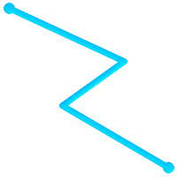 (a) | (b) |
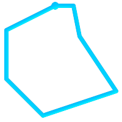 (c) | (d) |
(a)と(c)は単純な |
MULTILINESTRINGは、 全ての要素が単純で、かつ任意の2要素のインタセクトが要素の境界であるPOINTでだけ発生する場合に限って単純です。
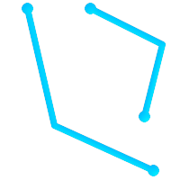 (e) | 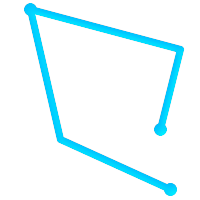 (f) | (g) |
(e)と(f)は単純な |
定義からPOLYGONは常に単純です。バウンダリ内の環 (外環と内環からなる)のうち二つがクロスしていないなら妥当です。POLYGONの境界は、POINTとインタセクトするかも知れませんが、接点にしかなりません (すなわち線上にない)。POLYGONはカットラインまたはスパイクを持たなくても良く、内環は外環の中に完全に含まれていなければなりません。
(h) | (i) | (j) |
(k) | 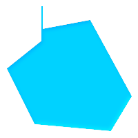 (l) | 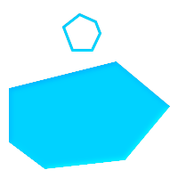 (m) |
(h)と(i)は妥当な |
MULTIPOLYGONは、全ての要素が妥当で、二つのポリゴン要素について内側がインタセクトしていない場合は妥当です。ポリゴン要素の任意の二つの境界は接触してもよいですが、有限な数のPOINTでなければなりません。
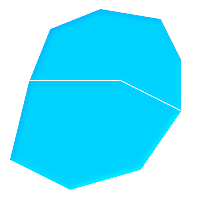 (n) | 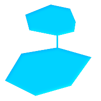 (o) | (p) |
(n)と(o)は妥当でない |
GEOSライブラリを使って実装されている関数のほとんどは、ジオメトリがOpenGISシンプルフィーチャー仕様で定義されているように妥当であると仮定しています。ジオメトリが単純であるか、また妥当であるか、のチェックとしてST_IsSimple()とST_IsValid()が使えます。
-- 一般的に、線フィーチャーの妥当性のチェックは
-- 常にTRUEを返すので意味がありません
-- しかし、この例では、PostGISがOGCのIsValidの定義を拡張して
-- *一意な頂点*が2より少ないラインストリングについてFALSEを
-- 返すようにしています
gisdb=# SELECT
ST_IsValid('LINESTRING(0 0, 1 1)'),
ST_IsValid('LINESTRING(0 0, 0 0, 0 0)');
st_isvalid | st_isvalid
------------+-----------
t | fデフォルトでは、PostGISはジオメトリ入力に関するこの妥当性チェックを適用しません。複雑なジオメトリの妥当性のチェックはCPU時間を多く必要とするためです。データソースが信用できない場合は、手動でこのチェックを強制するための制約を付けることができます。
ALTER TABLE mytable
ADD CONSTRAINT geometry_valid_check
CHECK (ST_IsValid(geom));妥当な入力ジオメトリでPostGIS関数を呼んだのに「GEOS Intersection()がエラーを投げました!」というようなエラーメッセージに遭遇したなら、PostGISまたは使用しているライブラリの中のエラーを発見しました。PostGIS開発者に連絡するべきです。PostGIS関数が妥当である入力ジオメトリから妥当でないジオメトリが返る場合も同じです。
| |
ST_IsValid()関数はZ値とM値を確認しません。 |
空間テーブルを作成したら、これでGISデータをデータベースにアップロードする準備ができたことになります。現在、PostGIS/PostgreSQLデータベースにデータをロードするには、SQLステートメントを使う、またはシェープファイルのローダ/ダンパを使う、という二つの方法があります。
空間データを文字表現 (WKTかWKB)に変換できたら、SQLを使うのがPostGISにデータを持たせる最も簡単です。SQLユーティリティのpsqlを使用して、SQLのINSERTステートメントのテキストファイルをロードすると、データをPostGIS/PostgreSQLに一括読み込みできます。
データアップロードファイル (たとえばroads.sql)は次のようになるでしょう。
BEGIN; INSERT INTO roads (road_id, roads_geom, road_name) VALUES (1,'LINESTRING(191232 243118,191108 243242)','Jeff Rd'); INSERT INTO roads (road_id, roads_geom, road_name) VALUES (2,'LINESTRING(189141 244158,189265 244817)','Geordie Rd'); INSERT INTO roads (road_id, roads_geom, road_name) VALUES (3,'LINESTRING(192783 228138,192612 229814)','Paul St'); INSERT INTO roads (road_id, roads_geom, road_name) VALUES (4,'LINESTRING(189412 252431,189631 259122)','Graeme Ave'); INSERT INTO roads (road_id, roads_geom, road_name) VALUES (5,'LINESTRING(190131 224148,190871 228134)','Phil Tce'); INSERT INTO roads (road_id, roads_geom, road_name) VALUES (6,'LINESTRING(198231 263418,198213 268322)','Dave Cres'); COMMIT;
SQLファイルのPostgreSQLへのロードはpsqlを使います。次のようにします。
psql -d [データベース名] -f roads.sql
shp2pgsqlデータローダは、ESRIシェープファイルをPostGIS/PostgreSQLデータベースに、ジオメトリまたはジオグラフィとして挿入するための適切なSQLに変換します。ローダには、次に示すコマンドラインフラグによって区別される、いくつかの操作モードがあります。
グラフィカルユーザインタフェースを持つshp2pgsql-guiもあります。コマンドラインローダのオプションのほとんどが使えます。これは、スクリプト化されていない1回限りのロードの場合や、PostGIS初心者がロードする場合に、簡単に使用できます。PgAdminIIIのプラグインとすることもできます。
- (c|a|d|p) 相互に排他的なオプションです
- -c
新しいテーブルの作成とシェープファイルからのデータの読み込みを行います。これがデフォルトモードです。
- -a
シェープファイルからデータベーステーブルにデータを追加します。複数のファイルをロードするためにこのオプションを使う場合は、これらのファイルは同じ属性と同じデータ型を持つ必要があります。
- -d
シェープファイルにあるデータを持つ新しいテーブルを作成する前にデータベーステーブルを削除します。
- -p
テーブル作成のSQLコードを生成するだけで、実際のデータは追加しません。このモードは、テーブル作成とデータロードとを完全に分けたい場合に使用します。
- -?
ヘルプ画面を表示します。
- -D
出力データにPostgreSQLのダンプ書式を用います。このモードは-a, -c, -dと組み合わせて利用します。デフォルトの"insert"によるSQL書式よりも、大変早くロードできます。大きなデータセットではこちらを使用して下さい。
- -s [<FROM_SRID>:]<SRID>
指定したSRIDを持つジオメトリテーブルの生成や追加を行います。FROM_SRIDが与えられた場合には、入力シェープファイルに、これを使います 。この場合には、ジオメトリは変更先SRIDに投影変換します。
- -k
識別子 (カラム、スキーマおよび属性)の大文字小文字を保持します。シェープファイルの属性は全て大文字であることに注意して下さい。
- -i
全ての整数を標準の32ビット整数に強制します。DBFヘッダではそれが正当であったとしても、64ビットのbigintを生成しません。
- -I
ジオメトリカラムにGiSTインデックスを生成します。
- -m
-m
a_file_nameで、長いカラム名を10文字のDBFカラム名に対応付けるファイルを指定します。ファイルは、1以上の行を持ちます。各行は空白区切りで二つの名前を持ち、行頭行末に空白を入れません。例を次に示します。COLUMNNAME DBFFIELD1 AVERYLONGCOLUMNNAME DBFFIELD2
- -S
マルチ系ジオメトリの替りに単一ジオメトリを生成します。全てのジオメトリが実際に単一である (たとえば単一の外環でなるMULTIPOLYGONや単一の頂点でなるMULTIPOINT)場合にのみ成功します。
- -t <次元>
出力ジオメトリが特定の次元を持つよう強制します。次元は、2D, 3DZ, 3DM, 4Dの文字列を使います。
入力の次元が出力より小さい場合には、出力では0が入ります。入力の次元が大きい場合には、外されます。
- -w
出力書式をWKBでなくWKTにします。精度が低下して、座標変動が発生しうることに注意が必要です。
- -e
トランザクションを使わずに、ステートメントごとに実行するようにします。エラーの元となる不良なジオメトリがいくつか含んでいる時に、大半の良好なデータのロードが可能にするものです。ダンプ書式ではトランザクションを常に使うので、-Dフラグを指定している場合には使えません。
- -W <エンコーディング>
入力データ (dbfファイル)のエンコーディングを指定します。全てのdbfの属性は指定されたエンコーディングからUTF8に変換されます。SQL出力結果には
SET CLIENT_ENCODING to UTF8が含まれるようになり、バックエンドはUTF-8からデータベースが内部利用のために設定したエンコーディングに再変換できます。- -N <方針>
NULLジオメトリ操作方針(insert*=挿入, skip=スキップ, abort=強制終了)を選択します。
- -n
DBFファイルのみインポートします。対応するシェープファイルを持っていない場合、 自動的にこのモードになり、DBFファイルのみロードします。 このフラグは、完全なシェープファイル群を持っていて、属性データだけが欲しくてジオメトリが欲しくない時のみ使用します。
- -G
ジオメトリ型のかわりに、ジオグラフィ型で、WGS84経度緯度 (SRID=4326)を使用します (経度緯度データが必要です)。
- -T <tablespace>
新しいテーブルのテーブル空間を指定します。 -Xパラメータが使われない場合には、インデックスはデフォルトのテーブル空間を使用します。PostgreSQL文書には、テーブル空間を用いるべき時に関する良い文書があります。
- -X <tablespace>
新しいテーブルのインデックスで使われるテーブル空間を指定します。 主キーインデックスに適用され、-Iが合わせて使われている場合にはGiST空間インデックスにも適用されます。
- -Z
このフラグをこれを使う時、
ANALYZE手続きの生成を防ぎます。-Zフラグが無い (デフォルトの振る舞い)場合には、ANALYZE手続きが生成されます。
ローダを使って入力ファイルを生成してアップロードするセッション例は次の通りです。
# shp2pgsql -c -D -s 4269 -i -I shaperoads.shp myschema.roadstable > roads.sql # psql -d roadsdb -f roads.sql
変換とアップロードはUNIXのパイプを使うと一回で実行できます。
# shp2pgsql shaperoads.shp myschema.roadstable | psql -d roadsdb
空間データはSQLかシェープファイルダンパを使うと抽出できます。SQLの節では空間テーブルで比較とクエリに使用できる関数を示します。
データベース外へのデータ抽出の最も簡単な方法は、抽出するデータセットを定義し、SELECT問い合わせを使って、結果カラムを解析可能なテキストファイルにダンプすることです。
db=# SELECT road_id, ST_AsText(road_geom) AS geom, road_name FROM roads;
road_id | geom | road_name
--------+-----------------------------------------+-----------
1 | LINESTRING(191232 243118,191108 243242) | Jeff Rd
2 | LINESTRING(189141 244158,189265 244817) | Geordie Rd
3 | LINESTRING(192783 228138,192612 229814) | Paul St
4 | LINESTRING(189412 252431,189631 259122) | Graeme Ave
5 | LINESTRING(190131 224148,190871 228134) | Phil Tce
6 | LINESTRING(198231 263418,198213 268322) | Dave Cres
7 | LINESTRING(218421 284121,224123 241231) | Chris Way
(6 rows)返されるレコードの数を減らすためにある種の制限が必要になる場合があります。属性ベースで制限をかける場合には、非空間テーブルで使うのと同じSQL文を使います。空間に制限をかけるには次の関数を使います。
- ST_Intersects
この関数は、二つのジオメトリが空間を共有しているかどうかをテストします。
- =
この関数で、二つのジオメトリが幾何的に同一であるかを見ることができます。たとえば、'POLYGON((0 0,1 1,1 0,0 0))' は 'POLYGON((0 0,1 1,1 0,0 0))' と同じかを見ることができます (これは同じとなります)。
次に、これらの演算子をクエリで使うことができます。SQLコマンドラインからジオメトリとボックスの指定を行うときは、明示的に文字列表現をジオメトリに変換しなければならないことに注意して下さい。たとえば、次のようになります。ただし312は架空の空間参照系番号で、ここでのデータに合致しています。
SELECT road_id, road_name FROM roads WHERE roads_geom='SRID=312;LINESTRING(191232 243118,191108 243242)'::geometry;
上のクエリは"ROADS_GEOM"テーブルから、その値と等価である単一のレコードを返します。
道路がポリゴンで定義した面を通過するかどうかをチェックするには次のようにします。
SELECT road_id, road_name FROM roads WHERE ST_Intersects(roads_geom, 'SRID=312;POLYGON((...))');
最も一般的な空間クエリは「フレームベース」のクエリでしょう。これは、表示するためのデータの価値のある「マップフレーム」を取得するために、データブラウザやウェブマッパのようなクライアントソフトウェアに使われます。
"&&"演算子を使うとき、比較フィーチャーをBOX3DかGEOMETRYかに指定することができます。ただし、GEOMETRYを指定すると、それのバウンディングボックスが比較に使われます。
次に示すクエリのように、フレームにBOX3Dオブジェクトを使います。
SELECT ST_AsText(roads_geom) AS geom FROM roads WHERE roads_geom && ST_MakeEnvelope(191232, 243117,191232, 243119,312);
エンベロープの投影を指定するためにSRID 312を使っていることに注意して下さい。
pgsql2shpテーブルダンパは、データベースに直接接続して、テーブル (あるいはクエリによって定義されたもの)をシェープファイルに変換するものです。基本的な文は次の通りです。
pgsql2shp [<オプション>] <database> [<スキーマ>.]<table>
pgsql2shp [<オプション>] <データベース> <クエリ>
コマンドラインオプションは次の通りです。
- -f <ファイル名>
特定のファイル名に出力を書きこみます。
- -h <ホスト>
接続先データベースのホスト名。
- -p <ポート>
接続先データベースのポート。
- -P <パスワード>
データベースに接続するためのパスワード。
- -u <ユーザ名>
データベースに接続する際のユーザ名。
- -g <ジオメトリカラム>
複数のジオメトリカラムを持つテーブルの場合の、シェープファイルの出力に使用するジオメトリカラム。
- -b
バイナリカーソルを使います。これは、実行時間を短くしますが、テーブルの非ジオメトリ属性がテキストへのキャストを持っていない場合には、動作しません。
- -r
Rawモード。
gidフィールドを落としたり、カラム名をエスケープしてはいけません。- -m
ファイル名 識別名を10文字名に再割り当てします。 ファイルの中身は、一つの空白で区切られ、前と後に空白が無い二つのシンボルの行からなります。VERYLONGSYMBOL SHORTONE ANOTHERVERYLONGSYMBOL SHORTER等となります。
インデックスによって巨大データセットの空間データベースの使用が可能となります。インデックス無しでは、地物の検索を行う際に、データベースの全てのレコードに対するシーケンシャルスキャンが必要となります。インデックスによって、レコード探索のために早く移動できる構造を構築するので、検索速度が向上します。
一般的に属性データに使われるインデックス手法でありB木は、空間データではあまり有用ではありません。1次元データの格納とクエリにだけしか対応していないためです。ジオメトリのような2次元以上の次元を持つデータでは、全ての次元の範囲を指定できるインデックス手法が求められます。PostgreSQLの空間データ処理に関する主要な利点の一つに、多次元データで上手く動作するGiST、BRIN、SP-GiSTの複数のインデックス手法を提供していることです。
GiST (Generalized Search Tree)インデックスは、データを「一方にあるもの」「オーバラップするもの」「内部にあるもの」に分解するもので、GISデータを含む幅広い範囲で使えます。PostGISはGiSTインデックス空間データをR木インデックス実装のベースにています。GiSTは最も一般的に使われ、多目的なインデックス手法で、非常に良好な問い合わせ効率を提供しています。
BRIN (Block Range Index)インデックスは、空間範囲を集計することで動作します。探索は範囲のスキャンを通して行われます。BRINは一部の種類 (空間的にソートされ、更新がほぼ無いか全く無い)のデータだけに適切です。しかし、インデックス生成時間は非所に早く、インデックスサイズは非常に小さくなります。
SP-GiST (Space-Partitioned Generalized Search Tree)は4分木、kd木、基数木 (トライ木)のような部分木探索に対応する一般的なインデックス手法です。
空間インデックスはジオメトリのバウンディングボックスだけを格納します。空間クエリはインデックスは初期フィルタとして使用して、クエリ条件に一致する可能性のあるジオメトリを早く求めます。ほとんどの空間クエリでは、空間述語関数を使って特定の空間条件をテストする二次フィルタが必要です。空間述語関数を使ったクエリの詳細情報については「空間インデックスを使う」をご覧下さい。
また、PostGIS Workshop section on spatial indexesとPostgreSQL manualもご覧下さい。
GiSTは「汎用検索木 (Generalized Search Tree)」の意味で、多次元データのインデックスの一般化された形式です。PostGISはGiST上で実装しているR木インデックスをを空間データのインデックスに使用しています。GiSTは最も一般的に使われ、多目的なインデックス手法で、クエリ能率を非常に良くします。他のGiSTの実装は、通常のB木インデックスに従わない全ての種類の不規則なデータ構造 (整数配列, スペクトラルデータ等)の検索速度を向上させるために使います。詳細情報についてはPostgreSQL manualをご覧ください。
GISデータテーブルが数千行を超えたら、空間検索の速度向上のためインデックスを構築したくなるでしょう (これは属性検索でない場合です。属性でしたら通常のインデックスを属性フィールドに追加します)。
GiSTインデックスをジオメトリカラムに追加するための文は次の通りです。
CREATE INDEX [インデックス名] ON [テーブル名] USING GIST ( [ジオメトリカラム名] );
上の文では常に2次元インデックスを構築します。n次元インデックスをジオメトリ型で使うには、次の文でインデックスを生成できます。
CREATE INDEX [インデックス名] ON [テーブル名] USING GIST ( [ジオメトリカラム名] gist_geometry_ops_nd);
空間インデックスの構築は、計算量を集中させて行われます。また、この時には、テーブルへの書き込みアクセスがブロックされます。そのため、本番システムではより遅いCONCURRENTLYを選択するかも知れません。次のようにします。
CREATE INDEX CONCURRENTLY [インデックス名] ON [テーブル名] USING GIST ( [ジオメトリカラム名] );
インデックス構築後に、時々PostgreSQLにテーブルの統計情報を集めさせると助かります。クエリプランの最適化に使われます。
VACUUM ANALYZE [テーブル名] [(カラム名)];
BRINは"Block Range Index"の略です。PostgreSQL 9.5で導入された汎用インデックス手法です。BRINは不可逆インデックス手法であり、レコードが与えた検索条件に合致することを確認する二番目のチェックが必要であることを意味しています (全ての空間インデックスで言えます)。非常に速いインデックス作成、非常に小さいインデックスサイズで、合理的な読み込み効率を持ちます。主目的は、非常に大きいテーブルのテーブル内の物理位置と関係があるカラムにインデックスを作ることに対応するためです。空間インデックスに加えて、BRINは様々な種類の属性データ構造 (整数、配列等)で速度向上させることができます。詳細情報についてはPostgreSQL manualをご覧ください。
空間テーブルが、ひとたび数千行を超えると、データの空間検索の速度向上にインデックスが必要と感じることになります。GiSTインデックスは、サイズがデータベースで使えるRAM容量を超えず、インデックスのストレージサイズに余裕があり、書き込み時のインデックス更新コストにも余裕があるなら、非常に高いパフォーマンスを発揮します。そうでない場合には、非常に大きなテーブルにおいては、BRINインデックスを代替に考えることができます。
BRINインデックスは、連続するテーブルブロックの集合 (ブロック範囲と言います)の全てのジオメトリを囲むバウンディングボックスを格納します。インデックスを使用した問い合わせを実行する時に、問い合わせ範囲とインタセクトするブロック範囲を見つけるためにスキャンします。これは、データが物理的に整列していて、ブロック範囲のバウンディングボックスのオーバラップが最小である (理想的には相互に排他的である)場合に限って効率的です。結果インデックスは非常に小さいサイズですが、通常、読み込み効率は、同じデータにおけるGiSTインデックスより悪くなります。
BRINインデックスの構築は、はGiSTインデックスと比べて、CPU集中を非常に減らします。BRINインデックスはGiSTインデックスよりも、同じデータに対して10倍速く構築するのが普通です。BRINインデックスはテーブルブロックの範囲ごとに一つのバウンディングボックスしか格納しないので、GiSTインデックスと比べて、ディスクスペースを1000倍少なくできます。
レンジ内で要約するブロック数を選択できます。この数字を減らすと、インデックスは大きくなりますが、効率向上の助けになる可能性があります。
BRINを効果的にするには、テーブルデータをブロック範囲のオーバラップの量を最小にするような物理的オーダーで格納します。データが既に適切に並び替えられているかも知れません (たとえば、既に空間オーダーで並び替えられているデータセットを他のデータベースからロードする場合)。そうでない場合には、一つの空間キーによるデータの並べ替えで実現できます。一つの方法として、ジオメトリ値で並べ替えた新しいテーブルを生成することです (最近のPostGISのバージョンで効果的なヒルベルト曲線オーダーが使われています)。
CREATE TABLE table_sorted AS SELECT * FROM table ORDER BY geom;
もしくは、データは、ジオハッシュを (一時的な)インデックスに使い、そのインデックスでクラスタリングを行うことによって適切に並べ替えることができます。
CREATE INDEX idx_temp_geohash ON table
USING btree (ST_GeoHash( ST_Transform( geom, 4326 ), 20));
CLUSTER table USING idx_temp_geohash;
BRINインデックスをジオメトリカラムに追加するための文は次の通りです。
CREATE INDEX [インデックス名] ON [テーブル名] USING BRIN ( [ジオメトリカラム名] );
上の文で2次元インデックスを構築します。3次元インデックスをビルドするには、この文を使います。
CREATE INDEX [インデックス名] ON [テーブル名]
USING BRIN ( [ジオメトリカラム名] brin_geometry_inclusion_ops_3d);また、4次元演算子クラスを使う4次元インデックスを使うこともできます。
CREATE INDEX [インデックス名] ON [テーブル名]
USING BRIN ( [ジオメトリカラム名] brin_geometry_inclusion_ops_4d);上記のコマンドでは、範囲のブロック数はデフォルトの128を使用しています。集計で範囲のブロック数を指定するには、この文を使います。
CREATE INDEX [インデックス名] ON [テーブル名]
USING BRIN ( [ジオメトリカラム名] ) WITH (pages_per_range = [数字]); また、BRINインデックスは、多数の行で一つのインデックス値を格納することを心に留めておいて下さい。テーブルに違う次元のジオメトリを格納する場合には、インデックスの効率が悪くなります。この効率欠落を回避するには、格納したジオメトリの次元数の最小値となる演算子クラスを選択します。
「ジオグラフィ」型もまたBRINインデックスに対応しています。BRINインデックスを「ジオグラフィ」カラムに構築するための文は次の通りです。
CREATE INDEX [インデックス名] ON [テーブル名] USING BRIN ( [ジオメトリカラム名] );
上の文では常に回転楕円体面上の地理空間オブジェクトの2次元インデックスを構築します。
現在のところは「包括対応」だけをここで考えています。これは、&&, ~, @の演算子だけが2次元で使われることを意味します (ジオメトリとジオグラフィの両方)。 &&&演算子は3次元ジオメトリで使えます。しばらくはKNN検索に対応しません。
BRINと他のインデックスとの重要な違いは、データベースがインデックスを動的に保守しないことです。テーブルの空間データを変更すると、単純にインデックスの末尾に追加しています。このためインデックス探索の能率が時間とともに低下します。インデックスはVACUUMか空間関数brin_summarize_new_values(regclass)を実行することで更新できます。このため、BRINは読み込み専用か、書き込みがほとんど発生しないよなデータでの利用では最も適切になりえます。詳細情報については、manualをご覧下さい。
空間データにBRINを使用して集計するには:
インデックス構築時間は非常に速く、インデックスサイズは非常に小さいです。
インデックスのクエリ時間はGiSTより遅いですが、十分許容できます。
テーブルデータを空間順序で並べ替える必要があります。
手動でインデックスの保守をする必要があります。
巨大なテーブルであって、オーバラップが少ないか無く (ポイントなど)、かつ静的か頻繁には変更しないようなものに、最も適しています。
比較的多数のデータレコードを返すクエリでの使用が、より効果的です。
SP-GiSTは、「空間分割された一般探索木」を表します。四分木、k次元木、基数木 (トライ木)のような分割探索木に対応するインデックスの総称的な形式です。このデータ構造の一般的な機能は、検索空間を反復して分割することですが、分割は等しいサイズである必要はありません。SP-GiSTは、GISインデックスだけでなく、電話回線のルーティングや、IPルーティング、部分文字列検索等といった、様々な種類のデータを探索する速度の向上に使われます。詳細情報についてはPostgreSQL manualをご覧下さい。
GiSTインデックスを利用しているので、空間オブジェクトを覆うバウンディングボックスを保存するという意味で、SP-GiSTインデックスは不可逆です。SP-GiSTインデックスは、GiSTインデックスの代替と考えることができます。
一度GISデータテーブルが数千行を超えると、データの空間探索の速度向上にSP-GiSTインデックスを使うと良いかも知れません。「ジオメトリ」カラムにSP-GiSTインデックスを構築するための文は次の通りです。
CREATE INDEX [インデックス名] ON [テーブル名] USING SPGIST ( [ジオメトリカラム] );
上の文では、2次元インデックスを構築します。ジオメトリ型の3次元インデックスは、次のように、3次元演算子クラスを使用して生成します。
CREATE INDEX [インデックス名] ON [テーブル名] USING SPGIST ([ジオメトリカラム] spgist_geometry_ops_3d);
空間インデックスの構築は、計算量を集中させて行われます。また、この時には、テーブルへの書き込みアクセスがブロックされます。そのため、本番システムでは、より遅いCONCURRENTLYを選択するかも知れません。次のようにします。
CREATE INDEX CONCURRENTLY [インデックス名] ON [テーブル名] USING SPGIST ( [ジオメトリカラム] );
インデックス構築後に、時々PostgreSQLにテーブルの統計情報を集めさせると助かります。クエリプランの最適化に使われます。
VACUUM ANALYZE [テーブル名] [(カラム名)];
SP-GiSTインデックスは次の演算子を含むクエリの実行速度を向上させられます。
2次元インデックスについては <<, &<, &>, >>, <<|, &<|, |&>, |>>, &&, @>, <@, and ~= 。
3次元インデックスについては &/&, ~==, @>>, and <<@ 。
現時点ではkNN探索に対応していません。
通常、インデックスは知らないうちにデータアクセスの速度を向上します。ひとたびインデックスを構築すれば、PostgreSQLクエリプランナは自動的にクエリの能率を向上させるために使うべきかどうかを決定します。しかし、プランナが既存のインデックスを選択せず、遅いシーケンシャルスキャンを使い続ける場合があります。
空間インデックスが使われていないのが分かった場合には、少しの行えることがあります。
クエリプランの試験とクエリの確認で、必要なものを計算できます。誤ったJOINや忘れ去られたテーブルや間違ったテーブルでは、予期しないテーブルレコード検索が複数回行われることがありえます。クエリプランを得るにはクエリの先頭に
EXPLAINを付けて実行します。テーブル内の値の数量と分布に関する統計情報を収集するとともに、クエリプランナにインデックス使用にかかる意思決定のための、より良い情報を与えるようにします。VACUUM ANALYZEは両方を計算します。
データベースに対する定期的なvacuumは常に実行するべきです。多くのPostgreSQLデータベースエージェントは、閑散時のcronジョブとして定期的にVACUUMを実行します。
VACUUMが役に立たない場合には、SET ENABLE_SEQSCAN TO OFF;コマンドを使用して、一時的にプランナにインデックス情報の使用を強制することができます。この方法で、プランナがインデックス使用を多くしたクエリプランを生成できるかどうかを確認できます。このコマンドはデバッグにのみ使用してください。一般的に言えば、プランナはインデックスを使用するタイミングをよく知っています。クエリを実行したらSET ENABLE_SEQSCAN TO ON;を実行して、他のクエリでは通常操作にすることを忘れないでください。
SET ENABLE_SEQSCAN TO OFF;でクエリ速度が向上する場合には、PostgreSQLのハードウェア関連のチューンが行われていないのかも知れません。プランナがシーケンシャル対インデックスのコストが誤っている場合には、
postgresql.conf内にあるRANDOM_PAGE_COSTの値を変更してみて下さい。SET RANDOM_PAGE_COST TO 1.1;とします。RANDOM_PAGE_COSTのデフォルト値は4.0です。1.1 (SSDの場合)または2.0 (高速磁気ディスクの場合)を試してみて下さい。値を小さくするほど、プランナがインデックススキャンをしやすくなります。SET ENABLE_SEQSCAN TO OFF;がクエリの助けにならないなら、クエリはPostgreSQLプランナがまだ最適化できないSQL構成なのかも知れません。プランナが処理できるようにクエリを再記述できるかもしれません。例えば、インラインSELECTを持つ副問い合わせがあると、効果的なプランを作らないことがあり、LATERAL JOINを使うように書き換えることができます。
詳細情報についてはPostgreSQLマニュアルの問い合わせ計画節をご覧下さい。
空間データベースのレゾンデートルは、通常はデスクトップGISの機能が必要なクエリをデータベース内で実行することです。PostGISを使うには、使用可能な空間関数は何かを知り、またクエリ内でどう使うかを知って、適切なインデックスで能率を向上させることが求められます。
空間関係は、二つのジオメトリについて、一方がもう一方にどのような相互関係ちなっているかを示すものです。ジオメトリのクエリにおける基本的な機能です。
OpenGIS Simple Features Implementation Specification for SQLによると「二つのジオメトリの比較の基本的なアプローチは、二つのジオメトリの内部、境界、外部のインタセクションの比較と、『インタセクション行列』の要素に基づく2ジオメトリの関係の分類です」。
点集合トポロジ理論では、2次元空間に埋め込まれたジオメトリの中にあるポイントは、次に示す三つの集合に分類されます。
- 境界 (Boundary)
ジオメトリの境界は、一次元低いジオメトリです。
POINTでは、次元が0になり、境界は空集合です。LINESTRINGの境界は二つの端点です。POLYGONの境界は、外環と内環の線です。- 内部 (Interior)
ジオメトリの内部は、ジオメトリの境界以外のポイントです。
POINTでは、内部はポイント自体です。LINESTRINGの内部は端点の間のポイントの集合です。POLYGONの内部は、ポリゴン内部の面です。- 外部 (Exterior)
ジオメトリの外部はジオメトリが組み込まれた空間の残りです。言い換えると、ジオメトリの内部にも境界にもない点の全てです。これは2次元の閉じていない面になります。
Dimensionally Extended 9-Intersection Model (DE-9IM)は、二つのジオメトリの空間関係を九つの交差の次元を指定することで記述します。交差次元は3×3の交差行列で正式に表現することができます。
ジオメトリgに対する内部、境界、外部はI(g)、B(g)、E(g)と表記します。また、dim(s)はsの集合を{0,1,2,F}の値で示すます。
0=> 点1=> 線2=> 面F=> 空集合
この表記法を使うと、二つのジオメトリaとbの交差行列は次の通りです。
| 内部 (Interior) | 境界 (Boundary) | 外部 (Exterior) | |
|---|---|---|---|
| 内部 (Interior) | dim( I(a) ∩ I(b) ) | dim( I(a) ∩ B(b) ) | dim( I(a) ∩ E(b) ) |
| 境界 (Boundary) | dim( B(a) ∩ I(b) ) | dim( B(a) ∩ B(b) ) | dim( B(a) ∩ E(b) ) |
| 外部 (Exterior) | dim( E(a) ∩ I(b) ) | dim( E(a) ∩ B(b) ) | dim( E(a) ∩ E(b) ) |
二つのオーバラップするポリゴンについて可視化すると、次のようになります。
|
左から右に、上から下に読みます。交差行列の文字列表現は'212101212'です。
詳細情報については次をご覧下さい。
共通の空間関係を簡単に決定できるように、PGC SFSは名前付き空間関係述語の集合を定義しています。PostGISでは???、???、???、???、???、???、???、???が提供されています。非標準の空間関係述語???、???、???も定義されています。
空間述語は通常SQLのWHERE節やJOIN節内で条件に使用されます。名前付き空間述語は、インデックスが有効なら自動的に空間インデックスを使うので、バウンディングボックス演算子&&を使う必要はありません。例えば次のようになります。
SELECT city.name, state.name, city.geom FROM city JOIN state ON ST_Intersects(city.geom, state.geom);
詳細や図についてはPostGIS Workshopをご覧下さい。
名前付き空間関係が求める空間フィルタ条件を与えるのに不十分となる場合があります。
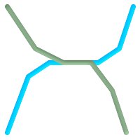 例えば、道路ネットワークを表現する線データセットを考えてみます。点でなく線で交差する全ての道路の辺を識別しなければならないことがあります (ビジネスルールの検証のためならありえます)。この場合、???では、点で交差する場合しか 2ステップ解決法を示します。まず、空間的にインタセクトしている同路線の二本を抜き出し (???)、実際にインタセクトしている部分を計算 (???)します。次いで、インタセクトしている部分のST_GeometryTypeが 明らかに、より単純でより速い解法が望ましいです。 |
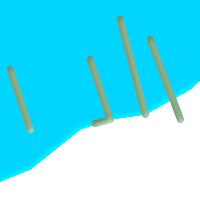 二つ目の例では、湖の境界とインタセクトし、かつ終端が岸に上がっている波止場を見つけます。言い換えると、波止場が湖に含まれるが完全には含まれず、湖の境界線とインタセクトして、波止場の終端が確実に湖内または境界にある場合を指します。空間述語を併用すると求める地物を見つけることができます。
|
この要件は完全なDE-9IM交差行列の計算で満たすことができます。PostGISは、これを行う???関数を提供しています。次のようにします。
SELECT ST_Relate( 'LINESTRING (1 1, 5 5)',
'POLYGON ((3 3, 3 7, 7 7, 7 3, 3 3))' );
st_relate
-----------
1010F0212
特定の空間関係をテストするには、交差行列パターンを使います。これは、追加シンボル{T,*}で拡張された行列表現です。
T=> インタセクションの次元は空ではないという意味です。すなわち{0,1,2}のいずれかです。*=> 何でも良い
交差行列パターンを使って、特定の空間関係の評価がより簡潔な方法で可能です。交差行列パターンのテストに???と???を使うことができます。上に挙げた一つ目の例では、二つのラインがライン内部でインタセクトする交差行列パターンは'1*1***1**'となります。
-- ライン内でインタセクトする道路区間を見つける
SELECT a.id
FROM roads a, roads b
WHERE a.id != b.id
AND a.geom && b.geom
AND ST_Relate(a.geom, b.geom, '1*1***1**');二つ目の例です。一本のラインが部分的にポリゴン内部とポリゴン外部とにある場合の交差行列パターンは '102101FF2'となります。
-- 一部が湖の水涯線上にある波止場を見つける
SELECT a.lake_id, b.wharf_id
FROM lakes a, wharfs b
WHERE a.geom && b.geom
AND ST_Relate(a.geom, b.geom, '102101FF2');空間条件を使用するクエリを構築する時、最良の効果を得るには、空間インデックスが存在する場合に (「空間インデックス」参照)これを確実に使用することが重要です。そのためには、WHERE節やON節で、空間演算子またはインデックス対応関数を使用しなければなりません。
空間演算子には、バウンディングボックス演算子 (最もよく使われるのは&&です。「バウンディングボックス演算子」参照)、および近傍クエリで使用される距離演算子 (最もよく使われるのは<->です。「距離演算子」参照)が含まれます。
インデックス対応関数は、自動的にバウンディングボックス演算子を空間条件に追加します。インデックス対応関数は空間関係述語を含みます。空間関係述語には、???, ???, ???, ???, ???, ???, ???, ???, ???, ???, ???があり、距離述語には???, ???, ???, ??? があります。
ST_Distanceといった関数は、演算の最適化のためにはインデックスを使用しません。例えば、次のクエリは、大きなテーブルでは非常に遅くなります。
SELECT geom FROM geom_table WHERE ST_Distance( geom, 'SRID=312;POINT(100000 200000)' ) < 100
このクエリはgeom_tableテーブル内の、(100000, 200000)のポイントから100単位内にある全てのジオメトリを選択します。テーブル内の個々のポイントと指定したポイントとの距離を計算しているため、非常に遅くなります。すなわち、1回のST_Distance()の計算で、テーブルの全ての行について計算することになります。
インデックス対応関数???を使用すると、処理行数を実質的に減らすことができます。次のようにします。
SELECT geom FROM geom_table WHERE ST_DWithin( geom, 'SRID=312;POINT(100000 200000)', 100 )
このクエリは、同じジオメトリを選択しますが、より効率的な方法を取ります。 ST_DWithin()が内部で&&演算子をクエリジオメトリのバウンディングボックスを拡大したボックスで使うことによって可能となります。the_geom上に空間インデックスが存在するなら、クエリプランナは距離計算の前に対象行数を減らすためにインデックスを使えることを認識します。空間インデックスによって、バウンディングボックスが拡張された範囲とオーバラップするジオメトリだけを検索して、そのため、求めようとする距離内にあるかも知れないジオメトリを検索することができます。その後で、結果集合内のレコードを含めるかどうかを確認するための実際の距離計算が行われます。
詳細情報と例についてはPostGIS Workshopをご覧下さい。
本節の例では、線型の道、ポリゴンの自治体境界、の二つのテーブルを使います。テーブルの定義をしまします。bc_roadsについては次の通りです。
Column | Type | Description ------------+-------------------+------------------- gid | integer | Unique ID name | character varying | Road Name the_geom | geometry | Location Geometry (Linestring)
bc_municipalityテーブルの定義については次の通りです。
Column | Type | Description -----------+-------------------+------------------- gid | integer | Unique ID code | integer | Unique ID name | character varying | City / Town Name the_geom | geometry | Location Geometry (Polygon)
- 5.3.1. 道路の総延長はkm表記でいくらになるでしょう?
- 5.3.2. プリンスジョージ市の大きさはha表記でいくらになるでしょう?
- 5.3.3. 県内で最も大きな面積となる自治体はどこでしょう?
- 5.3.4. 各自治体内に含まれる道路の総延長はいくらでしょう?
- 5.3.5. プリンスジョージ市内の全ての道路からなるテーブルを作る
- 5.3.6. ビクトリア州の「ダグラス通り」の長さはkm表記でいくらになるでしょう?
- 5.3.7. 穴を持つ自治体ポリゴンのうち最も大きいのはどれでしょう?
現版のPostgreSQL (9.6を含む)では、TOASTテーブルに従うクエリオプティマイザの弱さに苦しみます。 TOASTテーブルは、(長いテキスト、イメージ、多数の頂点を持つ複合ジオメトリといった)通常のデータページに適合しない、(データサイズという意味では)巨大な値を納めるための「拡張部屋」の一種です。詳細情報は the PostgreSQL Documentation for TOASTをご覧ください。
(高解像度で全てのヨーロッパの国の境界を含むテーブルのような)大きなジオメトリがあるうえ、行がそう多くないテーブルを持つようになると、この問題が出てきます。テーブル自体は小さいのですが、多くのTOASTスペースを使います。例として、テーブル自体は概ね80行で3データページしか使わなくてもTOASTテーブルで8225ページを使うとします。
ここで、ジオメトリ演算子の&&を使って、ほとんどマッチしないようなバウンダリボックスを検索するクエリを出してみます。クエリオプティマイザにはテーブルは3ページ80行しかないように見えます。オプティマイザは、小さなテーブルを順に走査する方がインデクスを使うよりも早いと見積もります。そして、GiSTインデクスは無視すると決めます。通常なら、この見積もりは正しいです。しかし、この場合は&&演算子が全てのジオメトリをディスクから呼び出してバウンディングボックスと比較しなければならなくなり、ゆえに、全てのTOASTページもまた呼び出す必要があります。
この問題に苦しむかどうかを見るには、PostgreSQLの"EXPLAIN ANALYZE"コマンドを使います。詳細情報と技術情報については、PostgreSQL性能メーリングリストのスレッドhttp://archives.postgresql.org/pgsql-performance/2005-02/msg00030.phpをご覧下さい。
また、PostGISの新しいスレッドhttps://lists.osgeo.org/pipermail/postgis-devel/2017-June/026209.htmlもご覧下さい。
PostgreSQLコミュニティでは、TOASTを意識したクエリ見積もりを作ることで、この問題を解決しようとしています。今のところは、二つの応急処置があります。
一つは、クエリプランナにインデクスの使用を強制することです。クエリを発行する前に"SET enable_seqscan TO off;"をサーバに送信します。これは基本的にクエリプランナに対して可能な限り順に走査することを避けるよう強制します。そのためGiSTインデクスを通常使うようになります。しかし、このフラグは接続するたびに設定しなければならず、他のケースにおいてはクエリプランナに誤った見積もりをさせることになるので、 "SET enable_seqscan TO on;"をクエリの後に送信すべきです。
もう一つは、順に走査することをクエリプランナが考える程度に早くすることです。これは、バウンダリボックスの「キャッシュ」を行う追加カラムを作成し、このカラムにマッチさせるようにすることで達成することができます。ここでの例では次のようになります。
SELECT AddGeometryColumn('myschema','mytable','bbox','4326','GEOMETRY','2');
UPDATE mytable SET bbox = ST_Envelope(ST_Force2D(geom));そして、次のように、&&演算子をgeom_columnに対して行っていたものをbboxに変更します。
SELECT geom_column
FROM mytable
WHERE bbox && ST_SetSRID('BOX3D(0 0,1 1)'::box3d,4326);もちろん、mytableの行を変更または追加したら、bboxを「同期」するようにしなければなりません。最もすっきりした方法はトリガです。もしくは、アプリケーションを変更してbboxカラムの現状を保持するか、テーブル更新後にいつもUPDATEクエリを実行するかでも対応できます。
読み込むことがほとんどで、かつほとんどのクエリでひとつのインデクスを使うようなテーブルのために、PostgreSQLはCLUSTERコマンドを提供しています。このコマンドは、全てのデータ行を、インデクス基準にあわせて物理的に再整理するので、二つの性能の利点を生みます。一つは、インデクスの範囲走査のために、データテーブルのシーク回数が劇的に減少することです。もう一つは、いくつかの小さなインデクス間隔に集中する場合には、データ行が分布するデータページがより少なくなるので、より効率的なキャッシュを持つことです (この点で、PostgreSQLマニュアルのCLUSTERコマンドのドキュメントを読むように仕向けられていると感じて下さい)。
しかし、GiSTインデクスは単純にNULL値を無視するため現在のところPostGISのGiSTインデクスのクラスタリングはできず、次のようなエラーメッセージを得ます。
lwgeom=# CLUSTER my_geom_index ON my_table; ERROR: cannot cluster when index access method does not handle null values HINT: You may be able to work around this by marking column "geom" NOT NULL.
ヒントメッセージにある通り、テーブルに"not null"制限を追加することで、この欠陥にとりあえず対応できます。例を示します。
lwgeom=# ALTER TABLE my_table ALTER COLUMN geom SET not null; ALTER TABLE
もちろん、ジオメトリカラムで実際にNULL値が必要な場合、この対応はできません。さらには、制限を追加するには上の方法を使わなければならず、"ALTER TABLE blubb ADD CHECK (geometry is not null);"のようなCHECK制限は使えません。
ときどき、テーブルで3次元、4次元のデータを持つのに、常にOpenGIS準拠のST_AsText()またはST_AsBinary()関数を使ってアクセスして 2次元ジオメトリを出力させるようなことが起きます。内部でST_Force_2d()関数を呼んでいるために発生しますが、これは、大きなジオメトリでは重大なオーバヘッドを誘引することになります。このオーバヘッドを回避するには、一度追加された次元を前もって落とし、かつこれを永続化するのが適当かも知れません。
UPDATE mytable SET geom = ST_Force2D(geom); VACUUM FULL ANALYZE mytable;
AddGeometryColumn()を使ってジオメトリカラムを追加した場合、ジオメトリの次元に関する制限があることに注意してください。この制限を迂回するには、制限の削除が必要になります。geometry_columnsテーブル内のエントリを更新して、その後で制限を再作成することを忘れないで下さい。
大きなテーブルの場合、WHERE節、およびプライマリキー若しくは他の適切な基準によってテーブルの一部へのUPDATEを制限させて、UPDATEをより小さい塊に分割して、UPDATEの実行の間に単に"VACUUM;"と実行するのが賢いやり方かもしれません。これにより、テンポラリディスクスペースが劇的に減少します。さらに、次元混合のジオメトリを持つ場合、"WHERE dimension(the_geom)>2"によってUPDATEを制限することで、2次元で書かれているジオメトリの再書き込みをスキップさせることができます。
Minnesota MapServer は、OpenGIS Web Map Service仕様に準拠したインターネットWebマッピングサーバです。
MapServerのウェブサイトはhttp://mapserver.org/です。
OpenGIS Web Map Serviceの仕様書はhttp://www.opengeospatial.org/standards/wmsにあります。
PostGISとMapServerとを併用するには、MapServerの設定方法を知る必要がありますが、本文書の範囲外です。本節では、PostGIS独特の問題と設定詳細について説明します。
PostGISをMapServerで使うには、次のものが必要です。
PostGIS 0.6以上
MapServer 3.5以上
MapServerは、他のPostgreSQLクライアントと同じくPostGIS/PostgreSQLデータにアクセスします。アクセスにはlibpqインタフェースを使います。つまり、MapServerは、PostGISサーバにアクセスするあらゆるネットワークに繋がっている計算機にインストールすることができ、PostGISをデータソースとして利用できます。システム間の接続が速いほど良くなります。
"--with-postgis"と好きなconfigureオプションを付けてMpaServerのコンパイルとインストールを行います。
Mapserverのmapファイルの中に、PostGISレイヤを追加します。たとえば次のようになります。
LAYER CONNECTIONTYPE postgis NAME "widehighways" # リモートの空間データベースに接続します CONNECTION "user=dbuser dbname=gisdatabase host=bigserver" PROCESSING "CLOSE_CONNECTION=DEFER" # 'roads'テーブルの'geom'カラムからラインを取得します DATA "geom from roads using srid=4326 using unique gid" STATUS ON TYPE LINE # 範囲内のラインである広い高速道路のみ描画します FILTER "type = 'highway' and numlanes >= 4" CLASS # 非常に広い高速道路はより明るい色かつ2ピクセル幅にします EXPRESSION ([numlanes] >= 6) STYLE COLOR 255 22 22 WIDTH 2 END END CLASS # 残りは、暗い色かつ1ピクセル幅です EXPRESSION ([numlanes] < 6) STYLE COLOR 205 92 82 END END END上の例におけるPostGIS特有のディレクティブは次の通りです。
- CONNECTIONTYPE
PostGISレイヤでは常に"postgis"とします。
- CONNECTION
データベース接続は「接続文字列」によって制御されます。接続文字列は、次に示すような標準的なキーと値からなります(<>内はデフォルト値)。
user=<ユーザ名> password=<パスワード> dbname=<ユーザ名> hostname=<サーバ> port=<5432>
空の接続文字列も妥当とされますし、あらゆるキーと値のペアは省略できます。接続するためには一般的にはdbnameとusernameとが最少で与えるものとなります。
- DATA
このパラメータの形式は "<カラム名> from <テーブル名> using srid=<SRID> using unique <主キー>"となります。ここで、カラム名は地図に描画したい空間カラムを指し、SRIDはそのカラムで使われるSRIDで、主キーはそのテーブルの主キー (またはインデックスを伴う一意の値を持つカラム)です。
"using srid"と"using unique"節は省略できます。MapServerは可能なら自動的に正しい値を判断しますが、地図を描画するサーバ上で余分なクエリを若干実行するコストがかかります。
- PROCESSING
接続を閉じずに複数のレイヤで再利用する場合にCLOSE_CONNECTION=DEFERとします。速度が改善します。詳細な説明についてはMapServer PostGIS Performance Tipsを参照して下さい。
- FILTER
フィルタは、妥当なSQL文字列でなければなりません。この文字列は、通常はSQLクエリにおける"WHERE"に続く論理式に対応します。たとえば、6レーン以上の道路だけを描画する場合には、"num_lanes >= 6"というフィルタを使います。
空間データベースにおいては、空間 (GiST)インデックスを、マップに描かれるレイヤ全てに構築していることを保証して下さい。
CREATE INDEX [インデックス名] ON [テーブル名] USING GIST ( [ジオメトリカラム] );
MapServerを使用するレイヤのクエリを実行する場合には、"using unique"節もDATAステートメントに追加しなければなりません。
MapServerでは、クエリ実行の際には、それぞれの空間レコードを識別するための一意な識別子が必要です。MapServerのPostGISモジュールは、一意な識別子を提供するために、ユーザ指定の一意な値を使います。テーブルの主キーを使うのが最も良い方法です。
- 7.1.2.1. EXPRESSIONをマップファイルで使う時に、値がテーブルにあるのを確認しているのに条件がtrueになりません。
- 7.1.2.2. シェープファイルに使用している FILTER が、同じデータを持つPostGISテーブルでは動作しません。
- 7.1.2.3. PostGISレイヤは、シェープファイルレイヤよりもはるかに遅く描画しますが、これは正常ですか?
- 7.1.2.4. PostGISレイヤはちゃんと描けましたが、クエリが本当に遅いです。何が問題なのですか?
- 7.1.2.5. ジオグラフィカラム (PostGIS 1.5で機能追加)をMapServerのレイヤのソースとして使用できますか?
USING疑似SQL節を使ってMapServerがより複雑なクエリの結果を理解できるようにするための情報を追加します。より詳しく言うと、ビューまたは副問い合わせが元テーブル (DATA定義で"FROM"の右にあるもの)として使われる時、MapServerが自動的に一意な識別子がそれぞれの行にあるか、また、SRIDがテーブルにあるかを判別するのは困難です。USING節によって、MapServerがこれらの情報を得ることができます。例を次に挙げます。
DATA "geom FROM (
SELECT
table1.geom AS geom,
table1.gid AS gid,
table2.data AS data
FROM table1
LEFT JOIN table2
ON table1.id = table2.id
) AS new_table USING UNIQUE gid USING SRID=4326"- USING UNIQUE <uniqueid>
MapServerは、マップクエリを実行する際、行識別のために、それぞれの行に一意な識別子を求めます。通常ならシステムテーブルから主キーを識別しますが、ビューや副問い合わせでは、一意性のあるカラムを自動的に知ることができません。MapServerのクエリ機能を使いたいなら、一意性のあるカラムをビューまたは副問い合わせに追加する必要があり、
USING UNIQUE宣言を付ける必要があります。たとえば、この目的のための主キー値のテーブルでのカラム名や、結果セットで一意性が保障されたカラムを明示的にSELECTに入れることができます。「マップクエリ」はマップ上でクリックして、その場所におけるフィーチャーに関する情報を問い合わせる動作です。「マップクエリ」と
DATA定義におけるSQLクエリと混同しないで下さい。- USING SRID=<srid>
PostGISは、MapServerに正しいデータを返すために、ジオメトリがどの空間参照系を使っているかを知る必要があります。通常は、この情報はPostGISデータベースの"geometry_columns"テーブルから得ることができます。しかし、副問い合わせやビューのような一時テーブルでは、この方法は不可能です。そこで、
USING SRID=オプションを使って、正しいSRIDがDATA定義で使われるように指定します。
簡単な例から始めて、ステップアップしていきましょう。次のMapServerレイヤ定義を考えて下さい。
LAYER
CONNECTIONTYPE postgis
NAME "roads"
CONNECTION "user=theuser password=thepass dbname=thedb host=theserver"
DATA "geom from roads"
STATUS ON
TYPE LINE
CLASS
STYLE
COLOR 0 0 0
END
END
ENDこのレイヤは"roads"テーブルにある道路ジオメトリの全部を黒線で表示するものです。
では、少なくとも1:100000にズームするまでは高速道路だけを表示したい、としましょう。次の二つのレイヤで、その効果が実現できます。
LAYER
CONNECTIONTYPE postgis
CONNECTION "user=theuser password=thepass dbname=thedb host=theserver"
PROCESSING "CLOSE_CONNECTION=DEFER"
DATA "geom from roads"
MINSCALE 100000
STATUS ON
TYPE LINE
FILTER "road_type = 'highway'"
CLASS
COLOR 0 0 0
END
END
LAYER
CONNECTIONTYPE postgis
CONNECTION "user=theuser password=thepass dbname=thedb host=theserver"
PROCESSING "CLOSE_CONNECTION=DEFER"
DATA "geom from roads"
MAXSCALE 100000
STATUS ON
TYPE LINE
CLASSITEM road_type
CLASS
EXPRESSION "highway"
STYLE
WIDTH 2
COLOR 255 0 0
END
END
CLASS
STYLE
COLOR 0 0 0
END
END
END一つ目のレイヤはスケールが1:100000以上であるときに使われ、道路タイプが"highway"である道路のみ黒線で表示されます。FILTERオプションによって、道路タイプが"highway"の場合のみ表示することになります。
二つ目のレイヤはスケールが1:100000未満である時に使われ、"highway"は赤い二重細線で表示され、他の道路は黒線で表示されます。
さて、MapServerの機能を使うだけで、二つのおもしろいことを実行しました。しかし、DATAのSQLステートメントは、単純なままです。道路名が (どういう理由かは知りませんが)他のテーブルに収められていて、それのデータを取得するためにテーブルを連結して、道路のラベルを取る必要がある、とします。
LAYER
CONNECTIONTYPE postgis
CONNECTION "user=theuser password=thepass dbname=thedb host=theserver"
DATA "geom FROM (SELECT roads.gid AS gid, roads.geom AS geom,
road_names.name as name FROM roads LEFT JOIN road_names ON
roads.road_name_id = road_names.road_name_id)
AS named_roads USING UNIQUE gid USING SRID=4326"
MAXSCALE 20000
STATUS ON
TYPE ANNOTATION
LABELITEM name
CLASS
LABEL
ANGLE auto
SIZE 8
COLOR 0 192 0
TYPE truetype
FONT arial
END
END
ENDこのANNOTAIONレイヤでは、縮尺が1:20000以下のときに、全ての道路に緑色のラベルを表示します。また、この例は、 DATA定義で、SQLのJOINを使用する方法も示しています。
Javaクライアントは、直接的にテキスト表現として、またはPostGISに同梱されているJDBC拡張オブジェクトを使用して、PostgreSQLデータベース内にある、PostGISの"geometry"オブジェクトにアクセスできます。JDBC拡張オブジェクトを使うためには、"postgis.jar"ファイルを、JDBCドライバパッケージの"postgresql.jar"とともに、 CLASSPATHに置く必要があります。
import java.sql.*;
import java.util.*;
import java.lang.*;
import org.postgis.*;
public class JavaGIS {
public static void main(String[] args) {
java.sql.Connection conn;
try {
/*
* JDBCドライバをロードして接続を確立します。
*/
Class.forName("org.postgresql.Driver");
String url = "jdbc:postgresql://localhost:5432/database";
conn = DriverManager.getConnection(url, "postgres", "");
/*
* ジオメトリ型を接続に追加します。
* ご注意 : addDateType()を呼ぶ前に
* 接続をpgsql特有の接続実装にキャストしなければなりません。
*/
((org.postgresql.PGConnection)conn).addDataType("geometry",Class.forName("org.postgis.PGgeometry"));
((org.postgresql.PGConnection)conn).addDataType("box3d",Class.forName("org.postgis.PGbox3d"));
/*
* ステートメントの生成とSELECTクエリの実行を行います。
*/
Statement s = conn.createStatement();
ResultSet r = s.executeQuery("select geom,id from geomtable");
while( r.next() ) {
/*
* ジオメトリをオブジェクトとして検索してジオメトリ型にキャストします。
* オブジェクトを印字します
*/
PGgeometry geom = (PGgeometry)r.getObject(1);
int id = r.getInt(2);
System.out.println("Row " + id + ":");
System.out.println(geom.toString());
}
s.close();
conn.close();
}
catch( Exception e ) {
e.printStackTrace();
}
}
}"PGeometry"オブジェクトは、Point、LineString、Polygon、MultiPoint、MultiLineString、MultiPolygonの各型に依存する、特定のトポロジカルジオメトリオブジェクト ("Geometory"抽象クラスの子クラス)を持つラッパオブジェクトです。
PGgeometry geom = (PGgeometry)r.getObject(1);
if( geom.getType() == Geometry.POLYGON ) {
Polygon pl = (Polygon)geom.getGeometry();
for( int r = 0; r < pl.numRings(); r++) {
LinearRing rng = pl.getRing(r);
System.out.println("Ring: " + r);
for( int p = 0; p < rng.numPoints(); p++ ) {
Point pt = rng.getPoint(p);
System.out.println("Point: " + p);
System.out.println(pt.toString());
}
}
}幾何オブジェクトのさまざまなデータアクセサ関数に関する参照情報については、拡張オブジェクトのJavaDocをご覧下さい。
ここで示す関数はPostGISユーザが必要とすると思われる関数です。この他に、一般的なユーザが使わないPostGISオブジェクトに対して求められるサポート関数があります。
| |
PostGISは、既存の名前付け方針からSQL-MM中心の方針への切り替えを開始しています。結果として、ユーザが知っていて愛用している関数の多くが標準空間型 (ST) プレフィクスを使うように名前変更されました。以前の関数はまだ有効ですが、更新された等価な関数があるものについては、この文書の一覧から外しています (訳注: 非推奨関数はPostGIS 2.0では基本的に外れています)。これらの関数は非推奨であり、将来のリリースでは削除されますので、*使わないでください*。 |
このセクションでは、空間データを表現するためにPostGISとともにインストールされたカスタムPostgreSQLデータ型の一覧を示します。
データ型ごとに、型キャストのふるまいが記述されています。型キャストによって、あるデータ型の値が他のデータ型に変換されます。PostgreSQLでは、型を変換するために使われる関数に加えて、ユーザ定義型のキャストのふるまいの定義が可能です。キャストは自動的なふるまいを持つことができ、それによって、関数の引数をその関数が対応する型に自動的に変換できます。
キャストには明示的なふるまいがあります。このふるまいは、キャストはCAST(myval As sometype)またはmyval::sometypeという書式で指定されます。与えられた型に対応していないオーバロード関数を使うときに発生するあいまいなキャストの問題は、明示的なキャストによって回避できます。例えば、関数はbox2dまたはbox3dを受け付けるがジオメトリを受け付けない場合です。ジオメトリはボックス型の両方への自動キャストが可能なため、「あいまいな関数」エラーが発生します。このエラーを防ぐには、求められるボックス型への明示的なキャストを使用します。
全てのデータ型はtextにキャストできます。このため、明示的に指定する必要はありません。
- box2d — 2次元バウンディングボックスを表現する型。
- box3d — 3次元バウンディングボックスを表現する型。
- geometry — 平面座標系を持つ空間地物を表現する型。
- geometry_dump — 複雑なジオメトリの部品を記述するために使われる複合型です。
- geography — 地理座標系 (回転楕円体)座標系を持つ空間地物を表現する型です。
名前
box2d — 2次元バウンディングボックスを表現する型。
説明
box2dは、ジオメトリまたはジオメトリコレクションの、2次元の囲い込んでいるボックスを表現するために使われる空間データ型です。たとえば、集約関数???はbox2dインスタンスを返します。
xmin, ymin, xmax, ymaxの値を含む表現。これらは、XとYの範囲の最小値と最大値を示しています。
box2dのテキスト表現はBOX(1 2,5 6)のようになります。
名前
box3d — 3次元バウンディングボックスを表現する型。
説明
box3dは、ジオメトリまたはジオメトリのコレクションを囲む3次元のボックスを表現するために使われるPostGIS空間データ型です。たとえば、集約関数の???はbox3dオブジェクトを返します。
この表現は、xmin, ymin, zmin, xmax, ymax, zmaxです。これらは、X, Y, Zの範囲の最小値と最大値を取ります。
box3dのテキスト表現はBOX3D(1 2 3,5 6 5)のようになります。
名前
geometry — 平面座標系を持つ空間地物を表現する型。
説明
geometryは、平面 (ユークリッド)座標系上の地物を表現するために使われる基本的なPostGISの空間データ型です。
ジオメトリ上の全ての空間演算子は、ジオメトリが所属する空間参照系の単位を使います。
名前
geometry_dump — 複雑なジオメトリの部品を記述するために使われる複合型です。
説明
geometry_dumpは、次のフィールドを持つ複合型です。
geom- ダンプされたジオメトリの要素を表現するジオメトリです。ジオメトリタイプは、使われた関数に依存します。path[]- ダンプされたジオメトリ内におけるgeom要素へのパスを定義する1次整数配列。パス配列は1始まりです (path[1]が最初の要素です)。
ST_Dump*系関数で複雑なジオメトリを構成部品に分解する出力型として使います。
- postgis.backend — GEOSとSFCGALで重複する関数を提供するバックエンドです。GEOSまたはSFCGALを選択します。デフォルトはGEOSです。
- postgis.gdal_datapath — GDALのGDAL_DATAオプションの値を設定するためのコンフィギュレーションオプションです。設定しない場合には、GDAL_DATA環境変数が使われます。
- postgis.gdal_enabled_drivers — PostGIS環境でGDALドライバを有効にするコンフィギュレーションオプションです。GDALコンフィギュレーション変数GDAL_SKIPに影響を与えます。
- postgis.enable_outdb_rasters — データベース外ラスタのバンドにアクセスできるようにする、真偽型のコンフィギュレーションオプション。
- postgis.gdal_config_options — データベース外ラスタを操作する時に使用するオプションを設定するためのコンフィギュレーション。
名前
postgis.backend — GEOSとSFCGALで重複する関数を提供するバックエンドです。GEOSまたはSFCGALを選択します。デフォルトはGEOSです。
説明
このGUCはSFCGALサポートでPostGISをコンパイルした場合にのみ適切なものとなります。デフォルトでは、geosバックエンドはGEOSとSFCGALが同じ名前の関数を持つ関数で使われます。この変数によって、SFCGALをリクエストを提供するバックエンドにすることができます。
Availability: 2.1.0
名前
postgis.gdal_datapath — GDALのGDAL_DATAオプションの値を設定するためのコンフィギュレーションオプションです。設定しない場合には、GDAL_DATA環境変数が使われます。
説明
GDALのGDAL_DATAオプションの値の設定に使うPostgreSQL GUC変数です。postgis.gdal_datapath値は完全にGDALのデータファイルへの物理的なパスになるべきものです。
コンフィギュレーションオプションは、GDALのデータファイルパスがハードコーディングされていないWindowsプラットフォームのためにほとんど使われます。このオプションは、GDALのデータファイルがGDALの期待されているパスに無いときに設定します。
| |
このオプションは、PostgreSQLのコンフィギュレーションファイルpostgresql.confで設定できます。コネクションまたはトランザクションでも設定できます。 |
Availability: 2.2.0
| |
GDAL_DATAに関する追加情報報は、GDALのConfiguration Optionsにあります。 |
名前
postgis.gdal_enabled_drivers — PostGIS環境でGDALドライバを有効にするコンフィギュレーションオプションです。GDALコンフィギュレーション変数GDAL_SKIPに影響を与えます。
説明
PostGIS環境でGDALドライバを有効にするコンフィギュレーションオプションです。GDALコンフィギュレーション変数GDAL_SKIPに影響を与えます。このオプションは、PostgreSQLのコンフィギュレーションファイルpostgresql.confで設定できます。コネクションまたはトランザクションでも設定できます。
postgis.gdal_enabled_driversの初期値は、PostgreSQL開始プロセスに渡される、有効とするドライバの一覧からなる環境変数POSTGIS_GDAL_ENABLED_DRIVERSによって設定されます。
有効にするGDALドライバは、ドライバの短縮名またはコードで指定します。ドライバの短縮名またはコードはGDAL Raster Formatsにあります。複数のドライバを指定するには、ドライバの間に一つの空白を置きます。
| |
|
| |
標準的なPostGISのインストールでは、 |
| |
GDAL_SKIPに関する追加情報は、GDALのConfiguration Optionsにあります。 |
Availability: 2.2.0
例
postgis.gdal_enabled_driversの設定とリセット。
データベースへの新規接続にバックエンドを設定します。
ALTER DATABASE mygisdb SET postgis.gdal_enabled_drivers TO 'GTiff PNG JPEG';
サーバへの全ての新規接続のための、有効なドライバのデフォルトを設定します。スーパーユーザ権限とPostgreSQL 9.4以上が必要です。データベース設定、セッション設定、ユーザ設定によって上書きされます。
ALTER SYSTEM SET postgis.gdal_enabled_drivers TO 'GTiff PNG JPEG';
SELECT pg_reload_conf();
SET postgis.gdal_enabled_drivers TO 'GTiff PNG JPEG';
SET postgis.gdal_enabled_drivers = default;
全てのGDALドライバを有効にします。
SET postgis.gdal_enabled_drivers = 'ENABLE_ALL';
全てのGDALドライバを無効にします。
SET postgis.gdal_enabled_drivers = 'DISABLE_ALL';
名前
postgis.enable_outdb_rasters — データベース外ラスタのバンドにアクセスできるようにする、真偽型のコンフィギュレーションオプション。
説明
データベース外ラスタのバンドにアクセスできるようにする、真偽型のコンフィギュレーションオプションです。このオプションは、PostgreSQLのコンフィギュレーションファイルpostgresql.confで設定できます。コネクションまたはトランザクションでも設定できます。
postgis.enable_outdb_rastersの初期値は、環境変数POSTGIS_ENABLE_OUTDB_RASTERSが0でない値で、PostgreSQL開始プロセスに渡されることでで設定されます。
| |
|
| |
標準的なPostGISのインストールでは、 |
Availability: 2.2.0
例
現在のセッションでのpostgis.enable_outdb_rastersの設定とリセット。
SET postgis.enable_outdb_rasters TO True;
SET postgis.enable_outdb_rasters = default;
SET postgis.enable_outdb_rasters = True;
SET postgis.enable_outdb_rasters = False;
特定のデータベースに対する設定
ALTER DATABASE gisdb SET postgis.enable_outdb_rasters = true;
データベースクラスタ全体の設定。変更を有効にするには、データベースに再接続する必要があります。
-- postgres.auto.confへの書き込み
ALTER SYSTEM postgis.enable_outdb_rasters = true;
--postgres confの再読み込み
SELECT pg_reload_conf();
名前
postgis.gdal_config_options — データベース外ラスタを操作する時に使用するオプションを設定するためのコンフィギュレーション。
説明
データベース外ラスタを操作する時に使用するオプションを設定するためのコンフィギュレーション。Configuration optionsによって、どれだけGDALがローカルデータキャッシュを確保するか、オーバビューを読むかどうか、リモートのデータベース外データソースを使う際のアクセスキー等を制御します。
Availability: 3.2.0
例
現在のセッションでのpostgis.gdal_vsi_optionsの設定:
SET postgis.gdal_config_options = 'AWS_ACCESS_KEY_ID=xxxxxxxxxxxxxxx AWS_SECRET_ACCESS_KEY=yyyyyyyyyyyyyyyyyyyyyyyyyy';
LOCALキーワードを使う現在のトランザクションのためのpostgis.gdal_vsi_optionsの設定:
SET LOCAL postgis.gdal_config_options = 'AWS_ACCESS_KEY_ID=xxxxxxxxxxxxxxx AWS_SECRET_ACCESS_KEY=yyyyyyyyyyyyyyyyyyyyyyyyyy';
- AddGeometryColumn — ジオメトリカラムを既存のテーブルに追加します。
- DropGeometryColumn — ジオメトリカラムを空間テーブルから除去します。
- DropGeometryTable — テーブルとgeometry_columnsの当該テーブルへの参照の全てを削除します。
- Find_SRID — ジオメトリカラムで定義されているSRIDを返します。
- Populate_Geometry_Columns — ジオメトリカラムが型修飾子で定義されるか、適切な空間制約を持つようにします。
- UpdateGeometrySRID — ジオメトリカラム内の全ての地物のSRIDを更新し、テーブルのメタデータを更新します。
名前
AddGeometryColumn — ジオメトリカラムを既存のテーブルに追加します。
概要
text AddGeometryColumn(varchar table_name, varchar column_name, integer srid, varchar type, integer dimension, boolean use_typmod=true);
text AddGeometryColumn(varchar schema_name, varchar table_name, varchar column_name, integer srid, varchar type, integer dimension, boolean use_typmod=true);
text AddGeometryColumn(varchar catalog_name, varchar schema_name, varchar table_name, varchar column_name, integer srid, varchar type, integer dimension, boolean use_typmod=true);
説明
ジオメトリカラムを既存の属性テーブルに追加します。schema_nameはスキーマ名です。sridはSPATIAL_REF_SYSテーブルのエントリを参照する整数でなければなりません。typeは'POLYGON'や'MULTILINESTRING'といった、ジオメトリタイプを示す文字でなければなりません。指定したスキーマが存在しない (または現在のsearch_pathからは見えない)場合、または指定したSRID、ジオメトリタイプもしくは次元が不正である場合はエラーが投げられます。
| |
Changed: 2.0.0 geometry_columnsがシステムカタログを読むビューになったため、geometry_columnsを更新しないようになりました。デフォルトでは制約を生成せず、PostgreSQLの型修飾子を使います。この関数によるWGS 84のPOINTカラムの構築と Changed: 2.0.0 制約を使う必要がある場合には、 |
| |
Changed: 2.0.0 ビューについては、geometry_columnsへの手動登録はできなくなりました。しかし、typmodテーブルジオメトリに対して構築されていて、かつラッパ関数が無いビューは、親テーブルカラムのtypmodの挙動を継承するので、正しく登録されます。他のジオメトリを出力するジオメトリ関数を使うビューについては、ビューのジオメトリカラムが正しく登録されるようにするため、typmodジオメトリへのキャストが必要です。「手動でジオメトリカラムをgeometry_columnsに登録する」を参照して下さい。 |
 This method implements the OGC Simple Features
Implementation Specification for SQL 1.1.
This method implements the OGC Simple Features
Implementation Specification for SQL 1.1.
This function supports 3d and will not drop the z-index.
This method supports Circular Strings and Curves
Enhanced: 2.0.0 use_typmod引数が導入されました。デフォルトでは制約を基にしたものでなくtypmodジオメトリカラムが生成されます。
例
-- データを保持するスキーマの生成
CREATE SCHEMA my_schema;
-- 新しい単純なPostgreSQLテーブルの生成
CREATE TABLE my_schema.my_spatial_table (id serial);
-- "id"カラムのみを持つ単純なテーブルの説明
postgis=# \d my_schema.my_spatial_table
Table "my_schema.my_spatial_table"
Column | Type | Modifiers
--------+---------+-------------------------------------------------------------------------
id | integer | not null default nextval('my_schema.my_spatial_table_id_seq'::regclass)
-- テーブルにジオメトリカラムを追加\
SELECT AddGeometryColumn ('my_schema','my_spatial_table','geom',4326,'POINT',2);
-- 制約を基にした古い方法でPOINTカラムを追加
SELECT AddGeometryColumn ('my_schema','my_spatial_table','geom_c',4326,'POINT',2, false);
-- 制約を基にした古い方法でCURVEPOLYGONカラムを追加
SELECT AddGeometryColumn ('my_schema','my_spatial_table','geomcp_c',4326,'CURVEPOLYGON',2, false);
-- 再度説明を表示し、新しいジオメトリカラムの追加を明らかにする
\d my_schema.my_spatial_table
addgeometrycolumn
-------------------------------------------------------------------------
my_schema.my_spatial_table.geomcp_c SRID:4326 TYPE:CURVEPOLYGON DIMS:2
(1 row)
Table "my_schema.my_spatial_table"
Column | Type | Modifiers
----------+----------------------+-------------------------------------------------------------------------
id | integer | not null default nextval('my_schema.my_spatial_table_id_seq'::regclass)
geom | geometry(Point,4326) |
geom_c | geometry |
geomcp_c | geometry |
Check constraints:
"enforce_dims_geom_c" CHECK (st_ndims(geom_c) = 2)
"enforce_dims_geomcp_c" CHECK (st_ndims(geomcp_c) = 2)
"enforce_geotype_geom_c" CHECK (geometrytype(geom_c) = 'POINT'::text OR geom_c IS NULL)
"enforce_geotype_geomcp_c" CHECK (geometrytype(geomcp_c) = 'CURVEPOLYGON'::text OR geomcp_c IS NULL)
"enforce_srid_geom_c" CHECK (st_srid(geom_c) = 4326)
"enforce_srid_geomcp_c" CHECK (st_srid(geomcp_c) = 4326)
-- geometry_columnsビューにも新しいカラムが登録されています --
SELECT f_geometry_column As col_name, type, srid, coord_dimension As ndims
FROM geometry_columns
WHERE f_table_name = 'my_spatial_table' AND f_table_schema = 'my_schema';
col_name | type | srid | ndims
----------+--------------+------+-------
geom | Point | 4326 | 2
geom_c | Point | 4326 | 2
geomcp_c | CurvePolygon | 4326 | 2
名前
DropGeometryColumn — ジオメトリカラムを空間テーブルから除去します。
概要
text DropGeometryColumn(varchar table_name, varchar column_name);
text DropGeometryColumn(varchar schema_name, varchar table_name, varchar column_name);
text DropGeometryColumn(varchar catalog_name, varchar schema_name, varchar table_name, varchar column_name);
説明
ジオメトリカラムを空間テーブルから除去します。schema_nameはgeometry_columnsテーブルの該当行のf_table_schemaフィールドと一致しなければならないことにご注意ください。
This method implements the OGC Simple Features
Implementation Specification for SQL 1.1.
This function supports 3d and will not drop the z-index.
This method supports Circular Strings and Curves
| |
Changed: 2.0.0 この関数は後方互換のためのものです。geometry_columnsは現在はシステムカタログに対するビューですので、他のテーブルのカラムと同じように |
例
SELECT DropGeometryColumn ('my_schema','my_spatial_table','geom');
---- 結果出力 ----
dropgeometrycolumn
------------------------------------------------------
my_schema.my_spatial_table.geom effectively removed.
-- PostGIS 2.0以上では標準的なALTER TABLEと上の例とは等価です
-- 両方ともgeometry_columnsの登録を抹消します
ALTER TABLE my_schema.my_spatial_table DROP column geom;
名前
DropGeometryTable — テーブルとgeometry_columnsの当該テーブルへの参照の全てを削除します。
概要
boolean DropGeometryTable(varchar table_name);
boolean DropGeometryTable(varchar schema_name, varchar table_name);
boolean DropGeometryTable(varchar catalog_name, varchar schema_name, varchar table_name);
説明
テーブルとgeometry_columnsの当該テーブルへの参照の全てを削除します。スキーマ対応版PostgreSQLではスキーマが与えられない場合はcurrent_schema()を使います。
| |
Changed: 2.0.0で この関数は後方互換のためのものです。geometry_columnsは現在はシステムカタログに対するビューですので、他のテーブルのカラムと同じように |
名前
Find_SRID — ジオメトリカラムで定義されているSRIDを返します。
概要
integer Find_SRID(varchar a_schema_name, varchar a_table_name, varchar a_geomfield_name);
説明
指定したジオメトリカラムSRID整数値をGEOMETRY_COLUMNSテーブルの探索によって返します。ジオメトリカラムが正しく追加されていない (例: AddGeometryColumn関数)場合には、この関数は動作しません。
名前
Populate_Geometry_Columns — ジオメトリカラムが型修飾子で定義されるか、適切な空間制約を持つようにします。
概要
text Populate_Geometry_Columns(boolean use_typmod=true);
int Populate_Geometry_Columns(oid relation_oid, boolean use_typmod=true);
説明
ジオメトリカラムが適切な型修飾子を持つか、geometry_columnsビュー内で正しく登録されていることを確実にするために空間制約を持つようにします。デフォルトでは、型修飾子を持たないすべてのジオメトリカラムを型修飾子を持つカラムに変換します。
後方互換のためと、それぞれの子テーブルが異なるジオメトリタイプを持つテーブル継承といった空間テーブルにとって必要があるためとの二つの理由から、古いCHECK制約の挙動がなお有効になっています。古い挙動が必要な場合には、新しいオプション引数でuse_typmod=falseを渡す必要があります。これが実行されると、型修飾子なしのジオメトリカラムが生成され、三つの制約が定義されます。特に、これは、テーブルに属するすべてのジオメトリカラムが少なくとも三つの制約を持つことを意味します。
enforce_dims_the_geom- あらゆるジオメトリが同じ次元を持つことを確実にします (ST_NDimsをご覧下さい)enforce_geotype_the_geom- あらゆるジオメトリが同じ型を持つことを確実にします (GeometryTypeをご覧下さい)enforce_srid_the_geom- あらゆるジオメトリが同じ投影法になることを確実にします (???をご覧下さい)
テーブルにoidがある場合には、この関数はテーブルのジオメトリカラム全てについて、SRIDと次元とジオメトリタイプを判定して、必要に応じて制約を追加しようとします。 成功した場合には、geometry_columnsに適切な行が追加され、その他の場合には、例外が捕まえられ、問題を記述したエラーが通知されます。
ビューのoidがある場合、テーブルの場合と同じで、SIRDと次元とジオメトリタイプを判定して、適切なエントリをgeometry_columnsテーブルに挿入しますが、制約の追加はされません。
パラメタの無い形式は、geometry_columnsの行を削除したうえで、全ての空間テーブルと空間ビューについて再挿入し、適切な空間制約をテーブルに追加する、パラメタ付きの形式の単純なラッパです。パラメタが無い形式は、検出したジオメトリカラムの数の要約とgeometry_columnsに挿入された行の数とを返します。パラメタ付きの形式は単純にgeometry_columnsに挿入された行の数を返します。
Availability: 1.4.0
Changed: 2.0.0 デフォルトでは、ジオメトリタイプの制限について、制約を確認する代わりに型修飾子を使います。新しいuse_typmodをFALSEに設定して使うことで、制約確認を使用することができます。
Enhanced: 2.0.0 use_typmod任意引数が導入されました。カラムが型修飾子で生成されるか制約チェックで作られるかの制御ができます。
例
CREATE TABLE public.myspatial_table(gid serial, geom geometry);
INSERT INTO myspatial_table(geom) VALUES(ST_GeomFromText('LINESTRING(1 2, 3 4)',4326) );
-- 型修飾子を使います
-- 動作するにはデータが存在していなければなりません
SELECT Populate_Geometry_Columns('public.myspatial_table'::regclass);
populate_geometry_columns
--------------------------
1
\d myspatial_table
Table "public.myspatial_table"
Column | Type | Modifiers
--------+---------------------------+---------------------------------------------------------------
gid | integer | not null default nextval('myspatial_table_gid_seq'::regclass)
geom | geometry(LineString,4326) |
-- カラムが型修飾子でないか、既に制約が存在している場合には制約を使います
-- 動作するにはデータが存在していなければなりません
CREATE TABLE public.myspatial_table_cs(gid serial, geom geometry);
INSERT INTO myspatial_table_cs(geom) VALUES(ST_GeomFromText('LINESTRING(1 2, 3 4)',4326) );
SELECT Populate_Geometry_Columns('public.myspatial_table_cs'::regclass, false);
populate_geometry_columns
--------------------------
1
\d myspatial_table_cs
Table "public.myspatial_table_cs"
Column | Type | Modifiers
--------+----------+------------------------------------------------------------------
gid | integer | not null default nextval('myspatial_table_cs_gid_seq'::regclass)
geom | geometry |
Check constraints:
"enforce_dims_geom" CHECK (st_ndims(geom) = 2)
"enforce_geotype_geom" CHECK (geometrytype(geom) = 'LINESTRING'::text OR geom IS NULL)
"enforce_srid_geom" CHECK (st_srid(geom) = 4326)名前
UpdateGeometrySRID — ジオメトリカラム内の全ての地物のSRIDを更新し、テーブルのメタデータを更新します。
概要
text UpdateGeometrySRID(varchar table_name, varchar column_name, integer srid);
text UpdateGeometrySRID(varchar schema_name, varchar table_name, varchar column_name, integer srid);
text UpdateGeometrySRID(varchar catalog_name, varchar schema_name, varchar table_name, varchar column_name, integer srid);
説明
ジオメトリカラム内の全ての地物のSRIDを更新し、制約を更新し、geometry_columnsの参照を更新します。カラムが型定義で強制されているなら、型定義は変更されます。ご注意: スキーマ対応版PostgreSQLでは、スキーマが提供されていない場合には、current_schema()を使用します。
This function supports 3d and will not drop the z-index.
This method supports Circular Strings and Curves
例
ジオメトリを、EWKT書式を使って、SRIDを持つ道路テーブルに挿入します。
COPY roads (geom) FROM STDIN;
SRID=4326;LINESTRING(0 0, 10 10)
SRID=4326;LINESTRING(10 10, 15 0)
\.
これにより道路テーブルが、以前がどんなSRIDであっても、4326に変更されます。
SELECT UpdateGeometrySRID('roads','geom',4326);上述の例と、次のDDL手続き (訳注: DDLはData Definition Languageの略で、データ構造の操作を行う言語を指し、この場合は CREATE TABLEやALTER TABLE等が該当します)とは同じです。
ALTER TABLE roads
ALTER COLUMN geom TYPE geometry(MULTILINESTRING, 4326)
USING ST_SetSRID(geom,4326);ロードしたデータの変換座標系が誤りである (またはunknownになっている)けれどもWebメルカトルに一度の処理で変換したい場合、DDLで実行可能ですが、PostGIS管理関数では一度の処理ですむ等価なものはありません。
ALTER TABLE roads ALTER COLUMN geom TYPE geometry(MULTILINESTRING, 3857) USING ST_Transform(ST_SetSRID(geom,4326),3857) ;
- ST_Collect — ジオメトリの集合からジオメトリコレクションまたはマルチ系ジオメトリを生成します。
- ST_LineFromMultiPoint — マルチポイントジオメトリからラインストリングを生成します。
- ST_MakeEnvelope — 座標値の最小値と最大値から矩形ポリゴンを生成します。
- ST_MakeLine — POINT、MULTIPOINT、LINESTRINGからLINESTRINGを生成します。
- ST_MakePoint — 2次元、3次元 (XYZ)、4次元のポイントを生成します。
- ST_MakePointM — X, Y, M値からのポイントを生成します。
- ST_MakePolygon — 外殻と穴のリストからポリゴンを生成します。
- ST_Point — 与えられた座標値からポイントを生成します。ST_MakePointの別名です。
- ST_PointZ — 与えた座標とSRID値を持つポイントを生成します。
- ST_PointM — 与えた座標とSRID値を持つポイントを生成します。
- ST_PointZM — 与えた座標とSRID値を持つポイントを生成します。
- ST_Polygon — ラインストリングから指定したSRIDを持つポリゴンを生成します。
- ST_TileEnvelope — Webメルカトル (SRID:3857)上で XYZタイルを使った矩形ポリゴンを生成します。
- ST_HexagonGrid — 引数ジオメトリの境界を完全にカバーする六角形とセルインデックスを返します。
- ST_Hexagon — 与えられたエッジサイズと六角形グリッド空間内のセル座標を使って単一の六角形を返します。
- ST_SquareGrid — 引数ジオメトリの境界を完全にカバーするグリッド正方形とセルインデックスを返します。
- ST_Square — 与えられたエッジサイズと六角形グリッド空間内のセル座標を使って単一の正方形を返します。
名前
ST_Collect — ジオメトリの集合からジオメトリコレクションまたはマルチ系ジオメトリを生成します。
概要
geometry ST_Collect(geometry g1, geometry g2);
geometry ST_Collect(geometry[] g1_array);
geometry ST_Collect(geometry set g1field);
説明
ジオメトリを集めてジオメトリコレクションにします。結果はマルチ系ジオメトリかジオメトリコレクションかのいずれかで、この差は、入力ジオメトリのタイプが同じか異なるか(均質か不均質か)で決まります。入力ジオメトリはコレクション内で変更されることはありません。
1番目の形式: 二つの入力ジオメトリを受け付ける。
2番目の形式: ジオメトリの配列を受け付ける。
3番目の形式: ジオメトリの行集合を受け付ける集約関数。
| |
入力ジオメトリのいずれかがコレクション (マルチ系ジオメトリまたはジオメトリコレクション)の場合には、ST_Collectはジオメトリコレクションを返します (入れ子になったコレクションを含む唯一のタイプであるため)。これを避けるには、サブクエリでST_Dump を使い、入力コレクションを分解できない要素にまで分解します (下に例があります)。 |
| |
ST_Collectと???は似ているように見えますが、実際には全く異なる処理を行います。ST_Collectは入力ジオメトリを変更せずにコレクションにする集約関数です。ST_Unionは、オーバラップしている時は幾何学的に併合し、インタセクトするところでラインストリングを分割します。境界をディゾルブするときには単一のジオメトリを返す可能性があります。 |
Availability: 1.4.0 - ST_Collect(geometry)が導入されました。ST_Collectがより多くのジオメトリをより早く扱えるよう強化されました。
This function supports 3d and will not drop the z-index.
This method supports Circular Strings and Curves
例 - 二つ入力を引数に取る形式
2次元ポイントの収集
SELECT ST_AsText( ST_Collect( ST_GeomFromText('POINT(1 2)'),
ST_GeomFromText('POINT(-2 3)') ));
st_astext
----------
MULTIPOINT(1 2,-2 3)
2次元ポイントの収集
SELECT ST_AsEWKT( ST_Collect( ST_GeomFromEWKT('POINT(1 2 3)'),
ST_GeomFromEWKT('POINT(1 2 4)') ) );
st_asewkt
-------------------------
MULTIPOINT(1 2 3,1 2 4)
曲線の収集
SELECT ST_AsText( ST_Collect( 'CIRCULARSTRING(220268 150415,220227 150505,220227 150406)',
'CIRCULARSTRING(220227 150406,2220227 150407,220227 150406)'));
st_astext
------------------------------------------------------------------------------------
MULTICURVE(CIRCULARSTRING(220268 150415,220227 150505,220227 150406),
CIRCULARSTRING(220227 150406,2220227 150407,220227 150406))
例 - 配列を引数に取る形式
サブクエリから配列を生成するコンストラクタの使用。
SELECT ST_Collect( ARRAY( SELECT geom FROM sometable ) );
値から配列を生成するコンストラクタの使用。
SELECT ST_AsText( ST_Collect(
ARRAY[ ST_GeomFromText('LINESTRING(1 2, 3 4)'),
ST_GeomFromText('LINESTRING(3 4, 4 5)') ] )) As wktcollect;
--wkt collect --
MULTILINESTRING((1 2,3 4),(3 4,4 5))
名前
ST_LineFromMultiPoint — マルチポイントジオメトリからラインストリングを生成します。
概要
geometry ST_LineFromMultiPoint(geometry aMultiPoint);
説明
マルチポイントジオメトリからラインストリングを生成します。
ポイントまたはラインストリングの入力からラインを生成するにはST_MakeLineを使います。
This function supports 3d and will not drop the z-index.
名前
ST_MakeEnvelope — 座標値の最小値と最大値から矩形ポリゴンを生成します。
概要
geometry ST_MakeEnvelope(float xmin, float ymin, float xmax, float ymax, integer srid=unknown);
説明
XとYの最小値と最大値から矩形ポリゴンを生成します。入力値はSRIDで指定された空間参照系に合わせなければなりません。SRIDが指定されていない場合には、不明な空間参照系 (SRID 0)が使われます。
Availability: 1.5
Enhanced: 2.0 SRID指定なしでエンベロープを指定できるようになりました。
名前
ST_MakeLine — POINT、MULTIPOINT、LINESTRINGからLINESTRINGを生成します。
概要
geometry ST_MakeLine(geometry geom1, geometry geom2);
geometry ST_MakeLine(geometry[] geoms_array);
geometry ST_MakeLine(geometry set geoms);
説明
ポイント、マルチポイントまたはラインストリングのジオメトリの点を含むラインストリングを生成します。他のジオメトリではエラーが発生します。
1番目の形式: 二つの入力ジオメトリを受け付ける。
2番目の形式: ジオメトリの配列を受け付ける。
形式3: ジオメトリの行集合を受け付ける約関数。入力ジオメトリの順序を確実にするには、関数呼び出しでORDER BYを使うか、ORDER BY節を持つサブクエリを使います。
入力ラインストリングの開始位置で重複するノードは単一のポイントに減らされます。ポイントとマルチポイントの入力での重複するポイントは減らされません。出力ラインストリングから重複ポイントを削除するにはST_RemoveRepeatedPointsが使えます。
This function supports 3d and will not drop the z-index.
Availability: 2.3.0 - MULTIPOINT入力要素への対応が導入されました
Availability: 2.0.0 - LINESTRING入力要素への対応が導入されました
Availability: 1.4.0 - ST_MakeLine(geomarray)が導入されました。ST_MakeLine集約関数はより多くのポイントをより早く扱うための強化が施されています。
例: 二つ入力を引数に取る形式
二つのポイントで構成されるラインの生成。
SELECT ST_AsText( ST_MakeLine(ST_Point(1,2), ST_Point(3,4)) );
st_astext
---------------------
LINESTRING(1 2,3 4)
二つの3次元ポイントからの3次元ラインの生成。
SELECT ST_AsEWKT( ST_MakeLine(ST_MakePoint(1,2,3), ST_MakePoint(3,4,5) ));
st_asewkt
-------------------------
LINESTRING(1 2 3,3 4 5)
二つの接続されていないラインストリングからのラインの生成。
select ST_AsText( ST_MakeLine( 'LINESTRING(0 0, 1 1)', 'LINESTRING(2 2, 3 3)' ) );
st_astext
-----------------------------
LINESTRING(0 0,1 1,2 2,3 3)
例: 配列を引数に取る形式
並べ替えを伴うサブクエリで作られた配列からのラインの生成。
SELECT ST_MakeLine( ARRAY( SELECT ST_Centroid(geom) FROM visit_locations ORDER BY visit_time) );
3次元ポイントの配列からの次元ラインの生成。
SELECT ST_AsEWKT( ST_MakeLine(
ARRAY[ ST_MakePoint(1,2,3), ST_MakePoint(3,4,5), ST_MakePoint(6,6,6) ] ));
st_asewkt
-------------------------
LINESTRING(1 2 3,3 4 5,6 6 6)
例: 集約関数の形式
この例ではGPSトラックの集合からポイントの時間ベースのシーケンスを問い合わせています。結果ジオメトリは、GPSトラックの移動順ポイントで構成されるラインストリングです。
ORDER BY節を使うことで、正しい順序のLINESTRINGが生成できます。
SELECT gps.track_id, ST_MakeLine(gps.geom ORDER BY gps_time) As geom
FROM gps_points As gps
GROUP BY track_id;PostgreSQL 9より前の版では、サブクエリでの順序付けを使うことができます。ただし、クエリプランでサブクエリの並び順が尊重されない場合があります。
SELECT gps.track_id, ST_MakeLine(gps.geom) As geom
FROM ( SELECT track_id, gps_time, geom
FROM gps_points ORDER BY track_id, gps_time ) As gps
GROUP BY track_id;名前
ST_MakePoint — 2次元、3次元 (XYZ)、4次元のポイントを生成します。
概要
geometry ST_MakePoint(float x, float y);
geometry ST_MakePoint(float x, float y, float z);
geometry ST_MakePoint(float x, float y, float z, float m);
説明
2次元、3次元 (XYZ)、4次元 (XYZM)のポイントを生成します。
XYM座標を持つポイントを作るにはST_MakePointMを使います。
OGC準拠ではありませんが、ST_MakePointは???や???より高速かつ正確です。また、簡単に数値の座標値を使用できます。
| |
地理座標系について、 |
This function supports 3d and will not drop the z-index.
例
-- SRID不明のポイントを返します SELECT ST_MakePoint(-71.1043443253471, 42.3150676015829); -- WGS 84経度緯度とするポイントを返します。 SELECT ST_SetSRID(ST_MakePoint(-71.1043443253471, 42.3150676015829),4326); -- 3次元ポイント (たとえば標高を持つ)を返します SELECT ST_MakePoint(1, 2,1.5); -- ポイントのZ値を得ます SELECT ST_Z(ST_MakePoint(1, 2,1.5)); result ------- 1.5
名前
ST_MakePointM — X, Y, M値からのポイントを生成します。
概要
geometry ST_MakePointM(float x, float y, float m);
説明
X, Y, M (Measure) 値からのポイントを生成します。
XY, XYZ, XYZM座標のポイントを作るにはST_MakePointを使います。
| |
地理座標系について、 |
例
不明なSRIDでのポイントの生成。
SELECT ST_AsEWKT( ST_MakePointM(-71.1043443253471, 42.3150676015829, 10) );
st_asewkt
-----------------------------------------------
POINTM(-71.1043443253471 42.3150676015829 10)
WGS ８４地理座標系のM値を持つポイントの生成。
SELECT ST_AsEWKT( ST_SetSRID( ST_MakePointM(-71.104, 42.315, 10), 4326));
st_asewkt
---------------------------------------------------------
SRID=4326;POINTM(-71.104 42.315 10)
生成したポイントのM値の取得。
SELECT ST_M( ST_MakePointM(-71.104, 42.315, 10) ); result ------- 10
名前
ST_MakePolygon — 外殻と穴のリストからポリゴンを生成します。
概要
geometry ST_MakePolygon(geometry linestring);
geometry ST_MakePolygon(geometry outerlinestring, geometry[] interiorlinestrings);
説明
与えられた外殻と任意指定の穴の配列で掲載されるポリゴンを生成します。入力ジオメトリは閉じたラインストリング (リング)でなければなりません。
形式1: 一つの外殻のラインストリングを受け付けます。
形式2: 外殻のラインストリングと内部 (穴)のラインストリングの配列とを受け付けます。ジオメトリ配列はPostgreSQLのarray_agg(), ARRAY[], ARRAY()コンストラクタを使います。
| |
この関数はマルチラインストリングを受け付けません。ラインストリングの生成にはST_LineMergeを使用します。また、ラインストリングを抽出するにはST_Dumpを使用します。 |
This function supports 3d and will not drop the z-index.
例: 単一入力の形式
2次元ラインストリングからのポリゴンの生成。
SELECT ST_MakePolygon( ST_GeomFromText('LINESTRING(75 29,77 29,77 29, 75 29)'));
開いたラインストリングを閉じるためにST_StartPointとST_AddPointを使用したうえでのポリゴンの生成。
SELECT ST_MakePolygon( ST_AddPoint(foo.open_line, ST_StartPoint(foo.open_line)) )
FROM (
SELECT ST_GeomFromText('LINESTRING(75 29,77 29,77 29, 75 29)') As open_line) As foo;
3次元ラインストリングからのポリゴンの生成。
SELECT ST_AsEWKT( ST_MakePolygon( 'LINESTRING(75.15 29.53 1,77 29 1,77.6 29.5 1, 75.15 29.53 1)')); st_asewkt ----------- POLYGON((75.15 29.53 1,77 29 1,77.6 29.5 1,75.15 29.53 1))
M値を持つラインストリングからのポリゴンの生成。
SELECT ST_AsEWKT( ST_MakePolygon( 'LINESTRINGM(75.15 29.53 1,77 29 1,77.6 29.5 2, 75.15 29.53 2)' )); st_asewkt ---------- POLYGONM((75.15 29.53 1,77 29 1,77.6 29.5 2,75.15 29.53 2))
例: 内部の穴を持つ外殻の形式
余分な穴を持つドーナツポリゴンの生成。
SELECT ST_MakePolygon( ST_ExteriorRing( ST_Buffer(ring.line,10)),
ARRAY[ ST_Translate(ring.line, 1, 1),
ST_ExteriorRing(ST_Buffer(ST_Point(20,20),1)) ]
)
FROM (SELECT ST_ExteriorRing(
ST_Buffer(ST_Point(10,10),10,10)) AS line ) AS ring;
湖を表現する穴を持つ県の境界の集合を生成します。入力は県ポリゴン/マルチポリゴンのテーブルと水涯線のラインストリングのテーブルです。湖を構成するラインはST_IsClosedで判定します。県を示すラインはST_Boundaryで抽出します。ST_MakePolygonが必要ですので、境界をST_LineMergeで単一のLINESTRINGに強制します(県が二つ以上の領域を持つか島を持つ場合には、不正なポリゴンを生成します)。LEFT JOINを使って、湖の無い県を含む全ての県が返ることを保証しています。
| |
NULL配列をST_MakePolygonに渡すとNULLが返るので、CASE式を使っています。 |
SELECT p.gid, p.province_name,
CASE WHEN array_agg(w.geom) IS NULL
THEN p.geom
ELSE ST_MakePolygon( ST_LineMerge(ST_Boundary(p.geom)),
array_agg(w.geom)) END
FROM
provinces p LEFT JOIN waterlines w
ON (ST_Within(w.geom, p.geom) AND ST_IsClosed(w.geom))
GROUP BY p.gid, p.province_name, p.geom;
他には、相関サブクエリと行集合を配列に変換するARRAY()コンストラクタとを使う手法があります。
SELECT p.gid, p.province_name,
CASE WHEN EXISTS( SELECT w.geom
FROM waterlines w
WHERE ST_Within(w.geom, p.geom)
AND ST_IsClosed(w.geom))
THEN ST_MakePolygon(
ST_LineMerge(ST_Boundary(p.geom)),
ARRAY( SELECT w.geom
FROM waterlines w
WHERE ST_Within(w.geom, p.geom)
AND ST_IsClosed(w.geom)))
ELSE p.geom
END AS geom
FROM provinces p;
名前
ST_Point — 与えられた座標値からポイントを生成します。ST_MakePointの別名です。
概要
geometry ST_Point(float x, float y);
geometry ST_Point(float x, float y, integer srid=unknown);
説明
与えられたXとYの座標値からポイントを返します。これは、XとYを取る形式のST_MakePointの、SQL-MM用の別名です。
| |
地理座標系について、 |
This method implements the SQL/MM specification. SQL-MM 3: 6.1.2
例: ジオグラフィ
SELECT CAST(ST_SetSRID( ST_Point( -71.104, 42.315), 4326) AS geography);
PostgreSQLはキャストの簡略表記として::を提供しています。
SELECT ST_SetSRID( ST_Point( -71.104, 42.315), 4326)::geography;
ポイントの座標が地理座標系 (WGS84等)でない場合には、ジオグラフィにキャストする前に座標系変換を行う必要があります。この例では、ペンシルバニア州平面フィート (SRID 2273)上のポイントをWGS84 (SRID 4326)に座標系変換を行っています。
SELECT ST_Transform(ST_SetSRID( ST_Point( 3637510, 3014852 ), 2273), 4326)::geography;
名前
ST_PointZ — 与えた座標とSRID値を持つポイントを生成します。
概要
geometry ST_PointZ(float x, float y, float z, integer srid=unknown);
名前
ST_PointM — 与えた座標とSRID値を持つポイントを生成します。
概要
geometry ST_PointZ(float x, float y, float m, integer srid=unknown);
名前
ST_PointZM — 与えた座標とSRID値を持つポイントを生成します。
概要
geometry ST_PointZM(float x, float y, float z, float m, integer srid=unknown);
名前
ST_Polygon — ラインストリングから指定したSRIDを持つポリゴンを生成します。
概要
geometry ST_Polygon(geometry lineString, integer srid);
説明
与えられたラインストリングから構築し、sridから空間参照系を指定したポリゴンを返します。
ST_PolygonはST_MakePolygonの形式1の、SRIDの設定を追加したものに似ています。
穴を持つポリゴンを生成するには、ST_MakePolygonの形式2を使い、???を使います。
| |
この関数はマルチラインストリングを受け付けません。ラインストリングの生成にはST_LineMergeを使用します。また、ラインストリングを抽出するにはST_Dumpを使用します。 |
This method implements the OGC Simple Features
Implementation Specification for SQL 1.1.
This method implements the SQL/MM specification. SQL-MM 3: 8.3.2
This function supports 3d and will not drop the z-index.
例
2次元ポリゴンの生成。
SELECT ST_AsText( ST_Polygon('LINESTRING(75 29, 77 29, 77 29, 75 29)'::geometry, 4326) );
-- 結果 --
POLYGON((75 29, 77 29, 77 29, 75 29))
3次元ポリゴン
SELECT ST_AsEWKT( ST_Polygon( ST_GeomFromEWKT('LINESTRING(75 29 1, 77 29 2, 77 29 3, 75 29 1)'), 4326) );
-- 結果--
SRID=4326;POLYGON((75 29 1, 77 29 2, 77 29 3, 75 29 1))
概要
geometry ST_TileEnvelope(integer tileZoom, integer tileX, integer tileY, geometry bounds=SRID=3857;LINESTRING(-20037508.342789 -20037508.342789,20037508.342789 20037508.342789), float margin=0.0);
説明
Webメルカトル (SRID:3857)上で XYZタイルを使った矩形ポリゴンを生成します。デフォルトでは、境界は、標準のWebメルカトルの範囲 (-20037508.342789, 20037508.342789)を使ったEPSG:3857です。任意指定のboundsパラメータを変更することで、SRIDと、タイル系が内接する「ズームレベル 0」の矩形の範囲を持つジオメトリを提供することができ、あらゆるタイル体系に使うことができます。
任意パラメータmarginは、与えられた率でタイルを拡大するのに使います。たとえばmargin=0.125ではタイルは12.5%拡大します。ST_AsMVTGeomで言うところのextent=4096の時のbuffer=512と同じです。これは、タイルの表示範囲の外側のデータを取り込むために使われるタイルバッファの生成に便利ですが、その範囲は現在のタイルの描画に影響を与えます。たとえば、市名 (ポイント)はタイルのエッジの近くにある場合がありますが、テキストは、ポイントが単一のタイルの領域上にあってでも、二つのタイルの上で描画する必要があります。拡大したタイルを検索に使うと、両方のタイルで市のポイントを含むことになります。代わりにタイルを小さくするには負の値を使います。-0.5より小さい値だと、タイルを完全に削除することになるので、禁止されています。marginをST_AsMVTGeom()と共には使わないでください。例はST_AsMVTを参照して下さい。
Enhanced: 3.1.0 marginパラメータが追加されました。
Availability: 3.0.0
例: タイルエンベロープの構築
SELECT ST_AsText( ST_TileEnvelope(2, 1, 1) );
st_astext
------------------------------
POLYGON((-10018754.1713945 0,-10018754.1713945 10018754.1713945,0 10018754.1713945,0 0,-10018754.1713945 0))
SELECT ST_AsText( ST_TileEnvelope(3, 1, 1, ST_MakeEnvelope(-180, -90, 180, 90, 4326) ) );
st_astext
------------------------------------------------------
POLYGON((-135 45,-135 67.5,-90 67.5,-90 45,-135 45))
名前
ST_HexagonGrid — 引数ジオメトリの境界を完全にカバーする六角形とセルインデックスを返します。
概要
setof record ST_HexagonGrid(float8 size, geometry bounds);
説明
平面の六角形タイルの概念から始まります。(地球の六角形タイルではなくH3タイルスキーマではありません)。平面 SRS とエッジサイズを与えると、SRS の原点から始まり、平面の一意な六角形のタイル、すなわち Tiling(SRS, Size)が一つ存在します。この関数は、指定されたTiling(SRS, Size)内の六角形が指定された境界を覆っているかどうかという質問に答えます。
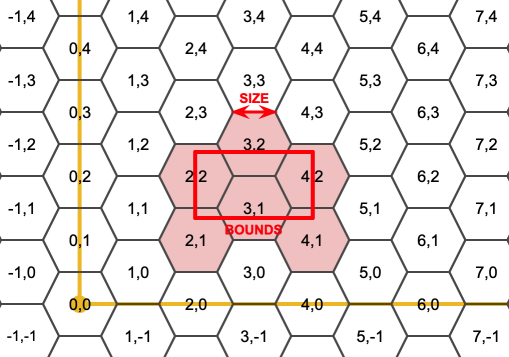
出力六角形のSRSは境界ジオメトリのSRSです。
六角形の辺の長さを2倍または3倍にすることで、元のタイルに適合する新しい親タイルが生成されます。残念ながら子タイルが完全に親タイルの中に入るような親六角形タイルを生成することはできません。

Availability: 3.1.0
例: 六角形の中の点を数え上げる
六角形タイリングに対してポイントをまとめるには、ポイントの範囲を境界として使って六角形グリッドを生成し、グリッドに空間的に結合します。
SELECT COUNT(*), hexes.geom
FROM
ST_HexagonGrid(
10000,
ST_SetSRID(ST_EstimatedExtent('pointtable', 'geom'), 3857)
) AS hexes
INNER JOIN
pointtable AS pts
ON ST_Intersects(pts.geom, hexes.geom)
GROUP BY hexes.geom;例: ポリゴンの六角形カバレッジの生成
ポリゴン境界ごとに六角形の集合を生成し、六角形とインタセクトしないものを除外すると、ポリゴンごとのタイルとなります。

州のタイルは、それぞれの州の六角形のカバレッジとなり、複数の六角形が州境界で重なります。
| |
LATERALキーワードは、FROMリスト内の、対象より前のテーブルを参照する時は、集合を返す関数に暗黙的に含まれます。 CROSS JOIN LATERAL、CROSS JOIN、指定なし、は、この例の同じ構成要素です。 |
SELECT admin1.gid, hex.geom
FROM
admin1
CROSS JOIN
ST_HexagonGrid(100000, admin1.geom) AS hex
WHERE
adm0_a3 = 'USA'
AND
ST_Intersects(admin1.geom, hex.geom)名前
ST_Hexagon — 与えられたエッジサイズと六角形グリッド空間内のセル座標を使って単一の六角形を返します。
概要
geometry ST_Hexagon(float8 size, integer cell_i, integer cell_j, geometry origin);
説明
ST_HexagonGridと同じ六角形タイルの概念を使いますが、求めるセルの座標に一つだけの六角形を生成します。任意でタイルの原点の座標を調整できます。デフォルトの原点座標は0,0です。
六角形はSRIDの設定なしで生成されるので、SRIDを期待する値に設定するために???を使います。
Availability: 3.1.0
名前
ST_SquareGrid — 引数ジオメトリの境界を完全にカバーするグリッド正方形とセルインデックスを返します。
概要
setof record ST_SquareGrid(float8 size, geometry bounds);
説明
平面の正方形タイルの概念から始まります。与えられた平面SRSとエッジサイズに対して、SRS原点から始まり、一意の平面の正方形タイル(SRS, Size)が一つ存在します。この関数は、与えられたタイル(SRS, Size)内のグリッド内のどのタイルが与えられた境界とオーバラップするかという問題に答えを出します。
出力正方形のSRSは境界ジオメトリのSRSです。
正方形の2倍またはエッジサイズによって、新しい親タイルが生成されます。親タイルは完全に元のタイルに適合します。標準のウェブマップにおけるメルカトルのタイルは、メルカトル平面の2の累乗での正方形です。
Availability: 3.1.0
例: 国の1度グリッドの生成
グリッドは国の境界全体を埋めます。国に接触する四角形が欲しい場合には、ST_Intersects後にフィルタリングする必要があります。
WITH grid AS ( SELECT (ST_SquareGrid(1, ST_Transform(geom,4326))).* FROM admin0 WHERE name = 'Canada' ) SELEcT ST_AsText(geom) FROM grid
例: 正方形内のポイントの数え上げ (細かくした単一のグリッドを使用)
正方形タイルのポイントのサマリを行うには、境界としてポイントの拡張を使った正方形グリッドを生成し、グリッドに空間的に結合します。推定範囲は実際の範囲と異なる場合があるのでご注意下さい。慎重に取り扱うようにし、最低でも確実にテーブルを解析して下さい。
SELECT COUNT(*), squares.geom
FROM
pointtable AS pts
INNER JOIN
ST_SquareGrid(
1000,
ST_SetSRID(ST_EstimatedExtent('pointtable', 'geom'), 3857)
) AS squares
ON ST_Intersects(pts.geom, squares.geom)
GROUP BY squares.geom名前
ST_Square — 与えられたエッジサイズと六角形グリッド空間内のセル座標を使って単一の正方形を返します。
概要
geometry ST_Square(float8 size, integer cell_i, integer cell_j, geometry origin);
説明
ST_SquareGridと同じ正方形タイルの概念を使っていますが、求めるセルの座標に一つだけの正方形を生成します。任意でタイルの原点の座標を調整できます。デフォルトの原点座標は0,0です。
四角形はSRIDの設定なしで生成されるので、SRIDを期待する値に設定するために???を使います。
Availability: 3.1.0
- GeometryType — ジオメトリの型を文字列で返します。
- ST_Boundary — ジオメトリの境界を返します。
- ST_BoundingDiagonal — ジオメトリのバウンディングボックスの対角線を返します。
- ST_CoordDim — ジオメトリの座標次元を返します。
- ST_Dimension — ジオメトリのトポロジ次元を返します。
- ST_Dump — ジオメトリの要素ごとの
geometry_dump行の集合を返します。 - ST_DumpPoints — ジオメトリの座標の
geometry_dump行の集合を返します。 - ST_DumpSegments — ジオメトリの辺の
geometry_dump行の集合を返します。 - ST_DumpRings — ポリゴンのリングごとの
geometry_dump行の集合を返します。 - ST_EndPoint — LINESTRINGまたはCIRCULARLINESTRINGの終端のポイントを返します。
- ST_Envelope — ジオメトリのバウンディングボックスを表現するジオメトリを返します。
- ST_ExteriorRing — ポリゴンの外環を表現するラインストリングを返します。
- ST_GeometryN — ジオメトリコレクションの要素を返します。
- ST_GeometryType — ジオメトリのSQL-MM型を文字列で返します。
- ST_HasArc — ジオメトリに円弧が含まれているかどうかテストします。
- ST_InteriorRingN — ポリゴンのN番目の内環 (穴)を返します。
- ST_IsClosed — ラインストリングの始点と終点が一致しているかをテストします。多面体サーフェスについては閉じているか (立体であるか)をテストします。
- ST_IsCollection — ジオメトリのタイプがジオメトリコレクションかをテストします。
- ST_IsEmpty — ジオメトリが空かをテストします。
- ST_IsPolygonCCW — ポリゴンが反時計回りの外環を持っていて、時計回りの内環を持っているかをテストします。
- ST_IsPolygonCW — ポリゴンが時計回りの外環を持っていて、反時計回りの内環を持っているかをテストします。
- ST_IsRing — ラインストリングが閉じていてかつ単純であるかをテストします。
- ST_IsSimple — ジオメトリが自己インタセクトまたは自己接触となるポイントが無いかをテストします。
- ST_M — ポイントのM値を返します。
- ST_MemSize — ジオメトリが取るメモリ空間の合計を返します。
- ST_NDims — じゅいおめとりの座標次元を返します。
- ST_NPoints — ジオメトリのポイント (頂点)の数を返します。
- ST_NRings — ポリゴンジオメトリのリング数を返します。
- ST_NumGeometries — ジオメトリコレクションの要素数を返します。
- ST_NumInteriorRings — ポリゴンの内環 (穴)の数を返します。
- ST_NumInteriorRing — ポリゴンの内環 (穴)の数を返します。ST_NumInteriorRingsの別名です。
- ST_NumPatches — 多面体サーフェスのフェイス数を返します。多面体でないジオメトリの場合にはNULLを返します。
- ST_NumPoints — ラインストリングまたは曲線ストリングのポイント数を返します。
- ST_PatchN — 多面体サーフェスのN番目のジオメトリ (フェイス)を返します。
- ST_PointN — ジオメトリの最初のラインストリングまたは曲線ストリングのN番目のポイントを返します。
- ST_Points — ジオメトリの座標を含むMULTIPOINTを返します。
- ST_StartPoint — ラインストリングの始点を返します。
- ST_Summary — ジオメトリの中身の概要を文字列で返します。
- ST_X — ポイントのX値を返します。
- ST_Y — ポイントのY値を返します。
- ST_Z — ポイントのZ値を返します。
- ST_Zmflag — ジオメトリのZM座標次元を示す符号を返します。
名前
GeometryType — ジオメトリの型を文字列で返します。
概要
text GeometryType(geometry geomA);
説明
ジオメトリの型を'LINESTRING', 'POLYGON', 'MULTIPOINT'等のような文字列で返します。
OGC SPEC s2.1.1.1 - このジオメトリインスタンスがメンバーになっているジオメトリのインスタンス化可能な派生タイプの名前を返します。インスタンス化可能な派生タイプの名前は、文字列として返されます。
| |
この関数は、'POINTM'等が返るので、ジオメトリがM値を持っているかどうかも示します。 |
Enhanced: 2.0.0 多面体サーフェス対応、三角対応、TIN対応が導入されました。
This method implements the OGC Simple Features
Implementation Specification for SQL 1.1.
This method supports Circular Strings and Curves
This function supports 3d and will not drop the z-index.
This function supports Polyhedral surfaces.
This function supports Triangles and Triangulated Irregular Network Surfaces (TIN).
例
SELECT GeometryType(ST_GeomFromText('LINESTRING(77.29 29.07,77.42 29.26,77.27 29.31,77.29 29.07)'));
geometrytype
--------------
LINESTRING
SELECT ST_GeometryType(ST_GeomFromEWKT('POLYHEDRALSURFACE( ((0 0 0, 0 0 1, 0 1 1, 0 1 0, 0 0 0)),
((0 0 0, 0 1 0, 1 1 0, 1 0 0, 0 0 0)), ((0 0 0, 1 0 0, 1 0 1, 0 0 1, 0 0 0)),
((1 1 0, 1 1 1, 1 0 1, 1 0 0, 1 1 0)),
((0 1 0, 0 1 1, 1 1 1, 1 1 0, 0 1 0)), ((0 0 1, 1 0 1, 1 1 1, 0 1 1, 0 0 1)) )'));
-- 結果 --
POLYHEDRALSURFACE
SELECT GeometryType(geom) as result
FROM
(SELECT
ST_GeomFromEWKT('TIN (((
0 0 0,
0 0 1,
0 1 0,
0 0 0
)), ((
0 0 0,
0 1 0,
1 1 0,
0 0 0
))
)') AS geom
) AS g;
result
--------
TIN 名前
ST_Boundary — ジオメトリの境界を返します。
概要
geometry ST_Boundary(geometry geomA);
説明
ジオメトリの組み合わせ境界の閉包を返します (訳注: ラインストリングは端点、ポリゴンはエッジ、複合オブジェクトは境界のうち奇数番)。組み合わせ境界はOGC仕様の3.12.3.2節に記述されています。結果として出てくる境界は、OGC SPEC 3.12.2で議論されているように、ジオメトリプリミティブを使って表現できます。
GEOSモジュールによって実現しています。
| |
2.0.0より前の版では、この関数は |
This method implements the OGC Simple Features
Implementation Specification for SQL 1.1. OGC SPEC s2.1.1.1
This method implements the SQL/MM specification. SQL-MM 3: 5.1.14
This function supports 3d and will not drop the z-index.
Enhanced: 2.1.0で三角対応が導入されました。
Changed: 3.2.0 TINへの対応、GEOSを使わないよう変更、曲線を直線化しないよう変更
例
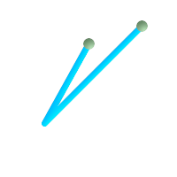 境界ポイントを重ねたラインストリング
SELECT ST_Boundary(geom)
FROM (SELECT 'LINESTRING(100 150,50 60, 70 80, 160 170)'::geometry As geom) As f;
-- ST_AsText 出力 MULTIPOINT(100 150,160 170)
| 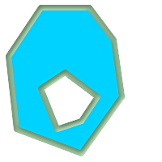 境界マルチラインストリングを重ねたポリゴンの穴
SELECT ST_Boundary(geom)
FROM (SELECT
'POLYGON (( 10 130, 50 190, 110 190, 140 150, 150 80, 100 10, 20 40, 10 130 ),
( 70 40, 100 50, 120 80, 80 110, 50 90, 70 40 ))'::geometry As geom) As f;
-- ST_AsText 出力 --
MULTILINESTRING((10 130,50 190,110 190,140 150,150 80,100 10,20 40,10 130),
(70 40,100 50,120 80,80 110,50 90,70 40))
|
SELECT ST_AsText(ST_Boundary(ST_GeomFromText('LINESTRING(1 1,0 0, -1 1)')));
st_astext
-----------
MULTIPOINT(1 1,-1 1)
SELECT ST_AsText(ST_Boundary(ST_GeomFromText('POLYGON((1 1,0 0, -1 1, 1 1))')));
st_astext
----------
LINESTRING(1 1,0 0,-1 1,1 1)
-- 3次元ポリゴンを使用
SELECT ST_AsEWKT(ST_Boundary(ST_GeomFromEWKT('POLYGON((1 1 1,0 0 1, -1 1 1, 1 1 1))')));
st_asewkt
-----------------------------------
LINESTRING(1 1 1,0 0 1,-1 1 1,1 1 1)
-- 3次元マルチラインストリングを使用
SELECT ST_AsEWKT(ST_Boundary(ST_GeomFromEWKT('MULTILINESTRING((1 1 1,0 0 0.5, -1 1 1),(1 1 0.5,0 0 0.5, -1 1 0.5, 1 1 0.5) )')));
st_asewkt
----------
MULTIPOINT(-1 1 1,1 1 0.75)
名前
ST_BoundingDiagonal — ジオメトリのバウンディングボックスの対角線を返します。
概要
geometry ST_BoundingDiagonal(geometry geom, boolean fits=false);
説明
ジオメトリのバウンディングボックスの対角線をLINESTRINGで返します。対角線は、各軸の最小値となる点を始端とし、最大値となる点を終端とする2点のLINESTRINGです。入力ジオメトリが空である場合にはLINESTRING EMPTYを返します。
任意パラメータfitsは、最適な適合が必要かどうかを指定するものです。FALSEの場合には、より大きいバウンディングボックスの対角線を受け付けます (多数の頂点を持つジオメトリではより速くなります)。いずれの場合でも、返り値の対角線のバウンディングボックスは、常に入力ジオメトリを含みます。
返されたジオメトリは、入力ジオメトリのSRIDと次元 (Z, M)が維持されています。
| |
縮退する場合 (入力に頂点が一つだけ等の場合)には、返されるラインストリングは正式には不正になります (内部領域なし)。結果はトポロジ的に有効です。 |
Availability: 2.2.0
This function supports 3d and will not drop the z-index.
This function supports M coordinates.
名前
ST_CoordDim — ジオメトリの座標次元を返します。
概要
integer ST_CoordDim(geometry geomA);
説明
ST_Geometry値の座標次元を返します。
この関数はST_NDimsのMM対応の別名です。
This method implements the OGC Simple Features
Implementation Specification for SQL 1.1.
This method implements the SQL/MM specification. SQL-MM 3: 5.1.3
This method supports Circular Strings and Curves
This function supports 3d and will not drop the z-index.
This function supports Polyhedral surfaces.
This function supports Triangles and Triangulated Irregular Network Surfaces (TIN).
名前
ST_Dimension — ジオメトリのトポロジ次元を返します。
概要
integer ST_Dimension(geometry g);
説明
ジオメトリのトポロジ次元を返します。
This method implements the SQL/MM specification. SQL-MM 3: 5.1.2
Enhanced: 2.0.0 多面体サーフェス対応とTIN対応が導入されました。空ジオメトリを与えた場合に例外を投げなくなりました。
| |
2.0.0より前では、空ジオメトリを与えると例外を投げていました。 |
This function supports Polyhedral surfaces.
This function supports Triangles and Triangulated Irregular Network Surfaces (TIN).
名前
ST_Dump — ジオメトリの要素ごとのgeometry_dump行の集合を返します。
概要
geometry_dump[] ST_Dump(geometry g1);
説明
ジオメトリ要素を抽出する、集合を返す関数 (SRF=Set-Returning Function)です。ジオメトリ (geomフィールド)と整数配列 (pathフィールド)からなるgeometry_dump行の集合を返します。
非マルチ系ジオメトリタイプ (POINT,LINESTRING,POLYGON)では、path配列が空でgeom.が入力ジオメトリと同じになる一の行が帰ります。コレクションまたはマルチ系ジオメトリでは、個々の要素と、コレクションの要素位置を示すpathとからなる行を返します。
ST_Dumpはジオメトリを展開するのに使います。ST_Collect/GROUP BYの逆で、この関数の中で新行を作成します。たとえば、MULTIPOLYGONをPOLYGONに展開するために使います。
Enhanced: 2.0.0 多面体サーフェス対応、三角対応、TIN対応が導入されました。
Availability: PostGIS 1.0.0RC1 PostgreSQL 7.3以上が必要です。
| |
1.3.4より前では、曲線を含むジオメトリで使用すると、この関数はクラッシュします。これは1.3.4以上で訂正されています。 |
This method supports Circular Strings and Curves
This function supports Polyhedral surfaces.
This function supports Triangles and Triangulated Irregular Network Surfaces (TIN).
This function supports 3d and will not drop the z-index.
標準的な例
SELECT sometable.field1, sometable.field1,
(ST_Dump(sometable.geom)).geom AS geom
FROM sometable;
-- 複合曲線を構成要素のLINESTRINGとCIRCULARSTRINGに分解
SELECT ST_AsEWKT(a.geom), ST_HasArc(a.geom)
FROM ( SELECT (ST_Dump(p_geom)).geom AS geom
FROM (SELECT ST_GeomFromEWKT('COMPOUNDCURVE(CIRCULARSTRING(0 0, 1 1, 1 0),(1 0, 0 1))') AS p_geom) AS b
) AS a;
st_asewkt | st_hasarc
-----------------------------+----------
CIRCULARSTRING(0 0,1 1,1 0) | t
LINESTRING(1 0,0 1) | f
(2 rows)多面体サーフェス、TIN、三角形の例
-- 多面体サーフェスの例
-- 多面体サーフェスを面に分解
SELECT (a.p_geom).path[1] As path, ST_AsEWKT((a.p_geom).geom) As geom_ewkt
FROM (SELECT ST_Dump(ST_GeomFromEWKT('POLYHEDRALSURFACE(
((0 0 0, 0 0 1, 0 1 1, 0 1 0, 0 0 0)),
((0 0 0, 0 1 0, 1 1 0, 1 0 0, 0 0 0)), ((0 0 0, 1 0 0, 1 0 1, 0 0 1, 0 0 0)), ((1 1 0, 1 1 1, 1 0 1, 1 0 0, 1 1 0)),
((0 1 0, 0 1 1, 1 1 1, 1 1 0, 0 1 0)), ((0 0 1, 1 0 1, 1 1 1, 0 1 1, 0 0 1))
)') ) AS p_geom ) AS a;
path | geom_ewkt
------+------------------------------------------
1 | POLYGON((0 0 0,0 0 1,0 1 1,0 1 0,0 0 0))
2 | POLYGON((0 0 0,0 1 0,1 1 0,1 0 0,0 0 0))
3 | POLYGON((0 0 0,1 0 0,1 0 1,0 0 1,0 0 0))
4 | POLYGON((1 1 0,1 1 1,1 0 1,1 0 0,1 1 0))
5 | POLYGON((0 1 0,0 1 1,1 1 1,1 1 0,0 1 0))
6 | POLYGON((0 0 1,1 0 1,1 1 1,0 1 1,0 0 1))-- TIN --
SELECT (g.gdump).path, ST_AsEWKT((g.gdump).geom) as wkt
FROM
(SELECT
ST_Dump( ST_GeomFromEWKT('TIN (((
0 0 0,
0 0 1,
0 1 0,
0 0 0
)), ((
0 0 0,
0 1 0,
1 1 0,
0 0 0
))
)') ) AS gdump
) AS g;
-- 結果 --
path | wkt
------+-------------------------------------
{1} | TRIANGLE((0 0 0,0 0 1,0 1 0,0 0 0))
{2} | TRIANGLE((0 0 0,0 1 0,1 1 0,0 0 0))
名前
ST_DumpPoints — ジオメトリの座標のgeometry_dump行の集合を返します。
概要
geometry_dump[] ST_DumpPoints(geometry geom);
説明
ジオメトリの座標値 (頂点)を抽出する、集合を返す関数 (SRF=Set-Returning Function)です。ジオメトリ (geomフィールド)と整数配列 (pathフィールド)からなるgeometry_dump行の集合を返します。
geomフィールド 与えたジオメトリの座標値を表現するPOINT。pathフィールド (integer[])は、与えられたジオメトリの要素内の座標の位置を列挙するインデックスです。インデックスは1はじまりです。たとえば、LINESTRINGについて、pathは{i}です。ただしiは、LINESTRINGのnth番目の座標です。また、POLYGONについては、pathは{i,j}です。ただし、iはリング番号(1は外側リングで内側リングが続きます)で、jはリング内の座標の位置です。
座標を含む単一ジオメトリを得るにはST_Pointsを使います。
Enhanced: 2.1.0 速度向上しました。C言語で実装しなおしました。
Enhanced: 2.0.0 多面体サーフェス対応、三角対応、TIN対応が導入されました。
Availability: 1.5.0
This method supports Circular Strings and Curves
This function supports Polyhedral surfaces.
This function supports Triangles and Triangulated Irregular Network Surfaces (TIN).
This function supports 3d and will not drop the z-index.
ラインストリングのテーブルのノードへの古典的な分割
SELECT edge_id, (dp).path[1] As index, ST_AsText((dp).geom) As wktnode
FROM (SELECT 1 As edge_id
, ST_DumpPoints(ST_GeomFromText('LINESTRING(1 2, 3 4, 10 10)')) AS dp
UNION ALL
SELECT 2 As edge_id
, ST_DumpPoints(ST_GeomFromText('LINESTRING(3 5, 5 6, 9 10)')) AS dp
) As foo;
edge_id | index | wktnode
---------+-------+--------------
1 | 1 | POINT(1 2)
1 | 2 | POINT(3 4)
1 | 3 | POINT(10 10)
2 | 1 | POINT(3 5)
2 | 2 | POINT(5 6)
2 | 3 | POINT(9 10)標準的なジオメトリの例
SELECT path, ST_AsText(geom)
FROM (
SELECT (ST_DumpPoints(g.geom)).*
FROM
(SELECT
'GEOMETRYCOLLECTION(
POINT ( 0 1 ),
LINESTRING ( 0 3, 3 4 ),
POLYGON (( 2 0, 2 3, 0 2, 2 0 )),
POLYGON (( 3 0, 3 3, 6 3, 6 0, 3 0 ),
( 5 1, 4 2, 5 2, 5 1 )),
MULTIPOLYGON (
(( 0 5, 0 8, 4 8, 4 5, 0 5 ),
( 1 6, 3 6, 2 7, 1 6 )),
(( 5 4, 5 8, 6 7, 5 4 ))
)
)'::geometry AS geom
) AS g
) j;
path | st_astext
-----------+------------
{1,1} | POINT(0 1)
{2,1} | POINT(0 3)
{2,2} | POINT(3 4)
{3,1,1} | POINT(2 0)
{3,1,2} | POINT(2 3)
{3,1,3} | POINT(0 2)
{3,1,4} | POINT(2 0)
{4,1,1} | POINT(3 0)
{4,1,2} | POINT(3 3)
{4,1,3} | POINT(6 3)
{4,1,4} | POINT(6 0)
{4,1,5} | POINT(3 0)
{4,2,1} | POINT(5 1)
{4,2,2} | POINT(4 2)
{4,2,3} | POINT(5 2)
{4,2,4} | POINT(5 1)
{5,1,1,1} | POINT(0 5)
{5,1,1,2} | POINT(0 8)
{5,1,1,3} | POINT(4 8)
{5,1,1,4} | POINT(4 5)
{5,1,1,5} | POINT(0 5)
{5,1,2,1} | POINT(1 6)
{5,1,2,2} | POINT(3 6)
{5,1,2,3} | POINT(2 7)
{5,1,2,4} | POINT(1 6)
{5,2,1,1} | POINT(5 4)
{5,2,1,2} | POINT(5 8)
{5,2,1,3} | POINT(6 7)
{5,2,1,4} | POINT(5 4)
(29 rows)多面体サーフェス、TIN、三角形の例
-- 多面体サーフェスの立方体--
SELECT (g.gdump).path, ST_AsEWKT((g.gdump).geom) as wkt
FROM
(SELECT
ST_DumpPoints(ST_GeomFromEWKT('POLYHEDRALSURFACE( ((0 0 0, 0 0 1, 0 1 1, 0 1 0, 0 0 0)),
((0 0 0, 0 1 0, 1 1 0, 1 0 0, 0 0 0)), ((0 0 0, 1 0 0, 1 0 1, 0 0 1, 0 0 0)),
((1 1 0, 1 1 1, 1 0 1, 1 0 0, 1 1 0)),
((0 1 0, 0 1 1, 1 1 1, 1 1 0, 0 1 0)), ((0 0 1, 1 0 1, 1 1 1, 0 1 1, 0 0 1)) )') ) AS gdump
) AS g;
-- 結果 --
path | wkt
---------+--------------
{1,1,1} | POINT(0 0 0)
{1,1,2} | POINT(0 0 1)
{1,1,3} | POINT(0 1 1)
{1,1,4} | POINT(0 1 0)
{1,1,5} | POINT(0 0 0)
{2,1,1} | POINT(0 0 0)
{2,1,2} | POINT(0 1 0)
{2,1,3} | POINT(1 1 0)
{2,1,4} | POINT(1 0 0)
{2,1,5} | POINT(0 0 0)
{3,1,1} | POINT(0 0 0)
{3,1,2} | POINT(1 0 0)
{3,1,3} | POINT(1 0 1)
{3,1,4} | POINT(0 0 1)
{3,1,5} | POINT(0 0 0)
{4,1,1} | POINT(1 1 0)
{4,1,2} | POINT(1 1 1)
{4,1,3} | POINT(1 0 1)
{4,1,4} | POINT(1 0 0)
{4,1,5} | POINT(1 1 0)
{5,1,1} | POINT(0 1 0)
{5,1,2} | POINT(0 1 1)
{5,1,3} | POINT(1 1 1)
{5,1,4} | POINT(1 1 0)
{5,1,5} | POINT(0 1 0)
{6,1,1} | POINT(0 0 1)
{6,1,2} | POINT(1 0 1)
{6,1,3} | POINT(1 1 1)
{6,1,4} | POINT(0 1 1)
{6,1,5} | POINT(0 0 1)
(30 rows)-- 三角形 --
SELECT (g.gdump).path, ST_AsText((g.gdump).geom) as wkt
FROM
(SELECT
ST_DumpPoints( ST_GeomFromEWKT('TRIANGLE ((
0 0,
0 9,
9 0,
0 0
))') ) AS gdump
) AS g;
-- 結果 --
path | wkt
------+------------
{1} | POINT(0 0)
{2} | POINT(0 9)
{3} | POINT(9 0)
{4} | POINT(0 0)
-- TIN --
SELECT (g.gdump).path, ST_AsEWKT((g.gdump).geom) as wkt
FROM
(SELECT
ST_DumpPoints( ST_GeomFromEWKT('TIN (((
0 0 0,
0 0 1,
0 1 0,
0 0 0
)), ((
0 0 0,
0 1 0,
1 1 0,
0 0 0
))
)') ) AS gdump
) AS g;
-- 結果 --
path | wkt
---------+--------------
{1,1,1} | POINT(0 0 0)
{1,1,2} | POINT(0 0 1)
{1,1,3} | POINT(0 1 0)
{1,1,4} | POINT(0 0 0)
{2,1,1} | POINT(0 0 0)
{2,1,2} | POINT(0 1 0)
{2,1,3} | POINT(1 1 0)
{2,1,4} | POINT(0 0 0)
(8 rows)
名前
ST_DumpSegments — ジオメトリの辺のgeometry_dump行の集合を返します。
概要
geometry_dump[] ST_DumpSegments(geometry geom);
説明
ジオメトリの辺を抽出する、集合を返す関数 (SRF=Set-Returning Function)です。ジオメトリ (geomフィールド)と整数配列 (pathフィールド)からなるgeometry_dump行の集合を返します。
geomフィールド 与えられたジオメトリの辺のLINESTRING表現pathフィールド (integer[])は、与えられたジオメトリの要素内の辺の位置を列挙するインデックスです。インデックスは1はじまりです。たとえば、LINESTRINGについて、pathは{i}です。ただしiは、LINESTRINGのnth番目の辺の始端位置です。また、POLYGONについては、pathは{i,j}です。ただし、iはリング番号 (1は外側リングで内側リングが続きます)で、jはリング内の辺の始端位置です。
Availability: 3.2.0
This function supports Triangles and Triangulated Irregular Network Surfaces (TIN).
This function supports 3d and will not drop the z-index.
標準的なジオメトリの例
SELECT path, ST_AsText(geom)
FROM (
SELECT (ST_DumpSegments(g.geom)).*
FROM (SELECT 'GEOMETRYCOLLECTION(
LINESTRING(1 1, 3 3, 4 4),
POLYGON((5 5, 6 6, 7 7, 5 5))
)'::geometry AS geom
) AS g
) j;
path │ st_astext
---------------------------------
{1,1} │ LINESTRING(1 1,3 3)
{1,2} │ LINESTRING(3 3,4 4)
{2,1,1} │ LINESTRING(5 5,6 6)
{2,1,2} │ LINESTRING(6 6,7 7)
{2,1,3} │ LINESTRING(7 7,5 5)
(5 rows)TINと三角形の例
-- 三角形 --
SELECT path, ST_AsText(geom)
FROM (
SELECT (ST_DumpSegments(g.geom)).*
FROM (SELECT 'TRIANGLE((
0 0,
0 9,
9 0,
0 0
))'::geometry AS geom
) AS g
) j;
path │ st_astext
---------------------------------
{1,1} │ LINESTRING(0 0,0 9)
{1,2} │ LINESTRING(0 9,9 0)
{1,3} │ LINESTRING(9 0,0 0)
(3 rows)
-- TIN --
SELECT path, ST_AsEWKT(geom)
FROM (
SELECT (ST_DumpSegments(g.geom)).*
FROM (SELECT 'TIN(((
0 0 0,
0 0 1,
0 1 0,
0 0 0
)), ((
0 0 0,
0 1 0,
1 1 0,
0 0 0
))
)'::geometry AS geom
) AS g
) j;
path │ st_asewkt
---------------------------------
{1,1,1} │ LINESTRING(0 0 0,0 0 1)
{1,1,2} │ LINESTRING(0 0 1,0 1 0)
{1,1,3} │ LINESTRING(0 1 0,0 0 0)
{2,1,1} │ LINESTRING(0 0 0,0 1 0)
{2,1,2} │ LINESTRING(0 1 0,1 1 0)
{2,1,3} │ LINESTRING(1 1 0,0 0 0)
(6 rows)
名前
ST_DumpRings — ポリゴンのリングごとのgeometry_dump行の集合を返します。
概要
geometry_dump[] ST_DumpRings(geometry a_polygon);
説明
ポリゴンのリングを抽出する、集合を返す関数 (SRF=Set-Returning Function)です。ジオメトリ (geomフィールド)と整数配列 (pathフィールド)からなるgeometry_dump行の集合を返します。
geomフィールドは、個々のリングをPOLYGONとして持っています。pathフィールドは、長さ1の整数配列で、リングのインデックスを示す値を持ちます。外側リング (殻)のインデックスは0です。内側リング (穴)は1以上です。
| |
これは、POLYGONジオメトリでのみ動作します。MULTOPLYGONでは動作しません。 |
Availability: PostGIS 1.1.3 PostgreSQL 7.3以上が必要です。
This function supports 3d and will not drop the z-index.
例
クエリの一般的な形式。
SELECT polyTable.field1, polyTable.field1,
(ST_DumpRings(polyTable.geom)).geom As geom
FROM polyTable;
穴を一つ持つポリゴン
SELECT path, ST_AsEWKT(geom) As geom
FROM ST_DumpRings(
ST_GeomFromEWKT('POLYGON((-8149064 5133092 1,-8149064 5132986 1,-8148996 5132839 1,-8148972 5132767 1,-8148958 5132508 1,-8148941 5132466 1,-8148924 5132394 1,
-8148903 5132210 1,-8148930 5131967 1,-8148992 5131978 1,-8149237 5132093 1,-8149404 5132211 1,-8149647 5132310 1,-8149757 5132394 1,
-8150305 5132788 1,-8149064 5133092 1),
(-8149362 5132394 1,-8149446 5132501 1,-8149548 5132597 1,-8149695 5132675 1,-8149362 5132394 1))')
) as foo;
path | geom
----------------------------------------------------------------------------------------------------------------
{0} | POLYGON((-8149064 5133092 1,-8149064 5132986 1,-8148996 5132839 1,-8148972 5132767 1,-8148958 5132508 1,
| -8148941 5132466 1,-8148924 5132394 1,
| -8148903 5132210 1,-8148930 5131967 1,
| -8148992 5131978 1,-8149237 5132093 1,
| -8149404 5132211 1,-8149647 5132310 1,-8149757 5132394 1,-8150305 5132788 1,-8149064 5133092 1))
{1} | POLYGON((-8149362 5132394 1,-8149446 5132501 1,
| -8149548 5132597 1,-8149695 5132675 1,-8149362 5132394 1))名前
ST_EndPoint — LINESTRINGまたはCIRCULARLINESTRINGの終端のポイントを返します。
概要
geometry ST_EndPoint(geometry g);
説明
LINESTRINGまたはCIRCULARLINESTRINGジオメトリの、最後のポイントをPOINTで返します。入力パラメータがLINESTRINGでもCIRCULARLINESTRINGでもない場合には、NULLを返します。
This method implements the SQL/MM specification. SQL-MM 3: 7.1.4
This function supports 3d and will not drop the z-index.
This method supports Circular Strings and Curves
| |
Changed: 2.0.0 一つのジオメトリマルチラインストリングで動作しなくなりました。PostGIS の古いバージョンでは、この関数は一つのマルチラインストリングで動作し、終端ポイントを返します。2.0.0では、他のマルチラインストリングと同様にNULLを返します。古い動作は文書化されていない機能でしたが、データをLINESTRINGとして格納していると思われるユーザーは、2.0.0 でNULLが返されることを経験するかも知れません。 |
例
ラインストリングの終端ポイント
postgis=# SELECT ST_AsText(ST_EndPoint('LINESTRING(1 1, 2 2, 3 3)'::geometry));
st_astext
------------
POINT(3 3)
ラインストリング以外の終端ポイントはNULL
SELECT ST_EndPoint('POINT(1 1)'::geometry) IS NULL AS is_null;
is_null
----------
t
3次元ラインストリングの終端ポイント
-- 3次元終端ポイント
SELECT ST_AsEWKT(ST_EndPoint('LINESTRING(1 1 2, 1 2 3, 0 0 5)'));
st_asewkt
--------------
POINT(0 0 5)
CIRCULARSTRINGの終端ポイント
SELECT ST_AsText(ST_EndPoint('CIRCULARSTRING(5 2,-3 1.999999, -2 1, -4 2, 6 3)'::geometry));
st_astext
------------
POINT(6 3)
名前
ST_Envelope — ジオメトリのバウンディングボックスを表現するジオメトリを返します。
概要
geometry ST_Envelope(geometry g1);
説明
与えられたジオメトリの倍精度浮動小数点数 (float8)の最小バウンディングボックスをジオメトリで返します。ポリゴンはバウンディングボックスの角のポイントで定義されます ((MINX, MINY), (MINX, MAXY), (MAXX, MAXY), (MAXX, MINY), (MINX, MINY))。(PostGISはZMIN/ZMAXも追加します).
縮退する場合 (縦のライン、ポイント)はPOLYGONより低い次元のジオメトリ、すなわちPOINTまたはLINESTRINGを返します。
Availability: 1.5.0 挙動が変更され出力がfloat4からfloat8になりました。
This method implements the OGC Simple Features
Implementation Specification for SQL 1.1. s2.1.1.1
This method implements the SQL/MM specification. SQL-MM 3: 5.1.15
例
SELECT ST_AsText(ST_Envelope('POINT(1 3)'::geometry));
st_astext
------------
POINT(1 3)
(1 row)
SELECT ST_AsText(ST_Envelope('LINESTRING(0 0, 1 3)'::geometry));
st_astext
--------------------------------
POLYGON((0 0,0 3,1 3,1 0,0 0))
(1 row)
SELECT ST_AsText(ST_Envelope('POLYGON((0 0, 0 1, 1.0000001 1, 1.0000001 0, 0 0))'::geometry));
st_astext
--------------------------------------------------------------
POLYGON((0 0,0 1,1.00000011920929 1,1.00000011920929 0,0 0))
(1 row)
SELECT ST_AsText(ST_Envelope('POLYGON((0 0, 0 1, 1.0000000001 1, 1.0000000001 0, 0 0))'::geometry));
st_astext
--------------------------------------------------------------
POLYGON((0 0,0 1,1.00000011920929 1,1.00000011920929 0,0 0))
(1 row)
SELECT Box3D(geom), Box2D(geom), ST_AsText(ST_Envelope(geom)) As envelopewkt
FROM (SELECT 'POLYGON((0 0, 0 1000012333334.34545678, 1.0000001 1, 1.0000001 0, 0 0))'::geometry As geom) As foo;
ポイントとラインストリングの最小バウンディングボックス
SELECT ST_AsText(ST_Envelope(
ST_Collect(
ST_GeomFromText('LINESTRING(55 75,125 150)'),
ST_Point(20, 80))
)) As wktenv;
wktenv
-----------
POLYGON((20 75,20 150,125 150,125 75,20 75))名前
ST_ExteriorRing — ポリゴンの外環を表現するラインストリングを返します。
概要
geometry ST_ExteriorRing(geometry a_polygon);
説明
POLYGONの外側リング (殻)を表現するLINESTRINGを返します。ジオメトリがPOLYGONでない場合にはNULLを返します。
| |
この関数はMULTIPOLYGONに対応していません。MULTIPOLYGONに対してはST_GeometryNまたはST_Dumpとを併用します。 |
This method implements the OGC Simple Features
Implementation Specification for SQL 1.1. 2.1.5.1
This method implements the SQL/MM specification. SQL-MM 3: 8.2.3, 8.3.3
This function supports 3d and will not drop the z-index.
例
-- ポリゴンのテーブルをお持ちの場合
SELECT gid, ST_ExteriorRing(geom) AS ering
FROM sometable;
-- MULTIPOLYGONのテーブルをお持ちで
-- ポリゴンの外側リングで構成されるMULTIPOLYGONを求める場合
SELECT gid, ST_Collect(ST_ExteriorRing(geom)) AS erings
FROM (SELECT gid, (ST_Dump(geom)).geom As geom
FROM sometable) As foo
GROUP BY gid;
-- 3次元の例
SELECT ST_AsEWKT(
ST_ExteriorRing(
ST_GeomFromEWKT('POLYGON((0 0 1, 1 1 1, 1 2 1, 1 1 1, 0 0 1))')
)
);
st_asewkt
---------
LINESTRING(0 0 1,1 1 1,1 2 1,1 1 1,0 0 1)
名前
ST_GeometryN — ジオメトリコレクションの要素を返します。
概要
geometry ST_GeometryN(geometry geomA, integer n);
説明
入力ジオメトリが GEOMETRYCOLLECTION, MULTIPOINT, MULTILINESTRING, MULTICURVE, MULTI)POLYGON, POLYHEDRALSURFACEの場合には、1始まりでN番目の要素を返します。他の場合にはNULLを返します。
| |
OGC仕様のため0.8.0版からインデクスを1始まりにしています。これより前の版では0始まりになっています。 |
| |
ジオメトリのすべての要素を抽出するならST_Dumpの方が効率的ですし、非マルチジオメトリでも動作します。 |
Enhanced: 2.0.0 多面体サーフェス対応、三角対応、TIN対応が導入されました。
Changed: 2.0.0 以前の版では非マルチのジオメトリではNULLが返りました。ST_GeometryN(..,1)の場合にはジオメトリを返すよう変更されました。
This method implements the OGC Simple Features
Implementation Specification for SQL 1.1.
This method implements the SQL/MM specification. SQL-MM 3: 9.1.5
This function supports 3d and will not drop the z-index.
This method supports Circular Strings and Curves
This function supports Polyhedral surfaces.
This function supports Triangles and Triangulated Irregular Network Surfaces (TIN).
標準的な例
-- 3次元MULTIPOINTからPOINTの部分集合を抽出
SELECT n, ST_AsEWKT(ST_GeometryN(geom, n)) As geomewkt
FROM (
VALUES (ST_GeomFromEWKT('MULTIPOINT(1 2 7, 3 4 7, 5 6 7, 8 9 10)') ),
( ST_GeomFromEWKT('MULTICURVE(CIRCULARSTRING(2.5 2.5,4.5 2.5, 3.5 3.5), (10 11, 12 11))') )
)As foo(geom)
CROSS JOIN generate_series(1,100) n
WHERE n <= ST_NumGeometries(geom);
n | geomewkt
---+-----------------------------------------
1 | POINT(1 2 7)
2 | POINT(3 4 7)
3 | POINT(5 6 7)
4 | POINT(8 9 10)
1 | CIRCULARSTRING(2.5 2.5,4.5 2.5,3.5 3.5)
2 | LINESTRING(10 11,12 11)
-- 全てのジオメトリを抽出 (idの割当に便利)
SELECT gid, n, ST_GeometryN(geom, n)
FROM sometable CROSS JOIN generate_series(1,100) n
WHERE n <= ST_NumGeometries(geom);多面体サーフェス、TIN、三角形の例
-- 多面体サーフェスの例
-- 多面体サーフェスをフェイスに分解します。
SELECT ST_AsEWKT(ST_GeometryN(p_geom,3)) As geom_ewkt
FROM (SELECT ST_GeomFromEWKT('POLYHEDRALSURFACE(
((0 0 0, 0 0 1, 0 1 1, 0 1 0, 0 0 0)),
((0 0 0, 0 1 0, 1 1 0, 1 0 0, 0 0 0)),
((0 0 0, 1 0 0, 1 0 1, 0 0 1, 0 0 0)),
((1 1 0, 1 1 1, 1 0 1, 1 0 0, 1 1 0)),
((0 1 0, 0 1 1, 1 1 1, 1 1 0, 0 1 0)),
((0 0 1, 1 0 1, 1 1 1, 0 1 1, 0 0 1))
)') AS p_geom ) AS a;
geom_ewkt
------------------------------------------
POLYGON((0 0 0,1 0 0,1 0 1,0 0 1,0 0 0))-- TIN --
SELECT ST_AsEWKT(ST_GeometryN(geom,2)) as wkt
FROM
(SELECT
ST_GeomFromEWKT('TIN (((
0 0 0,
0 0 1,
0 1 0,
0 0 0
)), ((
0 0 0,
0 1 0,
1 1 0,
0 0 0
))
)') AS geom
) AS g;
-- 結果--
wkt
-------------------------------------
TRIANGLE((0 0 0,0 1 0,1 1 0,0 0 0))名前
ST_GeometryType — ジオメトリのSQL-MM型を文字列で返します。
概要
text ST_GeometryType(geometry g1);
説明
ジオメトリ型を'ST_LineString', 'ST_Polygon', 'ST_MultiPolygon'等の文字列で返します。この関数はGeometryType(geometry)とは異なり、先頭に'ST'が付き、M値を持っているかを示しません。
Enhanced: 2.0.0 多面体サーフェス対応が導入されました。
This method implements the SQL/MM specification. SQL-MM 3: 5.1.4
This function supports 3d and will not drop the z-index.
This function supports Polyhedral surfaces.
例
SELECT ST_GeometryType(ST_GeomFromText('LINESTRING(77.29 29.07,77.42 29.26,77.27 29.31,77.29 29.07)'));
-- 結果
ST_LineStringSELECT ST_GeometryType(ST_GeomFromEWKT('POLYHEDRALSURFACE( ((0 0 0, 0 0 1, 0 1 1, 0 1 0, 0 0 0)),
((0 0 0, 0 1 0, 1 1 0, 1 0 0, 0 0 0)), ((0 0 0, 1 0 0, 1 0 1, 0 0 1, 0 0 0)),
((1 1 0, 1 1 1, 1 0 1, 1 0 0, 1 1 0)),
((0 1 0, 0 1 1, 1 1 1, 1 1 0, 0 1 0)), ((0 0 1, 1 0 1, 1 1 1, 0 1 1, 0 0 1)) )'));
--結果 --
ST_PolyhedralSurfaceSELECT ST_GeometryType(ST_GeomFromEWKT('POLYHEDRALSURFACE( ((0 0 0, 0 0 1, 0 1 1, 0 1 0, 0 0 0)),
((0 0 0, 0 1 0, 1 1 0, 1 0 0, 0 0 0)), ((0 0 0, 1 0 0, 1 0 1, 0 0 1, 0 0 0)),
((1 1 0, 1 1 1, 1 0 1, 1 0 0, 1 1 0)),
((0 1 0, 0 1 1, 1 1 1, 1 1 0, 0 1 0)), ((0 0 1, 1 0 1, 1 1 1, 0 1 1, 0 0 1)) )'));
--結果 --
ST_PolyhedralSurfaceSELECT ST_GeometryType(geom) as result
FROM
(SELECT
ST_GeomFromEWKT('TIN (((
0 0 0,
0 0 1,
0 1 0,
0 0 0
)), ((
0 0 0,
0 1 0,
1 1 0,
0 0 0
))
)') AS geom
) AS g;
result
--------
ST_Tin 名前
ST_HasArc — ジオメトリに円弧が含まれているかどうかテストします。
概要
boolean ST_HasArc(geometry geomA);
説明
ジオメトリまたはジオメトリコレクションに曲線ラインストリングが含まれている場合にTRUEを返します。
Availability: 1.2.3?
This function supports 3d and will not drop the z-index.
This method supports Circular Strings and Curves
名前
ST_InteriorRingN — ポリゴンのN番目の内環 (穴)を返します。
概要
geometry ST_InteriorRingN(geometry a_polygon, integer n);
説明
POLYGONジオメトリのN番目の内側リング (穴)をLINESTRINGで返します。インデックスは1はじまりです。ジオメトリがPOLYGONでない場合はインデックスが範囲外の場合にはNULLを返します。
| |
この関数はMULTIPOLYGONに対応していません。MULTIPOLYGONに対してはST_GeometryNまたはST_Dumpとを併用します。 |
This method implements the OGC Simple Features
Implementation Specification for SQL 1.1.
This method implements the SQL/MM specification. SQL-MM 3: 8.2.6, 8.3.5
This function supports 3d and will not drop the z-index.
名前
ST_IsClosed — ラインストリングの始点と終点が一致しているかをテストします。多面体サーフェスについては閉じているか (立体であるか)をテストします。
概要
boolean ST_IsClosed(geometry g);
説明
LINESTRINGの始点と終点が一致する場合にTRUEを返します。多面体サーフェスについては、サーフェスが面 (開いている)か立体 (閉じている)かをテストします。
This method implements the OGC Simple Features
Implementation Specification for SQL 1.1.
This method implements the SQL/MM specification. SQL-MM 3: 7.1.5, 9.3.3
| |
SQL-MMでは |
This function supports 3d and will not drop the z-index.
This method supports Circular Strings and Curves
Enhanced: 2.0.0 多面体サーフェス対応が導入されました。
This function supports Polyhedral surfaces.
ラインストリングとポイントの例
postgis=# SELECT ST_IsClosed('LINESTRING(0 0, 1 1)'::geometry);
st_isclosed
-------------
f
(1 row)
postgis=# SELECT ST_IsClosed('LINESTRING(0 0, 0 1, 1 1, 0 0)'::geometry);
st_isclosed
-------------
t
(1 row)
postgis=# SELECT ST_IsClosed('MULTILINESTRING((0 0, 0 1, 1 1, 0 0),(0 0, 1 1))'::geometry);
st_isclosed
-------------
f
(1 row)
postgis=# SELECT ST_IsClosed('POINT(0 0)'::geometry);
st_isclosed
-------------
t
(1 row)
postgis=# SELECT ST_IsClosed('MULTIPOINT((0 0), (1 1))'::geometry);
st_isclosed
-------------
t
(1 row)多面体サーフェスの例
-- 立方体 --
SELECT ST_IsClosed(ST_GeomFromEWKT('POLYHEDRALSURFACE( ((0 0 0, 0 0 1, 0 1 1, 0 1 0, 0 0 0)),
((0 0 0, 0 1 0, 1 1 0, 1 0 0, 0 0 0)), ((0 0 0, 1 0 0, 1 0 1, 0 0 1, 0 0 0)),
((1 1 0, 1 1 1, 1 0 1, 1 0 0, 1 1 0)),
((0 1 0, 0 1 1, 1 1 1, 1 1 0, 0 1 0)), ((0 0 1, 1 0 1, 1 1 1, 0 1 1, 0 0 1)) )'));
st_isclosed
-------------
t
-- 立方体のようなものだけれども側面が一つ無いもの--
SELECT ST_IsClosed(ST_GeomFromEWKT('POLYHEDRALSURFACE( ((0 0 0, 0 0 1, 0 1 1, 0 1 0, 0 0 0)),
((0 0 0, 0 1 0, 1 1 0, 1 0 0, 0 0 0)), ((0 0 0, 1 0 0, 1 0 1, 0 0 1, 0 0 0)),
((1 1 0, 1 1 1, 1 0 1, 1 0 0, 1 1 0)),
((0 1 0, 0 1 1, 1 1 1, 1 1 0, 0 1 0)) )'));
st_isclosed
-------------
f
名前
ST_IsCollection — ジオメトリのタイプがジオメトリコレクションかをテストします。
概要
boolean ST_IsCollection(geometry g);
説明
ジオメトリのタイプがジオメトリコレクションである場合にTRUEを返します。コレクションは次の通りです。
ジオメトリコレクション
マルチポイント、マルチポリゴン、マルチラインストリング、マルチ曲線、マルチサーフェス
複合曲線
| |
この関数はジオメトリのタイプを解析します。これは、空のコレクションである場合、または一つのエレメントを持つコレクションである場合には |
This function supports 3d and will not drop the z-index.
This method supports Circular Strings and Curves
例
postgis=# SELECT ST_IsCollection('LINESTRING(0 0, 1 1)'::geometry);
st_iscollection
-------------
f
(1 row)
postgis=# SELECT ST_IsCollection('MULTIPOINT EMPTY'::geometry);
st_iscollection
-------------
t
(1 row)
postgis=# SELECT ST_IsCollection('MULTIPOINT((0 0))'::geometry);
st_iscollection
-------------
t
(1 row)
postgis=# SELECT ST_IsCollection('MULTIPOINT((0 0), (42 42))'::geometry);
st_iscollection
-------------
t
(1 row)
postgis=# SELECT ST_IsCollection('GEOMETRYCOLLECTION(POINT(0 0))'::geometry);
st_iscollection
-------------
t
(1 row)名前
ST_IsEmpty — ジオメトリが空かをテストします。
概要
boolean ST_IsEmpty(geometry geomA);
説明
ジオメトリが空ジオメトリの場合にtrueを返します。 trueの場合には、このジオメトリは、空のジオメトリコレクション、ポリゴン、ポイント等です。
| |
SQL-MMでは、ST_IsEmpty(NULL)は0を返しますが、PostGISではNULLを返します。 |
This method implements the OGC Simple Features
Implementation Specification for SQL 1.1. s2.1.1.1
This method implements the SQL/MM specification. SQL-MM 3: 5.1.7
This method supports Circular Strings and Curves
| |
Changed: 2.0.0 以前の版のPostGISではST_GeomFromText('GEOMETRYCOLLECTION(EMPTY)')を許しました。PostGIS 2.0.0では、SQL/MM標準により準拠させるため、これは不正となります。 |
例
SELECT ST_IsEmpty(ST_GeomFromText('GEOMETRYCOLLECTION EMPTY'));
st_isempty
------------
t
(1 row)
SELECT ST_IsEmpty(ST_GeomFromText('POLYGON EMPTY'));
st_isempty
------------
t
(1 row)
SELECT ST_IsEmpty(ST_GeomFromText('POLYGON((1 2, 3 4, 5 6, 1 2))'));
st_isempty
------------
f
(1 row)
SELECT ST_IsEmpty(ST_GeomFromText('POLYGON((1 2, 3 4, 5 6, 1 2))')) = false;
?column?
----------
t
(1 row)
SELECT ST_IsEmpty(ST_GeomFromText('CIRCULARSTRING EMPTY'));
st_isempty
------------
t
(1 row)
名前
ST_IsPolygonCCW — ポリゴンが反時計回りの外環を持っていて、時計回りの内環を持っているかをテストします。
概要
boolean ST_IsPolygonCCW ( geometry geom );
説明
入力ジオメトリの全てのポリゴン要素の外環については反時計回りで、全ての内環については時計回りである場合には、TRUEを返します。
ジオメトリがポリゴン要素を持っていない場合にはTRUEを返します。
| |
閉じたラインストリングはポリゴン要素とみなされません。単一の閉じたラインストリングを渡すと、右回り左回りにかかわらずTRUEが得られます。 |
| |
ポリゴン要素の内環が逆回りになっていない (すなわち外環と同じ方向で回る内環が1個以上ある)場合には、ST_IsPolygonCWとST_IsPolygonCCW の両方ともにFALSEを返します。 |
Availability: 2.4.0
This function supports 3d and will not drop the z-index.
This function supports M coordinates.
名前
ST_IsPolygonCW — ポリゴンが時計回りの外環を持っていて、反時計回りの内環を持っているかをテストします。
概要
boolean ST_IsPolygonCW ( geometry geom );
説明
入力ジオメトリの全てのポリゴン要素の外環については時計回りで、全ての内環については反時計回りである場合には、TRUEを返します。
ジオメトリがポリゴン要素を持っていない場合にはTRUEを返します。
| |
閉じたラインストリングはポリゴン要素とみなされません。単一の閉じたラインストリングを渡すと、右回り左回りにかかわらずTRUEが得られます。 |
| |
ポリゴン要素の内環が逆回りになっていない (すなわち外環と同じ方向で回る内環が1個以上ある)場合には、ST_IsPolygonCWとST_IsPolygonCCW の両方ともにFALSEを返します。 |
Availability: 2.4.0
This function supports 3d and will not drop the z-index.
This function supports M coordinates.
名前
ST_IsRing — ラインストリングが閉じていてかつ単純であるかをテストします。
概要
boolean ST_IsRing(geometry g);
説明
LINESTRINGがST_IsClosed (ST_StartPoint( g)~= ST_Endpoint()で、かつST_IsSimple (自己インタセクションが無い)場合にg)TRUEを返します。
This method implements the OGC Simple Features
Implementation Specification for SQL 1.1. 2.1.5.1
This method implements the SQL/MM specification. SQL-MM 3: 7.1.6
| |
SQL-MMでは、 |
例
SELECT ST_IsRing(geom), ST_IsClosed(geom), ST_IsSimple(geom) FROM (SELECT 'LINESTRING(0 0, 0 1, 1 1, 1 0, 0 0)'::geometry AS geom) AS foo; st_isring | st_isclosed | st_issimple -----------+-------------+------------- t | t | t (1 row) SELECT ST_IsRing(geom), ST_IsClosed(geom), ST_IsSimple(geom) FROM (SELECT 'LINESTRING(0 0, 0 1, 1 0, 1 1, 0 0)'::geometry AS geom) AS foo; st_isring | st_isclosed | st_issimple -----------+-------------+------------- f | t | f (1 row)
名前
ST_IsSimple — ジオメトリが自己インタセクトまたは自己接触となるポイントが無いかをテストします。
概要
boolean ST_IsSimple(geometry geomA);
説明
ジオメトリに自己交差や自己接線等の幾何学的異常点がある場合にはTRUEを返します。OGCのジオメトリ単純性と妥当性の定義に関する追加情報については"Ensuring OpenGIS compliancy of geometries"をご覧下さい。
| |
SQL-MMでは、ST_IsSimple(NULL)は0を返しますが、PostGISではNULLを返します。 |
This method implements the OGC Simple Features
Implementation Specification for SQL 1.1. s2.1.1.1
This method implements the SQL/MM specification. SQL-MM 3: 5.1.8
This function supports 3d and will not drop the z-index.
名前
ST_M — ポイントのM値を返します。
概要
float ST_M(geometry a_point);
説明
ポイントのM座標値を返し、有効でないならNULLを返します。入力はポイントでなければなりません。
| |
これは (いまだに)OGC仕様に入っていませんが、ポイント座標抽出関数のリストを完全にするために挙げています。 |
This method implements the OGC Simple Features
Implementation Specification for SQL 1.1.
This method implements the SQL/MM specification.
This function supports 3d and will not drop the z-index.
名前
ST_MemSize — ジオメトリが取るメモリ空間の合計を返します。
概要
integer ST_MemSize(geometry geomA);
説明
ジオメトリが取るメモリ空間の合計をバイト単位で返します。
この関数は、PostgreSQLビルトインデータベースオブジェクト管理関数のpg_column_size, pg_size_pretty, pg_relation_size, pg_total_relation_sizeを補完します。
| |
テーブルのバイト単位のサイズを与えるpg_relation_sizeはST_Mem_Sizeより小さいバイト数が返ります。これはpg_relation_sizeがTOAST化されたテーブルの寄与を追加せず、TOASTテーブルに格納された大きなジオメトリを加えないためです。 pg_total_relation_size - テーブル、TOASTテーブル、インデクスを含みます。 pg_column_sizeは、ジオメトリがカラム内で取る領域がどれだけかを、圧縮を考慮して返します。そのため、ST_MemSizeより小さくなることがあります。 |
This function supports 3d and will not drop the z-index.
This method supports Circular Strings and Curves
This function supports Polyhedral surfaces.
This function supports Triangles and Triangulated Irregular Network Surfaces (TIN).
Changed: 2.2.0 命名規則に従うためにST_MemSizeに変更しました。
例
-- マサチューセッツのデータセットでボストンが占めるバイト単位の容量を返します
SELECT pg_size_pretty(SUM(ST_MemSize(geom))) as totgeomsum,
pg_size_pretty(SUM(CASE WHEN town = 'BOSTON' THEN ST_MemSize(geom) ELSE 0 END)) As bossum,
CAST(SUM(CASE WHEN town = 'BOSTON' THEN ST_MemSize(geom) ELSE 0 END)*1.00 /
SUM(ST_MemSize(geom))*100 As numeric(10,2)) As perbos
FROM towns;
totgeomsum bossum perbos
---------- ------ ------
1522 kB 30 kB 1.99
SELECT ST_MemSize(ST_GeomFromText('CIRCULARSTRING(220268 150415,220227 150505,220227 150406)'));
---
73
-- ジオメトリがテーブルに占める割合
SELECT pg_total_relation_size('public.neighborhoods') As fulltable_size, sum(ST_MemSize(geom)) As geomsize,
sum(ST_MemSize(geom))*1.00/pg_total_relation_size('public.neighborhoods')*100 As pergeom
FROM neighborhoods;
fulltable_size geomsize pergeom
------------------------------------------------
262144 96238 36.71188354492187500000
名前
ST_NDims — じゅいおめとりの座標次元を返します。
概要
integer ST_NDims(geometry g1);
説明
ジオメトリの座標次元返します。PostGISでは、2 - (X,Y), 3 - (X,Y,Z), (X,Y,M), 4 - (X,Y,Z,M)に対応しています。
This function supports 3d and will not drop the z-index.
名前
ST_NPoints — ジオメトリのポイント (頂点)の数を返します。
概要
integer ST_NPoints(geometry g1);
説明
ジオメトリのポイントの数を返します。全てのジオメトリに対して動作します。
Enhanced: 2.0.0 多面体サーフェス対応が導入されました。
| |
1.3.4より前では、曲線を含むジオメトリで使用すると、この関数はクラッシュします。これは1.3.4以上で訂正されています。 |
This function supports 3d and will not drop the z-index.
This method supports Circular Strings and Curves
This function supports Polyhedral surfaces.
名前
ST_NRings — ポリゴンジオメトリのリング数を返します。
概要
integer ST_NRings(geometry geomA);
説明
ジオメトリがポリゴンまたはマルチポリゴンの場合、リング数を返します。NumInteriorRingsと違い、外環も数えます。
This function supports 3d and will not drop the z-index.
This method supports Circular Strings and Curves
名前
ST_NumGeometries — ジオメトリコレクションの要素数を返します。
概要
integer ST_NumGeometries(geometry geom);
説明
ジオメトリの数を返します。ジオメトリがジオメトリコレクションまたはマルチ系の場合は、ジオメトリの数を返し、単一のジオメトリの場合は1を返し、それ以外の場合はNULLを返します。
Enhanced: 2.0.0 多面体サーフェス対応、三角対応、TIN対応が導入されました。
Changed: 2.0.0 前の版では、ジオメトリがコレクション/マルチ系でない場合にはNULLを返しました。2.0.0以上では、POLYGON, LINESTRING, POINTといった単一ジオメトリについては1を返します。
This method implements the SQL/MM specification. SQL-MM 3: 9.1.4
This function supports 3d and will not drop the z-index.
This function supports Polyhedral surfaces.
This function supports Triangles and Triangulated Irregular Network Surfaces (TIN).
例
-- 以前の版ではNULLが返りました
-- 2.0.0から1が返ります
SELECT ST_NumGeometries(ST_GeomFromText('LINESTRING(77.29 29.07,77.42 29.26,77.27 29.31,77.29 29.07)'));
-- 結果
1
-- ジオメトリコレクションの例
-- - マルチ系はコレクションで一つのジオメトリと数えます。
SELECT ST_NumGeometries(ST_GeomFromEWKT('GEOMETRYCOLLECTION(MULTIPOINT(-2 3 , -2 2),
LINESTRING(5 5 ,10 10),
POLYGON((-7 4.2,-7.1 5,-7.1 4.3,-7 4.2)))'));
-- 結果
3
名前
ST_NumInteriorRings — ポリゴンの内環 (穴)の数を返します。
概要
integer ST_NumInteriorRings(geometry a_polygon);
説明
ポリゴンジオメトリの内環の数を返します。ジオメトリがポリゴンでない場合には、NULLを返します。
This method implements the SQL/MM specification. SQL-MM 3: 8.2.5
Changed: 2.0.0 - 以前の版では、MULTIPOLYGONを渡して最初のPOLYGONの内環の数を返すことができました。
例
-- 通常のポリゴンの場合
SELECT gid, field1, field2, ST_NumInteriorRings(geom) AS numholes
FROM sometable;
-- マルチポリゴンで内側リングの総数を知りたい場合
SELECT gid, field1, field2, SUM(ST_NumInteriorRings(geom)) AS numholes
FROM (SELECT gid, field1, field2, (ST_Dump(geom)).geom As geom
FROM sometable) As foo
GROUP BY gid, field1,field2;
名前
ST_NumInteriorRing — ポリゴンの内環 (穴)の数を返します。ST_NumInteriorRingsの別名です。
概要
integer ST_NumInteriorRing(geometry a_polygon);
名前
ST_NumPatches — 多面体サーフェスのフェイス数を返します。多面体でないジオメトリの場合にはNULLを返します。
概要
integer ST_NumPatches(geometry g1);
説明
多面体サーフェスのフェイス数を返します。多面体でないジオメトリの場合にはNULLを返します。ST_NumGeometriesの別名で、MMの名前付けに対応するためのものです。MM規約を気にしない場合はST_NumGeometriesの方が速いです。
Availability: 2.0.0
This function supports 3d and will not drop the z-index.
This method implements the OGC Simple Features
Implementation Specification for SQL 1.1.
This method implements the SQL/MM specification. SQL-MM 3: ?
This function supports Polyhedral surfaces.
例
SELECT ST_NumPatches(ST_GeomFromEWKT('POLYHEDRALSURFACE( ((0 0 0, 0 0 1, 0 1 1, 0 1 0, 0 0 0)),
((0 0 0, 0 1 0, 1 1 0, 1 0 0, 0 0 0)), ((0 0 0, 1 0 0, 1 0 1, 0 0 1, 0 0 0)),
((1 1 0, 1 1 1, 1 0 1, 1 0 0, 1 1 0)),
((0 1 0, 0 1 1, 1 1 1, 1 1 0, 0 1 0)), ((0 0 1, 1 0 1, 1 1 1, 0 1 1, 0 0 1)) )'));
-- 結果 --
6
名前
ST_NumPoints — ラインストリングまたは曲線ストリングのポイント数を返します。
概要
integer ST_NumPoints(geometry g1);
説明
ST_LineStringまたはST_CircularString内のポイント数を返します。1.4より前では、LINESTRINGでのみ動作しました。1.4からは、LINESTRINGでないものの頂点数を返すST_NPointsの別名となりました。多目的かつ多数のジオメトリタイプに対応するST_NPointsの使用を検討して下さい。
This method implements the OGC Simple Features
Implementation Specification for SQL 1.1.
This method implements the SQL/MM specification. SQL-MM 3: 7.2.4
名前
ST_PatchN — 多面体サーフェスのN番目のジオメトリ (フェイス)を返します。
概要
geometry ST_PatchN(geometry geomA, integer n);
説明
ジオメトリがPOLYHEDRALSURFACEまたはPOLYHEDRALSURFACEMの場合には、1はじまりのN番目のジオメトリ (面)を返します。他の場合にはNULLを返します。PolyhedralSurfacesに対するST_GeometryNと同じ結果を得ます。ST_GeometryNの方が速くなります。
| |
インデクスは1始まりです。 |
| |
ジオメトリの全ての要素を抽出するにはST_Dumpが最も効率的です。 |
Availability: 2.0.0
This method implements the SQL/MM specification. SQL-MM 3: ?
This function supports 3d and will not drop the z-index.
This function supports Polyhedral surfaces.
例
-- 多面体サーフェスの2番目のフェイスを抽出
SELECT ST_AsEWKT(ST_PatchN(geom, 2)) As geomewkt
FROM (
VALUES (ST_GeomFromEWKT('POLYHEDRALSURFACE( ((0 0 0, 0 0 1, 0 1 1, 0 1 0, 0 0 0)),
((0 0 0, 0 1 0, 1 1 0, 1 0 0, 0 0 0)), ((0 0 0, 1 0 0, 1 0 1, 0 0 1, 0 0 0)),
((1 1 0, 1 1 1, 1 0 1, 1 0 0, 1 1 0)),
((0 1 0, 0 1 1, 1 1 1, 1 1 0, 0 1 0)), ((0 0 1, 1 0 1, 1 1 1, 0 1 1, 0 0 1)) )')) ) As foo(geom);
geomewkt
---+-----------------------------------------
POLYGON((0 0 0,0 1 0,1 1 0,1 0 0,0 0 0))
名前
ST_PointN — ジオメトリの最初のラインストリングまたは曲線ストリングのN番目のポイントを返します。
概要
geometry ST_PointN(geometry a_linestring, integer n);
説明
ラインストリングまたは曲線ストリングのN番目の点を返します。負数はラインストリングの終端から逆方向に遡って数えます。-1は終端を指します。ジオメトリにラインストリングが無い場合には、NULLを返します。
| |
OGC仕様のため0.8.0版からインデックスを1始まりにしています。これより前の版では0はじまりになっています。後方インデックス (負数インデックス)はOGC仕様ではありません。 |
| |
マルチラインストリング内のラインストリングのN番目のポイントを得るには、ST_Dumpを併用します。 |
This method implements the OGC Simple Features
Implementation Specification for SQL 1.1.
This method implements the SQL/MM specification. SQL-MM 3: 7.2.5, 7.3.5
This function supports 3d and will not drop the z-index.
This method supports Circular Strings and Curves
| |
Changed: 2.0.0 単一ジオメトリのMULTILINESTRINGで動作しなくなりました。単一のラインストリングからなるMULTILINESTRINGについては幸運にも動いていて、最初のポイントを返していました。2.0.0では他のMULTILINESTRINGと同様にNULLを返すようになりました。 Changed: 2.3.0 : 負数インデックスが有効になりました (-1は終端を指します) |
例
-- LINESTRINGから全てのPOINTを抽出
SELECT ST_AsText(
ST_PointN(
column1,
generate_series(1, ST_NPoints(column1))
))
FROM ( VALUES ('LINESTRING(0 0, 1 1, 2 2)'::geometry) ) AS foo;
st_astext
------------
POINT(0 0)
POINT(1 1)
POINT(2 2)
(3 rows)
-- 曲線ストリングの例
SELECT ST_AsText(ST_PointN(ST_GeomFromText('CIRCULARSTRING(1 2, 3 2, 1 2)'), 2));
st_astext
------------
POINT(3 2)
(1 row)
SELECT ST_AsText(f)
FROM ST_GeomFromText('LINESTRING(0 0 0, 1 1 1, 2 2 2)') AS g
,ST_PointN(g, -2) AS f; -- 1 based index
st_astext
-----------------
POINT Z (1 1 1)
(1 row)
名前
ST_Points — ジオメトリの座標を含むMULTIPOINTを返します。
概要
geometry ST_Points( geometry geom );
説明
ジオメトリのすべての座標を含むMULTIPOINTを返します。リングジオメトリの始端と終端を含む、ジオメトリ内で繰り返されるポイントは、削除されません。この振る舞いが望ましくない場合には、ST_RemoveRepeatedPointsで重複点を削除できます)。
親ジオメトリ内のそれぞれの座標ポイントに関する情報を得るにはST_DumpPointsを使います。
M値とZ値が存在する場合には保持されます。
This method supports Circular Strings and Curves
This function supports 3d and will not drop the z-index.
Availability: 2.3.0
名前
ST_StartPoint — ラインストリングの始点を返します。
概要
geometry ST_StartPoint(geometry geomA);
説明
LINESTRINGまたはCIRCULARLINESTRINGジオメトリの、最初のポイントをPOINTで返します。入力パラメータがLINESTRINGでもCIRCULARLINESTRINGでもない場合には、NULLを返します。
This method implements the SQL/MM specification. SQL-MM 3: 7.1.3
This function supports 3d and will not drop the z-index.
This method supports Circular Strings and Curves
| |
Enhanced: 3.2.0 全てのジオメトリのポイントを返すようになりました。これより前では入力がLINESTRINGでない場合にNULLを返しました。 Changed: 2.0.0 一つのMULTILINESTRINGで動作しなくなりました。PostGIS の古いバージョンでは、この関数は、一つのラインストリングからなるMULTILINESTRINGについては幸運にも動いていて、始端ポイントを返していました。2.0.0では他のMULTILINESTRINGと同様にNULLを返すようになりました。古い動作は文書化されていない機能でしたが、データをLINESTRINGとして格納していると思われるユーザーは、2.0.0 でNULLが返されることを経験するかも知れません。 |
例
ラインストリングの始端ポイント
SELECT ST_AsText(ST_StartPoint('LINESTRING(0 1, 0 2)'::geometry));
st_astext
------------
POINT(0 1)
ラインストリングでないものの始端ポイントはNULL
SELECT ST_StartPoint('POINT(0 1)'::geometry) IS NULL AS is_null;
is_null
----------
t
3次元ラインストリングの始端ポイント
SELECT ST_AsEWKT(ST_StartPoint('LINESTRING(0 1 1, 0 2 2)'::geometry));
st_asewkt
------------
POINT(0 1 1)
CIRCULARSTRINGの始端ポイント
SELECT ST_AsText(ST_StartPoint('CIRCULARSTRING(5 2,-3 1.999999, -2 1, -4 2, 6 3)'::geometry));
st_astext
------------
POINT(5 2)
名前
ST_Summary — ジオメトリの中身の概要を文字列で返します。
概要
text ST_Summary(geometry g);
text ST_Summary(geography g);
説明
ジオメトリの内容についての要約文を返します。
ジオメトリ型の後の角括弧で示されたフラグには次の意味があります。
M: M値を持ちます
Z: Z値を持ちます
B: バウンディングボックスを持ちます
G: 測地座標系 (ジオグラフィ)です
S: 空間参照系を持ちます
This method supports Circular Strings and Curves
This function supports Polyhedral surfaces.
This function supports Triangles and Triangulated Irregular Network Surfaces (TIN).
Availability: 1.2.2
Enhanced: 2.0.0でジオグラフィ対応が追加されました。
Enhanced: 2.1.0 空間参照系を持つかを示すSフラグが追加されました。
Enhanced: 2.2.0 TINと曲線の対応が追加されました。
例
=# SELECT ST_Summary(ST_GeomFromText('LINESTRING(0 0, 1 1)')) as geom,
ST_Summary(ST_GeogFromText('POLYGON((0 0, 1 1, 1 2, 1 1, 0 0))')) geog;
geom | geog
-----------------------------+--------------------------
LineString[B] with 2 points | Polygon[BGS] with 1 rings
| ring 0 has 5 points
:
(1 row)
=# SELECT ST_Summary(ST_GeogFromText('LINESTRING(0 0 1, 1 1 1)')) As geog_line,
ST_Summary(ST_GeomFromText('SRID=4326;POLYGON((0 0 1, 1 1 2, 1 2 3, 1 1 1, 0 0 1))')) As geom_poly;
;
geog_line | geom_poly
-------------------------------- +--------------------------
LineString[ZBGS] with 2 points | Polygon[ZBS] with 1 rings
: ring 0 has 5 points
:
(1 row)
名前
ST_X — ポイントのX値を返します。
概要
float ST_X(geometry a_point);
説明
ポイントのX値を返します。引数が有効でない場合にはNULLを返します。入力はポイントでなければなりません。
This method implements the SQL/MM specification. SQL-MM 3: 6.1.3
This function supports 3d and will not drop the z-index.
名前
ST_Y — ポイントのY値を返します。
概要
float ST_Y(geometry a_point);
説明
ポイントのY値を返します。引数が有効でない場合にはNULLを返します。入力はポイントでなければなりません。
This method implements the OGC Simple Features
Implementation Specification for SQL 1.1.
This method implements the SQL/MM specification. SQL-MM 3: 6.1.4
This function supports 3d and will not drop the z-index.
名前
ST_Z — ポイントのZ値を返します。
概要
float ST_Z(geometry a_point);
名前
ST_Zmflag — ジオメトリのZM座標次元を示す符号を返します。
概要
smallint ST_Zmflag(geometry geomA);
説明
ジオメトリのZM座標次元を示す符号を返します。
値は 0=XY, 1=XYM, 2=XYZ, 3=XYZMとなります。
This function supports 3d and will not drop the z-index.
This method supports Circular Strings and Curves
例
SELECT ST_Zmflag(ST_GeomFromEWKT('LINESTRING(1 2, 3 4)'));
st_zmflag
-----------
0
SELECT ST_Zmflag(ST_GeomFromEWKT('LINESTRINGM(1 2 3, 3 4 3)'));
st_zmflag
-----------
1
SELECT ST_Zmflag(ST_GeomFromEWKT('CIRCULARSTRING(1 2 3, 3 4 3, 5 6 3)'));
st_zmflag
-----------
2
SELECT ST_Zmflag(ST_GeomFromEWKT('POINT(1 2 3 4)'));
st_zmflag
-----------
3
- ST_AddPoint — ラインストリングにポイントを追加します。
- ST_CollectionExtract — ジオメトリコレクションを与えると、指定されたタイプの要素だけからなるマルチジオメトリを返します。
- ST_CollectionHomogenize — ジオメトリコレクションを与えると、最も単純な表現を返します。
- ST_CurveToLine — 曲線を含むジオメトリを線ジオメトリに変換します。
- ST_Scroll — 閉じたLINESTRINGの開始点を変更する
- ST_FlipCoordinates — X値とY値を入れ替えたジオメトリを返します。
- ST_Force2D — ジオメトリを2次元モードに強制します。
- ST_Force3D — ジオメトリをXYZモードに強制します。これはST_Force3DZの別名です。
- ST_Force3DZ — ジオメトリをXYZモードに強制します。
- ST_Force3DM — ジオメトリをXYMモードに強制します。
- ST_Force4D — ジオメトリをXYZMモードに強制します。
- ST_ForcePolygonCCW — 全ての外環を反時計回りに、全ての内環を時計回りに、それぞれ強制します。
- ST_ForceCollection — ジオメトリをジオメトリコレクションに変換します。
- ST_ForcePolygonCW — 全ての外環を時計回りに、全ての内環を反時計回りに、それぞれ強制します。
- ST_ForceSFS — SFS 1.1ジオメトリタイプのみ使うようジオメトリに強制します。
- ST_ForceRHR — ポリゴンの頂点の方向を右回りに強制します。
- ST_ForceCurve — 該当する場合は、ジオメトリを曲線タイプに変換します。
- ST_LineToCurve — 曲線を含むジオメトリを線ジオメトリに変換します。
- ST_Multi — マルチ系ジオメトリを返します。
- ST_Normalize — 標準的な形式に変えたジオメトリを返します。
- ST_QuantizeCoordinates — 座標値の最下位ビットを0にします。
- ST_RemovePoint — ラインストリングからポイントを削除します。
- ST_RemoveRepeatedPoints — 入力ジオメトリから重複ポイントを除いたものを返します。
- ST_Reverse — 頂点の順序を逆にしたジオメトリを返します。
- ST_Segmentize — 与えた距離を超える線分を持たないよう変更したジオメトリ/ジオグラフィを返します。
- ST_SetPoint — ラインストリングのポイントを与えられたポイントに置き換えます。
- ST_ShiftLongitude — 経度座標値を-180度から180度の範囲と0度から360度の範囲との二つの範囲を行き来するようシフトします。
- ST_WrapX — ジオメトリをX値で回り込ませます。
- ST_SnapToGrid — 入力ジオメトリの全ての点を規則的なグリッドにスナップします。
- ST_Snap — 入力ジオメトリの辺と頂点を参照ジオメトリの頂点にスナップします。
- ST_SwapOrdinates — 与えられたジオメトリにおいて与えられた座標の値を入れ替えたジオメトリを返します。
名前
ST_AddPoint — ラインストリングにポイントを追加します。
概要
geometry ST_AddPoint(geometry linestring, geometry point);
geometry ST_AddPoint(geometry linestring, geometry point, integer position = -1);
説明
LINESTRINGのpositionの位置 (0はじまり)の前にポイントを追加します。positionパラメータが省略されるか-1の場合には、LINESTRINGの末尾に追加されます。
Availability: 1.1.0
This function supports 3d and will not drop the z-index.
例
3次元ラインの末尾へのポイントの追加
SELECT ST_AsEWKT(ST_AddPoint('LINESTRING(0 0 1, 1 1 1)', ST_MakePoint(1, 2, 3)));
st_asewkt
----------
LINESTRING(0 0 1,1 1 1,1 2 3)
テーブル内の全てのラインについて、閉じていないラインにだけ始端を末尾に追加することで、閉じていることを保証します。
UPDATE sometable SET geom = ST_AddPoint(geom, ST_StartPoint(geom)) FROM sometable WHERE ST_IsClosed(geom) = false;
名前
ST_CollectionExtract — ジオメトリコレクションを与えると、指定されたタイプの要素だけからなるマルチジオメトリを返します。
概要
geometry ST_CollectionExtract(geometry collection);
geometry ST_CollectionExtract(geometry collection, integer type);
説明
ジオメトリコレクションを指定すると、要素のタイプが統一されたマルチジオメトリを返します。
typeが指定されていない場合には、最大次元のジオメトリだけを含むマルチジオメトリを返します。このため、ポリゴンはラインに優先され、ラインはポイントに優先されます。
typeが指定されている場合には、指定されたタイプだけを含むマルチジオメトリを返します。指定されたタイプの要素が無い場合には、EMPTYジオメトリを返します。ポイント、ライン、ポリゴンだけに対応しています。タイプの番号は次の通りです。
1 == POINT
2 == LINESTRING
3 == POLYGON
非マルチジオメトリの入力に対しては、ジオメトリのタイプと指定したタイプが合致している場合には変更せず返します。合致しない場合には、指定したタイプのEMPTYジオメトリを返します。ST_Multi"/>を使ってマルチ系ジオメトリに変換する必要があるならST_Multiを使います。
| |
マルチポリゴンの結果は妥当性チェックを行いません。ポリゴン要素が隣接やオーバラップしている場合には、結果ジオメトリは不正となります (たとえば、この関数を???の結果に適用すると発生します)。この状況に陥っているかは???で確認でき、???で修復できます。 |
Availability: 1.5.0
| |
1.5.3より前のこの関数は非マルチジオメトリの入力に対して、指定タイプに関係なく変更せずに返しました。1.5.3で指定タイプに合致しない単一ジオメトリ入力に対してNULLを返すようになりました。2.0.0で、合致しないジオメトリに対して、指定タイプのEMPTYジオメトリを返すようになりました。 |
例
最大次元となるタイプの抽出:
SELECT ST_AsText(ST_CollectionExtract(
'GEOMETRYCOLLECTION( POINT(0 0), LINESTRING(1 1, 2 2) )'));
st_astext
---------------
MULTILINESTRING((1 1, 2 2))
ポイントの抽出 (type 1 == POINT):
SELECT ST_AsText(ST_CollectionExtract(
'GEOMETRYCOLLECTION(GEOMETRYCOLLECTION(POINT(0 0)))',
1 ));
st_astext
---------------
MULTIPOINT(0 0)
ラインの抽出 (type 2 == LINESTRING):
SELECT ST_AsText(ST_CollectionExtract(
'GEOMETRYCOLLECTION(GEOMETRYCOLLECTION(LINESTRING(0 0, 1 1)),LINESTRING(2 2, 3 3))',
2 ));
st_astext
---------------
MULTILINESTRING((0 0, 1 1), (2 2, 3 3))
名前
ST_CollectionHomogenize — ジオメトリコレクションを与えると、最も単純な表現を返します。
概要
geometry ST_CollectionHomogenize(geometry collection);
説明
ジオメトリコレクションを与えると、「最も単純な」表現を返します。
同種の要素からなるコレクションが適切なマルチ系ジオメトリとして返されます。
タイプ混合のコレクションはフラットな単一のGEOMETRYCOLLECTIONに変換されます。
単一の非マルチジオメトリ要素からなるコレクションはその要素が返されます。
非マルチジオメトリは変更されずに返ります。マルチジオメトリへの変換が必要ならST_Multiを使います。
Availability: 2.0.0
例
単一要素のコレクションから非マルチジオメトリへの変換
SELECT ST_AsText(ST_CollectionHomogenize('GEOMETRYCOLLECTION(POINT(0 0))'));
st_astext
------------
POINT(0 0)
ネスト下単一要素のコレクションから非マルチジオメトリへの変換:
SELECT ST_AsText(ST_CollectionHomogenize('GEOMETRYCOLLECTION(MULTIPOINT((0 0)))'));
st_astext
------------
POINT(0 0)
コレクションからマルチ系ジオメトリへの変換:
SELECT ST_AsText(ST_CollectionHomogenize('GEOMETRYCOLLECTION(POINT(0 0),POINT(1 1))'));
st_astext
---------------------
MULTIPOINT(0 0,1 1)
ネストしたタイプ混合のコレクションからフラットなジオメトリコレクションへの変換:
SELECT ST_AsText(ST_CollectionHomogenize('GEOMETRYCOLLECTION(POINT(0 0), GEOMETRYCOLLECTION( LINESTRING(1 1, 2 2)))'));
st_astext
---------------------
GEOMETRYCOLLECTION(POINT(0 0),LINESTRING(1 1,2 2))
ポリゴンのコレクションから (不正な)マルチポリゴンへの変換:
SELECT ST_AsText(ST_CollectionHomogenize('GEOMETRYCOLLECTION (POLYGON ((10 50, 50 50, 50 10, 10 10, 10 50)), POLYGON ((90 50, 90 10, 50 10, 50 50, 90 50)))'));
st_astext
---------------------
MULTIPOLYGON(((10 50,50 50,50 10,10 10,10 50)),((90 50,90 10,50 10,50 50,90 50)))
名前
ST_CurveToLine — 曲線を含むジオメトリを線ジオメトリに変換します。
概要
geometry ST_CurveToLine(geometry curveGeom, float tolerance, integer tolerance_type, integer flags);
説明
CIRCULARSTRINGをLINESTRINGに、CURVEPOLYGONをPOLYGONに、MULTISURFACEをMULTIPOLYGONに、それぞれ変換します。CIRCULARSTRINGジオメトリタイプに対応していないデバイスへの出力に使用します。
与えられたジオメトリを線型ジオメトリに変換します。それぞれの曲線ジオメトリまたは辺は、`tolerance` とオプションを使用して線形近似に変換します (デフォルトでは4分の1円ごとに32辺でオプションなしです)。
'tolerance_type'引数によって`tolerance`引数の解釈が決定されます。
0 (デフォルト): toleranceは4分の1円の最大辺数です。
1: toleranceは曲線からラインまでの最大差です。単位は入力ジオメトリの単位です。
2: toleranceは生成される半径がなす角度のラジアン単位の最大値です。
'flags'引数はビットフィールドです。デフォルトでは0です。次のビットに対応します。
1: 対称となる (方向独立)出力。
2: 角度維持。対称出力を生成する時に角度 (辺長)減少を避けます。対称フラグがOFFの時は何の効果もありません。
Availability: 1.3.0
Enhanced: 2.4.0 最大距離差による許容範囲と最大角度による許容範囲に対応し、対称出力に対応しました。
Enhanced: 3.0.0 線形化した弧ごとの最小線分数を実装しました。トポロジ的な崩壊を防ぐためです。
This method implements the OGC Simple Features
Implementation Specification for SQL 1.1.
This method implements the SQL/MM specification. SQL-MM 3: 7.1.7
This function supports 3d and will not drop the z-index.
This method supports Circular Strings and Curves
例
SELECT ST_AsText(ST_CurveToLine(ST_GeomFromText('CIRCULARSTRING(220268 150415,220227 150505,220227 150406)')));
--Result --
LINESTRING(220268 150415,220269.95064912 150416.539364228,220271.823415575 150418.17258804,220273.613787707 150419.895736857,
220275.317452352 150421.704659462,220276.930305234 150423.594998003,220278.448460847 150425.562198489,
220279.868261823 150427.60152176,220281.186287736 150429.708054909,220282.399363347 150431.876723113,
220283.50456625 150434.10230186,220284.499233914 150436.379429536,220285.380970099 150438.702620341,220286.147650624 150441.066277505,
220286.797428488 150443.464706771,220287.328738321 150445.892130112,220287.740300149 150448.342699654,
220288.031122486 150450.810511759,220288.200504713 150453.289621251,220288.248038775 150455.77405574,
220288.173610157 150458.257830005,220287.977398166 150460.734960415,220287.659875492 150463.199479347,
220287.221807076 150465.64544956,220286.664248262 150468.066978495,220285.988542259 150470.458232479,220285.196316903 150472.81345077,
220284.289480732 150475.126959442,220283.270218395 150477.39318505,220282.140985384 150479.606668057,
220280.90450212 150481.762075989,220279.5637474 150483.85421628,220278.12195122 150485.87804878,
220276.582586992 150487.828697901,220274.949363179 150489.701464356,220273.226214362 150491.491836488,
220271.417291757 150493.195501133,220269.526953216 150494.808354014,220267.559752731 150496.326509628,
220265.520429459 150497.746310603,220263.41389631 150499.064336517,220261.245228106 150500.277412127,
220259.019649359 150501.38261503,220256.742521683 150502.377282695,220254.419330878 150503.259018879,
220252.055673714 150504.025699404,220249.657244448 150504.675477269,220247.229821107 150505.206787101,
220244.779251566 150505.61834893,220242.311439461 150505.909171266,220239.832329968 150506.078553494,
220237.347895479 150506.126087555,220234.864121215 150506.051658938,220232.386990804 150505.855446946,
220229.922471872 150505.537924272,220227.47650166 150505.099855856,220225.054972724 150504.542297043,
220222.663718741 150503.86659104,220220.308500449 150503.074365683,
220217.994991777 150502.167529512,220215.72876617 150501.148267175,
220213.515283163 150500.019034164,220211.35987523 150498.7825509,
220209.267734939 150497.441796181,220207.243902439 150496,
220205.293253319 150494.460635772,220203.420486864 150492.82741196,220201.630114732 150491.104263143,
220199.926450087 150489.295340538,220198.313597205 150487.405001997,220196.795441592 150485.437801511,
220195.375640616 150483.39847824,220194.057614703 150481.291945091,220192.844539092 150479.123276887,220191.739336189 150476.89769814,
220190.744668525 150474.620570464,220189.86293234 150472.297379659,220189.096251815 150469.933722495,
220188.446473951 150467.535293229,220187.915164118 150465.107869888,220187.50360229 150462.657300346,
220187.212779953 150460.189488241,220187.043397726 150457.710378749,220186.995863664 150455.22594426,
220187.070292282 150452.742169995,220187.266504273 150450.265039585,220187.584026947 150447.800520653,
220188.022095363 150445.35455044,220188.579654177 150442.933021505,220189.25536018 150440.541767521,
220190.047585536 150438.18654923,220190.954421707 150435.873040558,220191.973684044 150433.60681495,
220193.102917055 150431.393331943,220194.339400319 150429.237924011,220195.680155039 150427.14578372,220197.12195122 150425.12195122,
220198.661315447 150423.171302099,220200.29453926 150421.298535644,220202.017688077 150419.508163512,220203.826610682 150417.804498867,
220205.716949223 150416.191645986,220207.684149708 150414.673490372,220209.72347298 150413.253689397,220211.830006129 150411.935663483,
220213.998674333 150410.722587873,220216.22425308 150409.61738497,220218.501380756 150408.622717305,220220.824571561 150407.740981121,
220223.188228725 150406.974300596,220225.586657991 150406.324522731,220227 150406)
--3d example
SELECT ST_AsEWKT(ST_CurveToLine(ST_GeomFromEWKT('CIRCULARSTRING(220268 150415 1,220227 150505 2,220227 150406 3)')));
Output
------
LINESTRING(220268 150415 1,220269.95064912 150416.539364228 1.0181172856673,
220271.823415575 150418.17258804 1.03623457133459,220273.613787707 150419.895736857 1.05435185700189,....AD INFINITUM ....
220225.586657991 150406.324522731 1.32611114201132,220227 150406 3)
--use only 2 segments to approximate quarter circle
SELECT ST_AsText(ST_CurveToLine(ST_GeomFromText('CIRCULARSTRING(220268 150415,220227 150505,220227 150406)'),2));
st_astext
------------------------------
LINESTRING(220268 150415,220287.740300149 150448.342699654,220278.12195122 150485.87804878,
220244.779251566 150505.61834893,220207.243902439 150496,220187.50360229 150462.657300346,
220197.12195122 150425.12195122,220227 150406)
-- Ensure approximated line is no further than 20 units away from
-- original curve, and make the result direction-neutral
SELECT ST_AsText(ST_CurveToLine(
'CIRCULARSTRING(0 0,100 -100,200 0)'::geometry,
20, -- Tolerance
1, -- Above is max distance between curve and line
1 -- Symmetric flag
));
st_astext
-------------------------------------------------------------------------------------------
LINESTRING(0 0,50 -86.6025403784438,150 -86.6025403784439,200 -1.1331077795296e-13,200 0)
名前
ST_Scroll — 閉じたLINESTRINGの開始点を変更する
概要
geometry ST_Scroll(geometry linestring, geometry point);
説明
閉じたLINESTRINGの開始/終了点を pointで指定した頂点に変更します。
Availability: 3.2.0
This function supports 3d and will not drop the z-index.
This function supports M coordinates.
名前
ST_FlipCoordinates — X値とY値を入れ替えたジオメトリを返します。
概要
geometry ST_FlipCoordinates(geometry geom);
説明
与えられたジオメトリのX値とY値を入れ替えたものを返します。緯度経度 (Y,X)で表現される座標値を持つジオメトリを修正するのに使います。
Availability: 2.0.0
This method supports Circular Strings and Curves
This function supports 3d and will not drop the z-index.
This function supports M coordinates.
This function supports Polyhedral surfaces.
This function supports Triangles and Triangulated Irregular Network Surfaces (TIN).
名前
ST_Force2D — ジオメトリを2次元モードに強制します。
概要
geometry ST_Force2D(geometry geomA);
説明
ジオメトリを「2次元モード」に強制させます。全ての出力表現はXY座標値のみを持つことになります。OGC準拠の出力 (OGCは2次元ジオメトリのみ策定しています)に強制するために使われます。
Enhanced: 2.0.0 多面体サーフェス対応が導入されました。
Changed: 2.1.0 2.0.xの間はST_Force_2Dと呼ばれていました。
This method supports Circular Strings and Curves
This function supports Polyhedral surfaces.
This function supports 3d and will not drop the z-index.
例
SELECT ST_AsEWKT(ST_Force2D(ST_GeomFromEWKT('CIRCULARSTRING(1 1 2, 2 3 2, 4 5 2, 6 7 2, 5 6 2)')));
st_asewkt
-------------------------------------
CIRCULARSTRING(1 1,2 3,4 5,6 7,5 6)
SELECT ST_AsEWKT(ST_Force2D('POLYGON((0 0 2,0 5 2,5 0 2,0 0 2),(1 1 2,3 1 2,1 3 2,1 1 2))'));
st_asewkt
----------------------------------------------
POLYGON((0 0,0 5,5 0,0 0),(1 1,3 1,1 3,1 1))
名前
ST_Force3D — ジオメトリをXYZモードに強制します。これはST_Force3DZの別名です。
概要
geometry ST_Force3D(geometry geomA, float Zvalue = 0.0);
説明
ジオメトリをXYZモードに強制します。これはST_Force_3DZの別名です。ジオメトリがZ値を持っていない場合はZvalueのZ値を追加します。
Enhanced: 2.0.0 多面体サーフェス対応が導入されました。
Changed: 2.1.0 2.0.xの間はST_Force_3Dと呼ばれていました。
Changed: 3.1.0. 0でないZ値を指定できるようになりました。
This function supports Polyhedral surfaces.
This method supports Circular Strings and Curves
This function supports 3d and will not drop the z-index.
例
-- 既に3次元ジオメトリになっている場合は何も起きません
SELECT ST_AsEWKT(ST_Force3D(ST_GeomFromEWKT('CIRCULARSTRING(1 1 2, 2 3 2, 4 5 2, 6 7 2, 5 6 2)')));
st_asewkt
-----------------------------------------------
CIRCULARSTRING(1 1 2,2 3 2,4 5 2,6 7 2,5 6 2)
SELECT ST_AsEWKT(ST_Force3D('POLYGON((0 0,0 5,5 0,0 0),(1 1,3 1,1 3,1 1))'));
st_asewkt
--------------------------------------------------------------
POLYGON((0 0 0,0 5 0,5 0 0,0 0 0),(1 1 0,3 1 0,1 3 0,1 1 0))
名前
ST_Force3DZ — ジオメトリをXYZモードに強制します。
概要
geometry ST_Force3DZ(geometry geomA, float Zvalue = 0.0);
説明
ジオメトリをXYZモードに強制します。これはST_Force_3DZの別名です。ジオメトリがZ値を持っていない場合はZvalueのZ値を追加します。
Enhanced: 2.0.0 多面体サーフェス対応が導入されました。
Changed: 2.1.0 2.0.xの間はST_Force_3DZと呼ばれていました。
Changed: 3.1.0. 0でないZ値を指定できるようになりました。
This function supports Polyhedral surfaces.
This function supports 3d and will not drop the z-index.
This method supports Circular Strings and Curves
例
-- 既に3次元ジオメトリになっている場合は何も起きません
SELECT ST_AsEWKT(ST_Force3DZ(ST_GeomFromEWKT('CIRCULARSTRING(1 1 2, 2 3 2, 4 5 2, 6 7 2, 5 6 2)')));
st_asewkt
-----------------------------------------------
CIRCULARSTRING(1 1 2,2 3 2,4 5 2,6 7 2,5 6 2)
SELECT ST_AsEWKT(ST_Force3DZ('POLYGON((0 0,0 5,5 0,0 0),(1 1,3 1,1 3,1 1))'));
st_asewkt
--------------------------------------------------------------
POLYGON((0 0 0,0 5 0,5 0 0,0 0 0),(1 1 0,3 1 0,1 3 0,1 1 0))
名前
ST_Force3DM — ジオメトリをXYMモードに強制します。
概要
geometry ST_Force3DM(geometry geomA, float Mvalue = 0.0);
説明
ジオメトリをXYMモードに強制します。ジオメトリがM値を持っていない場合はMvalueのM値を追加します。Z値を持っている場合はZ値は除去されます。
Changed: 2.1.0 2.0.xの間はST_Force_3DMと呼ばれていました。
Changed: 3.1.0. 0でないM値を指定できるようになりました。
This method supports Circular Strings and Curves
例
-- 既に3次元ジオメトリになっている場合は何も起きません
SELECT ST_AsEWKT(ST_Force3DM(ST_GeomFromEWKT('CIRCULARSTRING(1 1 2, 2 3 2, 4 5 2, 6 7 2, 5 6 2)')));
st_asewkt
------------------------------------------------
CIRCULARSTRINGM(1 1 0,2 3 0,4 5 0,6 7 0,5 6 0)
SELECT ST_AsEWKT(ST_Force3DM('POLYGON((0 0 1,0 5 1,5 0 1,0 0 1),(1 1 1,3 1 1,1 3 1,1 1 1))'));
st_asewkt
---------------------------------------------------------------
POLYGONM((0 0 0,0 5 0,5 0 0,0 0 0),(1 1 0,3 1 0,1 3 0,1 1 0))
名前
ST_Force4D — ジオメトリをXYZMモードに強制します。
概要
geometry ST_Force4D(geometry geomA, float Zvalue = 0.0, float Mvalue = 0.0);
説明
ジオメトリをXYZMモードに強制します。Z値やM値が無い場合はZvalueとMvalueを追加します。
Changed: 2.1.0 2.0.xの間はST_Force_4Dと呼ばれていました。
Changed: 3.1.0. 0でないZ値とM値を指定できるようになりました。
This function supports 3d and will not drop the z-index.
This method supports Circular Strings and Curves
例
-- 既に3次元ジオメトリになっている場合は何も起きません
SELECT ST_AsEWKT(ST_Force4D(ST_GeomFromEWKT('CIRCULARSTRING(1 1 2, 2 3 2, 4 5 2, 6 7 2, 5 6 2)')));
st_asewkt
---------------------------------------------------------
CIRCULARSTRING(1 1 2 0,2 3 2 0,4 5 2 0,6 7 2 0,5 6 2 0)
SELECT ST_AsEWKT(ST_Force4D('MULTILINESTRINGM((0 0 1,0 5 2,5 0 3,0 0 4),(1 1 1,3 1 1,1 3 1,1 1 1))'));
st_asewkt
--------------------------------------------------------------------------------------
MULTILINESTRING((0 0 0 1,0 5 0 2,5 0 0 3,0 0 0 4),(1 1 0 1,3 1 0 1,1 3 0 1,1 1 0 1))
名前
ST_ForcePolygonCCW — 全ての外環を反時計回りに、全ての内環を時計回りに、それぞれ強制します。
概要
geometry ST_ForcePolygonCCW ( geometry geom );
名前
ST_ForceCollection — ジオメトリをジオメトリコレクションに変換します。
概要
geometry ST_ForceCollection(geometry geomA);
説明
ジオメトリをジオメトリコレクションに変換します。これはWKB表現を単純化するのに便利です。
Enhanced: 2.0.0 多面体サーフェス対応が導入されました。
Availability: 1.2.2 1.3.4より前は、曲線を含むジオメトリで使うとクラッシュしました。これは1.3.4以上では訂正されています。
Changed: 2.1.0 2.0.xの間はST_Force_Collectionと呼ばれていました。
This function supports Polyhedral surfaces.
This function supports 3d and will not drop the z-index.
This method supports Circular Strings and Curves
例
SELECT ST_AsEWKT(ST_ForceCollection('POLYGON((0 0 1,0 5 1,5 0 1,0 0 1),(1 1 1,3 1 1,1 3 1,1 1 1))'));
st_asewkt
----------------------------------------------------------------------------------
GEOMETRYCOLLECTION(POLYGON((0 0 1,0 5 1,5 0 1,0 0 1),(1 1 1,3 1 1,1 3 1,1 1 1)))
SELECT ST_AsText(ST_ForceCollection('CIRCULARSTRING(220227 150406,2220227 150407,220227 150406)'));
st_astext
--------------------------------------------------------------------------------
GEOMETRYCOLLECTION(CIRCULARSTRING(220227 150406,2220227 150407,220227 150406))
(1 row)
-- 多面体の例 --
SELECT ST_AsEWKT(ST_ForceCollection('POLYHEDRALSURFACE(((0 0 0,0 0 1,0 1 1,0 1 0,0 0 0)),
((0 0 0,0 1 0,1 1 0,1 0 0,0 0 0)),
((0 0 0,1 0 0,1 0 1,0 0 1,0 0 0)),
((1 1 0,1 1 1,1 0 1,1 0 0,1 1 0)),
((0 1 0,0 1 1,1 1 1,1 1 0,0 1 0)),
((0 0 1,1 0 1,1 1 1,0 1 1,0 0 1)))'))
st_asewkt
----------------------------------------------------------------------------------
GEOMETRYCOLLECTION(
POLYGON((0 0 0,0 0 1,0 1 1,0 1 0,0 0 0)),
POLYGON((0 0 0,0 1 0,1 1 0,1 0 0,0 0 0)),
POLYGON((0 0 0,1 0 0,1 0 1,0 0 1,0 0 0)),
POLYGON((1 1 0,1 1 1,1 0 1,1 0 0,1 1 0)),
POLYGON((0 1 0,0 1 1,1 1 1,1 1 0,0 1 0)),
POLYGON((0 0 1,1 0 1,1 1 1,0 1 1,0 0 1))
)
名前
ST_ForcePolygonCW — 全ての外環を時計回りに、全ての内環を反時計回りに、それぞれ強制します。
概要
geometry ST_ForcePolygonCW ( geometry geom );
名前
ST_ForceSFS — SFS 1.1ジオメトリタイプのみ使うようジオメトリに強制します。
概要
geometry ST_ForceSFS(geometry geomA);
geometry ST_ForceSFS(geometry geomA, text version);
名前
ST_ForceRHR — ポリゴンの頂点の方向を右回りに強制します。
概要
geometry ST_ForceRHR(geometry g);
説明
ポリゴンの頂点の方向はRight-Hand-Ruleに従います。この際、ポリゴンの領域は、境界線の右側になります。特に、外環は時計回りに強制され、内環は反時計回りに強制されます。この関数はST_ForcePolygonCW の別名です。
| |
上のRHRの定義は、他の文脈で使われる場合の定義と矛盾します。これを解消するには、ST_ForcePolygonCWを使うことを推奨します。 |
Enhanced: 2.0.0 多面体サーフェス対応が導入されました。
This function supports 3d and will not drop the z-index.
This function supports Polyhedral surfaces.
名前
ST_ForceCurve — 該当する場合は、ジオメトリを曲線タイプに変換します。
概要
geometry ST_ForceCurve(geometry g);
説明
可能ならジオメトリを曲線表現に変更します。ラインは複合曲線になり、マルチラインはマルチ曲線になり、ポリゴンは曲線ポリゴンになり、マルチポリゴンはマルチサーフェスになります。入力ジオメトリが既に曲線表現であるなら、入力と同じ値が返されます。
Availability: 2.2.0
This function supports 3d and will not drop the z-index.
This method supports Circular Strings and Curves
名前
ST_LineToCurve — 曲線を含むジオメトリを線ジオメトリに変換します。
概要
geometry ST_LineToCurve(geometry geomANoncircular);
説明
LINESTRING/POLYGONをCIRCULARSTRINGと曲線ポリゴンに変換します。等価の曲線を記述するのに必要なポイントが少なくなります。
| |
入力ラインストリング/ポリゴンが、曲線をはっきりと表現するのには不十分な場合には、関数は入力ジオメトリと同じものを返します。 |
Availability: 1.3.0
This function supports 3d and will not drop the z-index.
This method supports Circular Strings and Curves
例
-- 2次元の例
SELECT ST_AsText(ST_LineToCurve(foo.geom)) As curvedastext,ST_AsText(foo.geom) As non_curvedastext
FROM (SELECT ST_Buffer('POINT(1 3)'::geometry, 3) As geom) As foo;
curvedatext non_curvedastext
--------------------------------------------------------------------|-----------------------------------------------------------------
CURVEPOLYGON(CIRCULARSTRING(4 3,3.12132034355964 0.878679656440359, | POLYGON((4 3,3.94235584120969 2.41472903395162,3.77163859753386 1.85194970290473,
1 0,-1.12132034355965 5.12132034355963,4 3)) | 3.49440883690764 1.33328930094119,3.12132034355964 0.878679656440359,
| 2.66671069905881 0.505591163092366,2.14805029709527 0.228361402466141,
| 1.58527096604839 0.0576441587903094,1 0,
| 0.414729033951621 0.0576441587903077,-0.148050297095264 0.228361402466137,
| -0.666710699058802 0.505591163092361,-1.12132034355964 0.878679656440353,
| -1.49440883690763 1.33328930094119,-1.77163859753386 1.85194970290472
| --ETC-- ,3.94235584120969 3.58527096604839,4 3))
--3次元の例
SELECT ST_AsText(ST_LineToCurve(geom)) As curved, ST_AsText(geom) AS not_curved
FROM (SELECT ST_Translate(ST_Force3D(ST_Boundary(ST_Buffer(ST_Point(1,3), 2,2))),0,0,3) AS geom) AS foo;
curved | not_curved
------------------------------------------------------+---------------------------------------------------------------------
CIRCULARSTRING Z (3 3 3,-1 2.99999999999999 3,3 3 3) | LINESTRING Z (3 3 3,2.4142135623731 1.58578643762691 3,1 1 3,
| -0.414213562373092 1.5857864376269 3,-1 2.99999999999999 3,
| -0.414213562373101 4.41421356237309 3,
| 0.999999999999991 5 3,2.41421356237309 4.4142135623731 3,3 3 3)
(1 row)
名前
ST_Multi — マルチ系ジオメトリを返します。
概要
geometry ST_Multi(geometry geom);
名前
ST_Normalize — 標準的な形式に変えたジオメトリを返します。
概要
geometry ST_Normalize(geometry geom);
説明
正規化/標準化された形式のジオメトリを返します。ポリゴンの環における頂点の順序、ポリゴンにおける環の順序、複合ジオメトリにおける要素の順序が変更されることがあります。
ほとんどの場合、試験目的 (期待した結果と実際に得た結果との比較)でのみ使用します。
Availability: 2.3.0
例
SELECT ST_AsText(ST_Normalize(ST_GeomFromText(
'GEOMETRYCOLLECTION(
POINT(2 3),
MULTILINESTRING((0 0, 1 1),(2 2, 3 3)),
POLYGON(
(0 10,0 0,10 0,10 10,0 10),
(4 2,2 2,2 4,4 4,4 2),
(6 8,8 8,8 6,6 6,6 8)
)
)'
)));
st_astext
----------------------------------------------------------------------------------------------------------------------------------------------------
GEOMETRYCOLLECTION(POLYGON((0 0,0 10,10 10,10 0,0 0),(6 6,8 6,8 8,6 8,6 6),(2 2,4 2,4 4,2 4,2 2)),MULTILINESTRING((2 2,3 3),(0 0,1 1)),POINT(2 3))
(1 row)
名前
ST_QuantizeCoordinates — 座標値の最下位ビットを0にします。
概要
geometry ST_QuantizeCoordinates ( geometry g , int prec_x , int prec_y , int prec_z , int prec_m );
説明
ST_QuantizeCoordinatesは、指定した小数点以下の桁数での座標値表現に必要なビット数 (N)を決定し、最大の有効ビット数N以外を0にします。結果の座標値は元の値を丸めますが、圧縮性が改善されます。これにより、ジオメトリカラムが compressible storage typeを使って、ディスク使用を劇的に減少させることができます。この関数によって、小数点以下の桁数の異なる指定が可能になります。指定されていない次元はx次元の精度を持つものとします。負の桁数は、小数点以上の桁数の参照と解釈されます (例: prec_x=-2は100付近の座標値を保存します)。
ST_QuantizeCoordinatesが生成する座標は、これらの座標を含むジオメトリや、ジオメトリ内のこれらの相対的な位置から独立しています。結果として、ジオメトリ間に存在するトポロジ関係は、この関数の使用によって影響を受けることはありません。この関数は、ジオメトリの内在的な精度より低い桁数では不正なジオメトリを生成する可能性があります。
Availability: 2.5.0
技術背景
PostGIS はすべての座標値を倍精度浮動小数点数として格納し、15桁の有効桁数を確実に表すことができます。ただし、PostGISでは、本質的に15桁未満のデータの管理ができます。例としては、小数点以下6桁の精度の地理座標として提供されるTigerデータがあります (故に、必要な有効桁数は、経度は9桁、緯度は8桁です)。
有効桁数が15の時、多数のありえる9桁の表現があります。倍精度浮動小数点数は52の明示的なビット数を座標の仮数部に使っています。有効桁数9桁では仮数部は30ビットだけ必要で、22ビットは有効ではありません。これらの値を好きなものにすることができ、結局は入力値を丸める数字となります。例えば、100.123456という値は100.123456000000, 100.123456000001および100.123456432199に近い数として表現されます。全ては等しく妥当で、これらの入力ではST_AsText(geom, 6)は同じ結果を返します。これらのビット数をあらゆる値にセットすることができるので、ST_QuantizeCoordinatesは無効ビットとなる22ビットに0をセットします。長い座標値のビット列では、連続的な0のブロックから、PostgreSQLによって効率的に圧縮されたパターンを生成します。
| |
ジオメトリのディスク上のサイズだけが |
例
SELECT ST_AsText(ST_QuantizeCoordinates('POINT (100.123456 0)'::geometry, 4));
st_astext
-------------------------
POINT(100.123455047607 0)
WITH test AS (SELECT 'POINT (123.456789123456 123.456789123456)'::geometry AS geom) SELECT digits, encode(ST_QuantizeCoordinates(geom, digits), 'hex'), ST_AsText(ST_QuantizeCoordinates(geom, digits)) FROM test, generate_series(15, -15, -1) AS digits; digits | encode | st_astext --------+--------------------------------------------+------------------------------------------ 15 | 01010000005f9a72083cdd5e405f9a72083cdd5e40 | POINT(123.456789123456 123.456789123456) 14 | 01010000005f9a72083cdd5e405f9a72083cdd5e40 | POINT(123.456789123456 123.456789123456) 13 | 01010000005f9a72083cdd5e405f9a72083cdd5e40 | POINT(123.456789123456 123.456789123456) 12 | 01010000005c9a72083cdd5e405c9a72083cdd5e40 | POINT(123.456789123456 123.456789123456) 11 | 0101000000409a72083cdd5e40409a72083cdd5e40 | POINT(123.456789123456 123.456789123456) 10 | 0101000000009a72083cdd5e40009a72083cdd5e40 | POINT(123.456789123455 123.456789123455) 9 | 0101000000009072083cdd5e40009072083cdd5e40 | POINT(123.456789123418 123.456789123418) 8 | 0101000000008072083cdd5e40008072083cdd5e40 | POINT(123.45678912336 123.45678912336) 7 | 0101000000000070083cdd5e40000070083cdd5e40 | POINT(123.456789121032 123.456789121032) 6 | 0101000000000040083cdd5e40000040083cdd5e40 | POINT(123.456789076328 123.456789076328) 5 | 0101000000000000083cdd5e40000000083cdd5e40 | POINT(123.456789016724 123.456789016724) 4 | 0101000000000000003cdd5e40000000003cdd5e40 | POINT(123.456787109375 123.456787109375) 3 | 0101000000000000003cdd5e40000000003cdd5e40 | POINT(123.456787109375 123.456787109375) 2 | 01010000000000000038dd5e400000000038dd5e40 | POINT(123.45654296875 123.45654296875) 1 | 01010000000000000000dd5e400000000000dd5e40 | POINT(123.453125 123.453125) 0 | 01010000000000000000dc5e400000000000dc5e40 | POINT(123.4375 123.4375) -1 | 01010000000000000000c05e400000000000c05e40 | POINT(123 123) -2 | 01010000000000000000005e400000000000005e40 | POINT(120 120) -3 | 010100000000000000000058400000000000005840 | POINT(96 96) -4 | 010100000000000000000058400000000000005840 | POINT(96 96) -5 | 010100000000000000000058400000000000005840 | POINT(96 96) -6 | 010100000000000000000058400000000000005840 | POINT(96 96) -7 | 010100000000000000000058400000000000005840 | POINT(96 96) -8 | 010100000000000000000058400000000000005840 | POINT(96 96) -9 | 010100000000000000000058400000000000005840 | POINT(96 96) -10 | 010100000000000000000058400000000000005840 | POINT(96 96) -11 | 010100000000000000000058400000000000005840 | POINT(96 96) -12 | 010100000000000000000058400000000000005840 | POINT(96 96) -13 | 010100000000000000000058400000000000005840 | POINT(96 96) -14 | 010100000000000000000058400000000000005840 | POINT(96 96) -15 | 010100000000000000000058400000000000005840 | POINT(96 96)
名前
ST_RemovePoint — ラインストリングからポイントを削除します。
概要
geometry ST_RemovePoint(geometry linestring, integer offset);
説明
ラインストリングからポイントを削除します。インデックスは0始まりです。閉じたリングを開いたラインストリングに変えるのに使います。
Enhanced: 3.2.0
Availability: 1.1.0
This function supports 3d and will not drop the z-index.
名前
ST_RemoveRepeatedPoints — 入力ジオメトリから重複ポイントを除いたものを返します。
概要
geometry ST_RemoveRepeatedPoints(geometry geom, float8 tolerance);
説明
入力ジオメトリから重複ポイントを除いたものを返します。実際には(MULTI)LINE, (MULTI)POLYGONとMULTIPOINTで動作します。あらゆる種類のジオメトリで安全に呼び出せます。簡略化がオブジェクトごとに行われるので、ジオメトリコレクションでこの関数を呼ぶことができます。
tolerance引数を与えると、他の頂点との距離が許容値内にある頂点は、削除の目的から、「同じ」と考えます。
Enhanced: 3.2.0
Availability: 2.2.0
This function supports Polyhedral surfaces.
This function supports 3d and will not drop the z-index.
名前
ST_Reverse — 頂点の順序を逆にしたジオメトリを返します。
概要
geometry ST_Reverse(geometry g1);
名前
ST_Segmentize — 与えた距離を超える線分を持たないよう変更したジオメトリ/ジオグラフィを返します。
概要
geometry ST_Segmentize(geometry geom, float max_segment_length);
geography ST_Segmentize(geography geog, float max_segment_length);
説明
max_segment_lengthより長い辺を持たないジオメトリ/ジオグラフィに編集して返します。距離計算は2次元のみで行います。ジオメトリの場合、距離の単位は空間参照系の単位です。ジオグラフィの場合、メートル単位となります。
Availability: 1.2.2
Enhanced: 3.0.0 ジオグラフィの分割において、現在は、同じ長さに分割しています。
Enhanced: 2.3.0 ジオグラフィの分割において、現在は、同じ長さに分割しています。
Enhanced: 2.1.0 ジオグラフィ対応が導入されました。
Changed: 2.1.0 ジオグラフィ対応導入の結果として、SELECT ST_Segmentize('LINESTRING(1 2, 3 4)',0.5);では、あいまいな関数呼び出しエラーとなります。確実にタイプを指定したオブジェクトを持たせる必要があります。たとえば、ジオメトリ/ジオグラフィカラムであったり、ST_GeomFromText, ST_GeogFromTextを使ったり、SELECT ST_Segmentize('LINESTRING(1 2, 3 4)'::geometry,0.5);としたりします。
| |
この関数によって辺の数が増えるだけです。最大長より短い辺の長さを伸ばすことはしません。 |
例
SELECT ST_AsText(ST_Segmentize(
ST_GeomFromText('MULTILINESTRING((-29 -27,-30 -29.7,-36 -31,-45 -33),(-45 -33,-46 -32))')
,5)
);
st_astext
--------------------------------------------------------------------------------------------------
MULTILINESTRING((-29 -27,-30 -29.7,-34.886615700134 -30.758766735029,-36 -31,
-40.8809353009198 -32.0846522890933,-45 -33),
(-45 -33,-46 -32))
(1 row)
SELECT ST_AsText(ST_Segmentize(ST_GeomFromText('POLYGON((-29 28, -30 40, -29 28))'),10));
st_astext
-----------------------
POLYGON((-29 28,-29.8304547985374 37.9654575824488,-30 40,-29.1695452014626 30.0345424175512,-29 28))
(1 row)
名前
ST_SetPoint — ラインストリングのポイントを与えられたポイントに置き換えます。
概要
geometry ST_SetPoint(geometry linestring, integer zerobasedposition, geometry point);
説明
ラインストリングのN番目を与えられたポイントに置き換えます。インデクスは0はじまりです。負のインデックス値を与えると末尾から数えます。-1は末尾のポイントを指します。これは、頂点が一つ動いた時に接続のリレーションシップを維持しようとする場合のトリガに特に便利です。
Availability: 1.1.0
Updated 2.3.0 : 添え字の負数
This function supports 3d and will not drop the z-index.
例
-- 最初のポイントを -1 3 から -1 1 に変更
SELECT ST_AsText(ST_SetPoint('LINESTRING(-1 2,-1 3)', 0, 'POINT(-1 1)'));
st_astext
-----------------------
LINESTRING(-1 1,-1 3)
-- ラインストリングの最後のポイントを変更 (このクエリでは3次元ラインストリングでやってみましょう)
SELECT ST_AsEWKT(ST_SetPoint(foo.geom, ST_NumPoints(foo.geom) - 1, ST_GeomFromEWKT('POINT(-1 1 3)')))
FROM (SELECT ST_GeomFromEWKT('LINESTRING(-1 2 3,-1 3 4, 5 6 7)') As geom) As foo;
st_asewkt
-----------------------
LINESTRING(-1 2 3,-1 3 4,-1 1 3)
SELECT ST_AsText(ST_SetPoint(g, -3, p))
FROM ST_GEomFromText('LINESTRING(0 0, 1 1, 2 2, 3 3, 4 4)') AS g
, ST_PointN(g,1) as p;
st_astext
-----------------------
LINESTRING(0 0,1 1,0 0,3 3,4 4)
名前
ST_ShiftLongitude — 経度座標値を-180度から180度の範囲と0度から360度の範囲との二つの範囲を行き来するようシフトします。
概要
geometry ST_ShiftLongitude(geometry geom);
説明
ジオメトリの全てのポイント/頂点を読み、経度値が-180度から0度の範囲にあるのを180度から360度の範囲にシフトして、180度から360度の範囲にあるのを-180度から0度の範囲にシフトします。この関数は対称となりますので、-180度から180度の範囲のデータを0度から360度の範囲の表現にし、0度から360度の範囲のデータを-180度から180度の範囲の表現にします。
| |
この関数は、SRID 436 (WGS84地理座標系)のような緯度経度の座標値を持つデータの場合に限って使います。 |
| |
1.3.4より前ではMULTIPOINTでは動作しないバグがありました。1.3.4以上ではMULTIPOINTでも動作します。 |
This function supports 3d and will not drop the z-index.
Enhanced: 2.0.0 多面体サーフェス対応とTIN対応が導入されました。
ご注意: この関数は2.0.0で"ST_Shift_Longitude"から名称変更しました。
This function supports Polyhedral surfaces.
This function supports Triangles and Triangulated Irregular Network Surfaces (TIN).
例
-- 単一ポイントの前方への変換
SELECT ST_AsText(ST_ShiftLongitude('SRID=4326;POINT(270 0)'::geometry))
st_astext
----------
POINT(-90 0)
-- 単一ポイントの逆方向への変換
SELECT ST_AsText(ST_ShiftLongitude('SRID=4326;POINT(-90 0)'::geometry))
st_astext
----------
POINT(270 0)
-- ラインストリングでは十分な座標値にのみ影響を与えます
SELECT ST_AsText(ST_ShiftLongitude('SRID=4326;LINESTRING(174 12, 182 13)'::geometry))
st_astext
----------
LINESTRING(174 12,-178 13)
名前
ST_WrapX — ジオメトリをX値で回り込ませます。
概要
geometry ST_WrapX(geometry geom, float8 wrap, float8 move);
説明
入力ジオメトリを分割して、全ての結果要素が「回り込み ('wrap')」線から’move'パラメータで決められた方向、すなわち、右側 ('move'が負数)または左側 ('move'が正数)に全ての要素が落ちるように移動させ、最後に再結合します。
| |
経度緯度入力を「再センタリング」して、対象地物が一方からもう一方に飛ばないようにするのに使えます。 |
Availability: 2.3.0 GEOSが必要です。
This function supports 3d and will not drop the z-index.
名前
ST_SnapToGrid — 入力ジオメトリの全ての点を規則的なグリッドにスナップします。
概要
geometry ST_SnapToGrid(geometry geomA, float originX, float originY, float sizeX, float sizeY);
geometry ST_SnapToGrid(geometry geomA, float sizeX, float sizeY);
geometry ST_SnapToGrid(geometry geomA, float size);
geometry ST_SnapToGrid(geometry geomA, geometry pointOrigin, float sizeX, float sizeY, float sizeZ, float sizeM);
説明
1, 2, 3番目の形式では、入力ジオメトリの全てのポイントを原点とセルサイズを定めたグリッドにスナップします。同じセルに落ちた、連続するポイントを削除します。引数ジオメトリのジオメトリタイプを定義できないポイントしか残らなかった場合は、NULLを返します。コレクション内で崩壊したジオメトリはそこから削除されます。精度を落とすのに使います。
4番目の形式は、1.1.0で導入されました。入力ジオメトリの全てのポイントを原点 (第2引数で指定するもので、ポイントでなければなりません)とセルサイズを定めたグリッドにスナップします。グリッドにスナップしたくない次元についてはサイズに0を指定します。
| |
返されるジオメトリは単純性が失われているかも知れません (ST_IsSimpleを参照してください)。 |
| |
1.1.0版より前では、この関数は常に2次元ジオメトリを返しました。1.1.0版からは、返されるジオメトリの次元数は、入力値のうちで手のつけられていない最大の次元と同じになります。全てのグリッドの次元を定義するには、第2引数にジオメトリを取る形式を使って下さい。 |
Availability: 1.0.0RC1
Availability: 1.1.0 - Z値とM値に対応しました
This function supports 3d and will not drop the z-index.
例
-- 10^-3の精度のグリッドにジオメトリをスナップ
UPDATE mytable
SET geom = ST_SnapToGrid(geom, 0.001);
SELECT ST_AsText(ST_SnapToGrid(
ST_GeomFromText('LINESTRING(1.1115678 2.123, 4.111111 3.2374897, 4.11112 3.23748667)'),
0.001)
);
st_astext
-------------------------------------
LINESTRING(1.112 2.123,4.111 3.237)
-- 4次元ジオメトリをスナップ
SELECT ST_AsEWKT(ST_SnapToGrid(
ST_GeomFromEWKT('LINESTRING(-1.1115678 2.123 2.3456 1.11111,
4.111111 3.2374897 3.1234 1.1111, -1.11111112 2.123 2.3456 1.1111112)'),
ST_GeomFromEWKT('POINT(1.12 2.22 3.2 4.4444)'),
0.1, 0.1, 0.1, 0.01) );
st_asewkt
------------------------------------------------------------------------------
LINESTRING(-1.08 2.12 2.3 1.1144,4.12 3.22 3.1 1.1144,-1.08 2.12 2.3 1.1144)
-- 4次元ジオメトリ - ST_SnapToGrid(geom,size)はX値とY値に触るだけで、M値とZ値はそのままです
SELECT ST_AsEWKT(ST_SnapToGrid(ST_GeomFromEWKT('LINESTRING(-1.1115678 2.123 3 2.3456,
4.111111 3.2374897 3.1234 1.1111)'),
0.01) );
st_asewkt
---------------------------------------------------------
LINESTRING(-1.11 2.12 3 2.3456,4.11 3.24 3.1234 1.1111)
名前
ST_Snap — 入力ジオメトリの辺と頂点を参照ジオメトリの頂点にスナップします。
概要
geometry ST_Snap(geometry input, geometry reference, float tolerance);
説明
ジオメトリの頂点と辺を、もう一つのジオメトリの頂点にスナップします。スナップが実行される位置を制御するにはスナップ距離許容値を使います。結果ジオメトリはスナップされた頂点を持つ入力ジオメトリです。スナップが発生しなかった場合には、入力ジオメトリが変更されずに返されます。
一つのジオメトリからもう一つへの変換によって、近傍エッジ (ノード生成とインタセクション計算で問題を引き起こします)を除くことになり、オーバレイ演算のロバスト性が改善されます。
あまりに多数のスナップを行った場合には、生成されるトポロジが不正になる可能性があります。いつスナップが安全かを判定するために、ヒューリスティックにスナップされた頂点の数と位置が決めるしかありません。しかし、省略された潜在的なスナップになりえます。
| |
返されるジオメトリは単純性が失われているかも知れません (ST_IsSimpleを参照してください)し、妥当性が失われているかも知れません (???を参照して下さい)。 |
GEOSモジュールで実現しています。
Availability: 2.0.0
例
 マルチポリゴンとラインストリング (スナップ前) | |
ラインストリングに1.01の許容距離でマルチポリゴンをスナップします。新しいマルチポリゴンはラインストリングにつながります。
SELECT ST_AsText(ST_Snap(poly,line, ST_Distance(poly,line)*1.01)) AS polysnapped
FROM (SELECT
ST_GeomFromText('MULTIPOLYGON(
((26 125, 26 200, 126 200, 126 125, 26 125 ),
( 51 150, 101 150, 76 175, 51 150 )),
(( 151 100, 151 200, 176 175, 151 100 )))') As poly,
ST_GeomFromText('LINESTRING (5 107, 54 84, 101 100)') As line
) As foo;
polysnapped
---------------------------------------------------------------------
MULTIPOLYGON(((26 125,26 200,126 200,126 125,101 100,26 125),
(51 150,101 150,76 175,51 150)),((151 100,151 200,176 175,151 100)))
|  マルチラインストリングに1.25の許容距離でマルチポリゴンをスナップします。新しいマルチポリゴンはラインストリングにつながります。
SELECT ST_AsText(
ST_Snap(poly,line, ST_Distance(poly,line)*1.25)
) AS polysnapped
FROM (SELECT
ST_GeomFromText('MULTIPOLYGON(
(( 26 125, 26 200, 126 200, 126 125, 26 125 ),
( 51 150, 101 150, 76 175, 51 150 )),
(( 151 100, 151 200, 176 175, 151 100 )))') As poly,
ST_GeomFromText('LINESTRING (5 107, 54 84, 101 100)') As line
) As foo;
polysnapped
---------------------------------------------------------------------
MULTIPOLYGON(((5 107,26 200,126 200,126 125,101 100,54 84,5 107),
(51 150,101 150,76 175,51 150)),((151 100,151 200,176 175,151 100)))
|
元のマルチポリゴンに1.01の許容距離でラインストリングをスナップします。新しいラインストリングはマルチポリゴンにつながります。
SELECT ST_AsText(
ST_Snap(line, poly, ST_Distance(poly,line)*1.01)
) AS linesnapped
FROM (SELECT
ST_GeomFromText('MULTIPOLYGON(
((26 125, 26 200, 126 200, 126 125, 26 125),
(51 150, 101 150, 76 175, 51 150 )),
((151 100, 151 200, 176 175, 151 100)))') As poly,
ST_GeomFromText('LINESTRING (5 107, 54 84, 101 100)') As line
) As foo;
linesnapped
----------------------------------------
LINESTRING(5 107,26 125,54 84,101 100)
| 元のマルチポリゴンに1.25の許容距離でラインストリングをスナップします。新しいラインストリングはマルチポリゴンにつながります。
SELECT ST_AsText(
ST_Snap(line, poly, ST_Distance(poly,line)*1.25)
) AS linesnapped
FROM (SELECT
ST_GeomFromText('MULTIPOLYGON(
(( 26 125, 26 200, 126 200, 126 125, 26 125 ),
(51 150, 101 150, 76 175, 51 150 )),
((151 100, 151 200, 176 175, 151 100 )))') As poly,
ST_GeomFromText('LINESTRING (5 107, 54 84, 101 100)') As line
) As foo;
linesnapped
---------------------------------------
LINESTRING(26 125,54 84,101 100)
|
名前
ST_SwapOrdinates — 与えられたジオメトリにおいて与えられた座標の値を入れ替えたジオメトリを返します。
概要
geometry ST_SwapOrdinates(geometry geom, cstring ords);
説明
与えられたジオメトリにおいて与えられた座標の値を入れ替えたジオメトリを返します。
ords引数は2文字の文字列で、入れ替える座標名を示します。座標名はx, y, z, mが有効です。
Availability: 2.2.0
This method supports Circular Strings and Curves
This function supports 3d and will not drop the z-index.
This function supports M coordinates.
This function supports Polyhedral surfaces.
This function supports Triangles and Triangulated Irregular Network Surfaces (TIN).
名前
ST_AsEWKT — ジオメトリのSRIDメタデータが付いたWell-Known Text (WKT)表現を返します。
概要
text ST_AsEWKT(geometry g1);
text ST_AsEWKT(geometry g1, integer maxdecimaldigits=15);
text ST_AsEWKT(geography g1);
text ST_AsEWKT(geography g1, integer maxdecimaldigits=15);
説明
SRIDを前に置いたジオメトリのWell-Known Text表現を返します。任意引数maxdecimaldigitsで、出力で使用される小数点以下の最大桁数を減らすことができます (デフォルトは15です)。
EWKT表現をPostGISジオメトリに逆変換するには???を使用します。
| |
任意引数 |
| |
WKT仕様はSRIDを含みません。OGC WKT書式を得るにはST_AsTextを使用します。 |
| |
WKT書式は精度を維持しないので、切り捨てを防ぐには、データ転送にST_AsBinaryまたはST_AsEWKBを使用します。 |
Enhanced: 3.1.0 精度パラメータ (任意)に対応しました
Enhanced: 2.0.0 ジオグラフィ対応、多面体サーフェス対応、三角形対応、TIN対応が導入されました。
This function supports 3d and will not drop the z-index.
This method supports Circular Strings and Curves
This function supports Polyhedral surfaces.
This function supports Triangles and Triangulated Irregular Network Surfaces (TIN).
例
SELECT ST_AsEWKT('0103000020E61000000100000005000000000000
000000000000000000000000000000000000000000000000000000
F03F000000000000F03F000000000000F03F000000000000F03
F000000000000000000000000000000000000000000000000'::geometry);
st_asewkt
--------------------------------
SRID=4326;POLYGON((0 0,0 1,1 1,1 0,0 0))
(1 row)
SELECT ST_AsEWKT('0108000080030000000000000060E30A4100000000785C0241000000000000F03F0000000018
E20A4100000000485F024100000000000000400000000018
E20A4100000000305C02410000000000000840')
--st_asewkt---
CIRCULARSTRING(220268 150415 1,220227 150505 2,220227 150406 3)
名前
ST_AsText — ジオメトリ/ジオグラフィのSRIDメタデータのないWell-Known Text (WKT)表現を返します。
概要
text ST_AsText(geometry g1);
text ST_AsText(geometry g1, integer maxdecimaldigits = 15);
text ST_AsText(geography g1);
text ST_AsText(geography g1, integer maxdecimaldigits = 15);
説明
ジオメトリ/ジオグラフィのWell-Known Text (WKT)表現を返します。任意引数maxdecimaldigitsは、出力で使われる小数点以下の最大桁数を制限するのに使います (デフォルトは15)。
ＷKT表現をPostGISジオメトリに逆変換するには???を使います。
| |
標準のOGC WKT表現はSRIDを含みません。出力表現にSRIDを持たせるには、非標準のPostGIS関数ST_AsEWKTを使います。 |
| |
WKTにおける数字の文字表現では、完全な浮動小数点数の精度を維持しないことがあります。データ保存や転送で完全な精度を得るにはWell-Known Binary (WKB)書式を使用するのが最善です (ST_AsBinaryおよび |
| |
任意引数 |
Availability: 1.5 - ジオグラフィ対応が導入されました。
Enhanced: 2.5 - 精度の任意引数が導入されました。
This method implements the OGC Simple Features
Implementation Specification for SQL 1.1. s2.1.1.1
This method implements the SQL/MM specification. SQL-MM 3: 5.1.25
This method supports Circular Strings and Curves
例
SELECT ST_AsText('01030000000100000005000000000000000000
000000000000000000000000000000000000000000000000
F03F000000000000F03F000000000000F03F000000000000F03
F000000000000000000000000000000000000000000000000');
st_astext
--------------------------------
POLYGON((0 0,0 1,1 1,1 0,0 0))
完全な出力制度がデフォルトです。
SELECT ST_AsText('POINT(111.1111111 1.1111111)'));
st_astext
------------------------------
POINT(111.1111111 1.1111111)
引数maxdecimaldigitsは、出力精度の制限に使います。
SELECT ST_AsText('POINT(111.1111111 1.1111111)'), 2);
st_astext
--------------------
POINT(111.11 1.11)
- ST_AsBinary — ジオメトリ/ジオグラフィの、SRIDメタデータを持たないOGC/ISO Well-Knownバイナリ (WKB)表現を返します。
- ST_AsEWKB — ジオメトリの、SRIDメタデータを持つExtended Well-Knownバイナリ (EWKB)表現を返します。
- ST_AsHEXEWKB — ジオメトリのHEXEWKB表現を (文字列として)返します。リトルエンディアン (NDR)またはビッグエンディアン (XDR)のどちらかのエンコーディングを使います。
名前
ST_AsBinary — ジオメトリ/ジオグラフィの、SRIDメタデータを持たないOGC/ISO Well-Knownバイナリ (WKB)表現を返します。
概要
bytea ST_AsBinary(geometry g1);
bytea ST_AsBinary(geometry g1, text NDR_or_XDR);
bytea ST_AsBinary(geography g1);
bytea ST_AsBinary(geography g1, text NDR_or_XDR);
説明
ジオメトリのOGC/ISOWell-Knownバイナリ (WKB)表現を返します。最初の形式では、サーバ機のエンディアンをデフォルトとして使います。二つ目の形式では、リトルエンディアン ('NDR')またはビッグエンディアン ('XDR')を指定する文字列を取ります。
WKB書式は、ジオメトリデータをデータベースから、完全な数値精度を維持して読み取るために使われます。これにより、WKT等のテキスト書式で発生する丸め誤差を回避できます。
ＷKB表現をPostGISジオメトリに逆変換するには???を使います。
| |
OGC/ISO WKB書式はSRIDを持ちません。SRIDを含むEWKB書式を得るにはST_AsEWKBを使います。 |
| |
PostgreSQL 9.0でのデフォルトの振る舞いが変更され、出力がbytea型の16進数エンコーディングなりました。GUIツールで古い振る舞いが必要な場合には、データベース内で SET bytea_output='escape' を実行します。 |
Enhanced: 2.0.0 多面体サーフェス対応、三角対応、TIN対応が導入されました。
Enhanced: 2.0.0 高次元が導入されました。
Enhanced: 2.0.0 ジオグラフィでのエンディアン指定が導入されました。
Availability: 1.5.0 ジオグラフィが導入されました。
Changed: 2.0.0 この関数への入力は不明な型にすることができなくなり、必ずジオメトリでなければなりません。ST_AsBinary('POINT(1 2)')といった構築ではもはや妥当ではなく、n st_asbinary(unknown) is not unique errorが得られます。このようなコードはST_AsBinary('POINT(1 2)'::geometry);に変更する必要があります。これが不可能な場合にはlegacy.sqlをインストールして下さい。
This method implements the OGC Simple Features
Implementation Specification for SQL 1.1. s2.1.1.1
This method implements the SQL/MM specification. SQL-MM 3: 5.1.37
This method supports Circular Strings and Curves
This function supports Polyhedral surfaces.
This function supports Triangles and Triangulated Irregular Network Surfaces (TIN).
This function supports 3d and will not drop the z-index.
例
SELECT ST_AsBinary(ST_GeomFromText('POLYGON((0 0,0 1,1 1,1 0,0 0))',4326));
st_asbinary
--------------------------------
\x01030000000100000005000000000000000000000000000000000000000000000000000000000000
000000f03f000000000000f03f000000000000f03f000000000000f03f0000000000000000000000
00000000000000000000000000
SELECT ST_AsBinary(ST_GeomFromText('POLYGON((0 0,0 1,1 1,1 0,0 0))',4326), 'XDR');
st_asbinary
--------------------------------
\x000000000300000001000000050000000000000000000000000000000000000000000000003ff000
00000000003ff00000000000003ff00000000000003ff00000000000000000000000000000000000
00000000000000000000000000
名前
ST_AsEWKB — ジオメトリの、SRIDメタデータを持つExtended Well-Knownバイナリ (EWKB)表現を返します。
概要
bytea ST_AsEWKB(geometry g1);
bytea ST_AsEWKB(geometry g1, text NDR_or_XDR);
説明
ジオメトリの、SRIDメタデータを持つExtended Well-Knownバイナリ (EWKB)表現を返します。最初の形式では、サーバ機のエンディアンをデフォルトとして使います。二つ目の形式では、リトルエンディアン ('NDR')またはビッグエンディアン ('XDR')を指定する文字列を取ります。
WKB書式は、ジオメトリデータをデータベースから、完全な数値精度を維持して読み取るために使われます。これにより、WKT等のテキスト書式で発生する丸め誤差を回避できます。
EＷKB表現をPostGISジオメトリに逆変換するには???を使います。
| |
OGC/ISO WKB書式を得るにはST_AsBinaryを使います。OGC/ISO WKB書式はSRIDを持たないことに注意して下さい。 |
Enhanced: 2.0.0 多面体サーフェス対応、三角対応、TIN対応が導入されました。
This function supports 3d and will not drop the z-index.
This method supports Circular Strings and Curves
This function supports Polyhedral surfaces.
This function supports Triangles and Triangulated Irregular Network Surfaces (TIN).
例
SELECT ST_AsEWKB(ST_GeomFromText('POLYGON((0 0,0 1,1 1,1 0,0 0))',4326));
st_asewkb
--------------------------------
\x0103000020e610000001000000050000000000000000000000000000000000000000000000000000
00000000000000f03f000000000000f03f000000000000f03f000000000000f03f00000000000000
0000000000000000000000000000000000
SELECT ST_AsEWKB(ST_GeomFromText('POLYGON((0 0,0 1,1 1,1 0,0 0))',4326), 'XDR');
st_asewkb
--------------------------------
\x0020000003000010e600000001000000050000000000000000000000000000000000000000000000
003ff00000000000003ff00000000000003ff00000000000003ff000000000000000000000000000
0000000000000000000000000000000000
名前
ST_AsHEXEWKB — ジオメトリのHEXEWKB表現を (文字列として)返します。リトルエンディアン (NDR)またはビッグエンディアン (XDR)のどちらかのエンコーディングを使います。
概要
text ST_AsHEXEWKB(geometry g1, text NDRorXDR);
text ST_AsHEXEWKB(geometry g1);
説明
ジオメトリのHEXEWKB表現を (文字列として)返します。リトルエンディアン (NDR)またはビッグエンディアン (XDR)のどちらかのエンコーディングを使います。エンコーディングを指定しない場合はNDRを使います。
| |
Availability: 1.2.2 |
This function supports 3d and will not drop the z-index.
This method supports Circular Strings and Curves
例
SELECT ST_AsHEXEWKB(ST_GeomFromText('POLYGON((0 0,0 1,1 1,1 0,0 0))',4326));
which gives same answer as
SELECT ST_GeomFromText('POLYGON((0 0,0 1,1 1,1 0,0 0))',4326)::text;
st_ashexewkb
--------
0103000020E6100000010000000500
00000000000000000000000000000000
00000000000000000000000000000000F03F
000000000000F03F000000000000F03F000000000000F03
F000000000000000000000000000000000000000000000000- ST_AsEncodedPolyline — ラインストリングジオメトリから符号化したポリラインを返します。
- ST_AsFlatGeobuf — 行の集合のFlatGeobuf表現を返します。
- ST_AsGeobuf — 行集合のGeobuf表現を返します。
- ST_AsGeoJSON — ジオメトリをGeoJSON要素として返します。
- ST_AsGML — GML第2版または第3版としてジオメトリを返します。
- ST_AsKML — KML要素としてジオメトリを返します。いくつかの形式があります。デフォルトはversion=2, maxdecimaldigits=15です。
- ST_AsLatLonText — 与えられたポイントの度・分・秒表現を返します。
- ST_AsMVTGeom — ジオメトリをMapbox Vector Tileの座標空間に変換します。
- ST_AsMVT — 行集合のMapbox Vector Tile表現を返す集約関数です。
- ST_AsSVG — ジオメトリからSVGパスデータを返します。
- ST_AsTWKB — TWKB (Tiny Well-Known Binary)としてジオメトリを出力します。
- ST_AsX3D — ジオメトリをX3Dノード要素書式 (ISO-IEC-19776-1.2-X3DEncodings-XML)で返します。
- ST_GeoHash — ジオメトリのGeoHash表現を返します。
名前
ST_AsEncodedPolyline — ラインストリングジオメトリから符号化したポリラインを返します。
概要
text ST_AsEncodedPolyline(geometry geom, integer precision=5);
説明
符号化したポリラインを返します。この書式はGoogle Mapsではprecision=5で、Open Source Routing Machineでは precision=5と6を使います。
任意パラメータprecisionは、ポリライン符号化の際の桁数を決定するものです。符号化と復号とで同じ値であるべきで、異なる場合には座標が正しくなりません。
Availability: 2.2.0
例
基本
SELECT ST_AsEncodedPolyline(GeomFromEWKT('SRID=4326;LINESTRING(-120.2 38.5,-120.95 40.7,-126.453 43.252)'));
--結果--
|_p~iF~ps|U_ulLnnqC_mqNvxq`@
ジオグラフィ型のラインストリングとジオグラフィ型のセグメント化したラインストリングを結合してGoogle Mapsに置きます。
-- ボストンからサンフランシスコまでの線を100kmでセグメント化するSQL
SELECT ST_AsEncodedPolyline(
ST_Segmentize(
ST_GeogFromText('LINESTRING(-71.0519 42.4935,-122.4483 37.64)'),
100000)::geometry) As encodedFlightPath;JavaScriptコードは、クエリの結果を$変数と置き換えると次のようになります。
<script type="text/javascript" src="http://maps.googleapis.com/maps/api/js?libraries=geometry"
></script>
<script type="text/javascript">
flightPath = new google.maps.Polyline({
path: google.maps.geometry.encoding.decodePath("$encodedFlightPath"),
map: map,
strokeColor: '#0000CC',
strokeOpacity: 1.0,
strokeWeight: 4
});
</script>
名前
ST_AsFlatGeobuf — 行の集合のFlatGeobuf表現を返します。
概要
bytea ST_AsFlatGeobuf(anyelement set row);
bytea ST_AsFlatGeobuf(anyelement row, bool index);
bytea ST_AsFlatGeobuf(anyelement row, bool index, text geom_name);
説明
FeatureCollectionに対応する行の集合のFlatGeobuf表現 (http://flatgeobuf.org) を返します。ご注意: PostgreSQLのbytea型は1GBを超えられません。
row 少なくとも一つのジオメトリカラムを持つ行データ
index 空間インデックスの生成の切り替え。デフォルトはFALSEです。
geom_name 行データにおけるジオメトリカラムのカラム名。NULLの場合には、最初に見つけたジオメトリカラムとします。
Availability: 3.2.0
名前
ST_AsGeobuf — 行集合のGeobuf表現を返します。
概要
bytea ST_AsGeobuf(anyelement set row);
bytea ST_AsGeobuf(anyelement row, text geom_name);
説明
FeatureCollectionに対応する行集合のGeobuf表現 (https://github.com/mapbox/geobuf)を返します。最適な格納のために最大精度を決定しますが、そのために全ての入力ジオメトリは解析されます。現在の形式でのGeobufはストリーム化できないので、完全な出力はメモリ内で組み立てられることに注意して下さい。
row 少なくとも一つのジオメトリカラムを持つ行データ
geom_name 行データにおけるジオメトリカラムのカラム名。NULLの場合には、最初に見つけたジオメトリカラムとします。
Availability: 2.4.0
名前
ST_AsGeoJSON — ジオメトリをGeoJSON要素として返します。
概要
text ST_AsGeoJSON(record feature, text geomcolumnname, integer maxdecimaldigits=9, boolean pretty_bool=false);
text ST_AsGeoJSON(geometry geom, integer maxdecimaldigits=9, integer options=8);
text ST_AsGeoJSON(geography geog, integer maxdecimaldigits=9, integer options=0);
説明
ジオメトリをGeoJSONのgeometryとして返すか、行をGeoJSONのfeatureとして返します (GeoJSON specifications RFC 7946をご覧下さい)。2次元と3次元の両方のジオメトリに対応します。GeoJSONはSFS 1.1のジオメトリタイプにのみ対応します (たとえば曲線には対応していません)。
maxdecimaldigits引数は、出力で使用される小数部の桁数の最大値を減らすために使われます (デフォルトでは9)。EPSG:4326を使っていて、表示専用でジオメトリを出力する場合には、maxdecimaldigits=6が、多くの地図で良い選択となります。
| |
任意引数 |
options引数は、GeoJSON出力でBBOXまたはCRSを追加するために使われます。次のようにします。
0: オプションなし
1: GeoJSON BBOX
2: GeoJSON Short CRS (たとえば EPSG:4326)
4: GeoJSON Long CRS (たとえば urn:ogc:def:crs:EPSG:4326)
8: EPSG:4326でない場合にGeoJSON Short CRS (デフォルト)
GeoJSON仕様では、ポリゴンは右手規則を使い、この方向を求めるクライアントがあります。これはST_ForcePolygonCCW を使用して確実に対応します。仕様はまたジオメトリの座標系としてWGS84 (SRID=4326)が求められます。必要なら???をST_Transform( geom, 4326 )のように使って、ジオメトリをWGS84に座標変換します。
GeoJSONはgeojson.ioと geojsonlint.comで、オンラインでのテストと表示が可能です。また、Webマッピングフレームワークで広く対応されています。
Availability: 1.3.4
Availability: 1.5.0 ジオグラフィが導入されました。
Changed: 2.0.0 デフォルト引数と名前付き引数に対応しました。
Changed: 3.0.0 レコードの入力に対応しました
Changed: 3.0.0 EPSG:4326以外の場合のSRID出力
This function supports 3d and will not drop the z-index.
例
FeatureCollectionの生成:
SELECT json_build_object(
'type', 'FeatureCollection',
'features', json_agg(ST_AsGeoJSON(t.*)::json)
)
FROM ( VALUES (1, 'one', 'POINT(1 1)'::geometry),
(2, 'two', 'POINT(2 2)'),
(3, 'three', 'POINT(3 3)')
) as t(id, name, geom);{"type" : "FeatureCollection", "features" : [{"type": "Feature", "geometry": {"type":"Point","coordinates":[1,1]}, "properties": {"id": 1, "name": "one"}}, {"type": "Feature", "geometry": {"type":"Point","coordinates":[2,2]}, "properties": {"id": 2, "name": "two"}}, {"type": "Feature", "geometry": {"type":"Point","coordinates":[3,3]}, "properties": {"id": 3, "name": "three"}}]}Featureの生成:
SELECT ST_AsGeoJSON(t.*) FROM (VALUES (1, 'one', 'POINT(1 1)'::geometry)) AS t(id, name, geom);
st_asgeojson
-----------------------------------------------------------------------------------------------------------------
{"type": "Feature", "geometry": {"type":"Point","coordinates":[1,1]}, "properties": {"id": 1, "name": "one"}}
idプロパティを持つFeatureを生成する別の方法には、JSONB関数と演算子の使用があります。
SELECT jsonb_build_object(
'type', 'Feature',
'id', id,
'geometry', ST_AsGeoJSON(geom)::jsonb,
'properties', to_jsonb( t.* ) - 'id' - 'geom'
) AS json
FROM (VALUES (1, 'one', 'POINT(1 1)'::geometry)) AS t(id, name, geom);json
-----------------------------------------------------------------------------------------------------------------
{"id": 1, "type": "Feature", "geometry": {"type": "Point", "coordinates": [1, 1]}, "properties": {"name": "one"}}
データをGeoJSON使用に準拠したWGS84経度緯度に変換するのを忘れないで下さい。
SELECT ST_AsGeoJSON(ST_Transform(geom,4326)) from fe_edges limit 1;
st_asgeojson
-----------------------------------------------------------------------------------------------------------
{"type":"MultiLineString","coordinates":[[[-89.734634999999997,31.492072000000000],
[-89.734955999999997,31.492237999999997]]]}
3次元ジオメトリへの対応:
SELECT ST_AsGeoJSON('LINESTRING(1 2 3, 4 5 6)');{"type":"LineString","coordinates":[[1,2,3],[4,5,6]]}名前
ST_AsGML — GML第2版または第3版としてジオメトリを返します。
概要
text ST_AsGML(geometry geom, integer maxdecimaldigits=15, integer options=0);
text ST_AsGML(geography geog, integer maxdecimaldigits=15, integer options=0, text nprefix=null, text id=null);
text ST_AsGML(integer version, geometry geom, integer maxdecimaldigits=15, integer options=0, text nprefix=null, text id=null);
text ST_AsGML(integer version, geography geog, integer maxdecimaldigits=15, integer options=0, text nprefix=null, text id=null);
説明
Geography Markup Language (GML)要素としてジオメトリを返します。versionパラメータは、指定する場合には2か3になります。versionパラメータが無い場合には、デフォルトは2です。
| |
任意引数 |
GML2では2.1.2版を参照し、GML3では3.1.1を参照します。
最後の'options'引数はビットフィールドです。GML出力のCRS出力型を定義するために、また緯度/経度でデータを宣言するために使います。
0: GML Short CRS (たとえば EPSG:4326)、デフォルト値
1: GML Long CRS (たとえば urn:ogc:def:crs:EPSG:4326)
2: GML 3のみ対応。srsDimension属性を出力から削除します。
4: GML 3のみ対応。線について<Curve>でなく<LineString>要素を使います。
16: データは緯度/経度 (すなわち SRID=4326)です。デフォルトではデータは平面上にあると仮定します。このオプションはGML 3.1.1による出力でのみ使われ、軸のオーダに関連します。これを設定すると、座標の順序を入れ替えるので、データベースの経度/緯度の順でなく緯度/経度の順になります。
32: ジオメトリのボックス (エンベロープ)を出力します。
'namespace prefix'引数は、カスタム名前空間のプリフィクスを指定したり、名前空間プリフィクスを指定しない (空にした場合)ために使用します。NULLを指定するか省略した場合には、'gml'プレフィクスを使用します。
Availability: 1.3.2
Availability: 1.5.0 ジオグラフィが導入されました。
Enhanced: 2.0.0 プレフィクスが導入されました。 GML 3用であるoptionsの4は、曲線のかわりにラインストリングを使えるようにするためのものです。GML 3の多面体サーフェスとTINが導入されました。optionsの32はボックスを出力するために導入されました。
Changed: 2.0.0 デフォルトの名前付き引数を使います。
Enhanced: 2.1.0 GML 3用にidが導入されました。
| |
ST_AsGMLのGML 3版以上では多面体サーフェスとTINに対応しています。 |
This function supports 3d and will not drop the z-index.
This function supports Polyhedral surfaces.
This function supports Triangles and Triangulated Irregular Network Surfaces (TIN).
例: 2版
SELECT ST_AsGML(ST_GeomFromText('POLYGON((0 0,0 1,1 1,1 0,0 0))',4326));
st_asgml
--------
<gml:Polygon srsName="EPSG:4326"
><gml:outerBoundaryIs
><gml:LinearRing
><gml:coordinates
>0,0 0,1 1,1 1,0 0,0</gml:coordinates
></gml:LinearRing
></gml:outerBoundaryIs
></gml:Polygon
>
例: 3版
-- 座標を入れ替え、拡張EPSGで出力 (16 | 1)--
SELECT ST_AsGML(3, ST_GeomFromText('POINT(5.234234233242 6.34534534534)',4326), 5, 17);
st_asgml
--------
<gml:Point srsName="urn:ogc:def:crs:EPSG::4326"
><gml:pos
>6.34535 5.23423</gml:pos
></gml:Point
>
-- エンベロープ出力 (32) --
SELECT ST_AsGML(3, ST_GeomFromText('LINESTRING(1 2, 3 4, 10 20)',4326), 5, 32);
st_asgml
--------
<gml:Envelope srsName="EPSG:4326">
<gml:lowerCorner
>1 2</gml:lowerCorner>
<gml:upperCorner
>10 20</gml:upperCorner>
</gml:Envelope
>
-- エンベロープ出力 (32)、座標入れ替え (経度緯度を緯度経度に)、Long CRS(1)
= 32 | 16 | 1 = 49 --
SELECT ST_AsGML(3, ST_GeomFromText('LINESTRING(1 2, 3 4, 10 20)',4326), 5, 49);
st_asgml
--------
<gml:Envelope srsName="urn:ogc:def:crs:EPSG::4326">
<gml:lowerCorner
>2 1</gml:lowerCorner>
<gml:upperCorner
>20 10</gml:upperCorner>
</gml:Envelope
>
-- 多面体サーフェスの例 --
SELECT ST_AsGML(3, ST_GeomFromEWKT('POLYHEDRALSURFACE( ((0 0 0, 0 0 1, 0 1 1, 0 1 0, 0 0 0)),
((0 0 0, 0 1 0, 1 1 0, 1 0 0, 0 0 0)), ((0 0 0, 1 0 0, 1 0 1, 0 0 1, 0 0 0)),
((1 1 0, 1 1 1, 1 0 1, 1 0 0, 1 1 0)),
((0 1 0, 0 1 1, 1 1 1, 1 1 0, 0 1 0)), ((0 0 1, 1 0 1, 1 1 1, 0 1 1, 0 0 1)) )'));
st_asgml
--------
<gml:PolyhedralSurface>
<gml:polygonPatches>
<gml:PolygonPatch>
<gml:exterior>
<gml:LinearRing>
<gml:posList srsDimension="3"
>0 0 0 0 0 1 0 1 1 0 1 0 0 0 0</gml:posList>
</gml:LinearRing>
</gml:exterior>
</gml:PolygonPatch>
<gml:PolygonPatch>
<gml:exterior>
<gml:LinearRing>
<gml:posList srsDimension="3"
>0 0 0 0 1 0 1 1 0 1 0 0 0 0 0</gml:posList>
</gml:LinearRing>
</gml:exterior>
</gml:PolygonPatch>
<gml:PolygonPatch>
<gml:exterior>
<gml:LinearRing>
<gml:posList srsDimension="3"
>0 0 0 1 0 0 1 0 1 0 0 1 0 0 0</gml:posList>
</gml:LinearRing>
</gml:exterior>
</gml:PolygonPatch>
<gml:PolygonPatch>
<gml:exterior>
<gml:LinearRing>
<gml:posList srsDimension="3"
>1 1 0 1 1 1 1 0 1 1 0 0 1 1 0</gml:posList>
</gml:LinearRing>
</gml:exterior>
</gml:PolygonPatch>
<gml:PolygonPatch>
<gml:exterior>
<gml:LinearRing>
<gml:posList srsDimension="3"
>0 1 0 0 1 1 1 1 1 1 1 0 0 1 0</gml:posList>
</gml:LinearRing>
</gml:exterior>
</gml:PolygonPatch>
<gml:PolygonPatch>
<gml:exterior>
<gml:LinearRing>
<gml:posList srsDimension="3"
>0 0 1 1 0 1 1 1 1 0 1 1 0 0 1</gml:posList>
</gml:LinearRing>
</gml:exterior>
</gml:PolygonPatch>
</gml:polygonPatches>
</gml:PolyhedralSurface
>
名前
ST_AsKML — KML要素としてジオメトリを返します。いくつかの形式があります。デフォルトはversion=2, maxdecimaldigits=15です。
概要
text ST_AsKML(geometry geom, integer maxdecimaldigits=15, text nprefix=NULL);
text ST_AsKML(geography geog, integer maxdecimaldigits=15, text nprefix=NULL);
説明
ジオメトリをKeyhole Markup Language (KML)要素で返します。この関数にはいくつかの形式があります。出力に使われる小数位の最大数のデフォルトは15で、デフォルトのバージョンは2で、デフォルトの名前空間はプリフィクス無しです。
| |
任意引数 |
一つ目の形式: ST_AsKML(geom_or_geog, maxdecimaldigits) / version=2 / maxdecimaldigits=15
二つ目の形式: ST_AsKML(version, geom_or_geog, maxdecimaldigits, nprefix) maxdecimaldigits=15 / nprefix=NULL
| |
PostGISがProj対応でコンパイルされている必要があります。???を使ってProj対応でコンパイルされているか確認して下さい。 |
| |
Availability: 1.2.2 - versionパラメータが付く形式は1.3.2からです。 |
| |
Enhanced: 2.0.0 - プレフィクス名前空間を追加しました。デフォルトではプリフィクス無しです。 |
| |
Changed: 2.0.0 - デフォルト引数と名前付き引数に対応しました。 |
| |
AsKML出力はSRIDを持たないジオメトリでは動作しません。 |
This function supports 3d and will not drop the z-index.
例
SELECT ST_AsKML(ST_GeomFromText('POLYGON((0 0,0 1,1 1,1 0,0 0))',4326));
st_askml
--------
<Polygon
><outerBoundaryIs
><LinearRing
><coordinates
>0,0 0,1 1,1 1,0 0,0</coordinates
></LinearRing
></outerBoundaryIs
></Polygon>
-- 3次元ラインストリング
SELECT ST_AsKML('SRID=4326;LINESTRING(1 2 3, 4 5 6)');
<LineString
><coordinates
>1,2,3 4,5,6</coordinates
></LineString>
名前
ST_AsLatLonText — 与えられたポイントの度・分・秒表現を返します。
概要
text ST_AsLatLonText(geometry pt, text format='');
説明
ポイントの度・分・秒表現を返します。
| |
緯度/経度座標系のポイントを前提としています。X(経度)とY(緯度)座標系は「正常な」範囲 (経度は-180から180、緯度は-90から90)に正常化されます。 |
text引数は結果文字列のための書式を含む書式文字列です。日付書式文字列に近いものです。妥当なトークンは"D"が度、"M"が分、"S"が秒、"C" (cardinal direction)が4方位 (NSEW)です。DMSトークンは、求める幅と精度で示すために、繰り返せます ("SSS.SSSS"では" 1.0023"になります)。
"M"と"S"と"C"は必須ではありません。"C"が省略された場合には、南または西の場合には"-"符号がついたうえで、指定した精度で、度が表示されます。"M"も省略された場合には、指定した精度の桁数で十進の度が表示されます。
書式文字列が省略された (または長さが0の)場合には、デフォルトの書式が使われます。
Availability: 2.0
例
デフォルト書式。
SELECT (ST_AsLatLonText('POINT (-3.2342342 -2.32498)'));
st_aslatlontext
----------------------------
2°19'29.928"S 3°14'3.243"W
書式を指定 (デフォルトと同じ)。
SELECT (ST_AsLatLonText('POINT (-3.2342342 -2.32498)', 'D°M''S.SSS"C'));
st_aslatlontext
----------------------------
2°19'29.928"S 3°14'3.243"W
D, M, S, C以外の文字は通過するだけです。
SELECT (ST_AsLatLonText('POINT (-3.2342342 -2.32498)', 'D degrees, M minutes, S seconds to the C'));
st_aslatlontext
--------------------------------------------------------------------------------------
2 degrees, 19 minutes, 30 seconds to the S 3 degrees, 14 minutes, 3 seconds to the W
4方位文字でなく符号で示された度。
SELECT (ST_AsLatLonText('POINT (-3.2342342 -2.32498)', 'D°M''S.SSS"'));
st_aslatlontext
----------------------------
-2°19'29.928" -3°14'3.243"
十進の度。
SELECT (ST_AsLatLonText('POINT (-3.2342342 -2.32498)', 'D.DDDD degrees C'));
st_aslatlontext
-----------------------------------
2.3250 degrees S 3.2342 degrees W
過大な値が正常化されます。
SELECT (ST_AsLatLonText('POINT (-302.2342342 -792.32498)'));
st_aslatlontext
-------------------------------
72°19'29.928"S 57°45'56.757"E
名前
ST_AsMVTGeom — ジオメトリをMapbox Vector Tileの座標空間に変換します。
概要
geometry ST_AsMVTGeom(geometry geom, box2d bounds, integer extent=4096, integer buffer=256, boolean clip_geom=true);
説明
ジオメトリをレイヤに対応する行集合のMapbox Vector Tileの座標空間に変換します。妥当性の維持と訂正のための最善の努力をしますが、ジオメトリを低い次元にすることがあります。
geomは、変換するジオメトリです。
boundsは、バッファの無いタイルコンテンツの幾何的な境界です。
extentは、specificationで定義されているタイル座標空間内のタイル範囲です。NULLの場合には4096をデフォルト値とします。
bufferは、随意でジオメトリを切り取るためのタイル座標空間内のバッファ距離です。NULLの場合には、256をデフォルト値とします。
clip_geomは、ジオメトリを切り抜くか、そのままエンコードするか、を制御するための真偽値です。NULLの場合には、TRUEをデフォルト値とします。
Availability: 2.4.0
| |
3.0からは、MVTポリゴンのクリップと検証にコンフィギュア時にWagyuを選択することができるようになりました。このライブラリは、デフォルトのGEOSと比べて、速度が速く、より正確な結果が得られますが、小さいポリゴンが削除されることがあります。 |
例
SELECT ST_AsText(ST_AsMVTGeom(
ST_GeomFromText('POLYGON ((0 0, 10 0, 10 5, 0 -5, 0 0))'),
ST_MakeBox2D(ST_Point(0, 0), ST_Point(4096, 4096)),
4096, 0, false));
st_astext
--------------------------------------------------------------------
MULTIPOLYGON(((5 4096,10 4091,10 4096,5 4096)),((5 4096,0 4101,0 4096,5 4096)))
名前
ST_AsMVT — 行集合のMapbox Vector Tile表現を返す集約関数です。
概要
bytea ST_AsMVT(anyelement set row);
bytea ST_AsMVT(anyelement row, text name);
bytea ST_AsMVT(anyelement row, text name, integer extent);
bytea ST_AsMVT(anyelement row, text name, integer extent, text geom_name);
bytea ST_AsMVT(anyelement row, text name, integer extent, text geom_name, text feature_id_name);
説明
タイルレイヤに対応する行集合のMapbox Vector Tile表現をバイナリで返す集約関数です。行には、地物ジオメトリとして符号化されるジオメトリカラムを含ませるべきです。
Mapbox Vector Tile書式は、様々な属性就業を持つ地物を格納することができます。この能力を使うには、JSONオブジェクトを１レベルの深さで持っている行データ内のJSONBカラムを提供します。JSONB値のキーと値は地物の属性として符号化されます。
複数レイヤのタイルは、この関数の複数の呼び出しを||で繋げて作成することができます。
![[重要]](images/important.png) | |
|
row 少なくとも一つのジオメトリカラムを持つ行データ
nameはレイヤ名です。デフォルトは"default"という文字列です。
extentは、仕様で定義されている画面空間内のタイル範囲です。NULLの場合には、4096をデフォルト値とします。
geom_nameは行データのジオメトリカラムの名前です。デフォルトは最初のジオメトリカラムです。
feature_id_nameは行データの地物IDカラムの名前です。NULLまたは負数の場合には地物IDは設定されません。名前が合致し、妥当な型 (smallint, integer, bigint)である最初のカラムが地物IDに使われます。後続のカラムは全てプロパティとして追加されます。JSONプロパティには対応していません。
Enhanced: 3.0 - 地物IDへの対応を追加。
Enhanced: 2.5.0 - パラレルクエリへの対応の追加。
Availability: 2.4.0
名前
ST_AsSVG — ジオメトリからSVGパスデータを返します。
概要
text ST_AsSVG(geometry geom, integer rel=0, integer maxdecimaldigits=15);
text ST_AsSVG(geography geog, integer rel=0, integer maxdecimaldigits=15);
説明
Scalar Vector Graphics (SVG)としてジオメトリを返します。 第2引数に1を指定すると、相対移動によるパスデータ実装を返し、絶対移動の場合はデフォルト (または0)とします。第3引数は、出力の十進数の最大桁数を減らすために使います (デフォルトは15です)。ポイントジオメトリは、'rel'が0のときはポイントはcx/cyに、'rel'が1のときはx/yに、それぞれ出力されます。マルチポイントはコンマ (",")で区切られ、ジオメトリコレクションはセミコロン (";")で区切られます。
| |
Availability: 1.2.2. Availability: 1.4.0 PostGIS 1.4.0でhttp://www.w3.org/TR/SVG/paths.html#PathDataBNFに従うため、絶対パスにLコマンドが入りました。 |
Changed: 2.0.0 - デフォルト引数と名前付き引数に対応しました。
名前
ST_AsTWKB — TWKB (Tiny Well-Known Binary)としてジオメトリを出力します。
概要
bytea ST_AsTWKB(geometry g1, integer decimaldigits_xy=0, integer decimaldigits_z=0, integer decimaldigits_m=0, boolean include_sizes=false, boolean include_bounding boxes=false);
bytea ST_AsTWKB(geometry[] geometries, bigint[] unique_ids, integer decimaldigits_xy=0, integer decimaldigits_z=0, integer decimaldigits_m=0, boolean include_sizes=false, boolean include_bounding_boxes=false);
説明
TWKB (Tiny Well-Known Binary) 書式としてジオメトリを返します。 TWKBは、出力サイズを最小化することに焦点を当てたcompressed binary format (圧縮バイナリ書式)です。
decimaldigitsパラメータによって、出力に持たせる精度を制御できます。デフォルトでは、符号化前に値は単位上の最近値に丸められます。精度が高いものを転送したいなら、これの数字を大きくします。たとえば、1の値は小数点の右に1桁の数字が保存されます。
include_sizesとinclude_bounding_boxesパラメータによって、符号化オブジェクトの長さに関する任意情報の有無やオブジェクトの境界の有無を制御できます。デフォルトでは、無しです。クライアントソフトウェアが、これらの情報を使用しないなら、このパラメータを有効にしないで下さい。空白が増える (しかも空白の抑制がTWKBのポイントである)ためです。
配列入力の形式は、ジオメトリのコレクションを変換して、一意の識別子をTWKBコレクションに持たせるためのものです。これは、コレクションを展開して、オブジェクト内部に関する情報にさらにアクセスするのに使えます。array_agg関数を使用して配列を生成できます。他のパラメータは、単純な形式のものと同じです。
| |
書式仕様はhttps://github.com/TWKB/Specificationにあります。JavaScriptクライアントを構築するプログラムはhttps://github.com/TWKB/twkb.jsにあります。 |
Enhanced: 2.4.0 メモリと速度の改善。
Availability: 2.2.0
例
SELECT ST_AsTWKB('LINESTRING(1 1,5 5)'::geometry);
st_astwkb
--------------------------------------------
\x02000202020808
識別子を含むTWKBオブジェクトの集計を生成するには、まず、"array_agg()"を使って求めるジオメトリとオブジェクトを集計して、その後に適切なTWKB関数を呼んでいます。
SELECT ST_AsTWKB(array_agg(geom), array_agg(gid)) FROM mytable;
st_astwkb
--------------------------------------------
\x040402020400000202
名前
ST_AsX3D — ジオメトリをX3Dノード要素書式 (ISO-IEC-19776-1.2-X3DEncodings-XML)で返します。
概要
text ST_AsX3D(geometry g1, integer maxdecimaldigits=15, integer options=0);
説明
X3D XMLで表されたノード要素 http://www.web3d.org/standards/number/19776-1としたジオメトリを返します。maxdecimaldigits (精度)を指定しない場合には、デフォルトは15です。
| |
PostGISジオメトリをX3Dに変換するための任意引数が様々あります。X3Dジオメトリ型は、PostGISジオメトリタイプに対応付けされていないためです。また、より良い対応付けになると思われるものの、ほとんどのレンダリングツールが今のところは対応していないため、開発者が避けてきた新しいX3Dタイプに対応付けをしていないためでもあります。これらは開発者が決定した対応付けです。開発者が皆さんにより好まれる対応付けを示せるようなアイデアや方法に関する考えを持っているなら、お気軽にバグチケットを出して下さい。 次に現時点のPostGIS 2次元/3次元型からX3D型への対応付けを示します。 |
'options'引数はビットフィールドです。PostGIS 2.2以上では、これはX3D GeoCoordinates Geospatialノードを表現するかどうか、また、X/Y軸を反対にするかどうかで使います。ST_AsX3Dは、デフォルトではデータベースの形式(経度, 緯度またはX, Y)で出力しますが、X3Dのlat/lon, y/xのデフォルトが好まれるでしょう。
0: データベース内のX/Y順 (経度/緯度=X, Yが標準です)とします。デフォルト値です。非空間座標 (一般的な古いCoordinate要素です)です。
1: XとYを反対にします。GeoCoordinate任意スイッチと併せて使用されると、出力は"latitude_first" (緯度が先)となり、座標が同じように反対になります。
2: GeoSpatial GeoCoordinates内への座標出力。WGS 84経度緯度 (SRID: 4326)でない場合にエラーが投げられます。現在はGeoCoordinate型のみ対応します。 X3D specs specifying a spatial reference system.を参照して下さい。デフォルト出力は
GeoCoordinate geoSystem='"GD" "WE" "longitude_first"'となります。X3DのデフォルトであるGeoCoordinate geoSystem='"GD" "WE" "latitude_first"'とするには、(2 + 1)=3とします。
| PostGISタイプ | 2次元X3Dタイプ | 3次元X3Dタイプ |
|---|---|---|
| LINESTRING | 未実装 - PolyLine2Dの予定 | LineSet |
| MULTILINESTRING | 未実装 - PolyLine2Dの予定 | IndexedLineSet |
| MULTIPOINT | Polypoint2D | PointSet |
| POINT | 空白区切り座標値を出力 | 空白区切り座標値を出力 |
| (MULTI) POLYGON, POLYHEDRALSURFACE | 不正なX3Dマークアップ | IndexedFaceSet (内環は現在は他のfacesetとして出力) |
| TIN | TriangleSet2D (未実装) | IndexedTriangleSet |
| |
2次元ジオメトリ対応はまだ不完全です。 内環は現在は分けられたポリゴンとして描画されるだけです。作業中です。 |
3次元空間については、特にX3D Integration with HTML5で大きな進歩があります。
また、描画されたジオメトリを閲覧するための素晴らしいオープンソースのX3Dビューアがあります。Free Wrl http://freewrl.sourceforge.net/のバイナリがMac, Linux, Windows用であります。ジオメトリを見るためのパッケージであるFreeWRL_Launcherを使います。
また、この関数とx3dDom html/js open source toolkitを用いるPostGIS minimalist X3D viewerをチェックアウトしてみて下さい。
Availability: 2.0.0: ISO-IEC-19776-1.2-X3DEncodings-XML
Enhanced: 2.2.0: GeoCoordinatesと軸 (x/y, 経度/緯度)の反転に対応しました。詳細はoptionsを見て下さい。
This function supports 3d and will not drop the z-index.
This function supports Polyhedral surfaces.
This function supports Triangles and Triangulated Irregular Network Surfaces (TIN).
例: 完全に機能するX3D文書の作成 - FreeWrlや他のX3Dビューアで見ることができる立方体を生成しています。
SELECT '<?xml version="1.0" encoding="UTF-8"?>
<!DOCTYPE X3D PUBLIC "ISO//Web3D//DTD X3D 3.0//EN" "http://www.web3d.org/specifications/x3d-3.0.dtd">
<X3D>
<Scene>
<Transform>
<Shape>
<Appearance>
<Material emissiveColor=''0 0 1''/>
</Appearance
> ' ||
ST_AsX3D( ST_GeomFromEWKT('POLYHEDRALSURFACE( ((0 0 0, 0 0 1, 0 1 1, 0 1 0, 0 0 0)),
((0 0 0, 0 1 0, 1 1 0, 1 0 0, 0 0 0)), ((0 0 0, 1 0 0, 1 0 1, 0 0 1, 0 0 0)),
((1 1 0, 1 1 1, 1 0 1, 1 0 0, 1 1 0)),
((0 1 0, 0 1 1, 1 1 1, 1 1 0, 0 1 0)), ((0 0 1, 1 0 1, 1 1 1, 0 1 1, 0 0 1)) )')) ||
'</Shape>
</Transform>
</Scene>
</X3D
>' As x3ddoc;
x3ddoc
--------
<?xml version="1.0" encoding="UTF-8"?>
<!DOCTYPE X3D PUBLIC "ISO//Web3D//DTD X3D 3.0//EN" "http://www.web3d.org/specifications/x3d-3.0.dtd">
<X3D>
<Scene>
<Transform>
<Shape>
<Appearance>
<Material emissiveColor='0 0 1'/>
</Appearance>
<IndexedFaceSet coordIndex='0 1 2 3 -1 4 5 6 7 -1 8 9 10 11 -1 12 13 14 15 -1 16 17 18 19 -1 20 21 22 23'>
<Coordinate point='0 0 0 0 0 1 0 1 1 0 1 0 0 0 0 0 1 0 1 1 0 1 0 0 0 0 0 1 0 0 1 0 1 0 0 1 1 1 0 1 1 1 1 0 1 1 0 0 0 1 0 0 1 1 1 1 1 1 1 0 0 0 1 1 0 1 1 1 1 0 1 1' />
</IndexedFaceSet>
</Shape>
</Transform>
</Scene>
</X3D
>例: 高さ3単位で精度が6桁の八角柱
SELECT ST_AsX3D(
ST_Translate(
ST_Force_3d(
ST_Buffer(ST_Point(10,10),5, 'quad_segs=2')), 0,0,
3)
,6) As x3dfrag;
x3dfrag
--------
<IndexedFaceSet coordIndex="0 1 2 3 4 5 6 7">
<Coordinate point="15 10 3 13.535534 6.464466 3 10 5 3 6.464466 6.464466 3 5 10 3 6.464466 13.535534 3 10 15 3 13.535534 13.535534 3 " />
</IndexedFaceSet
>例: TIN
SELECT ST_AsX3D(ST_GeomFromEWKT('TIN (((
0 0 0,
0 0 1,
0 1 0,
0 0 0
)), ((
0 0 0,
0 1 0,
1 1 0,
0 0 0
))
)')) As x3dfrag;
x3dfrag
--------
<IndexedTriangleSet index='0 1 2 3 4 5'
><Coordinate point='0 0 0 0 0 1 0 1 0 0 0 0 0 1 0 1 1 0'/></IndexedTriangleSet
>例: 閉じたラインストリング (穴のあるポリゴンの境界)
SELECT ST_AsX3D(
ST_GeomFromEWKT('MULTILINESTRING((20 0 10,16 -12 10,0 -16 10,-12 -12 10,-20 0 10,-12 16 10,0 24 10,16 16 10,20 0 10),
(12 0 10,8 8 10,0 12 10,-8 8 10,-8 0 10,-8 -4 10,0 -8 10,8 -4 10,12 0 10))')
) As x3dfrag;
x3dfrag
--------
<IndexedLineSet coordIndex='0 1 2 3 4 5 6 7 0 -1 8 9 10 11 12 13 14 15 8'>
<Coordinate point='20 0 10 16 -12 10 0 -16 10 -12 -12 10 -20 0 10 -12 16 10 0 24 10 16 16 10 12 0 10 8 8 10 0 12 10 -8 8 10 -8 0 10 -8 -4 10 0 -8 10 8 -4 10 ' />
</IndexedLineSet
>名前
ST_GeoHash — ジオメトリのGeoHash表現を返します。
概要
text ST_GeoHash(geometry geom, integer maxchars=full_precision_of_point);
説明
ジオメトリのGeoHash表現 (http://en.wikipedia.org/wiki/Geohash)を返します。GeoHashによって、ポイントは、prefixingに基づいてソートと検索が可能なテキスト形式にエンコードされます。短いGeoHashは低精度のポイント表現です。実際の点を含むボックスとも考えられます。
maxcharsを指定しない場合には、ST_GeoHashは、入力ジオメトリタイプの、完全な精度に基づくGeoHashを返します。ポイントについては20文字の精度を持つGeoHashを返します (入力の倍精度を完全に保持するのに概ね十分です)。他のタイプでは、フィーチャーのサイズをもとに、可変的な精度量を持つGeoHashを返します。大きなフィーチャーは低精度で表現され、小さいフィーチャーは高精度で表現されます。GeoHashが含むボックスは常に入力フィーチャーを含むようにしています。
maxcharsを指定した場合には、ST_GeoHashは、最高でもその文字数によるGeoHashを返し、入力ジオメトリはおそらく低精度表現となります。ポイント以外では、計算の開始点はジオメトリのバウンディングボックスの中心となります。
Availability: 1.4.0
| |
ST_GeoHashはジオグラフィ (経度緯度)座標系では動作しません。 |
This method supports Circular Strings and Curves
- && — Aの2次元バウンディングボックスがBの2次元バウンディングボックスとインタセクトする場合に
TRUEを返します。 - &&(geometry,box2df) — ジオメトリの (キャッシュされている)2次元バウンディングボックスが単精度浮動小数点数による2次元バウンディングボックスとインタセクトする場合に
TRUEを返します。 - &&(box2df,geometry) — 単精度浮動小数点数による2次元バウンディングボックスがジオメトリの (キャッシュされている)2次元バウンディングボックスとインタセクトする場合に
TRUEを返します。 - &&(box2df,box2df) — 二つの単精度浮動小数点数による2次元バウンディングボックス (BOX2DF)が相互にインタセクトする場合に
TRUEを返します。 - &&& — Aのn次元バウンディングボックスがBのn次元バウンディングボックスとインタセクトする場合に
TRUEを返します。 - &&&(geometry,gidx) — ジオメトリの (キャッシュされている)n次元バウンディングボックスが単精度浮動小数点数によるn次元バウンディングボックス (GIDX)とインタセクトする場合に
TRUEを返します。 - &&&(gidx,geometry) — 単精度浮動小数点数によるn次元バウンディングボックス (GIDX)がジオメトリの (キャッシュされている)n次元バウンディングボックスとインタセクトする場合に
TRUEを返します。 - &&&(gidx,gidx) — 二つの単精度浮動小数点数によるn次元バウンディングボックス (GIDX)が相互にインタセクトする場合に
TRUEを返します。 - &< — AのバウンディングボックスがBのバウンディングボックスをオーバラップするか、Bのバウンディングボックスの左にある場合に
TRUEを返します。 - &<| — AのバウンディングボックスがBのバウンディングボックスをオーバラップするか、Bのバウンディングボックスの下にある場合に
TRUEを返します。 - &> — AのバウンディングボックスがBのバウンディングボックスをオーバラップするか、Bのバウンディングボックスの右にある場合に
TRUEを返します。 - << — Aのバウンダリボックスが、厳密にBのバウンダリボックスの左にある場合に
TRUEを返します。 - <<| — Aのバウンダリボックスが、厳密にBのバウンダリボックスの下にある場合に
TRUEを返します。 - = — ジオメトリ/ジオグラフィ Aの座標と座標の並び順がジオメトリ/ジオグラフィ Bと同じ場合に
TRUEを返します。 - >> — Aのバウンダリボックスが、厳密にBのバウンダリボックスの右にある場合に
TRUEを返します。 - @ — AのバウンダリボックスがBのバウンダリボックスに含まれている場合に
TRUEを返します。 - @(geometry,box2df) — ジオメトリの2次元バウンディングボックスが単精度浮動小数点数による2次元バウンディングボックス (BOX2DF)に包含される場合に
TRUEを返します。 - @(box2df,geometry) — 単精度浮動小数点数による2次元バウンディングボックス (BOX2DF)がジオメトリの2次元バウンディングボックスに包含される場合に
TRUEを返します。 - @(box2df,box2df) — 二つの単精度浮動小数点数によるn次元バウンディングボックス (GIDX)の一方がもう一方を包含する場合に
TRUEを返します。 - |&> — AのバウンディングボックスがBのバウンディングボックスをオーバラップするか、Bのバウンディングボックスの上にある場合に
TRUEを返します。 - |>> — Aのバウンダリボックスが、厳密にBのバウンダリボックスの上にある場合に
TRUEを返します。 - ~ — AのバウンディングボックスがBのバウンディングボックスを含む場合に
TRUEを返します。 - ~(geometry,box2df) — ジオメトリの (キャッシュされている)2次元バウンディングボックスが単精度浮動小数点数によるn次元バウンディングボックス (GIDX)を包含する場合に
TRUEを返します。 - ~(box2df,geometry) — 単精度浮動小数点数による2次元バウンディングボックス (BOX2DF)をジオメトリの (キャッシュされている)2次元バウンディングボックスが包含する場合に
TRUEを返します。 - ~(box2df,box2df) — 二つの単精度浮動小数点数による2次元バウンディングボックス (BOX2DF)の一方がもう一方を包含する場合に
TRUEを返します。 - ~= — AのバウンディングボックスがBのバウンディングボックスと同じ場合にTRUEを返します。
名前
&& — Aの2次元バウンディングボックスがBの2次元バウンディングボックスとインタセクトする場合にTRUEを返します。
概要
boolean &&( geometry A , geometry B );
boolean &&( geography A , geography B );
説明
&&演算子は、Aの2次元バウンディングボックスがBの2次元バウンディングボックスとインタセクトする場合にTRUEを返します。
| |
これのオペランドは、ジオメトリで使用できるインデクスを使用します。 |
Enhanced: 2.0.0 多面体サーフェス対応が導入されました。
Availability: 1.5.0 ジオグラフィ対応が導入されました。
This method supports Circular Strings and Curves
This function supports Polyhedral surfaces.
例
SELECT tbl1.column1, tbl2.column1, tbl1.column2 && tbl2.column2 AS overlaps
FROM ( VALUES
(1, 'LINESTRING(0 0, 3 3)'::geometry),
(2, 'LINESTRING(0 1, 0 5)'::geometry)) AS tbl1,
( VALUES
(3, 'LINESTRING(1 2, 4 6)'::geometry)) AS tbl2;
column1 | column1 | overlaps
---------+---------+----------
1 | 3 | t
2 | 3 | f
(2 rows)名前
&&(geometry,box2df) — ジオメトリの (キャッシュされている)2次元バウンディングボックスが単精度浮動小数点数による2次元バウンディングボックスとインタセクトする場合にTRUEを返します。
概要
boolean &&( geometry A , box2df B );
説明
&&演算子は、ジオメトリAのキャッシュされた2次元バウンディングボックスが、2次元バウンディングボックスBとインタセクトする場合に、TRUEを返します。単精度浮動小数点数によるバウンディングボックスを使います。Bが倍精度浮動小数点数を使うbox2dである場合には、単精度浮動小数点数によるバウンディングボックス (BOX2DF)に変換されることになります。
| |
この被演算子は、ユーザが使うためというよりも内部でBRINインデックスに使うために導入されました。 |
Availability: 2.3.0 BRIN (Block Range INdexes)が導入されました。PostgreSQL 9.5以上が必要です。
This method supports Circular Strings and Curves
This function supports Polyhedral surfaces.
名前
&&(box2df,geometry) — 単精度浮動小数点数による2次元バウンディングボックスがジオメトリの (キャッシュされている)2次元バウンディングボックスとインタセクトする場合にTRUEを返します。
概要
boolean &&( box2df A , geometry B );
説明
&&演算子は、2次元バウンディングボックスAが、ジオメトリBのキャッシュされた2次元バウンディングボックスとインタセクトする場合に、TRUEを返します。単精度浮動小数点数によるバウンディングボックスを使います。Aが倍精度浮動小数点数を使うbox2dである場合には、単精度浮動小数点数によるバウンディングボックス (BOX2DF)に変換されることになります。
| |
この被演算子は、ユーザが使うためというよりも内部でBRINインデックスに使うために導入されました。 |
Availability: 2.3.0 BRIN (Block Range INdexes)が導入されました。PostgreSQL 9.5以上が必要です。
This method supports Circular Strings and Curves
This function supports Polyhedral surfaces.
名前
&&(box2df,box2df) — 二つの単精度浮動小数点数による2次元バウンディングボックス (BOX2DF)が相互にインタセクトする場合にTRUEを返します。
概要
boolean &&( box2df A , box2df B );
説明
&&演算子は、2次元バウンディングボックスAとBが相互にインタセクトする場合に、TRUEを返します。単精度浮動小数点数によるバウンディングボックスを使います。AまたはBが倍精度浮動小数点数を使うbox2dである場合には、バウンディングボックス (BOX2DF)に変換されることになります。
| |
この演算子は、ユーザが使うためというよりも内部でBRINインデックスに使うために導入されました。 |
Availability: 2.3.0 BRIN (Block Range INdexes)が導入されました。PostgreSQL 9.5以上が必要です。
This method supports Circular Strings and Curves
This function supports Polyhedral surfaces.
名前
&&& — Aのn次元バウンディングボックスがBのn次元バウンディングボックスとインタセクトする場合にTRUEを返します。
概要
boolean &&&( geometry A , geometry B );
説明
&&&演算子は、Aのn次元バウンディングボックスがBのn次元バウンディングボックスとインタセクトする場合にTRUEを返します。
| |
これのオペランドは、ジオメトリで使用できるインデクスを使用します。 |
Availability: 2.0.0
This method supports Circular Strings and Curves
This function supports Polyhedral surfaces.
This function supports Triangles and Triangulated Irregular Network Surfaces (TIN).
This function supports 3d and will not drop the z-index.
例: 3次元ラインストリング
SELECT tbl1.column1, tbl2.column1, tbl1.column2 &&& tbl2.column2 AS overlaps_3d,
tbl1.column2 && tbl2.column2 AS overlaps_2d
FROM ( VALUES
(1, 'LINESTRING Z(0 0 1, 3 3 2)'::geometry),
(2, 'LINESTRING Z(1 2 0, 0 5 -1)'::geometry)) AS tbl1,
( VALUES
(3, 'LINESTRING Z(1 2 1, 4 6 1)'::geometry)) AS tbl2;
column1 | column1 | overlaps_3d | overlaps_2d
---------+---------+-------------+-------------
1 | 3 | t | t
2 | 3 | f | t
例: XYMラインストリング
SELECT tbl1.column1, tbl2.column1, tbl1.column2 &&& tbl2.column2 AS overlaps_3zm,
tbl1.column2 && tbl2.column2 AS overlaps_2d
FROM ( VALUES
(1, 'LINESTRING M(0 0 1, 3 3 2)'::geometry),
(2, 'LINESTRING M(1 2 0, 0 5 -1)'::geometry)) AS tbl1,
( VALUES
(3, 'LINESTRING M(1 2 1, 4 6 1)'::geometry)) AS tbl2;
column1 | column1 | overlaps_3zm | overlaps_2d
---------+---------+-------------+-------------
1 | 3 | t | t
2 | 3 | f | t
名前
&&&(geometry,gidx) — ジオメトリの (キャッシュされている)n次元バウンディングボックスが単精度浮動小数点数によるn次元バウンディングボックス (GIDX)とインタセクトする場合にTRUEを返します。
概要
boolean &&&( geometry A , gidx B );
説明
&&&演算子は、ジオメトリAのキャッシュされたn次元バウンディングボックスが、n次元バウンディングボックスBとインタセクトする場合に、TRUEを返します。単精度浮動小数点数によるバウンディングボックスを使います。Bが倍精度浮動小数点数を使うbox3dである場合には、単精度浮動小数点数による3次元バウンディングボックス (GIDX)に変換されることになります。
| |
この演算子は、ユーザが使うためというよりも内部でBRINインデックスに使うために導入されました。 |
Availability: 2.3.0 BRIN (Block Range INdexes)が導入されました。PostgreSQL 9.5以上が必要です。
This method supports Circular Strings and Curves
This function supports Polyhedral surfaces.
This function supports Triangles and Triangulated Irregular Network Surfaces (TIN).
This function supports 3d and will not drop the z-index.
名前
&&&(gidx,geometry) — 単精度浮動小数点数によるn次元バウンディングボックス (GIDX)がジオメトリの (キャッシュされている)n次元バウンディングボックスとインタセクトする場合にTRUEを返します。
概要
boolean &&&( gidx A , geometry B );
説明
&&&演算子は、n次元バウンディングボックスAが、ジオメトリBのキャッシュされたn次元バウンディングボックスとインタセクトする場合に、TRUEを返します。単精度浮動小数点数によるバウンディングボックスを使います。Aが倍精度浮動小数点数を使うbox3dである場合には、単精度浮動小数点数による3次元バウンディングボックス (GIDX)に変換されることになります。
| |
この演算子は、ユーザが使うためというよりも内部でBRINインデックスに使うために導入されました。 |
Availability: 2.3.0 BRIN (Block Range INdexes)が導入されました。PostgreSQL 9.5以上が必要です。
This method supports Circular Strings and Curves
This function supports Polyhedral surfaces.
This function supports Triangles and Triangulated Irregular Network Surfaces (TIN).
This function supports 3d and will not drop the z-index.
名前
&&&(gidx,gidx) — 二つの単精度浮動小数点数によるn次元バウンディングボックス (GIDX)が相互にインタセクトする場合にTRUEを返します。
概要
boolean &&&( gidx A , gidx B );
説明
&&&演算子は、n次元バウンディングボックスAとBが相互にインタセクトする場合に、TRUEを返します。単精度浮動小数点数によるバウンディングボックスを使います。AまたはBが倍精度浮動小数点数を使うbox3dである場合には、単精度浮動小数点数による3次元バウンディングボックス (GIDX)に変換されることになります。
| |
この演算子は、ユーザが使うためというよりも内部でBRINインデックスに使うために導入されました。 |
Availability: 2.3.0 BRIN (Block Range INdexes)が導入されました。PostgreSQL 9.5以上が必要です。
This method supports Circular Strings and Curves
This function supports Polyhedral surfaces.
This function supports Triangles and Triangulated Irregular Network Surfaces (TIN).
This function supports 3d and will not drop the z-index.
名前
&< — AのバウンディングボックスがBのバウンディングボックスをオーバラップするか、Bのバウンディングボックスの左にある場合にTRUEを返します。
概要
boolean &<( geometry A , geometry B );
説明
&<演算子は、AのバウンディングボックスがBのバウンディングボックスをオーバラップするか、Bのバウンディングボックスの左にある場合にTRUEを返します。条件についてより詳細に言うと、BのバウンディングボックスをオーバラップするかBのバウンディングボックスの右に*ない*場合です。
| |
これのオペランドは、ジオメトリで使用できるインデクスを使用します。 |
例
SELECT tbl1.column1, tbl2.column1, tbl1.column2 &< tbl2.column2 AS overleft
FROM
( VALUES
(1, 'LINESTRING(1 2, 4 6)'::geometry)) AS tbl1,
( VALUES
(2, 'LINESTRING(0 0, 3 3)'::geometry),
(3, 'LINESTRING(0 1, 0 5)'::geometry),
(4, 'LINESTRING(6 0, 6 1)'::geometry)) AS tbl2;
column1 | column1 | overleft
---------+---------+----------
1 | 2 | f
1 | 3 | f
1 | 4 | t
(3 rows)名前
&<| — AのバウンディングボックスがBのバウンディングボックスをオーバラップするか、Bのバウンディングボックスの下にある場合にTRUEを返します。
概要
boolean &<|( geometry A , geometry B );
説明
&<|演算子は、AのバウンディングボックスがBのバウンディングボックスをオーバラップするか、Bのバウンディングボックスの下にある場合にTRUEを返します。条件についてより詳細に言うと、BのバウンディングボックスをオーバラップするかBのバウンディングボックスの上に*ない*場合です。
This method supports Circular Strings and Curves
This function supports Polyhedral surfaces.
| |
これのオペランドは、ジオメトリで使用できるインデクスを使用します。 |
例
SELECT tbl1.column1, tbl2.column1, tbl1.column2 &<| tbl2.column2 AS overbelow
FROM
( VALUES
(1, 'LINESTRING(6 0, 6 4)'::geometry)) AS tbl1,
( VALUES
(2, 'LINESTRING(0 0, 3 3)'::geometry),
(3, 'LINESTRING(0 1, 0 5)'::geometry),
(4, 'LINESTRING(1 2, 4 6)'::geometry)) AS tbl2;
column1 | column1 | overbelow
---------+---------+-----------
1 | 2 | f
1 | 3 | t
1 | 4 | t
(3 rows)名前
&> — AのバウンディングボックスがBのバウンディングボックスをオーバラップするか、Bのバウンディングボックスの右にある場合にTRUEを返します。
概要
boolean &>( geometry A , geometry B );
説明
&>演算子は、AのバウンディングボックスがBのバウンディングボックスをオーバラップするか、Bのバウンディングボックスの右にある場合にTRUEを返します。条件についてより詳細に言うと、BのバウンディングボックスをオーバラップするかBのバウンディングボックスの左に*ない*場合です。
| |
これのオペランドは、ジオメトリで使用できるインデクスを使用します。 |
例
SELECT tbl1.column1, tbl2.column1, tbl1.column2 &> tbl2.column2 AS overright
FROM
( VALUES
(1, 'LINESTRING(1 2, 4 6)'::geometry)) AS tbl1,
( VALUES
(2, 'LINESTRING(0 0, 3 3)'::geometry),
(3, 'LINESTRING(0 1, 0 5)'::geometry),
(4, 'LINESTRING(6 0, 6 1)'::geometry)) AS tbl2;
column1 | column1 | overright
---------+---------+-----------
1 | 2 | t
1 | 3 | t
1 | 4 | f
(3 rows)名前
<< — Aのバウンダリボックスが、厳密にBのバウンダリボックスの左にある場合にTRUEを返します。
概要
boolean <<( geometry A , geometry B );
例
SELECT tbl1.column1, tbl2.column1, tbl1.column2 << tbl2.column2 AS left
FROM
( VALUES
(1, 'LINESTRING (1 2, 1 5)'::geometry)) AS tbl1,
( VALUES
(2, 'LINESTRING (0 0, 4 3)'::geometry),
(3, 'LINESTRING (6 0, 6 5)'::geometry),
(4, 'LINESTRING (2 2, 5 6)'::geometry)) AS tbl2;
column1 | column1 | left
---------+---------+------
1 | 2 | f
1 | 3 | t
1 | 4 | t
(3 rows)名前
<<| — Aのバウンダリボックスが、厳密にBのバウンダリボックスの下にある場合にTRUEを返します。
概要
boolean <<|( geometry A , geometry B );
例
SELECT tbl1.column1, tbl2.column1, tbl1.column2 <<| tbl2.column2 AS below
FROM
( VALUES
(1, 'LINESTRING (0 0, 4 3)'::geometry)) AS tbl1,
( VALUES
(2, 'LINESTRING (1 4, 1 7)'::geometry),
(3, 'LINESTRING (6 1, 6 5)'::geometry),
(4, 'LINESTRING (2 3, 5 6)'::geometry)) AS tbl2;
column1 | column1 | below
---------+---------+-------
1 | 2 | t
1 | 3 | f
1 | 4 | f
(3 rows)名前
= — ジオメトリ/ジオグラフィ Aの座標と座標の並び順がジオメトリ/ジオグラフィ Bと同じ場合にTRUEを返します。
概要
boolean =( geometry A , geometry B );
boolean =( geography A , geography B );
説明
=演算子は、ジオメトリ/ジオグラフィ Aの座標と座標の並び順がジオメトリ/ジオグラフィ Bと同じ場合にTRUEを返します。PostgreSQLは、ジオメトリの内部の順位付けと比較 (GROUP BYやORDER BY節などで使います)のために、ジオメトリ用に定義されている=, <および> 演算子を使います。
| |
この演算子は、同じ座標値と並び順である、全ての点で確実に同じジオメトリ/ジオグラフィだけを同じと考えます。「空間的に等価」、つまり、並び順は無視し、異なる表現でも同じ空間領域を占めるかどうかをテストするには、???または???を使います。 |
| |
この演算子は、ジオメトリで有効なインデックスを一切*使いません*。インデックスを使った確実な等価性試験を行うには、=と&&を併用します。 |
Changed: 2.4.0, 以前の版では、ジオメトリ自体の等価性でなくバウンディングボックスが等価かどうかを見ていました。バウンディングボックスが等価かどうかを知る必要がある場合には、替わりに~=を使います。
This method supports Circular Strings and Curves
This function supports Polyhedral surfaces.
例
SELECT 'LINESTRING(0 0, 0 1, 1 0)'::geometry = 'LINESTRING(1 1, 0 0)'::geometry;
?column?
----------
f
(1 row)
SELECT ST_AsText(column1)
FROM ( VALUES
('LINESTRING(0 0, 1 1)'::geometry),
('LINESTRING(1 1, 0 0)'::geometry)) AS foo;
st_astext
---------------------
LINESTRING(0 0,1 1)
LINESTRING(1 1,0 0)
(2 rows)
-- ご注意: GROUP BYは、ジオメトリの等価性比較のために"="を使います。
SELECT ST_AsText(column1)
FROM ( VALUES
('LINESTRING(0 0, 1 1)'::geometry),
('LINESTRING(1 1, 0 0)'::geometry)) AS foo
GROUP BY column1;
st_astext
---------------------
LINESTRING(0 0,1 1)
LINESTRING(1 1,0 0)
(2 rows)
-- 2.0より前ではTRUEを返しました --
SELECT ST_GeomFromText('POINT(1707296.37 4820536.77)') =
ST_GeomFromText('POINT(1707296.27 4820536.87)') As pt_intersect;
--pt_intersect --
f
名前
>> — Aのバウンダリボックスが、厳密にBのバウンダリボックスの右にある場合にTRUEを返します。
概要
boolean >>( geometry A , geometry B );
例
SELECT tbl1.column1, tbl2.column1, tbl1.column2 >> tbl2.column2 AS right
FROM
( VALUES
(1, 'LINESTRING (2 3, 5 6)'::geometry)) AS tbl1,
( VALUES
(2, 'LINESTRING (1 4, 1 7)'::geometry),
(3, 'LINESTRING (6 1, 6 5)'::geometry),
(4, 'LINESTRING (0 0, 4 3)'::geometry)) AS tbl2;
column1 | column1 | right
---------+---------+-------
1 | 2 | t
1 | 3 | f
1 | 4 | f
(3 rows)名前
@ — AのバウンダリボックスがBのバウンダリボックスに含まれている場合にTRUEを返します。
概要
boolean @( geometry A , geometry B );
例
SELECT tbl1.column1, tbl2.column1, tbl1.column2 @ tbl2.column2 AS contained
FROM
( VALUES
(1, 'LINESTRING (1 1, 3 3)'::geometry)) AS tbl1,
( VALUES
(2, 'LINESTRING (0 0, 4 4)'::geometry),
(3, 'LINESTRING (2 2, 4 4)'::geometry),
(4, 'LINESTRING (1 1, 3 3)'::geometry)) AS tbl2;
column1 | column1 | contained
---------+---------+-----------
1 | 2 | t
1 | 3 | f
1 | 4 | t
(3 rows)名前
@(geometry,box2df) — ジオメトリの2次元バウンディングボックスが単精度浮動小数点数による2次元バウンディングボックス (BOX2DF)に包含される場合にTRUEを返します。
概要
boolean @( geometry A , box2df B );
説明
@演算子は、ジオメトリAの2次元バウンディングボックスが、2次元バウンディングボックスBに包含される場合に、TRUEを返します。単精度浮動小数点数によるバウンディングボックスを使います。Bが倍精度浮動小数点数を使うbox2dである場合には、単精度浮動小数点数によるバウンディングボックス (BOX2DF)に変換されることになります。
| |
この被演算子は、ユーザが使うためというよりも内部でBRINインデックスに使うために導入されました。 |
Availability: 2.3.0 BRIN (Block Range INdexes)が導入されました。PostgreSQL 9.5以上が必要です。
This method supports Circular Strings and Curves
This function supports Polyhedral surfaces.
名前
@(box2df,geometry) — 単精度浮動小数点数による2次元バウンディングボックス (BOX2DF)がジオメトリの2次元バウンディングボックスに包含される場合にTRUEを返します。
概要
boolean @( box2df A , geometry B );
説明
@演算子は、2次元バウンディングボックスAが、ジオメトリBの2次元バウンディングボックスに包含される場合に、TRUEを返します。単精度浮動小数点数によるバウンディングボックスを使います。Aが倍精度浮動小数点数を使うbox2dである場合には、単精度浮動小数点数によるバウンディングボックス (BOX2DF)に変換されることになります。
| |
この被演算子は、ユーザが使うためというよりも内部でBRINインデックスに使うために導入されました。 |
Availability: 2.3.0 BRIN (Block Range INdexes)が導入されました。PostgreSQL 9.5以上が必要です。
This method supports Circular Strings and Curves
This function supports Polyhedral surfaces.
名前
@(box2df,box2df) — 二つの単精度浮動小数点数によるn次元バウンディングボックス (GIDX)の一方がもう一方を包含する場合にTRUEを返します。
概要
boolean @( box2df A , box2df B );
説明
@演算子は、2次元バウンディングボックスAが2次元バウンディングボックスBに包含される場合には、TRUEを返します。単精度浮動小数点数によるバウンディングボックスを使います。AまたはBが倍精度浮動小数点数を使うbox2dである場合には、単精度浮動小数点数によるバウンディングボックス (BOX2DF)に変換されることになります。
| |
この被演算子は、ユーザが使うためというよりも内部でBRINインデックスに使うために導入されました。 |
Availability: 2.3.0 BRIN (Block Range INdexes)が導入されました。PostgreSQL 9.5以上が必要です。
This method supports Circular Strings and Curves
This function supports Polyhedral surfaces.
名前
|&> — AのバウンディングボックスがBのバウンディングボックスをオーバラップするか、Bのバウンディングボックスの上にある場合にTRUEを返します。
概要
boolean |&>( geometry A , geometry B );
説明
|&>演算子は、AのバウンディングボックスがBのバウンディングボックスをオーバラップするか、Bのバウンディングボックスの上にある場合にTRUEを返します。条件についてより詳細に言うと、BのバウンディングボックスをオーバラップするかBのバウンディングボックスの下に*ない*場合です。
| |
これのオペランドは、ジオメトリで使用できるインデクスを使用します。 |
例
SELECT tbl1.column1, tbl2.column1, tbl1.column2 |&> tbl2.column2 AS overabove
FROM
( VALUES
(1, 'LINESTRING(6 0, 6 4)'::geometry)) AS tbl1,
( VALUES
(2, 'LINESTRING(0 0, 3 3)'::geometry),
(3, 'LINESTRING(0 1, 0 5)'::geometry),
(4, 'LINESTRING(1 2, 4 6)'::geometry)) AS tbl2;
column1 | column1 | overabove
---------+---------+-----------
1 | 2 | t
1 | 3 | f
1 | 4 | f
(3 rows)名前
|>> — Aのバウンダリボックスが、厳密にBのバウンダリボックスの上にある場合にTRUEを返します。
概要
boolean |>>( geometry A , geometry B );
例
SELECT tbl1.column1, tbl2.column1, tbl1.column2 |>> tbl2.column2 AS above
FROM
( VALUES
(1, 'LINESTRING (1 4, 1 7)'::geometry)) AS tbl1,
( VALUES
(2, 'LINESTRING (0 0, 4 2)'::geometry),
(3, 'LINESTRING (6 1, 6 5)'::geometry),
(4, 'LINESTRING (2 3, 5 6)'::geometry)) AS tbl2;
column1 | column1 | above
---------+---------+-------
1 | 2 | t
1 | 3 | f
1 | 4 | f
(3 rows)名前
~ — AのバウンディングボックスがBのバウンディングボックスを含む場合にTRUEを返します。
概要
boolean ~( geometry A , geometry B );
例
SELECT tbl1.column1, tbl2.column1, tbl1.column2 ~ tbl2.column2 AS contains
FROM
( VALUES
(1, 'LINESTRING (0 0, 3 3)'::geometry)) AS tbl1,
( VALUES
(2, 'LINESTRING (0 0, 4 4)'::geometry),
(3, 'LINESTRING (1 1, 2 2)'::geometry),
(4, 'LINESTRING (0 0, 3 3)'::geometry)) AS tbl2;
column1 | column1 | contains
---------+---------+----------
1 | 2 | f
1 | 3 | t
1 | 4 | t
(3 rows)名前
~(geometry,box2df) — ジオメトリの (キャッシュされている)2次元バウンディングボックスが単精度浮動小数点数によるn次元バウンディングボックス (GIDX)を包含する場合にTRUEを返します。
概要
boolean ~( geometry A , box2df B );
説明
~演算子は、ジオメトリAの2次元バウンディングボックスが、2次元バウンディングボックスBを包含する場合に、TRUEを返します。単精度浮動小数点数によるバウンディングボックスを使います。Bが倍精度浮動小数点数を使うbox2dである場合には、単精度浮動小数点数によるバウンディングボックス (BOX2DF)に変換されることになります。
| |
この被演算子は、ユーザが使うためというよりも内部でBRINインデックスに使うために導入されました。 |
Availability: 2.3.0 BRIN (Block Range INdexes)が導入されました。PostgreSQL 9.5以上が必要です。
This method supports Circular Strings and Curves
This function supports Polyhedral surfaces.
名前
~(box2df,geometry) — 単精度浮動小数点数による2次元バウンディングボックス (BOX2DF)をジオメトリの (キャッシュされている)2次元バウンディングボックスが包含する場合にTRUEを返します。
概要
boolean ~( box2df A , geometry B );
説明
~演算子は、2次元バウンディングボックスAが、ジオメトリBの2次元バウンディングボックスを包含する場合に、TRUEを返します。単精度浮動小数点数によるバウンディングボックスを使います。Aが倍精度浮動小数点数を使うbox2dである場合には、単精度浮動小数点数によるバウンディングボックス (BOX2DF)に変換されることになります。
| |
この被演算子は、ユーザが使うためというよりも内部でBRINインデックスに使うために導入されました。 |
Availability: 2.3.0 BRIN (Block Range INdexes)が導入されました。PostgreSQL 9.5以上が必要です。
This method supports Circular Strings and Curves
This function supports Polyhedral surfaces.
名前
~(box2df,box2df) — 二つの単精度浮動小数点数による2次元バウンディングボックス (BOX2DF)の一方がもう一方を包含する場合にTRUEを返します。
概要
boolean ~( box2df A , box2df B );
説明
~演算子は、2次元バウンディングボックスAが、2次元バウンディングボックスBを包含する場合に、TRUEを返します。単精度浮動小数点数によるバウンディングボックスを使います。AまたはBが倍精度浮動小数点数を使うbox2dである場合には、単精度浮動小数点数によるバウンディングボックス (BOX2DF)に変換されることになります。
| |
この被演算子は、ユーザが使うためというよりも内部でBRINインデックスに使うために導入されました。 |
Availability: 2.3.0 BRIN (Block Range INdexes)が導入されました。PostgreSQL 9.5以上が必要です。
This method supports Circular Strings and Curves
This function supports Polyhedral surfaces.
名前
~= — AのバウンディングボックスがBのバウンディングボックスと同じ場合にTRUEを返します。
概要
boolean ~=( geometry A , geometry B );
説明
~=演算子はジオメトリ/ジオグラフィAのバウンディングボックスがジオメトリ/ジオグラフィBのバウンディングボックスと同じ場合にTRUEを返します。
| |
これのオペランドは、ジオメトリで使用できるインデクスを使用します。 |
Availability: 1.5.0 挙動が変更されました
This function supports Polyhedral surfaces.
名前
<-> — AとBの2次元距離を返します。
概要
double precision <->( geometry A , geometry B );
double precision <->( geography A , geography B );
説明
<->演算子は二つのジオメトリの2次元距離を返します。"ORDER BY"句内で使われ、インデクスの援助を受けた近傍結果集合を提供します。PostgreSQL 9.5より前では、バウンディングボックスの中心距離を出すだけでしたが、PostgreSQL 9.5以上では、ジオメトリ間の本当の距離が与えられた本当のKNN距離検索を行います。ジオグラフィでは球面上の距離を計算します。
| |
これのオペランドはジオメトリで利用できるインデクスを使用します。他の演算子との相違点は、ORDER BY句でのみインデクスが使用される点です。 |
| |
ジオメトリのひとつが定数となる (副問い合わせ/共通テーブル式にない)場合 (a.geomでなく'SRID=3005;POINT(1011102 450541)'::geometry等となる場合)には、インデクスが有効になるだけです。 |
詳細な例についてはOpenGeo workshop: Nearest-Neighbour Searchingを参照して下さい。
Enhanced: 2.2.0 ジオメトリとジオグラフィとのKNN (k近傍法)の動作が本当のものになりました。ジオグラフィのKNNは回転楕円体面上でなく球面上の計算となることに注意して下さい。PostgreSQL 9.4以下では、ジオグラフィに対応していますが、バウンディングボックスの重心に対応するだけです。
Changed: 2.2.0 PostgreSQL 9.5では、古いハイブリッド書式は遅くなりる可能性があります。そのため、PostGIS 2.2以上かつPostgreSQL 9.5以上においてのみ動作させる場合には、そのやり方をり除きたくなるでしょう。
Availability: 2.0.0 弱いKNNによって、実際の距離の代わりにジオメトリの重心による近傍が得られます。ポイントは確実な結果を得て、他のタイプは全て不確実な結果を得ます。PostgreSQL 9.1以上で有効です。
例
SELECT ST_Distance(geom, 'SRID=3005;POINT(1011102 450541)'::geometry) as d,edabbr, vaabbr
FROM va2005
ORDER BY d limit 10;
d | edabbr | vaabbr
------------------+--------+--------
0 | ALQ | 128
5541.57712511724 | ALQ | 129A
5579.67450712005 | ALQ | 001
6083.4207708641 | ALQ | 131
7691.2205404848 | ALQ | 003
7900.75451037313 | ALQ | 122
8694.20710669982 | ALQ | 129B
9564.24289057111 | ALQ | 130
12089.665931705 | ALQ | 127
18472.5531479404 | ALQ | 002
(10 rows)
KNNの生の答は次のとおりです。
SELECT st_distance(geom, 'SRID=3005;POINT(1011102 450541)'::geometry) as d,edabbr, vaabbr
FROM va2005
ORDER BY geom <-> 'SRID=3005;POINT(1011102 450541)'::geometry limit 10;
d | edabbr | vaabbr
------------------+--------+--------
0 | ALQ | 128
5541.57712511724 | ALQ | 129A
5579.67450712005 | ALQ | 001
6083.4207708641 | ALQ | 131
7691.2205404848 | ALQ | 003
7900.75451037313 | ALQ | 122
8694.20710669982 | ALQ | 129B
9564.24289057111 | ALQ | 130
12089.665931705 | ALQ | 127
18472.5531479404 | ALQ | 002
(10 rows)
二つのクエリで"EXPLAIN ANALYZE"を実行すると、二つ目で速度が改善したことが分かります。
PostgreSQL 9.5未満では、実際の近傍を発見するために、ハイブリッドのクエリを使います。最初にインデクスを用いたKNNを使って共通テーブル式 (CTE)クエリを行い、正しい順序を得る確実なクエリを実行します。
WITH index_query AS (
SELECT ST_Distance(geom, 'SRID=3005;POINT(1011102 450541)'::geometry) as d,edabbr, vaabbr
FROM va2005
ORDER BY geom <-> 'SRID=3005;POINT(1011102 450541)'::geometry LIMIT 100)
SELECT *
FROM index_query
ORDER BY d limit 10;
d | edabbr | vaabbr
------------------+--------+--------
0 | ALQ | 128
5541.57712511724 | ALQ | 129A
5579.67450712005 | ALQ | 001
6083.4207708641 | ALQ | 131
7691.2205404848 | ALQ | 003
7900.75451037313 | ALQ | 122
8694.20710669982 | ALQ | 129B
9564.24289057111 | ALQ | 130
12089.665931705 | ALQ | 127
18472.5531479404 | ALQ | 002
(10 rows)
名前
|=| — AトラジェクトリとBトラジェクトリとの最接近する時の距離を返します。
概要
double precision |=|( geometry A , geometry B );
説明
|=|演算子は二つのトラジェクトリの3次元距離を返します (???を参照して下さい)。これは、???と同じですが、N次元インデクスを使った近傍探索 (PostgreSQL 9.5.0以上)で使われる演算子です。
| |
この演算子は、ジオメトリで使用可能なND GiST (n次元GiST)インデクスを使用します。他の空間インデクスを使う演算子と違い、ORDER BY句でのみ空間インデクスを使います。 |
| |
ジオメトリのひとつが定数となる (副問い合わせ/共通テーブル式にない)場合 (a.geomでなく'SRID=3005;LINESTRINGM(0 0 0,0 0 1)'::geometry等となる場合)には、インデクスが有効になるだけです。 |
Availability:: 2.2.0 インデクス対応はPostgreSQL 9.5以上でのみ有効です。
例
-- psql変数にリテラルクエリのトラジェクトリを保存
\set qt 'ST_AddMeasure(ST_MakeLine(ST_MakePointM(-350,300,0),ST_MakePointM(-410,490,0)),10,20)'
-- クエリを実行
SELECT track_id, dist FROM (
SELECT track_id, ST_DistanceCPA(tr,:qt) dist
FROM trajectories
ORDER BY tr |=| :qt
LIMIT 5
) foo;
track_id dist
----------+-------------------
395 | 0.576496831518066
380 | 5.06797130410151
390 | 7.72262293958322
385 | 9.8004461358071
405 | 10.9534397988433
(5 rows)
名前
<#> — AのバウンディングボックスとBのバウンディングボックスの2次元距離を返します。
概要
double precision <#>( geometry A , geometry B );
説明
<#>演算子は二つの浮動小数点数によるバウンディングボックス間の距離を返します。可能なら空間インデクス (PostgreSQL 9.1以上が必要です)を読みます。近傍の概ねの距離による並び替えに使います。
| |
これのオペランドはジオメトリで利用できるインデクスを使用します。他の演算子との相違点は、ORDER BY句でのみインデクスが使用される点です。 |
| |
ジオメトリのひとつがg1.geom <#>と違って ORDER BY (ST_GeomFromText('POINT(1 2)') <#> geom)というように定数である場合には、インデクスが有効になるだけです。 |
Availability: 2.0.0 PostgreSQL 9.1以上でのみ有効です。
例
SELECT *
FROM (
SELECT b.tlid, b.mtfcc,
b.geom <#
> ST_GeomFromText('LINESTRING(746149 2948672,745954 2948576,
745787 2948499,745740 2948468,745712 2948438,
745690 2948384,745677 2948319)',2249) As b_dist,
ST_Distance(b.geom, ST_GeomFromText('LINESTRING(746149 2948672,745954 2948576,
745787 2948499,745740 2948468,745712 2948438,
745690 2948384,745677 2948319)',2249)) As act_dist
FROM bos_roads As b
ORDER BY b_dist, b.tlid
LIMIT 100) As foo
ORDER BY act_dist, tlid LIMIT 10;
tlid | mtfcc | b_dist | act_dist
-----------+-------+------------------+------------------
85732027 | S1400 | 0 | 0
85732029 | S1400 | 0 | 0
85732031 | S1400 | 0 | 0
85734335 | S1400 | 0 | 0
85736037 | S1400 | 0 | 0
624683742 | S1400 | 0 | 128.528874268666
85719343 | S1400 | 260.839270432962 | 260.839270432962
85741826 | S1400 | 164.759294123275 | 260.839270432962
85732032 | S1400 | 277.75 | 311.830282365264
85735592 | S1400 | 222.25 | 311.830282365264
(10 rows)
名前
<<->> — AのバウンディングボックスとBのバウンディングボックスのn次元距離を返します。
概要
double precision <<->>( geometry A , geometry B );
説明
<<->>演算子は、二つのジオメトリのバウンディングボックスの重心のn次元 (ユークリッド)距離を返します。近傍の概ねの距離による並び替えに使います。
| |
これのオペランドはジオメトリで利用できるインデクスを使用します。他の演算子との相違点は、ORDER BY句でのみインデクスが使用される点です。 |
| |
ジオメトリのひとつが定数となる (副問い合わせ/共通テーブル式にない)場合 (a.geomでなく'SRID=3005;POINT(1011102 450541)'::geometry等となる場合)には、インデクスが有効になるだけです。 |
Availability: 2.0.0 KNNはPostgreSQL 9.1以上でのみ有効です。
名前
<<#>> — AのバウンディングボックスとBのバウンディングボックスのn次元距離を返します。
概要
double precision <<#>>( geometry A , geometry B );
説明
<<#>>演算子は二つの浮動小数点数バウンディングボックスの距離を返します。可能なら空間インデクス (PostgreSQL 9.1以上が必要です)を読みます。近傍の概ねの距離による並び替えに使います。
| |
これのオペランドはジオメトリで利用できるインデクスを使用します。他の演算子との相違点は、ORDER BY句でのみインデクスが使用される点です。 |
| |
ジオメトリの一つがg1.geom <<#>>.と違ってORDER BY (ST_GeomFromText('POINT(1 2)') <<#>> geom)といった定数である場合には、インデクスが有効になるだけです。 |
Availability: 2.0.0 KNNはPostgreSQL 9.1以上でのみ有効です。
- ST_Area — ポリゴンジオメトリの面積を返します。
- ST_Azimuth — 北を基準とした2点間の線の方位角を返します。
- ST_Angle — 3点もしくは4点、または2線で定義される二つのベクタ間の角度を返します。
- ST_ClosestPoint — g1上の、g2に最も近い2次元ポイントを返します。これは最短ラインの始点です。
- ST_3DClosestPoint — g1上の、g2に最も近い3次元ポイントを返します。これは3次元の最短ラインの始点です。
- ST_Distance — 二つのジオメトリ値またはジオグラフィ値間の距離を返します。
- ST_3DDistance — 投影座標系の単位で、二つのジオメトリ間の3次元デカルト距離の最小値を返します (空間参照系に基づきます)。
- ST_DistanceSphere — 球面の地球モデルを使って、二つの経度/緯度ジオメトリの最小距離をメートル単位で返します。
- ST_DistanceSpheroid — 回転楕円体面の地球モデルを使って、二つの経度/緯度ジオメトリの最小距離を返します。
- ST_FrechetDistance — 二つのジオメトリのフレシェ距離を返します。
- ST_HausdorffDistance — 二つのジオメトリ間のハウスドルフ距離を返します。
- ST_Length — 線系ジオメトリの2次元長を返します。
- ST_Length2D — ラインジオメトリの2次元長を返します。
ST_Lengthの別名です。 - ST_3DLength — 線ジオメトリの3次元長を返します。
- ST_LengthSpheroid — 回転楕円体面上の経度緯度のジオメトリの2次元または3次元の長さ/周長を返します。
- ST_LongestLine — 二つのジオメトリ間の2次元最長ラインを返します。
- ST_3DLongestLine — 二つのジオメトリ間の3次元最長ラインを返します。
- ST_MaxDistance — 二つのジオメトリ間の2次元最長距離を空間参照系の単位で返します
- ST_3DMaxDistance — 二つのジオメトリ間の3次元最大デカルト距離 (空間参照系に基づく)を空間参照系の単位で返します。
- ST_MinimumClearance — ジオメトリのクリアランスの最小値を返します。この値はジオメトリのロバスト性を示すものです。
- ST_MinimumClearanceLine — ジオメトリの最小クリアランスを示す、2点のラインストリングを返します。
- ST_Perimeter — ポリゴンジオメトリまたはジオグラフィの境界の長さを返します。
- ST_Perimeter2D — ポリゴンジオメトリの2次元周長を返します。
ST_Perimeterの別名です。 - ST_3DPerimeter — ポリゴンジオメトリの3次元周長を返します。
- ST_Project — 始点から距離と方位で算出されたポイントを返します。
- ST_ShortestLine — 二つのジオメトリの3次元の最短ラインを返します。
- ST_3DShortestLine — 二つのジオメトリの3次元の最短ラインを返します。
名前
ST_Area — ポリゴンジオメトリの面積を返します。
概要
float ST_Area(geometry g1);
float ST_Area(geography geog, boolean use_spheroid=true);
説明
ポリゴンジオメトリの面積を返します。ジオメトリ型では2次元のデカルト (平面)面積が、SRIDで指定した単位で計算されます。ジオグラフィ型では、デフォルトでは、面積は回転楕円体上にあるものとし、平方メートル単位で計算されます。より速いものの精度が落ちる計算のために、 ST_Area(geog,false)で球面モデルを使った計算ができます。
Enhanced: 2.0.0 - 2次元多面体サーフェス対応が導入されました。
Enhanced: 2.2.0 - 精度とロバスト性の向上のためにGeographicLibを使って回転楕円体面上での計測を行うようにしています。この新機能を使うには、Proj 4.9.0以上が必要です。
Changed: 3.0.0 - SFCGALに依存しなくなりました。
This method implements the OGC Simple Features
Implementation Specification for SQL 1.1.
This method implements the SQL/MM specification. SQL-MM 3: 8.1.2, 9.5.3
This function supports Polyhedral surfaces.
| |
多面体サーフェスについて、2次元多面体サーフェスのみ対応します (2.5次元は対応しません)。2.5次元について、0でない答が与えられるかも知れませんが、完全にXY平面に付いているサーフェスのみです。 |
例
マサチューセッツのプロットから平方フィートの面積を返すものと、乗算で平方フィートから平方メートルに変換するものです。EPSG:2249はマサチューセッツ州フィート平面であるので、平方フィートで面積が出ることに注意して下さい。
select ST_Area(geom) sqft,
ST_Area(geom) * 0.3048 ^ 2 sqm
from (
select 'SRID=2249;POLYGON((743238 2967416,743238 2967450,
743265 2967450,743265.625 2967416,743238 2967416))' :: geometry geom
) subquery;
┌─────────┬─────────────┐
│ sqft │ sqm │
├─────────┼─────────────┤
│ 928.625 │ 86.27208552 │
└─────────┴─────────────┘
平方フィートの面積を返すものと、マサチューセッツ州メートル平面 (EPSG:26986)に変換して平方メートルを得るものです。EPSG:2249はマサチューセッツ州フィート平面であり、EPSG:26986はマサチューセッツ州メートル平面であることに注意して下さい。
select ST_Area(geom) sqft,
ST_Area(ST_Transform(geom, 26986)) As sqm
from (
select
'SRID=2249;POLYGON((743238 2967416,743238 2967450,
743265 2967450,743265.625 2967416,743238 2967416))' :: geometry geom
) subquery;
┌─────────┬─────────────────┐
│ sqft │ sqm │
├─────────┼─────────────────┤
│ 928.625 │ 86.272430607008 │
└─────────┴─────────────────┘
ジオグラフィ型を使って平方フィートと平方メートルを返すものです。 ジオメトリをジオグラフィに変換することに注意して下さい (変換に先立ってジオメトリがWGS 84緯度経度のEPSG:4326であることを確認します)。ジオグラフィは常にメートルで計測されます。これは比較のためのデモンストレーションです。通常は、ジオグラフィ型が既に格納されているものです。
select ST_Area(geog) / 0.3048 ^ 2 sqft_spheroid,
ST_Area(geog, false) / 0.3048 ^ 2 sqft_sphere,
ST_Area(geog) sqm_spheroid
from (
select ST_Transform(
'SRID=2249;POLYGON((743238 2967416,743238 2967450,743265 2967450,743265.625 2967416,743238 2967416))'::geometry,
4326
) :: geography geog
) as subquery;
┌──────────────────┬──────────────────┬──────────────────┐
│ sqft_spheroid │ sqft_sphere │ sqm_spheroid │
├──────────────────┼──────────────────┼──────────────────┤
│ 928.684405784452 │ 927.049336105925 │ 86.2776044979692 │
└──────────────────┴──────────────────┴──────────────────┘
ジオグラフィのデータが既にある場合
select ST_Area(geog) / 0.3048 ^ 2 sqft,
ST_Area(the_geog) sqm
from somegeogtable;名前
ST_Azimuth — 北を基準とした2点間の線の方位角を返します。
概要
float ST_Azimuth(geometry pointA, geometry pointB);
float ST_Azimuth(geography pointA, geography pointB);
説明
与えられたポイントジオメトリで定義される線分の方位をラジアン単位で返します。2点が一致する場合にはNULLを返します。方位は北 (Y軸の正方向)を基準として時計回りに計測します。北は0、北東はπ/4、東はπ/2、南東は3π/4、南はπ、南西は5π/4、西は3π/2、北西は7π/4になります。
ジオグラフィでは、方位角計算問題はinverse geodesic problemとして知られます。
方位角は参照平面と一つのポイントの間の角度と定義される数学的概念で、角度の単位はラジアンです。ラジアン単位の結果はPostgreSQL関数degrees()で度に変換できます。
方位角は、垂直軸に沿ってシフトさせるには???と併用します。実装についてはPostGIS wiki内の関数upgis_lineshift()をご覧下さい。
Availability: 1.1.0
Enhanced: 2.0.0 ジオグラフィ対応が導入されました。
Enhanced: 2.2.0 精度とロバスト性向上のために回転楕円体面上の計測をGeographicLibで行うようにしました。この新機能を使うには、Proj 4.9.0以上が必要です。
例
度単位のジオメトリの方位
SELECT degrees(ST_Azimuth( ST_Point(25, 45), ST_Point(75, 100))) AS degA_B,
degrees(ST_Azimuth( ST_Point(75, 100), ST_Point(25, 45) )) AS degB_A;
dega_b | degb_a
------------------+------------------
42.2736890060937 | 222.273689006094
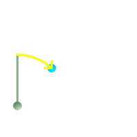 緑: 開始点 (25,45)で、鉛直方向に行きます。黄: degA_Bを示す行程 (方位)です。
| 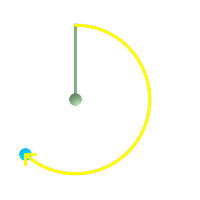 緑: (75,100)が開始点で、鉛直方向に行きます。黄: degB_Aを示す行程 (方位)です。
|
名前
ST_Angle — 3点もしくは4点、または2線で定義される二つのベクタ間の角度を返します。
概要
float ST_Angle(geometry point1, geometry point2, geometry point3, geometry point4);
float ST_Angle(geometry line1, geometry line2);
説明
二つのベクタの時計回りの角度を計算します。
1番目の形式: ポイントP1-P2-P3で囲まれた角度の計算。四つ目のポイントが与えられた場合にはP1-P2とP3-P4との角度を計算します。
2番目の形式: S1-E1ベクタとS2-E2ベクタの間の角度の計算、入力ラインの始点と終点で定義されます。
結果は0から2πラジアンの間の正数です。PostgreSQL関数degrees()を使うと、結果のラジアンを度に変換できます
ST_Angle(P1,P2,P3) = ST_Angle(P2,P1,P2,P3)となることに注意して下さい。
Availability: 2.5.0
例
3点間の角度
SELECT degrees( ST_Angle('POINT(0 0)', 'POINT(10 10)', 'POINT(20 0)') );
degrees
---------
270
4点で定義されたベクタ間の角度
SELECT degrees( ST_Angle('POINT (10 10)', 'POINT (0 0)', 'POINT(90 90)', 'POINT (100 80)') );
degrees
-------------------
269.9999999999999
ラインの始端と終端で定義されるベクタ間の角度
SELECT degrees( ST_Angle('LINESTRING(0 0, 0.3 0.7, 1 1)', 'LINESTRING(0 0, 0.2 0.5, 1 0)') );
degrees
--------------
45
名前
ST_ClosestPoint — g1上の、g2に最も近い2次元ポイントを返します。これは最短ラインの始点です。
概要
geometry ST_ClosestPoint(geometry g1, geometry g2);
説明
g1上の、g2に最も近い2次元ポイントを返します。これは最短ラインの始点です。
| |
3次元ジオメトリの場合にはST_3DClosestPointの方が良いでしょう。 |
Availability: 1.5.0
例
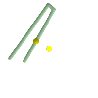 ポイントとラインストリングの間の最短は、ポイントそのものです。ラインストリングとポイントの間の最短は、ラインストリング上の最短となるポイントです。
SELECT ST_AsText(ST_ClosestPoint(pt,line)) AS cp_pt_line,
ST_AsText(ST_ClosestPoint(line,pt)) As cp_line_pt
FROM (SELECT 'POINT(100 100)'::geometry As pt,
'LINESTRING (20 80, 98 190, 110 180, 50 75 )'::geometry As line
) As foo;
cp_pt_line | cp_line_pt
----------------+------------------------------------------
POINT(100 100) | POINT(73.0769230769231 115.384615384615)
| 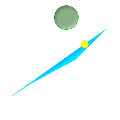 ポリゴンA上のポリゴンBへの最短点
SELECT ST_AsText(
ST_ClosestPoint(
ST_GeomFromText('POLYGON((175 150, 20 40, 50 60, 125 100, 175 150))'),
ST_Buffer(ST_GeomFromText('POINT(110 170)'), 20)
)
) As ptwkt;
ptwkt
------------------------------------------
POINT(140.752120669087 125.695053378061)
|
名前
ST_3DClosestPoint — g1上の、g2に最も近い3次元ポイントを返します。これは3次元の最短ラインの始点です。
概要
geometry ST_3DClosestPoint(geometry g1, geometry g2);
説明
g1上の、g2に最も近い3次元ポイントを返します。3次元最短線の一つ目のポイントです。3次元最短線の長さは、3次元距離と同じです。
This function supports 3d and will not drop the z-index.
This function supports Polyhedral surfaces.
Availability: 2.0.0
Changed: 2.2.0 - 二つの2次元ジオメトリが入力である場合には、2次元ポイントが返ります (古い挙動では、存在しないZの値について0を仮定していました)。2次元と3次元の場合には、もはや、存在しないZの値について0を仮定しません。
例
ラインストリングとポイント -- 3次元と2次元の両方の最も近いポイント SELECT ST_AsEWKT(ST_3DClosestPoint(line,pt)) AS cp3d_line_pt,
ST_AsEWKT(ST_ClosestPoint(line,pt)) As cp2d_line_pt
FROM (SELECT 'POINT(100 100 30)'::geometry As pt,
'LINESTRING (20 80 20, 98 190 1, 110 180 3, 50 75 1000)'::geometry As line
) As foo;
cp3d_line_pt | cp2d_line_pt
-----------------------------------------------------------+------------------------------------------
POINT(54.6993798867619 128.935022917228 11.5475869506606) | POINT(73.0769230769231 115.384615384615)
|
ラインストリングとマルチポイント -- 3次元と2次元の両方の最も近いポイント SELECT ST_AsEWKT(ST_3DClosestPoint(line,pt)) AS cp3d_line_pt,
ST_AsEWKT(ST_ClosestPoint(line,pt)) As cp2d_line_pt
FROM (SELECT 'MULTIPOINT(100 100 30, 50 74 1000)'::geometry As pt,
'LINESTRING (20 80 20, 98 190 1, 110 180 3, 50 75 900)'::geometry As line
) As foo;
cp3d_line_pt | cp2d_line_pt
-----------------------------------------------------------+--------------
POINT(54.6993798867619 128.935022917228 11.5475869506606) | POINT(50 75)
|
マルチラインストリングとポリゴン -- 3次元と2次元の両方の最も近いポイント SELECT ST_AsEWKT(ST_3DClosestPoint(poly, mline)) As cp3d,
ST_AsEWKT(ST_ClosestPoint(poly, mline)) As cp2d
FROM (SELECT ST_GeomFromEWKT('POLYGON((175 150 5, 20 40 5, 35 45 5, 50 60 5, 100 100 5, 175 150 5))') As poly,
ST_GeomFromEWKT('MULTILINESTRING((175 155 2, 20 40 20, 50 60 -2, 125 100 1, 175 155 1),
(1 10 2, 5 20 1))') As mline ) As foo;
cp3d | cp2d
-------------------------------------------+--------------
POINT(39.993580415989 54.1889925532825 5) | POINT(20 40)
|
名前
ST_Distance — 二つのジオメトリ値またはジオグラフィ値間の距離を返します。
概要
float ST_Distance(geometry g1, geometry g2);
float ST_Distance(geography geog1, geography geog2, boolean use_spheroid=true);
説明
geometry型では、二つのジオメトリ間の2次元のデカルト (平面)距離の最小値を返します。単位は投影の単位 (空間参照系の単位)です。
geography型では、二つのジオグラフィ間の最小の測地距離を、メートル単位で返します。SRIDで決定される回転楕円体で計算します。use_spheroidがFALSEの場合には、球面が計算に使われます。
This method implements the OGC Simple Features
Implementation Specification for SQL 1.1.
This method implements the SQL/MM specification. SQL-MM 3: 5.1.23
This method supports Circular Strings and Curves
Availability: 1.5.0 1.5でジオグラフィ対応が導入されました。大きいジオメトリや頂点の多いジオメトリについての速度が改善しました。
Enhanced: 2.1.0 ジオグラフィでの速度が改善されました。詳細はMaking Geography fasterをご覧ください。
Enhanced: 2.1.0 - 曲線ジオメトリ対応が導入されました。
Enhanced: 2.2.0 - 精度とロバスト性の向上のためにGeographicLibを使って回転楕円体面上での計測を行うようにしています。この新機能を使うには、Proj 4.9.0以上が必要です。
Changed: 3.0.0 - SFCGALに依存しなくなりました。
基本的なジオメトリの例
ジオメトリの例 - 平面の単位で4326はWGS84経度緯度なので、単位は度。
SELECT ST_Distance(
'SRID=4326;POINT(-72.1235 42.3521)'::geometry,
'SRID=4326;LINESTRING(-72.1260 42.45, -72.123 42.1546)'::geometry
);
st_distance
-----------------
0.00150567726382282ジオメトリの例 - メートル単位 (SIRD: 3857, 一般的なWebマップのピクセルに比例)。値は正しくありませんが、近傍の比較は正しくでき、KNNやKMeansなどのアルゴリズムに適しています。
SELECT ST_Distance(
ST_Transform('SRID=4326;POINT(-72.1235 42.3521)'::geometry, 3857),
ST_Transform('SRID=4326;LINESTRING(-72.1260 42.45, -72.123 42.1546)'::geometry, 3857)
);
st_distance
-----------------
167.441410065196ジオメトリの例 - メートル単位 (SRID:3857, 上と同じですが、歪みを考慮してcos(lat)で修正しています)
SELECT ST_Distance(
ST_Transform('SRID=4326;POINT(-72.1235 42.3521)'::geometry, 3857),
ST_Transform('SRID=4326;LINESTRING(-72.1260 42.45, -72.123 42.1546)'::geometry, 3857)
) * cosd(42.3521);
st_distance
-----------------
123.742351254151ジオメトリの例 - メートル単位 (SRID: 26986, マサチューセッツ州平面メートル) (マサチューセッツで最も精度が高い)
SELECT ST_Distance(
ST_Transform('SRID=4326;POINT(-72.1235 42.3521)'::geometry, 26986),
ST_Transform('SRID=4326;LINESTRING(-72.1260 42.45, -72.123 42.1546)'::geometry, 26986)
);
st_distance
-----------------
123.797937878454ジオメトリの例 - メートル単位 (SRID: 2163, 米国ナショナルアトラス正積図法) (最も精度が低い)
SELECT ST_Distance(
ST_Transform('SRID=4326;POINT(-72.1235 42.3521)'::geometry, 2163),
ST_Transform('SRID=4326;LINESTRING(-72.1260 42.45, -72.123 42.1546)'::geometry, 2163)
);
st_distance
------------------
126.664256056812ジオグラフィの例
ジオメトリの例と同じですが、メートル単位である点に注意して下さい - 球面の使用で、わずかな速度向上と低精度の計算を行います。
SELECT ST_Distance(gg1, gg2) As spheroid_dist, ST_Distance(gg1, gg2, false) As sphere_dist
FROM (SELECT
'SRID=4326;POINT(-72.1235 42.3521)'::geography as gg1,
'SRID=4326;LINESTRING(-72.1260 42.45, -72.123 42.1546)'::geography as gg2
) As foo ;
spheroid_dist | sphere_dist
------------------+------------------
123.802076746848 | 123.475736916397名前
ST_3DDistance — 投影座標系の単位で、二つのジオメトリ間の3次元デカルト距離の最小値を返します (空間参照系に基づきます)。
概要
float ST_3DDistance(geometry g1, geometry g2);
説明
投影座標系の単位で、二つのジオメトリ間の3次元デカルト距離の最小値を返します (空間参照系に基づきます)。
This function supports 3d and will not drop the z-index.
This function supports Polyhedral surfaces.
This method implements the SQL/MM specification. SQL-MM ?
Availability: 2.0.0
Changed: 2.2.0 - 2次元と3次元の場合には、もはや、存在しないZの値について0を仮定しません。
Changed: 3.0.0 - SFCGAL版は削除されました
例
-- ジオメトリの例 - メートル単位 (SRID: 2163, 米国ナショナルアトラス正積図法) (2次元のポイントとラインと比較される3次元のポイントとライン)
-- ご注意: 現在は鉛直基準面に対応していません。Z値は変換されずに、最終の単位と同じ単位と推定されます。
SELECT ST_3DDistance(
ST_Transform('SRID=4326;POINT(-72.1235 42.3521 4)'::geometry,2163),
ST_Transform('SRID=4326;LINESTRING(-72.1260 42.45 15, -72.123 42.1546 20)'::geometry,2163)
) As dist_3d,
ST_Distance(
ST_Transform('SRID=4326;POINT(-72.1235 42.3521)'::geometry,2163),
ST_Transform('SRID=4326;LINESTRING(-72.1260 42.45, -72.123 42.1546)'::geometry,2163)
) As dist_2d;
dist_3d | dist_2d
------------------+-----------------
127.295059324629 | 126.66425605671
-- マルチラインストリングとポリゴンの3次元距離と2次元距離
-- 3次元最近点の例と同じです
SELECT ST_3DDistance(poly, mline) As dist3d,
ST_Distance(poly, mline) As dist2d
FROM (SELECT 'POLYGON((175 150 5, 20 40 5, 35 45 5, 50 60 5, 100 100 5, 175 150 5))'::geometry as poly,
'MULTILINESTRING((175 155 2, 20 40 20, 50 60 -2, 125 100 1, 175 155 1), (1 10 2, 5 20 1))'::geometry as mline) as foo;
dist3d | dist2d
-------------------+--------
0.716635696066337 | 0
名前
ST_DistanceSphere — 球面の地球モデルを使って、二つの経度/緯度ジオメトリの最小距離をメートル単位で返します。
概要
float ST_DistanceSphere(geometry geomlonlatA, geometry geomlonlatB);
説明
二つの経度緯度ジオメトリの間の最短距離をメートル単位で返します。SRIDで定義された回転楕円体に由来する半径となる球面を使います。ST_DistanceSpheroidより高速ですが、精度が悪くなります。PostGISの1.5より前の版ではポイント間の距離の計測だけを実装していました。
Availability: 1.5 - ポイント以外のジオメトリが導入されました。以前の版ではポイントでのみ動作しました。
Changed: 2.2.0 前の版ではこの関数はST_Distance_Sphereと呼ばれていました。
例
SELECT round(CAST(ST_DistanceSphere(ST_Centroid(geom), ST_GeomFromText('POINT(-118 38)',4326)) As numeric),2) As dist_meters,
round(CAST(ST_Distance(ST_Transform(ST_Centroid(geom),32611),
ST_Transform(ST_GeomFromText('POINT(-118 38)', 4326),32611)) As numeric),2) As dist_utm11_meters,
round(CAST(ST_Distance(ST_Centroid(geom), ST_GeomFromText('POINT(-118 38)', 4326)) As numeric),5) As dist_degrees,
round(CAST(ST_Distance(ST_Transform(geom,32611),
ST_Transform(ST_GeomFromText('POINT(-118 38)', 4326),32611)) As numeric),2) As min_dist_line_point_meters
FROM
(SELECT ST_GeomFromText('LINESTRING(-118.584 38.374,-118.583 38.5)', 4326) As geom) as foo;
dist_meters | dist_utm11_meters | dist_degrees | min_dist_line_point_meters
-------------+-------------------+--------------+----------------------------
70424.47 | 70438.00 | 0.72900 | 65871.18
名前
ST_DistanceSpheroid — 回転楕円体面の地球モデルを使って、二つの経度/緯度ジオメトリの最小距離を返します。
概要
float ST_DistanceSpheroid(geometry geomlonlatA, geometry geomlonlatB, spheroid measurement_spheroid);
説明
与えられた回転楕円体面の、二つの経度/緯度ジオメトリの最小距離をメートル単位で返します。回転楕円体面の詳細についてはST_LengthSpheroidをご覧下さい。
| |
この関数はジオメトリのSRIDを見ません。ジオメトリの座標は与えられた回転楕円体に基づくものと仮定します。 |
Availability: 1.5 - ポイント以外のジオメトリが導入されました。以前の版ではポイントでのみ動作しました。
Changed: 2.2.0 前の版ではこの関数はST_Distance_Sphereと呼ばれていました。
例
SELECT round(CAST(
ST_DistanceSpheroid(ST_Centroid(geom), ST_GeomFromText('POINT(-118 38)',4326), 'SPHEROID["WGS 84",6378137,298.257223563]')
As numeric),2) As dist_meters_spheroid,
round(CAST(ST_DistanceSphere(ST_Centroid(geom), ST_GeomFromText('POINT(-118 38)',4326)) As numeric),2) As dist_meters_sphere,
round(CAST(ST_Distance(ST_Transform(ST_Centroid(geom),32611),
ST_Transform(ST_GeomFromText('POINT(-118 38)', 4326),32611)) As numeric),2) As dist_utm11_meters
FROM
(SELECT ST_GeomFromText('LINESTRING(-118.584 38.374,-118.583 38.5)', 4326) As geom) as foo;
dist_meters_spheroid | dist_meters_sphere | dist_utm11_meters
----------------------+--------------------+-------------------
70454.92 | 70424.47 | 70438.00
名前
ST_FrechetDistance — 二つのジオメトリのフレシェ距離を返します。
概要
float ST_FrechetDistance(geometry g1, geometry g2, float densifyFrac = -1);
説明
両方のジオメトリの離散点への制限を受けたフレシェ距離の計算アルゴリズムの実装はComputing Discrete Fréchet Distanceを基にしています。フレシェ距離は曲線の位置と点の並び順とを考慮に入れた曲線間の類似度を計測するものです。ハウスドルフ距離よりも良いことがしばしばあります。
任意引数densifyFracが指定されると、この関数は、離散フレシェ距離の計算の前に、辺密度を増加させます。densifyFracパラメータは辺の高密度化に使う比率を設定します。それぞれの辺は多数の等長の辺に分割され、分割辺長の合計長に対する比は与えた比率に近くなります。
単位はジオメトリの空間参照系の単位です。
| |
現在の実装では、離散位置は、頂点のみに対応しています。任意の密度でポイントを使用することができるよう拡張されています。 |
| |
densityFracに小さい値を指定すると、フレシェ距離の精度が増します。しかし、分割辺数の2乗に比例して計算時間とメモリ利用量が増大します。 |
GEOSモジュールで実現しています。
Availability: 2.4.0 - GEOS 3.7.0以上が必要です。
例
postgres=# SELECT st_frechetdistance('LINESTRING (0 0, 100 0)'::geometry, 'LINESTRING (0 0, 50 50, 100 0)'::geometry);
st_frechetdistance
--------------------
70.7106781186548
(1 row)
SELECT st_frechetdistance('LINESTRING (0 0, 100 0)'::geometry, 'LINESTRING (0 0, 50 50, 100 0)'::geometry, 0.5);
st_frechetdistance
--------------------
50
(1 row)
名前
ST_HausdorffDistance — 二つのジオメトリ間のハウスドルフ距離を返します。
概要
float ST_HausdorffDistance(geometry g1, geometry g2);
float ST_HausdorffDistance(geometry g1, geometry g2, float densifyFrac);
説明
二つのジオメトリ間のハウスドルフ距離を返します。二つのジオメトリがどれだけ似ているかを示す値です。
「離散ハウスドルフ距離」とみなすことができる距離基準を計算します。これは、一つのジオメトリの離散点に制限されたハウスドルフ距離です。Hausdorff distanceに関するWikiPedia英語版の記事やMartin Davis note on how Hausdorff Distance calculation was used to prove correctness of the CascadePolygonUnion approach.などを参照して下さい。
densifyFracが指定された際には、離散ハウスドルフ距離を計算する前に、線分の密度を高めます。densifyFracパラメータは線分ごとの密度を高める小数です。それぞれの線分が、等分に分割されます。線分の長さに対する分割線分の長さの比は与えられた小数に近くなります。
単位はジオメトリの空間参照系の単位です。
| |
現在の実装では、離散位置は、頂点のみに対応しています。任意の密度でポイントを使用することができるよう拡張されています。 |
| |
このアルゴリズムは標準的なハウスドルフ距離と等価では*ありません*。しかし、使用可能な場面の大部分で正しくなる近似計算がなされています。重要なものに、それぞれが概ね平行で概ね等しい長さのラインストリングがあります。これはラインのマッチングに使える基準です。 |
Availability: 1.5.0
例
建物ごとに、建物を表現する最善の区画を見つけます。まず、ジオメトリとインタセクトする区画を求めます。DISTINCT ONで、建物が一覧に一度だけ出現するのを保障します。ORDER BY ... ST_HausdorffDistanceで、最も建物に近い区画が前に出ます。
SELECT DISTINCT ON(buildings.gid) buildings.gid, parcels.parcel_id
FROM buildings INNER JOIN parcels ON ST_Intersects(buildings.geom,parcels.geom)
ORDER BY buildings.gid, ST_HausdorffDistance(buildings.geom, parcels.geom);postgis=# SELECT ST_HausdorffDistance(
'LINESTRING (0 0, 2 0)'::geometry,
'MULTIPOINT (0 1, 1 0, 2 1)'::geometry);
st_hausdorffdistance
----------------------
1
(1 row)
postgis=# SELECT st_hausdorffdistance('LINESTRING (130 0, 0 0, 0 150)'::geometry, 'LINESTRING (10 10, 10 150, 130 10)'::geometry, 0.5);
st_hausdorffdistance
----------------------
70
(1 row)
名前
ST_Length — 線系ジオメトリの2次元長を返します。
概要
float ST_Length(geometry a_2dlinestring);
float ST_Length(geography geog, boolean use_spheroid=true);
説明
ジオメトリ型: LINESTRING, MULTILINESTRING, ST_Curve, ST_MultiCurveの場合には2次元デカルト距離を返します。面ジオメトリでは0を返すのでST_Perimeterを代わりに使います。長さの単位はジオメトリの空間参照系で決まります。
ジオグラフィ型: 計算は逆測地問題を用いています。長さの単位はメートルです。PROJ 4.8.0以上をでPostGISをコンパイルしている場合には、回転楕円体面はSRIDで指定されたものとなり、それより前はWGS84となります。use_spheroid=falseとすると、計算は回転楕円体面でなく真球面で行います。
現在は、ジオメトリに対してはST_Length2Dの別名ですが、高次元対応に変更されるかも知れません。
| |
Changed: 2.0.0 大幅な変更 -- 以前の版ではジオグラフィのPOLYGONやMULTIPOLYGONへの適用によってPOLYGONやMULTIPOLYGONの周囲長を返しました。2.0.0版ではジオメトリの挙動に従うため0を返すように変更しました。ポリゴンの周囲長を求める場合は、ST_Perimeterを使います。 |
| |
ジオグラフィでは計算は回転楕円体面モデルを使用します。計算が速い反面精度が低い球面計算を使うには、 ST_Length(gg,false)とします。 |
This method implements the OGC Simple Features
Implementation Specification for SQL 1.1. s2.1.5.1
This method implements the SQL/MM specification. SQL-MM 3: 7.1.2, 9.3.4
Availability: 1.5.0 ジオグラフィt対応が導入されました。
This method is also provided by SFCGAL backend.
ジオメトリの例
ラインストリングのフィート単位の長さを返します。EPSG:2249はフィート単位のマサチューセッツ州平面なので、フィート単位になることに注意して下さい。
SELECT ST_Length(ST_GeomFromText('LINESTRING(743238 2967416,743238 2967450,743265 2967450,
743265.625 2967416,743238 2967416)',2249));
st_length
---------
122.630744000095
-- WGS84ラインストリングをメートル単位のマサチューセッツ州平面に変換
SELECT ST_Length(
ST_Transform(
ST_GeomFromEWKT('SRID=4326;LINESTRING(-72.1260 42.45, -72.1240 42.45666, -72.123 42.1546)'),
26986
)
);
st_length
---------
34309.4563576191
ジオグラフィの例
WGS84ジオグラフィのラインの長さを返します。
-- デフォルトでは計算に回転楕円体面を使用
SELECT ST_Length(the_geog) As length_spheroid, ST_Length(the_geog,false) As length_sphere
FROM (SELECT ST_GeographyFromText(
'SRID=4326;LINESTRING(-72.1260 42.45, -72.1240 42.45666, -72.123 42.1546)') As the_geog)
As foo;
length_spheroid | length_sphere
------------------+------------------
34310.5703627288 | 34346.2060960742
名前
ST_3DLength — 線ジオメトリの3次元長を返します。
概要
float ST_3DLength(geometry a_3dlinestring);
説明
LINESTRINGまたはMULTILINESTRINGに対して、ジオメトリの3次元長または2次元長を返します。2次元ラインについては、2次元長を返します (ST_LengthやST_Length2Dと同じです)。
This function supports 3d and will not drop the z-index.
Changed: 2.0.0 以前の版ではST_Length3Dと呼ばれていました。
名前
ST_LengthSpheroid — 回転楕円体面上の経度緯度のジオメトリの2次元または3次元の長さ/周長を返します。
概要
float ST_LengthSpheroid(geometry a_geometry, spheroid a_spheroid);
説明
回転楕円体面上のジオメトリの周長を返します。この関数は、ジオメトリの座標が経度/緯度で、投影変換なしで長さを求めたい場合に使います。
SPHEROID[<名称>,<長軸半径>,<扁平率の逆数>]
例:
SPHEROID["GRS_1980",6378137,298.257222101]
Availability: 1.2.2
Changed: 2.2.0 これより前の版では、これはST_Length_Spheroidと呼ばれ、ST_3DLength_Spheroidという別名を持っていました。
This function supports 3d and will not drop the z-index.
例
SELECT ST_LengthSpheroid( geometry_column,
'SPHEROID["GRS_1980",6378137,298.257222101]' )
FROM geometry_table;
SELECT ST_LengthSpheroid( geom, sph_m ) As tot_len,
ST_LengthSpheroid(ST_GeometryN(geom,1), sph_m) As len_line1,
ST_LengthSpheroid(ST_GeometryN(geom,2), sph_m) As len_line2
FROM (SELECT ST_GeomFromText('MULTILINESTRING((-118.584 38.374,-118.583 38.5),
(-71.05957 42.3589 , -71.061 43))') As geom,
CAST('SPHEROID["GRS_1980",6378137,298.257222101]' As spheroid) As sph_m) as foo;
tot_len | len_line1 | len_line2
------------------+------------------+------------------
85204.5207562955 | 13986.8725229309 | 71217.6482333646
--3D
SELECT ST_LengthSpheroid( geom, sph_m ) As tot_len,
ST_LengthSpheroid(ST_GeometryN(geom,1), sph_m) As len_line1,
ST_LengthSpheroid(ST_GeometryN(geom,2), sph_m) As len_line2
FROM (SELECT ST_GeomFromEWKT('MULTILINESTRING((-118.584 38.374 20,-118.583 38.5 30),
(-71.05957 42.3589 75, -71.061 43 90))') As geom,
CAST('SPHEROID["GRS_1980",6378137,298.257222101]' As spheroid) As sph_m) as foo;
tot_len | len_line1 | len_line2
------------------+-----------------+------------------
85204.5259107402 | 13986.876097711 | 71217.6498130292
名前
ST_LongestLine — 二つのジオメトリ間の2次元最長ラインを返します。
概要
geometry ST_LongestLine(geometry g1, geometry g2);
説明
二つのジオメトリの2次元長が最長となるポイントを返します。
最長ラインが複数現れた場合には、最初の最長ラインを返します。ラインはg1で始まりg2で終わります。ラインの長さはST_MaxDistanceで返される距離と同じです。
Availability: 1.5.0
例
 ポイントとラインストリングの間の最長となるライン
SELECT ST_AsText(
ST_LongestLine('POINT(100 100)'::geometry,
'LINESTRING (20 80, 98 190, 110 180, 50 75 )'::geometry)
) As lline;
lline
-----------------
LINESTRING(100 100,98 190)
|
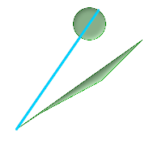 二つのポリゴンの間の最長となるライン
SELECT ST_AsText(
ST_LongestLine(
ST_GeomFromText('POLYGON((175 150, 20 40,
50 60, 125 100, 175 150))'),
ST_Buffer(ST_GeomFromText('POINT(110 170)'), 20)
)
) As llinewkt;
lline
-----------------
LINESTRING(20 40,121.111404660392 186.629392246051)
|
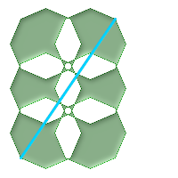 市内のある場所から別の場所への移動で最長となる直線距離。最長距離はラインの長さと同じとなることに注意して下さい。
SELECT ST_AsText( ST_LongestLine(c.geom, c.geom)) AS llinewkt,
ST_MaxDistance( c.geom,c.geom) AS max_dist,
ST_Length( ST_LongestLine(c.geom, c.geom)) AS lenll
FROM (SELECT ST_MakeValid( ST_Collect(geom)) AS geom
FROM (SELECT ST_Translate( ST_SnapToGrid(
ST_Buffer(
ST_Point(50 ,generate_series(50,190, 50)),
40, 'quad_segs=2'),1), x, 0) AS geom
FROM generate_series(1,100,50) As x) AS foo
) AS c;
llinewkt | max_dist | lenll
---------------------------+------------------+------------------
LINESTRING(23 22,129 178) | 188.605408193933 | 188.605408193933
|
名前
ST_3DLongestLine — 二つのジオメトリ間の3次元最長ラインを返します。
概要
geometry ST_3DLongestLine(geometry g1, geometry g2);
説明
二つのジオメトリ間の3次元最長ラインを返します。該当が複数ある場合には最初の最長ラインを返します。返されるラインは、g1から始まりg2で終わります。ラインの3次元長はST_3DMaxDistanceが返す距離と同じです。
Availability: 2.0.0
Changed: 2.2.0 - 二つの2次元ジオメトリが入力である場合には、2次元ポイントが返ります (古い挙動では、存在しないZの値について0を仮定していました)。2次元と3次元の場合には、もはや、存在しないZの値について0を仮定しません。
This function supports 3d and will not drop the z-index.
This function supports Polyhedral surfaces.
例
ラインストリングとポイント -- 3次元と2次元の最長ライン SELECT ST_AsEWKT(ST_3DLongestLine(line,pt)) AS lol3d_line_pt,
ST_AsEWKT(ST_LongestLine(line,pt)) As lol2d_line_pt
FROM (SELECT 'POINT(100 100 30)'::geometry As pt,
'LINESTRING (20 80 20, 98 190 1, 110 180 3, 50 75 1000)'::geometry As line
) As foo;
lol3d_line_pt | lol2d_line_pt
-----------------------------------+----------------------------
LINESTRING(50 75 1000,100 100 30) | LINESTRING(98 190,100 100)
|
ラインストリングとマルチポイント -- 3次元と2次元の最長ライン SELECT ST_AsEWKT(ST_3DLongestLine(line,pt)) AS lol3d_line_pt,
ST_AsEWKT(ST_LongestLine(line,pt)) As lol2d_line_pt
FROM (SELECT 'MULTIPOINT(100 100 30, 50 74 1000)'::geometry As pt,
'LINESTRING (20 80 20, 98 190 1, 110 180 3, 50 75 900)'::geometry As line
) As foo;
lol3d_line_pt | lol2d_line_pt
---------------------------------+--------------------------
LINESTRING(98 190 1,50 74 1000) | LINESTRING(98 190,50 74)
|
マルチラインストリングとポリゴンの3次元と2次元の最長ライン SELECT ST_AsEWKT(ST_3DLongestLine(poly, mline)) As lol3d,
ST_AsEWKT(ST_LongestLine(poly, mline)) As lol2d
FROM (SELECT ST_GeomFromEWKT('POLYGON((175 150 5, 20 40 5, 35 45 5, 50 60 5, 100 100 5, 175 150 5))') As poly,
ST_GeomFromEWKT('MULTILINESTRING((175 155 2, 20 40 20, 50 60 -2, 125 100 1, 175 155 1),
(1 10 2, 5 20 1))') As mline ) As foo;
lol3d | lol2d
------------------------------+--------------------------
LINESTRING(175 150 5,1 10 2) | LINESTRING(175 150,1 10)
|
名前
ST_MaxDistance — 二つのジオメトリ間の2次元最長距離を空間参照系の単位で返します
概要
float ST_MaxDistance(geometry g1, geometry g2);
説明
二つのジオメトリの2次元最長距離を空間参照系の単位で返します。最長距離は常に二つの頂点間で発生します。これはST_LongestLineが返すラインの長さと同じです。
g1とg2が同じジオメトリであった場合には、そのジオメトリ内の最も遠くなる二つの頂点間の距離を返します。
Availability: 1.5.0
例
ポイントとラインの最長距離。
postgis=# SELECT ST_MaxDistance('POINT(0 0)'::geometry, 'LINESTRING ( 2 0, 0 2 )'::geometry);
st_maxdistance
-----------------
2
postgis=# SELECT ST_MaxDistance('POINT(0 0)'::geometry, 'LINESTRING ( 2 2, 2 2 )'::geometry);
st_maxdistance
------------------
2.82842712474619
一つのジオメトリ内の頂点間の最長距離。
SELECT ST_MaxDistance('POLYGON ((10 10, 10 0, 0 0, 10 10))'::geometry,
'POLYGON ((10 10, 10 0, 0 0, 10 10))'::geometry);
st_maxdistance
------------------
14.142135623730951
名前
ST_3DMaxDistance — 二つのジオメトリ間の3次元最大デカルト距離 (空間参照系に基づく)を空間参照系の単位で返します。
概要
float ST_3DMaxDistance(geometry g1, geometry g2);
説明
二つのジオメトリ間の3次元の最大デカルト距離を空間参照系の単位で返します。
This function supports 3d and will not drop the z-index.
This function supports Polyhedral surfaces.
Availability: 2.0.0
Changed: 2.2.0 - 2次元と3次元の場合には、もはや、存在しないZの値について0を仮定しません。
例
-- ジオメトリの例 - メートル単位(SRID: 2163 米国ナショナルアトラス正積図法)
-- (3次元ポイントとラインの距離と、2次元ポイントとラインの距離とを比較)
-- ご注意: 現在は垂直データムに対応していないので、Zは変換されずに、最終的に同じであると仮定されます。
SELECT ST_3DMaxDistance(
ST_Transform(ST_GeomFromEWKT('SRID=4326;POINT(-72.1235 42.3521 10000)'),2163),
ST_Transform(ST_GeomFromEWKT('SRID=4326;LINESTRING(-72.1260 42.45 15, -72.123 42.1546 20)'),2163)
) As dist_3d,
ST_MaxDistance(
ST_Transform(ST_GeomFromEWKT('SRID=4326;POINT(-72.1235 42.3521 10000)'),2163),
ST_Transform(ST_GeomFromEWKT('SRID=4326;LINESTRING(-72.1260 42.45 15, -72.123 42.1546 20)'),2163)
) As dist_2d;
dist_3d | dist_2d
------------------+------------------
24383.7467488441 | 22247.8472107251
名前
ST_MinimumClearance — ジオメトリのクリアランスの最小値を返します。この値はジオメトリのロバスト性を示すものです。
概要
float ST_MinimumClearance(geometry g);
説明
??? (ポリゴン)またはST_IsSimple (ライン)に従って、ジオメトリは妥当性基準を満たせますが、そのうちの一つの頂点が短い距離だけ移動すると不正になります。これは、テキスト書式 (WKT, KML, GML, GeoJSON等)に変換する際の精度の損失や、倍精度浮動小数点座標値を使わない書式 (MapInfo TAB等)で発生する可能性があります。
クリアランスの最小値は、座標精度を変更するためのジオメトリのロバスト性を定量的に計測したものです。ジオメトリの頂点が不正なジオメトリとなることなしに移動できる最大距離です。最小クリアランスは、その値が大きいほどロバスト性が大きいことを示しています。
ジオメトリがクリアランスの最小値eを持つ場合:
距離
eより近くなるジオメトリ内の二つの個別の頂点はありません。頂点について、その頂点の端点となる辺を除いて、辺との距離が
eより近いものは存在しない
ジオメトリで最小クリアランスを持たない (単一のポイント、要素ポイントが全く同じのマルチポイントなど)場合には、Infinity.を返します。
精度の損失による有効性の問題を回避するには、 ST_ReducePrecisionを使うと、ポリゴンジオメトリの妥当性を確実に維持しつつ座標値の精度を減らせられます。
Availability: 2.3.0
名前
ST_MinimumClearanceLine — ジオメトリの最小クリアランスを示す、2点のラインストリングを返します。
概要
Geometry ST_MinimumClearanceLine(geometry g);
説明
ジオメトリの最小クリアランスを示す、2点のラインストリングを返します。ジオメトリが最小クリアランスを持たない場合には、LINESTRING EMPTYが返ります。
GEOSモジュールで実現しています。
Availability: 2.3.0 - GEOS 3.6.0以上が必要です。
名前
ST_Perimeter — ポリゴンジオメトリまたはジオグラフィの境界の長さを返します。
概要
float ST_Perimeter(geometry g1);
float ST_Perimeter(geography geog, boolean use_spheroid=true);
説明
ジオメトリ/ジオグラフィがST_SrrfaceまたはST_MultiSurface (POLYGONまたはMULTIPOLYGON)の場合に、2次元周囲長を返します。面ジオメトリでない場合には0を返します。ラインストリングについてはST_Lengthを使います。ジオメトリに対しては、周囲長の計測単位は空間参照系によります。
ジオグラフィに対しては、測地線の逆問題を使って計算し、長さの単位はメートルです。PostGISをPROJ 4.8.0以上でコンパイルしているなら、回転楕円体面はSRIDで指定されたものですが、そうでなければ、WGS84に限定されます。use_spheroid=falseとすると、回転楕円体面でなく近似する球面で計算します。
現在は、この関数はST_Perimeter2Dの別名ですが、高次元対応に変更されるかも知れません。
This method implements the OGC Simple Features
Implementation Specification for SQL 1.1. s2.1.5.1
This method implements the SQL/MM specification. SQL-MM 3: 8.1.3, 9.5.4
Availability: 2.0.0 ジオグラフィ対応が導入されました。
例: ジオメトリ
POLYGONとMULTIPOLYGONに対するフィート単位の周囲長を返します。EPSG:2249はフィート単位のマサチューセッツ平面なので、フィート単位です。
SELECT ST_Perimeter(ST_GeomFromText('POLYGON((743238 2967416,743238 2967450,743265 2967450,
743265.625 2967416,743238 2967416))', 2249));
st_perimeter
---------
122.630744000095
(1 row)
SELECT ST_Perimeter(ST_GeomFromText('MULTIPOLYGON(((763104.471273676 2949418.44119003,
763104.477769673 2949418.42538203,
763104.189609677 2949418.22343004,763104.471273676 2949418.44119003)),
((763104.471273676 2949418.44119003,763095.804579742 2949436.33850239,
763086.132105649 2949451.46730207,763078.452329651 2949462.11549407,
763075.354136904 2949466.17407812,763064.362142565 2949477.64291974,
763059.953961626 2949481.28983009,762994.637609571 2949532.04103014,
762990.568508415 2949535.06640477,762986.710889563 2949539.61421415,
763117.237897679 2949709.50493431,763235.236617789 2949617.95619822,
763287.718121842 2949562.20592617,763111.553321674 2949423.91664605,
763104.471273676 2949418.44119003)))', 2249));
st_perimeter
---------
845.227713366825
(1 row)
例: ジオグラフィ
ポリゴンとマルチポリゴンのメートル単位とフィート単位の周囲長を返します。ジオグラフィ (WGS 84経度緯度)であることに注意して下さい。
SELECT ST_Perimeter(geog) As per_meters, ST_Perimeter(geog)/0.3048 As per_ft
FROM ST_GeogFromText('POLYGON((-71.1776848522251 42.3902896512902,-71.1776843766326 42.3903829478009,
-71.1775844305465 42.3903826677917,-71.1775825927231 42.3902893647987,-71.1776848522251 42.3902896512902))') As geog;
per_meters | per_ft
-----------------+------------------
37.3790462565251 | 122.634666195949
-- MultiPolygon example --
SELECT ST_Perimeter(geog) As per_meters, ST_Perimeter(geog,false) As per_sphere_meters, ST_Perimeter(geog)/0.3048 As per_ft
FROM ST_GeogFromText('MULTIPOLYGON(((-71.1044543107478 42.340674480411,-71.1044542869917 42.3406744369506,
-71.1044553562977 42.340673886454,-71.1044543107478 42.340674480411)),
((-71.1044543107478 42.340674480411,-71.1044860600303 42.3407237015564,-71.1045215770124 42.3407653385914,
-71.1045498002983 42.3407946553165,-71.1045611902745 42.3408058316308,-71.1046016507427 42.340837442371,
-71.104617893173 42.3408475056957,-71.1048586153981 42.3409875993595,-71.1048736143677 42.3409959528211,
-71.1048878050242 42.3410084812078,-71.1044020965803 42.3414730072048,
-71.1039672113619 42.3412202916693,-71.1037740497748 42.3410666421308,
-71.1044280218456 42.3406894151355,-71.1044543107478 42.340674480411)))') As geog;
per_meters | per_sphere_meters | per_ft
------------------+-------------------+------------------
257.634283683311 | 257.412311446337 | 845.256836231335
名前
ST_Perimeter2D — ポリゴンジオメトリの2次元周長を返します。ST_Perimeterの別名です。
概要
float ST_Perimeter2D(geometry geomA);
名前
ST_3DPerimeter — ポリゴンジオメトリの3次元周長を返します。
概要
float ST_3DPerimeter(geometry geomA);
説明
POLYGONまたはMULTIPOLYGONジオメトリの場合には、3次元周囲長を返します。ジオメトリが2次元の場合には、2次元周囲長を返します。
This function supports 3d and will not drop the z-index.
Changed: 2.0.0 以前の版ではST_Perimeter3Dと呼ばれていました。
例
フィート単位のマサチューセッツ州平面での、大気中にある、わずかに持ち上げられたポリゴンの周囲長です。
SELECT ST_3DPerimeter(geom), ST_Perimeter2d(geom), ST_Perimeter(geom) FROM
(SELECT ST_GeomFromEWKT('SRID=2249;POLYGON((743238 2967416 2,743238 2967450 1,
743265.625 2967416 1,743238 2967416 2))') As geom) As foo;
ST_3DPerimeter | st_perimeter2d | st_perimeter
------------------+------------------+------------------
105.465793597674 | 105.432997272188 | 105.432997272188
名前
ST_Project — 始点から距離と方位で算出されたポイントを返します。
概要
geography ST_Project(geography g1, float distance, float azimuth);
説明
始点から測地線に沿って与えられた距離と方位で算出されたポイントを返します。測地問題と言われるものです。
距離はメートルで与えます。負数に対応しています。
方位はラジアンで与えます。真北 (方位 0)から時計回りに増えます。 東は方位 π/2 (90度)、南は方位 π (180度)、西は方位 3π/2 (270度)です。負数と2π (360度)以上の値に対応しています。
Availability: 2.0.0
Enhanced: 2.4.0 負の距離と非正規化方位を許容するようになりました
名前
ST_ShortestLine — 二つのジオメトリの3次元の最短ラインを返します。
概要
geometry ST_ShortestLine(geometry g1, geometry g2);
説明
二つのジオメトリの2次元最短ラインを返します。複数発見した場合には、最初のラインを返します。g1とg2が1点でインタセクトする場合には、インタセクトした点を始点と終点として返します。g1とg2が複数点でインタセクトする場合には、インタセクトした点からなるラインを返しますが、どの点になるかは分かりません。返されるラインは常にg1が始点でg2が終点です。この関数が返すラインの長さは常にg1とg2を引数に取ったST_Distanceの返り値と同じです。
Availability: 1.5.0
例
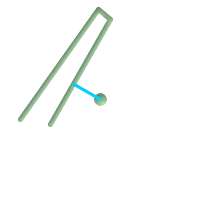 ポイントとラインストリングの最短ライン
SELECT ST_AsText(
ST_ShortestLine('POINT(100 100)'::geometry,
'LINESTRING (20 80, 98 190, 110 180, 50 75 )'::geometry)
) As sline;
sline
-----------------
LINESTRING(100 100,73.0769230769231 115.384615384615)
| 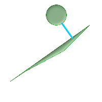 ポリゴンとポリゴンの最短ライン
SELECT ST_AsText(
ST_ShortestLine(
ST_GeomFromText('POLYGON((175 150, 20 40, 50 60, 125 100, 175 150))'),
ST_Buffer(ST_GeomFromText('POINT(110 170)'), 20)
)
) As slinewkt;
LINESTRING(140.752120669087 125.695053378061,121.111404660392 153.370607753949)
|
名前
ST_3DShortestLine — 二つのジオメトリの3次元の最短ラインを返します。
概要
geometry ST_3DShortestLine(geometry g1, geometry g2);
説明
二つのジオメトリの3次元長が最短となるラインを返します。見つかった最短線が複数ある場合は、最初のもののみ返します。g1とg2が1点のみでインタセクトする場合は、インタセクション点を開始点と終了点とします。g1とg2が1点より多くインタセクトする場合は、同じ点を開始点と終了点としますが、その点は不定です。返されるラインは常にg1側を始点、g2側を終点とします。この関数が返すラインの長さは、常にg1とg2を指定した場合のST_3DDistanceが返す値と同じになります。
Availability: 2.0.0
Changed: 2.2.0 - 二つの2次元ジオメトリが入力である場合には、2次元ポイントが返ります (古い挙動では、存在しないZの値について0を仮定していました)。2次元と3次元の場合には、もはや、存在しないZの値について0を仮定しません。
This function supports 3d and will not drop the z-index.
This function supports Polyhedral surfaces.
例
ラインストリングとポイント -- 3次元と2次元の最短ライン SELECT ST_AsEWKT(ST_3DShortestLine(line,pt)) AS shl3d_line_pt,
ST_AsEWKT(ST_ShortestLine(line,pt)) As shl2d_line_pt
FROM (SELECT 'POINT(100 100 30)'::geometry As pt,
'LINESTRING (20 80 20, 98 190 1, 110 180 3, 50 75 1000)'::geometry As line
) As foo;
shl3d_line_pt | shl2d_line_pt
----------------------------------------------------------------------------+------------------------------------------------------
LINESTRING(54.6993798867619 128.935022917228 11.5475869506606,100 100 30) | LINESTRING(73.0769230769231 115.384615384615,100 100)
|
ラインストリングとマルチポイント -- 3次元と2次元の最短ライン SELECT ST_AsEWKT(ST_3DShortestLine(line,pt)) AS shl3d_line_pt,
ST_AsEWKT(ST_ShortestLine(line,pt)) As shl2d_line_pt
FROM (SELECT 'MULTIPOINT(100 100 30, 50 74 1000)'::geometry As pt,
'LINESTRING (20 80 20, 98 190 1, 110 180 3, 50 75 900)'::geometry As line
) As foo;
shl3d_line_pt | shl2d_line_pt
---------------------------------------------------------------------------+------------------------
LINESTRING(54.6993798867619 128.935022917228 11.5475869506606,100 100 30) | LINESTRING(50 75,50 74)
|
マルチラインストリングとポリゴンの3次元と2次元の最短ライン SELECT ST_AsEWKT(ST_3DShortestLine(poly, mline)) As shl3d,
ST_AsEWKT(ST_ShortestLine(poly, mline)) As shl2d
FROM (SELECT ST_GeomFromEWKT('POLYGON((175 150 5, 20 40 5, 35 45 5, 50 60 5, 100 100 5, 175 150 5))') As poly,
ST_GeomFromEWKT('MULTILINESTRING((175 155 2, 20 40 20, 50 60 -2, 125 100 1, 175 155 1),
(1 10 2, 5 20 1))') As mline ) As foo;
shl3d | shl2d
---------------------------------------------------------------------------------------------------+------------------------
LINESTRING(39.993580415989 54.1889925532825 5,40.4078575708294 53.6052383805529 5.03423778139177) | LINESTRING(20 40,20 40)
|
SFCGALはCGALのC++ラッパライブラリです。CGALは高度な2次元と3次元の空間関数を提供します。堅牢性のためにジオメトリ座標は正確な有理数表現を持ちます。
このライブラリのインストール手順はSFCGALサイト (http://www.sfcgal.org)にあります。機能を有効にするにはcreate extension postgis_sfcgalとします。
- postgis_sfcgal_version — 使用しているSFCGALの版を返します
- ST_Extrude — 関連するボリュームにサーフェスを押し出します。
- ST_StraightSkeleton — ジオメトリからストレートスケルトンを計算します。
- ST_ApproximateMedialAxis — 面ジオメトリの近似的な中心軸を計算します。
- ST_IsPlanar — サーフェスが平面であるかないかをチェックします。
- ST_Orientation — サーフェスの方向を判定します。
- ST_ForceLHR — LHR (Left Hand Rule)方向に強制します。
- ST_MinkowskiSum — ミンコフスキー和を求めます。
- ST_ConstrainedDelaunayTriangles — 入力ジオメトリの周りの制約付きドロネー三角形を返します。
- ST_3DIntersection — 3次元のインタセクトした (共有する)部分を計算します。
- ST_3DDifference — 3次元の差分を計算します。
- ST_3DUnion — 3次元の結合を計算します。
- ST_3DArea — 3次元の面ジオメトリの面積を計算します。立体の場合は0を返します。
- ST_Tesselate — ポリゴンまたは多面体サーフェスのテッセレーションを計算し、TINまたはTINコレクションを返します。
- ST_Volume — 3次元立体の体積を計算します。面ジオメトリは (閉じていても)0を返します。
- ST_MakeSolid — ジオメトリを立体にキャストします。チェックはしません。妥当な立体を得るには、入力ジオメトリは閉じた多面体サーフェスか閉じたTINでなければなりません。
- ST_IsSolid — ジオメトリが立体であるかどうかをテストします。妥当性チェックは行いません。
名前
ST_Extrude — 関連するボリュームにサーフェスを押し出します。
概要
geometry ST_Extrude(geometry geom, float x, float y, float z);
説明
Availability: 2.1.0
This method needs SFCGAL backend.
This function supports 3d and will not drop the z-index.
This function supports Polyhedral surfaces.
This function supports Triangles and Triangulated Irregular Network Surfaces (TIN).
例
PostGIS関数ST_AsX3Dを使って3次元イメージを生成し、X3Dom HTML Javascript redering libraryを使ってHTMLでの描画を行います。
SELECT ST_Buffer(ST_GeomFromText('POINT(100 90)'),
50, 'quad_segs=2'),0,0,30);
ポイントのバッファから形成された元の八角形 |
ST_Extrude(ST_Buffer(ST_GeomFromText('POINT(100 90)'),
50, 'quad_segs=2'),0,0,30);
 Z方向に30単位押し出して得たPolyhedralSurfaceZ |
SELECT ST_GeomFromText('LINESTRING(50 50, 100 90, 95 150)')
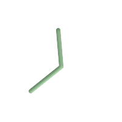 元のラインストリング |
SELECT ST_Extrude(
ST_GeomFromText('LINESTRING(50 50, 100 90, 95 150)'),0,0,10));
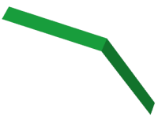 ラインストリングをZ方向に押し出したPolyhedralSurfaceZ |
名前
ST_StraightSkeleton — ジオメトリからストレートスケルトンを計算します。
概要
geometry ST_StraightSkeleton(geometry geom);

名前
ST_ApproximateMedialAxis — 面ジオメトリの近似的な中心軸を計算します。
概要
geometry ST_ApproximateMedialAxis(geometry geom);
説明
ストレートスケルトンを基に、入力された面の近似的な中心軸を返します。可能な版 (1.2.0以上)でビルドすると、SFCGAL独自APIを使います。そうでない場合はST_StraightSkeleton (遅い)のラップとなります。
Availability: 2.2.0
This method needs SFCGAL backend.
This function supports 3d and will not drop the z-index.
This function supports Polyhedral surfaces.
This function supports Triangles and Triangulated Irregular Network Surfaces (TIN).
名前
ST_MinkowskiSum — ミンコフスキー和を求めます。
概要
geometry ST_MinkowskiSum(geometry geom1, geometry geom2);
説明
ポリゴンと、ポイント、ライン、ポリゴンのいずれかとの2次元のミンコフスキー和を計算します。
二つのジオメトリAとBのミンコフスキー和はAとBのあらゆるポイントの和の集合です。ミンコフスキー和は、しばしば動作計画とCADで使われます。より詳細な情報についてWikipedia Minkowski additionをご覧ください。
一つ目の引数は2次元ジオメトリ (ポイント、ラインストリング、ポリゴン)とすることができます。3次元ジオメトリを渡すと、Zを0とした2次元に強制され、この場合は無効と考えられます。二つ目の引数は2次元ポリゴンでなければなりません。
CGAL 2D Minkowskisumを利用して実装しています。
Availability: 2.1.0
This method needs SFCGAL backend.
例
ラインストリングと円ポリゴンであって、ラインストリングがポリゴンを横切るミンコフスキー和
|
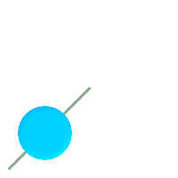 ミンコフスキー和を実行する前
|
ミンコフスキー和実行後
|
SELECT ST_MinkowskiSum(line, circle))
FROM (SELECT
ST_MakeLine(ST_Point(10, 10),ST_Point(100, 100)) As line,
ST_Buffer(ST_GeomFromText('POINT(50 50)'), 30) As circle) As foo;
-- wkt --
MULTIPOLYGON(((30 59.9999999999999,30.5764415879031 54.1472903395161,32.2836140246614 48.5194970290472,35.0559116309237 43.3328930094119,38.7867965644036 38.7867965644035,43.332893009412 35.0559116309236,48.5194970290474 32.2836140246614,54.1472903395162 30.5764415879031,60.0000000000001 30,65.8527096604839 30.5764415879031,71.4805029709527 32.2836140246614,76.6671069905881 35.0559116309237,81.2132034355964 38.7867965644036,171.213203435596 128.786796564404,174.944088369076 133.332893009412,177.716385975339 138.519497029047,179.423558412097 144.147290339516,180 150,179.423558412097 155.852709660484,177.716385975339 161.480502970953,174.944088369076 166.667106990588,171.213203435596 171.213203435596,166.667106990588 174.944088369076,
161.480502970953 177.716385975339,155.852709660484 179.423558412097,150 180,144.147290339516 179.423558412097,138.519497029047 177.716385975339,133.332893009412 174.944088369076,128.786796564403 171.213203435596,38.7867965644035 81.2132034355963,35.0559116309236 76.667106990588,32.2836140246614 71.4805029709526,30.5764415879031 65.8527096604838,30 59.9999999999999)))
ポリゴンとマルチポイントとのミンコフスキー和
|
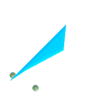 ミンコフスキー和を実行する前
|
ミンコフスキー和実行後: ポリゴンが二つになり、ポイントの位置に移動しています。
|
SELECT ST_MinkowskiSum(mp, poly)
FROM (SELECT 'MULTIPOINT(25 50,70 25)'::geometry As mp,
'POLYGON((130 150, 20 40, 50 60, 125 100, 130 150))'::geometry As poly
) As foo
-- wkt --
MULTIPOLYGON(
((70 115,100 135,175 175,225 225,70 115)),
((120 65,150 85,225 125,275 175,120 65))
)
名前
ST_ConstrainedDelaunayTriangles — 入力ジオメトリの周りの制約付きドロネー三角形を返します。
概要
geometry ST_ConstrainedDelaunayTriangles(geometry g1);
説明
入力ジオメトリの周りの制約付きドロネー三角形 (Constrained Delaunay triangulation)を返します。出力はTINです。
This method needs SFCGAL backend.
Availability: 3.0.0
This function supports 3d and will not drop the z-index.
例
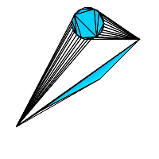 二つのポリゴンのST_ConstrainedDelaunayTriangles
select ST_ConstrainedDelaunayTriangles(
ST_Union(
'POLYGON((175 150, 20 40, 50 60, 125 100, 175 150))'::geometry,
ST_Buffer('POINT(110 170)'::geometry, 20)
)
);
| 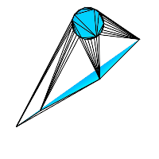 ST_DelaunayTriangles 二つのポリゴン。三角形の辺はポリゴンの境界にクロスしています。
select ST_DelaunayTriangles(
ST_Union(
'POLYGON((175 150, 20 40, 50 60, 125 100, 175 150))'::geometry,
ST_Buffer('POINT(110 170)'::geometry, 20)
)
);
|
名前
ST_3DIntersection — 3次元のインタセクトした (共有する)部分を計算します。
概要
geometry ST_3DIntersection(geometry geom1, geometry geom2);
説明
geom1とgeom2の間で共有される部分のジオメトリを返します。
Availability: 2.1.0
This method needs SFCGAL backend.
This function supports 3d and will not drop the z-index.
This function supports Polyhedral surfaces.
This function supports Triangles and Triangulated Irregular Network Surfaces (TIN).
例
PostGIS関数ST_AsX3Dを使って3次元イメージを生成し、X3Dom HTML Javascript redering libraryを使ってHTMLでの描画を行います。
SELECT ST_Extrude(ST_Buffer(ST_GeomFromText('POINT(100 90)'),
50, 'quad_segs=2'),0,0,30) AS geom1,
ST_Extrude(ST_Buffer(ST_GeomFromText('POINT(80 80)'),
50, 'quad_segs=1'),0,0,30) AS geom2;
 元の3次元ジオメトリを重ねたもの。geom2は半透明で示しています。 |
SELECT ST_3DIntersection(geom1,geom2)
FROM ( SELECT ST_Extrude(ST_Buffer(ST_GeomFromText('POINT(100 90)'),
50, 'quad_segs=2'),0,0,30) AS geom1,
ST_Extrude(ST_Buffer(ST_GeomFromText('POINT(80 80)'),
50, 'quad_segs=1'),0,0,30) AS geom2 ) As t;
 geom1とgeom2の共有部分 |
3次元ラインストリングとポリゴン
SELECT ST_AsText(ST_3DIntersection(linestring, polygon)) As wkt
FROM ST_GeomFromText('LINESTRING Z (2 2 6,1.5 1.5 7,1 1 8,0.5 0.5 8,0 0 10)') AS linestring
CROSS JOIN ST_GeomFromText('POLYGON((0 0 8, 0 1 8, 1 1 8, 1 0 8, 0 0 8))') AS polygon;
wkt
--------------------------------
LINESTRING Z (1 1 8,0.5 0.5 8)
立方体 (閉じた多面体サーフェス)と3次元ポリゴン
SELECT ST_AsText(ST_3DIntersection(
ST_GeomFromText('POLYHEDRALSURFACE Z( ((0 0 0, 0 0 1, 0 1 1, 0 1 0, 0 0 0)),
((0 0 0, 0 1 0, 1 1 0, 1 0 0, 0 0 0)), ((0 0 0, 1 0 0, 1 0 1, 0 0 1, 0 0 0)),
((1 1 0, 1 1 1, 1 0 1, 1 0 0, 1 1 0)),
((0 1 0, 0 1 1, 1 1 1, 1 1 0, 0 1 0)), ((0 0 1, 1 0 1, 1 1 1, 0 1 1, 0 0 1)) )'),
'POLYGON Z ((0 0 0, 0 0 0.5, 0 0.5 0.5, 0 0.5 0, 0 0 0))'::geometry))TIN Z (((0 0 0,0 0 0.5,0 0.5 0.5,0 0 0)),((0 0.5 0,0 0 0,0 0.5 0.5,0 0.5 0)))
二つの立体の共通部分もまた立体です (ST_Dimensionで3を返します)。
SELECT ST_AsText(ST_3DIntersection( ST_Extrude(ST_Buffer('POINT(10 20)'::geometry,10,1),0,0,30),
ST_Extrude(ST_Buffer('POINT(10 20)'::geometry,10,1),2,0,10) ));POLYHEDRALSURFACE Z (((13.3333333333333 13.3333333333333 10,20 20 0,20 20 10,13.3333333333333 13.3333333333333 10)),
((20 20 10,16.6666666666667 23.3333333333333 10,13.3333333333333 13.3333333333333 10,20 20 10)),
((20 20 0,16.6666666666667 23.3333333333333 10,20 20 10,20 20 0)),
((13.3333333333333 13.3333333333333 10,10 10 0,20 20 0,13.3333333333333 13.3333333333333 10)),
((16.6666666666667 23.3333333333333 10,12 28 10,13.3333333333333 13.3333333333333 10,16.6666666666667 23.3333333333333 10)),
((20 20 0,9.99999999999995 30 0,16.6666666666667 23.3333333333333 10,20 20 0)),
((10 10 0,9.99999999999995 30 0,20 20 0,10 10 0)),((13.3333333333333 13.3333333333333 10,12 12 10,10 10 0,13.3333333333333 13.3333333333333 10)),
((12 28 10,12 12 10,13.3333333333333 13.3333333333333 10,12 28 10)),
((16.6666666666667 23.3333333333333 10,9.99999999999995 30 0,12 28 10,16.6666666666667 23.3333333333333 10)),
((10 10 0,0 20 0,9.99999999999995 30 0,10 10 0)),
((12 12 10,11 11 10,10 10 0,12 12 10)),((12 28 10,11 11 10,12 12 10,12 28 10)),
((9.99999999999995 30 0,11 29 10,12 28 10,9.99999999999995 30 0)),((0 20 0,2 20 10,9.99999999999995 30 0,0 20 0)),
((10 10 0,2 20 10,0 20 0,10 10 0)),((11 11 10,2 20 10,10 10 0,11 11 10)),((12 28 10,11 29 10,11 11 10,12 28 10)),
((9.99999999999995 30 0,2 20 10,11 29 10,9.99999999999995 30 0)),((11 11 10,11 29 10,2 20 10,11 11 10)))名前
ST_3DDifference — 3次元の差分を計算します。
概要
geometry ST_3DDifference(geometry geom1, geometry geom2);
説明
geom2に含まれないgeom1の一部を返します
Availability: 2.2.0
This method needs SFCGAL backend.
This function supports 3d and will not drop the z-index.
This function supports Polyhedral surfaces.
This function supports Triangles and Triangulated Irregular Network Surfaces (TIN).
例
PostGIS関数ST_AsX3Dを使って3次元イメージを生成し、X3Dom HTML Javascript redering libraryを使ってHTMLでの描画を行います。
SELECT ST_Extrude(ST_Buffer(ST_GeomFromText('POINT(100 90)'),
50, 'quad_segs=2'),0,0,30) AS geom1,
ST_Extrude(ST_Buffer(ST_GeomFromText('POINT(80 80)'),
50, 'quad_segs=1'),0,0,30) AS geom2;
元の3次元ジオメトリを重ねたもの。geom2は削除部分にあたります。 |
SELECT ST_3DDifference(geom1,geom2)
FROM ( SELECT ST_Extrude(ST_Buffer(ST_GeomFromText('POINT(100 90)'),
50, 'quad_segs=2'),0,0,30) AS geom1,
ST_Extrude(ST_Buffer(ST_GeomFromText('POINT(80 80)'),
50, 'quad_segs=1'),0,0,30) AS geom2 ) As t;
geom2を削除した後に残るもの |
名前
ST_3DUnion — 3次元の結合を計算します。
概要
geometry ST_3DUnion(geometry geom1, geometry geom2);
説明
Availability: 2.2.0
This method needs SFCGAL backend.
This function supports 3d and will not drop the z-index.
This function supports Polyhedral surfaces.
This function supports Triangles and Triangulated Irregular Network Surfaces (TIN).
例
PostGIS関数ST_AsX3Dを使って3次元イメージを生成し、X3Dom HTML Javascript redering libraryを使ってHTMLでの描画を行います。
SELECT ST_Extrude(ST_Buffer(ST_GeomFromText('POINT(100 90)'),
50, 'quad_segs=2'),0,0,30) AS geom1,
ST_Extrude(ST_Buffer(ST_GeomFromText('POINT(80 80)'),
50, 'quad_segs=1'),0,0,30) AS geom2;
元の3次元ジオメトリを重ねたもの。geom2は半透明で示しています。 |
SELECT ST_3DUnion(geom1,geom2)
FROM ( SELECT ST_Extrude(ST_Buffer(ST_GeomFromText('POINT(100 90)'),
50, 'quad_segs=2'),0,0,30) AS geom1,
ST_Extrude(ST_Buffer(ST_GeomFromText('POINT(80 80)'),
50, 'quad_segs=1'),0,0,30) AS geom2 ) As t;
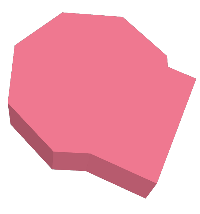 geom1とgeom2の結合 |
名前
ST_3DArea — 3次元の面ジオメトリの面積を計算します。立体の場合は0を返します。
概要
floatST_3DArea(geometry geom1);
説明
Availability: 2.1.0
This method needs SFCGAL backend.
This function supports 3d and will not drop the z-index.
This function supports Polyhedral surfaces.
This function supports Triangles and Triangulated Irregular Network Surfaces (TIN).
例
ご注意: デフォルトでは、WKTから生成されたPolyhedralSurfaceは面ジオメトリで、立体ではありません。サーフェス面を持ちます。立体に変換すると、面を持ちません。
SELECT ST_3DArea(geom) As cube_surface_area,
ST_3DArea(ST_MakeSolid(geom)) As solid_surface_area
FROM (SELECT 'POLYHEDRALSURFACE( ((0 0 0, 0 0 1, 0 1 1, 0 1 0, 0 0 0)),
((0 0 0, 0 1 0, 1 1 0, 1 0 0, 0 0 0)),
((0 0 0, 1 0 0, 1 0 1, 0 0 1, 0 0 0)),
((1 1 0, 1 1 1, 1 0 1, 1 0 0, 1 1 0)),
((0 1 0, 0 1 1, 1 1 1, 1 1 0, 0 1 0)),
((0 0 1, 1 0 1, 1 1 1, 0 1 1, 0 0 1)) )'::geometry) As f(geom);
cube_surface_area | solid_surface_area
-------------------+--------------------
6 | 0 名前
ST_Tesselate — ポリゴンまたは多面体サーフェスのテッセレーションを計算し、TINまたはTINコレクションを返します。
概要
geometry ST_Tesselate(geometry geom);
説明
(MULTI)POLYGONまたはPOLYHEDRALSURFACEのような面を入力に取り、三角形を使ったテッセレーション処理を通してTIN表現を返します。
Availability: 2.1.0
This method needs SFCGAL backend.
This function supports 3d and will not drop the z-index.
This function supports Polyhedral surfaces.
This function supports Triangles and Triangulated Irregular Network Surfaces (TIN).
例
SELECT ST_GeomFromText('POLYHEDRALSURFACE Z( ((0 0 0, 0 0 1, 0 1 1, 0 1 0, 0 0 0)),
((0 0 0, 0 1 0, 1 1 0, 1 0 0, 0 0 0)), ((0 0 0, 1 0 0, 1 0 1, 0 0 1, 0 0 0)),
((1 1 0, 1 1 1, 1 0 1, 1 0 0, 1 1 0)),
((0 1 0, 0 1 1, 1 1 1, 1 1 0, 0 1 0)), ((0 0 1, 1 0 1, 1 1 1, 0 1 1, 0 0 1)) )');
 元の立方体 |
SELECT ST_Tesselate(ST_GeomFromText('POLYHEDRALSURFACE Z( ((0 0 0, 0 0 1, 0 1 1, 0 1 0, 0 0 0)),
((0 0 0, 0 1 0, 1 1 0, 1 0 0, 0 0 0)), ((0 0 0, 1 0 0, 1 0 1, 0 0 1, 0 0 0)),
((1 1 0, 1 1 1, 1 0 1, 1 0 0, 1 1 0)),
((0 1 0, 0 1 1, 1 1 1, 1 1 0, 0 1 0)), ((0 0 1, 1 0 1, 1 1 1, 0 1 1, 0 0 1)) )'));
ST_AsTextの出力: TIN Z (((0 0 0,0 0 1,0 1 1,0 0 0)),((0 1 0,0 0 0,0 1 1,0 1 0)),
((0 0 0,0 1 0,1 1 0,0 0 0)),
((1 0 0,0 0 0,1 1 0,1 0 0)),((0 0 1,1 0 0,1 0 1,0 0 1)),
((0 0 1,0 0 0,1 0 0,0 0 1)),
((1 1 0,1 1 1,1 0 1,1 1 0)),((1 0 0,1 1 0,1 0 1,1 0 0)),
((0 1 0,0 1 1,1 1 1,0 1 0)),((1 1 0,0 1 0,1 1 1,1 1 0)),
((0 1 1,1 0 1,1 1 1,0 1 1)),((0 1 1,0 0 1,1 0 1,0 1 1)))
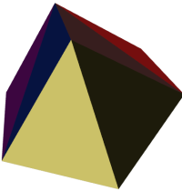 彩色した三角形によるテッセレーションを施した立方体 |
SELECT 'POLYGON (( 10 190, 10 70, 80 70, 80 130, 50 160, 120 160, 120 190, 10 190 ))'::geometry;
元のポリゴン |
SELECT
ST_Tesselate('POLYGON (( 10 190, 10 70, 80 70, 80 130, 50 160, 120 160, 120 190, 10 190 ))'::geometry);
ST_AsTextの出力: TIN(((80 130,50 160,80 70,80 130)),((50 160,10 190,10 70,50 160)),
((80 70,50 160,10 70,80 70)),((120 160,120 190,50 160,120 160)),
((120 190,10 190,50 160,120 190)))
テッセレーションを施したポリゴン |
名前
ST_Volume — 3次元立体の体積を計算します。面ジオメトリは (閉じていても)0を返します。
概要
float ST_Volume(geometry geom1);
説明
Availability: 2.2.0
This method needs SFCGAL backend.
This function supports 3d and will not drop the z-index.
This function supports Polyhedral surfaces.
This function supports Triangles and Triangulated Irregular Network Surfaces (TIN).
例
WKTで閉じた面を生成した時、それは立体でなく面として扱われるます。立体にするにはST_MakeSolidを使います。面ジオメトリは堆積を持ちません。例を挙げます。
SELECT ST_Volume(geom) As cube_surface_vol,
ST_Volume(ST_MakeSolid(geom)) As solid_surface_vol
FROM (SELECT 'POLYHEDRALSURFACE( ((0 0 0, 0 0 1, 0 1 1, 0 1 0, 0 0 0)),
((0 0 0, 0 1 0, 1 1 0, 1 0 0, 0 0 0)),
((0 0 0, 1 0 0, 1 0 1, 0 0 1, 0 0 0)),
((1 1 0, 1 1 1, 1 0 1, 1 0 0, 1 1 0)),
((0 1 0, 0 1 1, 1 1 1, 1 1 0, 0 1 0)),
((0 0 1, 1 0 1, 1 1 1, 0 1 1, 0 0 1)) )'::geometry) As f(geom);
cube_surface_vol | solid_surface_vol
------------------+-------------------
0 | 1
名前
ST_MakeSolid — ジオメトリを立体にキャストします。チェックはしません。妥当な立体を得るには、入力ジオメトリは閉じた多面体サーフェスか閉じたTINでなければなりません。
概要
geometryST_MakeSolid(geometry geom1);
- ST_Buffer — あるジオメトリからの距離が指定された距離以下となる点全ての集合となるジオメトリを返します。
- ST_BuildArea — 与えられたジオメトリの構成ラインから面ジオメトリを生成します。
- ST_Centroid — ジオメトリの幾何学的重心を返します。
- ST_ConcaveHull — 全ての入力ジオメトリの頂点を囲むことができる凹多角形のジオメトリを計算します。
- ST_ConvexHull — ジオメトリの凸包を計算します。
- ST_DelaunayTriangles — ジオメトリの頂点のドローネ三角形を返します。
- ST_FilterByM — M値に基づいて頂点を削除します。
- ST_GeneratePoints — ポリゴン内やマルチポリゴン内にランダムなポイントを生成します。
- ST_GeometricMedian — マルチポイントの幾何学的中央値を返します。
- ST_LineMerge — MULTILINESTRINGを縫い合わせて形成したラインを返します。
- ST_MaximumInscribedCircle — ジオメトリに完全に含まれる最大の円を計算します。
- ST_MinimumBoundingCircle — 入力ジオメトリを含む最小の円を返します。
- ST_MinimumBoundingRadius — ジオメトリを完全に包含する最小円の中心ポイントと半径を返します。
- ST_OrientedEnvelope — ジオメトリを囲む最小の回転四角形を返します。
- ST_OffsetCurve — 与えられた距離と方面に入力ラインをずらしたラインを返します。
- ST_PointOnSurface — ポリゴン内またはジオメトリ上にあるのが保証されたポイントを返します。
- ST_Polygonize — ジオメトリ集合のラインから形成されるポリゴンのコレクションを計算します。
- ST_ReducePrecision — 全ての与えられたグリッド許容値に丸められたポイントからなる妥当なジオメトリを返します。
- ST_SharedPaths — 二つのLINESTRING/MULTILINESTRINGの入力が共有するパスのコレクションを返します。
- ST_Simplify — Douglas-Peukerアルゴリズムを使用して、与えられたジオメトリを簡略化したものを返します。
- ST_SimplifyPreserveTopology — Douglas-Peukerアルゴリズムを使用して、与えられたジオメトリを簡略化したものを返します。
- ST_SimplifyVW — Visvalingam-Whyattアルゴリズムを使用して、入力ジオメトリを簡略化したジオメトリを返します。
- ST_ChaikinSmoothing — チャイキンのアルゴリズムを使って、与えられたジオメトリの平滑化されたものを返します。
- ST_SetEffectiveArea — Visvalingam-Whyattアルゴリズムを使って有効範囲となる個々の頂点を置きます。
- ST_VoronoiLines — ジオメトリの頂点からボロノイ図のセルを返します。
- ST_VoronoiPolygons — ジオメトリの頂点からボロノイ図のセルを返します。
名前
ST_Buffer — あるジオメトリからの距離が指定された距離以下となる点全ての集合となるジオメトリを返します。
概要
geometry ST_Buffer(geometry g1, float radius_of_buffer, text buffer_style_parameters = '');
geometry ST_Buffer(geometry g1, float radius_of_buffer, integer num_seg_quarter_circle);
geography ST_Buffer(geography g1, float radius_of_buffer, text buffer_style_parameters);
geography ST_Buffer(geography g1, float radius_of_buffer, integer num_seg_quarter_circle);
説明
あるジオメトリ/ジオグラフィからの距離が指定された距離以下となる全ての点を表現するPOLYGONまたはMULTIPOLYGONを計算します。距離に負数を指定すると、ジオメトリは拡大されずに縮小されます。負の距離はポリゴンを完全に縮退させる可能性があり、その場合には、POLYGON EMPTYが返ります。ポイントとラインの負の距離は常に空を返します。
ジオメトリの場合、指定される距離の単位は、ジオメトリの空間参照系の単位です。ジオグラフィの場合、指定される距離の単位はメートルです。
3番目のパラメータは任意で、バッファの精度とスタイルを扱います。バッファの円弧の精度は四分の一円の近似に使用される辺の数です (デフォルトは8)。バッファのスタイルは キー=値 のペアを空白区切りでリストにして指定します。キーは次の通りです。
'quad_segs=#' : 四分の一円近似に使う辺の数 (デフォルトは8)。
'endcap=round|flat|square' : 終端スタイル (デフォルトは "round")。'butt'は'flat'の同義語として受け付けます。
'join=round|mitre|bevel' : 接続スタイル (デフォルトは"round")。'miter'も'mitre'の同義語として受け付けます。
'mitre_limit=#.#' : マイター比 (訳注: 継ぎ目の内側と外側の距離と線幅との比)の最大値 (継ぎ目スタイルがmiterである場合のみ有効)。'miter_limit'は'mitre_limit'の同義語として受け付けます。
'side=both|left|right' : 'left'または'right'については、線の方向から見た相対的なサイドで、ジオメトリの片側バッファを実行します。これはLINESTRINGジオメトリにだけ関連して、POINTまたはPOLYGONジオメトリには影響がありません。デフォルトでは終端スタイルは四角形です。
| |
ジオグラフィでは、この関数はジオメトリ実装をラップした関数です。ジオグラフィオブジェクトおｎバウンディングボックスに最も適した平面空間参照系を決定します (UTM、北極南極のランベルト正積方位図法 (LAEA)、最後はメルカトルを試していきます)。バッファは平面空間上で計算され、WGS84に戻されます。入力オブジェクトがUTMゾーンより非常に大きい場合や日付変更線を超える場合には、望ましくない振る舞いになる場合があります。 |
| |
バッファ出力は常に妥当なポリゴンジオメトリです。バッファは不正な入力を処理できるので、不正なポリゴンを修復する方法として、距離0のバッファリングが使われます。同じ目的の関数としては???が使われます。 |
| |
バッファ作成は時々、距離内にある地物を検索する際に使われます。この使い方については、???の方が効率的です。 |
| |
この関数はZ値を無視します。この関数を3次元ジオメトリ上で使用したとしても、常に2次元の結果となります。 |
Enhanced: 2.5.0 - ST_Bufferのジオメトリ対応版が強化され、バッファを施す側をside=both|left|rightで指定できるようになりました。
Availability: 1.5 - ST_Bufferが強化され、様々な終端と継ぎ目に対応するようになりました。たとえば、道路ラインストリングを道路ポリゴンに変換する際に終端を丸でなく平面や四角で処理したい場合などに使えます。ジオグラフィ用の薄いラッパが追加されました。
GEOSモジュールで実現しています。
This method implements the OGC Simple Features
Implementation Specification for SQL 1.1. s2.1.1.3
This method implements the SQL/MM specification. SQL-MM 3: 5.1.17
例
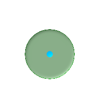 quad_segs=8 (デフォルト)
SELECT ST_Buffer(
ST_GeomFromText('POINT(100 90)'),
50, 'quad_segs=8');
| 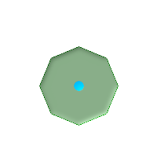 quad_segs=2 (不十分)
SELECT ST_Buffer(
ST_GeomFromText('POINT(100 90)'),
50, 'quad_segs=2');
| |
endcap=round join=round (デフォルト)
SELECT ST_Buffer(
ST_GeomFromText(
'LINESTRING(50 50,150 150,150 50)'
), 10, 'endcap=round join=round');
| 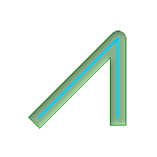 endcap=square
SELECT ST_Buffer(
ST_GeomFromText(
'LINESTRING(50 50,150 150,150 50)'
), 10, 'endcap=square join=round');
| 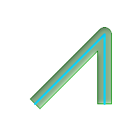 endcap=flat
SELECT ST_Buffer(
ST_GeomFromText(
'LINESTRING(50 50,150 150,150 50)'
), 10, 'endcap=flat join=round');
|
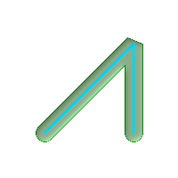 join=bevel
SELECT ST_Buffer(
ST_GeomFromText(
'LINESTRING(50 50,150 150,150 50)'
), 10, 'join=bevel');
| 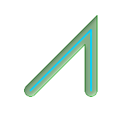 join=mitre mitre_limit=5.0 (デフォルトの最大マイター比)
SELECT ST_Buffer(
ST_GeomFromText(
'LINESTRING(50 50,150 150,150 50)'
), 10, 'join=mitre mitre_limit=5.0');
| 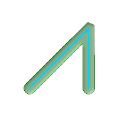 join=mitre mitre_limit=1
SELECT ST_Buffer(
ST_GeomFromText(
'LINESTRING(50 50,150 150,150 50)'
), 10, 'join=mitre mitre_limit=1.0');
|
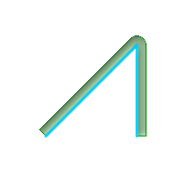 side=left
SELECT ST_Buffer(
ST_GeomFromText(
'LINESTRING(50 50,150 150,150 50)'
), 10, 'side=left');
| 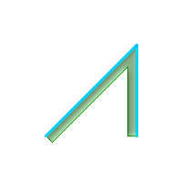 side=right
SELECT ST_Buffer(
ST_GeomFromText(
'LINESTRING(50 50,150 150,150 50)'
), 10, 'side=right');
| 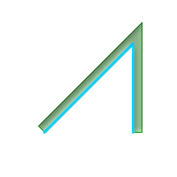 side=left join=mitre
SELECT ST_Buffer(
ST_GeomFromText(
'LINESTRING(50 50,150 150,150 50)'
), 10, 'side=left join=mitre');
|
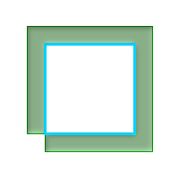 右回り、ポリゴン境界は左
SELECT ST_Buffer(
ST_ForceRHR(
ST_Boundary(
ST_GeomFromText(
'POLYGON ((50 50, 50 150, 150 150, 150 50, 50 50))'))),
), 20, 'side=left');
| 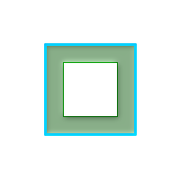 右回り、ポリゴン境界は右
SELECT ST_Buffer(
ST_ForceRHR(
ST_Boundary(
ST_GeomFromText(
'POLYGON ((50 50, 50 150, 150 150, 150 50, 50 50))'))
), 20,'side=right')
|
-- ポイントに対する近似円バッファ
-- 4分の1円を2点で近似するようポイントに施したバッファは8辺のポリゴンです。
-- (ダイアグラム参照)
SELECT ST_NPoints(ST_Buffer(ST_GeomFromText('POINT(100 90)'), 50)) As promisingcircle_pcount,
ST_NPoints(ST_Buffer(ST_GeomFromText('POINT(100 90)'), 50, 2)) As lamecircle_pcount;
promisingcircle_pcount | lamecircle_pcount
------------------------+-------------------
33 | 9
-- 手軽だけれども不十分な円(4分の1円で2点だけの八角形)
-- 次に示すのは100メートルの八角形です。
-- 座標系は、元はNAD 83経度緯度で、
-- メートル単位マサチューセッツ州平面に変換してから、
-- メートルでバッファを取っています。
SELECT ST_AsText(ST_Buffer(
ST_Transform(
ST_SetSRID(ST_Point(-71.063526, 42.35785),4269), 26986)
,100,2)) As octagon;
----------------------
POLYGON((236057.59057465 900908.759918696,236028.301252769 900838.049240578,235
957.59057465 900808.759918696,235886.879896532 900838.049240578,235857.59057465
900908.759918696,235886.879896532 900979.470596815,235957.59057465 901008.759918
696,236028.301252769 900979.470596815,236057.59057465 900908.759918696))
名前
ST_BuildArea — 与えられたジオメトリの構成ラインから面ジオメトリを生成します。
概要
geometry ST_BuildArea(geometry geom);
説明
与えられたジオメトリの構成ラインから面ジオメトリを生成します。入力としてLINESTRING, MULTILINESTRING, POLYGON, MULTIPOLYGON, GEOMETRYCOLLECTIONを取ることができます。返り値は、ポリゴンまたはマルチポリゴンで、どちらになるかは入力に依存します。入力構成ラインがポリゴンを形成しない場合はNULLを返します。
この関数は全ての内部ジオメトリが穴を表現すると仮定します。
| |
この関数が正しく動作するには、入力ラインに正しくノードが作成されている必要があります。 |
Availability: 1.1.0
例
 ドーナツを生成します。
-- ポリゴンを使用
SELECT ST_BuildArea(ST_Collect(smallc,bigc))
FROM (SELECT
ST_Buffer(
ST_GeomFromText('POINT(100 90)'), 25) As smallc,
ST_Buffer(ST_GeomFromText('POINT(100 90)'), 50) As bigc) As foo;
-- ラインストリングを使用
SELECT ST_BuildArea(ST_Collect(smallc,bigc))
FROM (SELECT
ST_ExteriorRing(ST_Buffer(
ST_GeomFromText('POINT(100 90)'), 25)) As smallc,
ST_ExteriorRing(ST_Buffer(ST_GeomFromText('POINT(100 90)'), 50)) As bigc) As foo;
|
名前
ST_Centroid — ジオメトリの幾何学的重心を返します。
概要
geometry ST_Centroid(geometry g1);
geography ST_Centroid(geography g1, boolean use_spheroid=true);
説明
ジオメトリの幾何学的重心を計算します。[MULTI]POINTに対しては、入力座標の算術平均として計算されます。 [MULTI]LINESTRINGに対しては、各辺の重み付き長さとして計算されます。 [MULTI]POLYGONに対しては、面積から計算されます。空ジオメトリが与えられた場合には、空のGEOMETRYCOLLECTIONが返されます。NULLが与えられた場合には、NULLが返されます。CIRCULARSTRINGまたはCOMPOUNDCURVEが与えられた場合には、まずCurveToLineで直線に変換されてから、LINESTRINGと同じ計算を行います。
入力が混合次元の場合には、結果は最大次元のジオメトリの重心と同じになります (低次元ジオメトリは重心に0の「重み」を与えるためです)。
ポリゴンジオメトリに対しては、重心は必ずしもポリゴンの内部にあるわけではないことに注意して下さい。たとえば、下図のCの形のポリゴンの重心をご覧下さい。ポリゴン内部にポイントがあることを保障するにはST_PointOnSurfaceを使います。
New in 2.3.0 : CIRCULARSTRINGとCOMPOUNDCURVEに対応するようになりました (CurveToLineを使います)。
Availability: 2.4.0 ジオグラフィが導入されました。
This method implements the OGC Simple Features
Implementation Specification for SQL 1.1.
This method implements the SQL/MM specification. SQL-MM 3: 8.1.4, 9.5.5
例
次に示す図では、緑点が入力ジオメトリの重心です。
|
|

| 
|
SELECT ST_AsText(ST_Centroid('MULTIPOINT ( -1 0, -1 2, -1 3, -1 4, -1 7, 0 1, 0 3, 1 1, 2 0, 6 0, 7 8, 9 8, 10 6 )'));
st_astext
------------------------------------------
POINT(2.30769230769231 3.30769230769231)
(1 row)
SELECT ST_AsText(ST_centroid(g))
FROM ST_GeomFromText('CIRCULARSTRING(0 2, -1 1,0 0, 0.5 0, 1 0, 2 1, 1 2, 0.5 2, 0 2)') AS g ;
------------------------------------------
POINT(0.5 1)
SELECT ST_AsText(ST_centroid(g))
FROM ST_GeomFromText('COMPOUNDCURVE(CIRCULARSTRING(0 2, -1 1,0 0),(0 0, 0.5 0, 1 0),CIRCULARSTRING( 1 0, 2 1, 1 2),(1 2, 0.5 2, 0 2))' ) AS g;
------------------------------------------
POINT(0.5 1)
名前
ST_ConcaveHull — 全ての入力ジオメトリの頂点を囲むことができる凹多角形のジオメトリを計算します。
概要
geometry ST_ConcaveHull(geometry geom, float target_percent, boolean allow_holes = false);
説明
ジオメトリの凹包は入力ジオメトリを囲む凹多角形のジオメトリを表現します。返り値は単一のポリゴン、ラインストリングまたはポイントです。任意引数allow_holesをTRUEに指定しない限り、穴を持ちません。
凹包はジオメトリ集合の収縮包装で得られるジオメトリとみることができます。ジオメトリの周囲にゴムバンドをかけたような凸包と違う点です。凸包より計算時間がかかりますが、一般により小さい面積で、より入力ジオメトリに対して自然な境界を表現します。
target_percentは、この関数が漸近を試みる、凸包の面積の百分率です。target_percentに1を与えると、凸包と同じ結果が得られます。 target_percentが0から0.99の間では、凸包より小さい面積の結果を返します。
| |
目標割合を小さくすると、凹包処理が長くなり、トポロジ例外が発生しやすくなります。蓄積される浮動小数点数とポイントの数もまた多くなります。最初に0.99で実行してみて下さい。普通は非常に速く、時々凸包と同じ速さです。99%縮小ではほとんどの場合行き過ぎになるので、通常は99%縮小より良い結果になります。次に0.98で実行すると、2乗のオーダーで遅くなります。ST_ConcaveHull実行後に、精度と浮動小数点数を減らすために、ST_SimplifyPreserveTopologyまたはST_SnapToGridを使用します。ST_SnapToGridは少し早くなりますが、不正なジオメトリが得られることがあります。ST_SimplifyPreserveTopologyは常にジオメトリの妥当性を確保します。 |
集約関数ではありません。ジオメトリ集合の凹包を計算するには、ST_Collectまたは???を使います (ST_ConcaveHull(ST_Collect(somepointfield), 0.80)等)。
| |
ポイントまたはラインストリングの集合を使うには |
現実世界の例と技術面でのしっかりした説明は、http://www.bostongis.com/postgis_concavehull.snippetにあります。
Oracle 11G R2で導入された凹包のデモンストレーションに関するSimon Greenerさんの記事も見てください。http://www.spatialdbadvisor.com/oracle_spatial_tips_tricks/172/concave-hull-geometries-in-oracle-11gr2にあります。凸包に対する目標割合を0.75にした際の形状がSimonさんOracleのSDO_CONCAVEHULL_BOUNDARYで得た形状と似ています。
GEOSモジュールによって実現しています。
Availability: 2.0.0
例
-- 観察ポイントを基に感染域の見積もりを得ます
SELECT d.disease_type,
ST_ConcaveHull(ST_Collect(d.pnt_geom), 0.99) As geom
FROM disease_obs As d
GROUP BY d.disease_type;
縮小目標割合100%にした場合の2ポリゴンのST_ConcaveHull
-- 目標縮小率を100%にした (凸包と同じとなり、縮小していません)場合の凹包で
-- 覆ったジオメトリ
SELECT
ST_ConcaveHull(
ST_Union(ST_GeomFromText('POLYGON((175 150, 20 40,
50 60, 125 100, 175 150))'),
ST_Buffer(ST_GeomFromText('POINT(110 170)'), 20)
), 1)
As convexhull;
| 凸包に対する縮小目標割合を90%にした凹包で覆われるジオメトリ
-- 目標縮小率を90%にした 場合の凹包で覆ったジオメトリ
SELECT
ST_ConcaveHull(
ST_Union(ST_GeomFromText('POLYGON((175 150, 20 40,
50 60, 125 100, 175 150))'),
ST_Buffer(ST_GeomFromText('POINT(110 170)'), 20)
), 0.9)
As target_90;
|
凸包で覆われたL字型のポイント群
-- 42ポイントでL字型を形成するテーブルを生成
SELECT (ST_DumpPoints(ST_GeomFromText(
'MULTIPOINT(14 14,34 14,54 14,74 14,94 14,114 14,134 14,
150 14,154 14,154 6,134 6,114 6,94 6,74 6,54 6,34 6,
14 6,10 6,8 6,7 7,6 8,6 10,6 30,6 50,6 70,6 90,6 110,6 130,
6 150,6 170,6 190,6 194,14 194,14 174,14 154,14 134,14 114,
14 94,14 74,14 54,14 34,14 14)'))).geom
INTO TABLE l_shape;
SELECT ST_ConvexHull(ST_Collect(geom))
FROM l_shape;
|  凸包に対する縮小目標割合を99%としたL字型のポイント群の凹包
SELECT ST_ConcaveHull(ST_Collect(geom), 0.99)
FROM l_shape;
|
凸包に対する縮小目標割合を80%としたL字型のポイント群の凹包
-- 凸包に対する縮小目標割合を80%としたL字型のポイント群の凹包
SELECT ST_ConcaveHull(ST_Collect(geom), 0.80)
FROM l_shape;
|
 凸包に覆われたマルチラインストリング
 凸包に対する縮小目標割合を99% (第1段階)とした凹包に覆われたマルチラインストリング
SELECT ST_ConcaveHull(ST_GeomFromText('MULTILINESTRING((106 164,30 112,74 70,82 112,130 94,
130 62,122 40,156 32,162 76,172 88),
(132 178,134 148,128 136,96 128,132 108,150 130,
170 142,174 110,156 96,158 90,158 88),
(22 64,66 28,94 38,94 68,114 76,112 30,
132 10,168 18,178 34,186 52,184 74,190 100,
190 122,182 148,178 170,176 184,156 164,146 178,
132 186,92 182,56 158,36 150,62 150,76 128,88 118))'),0.99)
|
名前
ST_ConvexHull — ジオメトリの凸包を計算します。
概要
geometry ST_ConvexHull(geometry geomA);
説明
ジオメトリの凸包を計算します。凸包は、入力ジオメトリのすべてを囲む最小の凸ジオメトリです。
凸包は、ジオメトリ集合にゴムバンドをかけて得られたジオメトリとみることができます。ジオメトリの収縮包装に似ている凹包と違う点です。凸包は、しばしば観察値のポイントの集合を基にして、影響を受ける範囲を決定するのに使用します。
凸包は一般的にポリゴンです。二つ以上の同一線上のポイントの凸包は、2点のラインストリングになります。一つ以上の同一ポイントの凸包はポイントです。
集約関数ではありません。ジオメトリ集合の凸包を計算するには、ジオメトリ集合をジオメトリコレクションに集約するST_Collectを使います (ST_ConvexHull(ST_Collect(geom))等)。
GEOSモジュールによって実現しています。
This method implements the OGC Simple Features
Implementation Specification for SQL 1.1. s2.1.1.3
This method implements the SQL/MM specification. SQL-MM 3: 5.1.16
This function supports 3d and will not drop the z-index.
例
マルチラインストリングとマルチポイントの凸包
SELECT ST_AsText(ST_ConvexHull(
ST_Collect(
ST_GeomFromText('MULTILINESTRING((100 190,10 8),(150 10, 20 30))'),
ST_GeomFromText('MULTIPOINT(50 5, 150 30, 50 10, 10 10)')
)) );
---st_astext--
POLYGON((50 5,10 8,10 10,100 190,150 30,150 10,50 5))
ST_Collectを使ってジオメトリ集合の凸包を計算します。
-- 観測ポイントに基づく感染面積の推定
SELECT d.disease_type,
ST_ConvexHull(ST_Collect(d.geom)) As geom
FROM disease_obs As d
GROUP BY d.disease_type;
名前
ST_DelaunayTriangles — ジオメトリの頂点のドローネ三角形を返します。
概要
geometry ST_DelaunayTriangles(geometry g1, float tolerance, int4 flags);
説明
入力ジオメトリの頂点の周りのドロネー三角形を返します。出力はポリゴンのコレクション (flags=0の場合)、MULTILINESTRING (flags=1の場合)、TIN(flags=2の場合)のいずれかになります。いずれの場合も、入力の頂点を一緒にスナップするために許容誤差が使われます。
GEOSモジュールで実現しています。
Availability: 2.1.0
This function supports 3d and will not drop the z-index.
This function supports Triangles and Triangulated Irregular Network Surfaces (TIN).
2次元の例
 元のポリゴン -- 元のジオメトリ --
ST_Union(ST_GeomFromText('POLYGON((175 150, 20 40,
50 60, 125 100, 175 150))'),
ST_Buffer(ST_GeomFromText('POINT(110 170)'), 20)
) |
 二つのポリゴンのST_DelaunayTriangles: ポリゴンごとに異なる色をつけたドロネー三角形ポリゴン
-- マルチラインストリングによる三角形を載せたジオメトリ
SELECT
ST_DelaunayTriangles(
ST_Union(ST_GeomFromText('POLYGON((175 150, 20 40,
50 60, 125 100, 175 150))'),
ST_Buffer(ST_GeomFromText('POINT(110 170)'), 20)
))
As dtriag;
|
 マルチラインストリングにしたドロネー三角形
SELECT
ST_DelaunayTriangles(
ST_Union(ST_GeomFromText('POLYGON((175 150, 20 40,
50 60, 125 100, 175 150))'),
ST_Buffer(ST_GeomFromText('POINT(110 170)'), 20)
),0.001,1)
As dtriag;
|
45個のポイントから生成した55個のドロネー三角形
-- L字型に42個のポイントを持つテーブルを生成
SELECT (ST_DumpPoints(ST_GeomFromText(
'MULTIPOINT(14 14,34 14,54 14,74 14,94 14,114 14,134 14,
150 14,154 14,154 6,134 6,114 6,94 6,74 6,54 6,34 6,
14 6,10 6,8 6,7 7,6 8,6 10,6 30,6 50,6 70,6 90,6 110,6 130,
6 150,6 170,6 190,6 194,14 194,14 174,14 154,14 134,14 114,
14 94,14 74,14 54,14 34,14 14)'))).geom
INTO TABLE l_shape;
-- 個別の三角形ポリゴンとして出力
SELECT ST_AsText((ST_Dump(geom)).geom) As wkt
FROM ( SELECT ST_DelaunayTriangles(ST_Collect(geom)) As geom
FROM l_shape) As foo;
---wkt ---
POLYGON((6 194,6 190,14 194,6 194))
POLYGON((14 194,6 190,14 174,14 194))
POLYGON((14 194,14 174,154 14,14 194))
POLYGON((154 14,14 174,14 154,154 14))
POLYGON((154 14,14 154,150 14,154 14))
POLYGON((154 14,150 14,154 6,154 14))
:
:
|
名前
ST_FilterByM — M値に基づいて頂点を削除します。
概要
geometry ST_FilterByM(geometry geom, double precision min, double precision max = null, boolean returnM = false);
説明
M値に基づいた頂点ポイントのフィルタリングを行います。返されるジオメトリは最小値(min値)以上かつ最大値(max値)以下のM値を持つポイントだけでできています。最大値の引数が指定されていない場合には、最小値のみ考慮されます。第4引数が指定されていない場合には、M値は結果ジオメトリに存在しません。結果ジオメトリの頂点ポイントの数が、ジオメトリを構成するに必要な数に達しない場合には、空ジオメトリが返されます。ジオメトリコレクション内の、十分なポイントを持たないジオメトリ要素は消えます。
この関数は主にST_SetEffectiveAreaとの併用を意図しています。ST_SetEffectiveAreaは頂点の有効面積をM値に設定します。ST_FilterByMによるフィルタリングだけで、他の計算なしに簡略化されたジオメトリを得られます。
| |
ポイント数が基準を満たすのに十分でない時のST_SimplifyVWの返り値とST_FilterByMの返り値とで違いがあります。ST_FilterByMは空ジオメトリを返し、ST_SimplifyVWは十分なポイントを持つジオメトリを返します。 |
| |
返されるジオメトリは不正である場合があることに注意して下さい。 |
| |
この関数は全ての次元を返し、Z値もM値も残ります。 |
Availability: 2.5.0
名前
ST_GeneratePoints — ポリゴン内やマルチポリゴン内にランダムなポイントを生成します。
概要
geometry ST_GeneratePoints( g geometry , npoints integer );
geometry ST_GeneratePoints( geometry g , integer npoints , integer seed );

名前
ST_GeometricMedian — マルチポイントの幾何学的中央値を返します。
概要
geometry ST_GeometricMedian ( geometry geom, float8 tolerance = NULL, int max_iter = 10000, boolean fail_if_not_converged = false);
説明
マルチポイントジオメトリの幾何中央値の近似値を、Weiszfeldアルゴリズムを使って計算します。幾何中央値は、入力ポイントとの距離の合計を最小にするポイントです。幾何中央値によって、重心よりもはみ出しにくい中心測定ができます。
このアルゴリズムでは、成功した回次の間の距離の変化が、toleranceパラメータよりも小さくなるまで繰り返します。max_iterations回を超えた場合には、関数はfail_if_not_convergedをFALSEに指定している (デフォルト)場合を除いて、エラーを生成して終了します。
tolerance値が渡されていない場合には、デフォルトの許容値は、入力ジオメトリの範囲を基に計算されます。
存在する場合には、入力ポイントのM値は相対的な重みに解釈されます。
Availability: 2.3.0
Enhanced: 2.5.0 ポイントの重みとしてのM値の対応が追加されました。
This function supports 3d and will not drop the z-index.
This function supports M coordinates.
例
4点のマルチポイント (黄色の点)から得た重心 (青緑色の点)と幾何学的中央値 (赤色の点)との比較。
WITH test AS (
SELECT 'MULTIPOINT((0 0), (1 1), (2 2), (200 200))'::geometry geom)
SELECT
ST_AsText(ST_Centroid(geom)) centroid,
ST_AsText(ST_GeometricMedian(geom)) median
FROM test;
centroid | median
--------------------+----------------------------------------
POINT(50.75 50.75) | POINT(1.9761550281255 1.9761550281255)
(1 row)
名前
ST_LineMerge — MULTILINESTRINGを縫い合わせて形成したラインを返します。
概要
geometry ST_LineMerge(geometry amultilinestring);
説明
MULTILINESTRINGを構成するラインを結合して形成されたLINESTRINGまたはMULTILINESTRINGを返します。ラインは2方向交点の終端で結合します。ラインは3方向以上の交点では結合しません。
| |
MULTILINESTRING/LINESTRINGでのみ使います。POLYGONまたはGEOMETRYCOLLECTIONをこの関数に渡した場合には、EMPTY GEOMETRYCOLLECTIONが返ります。 |
GEOSモジュールで実現しています。
Availability: 1.1.0
| |
この関数はM値を取り除きます。 |
例
SELECT ST_AsText(ST_LineMerge(
'MULTILINESTRING((-29 -27,-30 -29.7,-36 -31,-45 -33),(-45 -33,-46 -32))'
));
st_astext
--------------------------------------------------------------------------------------------------
LINESTRING(-29 -27,-30 -29.7,-36 -31,-45 -33,-46 -32)
接触するラインが無くマージができない場合には、元のMULTILINESTRINGが返されます。
SELECT ST_AsText(ST_LineMerge( 'MULTILINESTRING((-29 -27,-30 -29.7,-36 -31,-45 -33),(-45.2 -33.2,-46 -32))' )); st_astext ---------------- MULTILINESTRING((-45.2 -33.2,-46 -32),(-29 -27,-30 -29.7,-36 -31,-45 -33))
Z値処理を示す例。
SELECT ST_AsText(ST_LineMerge(
'MULTILINESTRING((-29 -27 11,-30 -29.7 10,-36 -31 5,-45 -33 6), (-29 -27 12,-30 -29.7 5), (-45 -33 1,-46 -32 11))'
));
st_astext
--------------------------------------------------------------------------------------------------
LINESTRING Z (-30 -29.7 5,-29 -27 11,-30 -29.7 10,-36 -31 5,-45 -33 1,-46 -32 11)
名前
ST_MaximumInscribedCircle — ジオメトリに完全に含まれる最大の円を計算します。
概要
(geometry, geometry, double precision) ST_MaximumInscribedCircle(geometry geom);
説明
完全にジオメトリ内に含まれる最大の円を探します。円の中心点、中心に最も近いジオメトリ、円の半径からなるレコードを返します。
ポリゴン入力の場合、円は外環に内接して、内環を境界として使用します。ラインまたはポイントの入力では、円は入力の凸包に内接して、入力はさらに境界として使用します。
Availability: 3.1.0 - GEOS 3.9.0以上が必要です。
例
SELECT radius, ST_AsText(center) AS center, ST_AsText(nearest) AS nearest
FROM ST_MaximumInscribedCircle('POLYGON ((50 50, 150 50, 150 150, 50 150, 50 50))')
radius | center | nearest
--------+----------------+---------------
50 | POINT(100 100) | POINT(100 50)三角形ポリゴンの最大の内接円。中心点、最近点、半径が返ります。
マルチラインストリングの最大の内接円。中心点、最近点と半径が返ります。
名前
ST_MinimumBoundingCircle — 入力ジオメトリを含む最小の円を返します。
概要
geometry ST_MinimumBoundingCircle(geometry geomA, integer num_segs_per_qt_circ=48);
説明
入力ジオメトリを含む最小の円を返します。
| |
円はポリゴンで近似されます。デフォルトでは、4分の1円で48辺です。このポリゴンは円の最小バウンディングボックスの近似であるので、入力ジオメトリのいくつかの点はポリゴンに入らない可能性があります。この近似は辺の数を増やすことによって改善され、辺の数を増やすことで得られる不利益は小さいです。ポリゴン近似が適切でない場合のアプリケーションにおいては、ST_MinimumBoundingRadiusを使います。 |
しばしば、MULTI系とジオメトリコレクションで使用します。しかし、集約関数ではありません。ST_Collectと併用して、ジオメトリの集合の最小包含円を得ます。ST_MinimumBoundingCircle(ST_Collect(somepointfield))とします。
ポリゴンの面積を最小包含円の面積で割った割合は、しばしばRoeckテストとして参照されます。
GEOSモジュールで実現しています。
Availability: 1.4.0
例
SELECT d.disease_type,
ST_MinimumBoundingCircle(ST_Collect(d.geom)) As geom
FROM disease_obs As d
GROUP BY d.disease_type;
ポイントとラインストリングの最小包含円です。4分の1円の近似に8区分使用しています。
SELECT ST_AsText(ST_MinimumBoundingCircle(
ST_Collect(
ST_GeomFromText('LINESTRING(55 75,125 150)'),
ST_Point(20, 80)), 8
)) As wktmbc;
wktmbc
-----------
POLYGON((135.59714732062 115,134.384753327498 102.690357210921,130.79416296937 90.8537670908995,124.963360620072 79.9451031602111,117.116420743937 70.3835792560632,107.554896839789 62.5366393799277,96.6462329091006 56.70583703063,84.8096427890789 53.115246672502,72.5000000000001 51.9028526793802,60.1903572109213 53.1152466725019,48.3537670908996 56.7058370306299,37.4451031602112 62.5366393799276,27.8835792560632 70.383579256063,20.0366393799278 79.9451031602109,14.20583703063 90.8537670908993,10.615246672502 102.690357210921,9.40285267938019 115,10.6152466725019 127.309642789079,14.2058370306299 139.1462329091,20.0366393799275 150.054896839789,27.883579256063 159.616420743937,
37.4451031602108 167.463360620072,48.3537670908992 173.29416296937,60.190357210921 176.884753327498,
72.4999999999998 178.09714732062,84.8096427890786 176.884753327498,96.6462329091003 173.29416296937,107.554896839789 167.463360620072,
117.116420743937 159.616420743937,124.963360620072 150.054896839789,130.79416296937 139.146232909101,134.384753327498 127.309642789079,135.59714732062 115))
名前
ST_MinimumBoundingRadius — ジオメトリを完全に包含する最小円の中心ポイントと半径を返します。
概要
(geometry, double precision) ST_MinimumBoundingRadius(geometry geom);
名前
ST_OrientedEnvelope — ジオメトリを囲む最小の回転四角形を返します。
概要
geometry ST_OrientedEnvelope( geometry geom );
説明
ジオメトリを囲む最小の回転四角形を返します。最小回転四角形が複数個存在することがあるので注意して下さい。入力が退化している場合には、ポイントまたはラインストリングを返すことがあります。
Availability: 2.5.0
例
SELECT ST_AsText(ST_OrientedEnvelope('MULTIPOINT ((0 0), (-1 -1), (3 2))'));
st_astext
------------------------------------------------
POLYGON((3 2,2.88 2.16,-1.12 -0.84,-1 -1,3 2))
ポイントとラインストリングの回転したエンベロープ。
SELECT ST_AsText(ST_OrientedEnvelope(
ST_Collect(
ST_GeomFromText('LINESTRING(55 75,125 150)'),
ST_Point(20, 80))
)) As wktenv;
wktenv
-----------
POLYGON((19.9999999999997 79.9999999999999,33.0769230769229 60.3846153846152,138.076923076924 130.384615384616,125.000000000001 150.000000000001,19.9999999999997 79.9999999999999))
名前
ST_OffsetCurve — 与えられた距離と方面に入力ラインをずらしたラインを返します。
概要
geometry ST_OffsetCurve(geometry line, float signed_distance, text style_parameters='');
説明
与えられた距離と方面に入力ラインをずらしたラインを返します。返されるジオメトリの全てのポイントは、入力ジオメトリより与えられた距離以上には離れません。中心線に対する平行線を計算するのに使用します。
距離が正の場合には、入力ラインの左側にずらして、方向が保持されます。負の場合には、右側にずらし、逆方向のラインになります。
距離の単位は空間参照系の単位です。
入力ジオメトリがジグソーパズルのような形状の場合には、出力がMULTILINESTRINGまたはEMPTYになることがあるので、注意して下さい。
任意指定の第3引数では、空白区切りのkey=valueペアの一覧を指定して、次のような操作をすることができます。
'quad_segs=#' : 4分の1円区分数に近づけるために使われる区分の数 (デフォルトは8)。
'join=round|mitre|bevel' : 接続スタイル (デフォルトは"round")。'miter'も'mitre'の同義語として受け付けます。
'mitre_limit=#.#' : マイターの割合制限 (接続スタイルがマイターである場合のみ影響が出ます)。'miter_limit'も'mitre_limit'の同義語として受け付けます。
GEOSモジュールで実現しています。
Availability: 2.0
Enhanced: 2.5 - GEOMETRYCOLLECTIONとULTILINESTRINGへの対応追加
| |
この関数はZ値を無視します。この関数を3次元ジオメトリ上で使用したとしても、常に2次元の結果となります。 |
例
道路の周りの開いたバッファの算出
SELECT ST_Union(
ST_OffsetCurve(f.geom, f.width/2, 'quad_segs=4 join=round'),
ST_OffsetCurve(f.geom, -f.width/2, 'quad_segs=4 join=round')
) as track
FROM someroadstable;
15, 'quad_segs=4 join=round' 元のラインと15単位ずらしたライン。
SELECT ST_AsText(ST_OffsetCurve(ST_GeomFromText(
'LINESTRING(164 16,144 16,124 16,104 16,84 16,64 16,
44 16,24 16,20 16,18 16,17 17,
16 18,16 20,16 40,16 60,16 80,16 100,
16 120,16 140,16 160,16 180,16 195)'),
15, 'quad_segs=4 join=round'));
-- 出力 --
LINESTRING(164 1,18 1,12.2597485145237 2.1418070123307,
7.39339828220179 5.39339828220179,
5.39339828220179 7.39339828220179,
2.14180701233067 12.2597485145237,1 18,1 195)
| -15, 'quad_segs=4 join=round' 元のラインと-15単位ずらしたライン。
SELECT ST_AsText(ST_OffsetCurve(geom,
-15, 'quad_segs=4 join=round')) As notsocurvy
FROM ST_GeomFromText(
'LINESTRING(164 16,144 16,124 16,104 16,84 16,64 16,
44 16,24 16,20 16,18 16,17 17,
16 18,16 20,16 40,16 60,16 80,16 100,
16 120,16 140,16 160,16 180,16 195)') As geom;
-- 曲線になりません --
LINESTRING(31 195,31 31,164 31)
|
二重にずらして曲線を得ます。1回目で逆方向にしていて、-30 + 15 = -15としています。
SELECT ST_AsText(ST_OffsetCurve(ST_OffsetCurve(geom,
-30, 'quad_segs=4 join=round'), -15, 'quad_segs=4 join=round')) As morecurvy
FROM ST_GeomFromText(
'LINESTRING(164 16,144 16,124 16,104 16,84 16,64 16,
44 16,24 16,20 16,18 16,17 17,
16 18,16 20,16 40,16 60,16 80,16 100,
16 120,16 140,16 160,16 180,16 195)') As geom;
-- 曲線になります --
LINESTRING(164 31,46 31,40.2597485145236 32.1418070123307,
35.3933982822018 35.3933982822018,
32.1418070123307 40.2597485145237,31 46,31 195)
| 二重にずらして曲線を得て、順方向に15ずらして平行線を得ます。元のラインを覆います。
SELECT ST_AsText(ST_Collect(
ST_OffsetCurve(geom, 15, 'quad_segs=4 join=round'),
ST_OffsetCurve(ST_OffsetCurve(geom,
-30, 'quad_segs=4 join=round'), -15, 'quad_segs=4 join=round')
)
) As parallel_curves
FROM ST_GeomFromText(
'LINESTRING(164 16,144 16,124 16,104 16,84 16,64 16,
44 16,24 16,20 16,18 16,17 17,
16 18,16 20,16 40,16 60,16 80,16 100,
16 120,16 140,16 160,16 180,16 195)') As geom;
-- 平行曲線 --
MULTILINESTRING((164 1,18 1,12.2597485145237 2.1418070123307,
7.39339828220179 5.39339828220179,5.39339828220179 7.39339828220179,
2.14180701233067 12.2597485145237,1 18,1 195),
(164 31,46 31,40.2597485145236 32.1418070123307,35.3933982822018 35.3933982822018,
32.1418070123307 40.2597485145237,31 46,31 195))
|
15, 'quad_segs=4 join=bevel' と元のライン
SELECT ST_AsText(ST_OffsetCurve(ST_GeomFromText(
'LINESTRING(164 16,144 16,124 16,104 16,84 16,64 16,
44 16,24 16,20 16,18 16,17 17,
16 18,16 20,16 40,16 60,16 80,16 100,
16 120,16 140,16 160,16 180,16 195)'),
15, 'quad_segs=4 join=bevel'));
-- 出力 --
LINESTRING(164 1,18 1,7.39339828220179 5.39339828220179,
5.39339828220179 7.39339828220179,1 18,1 195)
| join=mitre mitre_limit=2.1で、15ずらしたものと-15ずらしたものとを集めたもの。
SELECT ST_AsText(ST_Collect(
ST_OffsetCurve(geom, 15, 'quad_segs=4 join=mitre mitre_limit=2.2'),
ST_OffsetCurve(geom, -15, 'quad_segs=4 join=mitre mitre_limit=2.2')
) )
FROM ST_GeomFromText(
'LINESTRING(164 16,144 16,124 16,104 16,84 16,64 16,
44 16,24 16,20 16,18 16,17 17,
16 18,16 20,16 40,16 60,16 80,16 100,
16 120,16 140,16 160,16 180,16 195)') As geom;
-- 出力 --
MULTILINESTRING((164 1,11.7867965644036 1,1 11.7867965644036,1 195),
(31 195,31 31,164 31))
|
名前
ST_PointOnSurface — ポリゴン内またはジオメトリ上にあるのが保証されたポイントを返します。
概要
geometry ST_PointOnSurface(geometry g1);
説明
サーフェス (POLYGON、MULTIPOLYGON、CURVED POLYGON)内部にあることが保証されたPOINTを返します。PostGISでは、この関数はラインジオメトリとポイントジオメトリ上でも動作します。
This method implements the OGC Simple Features
Implementation Specification for SQL 1.1. s3.2.14.2 // s3.2.18.2
This method implements the SQL/MM specification. SQL-MM 3: 8.1.5, 9.5.6. 仕様では、サーフェスジオメトリのみのST_PointOnSurfaceが定義されています。PostGISは、すべての一般的なジオメトリタイプに対応するよう拡張しています。他のデータベース (Oracle、DB2、ArcSDE)は、サーフェスに対してのみこの機能をサポートしているようです。SQL Server 2008では、すべての一般的なジオメトリタイプに対応しています。
This function supports 3d and will not drop the z-index.
例
SELECT ST_AsText(ST_PointOnSurface('POINT(0 5)'::geometry));
st_astext
------------
POINT(0 5)
SELECT ST_AsText(ST_PointOnSurface('LINESTRING(0 5, 0 10)'::geometry));
st_astext
------------
POINT(0 5)
SELECT ST_AsText(ST_PointOnSurface('POLYGON((0 0, 0 5, 5 5, 5 0, 0 0))'::geometry));
st_astext
----------------
POINT(2.5 2.5)
SELECT ST_AsEWKT(ST_PointOnSurface(ST_GeomFromEWKT('LINESTRING(0 5 1, 0 0 1, 0 10 2)')));
st_asewkt
----------------
POINT(0 0 1)
名前
ST_Polygonize — ジオメトリ集合のラインから形成されるポリゴンのコレクションを計算します。
概要
geometry ST_Polygonize(geometry set geomfield);
geometry ST_Polygonize(geometry[] geom_array);
説明
ジオメトリ集合の構成要素であるラインから形成されるポリゴンを含むジオメトリコレクションを計算します。この関数が確実に動作するために、入力ラインは正しいノードを持たなければなりません。
| |
入力が完全にノードを持っているようにするには、ポリゴン化の前に入力ジオメトリに対して???を使います。 |
| |
ジオメトリコレクションは、サードパーティ製ツールでは、しばしば取り扱いが難しいとされることがあります。ポリゴン化の結果を個々のポリゴンに変換するにはST_Dumpを使います。 |
GEOSモジュールで実現しています。
Availability: 1.0.0RC1
例: 単一ラインストリングのポリゴン化
SELECT ST_AsEWKT(ST_Polygonize(geom_4269)) As geomtextrep
FROM (SELECT geom_4269 FROM ma.suffolk_edges ORDER BY tlid LIMIT 45) As foo;
geomtextrep
-------------------------------------
SRID=4269;GEOMETRYCOLLECTION(POLYGON((-71.040878 42.285678,-71.040943 42.2856,-71.04096 42.285752,-71.040878 42.285678)),
POLYGON((-71.17166 42.353675,-71.172026 42.354044,-71.17239 42.354358,-71.171794 42.354971,-71.170511 42.354855,
-71.17112 42.354238,-71.17166 42.353675)))
(1 row)
-- ST_Dumpでポリゴン化されたジオメトリを個々のポリゴンにダンプします
SELECT ST_AsEWKT((ST_Dump(foofoo.polycoll)).geom) As geomtextrep
FROM (SELECT ST_Polygonize(geom_4269) As polycoll
FROM (SELECT geom_4269 FROM ma.suffolk_edges
ORDER BY tlid LIMIT 45) As foo) As foofoo;
geomtextrep
------------------------
SRID=4269;POLYGON((-71.040878 42.285678,-71.040943 42.2856,-71.04096 42.285752,
-71.040878 42.285678))
SRID=4269;POLYGON((-71.17166 42.353675,-71.172026 42.354044,-71.17239 42.354358
,-71.171794 42.354971,-71.170511 42.354855,-71.17112 42.354238,-71.17166 42.353675))
(2 rows)
名前
ST_ReducePrecision — 全ての与えられたグリッド許容値に丸められたポイントからなる妥当なジオメトリを返します。
概要
geometry ST_ReducePrecision(geometry g, float8 gridsize);
説明
全ての与えられたグリッド許容値に丸められたポイントからなる妥当なジオメトリを返します。許容値より下の地物は削除されます。
ST_SnapToGridと違い、返されるジオメトリは妥当で、自己交差の環や崩壊した要素を伴いません。
精度提言は次の場合に使います。
座標精度をデータ精度に合わせる
ジオメトリを表現するのに必要な座標の数を減らす
低精度書式 (出力桁数が制限されるWKT, GeoJSON, KML等のテキスト書式)への出力ジオメトリの妥当性の確保。
妥当なジオメトリの低精度や制度制限のあるシステム (SDE, Oracle許容値等)へのエクスポート
Availability: 3.1.0 - GEOS 3.9.0以上が必要です。
例
SELECT ST_AsText(ST_ReducePrecision('POINT(1.412 19.323)', 0.1));
st_astext
-----------------
POINT(1.4 19.3)
SELECT ST_AsText(ST_ReducePrecision('POINT(1.412 19.323)', 1.0));
st_astext
-------------
POINT(1 19)
SELECT ST_AsText(ST_ReducePrecision('POINT(1.412 19.323)', 10));
st_astext
-------------
POINT(0 20)
精度を落とすことで頂点数を減らすことができます。
SELECT ST_AsText(ST_ReducePrecision('LINESTRING (10 10, 19.6 30.1, 20 30, 20.3 30, 40 40)', 1));
st_astext
-------------
LINESTRING (10 10, 20 30, 40 40)
妥当性を確保するために必要な場合には、精度を落とす際にポリゴンを分割します。
SELECT ST_AsText(ST_ReducePrecision('POLYGON ((10 10, 60 60.1, 70 30, 40 40, 50 10, 10 10))', 10));
st_astext
-------------
MULTIPOLYGON (((60 60, 70 30, 40 40, 60 60)), ((40 40, 50 10, 10 10, 40 40)))
名前
ST_SharedPaths — 二つのLINESTRING/MULTILINESTRINGの入力が共有するパスのコレクションを返します。
概要
geometry ST_SharedPaths(geometry lineal1, geometry lineal2);
説明
二つの入力ジオメトリが共有するパスのコレクションを返します。順方向に行くものはコレクションの一つ目の要素にあり、逆方向は二つ目の要素にあります。これらのパス自体は一つ目のジオメトリの方向をもとにします。
GEOSモジュールで実現しています。
Availability: 2.0.0
例: 共有パスの探索
マルチラインストリングとラインストリング |
マルチラインストリングとラインストリングとの共有パスと元のジオメトリ。
SELECT ST_AsText(
ST_SharedPaths(
ST_GeomFromText('MULTILINESTRING((26 125,26 200,126 200,126 125,26 125),
(51 150,101 150,76 175,51 150))'),
ST_GeomFromText('LINESTRING(151 100,126 156.25,126 125,90 161, 76 175)')
)
) As wkt
wkt
-------------------------------------------------------------
GEOMETRYCOLLECTION(MULTILINESTRING((126 156.25,126 125),
(101 150,90 161),(90 161,76 175)),MULTILINESTRING EMPTY)
|
-- 同じ例ですがラインストリングの引数の順序を入れ替えています
SELECT ST_AsText(
ST_SharedPaths(
ST_GeomFromText('LINESTRING(76 175,90 161,126 125,126 156.25,151 100)'),
ST_GeomFromText('MULTILINESTRING((26 125,26 200,126 200,126 125,26 125),
(51 150,101 150,76 175,51 150))')
)
) As wkt
wkt
-------------------------------------------------------------
GEOMETRYCOLLECTION(MULTILINESTRING EMPTY,
MULTILINESTRING((76 175,90 161),(90 161,101 150),(126 125,126 156.25)))
|
名前
ST_Simplify — Douglas-Peukerアルゴリズムを使用して、与えられたジオメトリを簡略化したものを返します。
概要
geometry ST_Simplify(geometry geomA, float tolerance, boolean preserveCollapsed);
説明
与えられたジオメトリを「簡略化」したものを返します。Douglas-Peukerアルゴリズムを使用します。(MULTI)LINEと(MULTI)POLYGONとで実際に動作をしますが、どのような種類のジオメトリでも安全に呼ぶことができます。簡略化はオブジェクトごとに行われるので、ジオメトリコレクションでこの関数を呼ぶことができます。
"preserve collapsed"フラグによって、許容範囲より非常に小さいオブジェクトが保持されます。例えば、1メートル長のラインを10メートルの許容範囲で簡略化する場合です。"preserve"フラグを与えると、ラインは消去されません。このフラグは、多数の非常に小さいオブジェクトを持っていて、これらが想定外の隙間を残して地図から消えることを避けるのに使えます。
| |
返されるジオメトリは単純性 (ST_IsSimple参照)を失うことがあります。 |
| |
トポロジは保存されているとは限らず、不正なジオメトリを返すことがあります。トポロジを保存するにはST_SimplifyPreserveTopologyを使います。 |
Availability: 1.2.2
例
簡略化をやりすぎて三角形になった円、八角形になった円です。
SELECT ST_Npoints(geom) AS np_before,
ST_NPoints(ST_Simplify(geom,0.1)) AS np01_notbadcircle,
ST_NPoints(ST_Simplify(geom,0.5)) AS np05_notquitecircle,
ST_NPoints(ST_Simplify(geom,1)) AS np1_octagon,
ST_NPoints(ST_Simplify(geom,10)) AS np10_triangle,
(ST_Simplify(geom,100) is null) AS np100_geometrygoesaway
FROM
(SELECT ST_Buffer('POINT(1 3)', 10,12) As geom) AS foo;
np_before | np01_notbadcircle | np05_notquitecircle | np1_octagon | np10_triangle | np100_geometrygoesaway
-----------+-------------------+---------------------+-------------+---------------+------------------------
49 | 33 | 17 | 9 | 4 | t
名前
ST_SimplifyPreserveTopology — Douglas-Peukerアルゴリズムを使用して、与えられたジオメトリを簡略化したものを返します。
概要
geometry ST_SimplifyPreserveTopology(geometry geomA, float tolerance);
説明
与えられたジオメトリを「簡略化」したものを返します。Douglas-Peukerアルゴリズムを使用します。不正な派生ジオメトリ (特にポリゴン)の生成を回避します。(MULTI)LINEと(MULTI)POLYGONとで実際に動作をしますが、どのような種類のジオメトリでも安全に呼ぶことができます。簡略化はオブジェクトごとに行われるので、ジオメトリコレクションでこの関数を呼ぶことができます。
GEOSモジュールで実現しています。
Availability: 1.3.3
例
Simplyfyと同じ例ですが、トポロジ保存で簡略化の行きすぎを阻止します。円は最低でも四角形になります。
SELECT ST_Npoints(geom) As np_before, ST_NPoints(ST_SimplifyPreserveTopology(geom,0.1)) As np01_notbadcircle, ST_NPoints(ST_SimplifyPreserveTopology(geom,0.5)) As np05_notquitecircle,
ST_NPoints(ST_SimplifyPreserveTopology(geom,1)) As np1_octagon, ST_NPoints(ST_SimplifyPreserveTopology(geom,10)) As np10_square,
ST_NPoints(ST_SimplifyPreserveTopology(geom,100)) As np100_stillsquare
FROM (SELECT ST_Buffer('POINT(1 3)', 10,12) As geom) As foo;
-- 結果 --
np_before | np01_notbadcircle | np05_notquitecircle | np1_octagon | np10_square | np100_stillsquare
-----------+-------------------+---------------------+-------------+---------------+-------------------
49 | 33 | 17 | 9 | 5 | 5
名前
ST_SimplifyVW — Visvalingam-Whyattアルゴリズムを使用して、入力ジオメトリを簡略化したジオメトリを返します。
概要
geometry ST_SimplifyVW(geometry geomA, float tolerance);
説明
Visvalingam-Whyattアルゴリズムを用いて、入力ジオメトリを「簡略化」したジオメトリを返します。(マルチ)ラインと(マルチ)ポリゴンでのみ動作しますが、どの種類のジオメトリでも安全に呼ぶことができます。(MULTI)LINEと(MULTI)POLYGONとで実際に動作をしますが、どのような種類のジオメトリでも安全に呼ぶことができます。簡略化はオブジェクトごとに行われるので、ジオメトリコレクションでこの関数を呼ぶことができます。
| |
返されるジオメトリは単純性 (ST_IsSimple参照)を失うことがあります。 |
| |
トポロジは保存されているとは限らず、不正なジオメトリを返すことがあります。トポロジを保存するにはST_SimplifyPreserveTopologyを使います。 |
| |
この関数は3次元を扱います。第3次元は結果に影響を与えます。 |
Availability: 2.2.0
名前
ST_ChaikinSmoothing — チャイキンのアルゴリズムを使って、与えられたジオメトリの平滑化されたものを返します。
概要
geometry ST_ChaikinSmoothing(geometry geom, integer nIterations = 1, boolean preserveEndPoints = false);
説明
チャイキンのアルゴリズムを使って、与えられたジオメトリの「平滑化された」ものを返します。処理の説明についてはChaikins-Algorithmをご覧下さい。繰り返しごとに頂点の数は倍になります。この関数は新しい頂点を、各ポイントの前後に、ラインの1/4の位置に置き、元のポイントを削除します。ポイント数を減らすには、結果に対して簡略化関数を使います。新しいポイントの、ZとMを含むジオメトリの全ての次元に補間値が付きます。
第2引数は繰り返し回数で最大5回です。
第3引数はポリゴンにのみ有効です。ラインストリングでは無視されます。
この関数は3次元を扱います。第3次元は結果に影響を与えます。
| |
返却ジオメトリが元のジオメトリより多くのポイントを得ることに注意して下さい。再びポイント数を低減するには、単純化関数を使います (ST_SimplifyとST_SimplifyVW参照)。 |
Availability: 2.5.0
例
トライアングルの平滑化
select ST_AsText(ST_ChaikinSmoothing(geom)) smoothed
FROM (SELECT 'POLYGON((0 0, 8 8, 0 16, 0 0))'::geometry geom) As foo;
┌───────────────────────────────────────────┐
│ smoothed │
├───────────────────────────────────────────┤
│ POLYGON((2 2,6 6,6 10,2 14,0 12,0 4,2 2)) │
└───────────────────────────────────────────┘
名前
ST_SetEffectiveArea — Visvalingam-Whyattアルゴリズムを使って有効範囲となる個々の頂点を置きます。
概要
geometry ST_SetEffectiveArea(geometry geomA, float threshold = 0, integer set_area = 1);
説明
Visvalingam-Whyattアルゴリズムから有効範囲となる個々の頂点を置きます。有効範囲はジオメトリのM値として格納されます。任意引数である第2引数を使うと、しきい値以上の有効範囲となる頂点だけで構築されるジオメトリを返します。
この関数は、しきい値を使うことでサーバサイド簡略化に使えます。もう一つの任意引数はしきい値を0にする際に使用します。この場合、完全なジオメトリを得ますが、クライアントが非常に高速に簡略化するために使うM値として格納している有効範囲を持っています。
(MULTI)LINEと(MULTI)POLYGONとで実際に動作をしますが、どのような種類のジオメトリでも安全に呼ぶことができます。簡略化はオブジェクトごとに行われるので、ジオメトリコレクションでこの関数を呼ぶことができます。
| |
返されるジオメトリは単純性 (ST_IsSimple参照)を失うことがあります。 |
| |
トポロジは保存されているとは限らず、不正なジオメトリを返すことがあります。トポロジを保存するにはST_SimplifyPreserveTopologyを使います。 |
| |
出力ジオメトリは、入力時に持っていたM値の情報の全てを失います。 |
| |
この関数は3次元を扱います。第3次元は結果に影響を与えます。 |
Availability: 2.2.0
例
ラインストリングの有効範囲の計算。しきい値を0にしているので、入力ジオメトリの全ての頂点が返ります。
select ST_AsText(ST_SetEffectiveArea(geom)) all_pts, ST_AsText(ST_SetEffectiveArea(geom,30) ) thrshld_30
FROM (SELECT 'LINESTRING(5 2, 3 8, 6 20, 7 25, 10 10)'::geometry geom) As foo;
-- 結果 --
all_pts | thrshld_30
-----------+-------------------+
LINESTRING M (5 2 3.40282346638529e+38,3 8 29,6 20 1.5,7 25 49.5,10 10 3.40282346638529e+38) | LINESTRING M (5 2 3.40282346638529e+38,7 25 49.5,10 10 3.40282346638529e+38)
名前
ST_VoronoiLines — ジオメトリの頂点からボロノイ図のセルを返します。
概要
geometry ST_VoronoiLines( g1 geometry , tolerance float8 , extend_to geometry );
説明
ST_VoronoiLinesは、与えられたジオメトリの頂点から、2次元ボロノイ図を計算します。図の細胞間の境界をMULTILINESTRINGで返します。入力ジオメトリがNULLの場合には、NULLを返します。入力ジオメトリに頂点が一つだけしか無い場合には、空ジオメトリコレクションを返します。extend_toのエンベロープの面積が0の場合には、空ジオメトリコレクションを返します。
任意パラメータ:
'tolerance' : この距離以内の点は等価とします。0でない許容距離を指定することで、アルゴリズムのロバスト性が改善します。デフォルトは0.0です。
'extend_to': ジオメトリが"extend_to"パラメータとして渡された場合には、エンベロープがデフォルトエンベロープより小さい場合を除いて、ボロノイ図は"extend_to"ジオメトリのエンベロープを覆う範囲になります (デフォルトはNULLで、デフォルトのエンベロープは入力ジオメトリのバウンディングボックスから各方向に50%ずつ拡張したものです)。
GEOSモジュールで実現しています。
Availability: 2.3.0
例
許容範囲を30単位としたボロノイ図
SELECT ST_VoronoiLines(geom, 30) As geom FROM (SELECT 'MULTIPOINT (50 30, 60 30, 100 100,10 150, 110 120)'::geometry As geom ) As g
-- ST_AsText 出力 MULTILINESTRING((135.555555555556 270,36.8181818181818 92.2727272727273),(36.8181818181818 92.2727272727273,-110 43.3333333333333),(230 -45.7142857142858,36.8181818181818 92.2727272727273))
|
名前
ST_VoronoiPolygons — ジオメトリの頂点からボロノイ図のセルを返します。
概要
geometry ST_VoronoiPolygons( g1 geometry , tolerance float8 , extend_to geometry );
説明
ST_VoronoiPolygonsは、与えられたジオメトリの頂点から、2次元ボロノイ図を計算します。結果は、入力頂点の範囲より大きいエンベロープを覆うポリゴンのジオメトリコレクションです。入力ジオメトリがNULLの場合には、NULLを返します。入力ジオメトリに頂点が一つだけしか無い場合には、空ジオメトリコレクションを返します。extend_toのエンベロープの面積が0の場合には、空ジオメトリコレクションを返します。
任意パラメータ:
'tolerance' : この距離以内の点は等価とします。0でない許容距離を指定することで、アルゴリズムのロバスト性が改善します。デフォルトは0.0です。
'extend_to': ジオメトリが"extend_to"パラメータとして渡された場合には、エンベロープがデフォルトエンベロープより小さい場合を除いて、ボロノイ図は"extend_to"ジオメトリのエンベロープを覆う範囲になります (デフォルトはNULLで、デフォルトのエンベロープは入力ジオメトリのバウンディングボックスから各方向に50%ずつ拡張したものです)。
GEOSモジュールで実現しています。
Availability: 2.3.0
例
|
Points overlaid on top of Voronoi diagram
SELECT
ST_VoronoiPolygons(geom) As geom
FROM (SELECT 'MULTIPOINT (50 30, 60 30, 100 100,10 150, 110 120)'::geometry As geom ) As g;
-- ST_AsText 出力 -- GEOMETRYCOLLECTION(POLYGON((-110 43.3333333333333,-110 270,100.5 270,59.3478260869565 132.826086956522,36.8181818181818 92.2727272727273,-110 43.3333333333333)), POLYGON((55 -90,-110 -90,-110 43.3333333333333,36.8181818181818 92.2727272727273,55 79.2857142857143,55 -90)), POLYGON((230 47.5,230 -20.7142857142857,55 79.2857142857143,36.8181818181818 92.2727272727273,59.3478260869565 132.826086956522,230 47.5)),POLYGON((230 -20.7142857142857,230 -90,55 -90,55 79.2857142857143,230 -20.7142857142857)), POLYGON((100.5 270,230 270,230 47.5,59.3478260869565 132.826086956522,100.5 270)))
|
許容範囲を30単位としたボロノイ図
SELECT ST_VoronoiPolygons(geom, 30) As geom FROM (SELECT 'MULTIPOINT (50 30, 60 30, 100 100,10 150, 110 120)'::geometry As geom ) As g;
-- ST_AsText 出力 GEOMETRYCOLLECTION(POLYGON((-110 43.3333333333333,-110 270,100.5 270,59.3478260869565 132.826086956522,36.8181818181818 92.2727272727273,-110 43.3333333333333)), POLYGON((230 47.5,230 -45.7142857142858,36.8181818181818 92.2727272727273,59.3478260869565 132.826086956522,230 47.5)),POLYGON((230 -45.7142857142858,230 -90,-110 -90,-110 43.3333333333333,36.8181818181818 92.2727272727273,230 -45.7142857142858)), POLYGON((100.5 270,230 270,230 47.5,59.3478260869565 132.826086956522,100.5 270)))
|
許容範囲を30単位とした、マルチラインストリングのボロノイ図
SELECT ST_VoronoiLines(geom, 30) As geom FROM (SELECT 'MULTIPOINT (50 30, 60 30, 100 100,10 150, 110 120)'::geometry As geom ) As g
-- ST_AsText 出力 MULTILINESTRING((135.555555555556 270,36.8181818181818 92.2727272727273),(36.8181818181818 92.2727272727273,-110 43.3333333333333),(230 -45.7142857142858,36.8181818181818 92.2727272727273))
|
- ST_LineInterpolatePoint — ラインに沿って、割合で示された位置の補間ポイントを返します。
- ST_3DLineInterpolatePoint — 3次元ラインに沿って、割合で示された位置の補間ポイントを返します。
- ST_LineInterpolatePoints — ラインに沿って、割合で示された複数の位置の補間ポイントを返します。
- ST_LineLocatePoint — ポイントに最も近いライン上のポイントの位置を割合で返します。
- ST_LineSubstring — 二つの割合位置からラインの一部を返します。
- ST_LocateAlong — M値に一致するジオメトリ上のポイントを返します。
- ST_LocateBetween — M値の範囲に合致する部分ジオメトリを返します。
- ST_LocateBetweenElevations — 標高 (Z値)範囲にある部分ジオメトリを返します。
- ST_InterpolatePoint — ジオメトリのポイントに最も近いポイント上の補間M値を返します。
- ST_AddMeasure — ラインに沿ったM値を補間します。
名前
ST_LineInterpolatePoint — ラインに沿って、割合で示された位置の補間ポイントを返します。
概要
geometry ST_LineInterpolatePoint(geometry a_linestring, float8 a_fraction);
説明
ラインに沿って、割合で示された位置の補間ポイントを返します。一つ目の引数はLINESTRINGです。二つ目の引数は0から1の間の浮動小数点数で、ライン長に対するポイントの位置の割合を表現します。Z値とM値が存在する場合には補間計算を行います。
ポイントに最も近いライン位置の計算についてはST_LineLocatePointを参照して下さい。
| |
この関数は2次元のポイントとして計算して、Z値とM値は補間値を計算します。ST_3DLineInterpolatePointは3次元のポイントとして計算して、M値のみ補間値を計算します。 |
| |
1.1.1から、この関数はM軸やZ軸の内挿点も (存在するなら)計算するようになりました。それより前の版では0.0となります。 |
Availability: 0.8.2 Z軸とM軸のサポートが1.1.1で追加されました。
Changed: 2.1.0 2.0.xまでではST_Line_Interpolate_Pointと呼んでいました。
This function supports 3d and will not drop the z-index.
例

ラインストリングの20% (0.20)位置の補完ポイント
-- ラインに沿った20%位置
SELECT ST_AsEWKT(
ST_LineInterpolatePoint(
'LINESTRING(25 50, 100 125, 150 190)',
0.2 ));
st_asewkt
----------------
POINT(51.5974135047432 76.5974135047432)
3次元ラインの中間点
SELECT ST_AsEWKT(
ST_LineInterpolatePoint('
LINESTRING(1 2 3, 4 5 6, 6 7 8)',
0.5 ));
st_asewkt
--------------------
POINT(3.5 4.5 5.5)
ライン上のポイントに最も近いポイント
SELECT ST_AsText(
ST_LineInterpolatePoint( line.geom,
ST_LineLocatePoint( line.geom, 'POINT(4 3)')))
FROM (SELECT ST_GeomFromText('LINESTRING(1 2, 4 5, 6 7)') As geom) AS line;
st_astext
------------
POINT(3 4)
名前
ST_3DLineInterpolatePoint — 3次元ラインに沿って、割合で示された位置の補間ポイントを返します。
概要
geometry ST_3DLineInterpolatePoint(geometry a_linestring, float8 a_fraction);
説明
3次元ラインに沿って、割合で示された位置の補間ポイントを返します。一つ目の引数はLINESTRINGです。二つ目の引数は0から1の間の浮動小数点数で、ライン長に対するポイントの位置の割合を表現します。M値が存在する場合には補間計算を行います。
| |
ST_LineInterpolatePoint 2次元ポイントの計算とZ値とM値の補間値を計算しますが、この関数は3次元ポイントを計算し、M値だけ補間計算を行います。 |
Availability: 3.0.0
名前
ST_LineInterpolatePoints — ラインに沿って、割合で示された複数の位置の補間ポイントを返します。
概要
geometry ST_LineInterpolatePoints(geometry a_linestring, float8 a_fraction, boolean repeat);
説明
ラインに沿って、割合で示された位置の、一つ以上の補間ポイントを返します。一つ目の引数はLINESTRINGです。二つ目の引数は0から1の間の浮動小数点数で、ライン長に対するポイント間隔割合を表現します。三つ目の引数がFALSEの場合には、一つのポイントが構築されます (ST_LineInterpolatePointと同じです)。
結果にポイントが無いかポイントが一つだけの場合には、一つのPOINTを返します。二つ以上のポイントがある場合には、MULTIPOINTを返します。
Availability: 2.5.0
This function supports 3d and will not drop the z-index.
This function supports M coordinates.
例

ラインストリングの 20%ごとの補間
-- 2次元ラインに沿った20%ごとのポイントを返します。
SELECT ST_AsText(ST_LineInterpolatePoints('LINESTRING(25 50, 100 125, 150 190)', 0.20))
st_astext
----------------
MULTIPOINT(51.5974135047432 76.5974135047432,78.1948270094864 103.194827009486,104.132163186446 130.37181214238,127.066081593223 160.18590607119,150 190)
名前
ST_LineLocatePoint — ポイントに最も近いライン上のポイントの位置を割合で返します。
概要
float8 ST_LineLocatePoint(geometry a_linestring, geometry a_point);
説明
ラインストリング上の、与えたポイントへの最短点を、2次元ラインストリングの総延長に対する割合として0から1の区間で返します。
返された位置は、ポイント(ST_LineInterpolatePoint)または、部分ラインストリング(ST_LineSubstring)の抽出に使用することができます。
この関数は、住所番号に近づくのに使えます (訳注: 道路方式の住居表示の場合)。
Availability: 1.1.0
Changed: 2.1.0 2.0.xまでではST_Line_Locate_Pointと呼んでいました。
例
-- ストリートに沿った、ストリート番号の点の、粗い探索です。
-- なお、foo全体は住居の重心とストリートのように見えるダミーデータです。
-- ST_DWithInで対象とする通りから大きく外れる住居を除外しています。
--Rough approximation of finding the street number of a point along the street
--Note the whole foo thing is just to generate dummy data that looks
--like house centroids and street
--We use ST_DWithin to exclude
--houses too far away from the street to be considered on the street
SELECT ST_AsText(house_loc) As as_text_house_loc,
startstreet_num +
CAST( (endstreet_num - startstreet_num)
* ST_LineLocatePoint(street_line, house_loc) As integer) As street_num
FROM
(SELECT ST_GeomFromText('LINESTRING(1 2, 3 4)') As street_line,
ST_Point(x*1.01,y*1.03) As house_loc, 10 As startstreet_num,
20 As endstreet_num
FROM generate_series(1,3) x CROSS JOIN generate_series(2,4) As y)
As foo
WHERE ST_DWithin(street_line, house_loc, 0.2);
as_text_house_loc | street_num
-------------------+------------
POINT(1.01 2.06) | 10
POINT(2.02 3.09) | 15
POINT(3.03 4.12) | 20
-- ポイントまたは他のジオメトリへのライン上の最短点の探索
SELECT ST_AsText(ST_LineInterpolatePoint(foo.the_line, ST_LineLocatePoint(foo.the_line, ST_GeomFromText('POINT(4 3)'))))
FROM (SELECT ST_GeomFromText('LINESTRING(1 2, 4 5, 6 7)') As the_line) As foo;
st_astext
----------------
POINT(3 4)
名前
ST_LineSubstring — 二つの割合位置からラインの一部を返します。
概要
geometry ST_LineSubstring(geometry a_linestring, float8 startfraction, float8 endfraction);
説明
与えられた割合位置を開始点と終了点とした、入力ラインの一部を計算します。一つ目の引数はLINESTRINGでなければなりません。二つ目と三つ目の引数は[0, 1]の範囲内で、開始点と終了点の、ライン長に対する割合の位置です。Z値とM値が存在する場合には、追加された終了点に対して補間計算を行います。
startfractionとendfractionが同じ値である場合には、ST_LineInterpolatePointと同じになります。
| |
この関数はLINESTRINGに対してのみ動作します。連続するMULTILINESTRINGで使うには、先にST_LineMergeで結合させます。 |
| |
1.1.1リリースからは、この関数はM値とZ値を補間します。それより前のリリースでは、Z値とM値は不定値になります。 |
Availability: 1.1.0 Z軸とM軸のサポートが1.1.1で追加されました。
Changed: 2.1.0 2.0.xではST_Line_Substringと呼ばれていました。
This function supports 3d and will not drop the z-index.
例

中心の1/3区間 (0.333, 0.666)
SELECT ST_AsText(ST_LineSubstring( 'LINESTRING(25 50, 100 125, 150 190)', 0.333, 0.666));
st_astext
------------------------------------------------------------------------------------------------
LINESTRING(69.2846934853974 94.2846934853974,100 125,111.700356260683 140.210463138888)
開始点と終了点とが同じ場合には、結果はPOINTになります。
SELECT ST_AsText(ST_LineSubstring( 'LINESTRING(25 50, 100 125, 150 190)', 0.333, 0.333));
st_astext
------------------------------------------
POINT(69.2846934853974 94.2846934853974)
LINESTRINGを長さ100以下の断片に分解するクエリ。FORループと同等のものを生成するためにgenerate_series()とCROSS JOIN LATERALとを併用しています。
WITH data(id, geom) AS (VALUES
( 'A', 'LINESTRING( 0 0, 200 0)'::geometry ),
( 'B', 'LINESTRING( 0 100, 350 100)'::geometry ),
( 'C', 'LINESTRING( 0 200, 50 200)'::geometry )
)
SELECT id, i,
ST_AsText( ST_LineSubstring( geom, startfrac, LEAST( endfrac, 1 )) ) AS geom
FROM (
SELECT id, geom, ST_Length(geom) len, 100 sublen FROM data
) AS d
CROSS JOIN LATERAL (
SELECT i, (sublen * i) / len AS startfrac,
(sublen * (i+1)) / len AS endfrac
FROM generate_series(0, floor( len / sublen )::integer ) AS t(i)
-- skip last i if line length is exact multiple of sublen
WHERE (sublen * i) / len <> 1.0
) AS d2;
id | i | geom
----+---+-----------------------------
A | 0 | LINESTRING(0 0,100 0)
A | 1 | LINESTRING(100 0,200 0)
B | 0 | LINESTRING(0 100,100 100)
B | 1 | LINESTRING(100 100,200 100)
B | 2 | LINESTRING(200 100,300 100)
B | 3 | LINESTRING(300 100,350 100)
C | 0 | LINESTRING(0 200,50 200)
名前
ST_LocateAlong — M値に一致するジオメトリ上のポイントを返します。
概要
geometry ST_LocateAlong(geometry geom_with_measure, float8 measure, float8 offset = 0);
説明
M値を持つジオメトリに沿った、与えられたM値に合致する位置を (POINTOまたはMULTIPOINTで)返します。ポリゴン系要素には対応していません。
offsetが与えられた場合には、結果は、入力ラインの左または右に、指定された距離だけ移動します。正のオフセット値で左に、負の値で右にそれぞれ移動します。
| |
この関数は、M要素を持つジオメトリでのみ使います。 |
ISO/IEC 13249-3 SQL/MM 空間標準で規定されているため、このような意味になります。
Availability: 1.1.0 それまではST_Locale_Along_Measureでした。
Changed: 2.0.0 以前の版ではST_Locate_Along_Measureと呼ばれていました。
This function supports M coordinates.
名前
ST_LocateBetween — M値の範囲に合致する部分ジオメトリを返します。
概要
geometry ST_LocateBetween(geometry geom, float8 measure_start, float8 measure_end, float8 offset = 0);
説明
指定された範囲のM値を持つ入力ジオメトリの部分ジオメトリとなるジオメトリ (コレクション)を全て返します。
offsetが与えられた場合には、結果は、入力ラインの左または右に、指定された距離だけ移動します。正のオフセット値で左に、負の値で右にそれぞれ移動します。
凸でないPOLYGONを抜き出すと不正なジオメトリを返すことがあります。
ISO/IEC 13249-3 SQL/MM 空間標準で規定されているため、このような意味になります。
Availability: 1.1.0 それより前はST_Locate_Between_Measuresでした。
Changed: 2.0.0 以前の版ではST_Locate_Between_Measuresと呼ばれていました。
Enhanced: 3.0.0 - POLYGON, TIN, TRIANGLEへの対応が追加されました。
This function supports M coordinates.
名前
ST_LocateBetweenElevations — 標高 (Z値)範囲にある部分ジオメトリを返します。
概要
geometry ST_LocateBetweenElevations(geometry geom, float8 elevation_start, float8 elevation_end);
説明
標高 (Z値)範囲にある部分ジオメトリとなるジオメトリ (コレクション)を返します。
凸でないPOLYGONを抜き出すと不正なジオメトリを返すことがあります。
Availability: 1.4.0
Enhanced: 3.0.0 - POLYGON, TIN, TRIANGLEへの対応が追加されました。
This function supports 3d and will not drop the z-index.
例
SELECT ST_AsText(
ST_LocateBetweenElevations(
'LINESTRING(1 2 3, 4 5 6)'::geometry,
2, 4 ));
st_astext
-----------------------------------
MULTILINESTRING Z ((1 2 3,2 3 4))
SELECT ST_AsText(
ST_LocateBetweenElevations(
'LINESTRING(1 2 6, 4 5 -1, 7 8 9)',
6, 9)) As ewelev;
ewelev
-----------------------------------------------------------------------
GEOMETRYCOLLECTION Z (POINT Z (1 2 6),LINESTRING Z (6.1 7.1 6,7 8 9))
名前
ST_InterpolatePoint — ジオメトリのポイントに最も近いポイント上の補間M値を返します。
概要
float8 ST_InterpolatePoint(geometry line, geometry point);
説明
指定されたポイントに最も近いジオメトリにおけるジオメトリの補間M値を返します。
Availability: 2.0.0
This function supports 3d and will not drop the z-index.
名前
ST_AddMeasure — ラインに沿ったM値を補間します。
概要
geometry ST_AddMeasure(geometry geom_mline, float8 measure_start, float8 measure_end);
説明
開始点と終了点の間で線形補間したM値を持つ派生ジオメトリを返します。ジオメトリがM値を持たない場合にはM値が追加されます。ジオメトリがM値を持つ場合には新値に置き換えられます。LINESTRINGとMULTILINESTRINGだけに対応しています。
Availability: 1.5.0
This function supports 3d and will not drop the z-index.
例
SELECT ST_AsText(ST_AddMeasure(
ST_GeomFromEWKT('LINESTRING(1 0, 2 0, 4 0)'),1,4)) As ewelev;
ewelev
--------------------------------
LINESTRINGM(1 0 1,2 0 2,4 0 4)
SELECT ST_AsText(ST_AddMeasure(
ST_GeomFromEWKT('LINESTRING(1 0 4, 2 0 4, 4 0 4)'),10,40)) As ewelev;
ewelev
----------------------------------------
LINESTRING(1 0 4 10,2 0 4 20,4 0 4 40)
SELECT ST_AsText(ST_AddMeasure(
ST_GeomFromEWKT('LINESTRINGM(1 0 4, 2 0 4, 4 0 4)'),10,40)) As ewelev;
ewelev
----------------------------------------
LINESTRINGM(1 0 10,2 0 20,4 0 40)
SELECT ST_AsText(ST_AddMeasure(
ST_GeomFromEWKT('MULTILINESTRINGM((1 0 4, 2 0 4, 4 0 4),(1 0 4, 2 0 4, 4 0 4))'),10,70)) As ewelev;
ewelev
-----------------------------------------------------------------
MULTILINESTRINGM((1 0 10,2 0 20,4 0 40),(1 0 40,2 0 50,4 0 70))
これらの関数は、ロングトランザクション機能のために、行をロックする機構を実装しています。これらは主にWeb Feature Service仕様を実装する方のために提供されています。
- AddAuth — 現在のトランザクションで使用する認可トークンを追加します。
- CheckAuth — 認可トークンを基に行の更新と削除とを禁止/許可するためにテーブル上にトリガを生成します。
- DisableLongTransactions — ロングトランザクション機能を無効にします。
- EnableLongTransactions — ロングトランザクション機能を有効にします。
- LockRow — テーブル内の行にロック/認可を設定します。
- UnlockRows — 認可トークンによって保持されているロックをすべて削除します。
| |
正しく動作するロック機構のためにシリアライザブルトランザクション分離レベルを使用する必要があります。 |
名前
AddAuth — 現在のトランザクションで使用する認可トークンを追加します。
概要
boolean AddAuth(text auth_token);
説明
現在のトランザクションで使用する認可トークンを追加します。
現在のトランザクション識別子と認可トークンをtemp_lock_have_tableという一時テーブルに追加します。
Availability: 1.1.3
名前
CheckAuth — 認可トークンを基に行の更新と削除とを禁止/許可するためにテーブル上にトリガを生成します。
概要
integer CheckAuth(text a_schema_name, text a_table_name, text a_key_column_name);
integer CheckAuth(text a_table_name, text a_key_column_name);
名前
DisableLongTransactions — ロングトランザクション機能を無効にします。
概要
text DisableLongTransactions();
名前
EnableLongTransactions — ロングトランザクション機能を有効にします。
概要
text EnableLongTransactions();
名前
LockRow — テーブル内の行にロック/認可を設定します。
概要
integer LockRow(text a_schema_name, text a_table_name, text a_row_key, text an_auth_token, timestamp expire_dt);
integer LockRow(text a_table_name, text a_row_key, text an_auth_token, timestamp expire_dt);
integer LockRow(text a_table_name, text a_row_key, text an_auth_token);
説明
テーブル内の指定した行にロック/認可を設定します。an_auth_tokenはテキスト値です。expire_dtは now() + 1 時間をデフォルトとするタイムスタンプです。割り当てが行われたなら1が返り、他の場合 (例: 行が他の認可で既にロックされていた)には0が返ります。
Availability: 1.1.3
- 9.1. PostGISでの作業に関するチュートリアル、ガイド、ワークショップはどこにありますか?
- 9.2. PostGIS 1.5で動作していたアプリケーションやデスクトップツールがPostGIS 2.0では動作しなくなりました。解消するにはどうすればよいでしょうか?
- 9.3. osm2pgsqlを使ってOpenStreetMapデータをロードするときに、failed: ERROR: operator class "gist_geometry_ops" does not exist for access method "gist"というエラーが発生しました。PostGIS 1.5では正しく動作していました。
- 9.4. PostgreSQL 9.0を使っていますが、OpenJump、Safe FME等のツールでジオメトリの読み取りや表示ができなくなってしまいましたが?
- 9.5. pgAdminを使ってジオメトリカラムを表示しようとしたら空っぽでした。何か方法はありませんか?
- 9.6. どの種類のジオメトリオブジェクトを格納できますか?
- 9.7. たいへん混乱しました。ジオメトリとジオグラフィのどちらを使うべきでしょうか?
- 9.8. もっとジオグラフィについて聞きたいです。 たとえば、ジオグラフィカラムにデータを入れて合理的な答えが得られる領域範囲はどれぐらいでしょうか、とか。極、全データが半球上になければならないのでしょうか(SQL Server 2008はそう)、速度等の制限はあるのでしょうか、とか。
- 9.9. GISオブジェクトをデータベースに挿入するにはどうしますか?
- 9.10. 空間クエリを作成するにはどうするのですか?
- 9.11. 大きなテーブルでの空間クエリの速度向上はどうするのですか?
- 9.12. なぜPostgreSQLのR木インデクス機能を持たないのですか?
- 9.13. なぜ AddGeometryColumn()関数と他のOpsnGIS関数を使うべきなのですか?
- 9.14. 半径内にあるオブジェクトを全て検索する最善の方法は何ですか?
- 9.15. クエリの一部として投影変換を実現するにはどうしますか?
- 9.16. ST_AsEWKTとST_AsTextとを、かなり大きいジオメトリで実行すると、空のフィールドが返りました。どうしたら良いですか?
- 9.17. ST_Intersectsを使うと、二つのジオメトリがインタセクトしているのが分かっているのに、インタセクトしていないと言います。どうしたら良いですか?
- 9.18. PostGISを用いたソフトウェアをリリースしています。PostGISのようにGPLライセンスを使う必要があるのでしょうか?PostGISを使うとコードを全て公開しなければならないのでしょうか?
- 9.19. オーバレイ操作と空間述語の結果が時々矛盾するのはなぜですか ?
9.1. | PostGISでの作業に関するチュートリアル、ガイド、ワークショップはどこにありますか? | |||
手順ごとのチュートリアルガイドワークショップIntroduction to PostGISがあります。OpenGeo Suiteでの作業の入門編だけでなく梱包されたデータもあります。多分PostGISの最善のチュートリアルです。 BostonGISにもPostGIS almost idiot's guide on getting startedがあります。Windowsユーザに、より軸足を置いています。 | ||||
9.2. | PostGIS 1.5で動作していたアプリケーションやデスクトップツールがPostGIS 2.0では動作しなくなりました。解消するにはどうすればよいでしょうか? | |||
PostGIS 2.0で、多数の非推奨関数がPostGISコードから削除されました。これは、GeoServer, MapServer, QuantumGIS, OpenJump等のサードバーティツールに加えて、アプリケーションにも影響が出ます。これを解決する方法が二つあります。サードパーティアプリケーションの場合は、これらの問題の多くが解決されている最新版にアップグレードしてみることで対応できます。 ご自身のコードの場合は、削除された関数を使わないようにソースを変更することで対応できます。 削除された関数のほとんどは、ST_Unino, ST_Length等のエイリアスで、ST_を取ったものです。最後の手段として | ||||
9.3. | osm2pgsqlを使ってOpenStreetMapデータをロードするときに、failed: ERROR: operator class "gist_geometry_ops" does not exist for access method "gist"というエラーが発生しました。PostGIS 1.5では正しく動作していました。 | |||
PostGIS 2では、デフォルトのジオメトリ演算子クラスがgist_geometry_opsからgist_geometry_ops_2dに変更され、gist_geometry_opsは完全に削除されました。PostGIS 2は3次元対応のためN次元空間インデクスを導入しました。古い名前は混乱させるものであり、誤称であると考えました。 古いアプリケーションには、処理の一部として、テーブルやインデクスを生成する際に、明示的に演算子クラス名を参照しているものがありました。デフォルトの2次元インデクスが欲しい場合には重要ではありません。エラーが内容に管理するために、インデクス生成を次に示す悪い例から良い例に変えて下さい。 悪い例 CREATE INDEX idx_my_table_geom ON my_table USING gist(geom gist_geometry_ops); 良い例 CREATE INDEX idx_my_table_geom ON my_table USING gist(geom); 演算子クラスを指定する必要が出るのは、3次元空間が求められる場合です。次のようにします。 CREATE INDEX idx_my_super3d_geom ON my_super3d USING gist(geom gist_geometry_ops_nd); 不幸にもgist_geometry_opsがハードコーディングされていて変更不可なコンパイルされたコードを突きつけられているなら、PostGIS 2.0.2以上に同梱されている | ||||
9.4. | PostgreSQL 9.0を使っていますが、OpenJump、Safe FME等のツールでジオメトリの読み取りや表示ができなくなってしまいましたが? | |||
PostgreSQL 9.0以上では、byteaデータのデフォルトのエンコーディングがhexに変更されました。古いJDBCドライバはエスケープ形式を仮定しています。古いJDBCドライバを使ったJavaアプリケーションや古いNpgsqlドライバを使った.Netアプリケーションといった、ST_AsBinaryの古い挙動を期待するアプリケーションが影響を受けます。再び動作させるには二つの方法があります。 JDBCドライバを最新のPostgreSQL 9.0版にアップグレードします。http://jdbc.postgresql.org/download.htmlからダウンロードできます。 .Netアプリケーションについては、Npgsql 2.0.11以上を使います。http://pgfoundry.org/frs/?group_id=1000140からダウンロードできます。また、Francisco Figueiredo's NpgSQL 2.0.11 released blog entryに説明があります。 PostgreSQLドライバのアップグレードが選択できないなら、デフォルトで古い挙動をするようにします。次のようにします。 ALTER DATABASE mypostgisdb SET bytea_output='escape'; | ||||
9.5. | pgAdminを使ってジオメトリカラムを表示しようとしたら空っぽでした。何か方法はありませんか? | |||
pgAdminは大きなジオメトリを表示しません。ジオメトリカラムがそうなっていないかを確かめる最善の方法は次の通りです。 -- 全てのgeomカラムに値が入っている場合にはレコードが返りません SELECT somefield FROM mytable WHERE geom IS NULL; -- ジオメトリがどれぐらい大きいかを調べるには -- ジオメトリカラムの中でジオメトリごとに、それが持つポイントの数を -- 尋ねるかたちのクエリを実行します SELECT MAX(ST_NPoints(geom)) FROM sometable; | ||||
9.6. | どの種類のジオメトリオブジェクトを格納できますか? | |||
ポイント、ラインストリング、ポリゴン、マルチポイント、マルチラインストリング、マルチポリゴン、ジオメトリコレクションです。PostGIS 2.0以上では、基本ジオメトリタイプとしてTINと多面体サーフェスも格納できます。これらはOpen GIS Well Known Text形式(XYZ, XYM, XYZM拡張付き)で指定されます。現在サポートされているのは3つのデータ型です。計測に平面座標系を使う標準OGCジオメトリデータ型があります。また、地理座標系を使い、球面または回転楕円体面上の計算を行うジオグラフィデータ型があります。最新のPostGIS空間型群に追加されたのが、ラスタデータの格納と解析に使われるラスタ型です。ラスタ型単独で「よくある質問」を用意しています。詳細については13章PostGISラスタ よくある質問と12章ラスタ リファレンスをご覧ください。 | ||||
9.7. | たいへん混乱しました。ジオメトリとジオグラフィのどちらを使うべきでしょうか? | |||
短い答: ジオグラフィは長距離の測定をサポートする新しいデータ型ですが、計算速度は現在のところジオメトリの計算より遅いです。ジオグラフィを使う場合は、平面座標系についてあまり多く学習する必要がありません。行うことが距離や長さの計測に限定され、かつ世界中からのデータを持っている場合は、一般的にジオグラフィが最善です。ジオメトリは古いデータ型で、サポートする関数が多く、サードパーティからの多大なサポートが得られます。計算速度も早く、大きなジオメトリでは10倍違います。空間参照系に慣れているか、空間参照系 (SRID)が単一で済むような局所的なデータを扱っているか、あるいは、空間処理を多く行う必要がある場合には、ジオメトリが最善です。ご注意: 簡単に二つの型の相互変換を行ってそれぞれの利点を得ることができます。現在サポートされているもの、サポートされていないものについては「PostGIS関数対応マトリクス」を参照して下さい。 長い答: 「ジオグラフィ型を使用すべき時」とfunction type matrixとを参照して下さい。 | ||||
9.8. | もっとジオグラフィについて聞きたいです。 たとえば、ジオグラフィカラムにデータを入れて合理的な答えが得られる領域範囲はどれぐらいでしょうか、とか。極、全データが半球上になければならないのでしょうか(SQL Server 2008はそう)、速度等の制限はあるのでしょうか、とか。 | |||
その質問は相当深く複雑で、このセクションで十分に答えられません。「ジオグラフィに関する高度なよくある質問」を参照して下さい。 | ||||
9.9. | GISオブジェクトをデータベースに挿入するにはどうしますか? | |||
まず、GISデータを保持するために"geometry"または"geogprahy"カラムを持つテーブルを作成します。ジオグラフィデータ型の格納は、ジオメトリデータ型とは若干異なります。ジオグラフィの格納については「ジオグラフィデータタイプ」を参照して下さい。 ジオメトリについては、psqlでデータベースに接続して、次のSQLを試してみて下さい。 CREATE TABLE gtest (id serial primary key, name varchar(20), geom geometry(LINESTRING)); ジオメトリカラムの追加に失敗する場合は、もしかしたらPostGISの関数とオブジェクトをデータベースにロードしていないか、2.0より前の版のPostGISなのかも知れません。「ソースからのコンパイルとインストール」を参照して下さい。 これで、SQLのINSERTステートメントを使って、ジオメトリをテーブルに挿入することができます。GISオブジェクト自体は、OpenGISコンソーシアムの"well-known text"形式を使っています。 INSERT INTO gtest (ID, NAME, GEOM)
VALUES (
1,
'First Geometry',
ST_GeomFromText('LINESTRING(2 3,4 5,6 5,7 8)')
);他のGISオブジェクトの詳細についてはobject referenceをご覧ください。 テーブル内にあるGISデータを表示するには、次のようにします。 SELECT id, name, ST_AsText(geom) AS geom FROM gtest; 返り値は次のようなかんじになります。 id | name | geom ----+----------------+----------------------------- 1 | First Geometry | LINESTRING(2 3,4 5,6 5,7 8) (1 row) | ||||
9.10. | 空間クエリを作成するにはどうするのですか? | |||
他のデータベースクエリを作るのと同じで、返り値、関数、テストのSQLの組み合わせです。 空間クエリでは、クエリを作成する際に心を平静に保つための重要な二つの問題があります。 一つは、使用することができる空間インデクスがあるか、です。もう一つは、多数のジオメトリを相手に計算量の多い計算を行っているか、です。 一般的に、フィーチャーのバウンディングボックスがインタセクト (交差)しているかをテストするインタセクト演算子 (&&)を使います。&&演算子が便利な理由は、速度向上のために空間インデクスが付けられているなら、&&演算子は空間インデクスを使うからです。これによって、クエリの速度はとてもとても速くなります。 また、検索結果をより狭めるために、Distance(), ST_Intersects(), ST_Contains(), ST_Within() などといった空間関数を使うことでしょう。ほとんどの空間クエリは、インデクスのテストと空間関数のテストを含みます。インデクスのテストで返ってくるタプルを、求める条件に合致するかもしれないタプルのみとして、タプルの数を制限します。それから、空間関数で確実な条件のテストを行います。 SELECT id, geom FROM thetable WHERE ST_Contains(geom,'POLYGON((0 0, 0 10, 10 10, 10 0, 0 0))'); | ||||
9.11. | 大きなテーブルでの空間クエリの速度向上はどうするのですか? | |||
大きなテーブルの速いクエリは、空間データベースのレゾンデートル (トランザクションサポートもそうですが)で、良いインデクスは重要です。
CREATE INDEX [インデクス名] ON [テーブル名] USING GIST ( [ジオメトリカラム] ); "USING GIST"オプションによって、サーバにGiST (Generalized Search Tree)インデクスを作るよう指示が渡ります。
PostgreSQLのクエリプランナがインデクスを作るべきかについて合理的な決定を行うよう、十分な情報を確実に持てるようにすべきです。そのために、ジオメトリテーブル上で"gather statistics"を実行しなければなりません。 PostgreSQL 8.0.x以上では、VACUUM ANALYZEコマンドを実行するだけです。 PostgreSQL 7.4.x以下では、SELECT UPDATE_GEOMETRY_STATS()を実行します。 | ||||
9.12. | なぜPostgreSQLのR木インデクス機能を持たないのですか? | |||
PostGISの、かつての版では、PostgreSQLのR木インデクスを使っていましたが、0.6版でPostgreSQLのR木は完全に捨てて、R-Tree-over-GiSTスキームによる空間インデクスを提供しています。 私たちの試験では、R木とGiSTの検索速度は同程度であることが示されています。PostgreSQLのR木には、GISフィーチャーで使うためには好ましくない二つの制限があります (これらの制限は現在のPostgreSQLネイティブのR木実装についてであって、R木一般の話ではありません)。
| ||||
9.13. | なぜ | |||
OpenGIS関数を使いたくないのでしたら、使う必要はありません。単純にジオメトリカラムをCREATEステートメントで定義する古いやり方で作成して下さい。全てのジオメトリはSRIDが-1になり、OpenGISメタデータテーブルは適切に書き込まれません。これによって、ほとんどのPostGISベースのアプリケーションでは失敗します。一般的には MapServerは | ||||
9.14. | 半径内にあるオブジェクトを全て検索する最善の方法は何ですか? | |||
データベースを最も効果的に使うには、半径検索とバウンディングボックス検索を組み合わせた半径検索を行うのが最も良いです。バウンディングボックス検索で空間インデクスを使用するので、半径検索が適用されるサブセットへのアクセスが早くなります。
たとえば、POINT(1000 1000)から100メートル内の全てのオブジェクトを見つけるためには、次のクエリで動作します。 SELECT * FROM geotable WHERE ST_DWithin(geocolumn, 'POINT(1000 1000)', 100.0); | ||||
9.15. | クエリの一部として投影変換を実現するにはどうしますか? | |||
投影変換を実行するには、変換前座標系と変換後座標系の両方がSPATIAL_REF_SYSテーブル上に定義されていて、かつ、変換されるジオメトリはSRIDが設定されている必要があります。それが完了していると、投影変換は変換後SRIDを参照する程度の手間で実行できます。次ではジオメトリをNAD 83経度緯度に変換していて、SRIDが未定義を示す-1 (訳注: PostGIS 2以降は0です)に設定されていないなら動作します。 SELECT ST_Transform(geom,4269) FROM geotable; | ||||
9.16. | ST_AsEWKTとST_AsTextとを、かなり大きいジオメトリで実行すると、空のフィールドが返りました。どうしたら良いですか? | |||
pgAdminまたは大きなテキストを表示しないその他のツールを使用しているのかも知れません。 ジオメトリが十分に大きい場合、ツールには空として表示されます。本当にWKTで見たり出力したりしなければならない場合は、PSQLを使用して下さい。 -- ジオメトリが本当に存在しない行数の確認
SELECT count(gid) FROM geotable WHERE geom IS NULL; | ||||
9.17. | ST_Intersectsを使うと、二つのジオメトリがインタセクトしているのが分かっているのに、インタセクトしていないと言います。どうしたら良いですか? | |||
二つの場合がよくあります。一つは、ジオメトリが不正な場合です。???で確認できます。もう一つは、ST_AsTextで数字を切り捨てていて、表示されている分より後にたくさんの小数が付いている場合です。 | ||||
9.18. | PostGISを用いたソフトウェアをリリースしています。PostGISのようにGPLライセンスを使う必要があるのでしょうか?PostGISを使うとコードを全て公開しなければならないのでしょうか? | |||
ほぼ確実に違います。 例として、Linux上で動作するOracleを考えてみます。 LinuxはGPLでOracleは違いますが、Linuxで動作するOracleはGPLで配布しなければならないでしょうか?違います。あなたのソフトウェアはPostgreSQL/PostGISデータベースを好きなだけ使うことができ、ライセンスは好きなようにできます。 PostGISソースコードに変更を加えて、変更したPostGISを配布したときだけは例外です。この場合、変更したPostGISのコードを共有しなければなりません (PostGIS上で動作するアプリケーションのコードではありません)。この限られた場合でも、ソースコードはバイナリの配布相手にだけ配布します。GPLはソースコードの公開までは求めておらず、バイナリを配布した相手との共有を求めています。 CGALを使った関数とともにPostGISを使ってでも、このことに違いはありません。CGALのライセンスの一つにGPLがありますが、PostGISの全てが既にGPLですので、CGALによってPostGISの元々のライセンスよりも厳しくなることはありません。 | ||||
9.19. | オーバレイ操作と空間述語の結果が時々矛盾するのはなぜですか ? | |||
これは次のように特定のケースとして表せます。
これは、PostGISが有限精度の浮動小数点数を使ってジオメトリを表現し、操作を実行しているためです。このため、実数を使う計算で錯覚を引き起こしますが、錯覚にすぎません、必然的に、不正確の小さい問題が発生するため、異なる操作の結果の間で若干矛盾することになります。 さらに、PostGISの操作には、エラー回避コードが含まれていて、そのコードは、堅牢性エラーを防ぐために少量で入力ジオメトリを混乱させることがあります。これらの小さな変更でも、完全な一貫性を持たない結果を算出する原因となりえます。 結果の差は、常に、ごく小さいものです。しかし、オーバレイ結果を比較する時に、クエリは正確に矛盾が無いことを前提にすべきではありません。代わりに、幾何的比較で面積や距離の許容値を使用することを検討して下さい。 |
PostGISトポロジ型と関数は、フェイス、エッジ、ノード等のトロポジオブジェクトを管理するために使います。
PostGIS Day Paris 2011におけるSandro Santilliさんの講演が、PostGISトポロジの概略説明として良いです。Topology with PostGIS 2.0 slide deckにあります。
Vincent Picavetさんはトポロジとは何か、どのように使われるか、および、対応するFOSS4Gツールに関する良い概略説明をPostGIS Topology PGConf EU 2012で出しています。
トポロジベースのGISデータベースの例としてUS Census Topologically Integrated Geographic Encoding and Referencing System (TIGER)があります。PostGISトポロジの試験がしたくて、何らかのデータが必要ならTopology_Load_Tigerをご覧下さい
PostGISトポロジモジュールは前の版にもありましたが、正式なPostGIS文書の中には入れていませんでした。PostGIS 2.0.0 では、全ての非推奨関数を無くし、知られていた使いやすさの問題を解決し、機能と関数の文書をより良くし、新しい関数を追加し、SQL-MM標準により準拠させるために、大整理を行っています。
このプロジェクトの詳細情報はPostGIS Topology Wikiにあります。
このモジュールに関する全ての関数とテーブルは、topologyスキーマにインストールされます。
SQL/MM標準で定義される関数はST_プリフィクスを持ち、PostGIS特有の関数はこのプリフィクスを持ちません。
PostGIS 2.0以降では、トポロジ機能はデフォルトでビルドされます。2章PostGISインストールで説明されている通り、ビルド時のコンフィギュアオプション --without-topology を指定することで、無効にできます。
- getfaceedges_returntype — 順序番号とエッジ番号で構成される複合型。
- TopoGeometry — トポロジとして定義されたジオメトリを表現する型です。
- validatetopology_returntype — エラーメッセージとエラーの場所を示すid1とid2からなる複合型です。これは
ValidateTopologyが返す型です。
名前
TopoGeometry — トポロジとして定義されたジオメトリを表現する型です。
説明
特定のトポロジレイヤ内のトポロジジオメトリを参照する複合型で、特定のタイプと特定のIDを持ちます。TopoGeometryの要素はtopology_id, layer_id, id integer, type integerの各属性です。
topology_id(整数): トポロジスキーマとSRIDを定義するtopology.topologyテーブルで定義されているトポロジへの参照です。layer_id(整数): TopoGeometryが属するlayersテーブルにおけるlayer_idです。topology_idとlayer_idとの組み合わせで、topology.layersテーブルを一意に参照できます。id(整数): それぞれのトポロジでTopoGeometryを一意にするための順序整数で、自動生成されます。type(1から4の整数でジオメトリタイプを定義): 1:[multi]point, 2:[multi]line, 3:[multi]poly, 4:collectionとなります。
名前
validatetopology_returntype — エラーメッセージとエラーの場所を示すid1とid2からなる複合型です。これはValidateTopologyが返す型です。
説明
エラーメッセージと二つの整数からなる複合型です。ValidateTopology関数は、これの集合を返します。評価エラーを示し、id1とid2でエラーを含むトポロジオブジェクトの識別番号を示します。
error(varchar): エラーのタイプを示します。現在のエラー記述: coincident nodes (訳注: ノード重複), edge crosses node (訳注: エッジとノードのクロス), edge not simple (訳注: 単純でないエッジ), edge end node geometry mis-match (訳注: 終了ノードジオメトリの不整合), edge start node geometry mismatch (訳注: 開始ノードジオメトリの不整合), face overlaps face (訳注: フェイス同士のオーバラップ), face within face (訳注: フェイス間の包含)
id1(整数): エラーを持つエッジ/フェイス/ノードの識別番号を示します。id2(整数): 2オブジェクトでのエラーにおける二つ目のエッジ/ノードの識別番号を示します。
- TopoElement — 二つの整数の配列で、通常TopoGeometry要素を識別するために使われます。
- TopoElementArray — TopoElementオブジェクトの配列
名前
TopoElement — 二つの整数の配列で、通常TopoGeometry要素を識別するために使われます。
説明
二つの整数の配列で、単純または階層を持つTopoGeometryの一つのコンポーネントを表現するために使われます。
単純なTopoGeometryの場合は、配列の最初の要素がトポロジのプリミティブの識別を表現し、二つ目の要素がタイプ (1:ノード 2:エッジ, 3:フェイス)を表現します。階層的なTopoGeometryの場合は、一つ目の要素が子のTopoGeometryの識別子を表現し、二つ目の要素はレイヤ識別子を表現します。
| |
階層的なTopoGeometryについては、全ての子のTopoGeometry要素は同じ子レイヤから来ます。子レイヤは、定義されたTopoGeometryのレイヤのtopology.layerレコード内で指定されます。 |
例
SELECT te[1] AS id, te[2] AS type FROM
( SELECT ARRAY[1,2]::topology.topoelement AS te ) f;
id | type
----+------
1 | 2
SELECT ARRAY[1,2]::topology.topoelement;
te
-------
{1,2}
-- 3要素配列をtopoelementに使った際に発生するエラーの例
-- ご注意: topoelementは、必ず2要素を持ちます。次元チェックにひっかかります。
SELECT ARRAY[1,2,3]::topology.topoelement;
ERROR: value for domain topology.topoelement violates check constraint "dimensions"
名前
TopoElementArray — TopoElementオブジェクトの配列
例
SELECT '{{1,2},{4,3}}'::topology.topoelementarray As tea;
tea
-------
{{1,2},{4,3}}
-- より長く書いた等価なもの --
SELECT ARRAY[ARRAY[1,2], ARRAY[4,3]]::topology.topoelementarray As tea;
tea
-------
{{1,2},{4,3}}
-- トポロジに同梱されている配列集約関数 --
SELECT topology.TopoElementArray_Agg(ARRAY[e,t]) As tea
FROM generate_series(1,4) As e CROSS JOIN generate_series(1,3) As t;
tea
--------------------------------------------------------------------------
{{1,1},{1,2},{1,3},{2,1},{2,2},{2,3},{3,1},{3,2},{3,3},{4,1},{4,2},{4,3}}
SELECT '{{1,2,4},{3,4,5}}'::topology.topoelementarray As tea;
ERROR: value for domain topology.topoelementarray violates check constraint "dimensions"
- AddTopoGeometryColumn — 既存のテーブルにTopoGeometryカラムを追加し、topology.layer内に新しいレイヤとして新しいカラムを登録して、新しい layer_id を返します。
- DropTopology — 使用上の注意: この関数によって、トポロジスキーマが削除され、topology.topologyテーブルからの参照が削除され、geometry_columnsテーブルから削除対象スキーマ内のテーブルへの参照が削除されます。
- DropTopoGeometryColumn —
schema_nameで指定されたスキーマ内にあるtable_nameで指定されたテーブルからTopoGeometryカラムを削除し、topology.layerテーブルにある登録を解除します。 - Populate_Topology_Layer — テーブルからメタデータを読み、topology.layerテーブルに不足しているものを追加します。
- TopologySummary — トポロジ名を取り、トポロジ内のオブジェクトの型に関する概要の全体を提供します。
- ValidateTopology — トポロジの問題についての詳細を示すvalidatetopology_returntypeの集合を返します。
- ValidateTopologyRelation — 不正なトポロジ関係の行に関する情報を返します。
- FindTopology — 異なる方法でトポロジ行を返します。
名前
AddTopoGeometryColumn — 既存のテーブルにTopoGeometryカラムを追加し、topology.layer内に新しいレイヤとして新しいカラムを登録して、新しい layer_id を返します。
概要
integer AddTopoGeometryColumn(varchar topology_name, varchar schema_name, varchar table_name, varchar column_name, varchar feature_type);
integer AddTopoGeometryColumn(varchar topology_name, varchar schema_name, varchar table_name, varchar column_name, varchar feature_type, integer child_layer);
説明
それぞれのTopoGeometryオブジェクトは、特定のトポロジの特定のレイヤに属します。TopoGeometryオブジェクト生成の前に、トポロジレイヤの生成が必要です。トポロジレイヤは地物テーブルとトポロジとで組織されます。また、タイプと階層の情報を持ちます。レイヤの生成にはAddTopoGeometryColumn()を使います。
この関数は、リクエストされたカラムをテーブルに追加し、topology.layerテーブルに、与えられた全ての情報のレコードを追加します。
[child_layer]を指定しない (またはNULLを指定する)場合、このレイヤは、基本的なTopoGeometry (プリミティブなトポロジ要素で構成)を含みます。指定する場合、このレイヤは階層的なTopoGeometry (child_layerからのTopoGeometryで構成)を持ちます。
レイヤが生成される (これの識別番号は、AddTopoGeometryColumn関数が返します)と、TopoGeometryオブジェクトをこの中に構築する準備ができます。
妥当なfeature_typeは、POINT, LINE, POLYGON, COLLECTIONです。
Availability: 1.?
例
-- この例では、topology_nameとshecma_nameが異なる場合には、
-- 異なるスキーマに作ることができましたが、
-- ma_topoスキーマに新しいテーブルを作ったことに注意して下さい。
CREATE SCHEMA ma;
CREATE TABLE ma.parcels(gid serial, parcel_id varchar(20) PRIMARY KEY, address text);
SELECT topology.AddTopoGeometryColumn('ma_topo', 'ma', 'parcels', 'topo', 'POLYGON');CREATE SCHEMA ri;
CREATE TABLE ri.roads(gid serial PRIMARY KEY, road_name text);
SELECT topology.AddTopoGeometryColumn('ri_topo', 'ri', 'roads', 'topo', 'LINE');
名前
DropTopology — 使用上の注意: この関数によって、トポロジスキーマが削除され、topology.topologyテーブルからの参照が削除され、geometry_columnsテーブルから削除対象スキーマ内のテーブルへの参照が削除されます。
概要
integer DropTopology(varchar topology_schema_name);
説明
トポロジスキーマを削除し、topology.topologyテーブルからの参照を削除し、geometry_columnsテーブルから削除対象スキーマ内のテーブルへの参照を削除します。この関数は *十分に注意してご使用下さい*。残しておきたかったデータが破壊される可能性があります。スキーマが存在しない場合、スキーマへの参照に関するエントリの削除だけを行います。
Availability: 1.?
名前
DropTopoGeometryColumn — schema_nameで指定されたスキーマ内にあるtable_nameで指定されたテーブルからTopoGeometryカラムを削除し、topology.layerテーブルにある登録を解除します。
概要
text DropTopoGeometryColumn(varchar schema_name, varchar table_name, varchar column_name);
名前
Populate_Topology_Layer — テーブルからメタデータを読み、topology.layerテーブルに不足しているものを追加します。
概要
setof record Populate_Topology_Layer();
説明
テーブルの制約を読み、topology.layerテーブルに不足しているものを追加します。トポロジデータをスキーマに格納した後に、トポロジカタログで抜けているものを訂正するのに使います。
生成されたもののリストを返します。返されるカラムは schema_name, table_name, feature_columnです。
Availability: 2.3.0
例
SELECT CreateTopology('strk_topo');
CREATE SCHEMA strk;
CREATE TABLE strk.parcels(gid serial, parcel_id varchar(20) PRIMARY KEY, address text);
SELECT topology.AddTopoGeometryColumn('strk_topo', 'strk', 'parcels', 'topo', 'POLYGON');
-- この地物はすでに登録されているので返されるレコードはありません
SELECT *
FROM topology.Populate_Topology_Layer();
-- 再構築してみます
TRUNCATE TABLE topology.layer;
SELECT *
FROM topology.Populate_Topology_Layer();
SELECT topology_id,layer_id, schema_name As sn, table_name As tn, feature_column As fc
FROM topology.layer;
schema_name | table_name | feature_column
-------------+------------+----------------
strk | parcels | topo
(1 row)
topology_id | layer_id | sn | tn | fc
-------------+----------+------+---------+------
2 | 2 | strk | parcels | topo
(1 row)名前
TopologySummary — トポロジ名を取り、トポロジ内のオブジェクトの型に関する概要の全体を提供します。
概要
text TopologySummary(varchar topology_schema_name);
例
SELECT topology.topologysummary('city_data');
topologysummary
--------------------------------------------------------
Topology city_data (329), SRID 4326, precision: 0
22 nodes, 24 edges, 10 faces, 29 topogeoms in 5 layers
Layer 1, type Polygonal (3), 9 topogeoms
Deploy: features.land_parcels.feature
Layer 2, type Puntal (1), 8 topogeoms
Deploy: features.traffic_signs.feature
Layer 3, type Lineal (2), 8 topogeoms
Deploy: features.city_streets.feature
Layer 4, type Polygonal (3), 3 topogeoms
Hierarchy level 1, child layer 1
Deploy: features.big_parcels.feature
Layer 5, type Puntal (1), 1 topogeoms
Hierarchy level 1, child layer 2
Deploy: features.big_signs.feature名前
ValidateTopology — トポロジの問題についての詳細を示すvalidatetopology_returntypeの集合を返します。
概要
setof validatetopology_returntype ValidateTopology(varchar toponame, geometry bbox);
説明
トポロジの問題の詳細説明に関するvalidatetopology_returntypeオブジェクトを返します。任意にbboxパラメータで指定された範囲に確認を制限します。
ありえるエラーと返されたIDが表現するものの一覧は次の通りです。
| Error | id1 | id2 |
|---|---|---|
| coincident nodes (訳注: 重複ノード) | node_id | null |
| edge crosses node (訳注: エッジとノードのクロス) | edge_id | node_id |
| invalid edge (訳注: 不正なエッジ) | edge_id | null |
| edge not simple (訳注: 単純でないエッジ) | edge_id | null |
| edge crosses edge (訳注: エッジとエッジのクロス) | edge_id | edge_id |
| edge start node geometry mis-match (訳注: 開始ノードジオメトリの不整合) | edge_id | node_id |
| edge end node geometry mis-match (訳注: 終了ノードジオメトリの不整合) | edge_id | node_id |
| face without edges (訳注: エッジのないフェイス) | face_id | null |
| face has no rings (訳注: 環のないフェイス) | face_id | null |
| face has wrong mbr (訳注: 誤ったバウンディングボックスを持ったフェイス) | face_id | null |
| hole not in advertised face (訳注: 穴がフェイス内に存在しない) | リングを識別する符号付きedge_id | null |
| not-isolated node has not-null containing_face (訳注: containing_faceが存在するノードが孤立ノードでない) | node_id | null |
| isolated node has null containing_face (訳注: この孤立ノードを含んでいるフェイスが無い) | node_id | null |
| isolated node has wrong containing_face (訳注: この孤立ノードを含んでいるフェイスが不正) | node_id | null |
| invalid next_right_edge (訳注: 不正なnext_right_edge) | edge_id | null |
| invalid next_left_edge (訳注: 不正なnext_left_edge) | edge_id | null |
| mixed face labeling in ring (訳注: リングにラベルが付いた混合フェイス) | リングを識別する符号付きedge_id | null |
| non-closed ring (訳注: 閉じていないリング) | リングを識別する符号付きedge_id | null |
| face has multiple shells (訳注: 複数の外殻を持つフェイス) | face_id | リングを識別する符号付きedge_id |
| face overlaps face (訳注: フェイス同士のオーバラップ) | face_id | face_id |
| face within face (訳注: フェイス間の包含) | 内側のface_id | 外側のface_id |
| invalid next_left_edge (訳注: 不正なnext_left_edge) | edge_id | 期待されるnext_left_edge値 |
| invalid next_right_edge (訳注: 不正なnext_right_edge) | edge_id | 期待されるnext_right_edge値 |
Availability: 1.0.0
Enhanced: 2.0.0では、より効果的なエッジ交差検出が可能になり、以前の版で残っていた偽陽性を解決しています。
Changed: 2.2.0 エラーの記述と矛盾しないように'edge crosses node'のid1とid2の値が入れ替わっています。
Changed: 3.2.0 任意パラメータbboxの追加、フェイスラベルとエッジリンクのチェックの追加
名前
ValidateTopologyRelation — 不正なトポロジ関係の行に関する情報を返します。
概要
setof record ValidateTopologyRelation(varchar toponame);
トポロジに要素を追加すると、そのトリガとして、分割されることになる既存のエッジを探索し、ノードを追加し、新しいラインでノードを作成するエッジを更新するために多数のデータベースクエリが発生します。このため、トポロジテーブル内のデータに関する統計情報が最新の状態になっているなら、統計情報を使うと便利です。
PostGISトポロジーの追加や編集の関数は、自動的に統計情報を更新することはありません。トポロジにおいて逐次変更していては、統計情報の更新が過剰になるためです。処理は呼び出し元の義務となっています。
| |
autovacuumで更新された統計情報は、autovacuumプロセス完了前に始まったトランザクションからは見えないので、更新した統計情報を使うには、実行時間の長いトランザクションではANALYZE自体を実行する必要があります。 |
- CreateTopology — 新しいトポロジスキーマを生成し、新しいスキーマをtopology.topologyテーブルに登録します。
- CopyTopology — トポロジ構造 (ノード、エッジ、フェイス、レイヤ、TopoGeometry)を複写します。
- ST_InitTopoGeo — 新しいトポロジスキーマを生成し、topology.topologyテーブルに新しいスキーマを登録し、処理の概要を表示します。
- ST_CreateTopoGeo — 空のトポロジにジオメトリのコレクションを追加し、成否を示すメッセージを返します。
- TopoGeo_AddPoint — 許容差を使って既存のトポロジにポイントを追加し、可能ならエッジを分割します。
- TopoGeo_AddLineString — 許容差を使って既存のトポロジにラインストリングを追加し、可能ならエッジ/フェイスを分割します。エッジ識別番号を返します。
- TopoGeo_AddPolygon — 許容差を使って既存のトポロジにラインストリングを追加し、可能ならエッジ/フェイスを分割します。エッジ識別番号を返します。
名前
CreateTopology — 新しいトポロジスキーマを生成し、新しいスキーマをtopology.topologyテーブルに登録します。
概要
integer CreateTopology(varchar topology_schema_name);
integer CreateTopology(varchar topology_schema_name, integer srid);
integer CreateTopology(varchar topology_schema_name, integer srid, double precision prec);
integer CreateTopology(varchar topology_schema_name, integer srid, double precision prec, boolean hasz);
説明
topology_nameで指定したスキーマを生成し、テーブル (edge_data, face, node, relation)を生成し、topology.topologyテーブルに新しいトポロジを登録します。トポロジテーブルにおけるトポロジのIDを返します。sridは、spatial_ref_sysテーブルで定義されている空間参照系識別番号です。トポロジの名称は一意でなければなりません。許容差は、空間参照系で規定される単位です。precで許容差を指定しない場合は 0 とされます。
SQL/MMのST_InitTopoGeoに似ていますが、少しだけこちらの方が機能追加されています。haszは、指定されていない場合はfalseとされます。
Availability: 1.?
名前
CopyTopology — トポロジ構造 (ノード、エッジ、フェイス、レイヤ、TopoGeometry)を複写します。
概要
integer CopyTopology(varchar existing_topology_name, varchar new_name);
名前
ST_InitTopoGeo — 新しいトポロジスキーマを生成し、topology.topologyテーブルに新しいスキーマを登録し、処理の概要を表示します。
概要
text ST_InitTopoGeo(varchar topology_schema_name);
説明
これはCreateTopologyのSQL-MM互換ですが、CreateTopologyにある空間参照系とtoleranceオプションがありません。また、トポロジIDを返すのではなく、生成に関する記述を出力します。
Availability: 1.?
This method implements the SQL/MM specification. SQL-MM 3 トポロジ-ジオメトリ および トポロジ-ネットワーク 3: ルーチン詳細: X.3.17
名前
ST_CreateTopoGeo — 空のトポロジにジオメトリのコレクションを追加し、成否を示すメッセージを返します。
概要
text ST_CreateTopoGeo(varchar atopology, geometry acollection);
説明
空のトポロジにジオメトリのコレクションを追加し、成否を示すメッセージを返します。
空トポロジの追加に使えます。
Availability: 2.0
This method implements the SQL/MM specification. SQL-MM 3 トポロジ-ジオメトリ および トポロジ-ネットワーク 3: ルーチン詳細: X.3.18
例
-- トポロジの投入 --
SELECT topology.ST_CreateTopoGeo('ri_topo',
ST_GeomFromText('MULTILINESTRING((384744 236928,384750 236923,384769 236911,384799 236895,384811 236890,384833 236884,
384844 236882,384866 236881,384879 236883,384954 236898,385087 236932,385117 236938,
385167 236938,385203 236941,385224 236946,385233 236950,385241 236956,385254 236971,
385260 236979,385268 236999,385273 237018,385273 237037,385271 237047,385267 237057,
385225 237125,385210 237144,385192 237161,385167 237192,385162 237202,385159 237214,
385159 237227,385162 237241,385166 237256,385196 237324,385209 237345,385234 237375,
385237 237383,385238 237399,385236 237407,385227 237419,385213 237430,385193 237439,
385174 237451,385170 237455,385169 237460,385171 237475,385181 237503,385190 237521,
385200 237533,385206 237538,385213 237541,385221 237542,385235 237540,385242 237541,
385249 237544,385260 237555,385270 237570,385289 237584,385292 237589,385291 237596,385284 237630))',3438)
);
st_createtopogeo
----------------------------
Topology ri_topo populated
-- テーブルとTopoGeometryの生成--
CREATE TABLE ri.roads(gid serial PRIMARY KEY, road_name text);
SELECT topology.AddTopoGeometryColumn('ri_topo', 'ri', 'roads', 'topo', 'LINE');
名前
TopoGeo_AddPoint — 許容差を使って既存のトポロジにポイントを追加し、可能ならエッジを分割します。
概要
integer TopoGeo_AddPoint(varchar atopology, geometry apoint, float8 tolerance);
名前
TopoGeo_AddLineString — 許容差を使って既存のトポロジにラインストリングを追加し、可能ならエッジ/フェイスを分割します。エッジ識別番号を返します。
概要
SETOF integer TopoGeo_AddLineString(varchar atopology, geometry aline, float8 tolerance);
説明
既存のトポロジにラインストリングを追加し、これを構成するエッジの識別番号の集合を返します。指定されたラインは、許容差の範囲内で既存のノードまたはエッジにスナップします。既存のエッジとフェイスはラインで分割されることがあります。
| |
この関数を介してロードされたトポロジの統計情報の更新は呼び出し元次第です。maintaining statistics during topology editing and populationをご覧下さい。 |
Availability: 2.0.0
名前
TopoGeo_AddPolygon — 許容差を使って既存のトポロジにラインストリングを追加し、可能ならエッジ/フェイスを分割します。エッジ識別番号を返します。
概要
SETOF integer TopoGeo_AddPolygon(varchar atopology, geometry apoly, float8 tolerance);
説明
既存のトポロジにポリゴンを追加し、これを構成するフェイスの識別番号の集合を返します。指定されたポリゴンの境界線は、許容差の範囲内で既存のノードまたはエッジにスナップします。既存のエッジとフェイスはポリゴンの境界線で分割されることがあります。
| |
この関数を介してロードされたトポロジの統計情報の更新は呼び出し元次第です。maintaining statistics during topology editing and populationをご覧下さい。 |
Availability: 2.0.0
- ST_AddIsoNode — フェイスに孤立ノードを追加し、新しいノードの識別番号を返します。フェイスがNULLの場合でもノードは生成されます。
- ST_AddIsoEdge —
anodeとanothernodeで指定される二つの既存孤立ノードを接続するトポロジに、ジオメトリalinestringで定義される孤立エッジを追加し、新しいエッジの識別番号を返します。 - ST_AddEdgeNewFaces — 新しいエッジを追加します。新しいエッジがフェイスを分割する場合には、もとのフェイスを削除して、分割した二つのフェイスに置き換えます。
- ST_AddEdgeModFace — 新しいエッジを追加します。新しいエッジがフェイスを分割する場合には、もとのフェイスを編集し、一つのフェイスを追加します。
- ST_RemEdgeNewFace — エッジを削除し、消去対象エッジでフェイスが二つに分割されているなら元の二つのフェイスを削除し、一つの新しいフェイスに置き換えます。
- ST_RemEdgeModFace — エッジを削除し、削除対象エッジでフェイスが二つに分割されているなら、両方の空間をとるため、一つを削除して、もう一つを編集します。
- ST_ChangeEdgeGeom — トポロジ構造に影響を与えることなくエッジの形状を変更します。
- ST_ModEdgeSplit — 既存のエッジに沿って新しいノードを生成してエッジを分割します。もとのエッジは変更され、新しいエッジが一つ追加されます。
- ST_ModEdgeHeal — 二つのエッジについて、接続しているノードを削除して修復します。1番目のエッジを編集して、2番目のエッジを削除します。削除されたノードの識別番号を返します。
- ST_NewEdgeHeal — 二つのエッジについて、接続しているノードを削除して修復します。両方のエッジを削除し、1番目のエッジと同じ方向のエッジに置き換えます。
- ST_MoveIsoNode — トポロジ内の孤立ノードを別の位置に移動させます。新しい
apointジオメトリがノードとして存在しているなら、エラーが投げられます。移動に関する説明を返します。 - ST_NewEdgesSplit — 新しいノードを既存のエッジに沿って作成して、エッジを分割します。もとのエッジは削除され、二つのエッジに置き換えられます。二つの新しいエッジに接続する新しいノードの識別番号を返します。
- ST_RemoveIsoNode — 孤立ノードを削除し、実行結果が返されます。ノードが孤立していない (エッジの始端または終端である)場合には、例外が投げられます。
- ST_RemoveIsoEdge — 孤立エッジを削除し、実行結果の記述を返します。エッジが孤立していない場合には、例外が投げられます。
名前
ST_AddIsoNode — フェイスに孤立ノードを追加し、新しいノードの識別番号を返します。フェイスがNULLの場合でもノードは生成されます。
概要
integer ST_AddIsoNode(varchar atopology, integer aface, geometry apoint);
説明
atopologyで指定されたトポロジのafaceの識別番号で示された既存のフェイスに対して、apointで示された位置に孤立ノードを追加します。
ポイントジオメトリの空間参照系 (SRID)がトポロジと同じでない場合、apointがポイントジオメトリでない場合、ポイントがNULLである場合、または、ポイントが既存のエッジ (境界も含む)とインタセクトする場合には、例外が投げられます。また、ポイントが既にノードとして存在する場合、例外が投げられます。
afaceがNULLでなく、かつapointがフェイス内に無い場合には、例外が投げられます。
Availability: 1.?
This method implements the SQL/MM specification. SQL-MM 3 トポロジ-ジオメトリ および トポロジ-ネットワーク 3: ルーチン詳細: X 3.1
名前
ST_AddIsoEdge — anodeとanothernodeで指定される二つの既存孤立ノードを接続するトポロジに、ジオメトリalinestringで定義される孤立エッジを追加し、新しいエッジの識別番号を返します。
概要
integer ST_AddIsoEdge(varchar atopology, integer anode, integer anothernode, geometry alinestring);
説明
anodeとanothernodeで指定される二つの既存孤立ノードを接続するトポロジに、ジオメトリalinestringで定義される孤立エッジを追加し、新しいエッジの識別番号を返します。
alinestringジオメトリとトポロジとで空間参照系 (SRID)が異なる場合、引数がNULLである場合、ノードが一つ以上のフェイスに含まれている場合には、二つのノードが既存エッジの始端または終端である場合には、例外が投げられます。
alinestringがanodeとanothernodeに属するフェイス内に無い場合には、例外が投げられます。
anodeとanothernodeが、alinestringの始端と終端でない場合には、例外が投げられます。
Availability: 1.?
This method implements the SQL/MM specification. SQL-MM 3 トポロジ-ジオメトリ および トポロジ-ネットワーク 3: ルーチン詳細: X.3.4
名前
ST_AddEdgeNewFaces — 新しいエッジを追加します。新しいエッジがフェイスを分割する場合には、もとのフェイスを削除して、分割した二つのフェイスに置き換えます。
概要
integer ST_AddEdgeNewFaces(varchar atopology, integer anode, integer anothernode, geometry acurve);
説明
新しいエッジを追加します。新しいエッジがフェイスを分割する場合には、もとのフェイスを削除して、分割した二つのフェイスに置き換えます。新しいエッジの識別番号を返します。
この関数によって、既存の接続されているエッジとリレーションシップが更新されます。
引数がNULLの場合、与えられたノードが不明な場合(トポロジスキーマのnodeテーブル内に既に存在していなければなりません)、acurveがLINESTRINGでない場合、anodeとanothernodeが始端、終端でない場合には、例外が投げられます。
acurveジオメトリの空間参照系 (SRID) がトポロジと同じでない場合、例外が投げられます。
Availability: 2.0
This method implements the SQL/MM specification. SQL-MM 3 トポロジ-ジオメトリ および トポロジ-ネットワーク 3: ルーチン詳細: X.3.12
名前
ST_AddEdgeModFace — 新しいエッジを追加します。新しいエッジがフェイスを分割する場合には、もとのフェイスを編集し、一つのフェイスを追加します。
概要
integer ST_AddEdgeModFace(varchar atopology, integer anode, integer anothernode, geometry acurve);
説明
新しいエッジを追加します。新しいエッジがフェイスを分割する場合には、もとのフェイスを編集し、一つのフェイスを追加します。
| |
可能なら、新しいフェイスは新しいエッジの左側に作られます。左側のフェイスがユニバースフェイス (境界がない)でなければならない場合には、可能ではありません。 |
新しく追加されたエッジの識別番号を返します。
この関数によって、既存の接続されているエッジとリレーションシップが更新されます。
引数がNULLの場合、与えられたノードが不明な場合(トポロジスキーマのnodeテーブル内に既に存在していなければなりません)、acurveがLINESTRINGでない場合、anodeとanothernodeが始端、終端でない場合には、例外が投げられます。
acurveジオメトリの空間参照系 (SRID) がトポロジと同じでない場合、例外が投げられます。
Availability: 2.0
This method implements the SQL/MM specification. SQL-MM 3 トポロジ-ジオメトリ および トポロジ-ネットワーク 3: ルーチン詳細: X.3.13
名前
ST_RemEdgeNewFace — エッジを削除し、消去対象エッジでフェイスが二つに分割されているなら元の二つのフェイスを削除し、一つの新しいフェイスに置き換えます。
概要
integer ST_RemEdgeNewFace(varchar atopology, integer anedge);
説明
エッジを削除し、消去対象エッジでフェイスが二つに分割されているなら元の二つのフェイスを削除し、一つの新しいフェイスに置き換えます。
新しく作成されたフェイスの識別番号を返します。新しいフェイスが生成されない場合にはNULLを返します。削除対象エッジがダングルである (訳注: 「ぶらさがる」状態、すなわち一方の端が孤立ノードでなく、かつもう一方が孤立ノード)場合か、孤立している場合か、 ユニバースフェイスとの境界になっている (おそらく反対側のフェイスにユニバースが侵入します)場合には、フェイスは生成されません。
この関数によって、既存の接続されているエッジとリレーションシップが更新されます。
既存のTopoGeometryの定義に入り込んでいるエッジは削除を拒絶されます。TopoGeometryが二つのフェイスのうちひとつだけで定義されている (かつ他方は定義に使われていない)場合、二つのフェイスの修復は拒絶されます。
引数がNULLである場合、与えられたエッジが不明である場合 (トポロジスキーマのedgeテーブル内に既に存在していなければなりません)、トポロジ名が不正である場合、例外が投げられます。
Availability: 2.0
This method implements the SQL/MM specification. SQL-MM 3 トポロジ-ジオメトリ および トポロジ-ネットワーク 3: ルーチン詳細: X.3.14
名前
ST_RemEdgeModFace — エッジを削除し、削除対象エッジでフェイスが二つに分割されているなら、両方の空間をとるため、一つを削除して、もう一つを編集します。
概要
integer ST_RemEdgeModFace(varchar atopology, integer anedge);
説明
エッジを削除し、削除対象エッジでフェイスが二つに分割されているなら、両方の空間をとるため、一つを削除して、もう一つを編集します。ST_AddEdgeModFaceと対称となるよう、右側のフェイスを優先して保持します。削除対象エッジの代わりに残存するフェイスの識別番号を返します。
この関数によって、既存の接続されているエッジとリレーションシップが更新されます。
既存のTopoGeometryの定義に入り込んでいるエッジは削除を拒絶されます。TopoGeometryが二つのフェイスのうちひとつだけで定義されている (かつ他方は定義に使われていない)場合、二つのフェイスの修復は拒絶されます。
引数がNULLである場合、与えられたエッジが不明である場合 (トポロジスキーマのedgeテーブル内に既に存在していなければなりません)、トポロジ名が不正である場合、例外が投げられます。
Availability: 2.0
This method implements the SQL/MM specification. SQL-MM 3 トポロジ-ジオメトリ および トポロジ-ネットワーク 3: ルーチン詳細: X.3.15
名前
ST_ChangeEdgeGeom — トポロジ構造に影響を与えることなくエッジの形状を変更します。
概要
integer ST_ChangeEdgeGeom(varchar atopology, integer anedge, geometry acurve);
説明
トポロジ構造に影響を与えることなくエッジの形状を変更します。
NULLの引数があった場合、与えられたエッジがtopologyスキーマのedgeテーブルに存在しない場合、acurveがLINESTRINGでない場合、anodeとanothernodeがacurveの開始点と終了点でない場合、または、変更によってトポロジが変わる場合には、エラーが投げられます。
acurveジオメトリの空間参照系 (SRID) がトポロジと同じでない場合、例外が投げられます。
新しいacurveが単純でない場合には、エラーが投げられます。
古い位置から新しい位置へのエッジ移動で障害物にあたった場合はエラーが投げられます。
Availability: 1.1.0
Enhanced: 2.0.0版で、トポロジ整合性の強制を追加しました。
This method implements the SQL/MM specification. SQL-MM 3 トポロジ-ジオメトリ および トポロジ-ネットワーク 3: ルーチン詳細: X.3.6
名前
ST_ModEdgeSplit — 既存のエッジに沿って新しいノードを生成してエッジを分割します。もとのエッジは変更され、新しいエッジが一つ追加されます。
概要
integer ST_ModEdgeSplit(varchar atopology, integer anedge, geometry apoint);
説明
既存のエッジに沿って新しいノードを生成してエッジを分割します。もとのエッジは変更され、新しいエッジが一つ追加されます。この関数によって、既存の接続されているエッジとリレーションシップが更新されます。新しく追加されたノードの識別番号が返ります。
Availability: 1.?
Changed: 2.0 - 以前の版では名前を間違えてST_ModEdgesSplitになっていました。
This method implements the SQL/MM specification. SQL-MM 3 トポロジ-ジオメトリ および トポロジ-ネットワーク 3: ルーチン詳細: X.3.9
名前
ST_ModEdgeHeal — 二つのエッジについて、接続しているノードを削除して修復します。1番目のエッジを編集して、2番目のエッジを削除します。削除されたノードの識別番号を返します。
概要
int ST_ModEdgeHeal(varchar atopology, integer anedge, integer anotheredge);
名前
ST_NewEdgeHeal — 二つのエッジについて、接続しているノードを削除して修復します。両方のエッジを削除し、1番目のエッジと同じ方向のエッジに置き換えます。
概要
int ST_NewEdgeHeal(varchar atopology, integer anedge, integer anotheredge);
名前
ST_MoveIsoNode — トポロジ内の孤立ノードを別の位置に移動させます。新しいapointジオメトリがノードとして存在しているなら、エラーが投げられます。移動に関する説明を返します。
概要
text ST_MoveIsoNode(varchar atopology, integer anedge, geometry apoint);
説明
トポロジ内の孤立ノードを別の位置に移動させます。新しいapointジオメトリがノードとして存在しているなら、エラーが投げられます。
引数がNULLの場合、apointがポイントでない場合、既存のノードが孤立していない (既存のエッジの始端か終端になっている)場合、新しいノード位置が既存のエッジとインタセクトする場合 (終端であっても)、新しい位置が異なるフェイス内にある場合 (3.2.0以降)のいずれかの場合には、例外が投げられます。
ポイントジオメトリの空間参照系 (SRID)がトポロジと異なる場合には、例外が投げられます。
Availability: 2.0.0
Enhanced: 3.2.0 ノードが異なるフェイスに移動しないことを保証
This method implements the SQL/MM specification. SQL-MM 3 トポロジ-ジオメトリ および トポロジ-ネットワーク 3: ルーチン詳細: X.3.2
例
-- フェイスの無い孤立ノードの追加 --
SELECT topology.ST_AddIsoNode('ma_topo', NULL, ST_GeomFromText('POINT(227579 893916)', 26986) ) As nodeid;
nodeid
--------
7
-- 新しいノードの移動 --
SELECT topology.ST_MoveIsoNode('ma_topo', 7, ST_GeomFromText('POINT(227579.5 893916.5)', 26986) ) As descrip;
descrip
----------------------------------------------------
Isolated Node 7 moved to location 227579.5,893916.5名前
ST_NewEdgesSplit — 新しいノードを既存のエッジに沿って作成して、エッジを分割します。もとのエッジは削除され、二つのエッジに置き換えられます。二つの新しいエッジに接続する新しいノードの識別番号を返します。
概要
integer ST_NewEdgesSplit(varchar atopology, integer anedge, geometry apoint);
説明
anedgeで指定される既存のエッジに沿ったapointの位置に新しいノードを作成して、エッジを分割します。もとのエッジは削除され、二つつのエッジに置き換えられます。二つの新しいエッジに接続する新しいノードの識別番号を返します。この関数によって、既存の接続されているエッジとリレーションシップが更新されます。
ポイントジオメトリの空間参照系 (SRID)がトポロジと異なる場合、apointがポイントジオメトリでない場合、ポイントがNULLの場合、ポイントが既にノードとして存在する場合、エッジが既存のエッジと一致しない場合、ポイントがエッジ内にない場合、例外が投げられます。
Availability: 1.?
This method implements the SQL/MM specification. SQL-MM 3 トポロジ-ジオメトリ および トポロジ-ネットワーク 3: ルーチン詳細: X.3.8
例
-- エッジの追加 --
SELECT topology.AddEdge('ma_topo', ST_GeomFromText('LINESTRING(227575 893917,227592 893900)', 26986) ) As edgeid;
-- 結果 --
edgeid
------
2
-- 新しいエッジの分割 --
SELECT topology.ST_NewEdgesSplit('ma_topo', 2, ST_GeomFromText('POINT(227578.5 893913.5)', 26986) ) As newnodeid;
newnodeid
---------
6名前
ST_RemoveIsoNode — 孤立ノードを削除し、実行結果が返されます。ノードが孤立していない (エッジの始端または終端である)場合には、例外が投げられます。
概要
text ST_RemoveIsoNode(varchar atopology, integer anode);
説明
孤立ノードを削除し、実行結果が返されます。ノードが孤立していない (エッジの始端または終端である)場合には、例外が投げられます。
Availability: 1.?
This method implements the SQL/MM specification. SQL-MM 3 トポロジ-ジオメトリ および トポロジ-ネットワーク 3: ルーチン詳細: X.3.3
名前
ST_RemoveIsoEdge — 孤立エッジを削除し、実行結果の記述を返します。エッジが孤立していない場合には、例外が投げられます。
概要
text ST_RemoveIsoEdge(varchar atopology, integer anedge);
説明
孤立エッジを削除し、実行結果の記述を返します。エッジが孤立していない場合には、例外が投げられます。
Availability: 1.?
This method implements the SQL/MM specification. SQL-MM 3 トポロジ-ジオメトリ および トポロジ-ネットワーク 3: ルーチン詳細: X.3.3
- GetEdgeByPoint — 与えられたポイントにインタセクトするエッジの識別番号を探索します。
- GetFaceByPoint — 与えたポイントとインタセクトするフェイスを見つけます。
- GetFaceContainingPoint — ポイントを含むフェイスを見つけます。
- GetNodeByPoint — ポイント位置にあるノードの識別番号を探索します。
- GetTopologyID — トポロジ名からtopology.topologyテーブル内にあるトポロジの識別番号を返します。
- GetTopologySRID — トポロジ名からtopology.topologyテーブル内にあるトポロジのSRIDを返します。
- GetTopologyName — 識別番号からトポロジ (スキーマ)の名前を返します。
- ST_GetFaceEdges — 順序番号を含む、
afaceの境界となる、整列したエッジの集合を返します。 - ST_GetFaceGeometry — 指定されたトポロジの中の、フェイス識別番号で指定されたポリゴンを返します。
- GetRingEdges — 与えられた側を歩いて得られた、正負符号付きエッジ識別番号の集合を、順序通りに返します。
- GetNodeEdges — 与えられたノードに付随するエッジの集合を整列して返します。
名前
GetEdgeByPoint — 与えられたポイントにインタセクトするエッジの識別番号を探索します。
概要
integer GetEdgeByPoint(varchar atopology, geometry apoint, float8 tol1);
説明
与えられたポイントにインタセクトするエッジの識別番号を探索します。
この関数は、トポロジ、ポイント、許容差を引数にして、整数 (エッジの識別番号)を返します。許容差が0の場合、ポイントはエッジとインタセクトしていなければなりません。
apointがエッジとインタセクトしない場合には、0を返します。
許容差を0より大きくして、ポイント付近のエッジが一つより多い場合には、例外が投げられます。
| |
許容差が0の場合には、ST_Intersectsを使い、それ以外では、ST_DWinthinを使います。 |
GEOSモジュールで実現しています。
Availability: 2.0.0
例
本例ではAddEdgeで作ったエッジを使います。
SELECT topology.GetEdgeByPoint('ma_topo',geom, 1) As with1mtol, topology.GetEdgeByPoint('ma_topo',geom,0) As withnotol
FROM ST_GeomFromEWKT('SRID=26986;POINT(227622.6 893843)') As geom;
with1mtol | withnotol
-----------+-----------
2 | 0
SELECT topology.GetEdgeByPoint('ma_topo',geom, 1) As nearnode
FROM ST_GeomFromEWKT('SRID=26986;POINT(227591.9 893900.4)') As geom;
-- エラー発生 --
ERROR: Two or more edges found名前
GetFaceByPoint — 与えたポイントとインタセクトするフェイスを見つけます。
概要
integer GetFaceByPoint(varchar atopology, geometry apoint, float8 tol1);
説明
ポイントと与えた許容値で参照されるフェイスを見つけます。
この関数は、ポイントを中心に持ち半径が許容値となる円とインタセクトするフェイスを効率的に探します。
与えられたクエリ位置とインタセクトするフェイスが無い場合には、0を返します (ユニバーサルフェイス)。
1以上のフェイスがクエリ位置とインタセクトする場合には例外が投げられます。
Availability: 2.0.0
Enhanced: 3.2.0 より効率的な実装とより明確な短縮、不正なトポロジでの動作停止。
例
SELECT topology.GetFaceByPoint('ma_topo',geom, 10) As with1mtol, topology.GetFaceByPoint('ma_topo',geom,0) As withnotol
FROM ST_GeomFromEWKT('POINT(234604.6 899382.0)') As geom;
with1mtol | withnotol
-----------+-----------
1 | 0SELECT topology.GetFaceByPoint('ma_topo',geom, 1) As nearnode
FROM ST_GeomFromEWKT('POINT(227591.9 893900.4)') As geom;
-- エラー発生--
ERROR: Two or more faces found名前
GetFaceContainingPoint — ポイントを含むフェイスを見つけます。
概要
integer GetFaceContainingPoint(text atopology, geometry apoint);
名前
GetNodeByPoint — ポイント位置にあるノードの識別番号を探索します。
概要
integer GetNodeByPoint(varchar atopology, geometry apoint, float8 tol1);
説明
ポイント位置にあるノードの識別番号を探索します。
トポロジ、POINT、許容値が与えられ、整数 (ノード識別番号)が返ります。tolerance = 0 の場合には、確実にインタセクトするノードを取得し、そうでない場合には、指定した間隔の中からノードを取得します。
apointがノードとインタセクトしない場合には、0を返します。
許容差を0より大きくして、ポイント付近のノードが一つより多い場合には、例外が投げられます。
| |
許容差が0の場合には、ST_Intersectsを使い、それ以外では、ST_DWinthinを使います。 |
GEOSモジュールで実現しています。
Availability: 2.0.0
例
本例ではAddEdgeで作ったエッジを使います。
SELECT topology.GetNodeByPoint('ma_topo',geom, 1) As nearnode
FROM ST_GeomFromEWKT('SRID=26986;POINT(227591.9 893900.4)') As geom;
nearnode
----------
2
SELECT topology.GetNodeByPoint('ma_topo',geom, 1000) As too_much_tolerance
FROM ST_GeomFromEWKT('SRID=26986;POINT(227591.9 893900.4)') As geom;
-- エラー発生 --
ERROR: Two or more nodes found
名前
GetTopologyID — トポロジ名からtopology.topologyテーブル内にあるトポロジの識別番号を返します。
概要
integer GetTopologyID(varchar toponame);
名前
GetTopologySRID — トポロジ名からtopology.topologyテーブル内にあるトポロジのSRIDを返します。
概要
integer GetTopologyID(varchar toponame);
名前
ST_GetFaceEdges — 順序番号を含む、afaceの境界となる、整列したエッジの集合を返します。
概要
getfaceedges_returntype ST_GetFaceEdges(varchar atopology, integer aface);
説明
順序番号を含む、afaceの境界となる、整列したエッジの集合を返します。それぞれの出力は、順序番号とエッジ識別番号からなります。順序番号は1から始まります。
環ごとのエッジの列挙は、識別番号が最も小さいものから始まります。エッジの順序は左手の法則に従います (境界フェイスは各有向辺の左側にあるようにします)。
Availability: 2.0
This method implements the SQL/MM specification. SQL-MM 3 トポロジ-ジオメトリ および トポロジ-ネットワーク 3: ルーチン詳細: X.3.5
例
-- 1番フェイスの境界を返します。
SELECT (topology.ST_GetFaceEdges('tt', 1)).*;
-- 結果 --
sequence | edge
----------+------
1 | -4
2 | 5
3 | 7
4 | -6
5 | 1
6 | 2
7 | 3
(7 rows)
-- 1番フェイスの順序番号、エッジ識別番号とジオメトリを返します。
-- geomとseqが欲しいだけならST_GetFaceGeometryを使います。
SELECT t.seq, t.edge, geom
FROM topology.ST_GetFaceEdges('tt',1) As t(seq,edge)
INNER JOIN tt.edge AS e ON abs(t.edge) = e.edge_id;
名前
ST_GetFaceGeometry — 指定されたトポロジの中の、フェイス識別番号で指定されたポリゴンを返します。
概要
geometry ST_GetFaceGeometry(varchar atopology, integer aface);
説明
指定されたトポロジの中の、フェイス識別番号で指定されたポリゴンを返します。フェイスを作るエッジからポリゴンを構築します。
Availability: 1.?
This method implements the SQL/MM specification. SQL-MM 3 トポロジ-ジオメトリ および トポロジ-ネットワーク 3: ルーチン詳細: X.3.16
例
-- AddFaceで追加したポリゴンのWKTを返します。
SELECT ST_AsText(topology.ST_GetFaceGeometry('ma_topo', 1)) As facegeomwkt;
-- 結果 --
facegeomwkt
--------------------------------------------------------------------------------
POLYGON((234776.9 899563.7,234896.5 899456.7,234914 899436.4,234946.6 899356.9,
234872.5 899328.7,234891 899285.4,234992.5 899145,234890.6 899069,
234755.2 899255.4,234612.7 899379.4,234776.9 899563.7))
名前
GetRingEdges — 与えられた側を歩いて得られた、正負符号付きエッジ識別番号の集合を、順序通りに返します。
概要
getfaceedges_returntype GetRingEdges(varchar atopology, integer aring, integer max_edges=null);
名前
GetNodeEdges — 与えられたノードに付随するエッジの集合を整列して返します。
概要
getfaceedges_returntype GetNodeEdges(varchar atopology, integer anode);
- Polygonize — トポロジエッジで定義される全てのフェイスを探索し、追加します。
- AddNode — 指定したトポロジスキーマのノードテーブルにポイントノードを追加し、新しいノードの識別番号を返します。指定したポイントに既にノードがある場合は既存のノード識別番号を返します。
- AddEdge — 指定したラインストリングジオメトリを使って、ラインストリングエッジをエッジテーブルに追加し、指定したトポロジスキーマの始点終点をポイントノードテーブルに追加し、新しい (または既存の)エッジの識別番号を返します。
- AddFace — フェイスプリミティブをトポロジに登録し、その識別番号を得ます。
- ST_Simplify — 与えたTopoGeometryを「シンプル化した」ジオメトリを返します。ダグラス-ポーカーのアルゴリズムを使います。
名前
Polygonize — トポロジエッジで定義される全てのフェイスを探索し、追加します。
概要
text Polygonize(varchar toponame);
名前
AddNode — 指定したトポロジスキーマのノードテーブルにポイントノードを追加し、新しいノードの識別番号を返します。指定したポイントに既にノードがある場合は既存のノード識別番号を返します。
概要
integer AddNode(varchar toponame, geometry apoint, boolean allowEdgeSplitting=false, boolean computeContainingFace=false);
説明
指定したトポロジスキーマのノードテーブルにポイントノードを追加します。 AddEdge関数は、呼ばれると自動的にエッジの始端と終端のポイントを追加するので、明示的にエッジのノードを追加する必要はあまりありません。
ノードとクロスするエッジが発見された場合は、例外が発生するか、エッジが分割されます。allowEdgeSplittingパラメータの値に依存します。
computeContainingFaceがtrueの場合には、新しく追加されたノードによって、ノードを含む正しいフェイスが計算されます。
| |
|
Availability: 2.0.0
名前
AddEdge — 指定したラインストリングジオメトリを使って、ラインストリングエッジをエッジテーブルに追加し、指定したトポロジスキーマの始点終点をポイントノードテーブルに追加し、新しい (または既存の)エッジの識別番号を返します。
概要
integer AddEdge(varchar toponame, geometry aline);
説明
指定したラインストリングジオメトリを使って、指定したtoponameスキーマのノードテーブルにノードを追加し、新しいまたは既存のレコードのエッジ識別番号を返します。ラインストリングエッジをエッジテーブルに追加し、指定したトポロジスキーマの始点終点をポイントノードテーブルに追加し、新規または既存のエッジの識別番号を返します。新しく追加されたエッジは両側にユニバースフェイスを持ち、自分自身にリンクしています。
| |
|
| |
|
GEOSモジュールで実現しています。
Availability: 2.0.0
例
SELECT topology.AddEdge('ma_topo', ST_GeomFromText('LINESTRING(227575.8 893917.2,227591.9 893900.4)', 26986) ) As edgeid;
-- 結果 --
edgeid
--------
1
SELECT topology.AddEdge('ma_topo', ST_GeomFromText('LINESTRING(227591.9 893900.4,227622.6 893844.2,227641.6 893816.5,
227704.5 893778.5)', 26986) ) As edgeid;
-- 結果 --
edgeid
--------
2
SELECT topology.AddEdge('ma_topo', ST_GeomFromText('LINESTRING(227591.2 893900, 227591.9 893900.4,
227704.5 893778.5)', 26986) ) As edgeid;
-- エラー発生 --
ERROR: Edge intersects (not on endpoints) with existing edge 1
名前
AddFace — フェイスプリミティブをトポロジに登録し、その識別番号を得ます。
概要
integer AddFace(varchar toponame, geometry apolygon, boolean force_new=false);
説明
フェイスプリミティブをトポロジに登録し、その識別番号を得ます。
新しく追加されたフェイスのために、境界を形成するエッジとフェイスに含まれるエッジはleft_faceとright_faceフィールドに正しい値を持つよう更新されます。フェイスに含まれる孤立ノードも正しいcontaining_faceフィールド値を持つよう更新されます。
| |
この関数はエッジテーブルのnext_left_edgeとnext_right_edgeフィールドの読み書きを行いません。 |
対象トポロジは妥当 (自己インタセクトするエッジが無い)と仮定しています。ポリゴンの境界が既存のエッジでは完全には定義されない場合や、ポリゴンが既存のフェイスにオーバラップする場合には、例外が投げられます。
apolygonジオメトリが既にフェイスとして存在している場合には、
force_newがfalse (デフォルト)の場合は、既存フェイスのフェイス識別番号が返り、force_newがtrueの場合は、新しい識別番号が
| |
既存フェイスの新規登録が実行される時(force_new=true)、そのエッジ内の既存のフェイスへの参照のダングルを解決しません。また、関連テーブルのノードと既存フェイスのレコードのMBR(訳注: 最小境界矩形)フィールドの更新も行いません。これに対応するのは、この関数を呼び出した側です。 |
| |
|
Availability: 2.0.0
例
-- 最初に、反復子にgenerate_seriesを使用してエッジを追加
-- (generate_seriesの最大値の関係上、
-- 頂点が10000個未満のポリゴンでのみ動作します)
SELECT topology.AddEdge('ma_topo', ST_MakeLine(ST_PointN(geom,i), ST_PointN(geom, i + 1) )) As edgeid
FROM (SELECT ST_NPoints(geom) AS npt, geom
FROM
(SELECT ST_Boundary(ST_GeomFromText('POLYGON((234896.5 899456.7,234914 899436.4,234946.6 899356.9,234872.5 899328.7,
234891 899285.4,234992.5 899145, 234890.6 899069,234755.2 899255.4,
234612.7 899379.4,234776.9 899563.7,234896.5 899456.7))', 26986) ) As geom
) As geoms) As facen CROSS JOIN generate_series(1,10000) As i
WHERE i < npt;
-- 結果 --
edgeid
--------
3
4
5
6
7
8
9
10
11
12
(10 rows)
-- フェイスの追加
SELECT topology.AddFace('ma_topo',
ST_GeomFromText('POLYGON((234896.5 899456.7,234914 899436.4,234946.6 899356.9,234872.5 899328.7,
234891 899285.4,234992.5 899145, 234890.6 899069,234755.2 899255.4,
234612.7 899379.4,234776.9 899563.7,234896.5 899456.7))', 26986) ) As faceid;
-- 結果 --
faceid
--------
1
名前
ST_Simplify — 与えたTopoGeometryを「シンプル化した」ジオメトリを返します。ダグラス-ポーカーのアルゴリズムを使います。
概要
geometry ST_Simplify(TopoGeometry tg, float8 tolerance);
- CreateTopoGeom — 新しいTopoGeometryオブジェクトをtopoエレメント配列から生成します - tg_type: 1:[multi]point, 2:[multi]line, 3:[multi]poly, 4:collection
- toTopoGeom — 単純なジオメトリからTopoGeometryを生成します。
- TopoElementArray_Agg — element_idとタイプの配列 (topoelements)からなる
topoelementarrayを返します。
名前
CreateTopoGeom — 新しいTopoGeometryオブジェクトをtopoエレメント配列から生成します - tg_type: 1:[multi]point, 2:[multi]line, 3:[multi]poly, 4:collection
概要
topogeometry CreateTopoGeom(varchar toponame, integer tg_type, integer layer_id, topoelementarray tg_objs);
topogeometry CreateTopoGeom(varchar toponame, integer tg_type, integer layer_id);
説明
layer_idで示されたレイヤでTopoGeometryオブジェクトを生成し、toponameスキーマの関連テーブルに登録します。
tg_typeは次の整数値とします: 1:[multi]point (点), 2:[multi]line (線), 3:[multi]poly (面), 4:collection。layer_idは、topology.layerテーブル内のレイヤ識別番号です。
点レイヤはノードの集合から形成され、線レイヤはエッジの集合から形成され、面レイヤはフェイスの集合から形成され、コレクションはノード、エッジ、フェイスの混合から形成されます。
要素の配列を省略した場合、空のTopoGeometryオブジェクトが生成されます。
Availability: 1.?
例: 既存エッジからの形成
ri_topoスキーマ内 (ST_CreateTopoGeoの例でロードしてあります)で、ラインタイプ (整数値で2)の、layer_idが2のレイヤ (ri_roads)の最初のエッジからTopoGeometryを生成します。
INSERT INTO ri.ri_roads(road_name, topo) VALUES('Unknown', topology.CreateTopoGeom('ri_topo',2,2,'{{1,2}}'::topology.topoelementarray);例: 面ジオメトリから最善と推測されるTopoGeometryへの変換
フェイスのコレクションから形成されるジオメトリがあるとします。blockgroupsテーブルがあり、それぞれの区画群のTopoGeometryを知りたいとします。データが完全に整列しているなら、次のようにできます。
-- TopoGeometryカラムの生成 --
SELECT topology.AddTopoGeometryColumn(
'topo_boston',
'boston', 'blockgroups', 'topo', 'POLYGON');
-- addtopgeometrycolumn --
1
-- 全てがエッジに沿っている前提でのカラムのアップデート
UPDATE boston.blockgroups AS bg
SET topo = topology.CreateTopoGeom('topo_boston'
,3,1
, foo.bfaces)
FROM (SELECT b.gid, topology.TopoElementArray_Agg(ARRAY[f.face_id,3]) As bfaces
FROM boston.blockgroups As b
INNER JOIN topo_boston.face As f ON b.geom && f.mbr
WHERE ST_Covers(b.geom, topology.ST_GetFaceGeometry('topo_boston', f.face_id))
GROUP BY b.gid) As foo
WHERE foo.gid = bg.gid;
-- 世界が誤差を完璧に許容することは、ほぼありません。
-- 50%がblockgroupの境界の内側に落ちるフェイスを数えます。
UPDATE boston.blockgroups AS bg
SET topo = topology.CreateTopoGeom('topo_boston'
,3,1
, foo.bfaces)
FROM (SELECT b.gid, topology.TopoElementArray_Agg(ARRAY[f.face_id,3]) As bfaces
FROM boston.blockgroups As b
INNER JOIN topo_boston.face As f ON b.geom && f.mbr
WHERE ST_Covers(b.geom, topology.ST_GetFaceGeometry('topo_boston', f.face_id))
OR
( ST_Intersects(b.geom, topology.ST_GetFaceGeometry('topo_boston', f.face_id))
AND ST_Area(ST_Intersection(b.geom, topology.ST_GetFaceGeometry('topo_boston', f.face_id) ) ) >
ST_Area(topology.ST_GetFaceGeometry('topo_boston', f.face_id))*0.5
)
GROUP BY b.gid) As foo
WHERE foo.gid = bg.gid;
-- TopoGeometryから、フェイスやエッジに沿うような正規化が
-- なされていないジオメトリに戻すには、topoをジオメトリにキャストします。
-- 新しいジオメトリは、Tigerの道路中心線に沿っていて、とても素晴らしいです。
UPDATE boston.blockgroups SET new_geom = topo::geometry;
名前
toTopoGeom — 単純なジオメトリからTopoGeometryを生成します。
概要
topogeometry toTopoGeom(geometry geom, varchar toponame, integer layer_id, float8 tolerance);
topogeometry toTopoGeom(geometry geom, topogeometry topogeom, float8 tolerance);
説明
単純なジオメトリからTopoGeometryを生成します。
入力ジオメトリを表現するために必要なトポロジプリミティブが、下位にあるトポロジに追加されます。既存のものを分割することもあります。relationテーブル内のTopoGeometryの出力に紐づきます。
既存のTopoGeometryオブジェクトは形状を維持します (topogeomが与えられている場合には、それが例外となる可能性があります)。
toleranceは、与えられた場合には、入力ジオメトリを既存のプリミティブにスナップさせるために使われます。
1番目の形式では、新しいTopoGeometryは、与えられたトポロジ (toponame)の与えられたレイヤ (layer_id)に作られます。
2番目の形式では、変換結果のプリミティブが、既存のTopoGeometry (topogeom)に追加されます。また、最終の形状にスペースを追加することがあります。新しい形状を完全に持つには、古いものを入れ替えます。clearTopoGeomを参照して下さい。
Availability: 2.0
Enhanced: 2.1.0版では、既存のTopoGeometryを取る形式が追加されました。
例
これは完全に全て揃ったワークフローです。
-- トポロジのセットアップがまだ終わっていない場合に実行します。
-- 許容値を許可しません。
SELECT topology.CreateTopology('topo_boston_test', 2249);
-- 新しいテーブルの生成
CREATE TABLE nei_topo(gid serial primary key, nei varchar(30));
-- TopoGeometryカラムの追加
SELECT topology.AddTopoGeometryColumn('topo_boston_test', 'public', 'nei_topo', 'topo', 'MULTIPOLYGON') As new_layer_id;
new_layer_id
-----------
1
-- 新しいTopoGeometryカラムの投入に新しいレイヤIDを使います。
-- TopoGeometryを新しいレイヤに許容値0で追加します。
INSERT INTO nei_topo(nei, topo)
SELECT nei, topology.toTopoGeom(geom, 'topo_boston_test', 1)
FROM neighborhoods
WHERE gid BETWEEN 1 and 15;
-- 何が発生したかの確認
SELECT * FROM
topology.TopologySummary('topo_boston_test');
-- 結果--
Topology topo_boston_test (5), SRID 2249, precision 0
61 nodes, 87 edges, 35 faces, 15 topogeoms in 1 layers
Layer 1, type Polygonal (3), 15 topogeoms
Deploy: public.nei_topo.topo-- 全てのTopoGeometryポリゴンを10メートル縮小
UPDATE nei_topo SET topo = ST_Buffer(clearTopoGeom(topo), -10);
-- 上の操作で何も無いようになった土地の取得
-- GRASSでは"polygon0 layer"と呼ばれているものと思います
SELECT ST_GetFaceGeometry('topo_boston_test', f.face_id)
FROM topo_boston_test.face f
WHERE f.face_id
> 0 -- don't consider the universe face
AND NOT EXISTS ( -- check that no TopoGeometry references the face
SELECT * FROM topo_boston_test.relation
WHERE layer_id = 1 AND element_id = f.face_id
);
名前
TopoElementArray_Agg — element_idとタイプの配列 (topoelements)からなるtopoelementarrayを返します。
概要
topoelementarray TopoElementArray_Agg(topoelement set tefield);
- clearTopoGeom — TopoGeometryの中身を消去します。
- TopoGeom_addElement — TopoGeometryの定義に要素を追加します。
- TopoGeom_remElement — TopoGeometryの定義から要素を削除します。
- TopoGeom_addTopoGeom — TopoGeometryの要素を他のTopoGeometryの定義に追加します。
- toTopoGeom — ジオメトリの形状を既存のTopoGeometryに追加します。
名前
clearTopoGeom — TopoGeometryの中身を消去します。
概要
topogeometry clearTopoGeom(topogeometry topogeom);
説明
TopoGeometryの中身を消去し、空にします。toTopoGeomと併用して、既存オブジェクトと上位にある依存オブジェクトの形状の置換に、だいたい便利です。
Availability: 2.1
名前
TopoGeom_addElement — TopoGeometryの定義に要素を追加します。
概要
topogeometry TopoGeom_addElement(topogeometry tg, topoelement el);
名前
TopoGeom_remElement — TopoGeometryの定義から要素を削除します。
概要
topogeometry TopoGeom_remElement(topogeometry tg, topoelement el);
名前
TopoGeom_addTopoGeom — TopoGeometryの要素を他のTopoGeometryの定義に追加します。
概要
topogeometry TopoGeom_addTopoGeom(topogeometry tgt, topogeometry src);
説明
TopoGeometryの要素を他のTopoGeometryの定義に追加します。ソースオブジェクト内にすべての要素を保持する必要がある場合には、キャッシュされたタイプ (type属性)をコレクションに変更する可能性があります。
二つのTopoGeometryオブジェクトは*同じ*トポロジに対して定義されている必要があります。また、階層的な定義がある場合には、同じ子レイヤの要素で構成されている必要があります。
Availability: 3.2
- GetTopoGeomElementArray — 与えられたTopoGeometry (プリミティブ要素)のトポロジ要素とタイプを含む
topoelementarray(topoelementの配列)を返します。 - GetTopoGeomElements — 与えられたTopoGeometry (プリミティブ要素)の、トポロジのelement_idとelement_typeを含む
topoelementオブジェクトの集合を返します。
名前
GetTopoGeomElementArray — 与えられたTopoGeometry (プリミティブ要素)のトポロジ要素とタイプを含むtopoelementarray (topoelementの配列)を返します。
概要
topoelementarray GetTopoGeomElementArray(varchar toponame, integer layer_id, integer tg_id);
topoelementarray topoelement GetTopoGeomElementArray(topogeometry tg);
説明
トポロジ要素と与えられたTopoGeometry (プリミティブ要素)のタイプを含むTopoElementArrayを返します。GetTopoGeomElementsに近いですが、これは、要素群をデータセットでなく配列で返しています。
tg_idは、topology.layerテーブル内のlayer_idで指定されたレイヤのトポロジにおけるTopoGeometryオブジェクトの識別番号です。
Availability: 1.?
名前
GetTopoGeomElements — 与えられたTopoGeometry (プリミティブ要素)の、トポロジのelement_idとelement_typeを含むtopoelementオブジェクトの集合を返します。
概要
setof topoelement GetTopoGeomElements(varchar toponame, integer layer_id, integer tg_id);
setof topoelement GetTopoGeomElements(topogeometry tg);
- AsGML — TopoGeometryのGML表現を返します。
- AsTopoJSON — opoGeometryのTopoJSON表現を返します。
名前
AsGML — TopoGeometryのGML表現を返します。
概要
text AsGML(topogeometry tg);
text AsGML(topogeometry tg, text nsprefix_in);
text AsGML(topogeometry tg, regclass visitedTable);
text AsGML(topogeometry tg, regclass visitedTable, text nsprefix);
text AsGML(topogeometry tg, text nsprefix_in, integer precision, integer options);
text AsGML(topogeometry tg, text nsprefix_in, integer precision, integer options, regclass visitedTable);
text AsGML(topogeometry tg, text nsprefix_in, integer precision, integer options, regclass visitedTable, text idprefix);
text AsGML(topogeometry tg, text nsprefix_in, integer precision, integer options, regclass visitedTable, text idprefix, int gmlversion);
説明
GML3の書式でTopoGeometryのGML表現を返します。nsprefix_inが指定されていない場合には、gmlが使われます。非修飾名前空間を得るにはnsprefixに空文字列を渡します。精度 (デフォルトは15)とoptions (デフォルトは1)パラメタは、与えられた場合には、裏で呼んでいるST_AsGMLにそのまま渡します。
visitedTableパラメタは、与えられた場合には、訪問したノード要素とエッジ要素のトラックを保持するために使われ、重複定義になるところで相互参照 (xlink:xref)を使います。テーブルは 整数カラムである'element_type'と'element_id'とを持つことを期待されます。この関数を呼び出したユーザは、このテーブルへの読み込み権限と書き込み権限とが必要です。効率よくするには、element_typeとelement_idに、この順序でインデクスを定義します。インデクスは一意制約をカラムに追加すると自動的に生成されます。例を示します。
CREATE TABLE visited ( element_type integer, element_id integer, unique(element_type, element_id) );
idprefixパラメタは、指定された場合には、Edgeタグ識別子とNodeタグ識別子の前に付きます。
gmlverパラメタは、指定された場合には、裏で呼んでいるST_AsGMLに渡されます。デフォルトは3です。
Availability: 2.0.0
例
ここではCreateTopoGeomで生成したTopoGeometryを使用しています。
SELECT topology.AsGML(topo) As rdgml
FROM ri.roads
WHERE road_name = 'Unknown';
-- rdgml--
<gml:TopoCurve>
<gml:directedEdge>
<gml:Edge gml:id="E1">
<gml:directedNode orientation="-">
<gml:Node gml:id="N1"/>
</gml:directedNode>
<gml:directedNode
></gml:directedNode>
<gml:curveProperty>
<gml:Curve srsName="urn:ogc:def:crs:EPSG::3438">
<gml:segments>
<gml:LineStringSegment>
<gml:posList srsDimension="2"
>384744 236928 384750 236923 384769 236911 384799 236895 384811 236890
384833 236884 384844 236882 384866 236881 384879 236883 384954 236898 385087 236932 385117 236938
385167 236938 385203 236941 385224 236946 385233 236950 385241 236956 385254 236971
385260 236979 385268 236999 385273 237018 385273 237037 385271 237047 385267 237057 385225 237125
385210 237144 385192 237161 385167 237192 385162 237202 385159 237214 385159 237227 385162 237241
385166 237256 385196 237324 385209 237345 385234 237375 385237 237383 385238 237399 385236 237407
385227 237419 385213 237430 385193 237439 385174 237451 385170 237455 385169 237460 385171 237475
385181 237503 385190 237521 385200 237533 385206 237538 385213 237541 385221 237542 385235 237540 385242 237541
385249 237544 385260 237555 385270 237570 385289 237584 385292 237589 385291 237596 385284 237630</gml:posList>
</gml:LineStringSegment>
</gml:segments>
</gml:Curve>
</gml:curveProperty>
</gml:Edge>
</gml:directedEdge>
</gml:TopoCurve
>
上の例から名前空間を取った例です。
SELECT topology.AsGML(topo,'') As rdgml
FROM ri.roads
WHERE road_name = 'Unknown';
-- rdgml--
<TopoCurve>
<directedEdge>
<Edge id="E1">
<directedNode orientation="-">
<Node id="N1"/>
</directedNode>
<directedNode
></directedNode>
<curveProperty>
<Curve srsName="urn:ogc:def:crs:EPSG::3438">
<segments>
<LineStringSegment>
<posList srsDimension="2"
>384744 236928 384750 236923 384769 236911 384799 236895 384811 236890
384833 236884 384844 236882 384866 236881 384879 236883 384954 236898 385087 236932 385117 236938
385167 236938 385203 236941 385224 236946 385233 236950 385241 236956 385254 236971
385260 236979 385268 236999 385273 237018 385273 237037 385271 237047 385267 237057 385225 237125
385210 237144 385192 237161 385167 237192 385162 237202 385159 237214 385159 237227 385162 237241
385166 237256 385196 237324 385209 237345 385234 237375 385237 237383 385238 237399 385236 237407
385227 237419 385213 237430 385193 237439 385174 237451 385170 237455 385169 237460 385171 237475
385181 237503 385190 237521 385200 237533 385206 237538 385213 237541 385221 237542 385235 237540 385242 237541
385249 237544 385260 237555 385270 237570 385289 237584 385292 237589 385291 237596 385284 237630</posList>
</LineStringSegment>
</segments>
</Curve>
</curveProperty>
</Edge>
</directedEdge>
</TopoCurve
>
名前
AsTopoJSON — opoGeometryのTopoJSON表現を返します。
概要
text AsTopoJSON(topogeometry tg, regclass edgeMapTable);
説明
TopoGeometryのTopoJSON表現を返します。edgeMapTableがNULLでない場合には、エッジ識別番号とアーク添え字のルックアップと格納のマッピングに使われます。これは、最終的な文書内のコンパクトな"arcs"配列ができるようにするためです。
このテーブルは、与えられた場合には、"serial"型の"arc_id"カラムと整数型の"edge_id"とを持つことが期待されます。関数はこのテーブルに"edge_id"を問い合わせるので、このカラムにインデクスを追加することが推奨されます。
| |
TopoJSONでのアークのインデックスは0始まりですが、"edgeMapTable"テーブルでは1始まりです。 |
完全なTopoJSON文書は、この関数が返すスニペットだけでなく、実際のarcsメンバと、いくつかのヘッダを含む必要があります。 TopoJSON specificationをご覧ください。
Availability: 2.1.0
Enhanced: 2.2.1 点入力に対応するようになりました
例
CREATE TEMP TABLE edgemap(arc_id serial, edge_id int unique);
-- ヘッダ
SELECT '{ "type": "Topology", "transform": { "scale": [1,1], "translate": [0,0] }, "objects": {'
-- オブジェクトn
UNION ALL SELECT '"' || feature_name || '": ' || AsTopoJSON(feature, 'edgemap')
FROM features.big_parcels WHERE feature_name = 'P3P4';
-- アーク
WITH edges AS (
SELECT m.arc_id, e.geom FROM edgemap m, city_data.edge e
WHERE e.edge_id = m.edge_id
), points AS (
SELECT arc_id, (st_dumppoints(geom)).* FROM edges
), compare AS (
SELECT p2.arc_id,
CASE WHEN p1.path IS NULL THEN p2.geom
ELSE ST_Translate(p2.geom, -ST_X(p1.geom), -ST_Y(p1.geom))
END AS geom
FROM points p2 LEFT OUTER JOIN points p1
ON ( p1.arc_id = p2.arc_id AND p2.path[1] = p1.path[1]+1 )
ORDER BY arc_id, p2.path
), arcsdump AS (
SELECT arc_id, (regexp_matches( ST_AsGeoJSON(geom), '\[.*\]'))[1] as t
FROM compare
), arcs AS (
SELECT arc_id, '[' || array_to_string(array_agg(t), ',') || ']' as a FROM arcsdump
GROUP BY arc_id
ORDER BY arc_id
)
SELECT '}, "arcs": [' UNION ALL
SELECT array_to_string(array_agg(a), E',\n') from arcs
-- フッタ
UNION ALL SELECT ']}'::text as t;
-- 結果 --
{ "type": "Topology", "transform": { "scale": [1,1], "translate": [0,0] }, "objects": {
"P3P4": { "type": "MultiPolygon", "arcs": [[[-1]],[[6,5,-5,-4,-3,1]]]}
}, "arcs": [
[[25,30],[6,0],[0,10],[-14,0],[0,-10],[8,0]],
[[35,6],[0,8]],
[[35,6],[12,0]],
[[47,6],[0,8]],
[[47,14],[0,8]],
[[35,22],[12,0]],
[[35,14],[0,8]]
]}
- Equals — 二つのTopoGeometryが同じトポロジプリミティブで成っている場合にtrueを返します。
- Intersects — 二つのTopoGeometryからのプリミティブの組がインタセクトする場合にtrueを返します。
名前
Equals — 二つのTopoGeometryが同じトポロジプリミティブで成っている場合にtrueを返します。
概要
boolean Equals(topogeometry tg1, topogeometry tg2);
名前
Intersects — 二つのTopoGeometryからのプリミティブの組がインタセクトする場合にtrueを返します。
概要
boolean Intersects(topogeometry tg1, topogeometry tg2);
raster2pgsqlラスタローダを使ってPostGISラスタを既存のラスタファイルからロードするのは、最もよく行われます。
raster2pgsqlは、GDALがサポートするラスタ書式をPostGISラスタテーブルにロードするのに適切なSQLにするバイナリファイルです。ラスタのオーバビューの生成だけでなく、ラスタファイルのフォルダのロードも可能です。
raster2pgsqlは、多くの場合 (別のGDALライブラリをコンパイルしていない場合)、PostGISの一部としてコンパイルされるので、実行ファイルがサポートするラスタタイプは依存ライブラリGDALでコンパイルされたものと同じになります。raster2pgsqlが対応するラスタタイプの一覧を得るには、-Gスイッチを使います。同じGDALライブラリを使っている場合には、ST_GDALDriversで示される,、インストールしたPostGISが提供するものと同じです。
| |
このツールの古い版では、Pythonスクリプトでした。実行ファイルに置き換えられています。Pythonスクリプトが必要な場合は、 GDAL PostGIS Raster Driver Usageに、Pythonの例があります。raster2pgsqlのPythonスクリプトは、今後のPostGIS rasterでは動作しないかも知れませんし、サポートされませんので、ご注意ください。 |
| |
同じアラインメントを持つラスタの集合から特定の要素のオーバビューを生成する時、オーバビューが同じアラインメントを持たないことがあります。オーバビューが同じアラインメントを持たない例についてはhttp://trac.osgeo.org/postgis/ticket/1764をご覧下さい。 |
使用例:
raster2pgsqlraster_options_go_hereraster_filesomeschema.sometable> out.sql
- -?
ヘルプを表示します。引数を全く指定しない場合にも表示されます。
- -G
サポートされているラスタ書式を印字します。
- (c|a|d|p) 相互に排他的なオプションです
- -c
新しいテーブルを生成し、ラスタを入れます。これがデフォルトモードです。
- -a
既存のテーブルにラスタを追加します。
- -d
テーブルを削除し、新しいテーブルを生成し、ラスタを入れます。
- -p
準備モード、テーブルを作るだけです。
- ラスタ処理: ラスタカタログに適切に登録するための制約の適用
- -C
SRIDやピクセルサイズ等のラスタ制約を適用して、
raster_columnsビューで適切な登録ができるようにします。- -x
制約の最大範囲を無効にします。-Cフラグが使われている場合のみ適用されます。
- -r
正規ブロック制約 (空間的に一意で網羅タイル)を適用します。-Cフラグが使用されている場合のみ適用されます。
- ラスタ処理: 入力ラスタデータセットの操作に使われる追加的なパラメータ
- -s <SRID>
出力ラスタを指定されたSRIDにします。 指定しないか0を指定した場合、ラスタのメタデータに対して、適切なSRIDを決定するためのチェックを行います。
- -b BAND
ラスタから抽出するバンドのインデクス (1始まり)。1より多いバンドを抽出するには、コンマ(,)で区切ります。指定しない場合、全てのバンドが抽出されます。
- -t TILE_SIZE
行毎に挿入するラスタを切断します。
TILE_SIZEは、「幅x高さ」で表現しますが、"auto"を指定すると、最初のラスタを使って適切なタイルサイズが計算され、全てのラスタに適用されます。- -P
全てのタイルが同じ幅と高さを持つことを保証するために、右端、下端のタイルに詰め物を施します。
- -R, --register
ファイルシステム (データベース外)ラスタとして、ラスタを登録します。
データベースには、ラスタのメタデータとラスタのファイルパスのみ格納されます (ピクセルは格納されません)。
-lOVERVIEW_FACTORラスタのオーバビューを生成します。一つより多い係数を用いる場合は、コンマ (,) で区切ります。オーバビューのテーブル名はo_
overview factor_tableとなります。overview factorにはオーバビュー係数が入り、tableには基底テーブル名が入ります。生成されるオーバビューはデータベースに格納され、-Rは無視されます。生成されたSQLファイルは元データのテーブルとオーバビューテーブルの両方を含むことに注意して下さい。- -N
NODATA NODATA値を持たないバンドで使用するNODATA値を設定します。
- テータベースオブジェクトの操作に使われる追加的なパラメータ
- -f COLUMN
出力先ラスタカラムの名前を指定します。デフォルトは'rast'です。
- -F
ファイル名でカラムを追加します。
- -n COLUMN
ファイル名カラムの名前を指定します。-Fを暗に含みます。
- -q
PostgreSQL識別子に引用符を付けます。
- -I
ラスタカラムにGiSTインデクスを生成します。
- -M
ラスタテーブルにvacuum analyzeを行います。
- -k
バンドごとのNODATA値のチェックを省略します。
- -T
tablespace 生成されるテーブルのテーブルスペースを指定します。-Xフラグを併用しない場合には、インデクス (主キーを含む)はデフォルトのテーブルスペースを使用することにご注意ください。
- -X
tablespace テーブルの新しいインデクスに使うテーブル空間を指定します。主キーに適用され、-Iフラグがある場合においては空間インデクスにも適用されます。
- -Y
INSERTステートメントでなくCOPYステートメントを使います。
- -e
ステートメント毎に実行して、トランザクションを使用しないようにします。
- -E ENDIAN
生成されるラスタのバイナリ出力のエンディアンを制御します。XDR (訳注: ビッグエンディアン)の場合は0を、NDR (訳注:リトルエンディアン)の場合は1を、それぞれ指定します。デフォルトは1です。現時点ではNDR出力のみサポートします。
- -V
version 出力書式の版を指定します。デフォルトは0です。現時点では0のみサポートします。
ローダを用いて入力ファイルを100x100のタイルで生成して、データベースにアップロードする例は、次の通りです。
| |
|
raster2pgsql -s 4326 -I -C -M *.tif -F -t 100x100 public.demelevation > elev.sql psql -d gisdb -f elev.sql
変換とアップロードはUNIXのパイプを使うと一回で実行できます。
raster2pgsql -s 4326 -I -C -M *.tif -F -t 100x100 public.demelevation | psql -d gisdb
マサチューセッツ州平面のメートル単位の空中写真タイルをaerialという名前のスキーマにロードします。 元の画像と2, 4レベルのオーバビューのテーブルとを生成します。 データ格納にCOPYを使用し (データベースに仲介ファイルなくまっすぐ入ります)、-eでトランザクションを指定しないようにします (待たずにテーブルのデータを見たい場合には良いです)。ラスタを128x128ピクセルのタイルに分解してラスタ制約を適用します。INSERTモードでなくCOPYモードを使用します。-Fで、カラム名をタイル切り出し元ファイルのファイル名にします。
raster2pgsql -I -C -e -Y -F -s 26986 -t 128x128 -l 2,4 bostonaerials2008/*.jpg aerials.boston | psql -U postgres -d gisdb -h localhost -p 5432
-- サポートされているラスタタイプの一覧: raster2pgsql -G
-Gコマンドの出力は次のようになります。
Available GDAL raster formats: Virtual Raster GeoTIFF National Imagery Transmission Format Raster Product Format TOC format ECRG TOC format Erdas Imagine Images (.img) CEOS SAR Image CEOS Image JAXA PALSAR Product Reader (Level 1.1/1.5) Ground-based SAR Applications Testbed File Format (.gff) ELAS Arc/Info Binary Grid Arc/Info ASCII Grid GRASS ASCII Grid SDTS Raster DTED Elevation Raster Portable Network Graphics JPEG JFIF In Memory Raster Japanese DEM (.mem) Graphics Interchange Format (.gif) Graphics Interchange Format (.gif) Envisat Image Format Maptech BSB Nautical Charts X11 PixMap Format MS Windows Device Independent Bitmap SPOT DIMAP AirSAR Polarimetric Image RadarSat 2 XML Product PCIDSK Database File PCRaster Raster File ILWIS Raster Map SGI Image File Format 1.0 SRTMHGT File Format Leveller heightfield Terragen heightfield USGS Astrogeology ISIS cube (Version 3) USGS Astrogeology ISIS cube (Version 2) NASA Planetary Data System EarthWatch .TIL ERMapper .ers Labelled NOAA Polar Orbiter Level 1b Data Set FIT Image GRIdded Binary (.grb) Raster Matrix Format EUMETSAT Archive native (.nat) Idrisi Raster A.1 Intergraph Raster Golden Software ASCII Grid (.grd) Golden Software Binary Grid (.grd) Golden Software 7 Binary Grid (.grd) COSAR Annotated Binary Matrix (TerraSAR-X) TerraSAR-X Product DRDC COASP SAR Processor Raster R Object Data Store Portable Pixmap Format (netpbm) USGS DOQ (Old Style) USGS DOQ (New Style) ENVI .hdr Labelled ESRI .hdr Labelled Generic Binary (.hdr Labelled) PCI .aux Labelled Vexcel MFF Raster Vexcel MFF2 (HKV) Raster Fuji BAS Scanner Image GSC Geogrid EOSAT FAST Format VTP .bt (Binary Terrain) 1.3 Format Erdas .LAN/.GIS Convair PolGASP Image Data and Analysis NLAPS Data Format Erdas Imagine Raw DIPEx FARSITE v.4 Landscape File (.lcp) NOAA Vertical Datum .GTX NADCON .los/.las Datum Grid Shift NTv2 Datum Grid Shift ACE2 Snow Data Assimilation System Swedish Grid RIK (.rik) USGS Optional ASCII DEM (and CDED) GeoSoft Grid Exchange Format Northwood Numeric Grid Format .grd/.tab Northwood Classified Grid Format .grc/.tab ARC Digitized Raster Graphics Standard Raster Product (ASRP/USRP) Magellan topo (.blx) SAGA GIS Binary Grid (.sdat) Kml Super Overlay ASCII Gridded XYZ HF2/HFZ heightfield raster OziExplorer Image File USGS LULC Composite Theme Grid Arc/Info Export E00 GRID ZMap Plus Grid NOAA NGS Geoid Height Grids
データベース内でラスタやラスタテーブルを生成したい場合が多くあります。これを行うための関数が多数あります。一般的な手順は次の通りです。
新しいラスタ行を保持するためのラスタカラムを持つテーブルを生成します。次を実行します。
CREATE TABLE myrasters(rid serial primary key, rast raster);
この目標で助けとなる関数は多数あります。他のラスタの派生でないラスタを生成する場合、ST_MakeEmptyRasterとST_AddBandを順次実行して作業を開始します。
ジオメトリからラスタを生成することもできます。ST_AsRasterを使います。ST_UnionやST_MapAlgebraFctや、地図解析関数群等といった、他の関数を組み合わせる場合もあります。
既存テーブルから新しいラスタテーブルを生成するための多数の選択肢があります。たとえば、ST_Transformを使って、既存テーブルから異なる投影法のラスタテーブルを生成します。
はじめにテーブルにデータを入れたら、ラスタカラムに空間インデクスを生成したくなるでしょう。次のようにします。
CREATE INDEX myrasters_rast_st_convexhull_idx ON myrasters USING gist( ST_ConvexHull(rast) );
ST_ConvexHullを使用していることに注意して下さい。多くのラスタ演算子はラスタの凸包を元にしています。
2.0より前の PostGIS ラスタは、エンベロープを基本にして、凸包ではありませんでした。空間インデクスを適切に働かせるには、エンベロープを基本にしたインデクスを削除して、凸包を元にしたインデクスに置き換えます。
AddRasterConstraintsを用いてラスタ制約を適用します。
raster2pgsqlツールはGDALを使用してラスタデータにアクセスします。また、クラウドの「オブジェクト保存」 (AWS S3やGoogle Cloud Storage等)にリモート格納されたラスタを読む能力という、重要なGDAL機能の利点を享受することができます。
クラウドストレージの効率的な仕様には、「クラウド最適化」された書式の使用が必要です。最も知られて幅広く使われているものは、 "cloud optimized GeoTIFF"です。JPEGや非タイル化TIFFなどの非クラウド書式を使うと、発揮される能力は非常に貧弱になります。システムがラスタの一部分にアクセスする必要に迫られるたびに全体をダウンロードするためです。
まず、ラスタをあなたが選択したクラウドストレージに保存します。保存したら、アクセスに使うURIが得られます。"http"URIか、時々特別なサービスを示すURI ( "s3://bucket/object"等)です。非公開バケットにアクセスするには、接続認証のためのGDALコンフィギュレーションオプションが必要になります。このコマンドはクラウドラスタから読み、データベースに書きます。
AWS_ACCESS_KEY_ID=xxxxxxxxxxxxxxxxxxxx \ AWS_SECRET_ACCESS_KEY=xxxxxxxxxxxxxxxxxxxxxxxxxxxxxxxxxxxxxxxx \ raster2pgsql \ -s 990000 \ -t 256x256 \ -I \ -R \ /vsis3/your.bucket.com/your_file.tif \ your_table \ | psql your_db
テーブルがロードされたら、データベースにリモートラスタらか読むためのアクセス許可を与えます。postgis.enable_outdb_rastersとpostgis.gdal_enabled_driversの、二つのアクセス許可を設定します。
SET postgis.enable_outdb_rasters = true;
SET postgis.gdal_enabled_drivers TO 'ENABLE_ALL';
確実に変更するには、データベースに直接設定します。新しい設定を使うには再接続が必要です。
ALTER DATABASE your_db SET postgis.enable_outdb_rasters = true;
ALTER DATABASE your_db SET postgis.gdal_enabled_drivers TO 'ENABLE_ALL';
非公開ラスタの場合、クラウドラスタから読み取るアクセスキーを与えなければならない場合があります。raster2pgsqlの書き込みに使用したのと同じキーを、データベース内でpostgis.gdal_config_options設定と共に使用するように設定できます。key=valueペアをスペースで区切ることで、複数のオプションを設定できることに注意してください。
SET postgis.gdal_vsi_options = 'AWS_ACCESS_KEY_ID=xxxxxxxxxxxxxxxxxxxx AWS_SECRET_ACCESS_KEY=xxxxxxxxxxxxxxxxxxxxxxxxxxxxxxxxxxxxxxxx';
データをロードし、パーミッションが設定されると、ラスタテーブルは他のラスタテーブルとおなじように、同じ関数を使って、対話的処理が可能となります。データベースは、ピクセルデータの読み取りが必要なら、クラウドへの接続の全てを扱います。
PostGISが生成する、二つのラスタカタログのビューがあります。両方ともラスタテーブルの制約の中に埋め込まれる情報を用いています。結果として、カタログビューは、テーブル内のラスタデータに制約が働くため、常にラスタデータとの矛盾がありません。
raster_columnsラスタタイプのデータベースにおける全てのラスタテーブルカラムのカタログです。raster_overviewsデータベース内の、より詳細なテーブルのためのオーバビューを提供するラスタテーブルのカラム全てのカタログです。この種のテーブルは、ロード時に-lを指定した時に生成されます。
raster_columnsは、ラスタタイプのデータベースにおける全てのラスタテーブルカラムのカタログです。テーブルの制約を使ったビューなので、他のデータベースのバックアップからラスタテーブルをリストアしたとしても、情報は常に矛盾がありません。raster_columnsカタログには次のカラムがあります。
ローダを使わずにテーブルを生成したり、ロード時に-C フラグを忘れたりした場合には、事後にAddRasterConstraintsで制約を強制でき、raster_columnsカタログは、ラスタタイルの共通の情報を登録します。
r_table_catalogテーブルが存在するデータベースです。これは常に現在のデータベースを読みます。r_table_schemaラスタテーブルが属するデータベーススキーマです。r_table_nameラスタテーブルです。r_raster_columnラスタタイプであるr_table_nameテーブルのカラムです。PostGISには、一つのテーブルに複数のラスタカラムを持つことを妨げません。異なるラスタカラムを持つラスタテーブルが、ラスタカラム毎に複数回出現するテーブルを持つことができます。sridラスタの空間参照系識別番号です。「空間参照系」にあるエントリであるべきです。scale_x地理空間座標とピクセルの間の拡大縮小係数です。これは、ラスタカラムのすべてのタイルが同じscale_xを持ち、制約が適用されている場合のみ出現します。詳細情報についてはST_ScaleXを参照してください。scale_y地理空間座標とピクセルの間の拡大縮小係数です。これは、ラスタカラムのすべてのタイルが同じscale_yを持ち、制約が適用されている場合のみ出現します。詳細情報についてはST_ScaleYを参照してください。blocksize_xラスタタイルごとの幅 (横方向のピクセル数)です。詳細情報についてはST_Widthを参照してください。blocksize_yラスタタイルごとの高さ (縦方向のピクセル数)です。詳細情報についてはST_Heightを参照してください。same_alignment全てのラスタタイルが同じアラインメントを持っているかを示す真偽値です。詳細情報についてはST_SameAlignmentを参照してください。regular_blockingラスタカラムが空間的に一意かつカバレッジタイルの制約を持つなら、TRUEとなります。その他の場合はFALSEになります。。num_bandsラスタ集合のタイルごとのバンド数。 ST_NumBandspixel_typesバンドごとのピクセルタイプを定義する配列です。この配列の要素数はバンド数と同じです。pixel_typesは、ST_BandPixelTypeで定義されるピクセルタイプの一つを取ります。nodata_valuesバンド毎のnodata_valueを示す倍精度浮動小数点数の配列です。バンド数と同じ配列数となります。これらの値は、バンド毎のほとんどの処理で無視されるべきピクセル値の定義です。これはST_BandNoDataValueで得られる情報と似ています。out_dbラスタバンドデータがデータベース外で維持されているかを示す真偽値の配列です。この配列の添え字はバンド番号と同じです。extentラスタ集合における全てのラスタ行の範囲です。集合の範囲を変更するデータを別途ロードする予定である場合、ロード前にDropRasterConstraints関数を実行して、ロード後にAddRasterConstraintsで制約を再適用します。spatial_index空間インデクスを持っているかどうかを示す真偽値です。
raster_overviewsは、オーバビューで使われるラスタテーブルカラムに関する情報のカタログで、オーバビューを用いる際に知っておくと便利な情報も持ちます。オーバビューテーブルはraster_columnsとraster_overviewsの両方のカタログに入れられます。オーバビューもラスタの一つであるのは確かですが、より高い解像度テーブルの解像度を落としたカリカチュアになるという特殊な目的を満たすためでもあるからです。ラスタをロードする際に-lスイッチを使うと、オーバビューが主ラスタテーブルと一緒に生成されます。もしくは、AddOverviewConstraintsを使うと手動で生成できます。
オーバビューテーブルには、他のラスタテーブルと同じ制約と、オーバビュー特有の制約となる追加情報があります。
| |
|
オーバビューの主たる理由は次の二つです。
ズームアウトした際の地図表示を早くするために、元のテーブルの低解像度表現が一般的に使われます。
レコード数が少なく、ピクセル毎の適用範囲が広いため、高解像度の元テーブルより計算が一般的に早くなります。計算は高解像度テーブルより精度は落ちますが、大まかな計算には十分でありえます。
raster_overviewsカタログには、次の情報のカラムがあります。
o_table_catalogオーバビューテーブルが存在するデータベースです。常に現在のデータベースを読みます。o_table_schemaオーバビューラスタテーブルが属するデータベーススキーマです。o_table_nameラスタオーバビューテーブル名です。o_raster_columnオーバビューテーブル内のラスタカラムです。r_table_catalogこのオーバビューの元となるラスタテーブルのデータベースです。常に現在のデータベースを読みます。r_table_schemaこのオーバビューの元となるラスタテーブルが属するデータベーススキーマです。r_table_nameこのオーバビューの元となるラスタテーブルです。r_raster_columnこのオーバビューの元となるラスタカラムです。overview_factor- オーバビューテーブルのピラミッドレベルです。高い数字ほど解像度が低くなります。raster2pgsqlは、画像のフォルダを渡された場合は、分割して、イメージファイルのオーバビューの計算とロードを行います。レベル1は元ファイルと同じです。レベル2は、元ファイルの4分の1になります。たとえば、5000x5000ピクセルの画像ファイルのフォルダがあるとして、125x125に分ける場合、画像ファイルごとに(5000*5000)/(125*125) = 1600行のレコードを持ち、o_2テーブル (レベル2)はceiling(1600/Power(2,2)) = 400行、o_3(レベル3)ではceiling(1600/Power(2,3) ) = 200行のレコードを持ちます。ピクセルがタイルサイズで割り切れない場合、スクラップタイル (完全には値が入っていない)が得られます。raster2pgsqlによって生成される個々のオーバビュータイルは、元となるラスタと同じピクセル数を持ち、個々のピクセルの表現範囲 (オリジナルの Power(2,overview_factor)ピクセル分)が低い解像度になっている点に注意して下さい。
PostGISラスタに知られている画像書式でラスタをレンダリングするためのSQL関数があります。このことから多数のレンダリングの選択肢が使えます。たとえば、OpenOffice/LibreOfficeを使ってレンダリングが可能で、Rendering PostGIS Raster graphics with LibreOffice Base Reportsにデモンストレーションがあります。さらに、本節で示す通り、多種多様な言語を使用できます。
本節では、PHPのPostgreSQLドライバとST_AsGDALRaster等の関数を使って、HTML imgタグに埋め込むことができるPHPリクエストストリームにラスタの1、2、3バンドを出力する方法を示します。
サンプルクエリでは、 指定したWGS84バウンディングボックスにインタセクトするタイルを取って、 ST_Unionでインタセクトしたタイルを結合して全てのバンドを返し、ST_Transformでユーザ指定投影法に変換し、ST_AsPNGを使ってPNGで結果を出力するためのラスタ関数群全体をまとめる方法を示します。
次で示すスクリプトは、
http://mywebserver/test_raster.php?srid=2249
で、マサチューセッツ州平面 (フィート単位)のラスタ画像を取得するものです。
<?php
/** test_raster.phpのコンテンツ **/
$conn_str ='dbname=mydb host=localhost port=5432 user=myuser password=mypwd';
$dbconn = pg_connect($conn_str);
header('Content-Type: image/png');
/** 特定の投影法が要求された場合にはそれを使い、それ以外ではメートル単位マサチューセッツ州平面を使います **/
if (!empty( $_REQUEST['srid'] ) && is_numeric( $_REQUEST['srid']) ){
$input_srid = intval($_REQUEST['srid']);
}
else { $input_srid = 26986; }
/** set bytea_outputは、PostgreSQL 9.0以上で必要になるかも知れませんが、8.4では不要です **/
$sql = "set bytea_output='escape';
SELECT ST_AsPNG(ST_Transform(
ST_AddBand(ST_Union(rast,1), ARRAY[ST_Union(rast,2),ST_Union(rast,3)])
,$input_srid) ) As new_rast
FROM aerials.boston
WHERE
ST_Intersects(rast, ST_Transform(ST_MakeEnvelope(-71.1217, 42.227, -71.1210, 42.218,4326),26986) )";
$result = pg_query($sql);
$row = pg_fetch_row($result);
pg_free_result($result);
if ($row === false) return;
echo pg_unescape_bytea($row[0]);
?>本節では、Npgsql PostgreSQL .NETドライバとST_AsGDALRaster等の関数を使って、HTML imgタグに埋め込むことができるように、ラスタの1、2、3バンドを出力する方法を示します。
この例ではNpgsql .NET PostgreSQLドライバが必要です。最新版はhttp://npgsql.projects.postgresql.org/にあります。最新版をダウンロードして、ASP.NET の binフォルダに入れるだけでうまくいきます。
サンプルクエリでは、 指定したWGS84バウンディングボックスにインタセクトするタイルを取って、 ST_Unionでインタセクトしたタイルを結合して全てのバンドを返し、ST_Transformでユーザ指定投影法に変換し、ST_AsPNGを使ってPNGで結果を出力するためのラスタ関数群全体をまとめる方法を示します。
この例はC#で実装している点を除いては「ST_AsPNG を他の関数とあわせて使った PHP 出力例」と同じです。
次で示すスクリプトは、
http://mywebserver/TestRaster.ashx?srid=2249
で、マサチューセッツ州平面 (フィート単位)のラスタ画像を取得します。
-- web.config 接続文字列部 --
<connectionStrings>
<add name="DSN"
connectionString="server=localhost;database=mydb;Port=5432;User Id=myuser;password=mypwd"/>
</connectionStrings
>// TestRaster.ashxのコード
<%@ WebHandler Language="C#" Class="TestRaster" %>
using System;
using System.Data;
using System.Web;
using Npgsql;
public class TestRaster : IHttpHandler
{
public void ProcessRequest(HttpContext context)
{
context.Response.ContentType = "image/png";
context.Response.BinaryWrite(GetResults(context));
}
public bool IsReusable {
get { return false; }
}
public byte[] GetResults(HttpContext context)
{
byte[] result = null;
NpgsqlCommand command;
string sql = null;
int input_srid = 26986;
try {
using (NpgsqlConnection conn = new NpgsqlConnection(System.Configuration.ConfigurationManager.ConnectionStrings["DSN"].ConnectionString)) {
conn.Open();
if (context.Request["srid"] != null)
{
input_srid = Convert.ToInt32(context.Request["srid"]);
}
sql = @"SELECT ST_AsPNG(
ST_Transform(
ST_AddBand(
ST_Union(rast,1), ARRAY[ST_Union(rast,2),ST_Union(rast,3)])
,:input_srid) ) As new_rast
FROM aerials.boston
WHERE
ST_Intersects(rast,
ST_Transform(ST_MakeEnvelope(-71.1217, 42.227, -71.1210, 42.218,4326),26986) )";
command = new NpgsqlCommand(sql, conn);
command.Parameters.Add(new NpgsqlParameter("input_srid", input_srid));
result = (byte[]) command.ExecuteScalar();
conn.Close();
}
}
catch (Exception ex)
{
result = null;
context.Response.Write(ex.Message.Trim());
}
return result;
}
}これは、一つの画像を返すクエリを取り、指定したファイルに出力する、簡単なJavaコンソールアプリケーションです。
最新のPostgreSQL JDBCドライバはhttp://jdbc.postgresql.org/download.htmlからダウンロードできます。
あとで示すコードをコンパイルします。コマンドは次の通りです。
set env CLASSPATH .:..\postgresql-9.0-801.jdbc4.jar javac SaveQueryImage.java jar cfm SaveQueryImage.jar Manifest.txt *.class
次のようにコマンドラインから呼び出します。
java -jar SaveQueryImage.jar "SELECT ST_AsPNG(ST_AsRaster(ST_Buffer(ST_Point(1,5),10, 'quad_segs=2'),150, 150, '8BUI',100));" "test.png"
-- Manifest.txt -- Class-Path: postgresql-9.0-801.jdbc4.jar Main-Class: SaveQueryImage
// SaveQueryImage.javaのコード
import java.sql.Connection;
import java.sql.SQLException;
import java.sql.PreparedStatement;
import java.sql.ResultSet;
import java.io.*;
public class SaveQueryImage {
public static void main(String[] argv) {
System.out.println("Checking if Driver is registered with DriverManager.");
try {
//java.sql.DriverManager.registerDriver (new org.postgresql.Driver());
Class.forName("org.postgresql.Driver");
}
catch (ClassNotFoundException cnfe) {
System.out.println("Couldn't find the driver!");
cnfe.printStackTrace();
System.exit(1);
}
Connection conn = null;
try {
conn = DriverManager.getConnection("jdbc:postgresql://localhost:5432/mydb","myuser", "mypwd");
conn.setAutoCommit(false);
PreparedStatement sGetImg = conn.prepareStatement(argv[0]);
ResultSet rs = sGetImg.executeQuery();
FileOutputStream fout;
try
{
rs.next();
/** Output to file name requested by user **/
fout = new FileOutputStream(new File(argv[1]) );
fout.write(rs.getBytes(1));
fout.close();
}
catch(Exception e)
{
System.out.println("Can't create file");
e.printStackTrace();
}
rs.close();
sGetImg.close();
conn.close();
}
catch (SQLException se) {
System.out.println("Couldn't connect: print out a stack trace and exit.");
se.printStackTrace();
System.exit(1);
}
}
}これは、サーバディレクトリ内でレコードごとにファイルを生成するPythonストアド関数です。plpythonが必要です。plpythonuとplpython3uの両方が正しく動作します。
CREATE OR REPLACE FUNCTION write_file (param_bytes bytea, param_filepath text) RETURNS text AS $$ f = open(param_filepath, 'wb+') f.write(param_bytes) return param_filepath $$ LANGUAGE plpythonu;
-- 5つの画像をPostgreSQLサーバに可変サイズで描きます。
-- PostgreSQLデーモンのアカウントにフォルダへの書き込み権限が必要ですので
-- ご注意ください。
-- 生成されたファイル名をエコーバックします。
SELECT write_file(ST_AsPNG(
ST_AsRaster(ST_Buffer(ST_Point(1,5),j*5, 'quad_segs=2'),150*j, 150*j, '8BUI',100)),
'C:/temp/slices'|| j || '.png')
FROM generate_series(1,5) As j;
write_file
---------------------
C:/temp/slices1.png
C:/temp/slices2.png
C:/temp/slices3.png
C:/temp/slices4.png
C:/temp/slices5.png
PSQLから組み込み機能を用いてバイナリを出力するのは簡単ではありません。ここで紹介する方法は、レガシーなラージオブジェクトをサポートするPostgreSQL上に乗っかる、ちょっとしたハックです。まずは、psqlを起動して、データベースに接続します。
この方法はPythonの場合と違い、ローカル機にファイルが生成されます
SELECT oid, lowrite(lo_open(oid, 131072), png) As num_bytes
FROM
( VALUES (lo_create(0),
ST_AsPNG( (SELECT rast FROM aerials.boston WHERE rid=1) )
) ) As v(oid,png);
-- 次のような出力が得られます --
oid | num_bytes
---------+-----------
2630819 | 74860
-- 続いて、oidを書き留めて、'C:/temp/aerial_smap.png'を
-- ローカルのコンピュータ上のファイルパスに置き換えたうえで、
-- 次を実行します。
\lo_export 2630819 'C:/temp/aerial_samp.png'
-- db上のラージオブジェクトストレージからファイルを削除します
SELECT lo_unlink(2630819);
- 12.1. ラスタサポートデータ型
- 12.2. ラスタ管理
- 12.3. ラスタコンストラクタ
- 12.4. ラスタアクセサ
- 12.5. ラスタバンドアクセサ
- 12.6. ラスタピクセルアクセサとセッター
- 12.7. ラスタエディタ
- 12.8. ラスタバンドエディタ
- 12.9. ラスタバンド統計情報と解析
- 12.10. ラスタ入力
- 12.11. 出力
- 12.12. ラスタ処理: 地図代数
- 12.13. 組み込み地図代数コールバック関数
- 12.14. ラスタ処理: DEM (標高)
- 12.15. ラスタ処理: ラスタからジオメトリ
- 12.16. ラスタ演算子
- 12.17. ラスタとラスタバンドの空間関係関数
- 12.18. ラスタに関する技法
ここで挙げる関数は、PostGISラスタにとって必要と思われるもので、現在PostGISラスタで有効なものです。他に、一般的なユーザが利用しない、ラスタオブジェクトに対して求められるサポート関数があります。
rasterは、ラスタデータの格納と分析のための新しいPostGIS型です。
ラスタファイルからラスタをロードするには「ラスタのロードと生成」を参照して下さい。
このリファレンスにおける例ではダミーラスタのラスタテーブルを使っています。ラスタは次のようなコードで形成しています。
CREATE TABLE dummy_rast(rid integer, rast raster);
INSERT INTO dummy_rast(rid, rast)
VALUES (1,
('01' -- little endian - リトルエンディアン (uint8 ndr)
||
'0000' -- version - 版 (uint16 0)
||
'0000' -- nBands - バンド数 (uint16 0)
||
'0000000000000040' -- scaleX - X方向セルサイズ (float64 2)
||
'0000000000000840' -- scaleY - Y方向セルサイズ (float64 3)
||
'000000000000E03F' -- ipX - 左上隅X値 (float64 0.5)
||
'000000000000E03F' -- ipY - 左上隅Y値 (float64 0.5)
||
'0000000000000000' -- skewX - スキューX (float64 0)
||
'0000000000000000' -- skewY - スキューY (float64 0)
||
'00000000' -- SRID (int32 0)
||
'0A00' -- width - 横セル数 (uint16 10)
||
'1400' -- height - 縦セル数 (uint16 20)
)::raster
),
-- Raster: 5 x 5 pixels, 3 bands, PT_8BUI pixel type, NODATA = 0
(2, ('01000003009A9999999999A93F9A9999999999A9BF000000E02B274A' ||
'41000000007719564100000000000000000000000000000000FFFFFFFF050005000400FDFEFDFEFEFDFEFEFDF9FAFEF' ||
'EFCF9FBFDFEFEFDFCFAFEFEFE04004E627AADD16076B4F9FE6370A9F5FE59637AB0E54F58617087040046566487A1506CA2E3FA5A6CAFFBFE4D566DA4CB3E454C5665')::raster);- geomval — geom (ジオメトリオブジェクトを保持)とval (ラスタバンドからのピクセル値を倍精度浮動小数点数で保持)の2フィールドからなるデータ型。
- addbandarg — ST_AddBandの入力に使われる複合型で、新しいバンドの属性と初期値からなります。
- rastbandarg — ラスタとそのバンドインデクスを表現する必要がある時に使われる複合型。
- raster — ラスタ空間データ型。
- reclassarg — ST_Reclass関数への入力として使用する複合型です。再分類の挙動を定義します。
- summarystats — ST_SummaryStats関数とST_SummaryStatsAgg関数の出力として使う複合型です。
- unionarg — ST_Union関数の入力に使う複合型です。処理するバンドと結合処理の挙動を定義します。
名前
geomval — geom (ジオメトリオブジェクトを保持)とval (ラスタバンドからのピクセル値を倍精度浮動小数点数で保持)の2フィールドからなるデータ型。
名前
addbandarg — ST_AddBandの入力に使われる複合型で、新しいバンドの属性と初期値からなります。
説明
ST_AddBandの入力に使われる複合型で、新しいバンドの属性と初期値からなります。
indexintegerラスタのバンド群のうち新しいバンドが追加される位置を示す1始まりの値。NULLの場合には、新しいバンドはラスタバンド群の末尾に追加されます。
pixeltypetext新しいバンドのピクセルタイプ。定義されたピクセルタイプはST_BandPixelTypeに記述されています。
initialvaluedouble precision新しいバンドに設定する初期値。
nodatavaldouble precision新しいバンドのNODATA値。NULLの場合には、新しいバンドにNODATA値を設定しません。
名前
raster — ラスタ空間データ型。
説明
rasterは、JPEG, TIFF, PNG, デジタル標高モデルといったラスタデータを表現する空間データ型です。ラスタはそれぞれ1以上のバンドを持ち、バンドはそれぞれにピクセル値の集合を持ちます。ラスタには地理参照を与えることができます。
| |
PostGISをGDALサポート付きでコンパイルする必要があります。 現在、ラスタは暗黙にジオメトリ型に変換することができますが、ラスタのST_ConvexHullを返します。この自動キャストは近いうちに削除するかも知れないので、この関数に頼らないようにして下さい。 |
名前
reclassarg — ST_Reclass関数への入力として使用する複合型です。再分類の挙動を定義します。
説明
ST_Reclass関数への入力として使用する複合型です。再分類の挙動を定義します。
nbandinteger再分類対象バンドの番号。
reclassexprtextコンマ区切りの範囲表現。古い値から新しい値にマップする方法を定義します。 '('は「これより大きい」、')'は「これより小さい」、'['は「これ以上」、']'は「これ以下」、をそれぞれ示します。
1. [a-b] = a <= x <= b 2. (a-b] = a < x <= b 3. [a-b) = a <= x < b 4. (a-b) = a < x < b
'('標記はオプションです。'a-b'は'(a-b)'と同じ意味になります。
pixeltypetextST_BandPixelTypeの記述にあるピクセルタイプの一つ。
nodatavaldouble precisionNODATAとして扱う値。透過が可能な画像出力では、この値は空白になります。
名前
summarystats — ST_SummaryStats関数とST_SummaryStatsAgg関数の出力として使う複合型です。
説明
ST_SummaryStats関数とST_SummaryStatsAgg関数の出力として使う複合型です。
countinteger統計情報で使ったピクセルの数。
sumdouble precision統計情報で使ったピクセルの値の合計。
meandouble precision統計情報で使ったピクセルの値の平均。
stddevdouble precision統計情報で使ったピクセルの値の標準偏差。
mindouble precision統計情報で使ったピクセルの値の最小値。
maxdouble precision統計情報で使ったピクセルの値の最大値。
- AddRasterConstraints — ロードされたラスタテーブルの特定のカラムにラスタ制約を追加します。制約には空間参照系、スケール、ブロックサイズ、アラインメント、バンド数、バンド型、ラスタカラムが規則正しいブロックかどうかを示すフラグがあります。テーブルは制約が推論されるためのデータがロードされなければなりません。制約の設定が完了するとtrueを返し、問題があると通知を返します。
- DropRasterConstraints — ラスタテーブルカラムを参照するPostGISラスタ制約を削除します。データの再読み込みやラスタカラムデータの更新の際に使えます。
- AddOverviewConstraints — ラスタカラムに対して、他のオーバビューであることをタグ付けします。
- DropOverviewConstraints — ラスタカラムに対して他のオーバビューであることをタグ付けしているのを解除します。
- PostGIS_GDAL_Version — PostGISで使っているGDALライブラリの版を報告します。
- PostGIS_Raster_Lib_Build_Date — 完全なラスタライブラリをビルドした日付を報告します。
- PostGIS_Raster_Lib_Version — 完全なラスタの版とビルドコンフィギュレーション情報を報告します。
- ST_GDALDrivers — 使用しているGDALライブラリが対応するラスタ書式の一覧を返します。この一覧でcan_write=TrueとなっているものだけがST_AsGDALRasterで使えます。
- ST_Contour — 与えられたラスタバンドから等高線ベクタを生成します。GDAL等高線生成アルゴリズムを使います。
- ST_InterpolateRaster — X値とY値を使用してグリッド上のポイントを配置し、ポイントのZ値をサーフェス標高として配置し、3次元ポイントの入力セットに基づいてグリッドサーフェスを補間します。
- UpdateRasterSRID — ユーザが指定したカラムとテーブルにあるラスタの全てについてSRIDを変更します。
- ST_CreateOverview — 与えられたラスタカバレッジから解像度を落としたものを生成します。
名前
AddRasterConstraints — ロードされたラスタテーブルの特定のカラムにラスタ制約を追加します。制約には空間参照系、スケール、ブロックサイズ、アラインメント、バンド数、バンド型、ラスタカラムが規則正しいブロックかどうかを示すフラグがあります。テーブルは制約が推論されるためのデータがロードされなければなりません。制約の設定が完了するとtrueを返し、問題があると通知を返します。
概要
boolean AddRasterConstraints(name rasttable, name rastcolumn, boolean srid=true, boolean scale_x=true, boolean scale_y=true, boolean blocksize_x=true, boolean blocksize_y=true, boolean same_alignment=true, boolean regular_blocking=false, boolean num_bands=true , boolean pixel_types=true , boolean nodata_values=true , boolean out_db=true , boolean extent=true );
boolean AddRasterConstraints(name rasttable, name rastcolumn, text[] VARIADIC constraints);
boolean AddRasterConstraints(name rastschema, name rasttable, name rastcolumn, text[] VARIADIC constraints);
boolean AddRasterConstraints(name rastschema, name rasttable, name rastcolumn, boolean srid=true, boolean scale_x=true, boolean scale_y=true, boolean blocksize_x=true, boolean blocksize_y=true, boolean same_alignment=true, boolean regular_blocking=false, boolean num_bands=true, boolean pixel_types=true, boolean nodata_values=true , boolean out_db=true , boolean extent=true );
説明
ラスタカラム上に、ラスタカタログraster_columnsで情報を表示するために使われる制約を生成します。rastschemaは、テーブルがあるテーブルスキーマの名前です。sridはSPATIAL_REF_SYSテーブル内のエントリを参照する整数でなければなりません。
raster2pgsqlはこの関数を使ってラスタテーブルを登録します。
渡すのに妥当な制約名は次の通りです。詳細情報については「ラスタカラムカタログ」を参照して下さい。
blocksizeブロックのXとY両方のサイズを指定しますblocksize_xXタイル(タイル毎のピクセル幅)を設定しますblocksize_yYタイル(タイル毎のピクセル幅)を設定しますextentテーブル全体の範囲を計算し、全てのラスタがこの範囲内にある制約を適用しますnum_bandsバンド数pixel_typesバンドごとにピクセルタイプを読み、全てのバンドが同じピクセルタイプであることを確認します。regular_blocking空間的に一意 (二つのラスタが空間的に同じにならない)であり、カバレッジタイル (ラスタがカバレッジに整列する)制約であるようにします。same_alignment同じアラインメントを持つようにします。任意の2タイルについて比較するとtrueを返すという意味です。ST_SameAlignmentを参照して下さい。srid全て同じSRIDを持っていることを確認するためのものです。その他 -- 上の関数への入力で一覧が挙げられています。
| |
この関数はテーブル内に存在するデータから制約を推論します。動作させるには、まずラスタカラムを生成し、その後にデータをロードする必要があります。 |
| |
制約を適用した後にデータをさらにロードする必要がある場合には、データ範囲が変わるならDropRasterConstraintsを使います。 |
Availability: 2.0.0
例: カラムに対して全てのありえる制約をデータに基づいて適用する
CREATE TABLE myrasters(rid SERIAL primary key, rast raster);
INSERT INTO myrasters(rast)
SELECT ST_AddBand(ST_MakeEmptyRaster(1000, 1000, 0.3, -0.3, 2, 2, 0, 0,4326), 1, '8BSI'::text, -129, NULL);
SELECT AddRasterConstraints('myrasters'::name, 'rast'::name);
-- raster_columnsビューに正しく登録されたか確認 --
SELECT srid, scale_x, scale_y, blocksize_x, blocksize_y, num_bands, pixel_types, nodata_values
FROM raster_columns
WHERE r_table_name = 'myrasters';
srid | scale_x | scale_y | blocksize_x | blocksize_y | num_bands | pixel_types| nodata_values
------+---------+---------+-------------+-------------+-----------+-------------+---------------
4326 | 2 | 2 | 1000 | 1000 | 1 | {8BSI} | {0}
例: 単一の制約を適用する
CREATE TABLE public.myrasters2(rid SERIAL primary key, rast raster);
INSERT INTO myrasters2(rast)
SELECT ST_AddBand(ST_MakeEmptyRaster(1000, 1000, 0.3, -0.3, 2, 2, 0, 0,4326), 1, '8BSI'::text, -129, NULL);
SELECT AddRasterConstraints('public'::name, 'myrasters2'::name, 'rast'::name,'regular_blocking', 'blocksize');
-- 通知が出ます --
NOTICE: Adding regular blocking constraint
NOTICE: Adding blocksize-X constraint
NOTICE: Adding blocksize-Y constraint名前
DropRasterConstraints — ラスタテーブルカラムを参照するPostGISラスタ制約を削除します。データの再読み込みやラスタカラムデータの更新の際に使えます。
概要
boolean DropRasterConstraints(name rasttable, name rastcolumn, boolean srid, boolean scale_x, boolean scale_y, boolean blocksize_x, boolean blocksize_y, boolean same_alignment, boolean regular_blocking, boolean num_bands=true, boolean pixel_types=true, boolean nodata_values=true, boolean out_db=true , boolean extent=true);
boolean DropRasterConstraints(name rastschema, name rasttable, name rastcolumn, boolean srid=true, boolean scale_x=true, boolean scale_y=true, boolean blocksize_x=true, boolean blocksize_y=true, boolean same_alignment=true, boolean regular_blocking=false, boolean num_bands=true, boolean pixel_types=true, boolean nodata_values=true, boolean out_db=true , boolean extent=true);
boolean DropRasterConstraints(name rastschema, name rasttable, name rastcolumn, text[] constraints);
説明
AddRasterConstraintsで追加された、ラスタテーブルカラムを参照するPostGISラスタ制約を削除します。データの追加ロードやラスタカラムデータの更新で使えます。ラスタテーブルまたはラスタカラムのridを取得したい場合には使う必要がありません。
ラスタテーブルを削除するには、次の標準的なSQLを使います。
DROP TABLE mytable
ラスタカラムを削除してテーブルの残りのカラムを置いておくには、次の標準的なSQLを使います。
ALTER TABLE mytable DROP COLUMN rast
カラムまたはテーブルが削除されると、テーブルはraster_columnsカタログから見えなくなります。しかしながら、制約だけが削除されたので、ラスタカラムはなおraster_columnsカタログに残ります。ただし、カラム名とテーブルからの内部に関する他の情報は存在しません。
Availability: 2.0.0
例
SELECT DropRasterConstraints ('myrasters','rast');\n
-- 結果出力 --
t
-- raster_columnsで変更を確認します --
SELECT srid, scale_x, scale_y, blocksize_x, blocksize_y, num_bands, pixel_types, nodata_values
FROM raster_columns
WHERE r_table_name = 'myrasters';
srid | scale_x | scale_y | blocksize_x | blocksize_y | num_bands | pixel_types| nodata_values
------+---------+---------+-------------+-------------+-----------+-------------+---------------
0 | | | | | | |
名前
AddOverviewConstraints — ラスタカラムに対して、他のオーバビューであることをタグ付けします。
概要
boolean AddOverviewConstraints(name ovschema, name ovtable, name ovcolumn, name refschema, name reftable, name refcolumn, int ovfactor);
boolean AddOverviewConstraints(name ovtable, name ovcolumn, name reftable, name refcolumn, int ovfactor);
説明
raster_overviewsラスタカタログ内の情報を表示するために使われるラスタカラムに制約を追加します。
ovfactor引数は、オーバビューカラムの縮尺乗数を示します。縮尺乗数は大きいほど低い解像度になります。
ovschemaとrefschemaが省略されると、search_pathを走査して発見した最初のテーブルを使います。
Availability: 2.0.0
例
CREATE TABLE res1 AS SELECT
ST_AddBand(
ST_MakeEmptyRaster(1000, 1000, 0, 0, 2),
1, '8BSI'::text, -129, NULL
) r1;
CREATE TABLE res2 AS SELECT
ST_AddBand(
ST_MakeEmptyRaster(500, 500, 0, 0, 4),
1, '8BSI'::text, -129, NULL
) r2;
SELECT AddOverviewConstraints('res2', 'r2', 'res1', 'r1', 2);
-- raster_overviewsビューに正しく登録されたか確認します --
SELECT o_table_name ot, o_raster_column oc,
r_table_name rt, r_raster_column rc,
overview_factor f
FROM raster_overviews WHERE o_table_name = 'res2';
ot | oc | rt | rc | f
------+----+------+----+---
res2 | r2 | res1 | r1 | 2
(1 row)
名前
DropOverviewConstraints — ラスタカラムに対して他のオーバビューであることをタグ付けしているのを解除します。
概要
boolean DropOverviewConstraints(name ovschema, name ovtable, name ovcolumn);
boolean DropOverviewConstraints(name ovtable, name ovcolumn);
名前
PostGIS_GDAL_Version — PostGISで使っているGDALライブラリの版を報告します。
概要
text PostGIS_GDAL_Version();
名前
PostGIS_Raster_Lib_Build_Date — 完全なラスタライブラリをビルドした日付を報告します。
概要
text PostGIS_Raster_Lib_Build_Date();
名前
PostGIS_Raster_Lib_Version — 完全なラスタの版とビルドコンフィギュレーション情報を報告します。
概要
text PostGIS_Raster_Lib_Version();
名前
ST_GDALDrivers — 使用しているGDALライブラリが対応するラスタ書式の一覧を返します。この一覧でcan_write=TrueとなっているものだけがST_AsGDALRasterで使えます。
概要
setof record ST_GDALDrivers(integer OUT idx, text OUT short_name, text OUT long_name, text OUT can_read, text OUT can_write, text OUT create_options);
説明
使用しているGDALライブラリが対応するラスタ書式のshort_name, long_nameと作成オプションの一覧を返します。short_nameは、ST_AsGDALRasterのformatパラメタに使います。オプションはGDALライブラリのコンパイルに使ったドライバに依存します。create_optionsは、XML形式のCretionOptionList/Optionの集合で、ドライバごとの生成オプションごとに、名前を持ち、追加情報のtype, descriptionとVALUEの集合を持ちます。
Changed: 2.5.0 - can_readカラムとcan_writeカラムを追加
Changed: 2.0.6, 2.1.3 - GUC (訳注: Grand Unified Configurationの略で、動的に変更できるPostgreSQLパラメータ)または環境変数gdal_enabled_driversが設定されていないデフォルトではドライバが全て無効になりました。
Availability: 2.0.0 - GDAL 1.6.0以上が必要です。
例: ドライバ一覧
SET postgis.gdal_enabled_drivers = 'ENABLE_ALL'; SELECT short_name, long_name, can_write FROM st_gdaldrivers() ORDER BY short_name; short_name | long_name | can_write -----------------+-------------------------------------------------------------+----------- AAIGrid | Arc/Info ASCII Grid | t ACE2 | ACE2 | f ADRG | ARC Digitized Raster Graphics | f AIG | Arc/Info Binary Grid | f AirSAR | AirSAR Polarimetric Image | f ARG | Azavea Raster Grid format | t BAG | Bathymetry Attributed Grid | f BIGGIF | Graphics Interchange Format (.gif) | f BLX | Magellan topo (.blx) | t BMP | MS Windows Device Independent Bitmap | f BSB | Maptech BSB Nautical Charts | f PAux | PCI .aux Labelled | f PCIDSK | PCIDSK Database File | f PCRaster | PCRaster Raster File | f PDF | Geospatial PDF | f PDS | NASA Planetary Data System | f PDS4 | NASA Planetary Data System 4 | t PLMOSAIC | Planet Labs Mosaics API | f PLSCENES | Planet Labs Scenes API | f PNG | Portable Network Graphics | t PNM | Portable Pixmap Format (netpbm) | f PRF | Racurs PHOTOMOD PRF | f R | R Object Data Store | t Rasterlite | Rasterlite | t RDA | DigitalGlobe Raster Data Access driver | f RIK | Swedish Grid RIK (.rik) | f RMF | Raster Matrix Format | f ROI_PAC | ROI_PAC raster | f RPFTOC | Raster Product Format TOC format | f RRASTER | R Raster | f RS2 | RadarSat 2 XML Product | f RST | Idrisi Raster A.1 | t SAFE | Sentinel-1 SAR SAFE Product | f SAGA | SAGA GIS Binary Grid (.sdat, .sg-grd-z) | t SAR_CEOS | CEOS SAR Image | f SDTS | SDTS Raster | f SENTINEL2 | Sentinel 2 | f SGI | SGI Image File Format 1.0 | f SNODAS | Snow Data Assimilation System | f SRP | Standard Raster Product (ASRP/USRP) | f SRTMHGT | SRTMHGT File Format | t Terragen | Terragen heightfield | f TIL | EarthWatch .TIL | f TSX | TerraSAR-X Product | f USGSDEM | USGS Optional ASCII DEM (and CDED) | t VICAR | MIPL VICAR file | f VRT | Virtual Raster | t WCS | OGC Web Coverage Service | f WMS | OGC Web Map Service | t WMTS | OGC Web Map Tile Service | t XPM | X11 PixMap Format | t XYZ | ASCII Gridded XYZ | t ZMap | ZMap Plus Grid | t
例: ドライバ毎のオプション一覧
-- JPEGのXMLカラムから生成オプションをテーブルとして出力します --
-- この生成オプションはST_AsGDALRasterのオプション引数で使えます --
SELECT (xpath('@name', g.opt))[1]::text As oname,
(xpath('@type', g.opt))[1]::text As otype,
(xpath('@description', g.opt))[1]::text As descrip
FROM (SELECT unnest(xpath('/CreationOptionList/Option', create_options::xml)) As opt
FROM st_gdaldrivers()
WHERE short_name = 'JPEG') As g;
oname | otype | descrip
--------------------+---------+-------------------------------------------------
PROGRESSIVE | boolean | whether to generate a progressive JPEG
QUALITY | int | good=100, bad=0, default=75
WORLDFILE | boolean | whether to geneate a worldfile
INTERNAL_MASK | boolean | whether to generate a validity mask
COMMENT | string | Comment
SOURCE_ICC_PROFILE | string | ICC profile encoded in Base64
EXIF_THUMBNAIL | boolean | whether to generate an EXIF thumbnail(overview).
By default its max dimension will be 128
THUMBNAIL_WIDTH | int | Forced thumbnail width
THUMBNAIL_HEIGHT | int | Forced thumbnail height
(9 rows)
-- GeoTIFFの生成オプションを生のXMLで出力します --
SELECT create_options
FROM st_gdaldrivers()
WHERE short_name = 'GTiff';
<CreationOptionList>
<Option name="COMPRESS" type="string-select">
<Value
>NONE</Value>
<Value
>LZW</Value>
<Value
>PACKBITS</Value>
<Value
>JPEG</Value>
<Value
>CCITTRLE</Value>
<Value
>CCITTFAX3</Value>
<Value
>CCITTFAX4</Value>
<Value
>DEFLATE</Value>
</Option>
<Option name="PREDICTOR" type="int" description="Predictor Type"/>
<Option name="JPEG_QUALITY" type="int" description="JPEG quality 1-100" default="75"/>
<Option name="ZLEVEL" type="int" description="DEFLATE compression level 1-9" default="6"/>
<Option name="NBITS" type="int" description="BITS for sub-byte files (1-7), sub-uint16 (9-15), sub-uint32 (17-31)"/>
<Option name="INTERLEAVE" type="string-select" default="PIXEL">
<Value
>BAND</Value>
<Value
>PIXEL</Value>
</Option>
<Option name="TILED" type="boolean" description="Switch to tiled format"/>
<Option name="TFW" type="boolean" description="Write out world file"/>
<Option name="RPB" type="boolean" description="Write out .RPB (RPC) file"/>
<Option name="BLOCKXSIZE" type="int" description="Tile Width"/>
<Option name="BLOCKYSIZE" type="int" description="Tile/Strip Height"/>
<Option name="PHOTOMETRIC" type="string-select">
<Value
>MINISBLACK</Value>
<Value
>MINISWHITE</Value>
<Value
>PALETTE</Value>
<Value
>RGB</Value>
<Value
>CMYK</Value>
<Value
>YCBCR</Value>
<Value
>CIELAB</Value>
<Value
>ICCLAB</Value>
<Value
>ITULAB</Value>
</Option>
<Option name="SPARSE_OK" type="boolean" description="Can newly created files have missing blocks?" default="FALSE"/>
<Option name="ALPHA" type="boolean" description="Mark first extrasample as being alpha"/>
<Option name="PROFILE" type="string-select" default="GDALGeoTIFF">
<Value
>GDALGeoTIFF</Value>
<Value
>GeoTIFF</Value>
<Value
>BASELINE</Value>
</Option>
<Option name="PIXELTYPE" type="string-select">
<Value
>DEFAULT</Value>
<Value
>SIGNEDBYTE</Value>
</Option>
<Option name="BIGTIFF" type="string-select" description="Force creation of BigTIFF file">
<Value
>YES</Value>
<Value
>NO</Value>
<Value
>IF_NEEDED</Value>
<Value
>IF_SAFER</Value>
</Option>
<Option name="ENDIANNESS" type="string-select" default="NATIVE" description="Force endianness of created file. For DEBUG purpose mostly">
<Value
>NATIVE</Value>
<Value
>INVERTED</Value>
<Value
>LITTLE</Value>
<Value
>BIG</Value>
</Option>
<Option name="COPY_SRC_OVERVIEWS" type="boolean" default="NO" description="Force copy of overviews of source dataset (CreateCopy())"/>
</CreationOptionList
>
-- GeoTIFF生成オプションのXMLをテーブルとして出力します --
-- Output the create options XML column for GTiff as a table --
SELECT (xpath('@name', g.opt))[1]::text As oname,
(xpath('@type', g.opt))[1]::text As otype,
(xpath('@description', g.opt))[1]::text As descrip,
array_to_string(xpath('Value/text()', g.opt),', ') As vals
FROM (SELECT unnest(xpath('/CreationOptionList/Option', create_options::xml)) As opt
FROM st_gdaldrivers()
WHERE short_name = 'GTiff') As g;
oname | otype | descrip | vals
--------------------+---------------+----------------------------------------------------------------------+---------------------------------------------------------------------------
COMPRESS | string-select | | NONE, LZW, PACKBITS, JPEG, CCITTRLE, CCITTFAX3, CCITTFAX4, DEFLATE
PREDICTOR | int | Predictor Type |
JPEG_QUALITY | int | JPEG quality 1-100 |
ZLEVEL | int | DEFLATE compression level 1-9 |
NBITS | int | BITS for sub-byte files (1-7), sub-uint16 (9-15), sub-uint32 (17-31) |
INTERLEAVE | string-select | | BAND, PIXEL
TILED | boolean | Switch to tiled format |
TFW | boolean | Write out world file |
RPB | boolean | Write out .RPB (RPC) file |
BLOCKXSIZE | int | Tile Width |
BLOCKYSIZE | int | Tile/Strip Height |
PHOTOMETRIC | string-select | | MINISBLACK, MINISWHITE, PALETTE, RGB, CMYK, YCBCR, CIELAB, ICCLAB, ITULAB
SPARSE_OK | boolean | Can newly created files have missing blocks? |
ALPHA | boolean | Mark first extrasample as being alpha |
PROFILE | string-select | | GDALGeoTIFF, GeoTIFF, BASELINE
PIXELTYPE | string-select | | DEFAULT, SIGNEDBYTE
BIGTIFF | string-select | Force creation of BigTIFF file | YES, NO, IF_NEEDED, IF_SAFER
ENDIANNESS | string-select | Force endianness of created file. For DEBUG purpose mostly | NATIVE, INVERTED, LITTLE, BIG
COPY_SRC_OVERVIEWS | boolean | Force copy of overviews of source dataset (CreateCopy()) |
(19 rows)
名前
ST_Contour — 与えられたラスタバンドから等高線ベクタを生成します。GDAL等高線生成アルゴリズムを使います。
概要
setof record ST_Contour(raster rast, integer bandnumber, double precision level_interval, double precision level_base, double precision[] fixed_levels, boolean polygonize);
説明
与えられたラスタバンドから等高線ベクタを生成します。GDAL等高線生成アルゴリズムを使います。
fixed_levelsパラメータが空でない配列である時、level_intervalとlevel_baseとは無視されます。
polygonizeパラメータは現在のところ効果がありません。ST_Polygonize関数を使って等高線をポリゴンに変換しています。
返り値は次に示す属性を持つ行の集合です。
- geom
等高線のジオメトリ
- id
GDALが等高線に与える一意の識別子。
- value
ラインが表現するラスタ値。標高DEM入力の場合、出力等高線の標高となります。
Availability: 3.2.0
名前
ST_InterpolateRaster — X値とY値を使用してグリッド上のポイントを配置し、ポイントのZ値をサーフェス標高として配置し、3次元ポイントの入力セットに基づいてグリッドサーフェスを補間します。
概要
raster ST_InterpolateRaster(geometry input_points, text algorithm_options, raster template, integer template_band_num=1);
説明
X値とY値を使用してグリッド上のポイントを配置し、ポイントのZ値をサーフェス標高として配置し、3次元ポイントの入力セットに基づいてグリッドサーフェスを補間します。逆距離、逆距離最近傍、移動平均、最近傍、線形補間の五つの補間アルゴリズムが使用できます。アルゴリズムとそれらのパラメータに関する詳細情報についてはgdal_grid documentationを参照して下さい。どのように補間計算が行われているかの詳細情報についてはGDAL grid tutorialをご覧下さい。
入力パラメータは次の通りです。
- input_points
補間を駆動するポイント。Z値を持つジオメトリなら全て受け付けられ、全ての入力ポイントが使用されます。
- algorithm_options
アルゴリズムとそのオプションを定義する文字列で、gdal_gridで使われる書式で記述します。たとえば、逆距離補間
- template
出力ラスタのジオメトリを駆動するためのラスタテンプレート。幅、高さ、ピクセルｙサイズ、空間範囲、ピクセルタイプがこのテンプレートから読み込まれます。
- template_band_num
デフォルトではテンプレートラスタの最初のバンドが出力ラスタの駆動に使われますが、このパラメータで調整できます。
Availability: 3.2.0
名前
UpdateRasterSRID — ユーザが指定したカラムとテーブルにあるラスタの全てについてSRIDを変更します。
概要
raster UpdateRasterSRID(name schema_name, name table_name, name column_name, integer new_srid);
raster UpdateRasterSRID(name table_name, name column_name, integer new_srid);
名前
ST_CreateOverview — 与えられたラスタカバレッジから解像度を落としたものを生成します。
概要
regclass ST_CreateOverview(regclass tab, name col, int factor, text algo='NearestNeighbor');
説明
元のテーブルからリサンプリングを施したタイルのオーバビューテーブルを生成します。出力タイルは入力タイルと同じサイズで、同じ空間範囲を持ち、入力タイルより低い解像度 (ピクセル数は縦横ともに元のタイルの1/factor倍になります)を持ちます。
オーバビューテーブルはraster_overviewsカタログに出現し、ラスタ制約を持ちます。
アルゴリズム指定オプションは'NearestNeighbor', 'Bilinear', 'Cubic', 'CubicSpline', 'Lanczos'です。詳細についてはGDAL Warp resampling methodsをご覧ください。
Availability: 2.2.0
- ST_AddBand — 与えられたタイプで、与えられた初期値にした新しいバンドを、与えられたインデクス位置に追加したラスタを返します。インデクス位置を指定していない場合には、バンドは末尾に追加されます。
- ST_AsRaster — PostGISジオメトリをPostGISラスタに変換します。
- ST_Band — 既存のラスタの、一つ以上のバンドを新しいラスタとして返します。既存のラスタから新しいラスタを構築する際に使えます。
- ST_MakeEmptyCoverage — 空のラスタタイルのグリッドでジオリファレンスを施されている領域を生成します。
- ST_MakeEmptyRaster — 与えられたピクセル範囲 (width & height)、左上のX,Y、ピクセルサイズ、回転 (scalex, scaley, skewx, skewy)と空間参照系 (srid)が指定された空ラスタ (バンドを持たないラスタ)を返します。ラスタが渡されると、新しいラスタは渡されたラスタと同じサイズ、アラインメント、SRIDになります。SRIDが指定されていない場合には、空間参照系は不明 (0)とされます。
- ST_Tile — 求められた出力ラスタのピクセル数に基づいて入力ラスタを分割した結果のラスタ集合を返します。
- ST_Retile — 任意のタイル化されたラスタカバレッジから構成されたタイルの集合を返します。
- ST_FromGDALRaster — 対応するGDALラスタファイルからラスタを返します。
名前
ST_AddBand — 与えられたタイプで、与えられた初期値にした新しいバンドを、与えられたインデクス位置に追加したラスタを返します。インデクス位置を指定していない場合には、バンドは末尾に追加されます。
概要
(1) raster ST_AddBand(raster rast, addbandarg[] addbandargset);
(2) raster ST_AddBand(raster rast, integer index, text pixeltype, double precision initialvalue=0, double precision nodataval=NULL);
(3) raster ST_AddBand(raster rast, text pixeltype, double precision initialvalue=0, double precision nodataval=NULL);
(4) raster ST_AddBand(raster torast, raster fromrast, integer fromband=1, integer torastindex=at_end);
(5) raster ST_AddBand(raster torast, raster[] fromrasts, integer fromband=1, integer torastindex=at_end);
(6) raster ST_AddBand(raster rast, integer index, text outdbfile, integer[] outdbindex, double precision nodataval=NULL);
(7) raster ST_AddBand(raster rast, text outdbfile, integer[] outdbindex, integer index=at_end, double precision nodataval=NULL);
説明
与えられたタイプで、与えられた初期値にし、与えられたNODATA値を付した新しいバンドを追加したラスタを返します。インデクス位置を指定していない場合には、バンドは末尾に追加されます。frombandが指定されない場合には、1番バンドと仮定します。ピクセルタイプはST_BandPixelTypeで指定されているピクセルタイプの文字列表現です。既存のインデクスが指定された場合には、以降のバンドは全て1以上足されたインデクスになります。初期値としてピクセルタイプの最大値を超えた値が指定された場合には、初期値にピクセルタイプの許容最大値が指定されます。
addbandargの配列を取る版 (一つ目の版)では、指定したaddbandargのインデクス値は、addbandargで示されるバンドがラスタに追加される時のラスタとの相対値です。下の複数バンドの例を参照してください。
ラスタの配列を取る版 (五つ目の版)では、torastがNULLなら、配列内のラスタごとのfrombandのバンドが新しいラスタに集約されます。
outdbfileを取る版 (六つ目と七つ目の版)では、値はラスタファイルへのフルパスを含まなければなりません。また、ファイルはPostgreSQLサーバプロセスがアクセス可能でなければなりません。
Enhanced: 2.1.0 addbandarg対応が追加されました。
Enhanced: 2.1.0 out-dbバンドが追加されました。
例: 単一バンド
-- 8ビット符号無し整数で初期値200のバンドを追加します
UPDATE dummy_rast
SET rast = ST_AddBand(rast,'8BUI'::text,200)
WHERE rid = 1;
-- 100x100単位で左上を0,0とした空のラスタを生成し、
-- 2個のバンドを追加します (1番バンドは0/1の真偽値、2番バンドは0-15を許容)
-- addbandargsを使用しています。
INSERT INTO dummy_rast(rid,rast)
VALUES(10, ST_AddBand(ST_MakeEmptyRaster(100, 100, 0, 0, 1, -1, 0, 0, 0),
ARRAY[
ROW(1, '1BB'::text, 0, NULL),
ROW(2, '4BUI'::text, 0, NULL)
]::addbandarg[]
)
);
-- 全て正しく実行できたかを確認するためにラスタバンドのメタデータを出力--
SELECT (bmd).*
FROM (SELECT ST_BandMetaData(rast,generate_series(1,2)) As bmd
FROM dummy_rast WHERE rid = 10) AS foo;
-- 結果 --
pixeltype | nodatavalue | isoutdb | path
-----------+----------------+-------------+---------+------
1BB | | f |
4BUI | | f |
-- ラスタのメタデータの出力 --
SELECT (rmd).width, (rmd).height, (rmd).numbands
FROM (SELECT ST_MetaData(rast) As rmd
FROM dummy_rast WHERE rid = 10) AS foo;
-- 結果--
upperleftx | upperlefty | width | height | scalex | scaley | skewx | skewy | srid | numbands
------------+------------+-------+--------+------------+------------+-------+-------+------+----------
0 | 0 | 100 | 100 | 1 | -1 | 0 | 0 | 0 | 2
例: 複数の新規バンド
SELECT
*
FROM ST_BandMetadata(
ST_AddBand(
ST_MakeEmptyRaster(10, 10, 0, 0, 1, -1, 0, 0, 0),
ARRAY[
ROW(NULL, '8BUI', 255, 0),
ROW(NULL, '16BUI', 1, 2),
ROW(2, '32BUI', 100, 12),
ROW(2, '32BF', 3.14, -1)
]::addbandarg[]
),
ARRAY[]::integer[]
);
bandnum | pixeltype | nodatavalue | isoutdb | path
---------+-----------+-------------+---------+------
1 | 8BUI | 0 | f |
2 | 32BF | -1 | f |
3 | 32BUI | 12 | f |
4 | 16BUI | 2 | f |
-- 複数のラスタのようなテーブルの1番バンドを集計して単一ラスタに入れます。
-- test_typeと同じ数のバンドを持つ、マウスの数と同じ行 (新しいラスタ)になります。
-- ご注意: ORDER BY test_typeは、PostgreSQL 9.0以上でのみ対応します。
-- 8.4以下では副問い合わせ内の並び順になります (保証もされません)。
-- 結果ラスタはtest_typeのアルファベット順でtest_typeごとのバンドを持ちます
-- マウス好きの方へ: この例ではマウスは傷つきませんでした
SELECT
mouse,
ST_AddBand(NULL, array_agg(rast ORDER BY test_type), 1) As rast
FROM mice_studies
GROUP BY mouse;
例: データベース外のバンド
SELECT
*
FROM ST_BandMetadata(
ST_AddBand(
ST_MakeEmptyRaster(10, 10, 0, 0, 1, -1, 0, 0, 0),
'/home/raster/mytestraster.tif'::text, NULL::int[]
),
ARRAY[]::integer[]
);
bandnum | pixeltype | nodatavalue | isoutdb | path
---------+-----------+-------------+---------+------
1 | 8BUI | | t | /home/raster/mytestraster.tif
2 | 8BUI | | t | /home/raster/mytestraster.tif
3 | 8BUI | | t | /home/raster/mytestraster.tif
名前
ST_AsRaster — PostGISジオメトリをPostGISラスタに変換します。
概要
raster ST_AsRaster(geometry geom, raster ref, text pixeltype, double precision value=1, double precision nodataval=0, boolean touched=false);
raster ST_AsRaster(geometry geom, raster ref, text[] pixeltype=ARRAY['8BUI'], double precision[] value=ARRAY[1], double precision[] nodataval=ARRAY[0], boolean touched=false);
raster ST_AsRaster(geometry geom, double precision scalex, double precision scaley, double precision gridx, double precision gridy, text pixeltype, double precision value=1, double precision nodataval=0, double precision skewx=0, double precision skewy=0, boolean touched=false);
raster ST_AsRaster(geometry geom, double precision scalex, double precision scaley, double precision gridx=NULL, double precision gridy=NULL, text[] pixeltype=ARRAY['8BUI'], double precision[] value=ARRAY[1], double precision[] nodataval=ARRAY[0], double precision skewx=0, double precision skewy=0, boolean touched=false);
raster ST_AsRaster(geometry geom, double precision scalex, double precision scaley, text pixeltype, double precision value=1, double precision nodataval=0, double precision upperleftx=NULL, double precision upperlefty=NULL, double precision skewx=0, double precision skewy=0, boolean touched=false);
raster ST_AsRaster(geometry geom, double precision scalex, double precision scaley, text[] pixeltype, double precision[] value=ARRAY[1], double precision[] nodataval=ARRAY[0], double precision upperleftx=NULL, double precision upperlefty=NULL, double precision skewx=0, double precision skewy=0, boolean touched=false);
raster ST_AsRaster(geometry geom, integer width, integer height, double precision gridx, double precision gridy, text pixeltype, double precision value=1, double precision nodataval=0, double precision skewx=0, double precision skewy=0, boolean touched=false);
raster ST_AsRaster(geometry geom, integer width, integer height, double precision gridx=NULL, double precision gridy=NULL, text[] pixeltype=ARRAY['8BUI'], double precision[] value=ARRAY[1], double precision[] nodataval=ARRAY[0], double precision skewx=0, double precision skewy=0, boolean touched=false);
raster ST_AsRaster(geometry geom, integer width, integer height, text pixeltype, double precision value=1, double precision nodataval=0, double precision upperleftx=NULL, double precision upperlefty=NULL, double precision skewx=0, double precision skewy=0, boolean touched=false);
raster ST_AsRaster(geometry geom, integer width, integer height, text[] pixeltype, double precision[] value=ARRAY[1], double precision[] nodataval=ARRAY[0], double precision upperleftx=NULL, double precision upperlefty=NULL, double precision skewx=0, double precision skewy=0, boolean touched=false);
説明
PostGISジオメトリをPostGISラスタに変換します。多数の形式がありますが、結果ラスタのアラインメントとピクセルサイズを設定する三つの考えられる類型に分かれます。
一つ目の群は、最初の2形式です。 アラインメント (scalex, scaley, gridx, gridy)、ピクセルタイプ、NODATA値が提供される参照ラスタと同じとなるラスタを生成します。一般的にこの参照ラスタは、ジオメトリを含むテーブルを参照ラスタを含むテーブルに結合して渡します。
二つ目の群は、4形式あります。ピクセルサイズ (scalex & scaleyとskewx & skewy)の引数を渡してラスタのピクセル範囲を設定します。結果ラスタのwidth & heightはジオメトリの範囲にあわせて調整されます。ほとんどの場合、PostgreSQLが正しい形式を選択するために、scalex & scaleyの整数引数を倍精度浮動小数点数にキャストしなければなりません。
三つ目の群は、4形式あります。ラスタのピクセル範囲 (width & height)を渡してラスタのピクセル範囲を固定するものです。結果ラスタのピクセルサイズ(scalex & scaleyとskewx & skewy)の引数はジオメトリの範囲にあわせて調整されます。
二つ目の群と三つ目の群の群内前半2形式は、アラインメントグリッド (gridx & gridy)の適切な隅でアラインメントを特定します。群内後半2形式は左上隅 (upperleftx & upperlefty)を取ります。
これらの群のそれぞれによって、1バンドまたは複数バンドのラスタを生成することができます。複数バンドのラスタを生成するには、ピクセルタイプ配列 (pixeltype[])、初期値配列 (value)、NODATA値配列 (nodataval)を渡す必要があります。ピクセルタイプが渡されていない場合には、デフォルトは8BUIになり、初期値については1、NODATA値については0になります。
出力ラスタは元のジオメトリと同じ空間参照系になります。参照ラスタを使う形式は例外で、結果ラスタは参照ラスタと同じSRIDになります。
任意引数touchedは、デフォルトではFALSEになります。GDALのALL_TOUCHEDラスタ化オプションに相当し、ラインまたはポリゴンに接触するピクセルが描画されます。ライン上にあるか中心点がポリゴン内部にあるピクセルが描画されるだけではありません。
これは特にジオメトリをデータベースからST_AsPNGやST_AsGDALRaster系の関数を併用して直接JPEGやPNGに描画する際に使えます。
Availability: 2.0.0 - GDAL 1.6.0以上が必要です。
| |
曲線、TIN、多面体サーフェスのような複雑なジオメトリタイプのレンダリングは、まだできませんが、GDALができることは実現できます。 |
例: ジオメトリをPNGファイルとして出力
黒い円
-- 150x150ピクセルを占める黒い円を出力します -- SELECT ST_AsPNG(ST_AsRaster(ST_Buffer(ST_Point(1,5),10),150, 150));

PostGISだけで描画したバッファの例
-- RGBバンド (118,154,118) - 鴨の羽色 にマップします --
SELECT ST_AsPNG(
ST_AsRaster(
ST_Buffer(
ST_GeomFromText('LINESTRING(50 50,150 150,150 50)'), 10,'join=bevel'),
200,200,ARRAY['8BUI', '8BUI', '8BUI'], ARRAY[118,154,118], ARRAY[0,0,0]));名前
ST_Band — 既存のラスタの、一つ以上のバンドを新しいラスタとして返します。既存のラスタから新しいラスタを構築する際に使えます。
概要
raster ST_Band(raster rast, integer[] nbands = ARRAY[1]);
raster ST_Band(raster rast, integer nband);
raster ST_Band(raster rast, text nbands, character delimiter=,);
説明
既存のラスタの、一つ以上のバンドを新しいラスタとして返します。既存ラスタから新しいラスタを構築したり、ラスタの選択したバンドのみを出力したり、バンドの並びを改める際に使えます。バンドが指定されない場合や指定したバンドがラスタに存在しない場合には、全てのバンドを返します。バンド削除等の様々な関数を補助する関数として使われています。
| |
|
Availability: 2.0.0
例
-- 二つの新しいラスタを生成します
-- 1 - ダミーラスタの1番バンド
-- 2 - ダミーラスタの3番バンドを生成して2BUIで再分類
SELECT ST_NumBands(rast1) As numb1, ST_BandPixelType(rast1) As pix1,
ST_NumBands(rast2) As numb2, ST_BandPixelType(rast2) As pix2
FROM (
SELECT ST_Band(rast) As rast1, ST_Reclass(ST_Band(rast,3), '100-200):1, [200-254:2', '2BUI') As rast2
FROM dummy_rast
WHERE rid = 2) As foo;
numb1 | pix1 | numb2 | pix2
-------+------+-------+------
1 | 8BUI | 1 | 2BUI
-- 配列へのキャストを使って2番と3番バンドを返します
SELECT ST_NumBands(ST_Band(rast, '{2,3}'::int[])) As num_bands
FROM dummy_rast WHERE rid=2;
num_bands
----------
2
-- バンドの指定に配列を使って2番と3番バンドを返します
SELECT ST_NumBands(ST_Band(rast, ARRAY[2,3])) As num_bands
FROM dummy_rast
WHERE rid=2;
元画像 (rastカラム) | dupe_band | sing_band |
-- 元画像の2番バンド、1番バンド、1番バンドでバンドを成すラスタと
-- 3番バンドだけのラスタの生成
SELECT rast, ST_Band(rast, ARRAY[2,1,1]) As dupe_band,
ST_Band(rast, 3) As sing_band
FROM samples.than_chunked
WHERE rid=35;
名前
ST_MakeEmptyCoverage — 空のラスタタイルのグリッドでジオリファレンスを施されている領域を生成します。
概要
raster ST_MakeEmptyCoverage(integer tilewidth, integer tileheight, integer width, integer height, double precision upperleftx, double precision upperlefty, double precision scalex, double precision scaley, double precision skewx, double precision skewy, integer srid=unknown);
説明
ST_MakeEmptyRasterでラスタ集合を生成します。グリッドの次元はwidthとheightです。タイルの次元はtilewidthとtileheightです。領域は左上隅(upperleftx, upperlefty)から右下隅 (upperleftx + width * scalex, upperlefty + height * scaley)で形成されます。
| |
ラスタのscaleyは一般的に負数で、scalexは一般的に正数です。右下隅は、左上隅より、yは小さな値、xは大きな値になります。 |
Availability: 2.4.0
基本的な例
WGS84で左上が(22, 27)で右下が(55, 53)となる範囲の4x4グリッドの16タイルを生成します。
SELECT (ST_MetaData(tile)).* FROM ST_MakeEmptyCoverage(1, 1, 4, 4, 22, 33, (55 - 22)/(4)::float, (33 - 77)/(4)::float, 0., 0., 4326) tile;
upperleftx | upperlefty | width | height | scalex | scaley | skewx | skewy | srid | numbands
-------------------------------------------------------------------------------------
22 | 33 | 1 | 1 | 8.25 | -11 | 0 | 0 | 4326 | 0
30.25 | 33 | 1 | 1 | 8.25 | -11 | 0 | 0 | 4326 | 0
38.5 | 33 | 1 | 1 | 8.25 | -11 | 0 | 0 | 4326 | 0
46.75 | 33 | 1 | 1 | 8.25 | -11 | 0 | 0 | 4326 | 0
22 | 22 | 1 | 1 | 8.25 | -11 | 0 | 0 | 4326 | 0
30.25 | 22 | 1 | 1 | 8.25 | -11 | 0 | 0 | 4326 | 0
38.5 | 22 | 1 | 1 | 8.25 | -11 | 0 | 0 | 4326 | 0
46.75 | 22 | 1 | 1 | 8.25 | -11 | 0 | 0 | 4326 | 0
22 | 11 | 1 | 1 | 8.25 | -11 | 0 | 0 | 4326 | 0
30.25 | 11 | 1 | 1 | 8.25 | -11 | 0 | 0 | 4326 | 0
38.5 | 11 | 1 | 1 | 8.25 | -11 | 0 | 0 | 4326 | 0
46.75 | 11 | 1 | 1 | 8.25 | -11 | 0 | 0 | 4326 | 0
22 | 0 | 1 | 1 | 8.25 | -11 | 0 | 0 | 4326 | 0
30.25 | 0 | 1 | 1 | 8.25 | -11 | 0 | 0 | 4326 | 0
38.5 | 0 | 1 | 1 | 8.25 | -11 | 0 | 0 | 4326 | 0
46.75 | 0 | 1 | 1 | 8.25 | -11 | 0 | 0 | 4326 | 0名前
ST_MakeEmptyRaster — 与えられたピクセル範囲 (width & height)、左上のX,Y、ピクセルサイズ、回転 (scalex, scaley, skewx, skewy)と空間参照系 (srid)が指定された空ラスタ (バンドを持たないラスタ)を返します。ラスタが渡されると、新しいラスタは渡されたラスタと同じサイズ、アラインメント、SRIDになります。SRIDが指定されていない場合には、空間参照系は不明 (0)とされます。
概要
raster ST_MakeEmptyRaster(raster rast);
raster ST_MakeEmptyRaster(integer width, integer height, float8 upperleftx, float8 upperlefty, float8 scalex, float8 scaley, float8 skewx, float8 skewy, integer srid=unknown);
raster ST_MakeEmptyRaster(integer width, integer height, float8 upperleftx, float8 upperlefty, float8 pixelsize);
説明
与えられたピクセル範囲 (width & height)を持ち、かつ、左上隅のX (upperleftx)とY (upperlefty)、ピクセルサイズと回転 (scalex, scaley, skewx, skewy)、空間参照系 (srid)によって空間 (またはワールド)座標上で地理参照された空ラスタ (バンドを持たないラスタ)を返します。
最後の形式では、ピクセルサイズを一つの引数 (pixelsize)で指定しています。scalexはこの引数に、scaleyは引数の正負逆の数に、それぞれ設定され、skewxとskewyは0に設定されます。
既存のラスタを渡すと、同じメタデータ設定 (バンド以外)を持つ新しいラスタが返ります。
SRIDが設定されていない場合には、デフォルトは0です。空ラスタを生成した後に、バンドの追加や編集を行うことになります。ST_AddBandでバンドを定義し、ST_SetValueで初期ピクセル値を設定します。
例
INSERT INTO dummy_rast(rid,rast)
VALUES(3, ST_MakeEmptyRaster( 100, 100, 0.0005, 0.0005, 1, 1, 0, 0, 4326) );
-- 既存のラスタをテンプレートに用いて新しいラスタを生成
INSERT INTO dummy_rast(rid,rast)
SELECT 4, ST_MakeEmptyRaster(rast)
FROM dummy_rast WHERE rid = 3;
-- 既存ラスタと生成したラスタのメタデータを出力
SELECT rid, (md).*
FROM (SELECT rid, ST_MetaData(rast) As md
FROM dummy_rast
WHERE rid IN(3,4)) As foo;
-- 出力 --
rid | upperleftx | upperlefty | width | height | scalex | scaley | skewx | skewy | srid | numbands
-----+------------+------------+-------+--------+------------+------------+-------+-------+------+----------
3 | 0.0005 | 0.0005 | 100 | 100 | 1 | 1 | 0 | 0 | 4326 | 0
4 | 0.0005 | 0.0005 | 100 | 100 | 1 | 1 | 0 | 0 | 4326 | 0
名前
ST_Tile — 求められた出力ラスタのピクセル数に基づいて入力ラスタを分割した結果のラスタ集合を返します。
概要
setof raster ST_Tile(raster rast, int[] nband, integer width, integer height, boolean padwithnodata=FALSE, double precision nodataval=NULL);
setof raster ST_Tile(raster rast, integer nband, integer width, integer height, boolean padwithnodata=FALSE, double precision nodataval=NULL);
setof raster ST_Tile(raster rast, integer width, integer height, boolean padwithnodata=FALSE, double precision nodataval=NULL);
説明
求められた出力ラスタのピクセル数に基づいて入力ラスタを分割した結果のラスタ集合を返します。
padwithnodataがFALSEである場合には、ラスタの右端と下端のタイルは、他のタイルと異なるピクセル範囲を持つことがあります。padwithnodataがTRUEの場合には、全てのタイルは同じピクセル範囲を持ち、端のタイルにNODATA値が詰められます。ラスタバンドにNODATA値が指定されていない場合には、nodatavalで指定することができます。
| |
入力ラスタの指定したバンドがデータベース外ラスタの場合には、出力ラスタ内の対応するバンドもデータベース外になります。 |
Availability: 2.1.0
例
WITH foo AS (
SELECT ST_AddBand(ST_AddBand(ST_MakeEmptyRaster(3, 3, 0, 0, 1, -1, 0, 0, 0), 1, '8BUI', 1, 0), 2, '8BUI', 10, 0) AS rast UNION ALL
SELECT ST_AddBand(ST_AddBand(ST_MakeEmptyRaster(3, 3, 3, 0, 1, -1, 0, 0, 0), 1, '8BUI', 2, 0), 2, '8BUI', 20, 0) AS rast UNION ALL
SELECT ST_AddBand(ST_AddBand(ST_MakeEmptyRaster(3, 3, 6, 0, 1, -1, 0, 0, 0), 1, '8BUI', 3, 0), 2, '8BUI', 30, 0) AS rast UNION ALL
SELECT ST_AddBand(ST_AddBand(ST_MakeEmptyRaster(3, 3, 0, -3, 1, -1, 0, 0, 0), 1, '8BUI', 4, 0), 2, '8BUI', 40, 0) AS rast UNION ALL
SELECT ST_AddBand(ST_AddBand(ST_MakeEmptyRaster(3, 3, 3, -3, 1, -1, 0, 0, 0), 1, '8BUI', 5, 0), 2, '8BUI', 50, 0) AS rast UNION ALL
SELECT ST_AddBand(ST_AddBand(ST_MakeEmptyRaster(3, 3, 6, -3, 1, -1, 0, 0, 0), 1, '8BUI', 6, 0), 2, '8BUI', 60, 0) AS rast UNION ALL
SELECT ST_AddBand(ST_AddBand(ST_MakeEmptyRaster(3, 3, 0, -6, 1, -1, 0, 0, 0), 1, '8BUI', 7, 0), 2, '8BUI', 70, 0) AS rast UNION ALL
SELECT ST_AddBand(ST_AddBand(ST_MakeEmptyRaster(3, 3, 3, -6, 1, -1, 0, 0, 0), 1, '8BUI', 8, 0), 2, '8BUI', 80, 0) AS rast UNION ALL
SELECT ST_AddBand(ST_AddBand(ST_MakeEmptyRaster(3, 3, 6, -6, 1, -1, 0, 0, 0), 1, '8BUI', 9, 0), 2, '8BUI', 90, 0) AS rast
), bar AS (
SELECT ST_Union(rast) AS rast FROM foo
), baz AS (
SELECT ST_Tile(rast, 3, 3, TRUE) AS rast FROM bar
)
SELECT
ST_DumpValues(rast)
FROM baz;
st_dumpvalues
------------------------------------------
(1,"{{1,1,1},{1,1,1},{1,1,1}}")
(2,"{{10,10,10},{10,10,10},{10,10,10}}")
(1,"{{2,2,2},{2,2,2},{2,2,2}}")
(2,"{{20,20,20},{20,20,20},{20,20,20}}")
(1,"{{3,3,3},{3,3,3},{3,3,3}}")
(2,"{{30,30,30},{30,30,30},{30,30,30}}")
(1,"{{4,4,4},{4,4,4},{4,4,4}}")
(2,"{{40,40,40},{40,40,40},{40,40,40}}")
(1,"{{5,5,5},{5,5,5},{5,5,5}}")
(2,"{{50,50,50},{50,50,50},{50,50,50}}")
(1,"{{6,6,6},{6,6,6},{6,6,6}}")
(2,"{{60,60,60},{60,60,60},{60,60,60}}")
(1,"{{7,7,7},{7,7,7},{7,7,7}}")
(2,"{{70,70,70},{70,70,70},{70,70,70}}")
(1,"{{8,8,8},{8,8,8},{8,8,8}}")
(2,"{{80,80,80},{80,80,80},{80,80,80}}")
(1,"{{9,9,9},{9,9,9},{9,9,9}}")
(2,"{{90,90,90},{90,90,90},{90,90,90}}")
(18 rows)
WITH foo AS (
SELECT ST_AddBand(ST_AddBand(ST_MakeEmptyRaster(3, 3, 0, 0, 1, -1, 0, 0, 0), 1, '8BUI', 1, 0), 2, '8BUI', 10, 0) AS rast UNION ALL
SELECT ST_AddBand(ST_AddBand(ST_MakeEmptyRaster(3, 3, 3, 0, 1, -1, 0, 0, 0), 1, '8BUI', 2, 0), 2, '8BUI', 20, 0) AS rast UNION ALL
SELECT ST_AddBand(ST_AddBand(ST_MakeEmptyRaster(3, 3, 6, 0, 1, -1, 0, 0, 0), 1, '8BUI', 3, 0), 2, '8BUI', 30, 0) AS rast UNION ALL
SELECT ST_AddBand(ST_AddBand(ST_MakeEmptyRaster(3, 3, 0, -3, 1, -1, 0, 0, 0), 1, '8BUI', 4, 0), 2, '8BUI', 40, 0) AS rast UNION ALL
SELECT ST_AddBand(ST_AddBand(ST_MakeEmptyRaster(3, 3, 3, -3, 1, -1, 0, 0, 0), 1, '8BUI', 5, 0), 2, '8BUI', 50, 0) AS rast UNION ALL
SELECT ST_AddBand(ST_AddBand(ST_MakeEmptyRaster(3, 3, 6, -3, 1, -1, 0, 0, 0), 1, '8BUI', 6, 0), 2, '8BUI', 60, 0) AS rast UNION ALL
SELECT ST_AddBand(ST_AddBand(ST_MakeEmptyRaster(3, 3, 0, -6, 1, -1, 0, 0, 0), 1, '8BUI', 7, 0), 2, '8BUI', 70, 0) AS rast UNION ALL
SELECT ST_AddBand(ST_AddBand(ST_MakeEmptyRaster(3, 3, 3, -6, 1, -1, 0, 0, 0), 1, '8BUI', 8, 0), 2, '8BUI', 80, 0) AS rast UNION ALL
SELECT ST_AddBand(ST_AddBand(ST_MakeEmptyRaster(3, 3, 6, -6, 1, -1, 0, 0, 0), 1, '8BUI', 9, 0), 2, '8BUI', 90, 0) AS rast
), bar AS (
SELECT ST_Union(rast) AS rast FROM foo
), baz AS (
SELECT ST_Tile(rast, 3, 3, 2) AS rast FROM bar
)
SELECT
ST_DumpValues(rast)
FROM baz;
st_dumpvalues
------------------------------------------
(1,"{{10,10,10},{10,10,10},{10,10,10}}")
(1,"{{20,20,20},{20,20,20},{20,20,20}}")
(1,"{{30,30,30},{30,30,30},{30,30,30}}")
(1,"{{40,40,40},{40,40,40},{40,40,40}}")
(1,"{{50,50,50},{50,50,50},{50,50,50}}")
(1,"{{60,60,60},{60,60,60},{60,60,60}}")
(1,"{{70,70,70},{70,70,70},{70,70,70}}")
(1,"{{80,80,80},{80,80,80},{80,80,80}}")
(1,"{{90,90,90},{90,90,90},{90,90,90}}")
(9 rows)
名前
ST_Retile — 任意のタイル化されたラスタカバレッジから構成されたタイルの集合を返します。
概要
SETOF raster ST_Retile(regclass tab, name col, geometry ext, float8 sfx, float8 sfy, int tw, int th, text algo='NearestNeighbor');
説明
指定された縮尺 (sfx, sfy)と最大サイズ (tw, th)を持ち、指定された範囲 (ext)を包含し、指定されたラスタカバレッジ (tab, col)からのデータを持つタイルの集合を返します。
アルゴリズム指定オプションは'NearestNeighbor', 'Bilinear', 'Cubic', 'CubicSpline', 'Lanczos'です。詳細についてはGDAL Warp resampling methodsをご覧ください。
Availability: 2.2.0
名前
ST_FromGDALRaster — 対応するGDALラスタファイルからラスタを返します。
概要
raster ST_FromGDALRaster(bytea gdaldata, integer srid=NULL);
説明
対応するGDALラスタファイルからラスタを返します。gdaldataはbytea型で、GDALラスタファイルの中身です。
sridがNULLの場合には、この関数は、GDALラスタから自動的にSRIDを設定しようとします。sridが与えられている場合には、与えられた値が自動的に設定したSRIDを上書きします。
Availability: 2.1.0
例
WITH foo AS (
SELECT ST_AsPNG(ST_AddBand(ST_AddBand(ST_AddBand(ST_MakeEmptyRaster(2, 2, 0, 0, 0.1, -0.1, 0, 0, 4326), 1, '8BUI', 1, 0), 2, '8BUI', 2, 0), 3, '8BUI', 3, 0)) AS png
),
bar AS (
SELECT 1 AS rid, ST_FromGDALRaster(png) AS rast FROM foo
UNION ALL
SELECT 2 AS rid, ST_FromGDALRaster(png, 3310) AS rast FROM foo
)
SELECT
rid,
ST_Metadata(rast) AS metadata,
ST_SummaryStats(rast, 1) AS stats1,
ST_SummaryStats(rast, 2) AS stats2,
ST_SummaryStats(rast, 3) AS stats3
FROM bar
ORDER BY rid;
rid | metadata | stats1 | stats2 | stats3
-----+---------------------------+---------------+---------------+----------------
1 | (0,0,2,2,1,-1,0,0,0,3) | (4,4,1,0,1,1) | (4,8,2,0,2,2) | (4,12,3,0,3,3)
2 | (0,0,2,2,1,-1,0,0,3310,3) | (4,4,1,0,1,1) | (4,8,2,0,2,2) | (4,12,3,0,3,3)
(2 rows)
- ST_GeoReference — GDAL書式または一般的にワールドファイルでみられるESRI書式の地理参照メタデータを返します。デフォルトはGDALです。
- ST_Height — ラスタの高さをピクセル単位で返します。
- ST_IsEmpty — ラスタが空 (幅が0で高さが0)の場合にはTRUEを返します。他の場合には、FALSEを返します。
- ST_MemSize — ラスタが取る領域の合計をバイト単位で返します。
- ST_MetaData — ピクセル数、回転 (スキュー)、左上隅位置等のラスタオブジェクトに関する基本的なメタデータを返します。
- ST_NumBands — ラスタオブジェクトのバンド数を返します。
- ST_PixelHeight — 空間参照系の地理的な単位でのピクセルの高さを返します。
- ST_PixelWidth — 空間参照系の地理的な単位でのピクセルの幅を返します。
- ST_ScaleX — 空間参照系の地理的な単位でのピクセル幅のX成分を返します。
- ST_ScaleY — 空間参照系の地理的な単位でのピクセル幅のY成分を返します。
- ST_RasterToWorldCoord — ラスタの指定した列と行における左上隅の地理座標X値とY値 (経度と緯度)を返します。列と行の番号は1始まりです。
- ST_RasterToWorldCoordX — ラスタの指定した列と行における左上隅の地理座標のX値を返します。列と行の番号は1始まりです。
- ST_RasterToWorldCoordY — ラスタの指定した列と行における左上隅の地理座標のY値を返します。列と行の番号は1始まりです。
- ST_Rotation — ラスタの回転をラジアンで返します。
- ST_SkewX — 空間参照のXスキュー (回転パラメータ)を返します。
- ST_SkewY — 空間参照のYスキュー (回転パラメータ)を返します。
- ST_SRID — ラスタのspatial_ref_sysテーブルで定義されている空間参照系識別番号を返します。
- ST_Summary — ラスタの中身の概要が文字列で返されます。
- ST_UpperLeftX — 適用されている空間参照系でのラスタの左上隅のX座標値を返します。
- ST_UpperLeftY — 適用されている空間参照系でのラスタの左上隅のY座標値を返します。
- ST_Width — ラスタの幅をピクセル単位で返します。
- ST_WorldToRasterCoord — ラスタの空間参照系による地理座標のX値とY値 (経度と緯度)またはポイントジオメトリに対応するピクセルの左上隅を返します。
- ST_WorldToRasterCoordX — ラスタの空間参照系に基づくポイントジオメトリ (pt)またはX,Y座標値 (xw,yw)に対応するラスタの列を返します。
- ST_WorldToRasterCoordY — ラスタの空間参照系に基づくポイントジオメトリ (pt)またはX,Y座標値 (xw,yw)に対応するラスタの行を返します。
名前
ST_GeoReference — GDAL書式または一般的にワールドファイルでみられるESRI書式の地理参照メタデータを返します。デフォルトはGDALです。
概要
text ST_GeoReference(raster rast, text format=GDAL);
説明
GDAL書式または一般的にworld file (英語版WikiPedia)でみられるESRI書式の地理参照メタデータを返します。書式を指定したいない場合のデフォルトはGDALです。書式は'GDAL'または'ESRI'の文字列です。
書式の表現の違いは次の通りです。
GDAL:
scalex skewy skewx scaley upperleftx upperlefty
ESRI:
scalex skewy skewx scaley upperleftx + scalex*0.5 upperlefty + scaley*0.5
例
SELECT ST_GeoReference(rast, 'ESRI') As esri_ref, ST_GeoReference(rast, 'GDAL') As gdal_ref
FROM dummy_rast WHERE rid=1;
esri_ref | gdal_ref
--------------+--------------
2.0000000000 | 2.0000000000
0.0000000000 : 0.0000000000
0.0000000000 : 0.0000000000
3.0000000000 : 3.0000000000
1.5000000000 : 0.5000000000
2.0000000000 : 0.5000000000
名前
ST_Height — ラスタの高さをピクセル単位で返します。
概要
integer ST_Height(raster rast);
名前
ST_IsEmpty — ラスタが空 (幅が0で高さが0)の場合にはTRUEを返します。他の場合には、FALSEを返します。
概要
boolean ST_IsEmpty(raster rast);
名前
ST_MemSize — ラスタが取る領域の合計をバイト単位で返します。
概要
integer ST_MemSize(raster rast);
説明
ラスタが取る領域の合計をバイト単位で返します。
この関数はPostgreSQLビルトイン関数pg_clumn_size, pg_size_pretty, pg_relation_size, pg_total_relation_sizeへのすばらしい賛辞です。
| |
テーブルのバイト単位のサイズを得るpg_relation_sizeはST_MemSizeよりも小さい値を返すことがあります。pg_relation_sizeはTOASTテーブルの寄与分を追加せず、大きなジオメトリはTOASTテーブルに格納されるためです。pg_column_sizeは圧縮後のサイズを返すので、小さくなることがあります。 pg_total_relation_size - テーブル、TOASTテーブル、インデクスを含みます。 |
Availability: 2.2.0
名前
ST_MetaData — ピクセル数、回転 (スキュー)、左上隅位置等のラスタオブジェクトに関する基本的なメタデータを返します。
概要
record ST_MetaData(raster rast);
説明
ピクセルサイズ、回転 (skew)、左上隅位置等のラスタオブジェクトに関する基本的なメタデータを返します。返されるカラムはupperleftx | upperlefty | width | height | scalex | scaley | skewx | skewy | srid | numbandsです。
例
SELECT rid, (foo.md).*
FROM (SELECT rid, ST_MetaData(rast) As md
FROM dummy_rast) As foo;
rid | upperleftx | upperlefty | width | height | scalex | scaley | skewx | skewy | srid | numbands
----+------------+------------+-------+--------+--------+-----------+-------+-------+------+-------
1 | 0.5 | 0.5 | 10 | 20 | 2 | 3 | 0 | 0 | 0 | 0
2 | 3427927.75 | 5793244 | 5 | 5 | 0.05 | -0.05 | 0 | 0 | 0 | 3
名前
ST_NumBands — ラスタオブジェクトのバンド数を返します。
概要
integer ST_NumBands(raster rast);
名前
ST_PixelHeight — 空間参照系の地理的な単位でのピクセルの高さを返します。
概要
double precision ST_PixelHeight(raster rast);
説明
空間参照系の地理的な単位でのピクセルの高さを返します。スキューが無い一般的な状況では、ピクセル高は地理座標とラスタピクセルのスケール率です。
関係について図示したものはST_PixelWidthを参照して下さい。
例: スキューの無いラスタ
SELECT ST_Height(rast) As rastheight, ST_PixelHeight(rast) As pixheight,
ST_ScaleX(rast) As scalex, ST_ScaleY(rast) As scaley, ST_SkewX(rast) As skewx,
ST_SkewY(rast) As skewy
FROM dummy_rast;
rastheight | pixheight | scalex | scaley | skewx | skewy
------------+-----------+--------+--------+-------+----------
20 | 3 | 2 | 3 | 0 | 0
5 | 0.05 | 0.05 | -0.05 | 0 | 0
例: スキューが0でないラスタ
SELECT ST_Height(rast) As rastheight, ST_PixelHeight(rast) As pixheight,
ST_ScaleX(rast) As scalex, ST_ScaleY(rast) As scaley, ST_SkewX(rast) As skewx,
ST_SkewY(rast) As skewy
FROM (SELECT ST_SetSKew(rast,0.5,0.5) As rast
FROM dummy_rast) As skewed;
rastheight | pixheight | scalex | scaley | skewx | skewy
-----------+-------------------+--------+--------+-------+----------
20 | 3.04138126514911 | 2 | 3 | 0.5 | 0.5
5 | 0.502493781056044 | 0.05 | -0.05 | 0.5 | 0.5
名前
ST_PixelWidth — 空間参照系の地理的な単位でのピクセルの幅を返します。
概要
double precision ST_PixelWidth(raster rast);
説明
空間参照系の地理的な単位でのピクセルの幅を返します。スキューが無い一般的な状況では、ピクセル幅は地理座標とラスタピクセルのスケール率です。
関係について次の図に示します。

ピクセル幅: i方向のピクセルサイズ
ピクセル高: j方向のピクセルサイズ
例: スキューの無いラスタ
SELECT ST_Width(rast) As rastwidth, ST_PixelWidth(rast) As pixwidth,
ST_ScaleX(rast) As scalex, ST_ScaleY(rast) As scaley, ST_SkewX(rast) As skewx,
ST_SkewY(rast) As skewy
FROM dummy_rast;
rastwidth | pixwidth | scalex | scaley | skewx | skewy
-----------+----------+--------+--------+-------+----------
10 | 2 | 2 | 3 | 0 | 0
5 | 0.05 | 0.05 | -0.05 | 0 | 0
例: スキューが0でないラスタ
SELECT ST_Width(rast) As rastwidth, ST_PixelWidth(rast) As pixwidth,
ST_ScaleX(rast) As scalex, ST_ScaleY(rast) As scaley, ST_SkewX(rast) As skewx,
ST_SkewY(rast) As skewy
FROM (SELECT ST_SetSkew(rast,0.5,0.5) As rast
FROM dummy_rast) As skewed;
rastwidth | pixwidth | scalex | scaley | skewx | skewy
-----------+-------------------+--------+--------+-------+----------
10 | 2.06155281280883 | 2 | 3 | 0.5 | 0.5
5 | 0.502493781056044 | 0.05 | -0.05 | 0.5 | 0.5
名前
ST_ScaleX — 空間参照系の地理的な単位でのピクセル幅のX成分を返します。
概要
float8 ST_ScaleX(raster rast);
説明
空間参照系の地理的な単位でのピクセル幅のX成分を返します。詳細についてはWorld File (英語版WikiPedia)をご覧ください。
Changed: 2.0.0. WKTRaster版ではST_PixelSizeXと呼ばれていました。
名前
ST_ScaleY — 空間参照系の地理的な単位でのピクセル幅のY成分を返します。
概要
float8 ST_ScaleY(raster rast);
説明
空間参照系の地理的な単位でのピクセル幅のY成分を返します。詳細についてはWorld File (英語版WikiPedia)をご覧ください。
Changed: 2.0.0. WKTRaster版ではST_PixelSizeYと呼ばれていました。
名前
ST_RasterToWorldCoord — ラスタの指定した列と行における左上隅の地理座標X値とY値 (経度と緯度)を返します。列と行の番号は1始まりです。
概要
record ST_RasterToWorldCoord(raster rast, integer xcolumn, integer yrow);
説明
ラスタの指定した列と行における左上隅の地理座標X値とY値 (経度と緯度)を返します。X値とY値の単位は、地理参照されたラスタの地理単位です。列と行の数字は1始まりですが、引数に0、負数またはラスタのピクセル範囲を超える値が渡されている場合には、ラスタのグリッドがラスタ範囲外に適用できると仮定して、範囲外の座標を返します。
Availability: 2.1.0
例
-- スキューの無いラスタ
SELECT
rid,
(ST_RasterToWorldCoord(rast,1, 1)).*,
(ST_RasterToWorldCoord(rast,2, 2)).*
FROM dummy_rast
rid | longitude | latitude | longitude | latitude
-----+------------+----------+-----------+------------
1 | 0.5 | 0.5 | 2.5 | 3.5
2 | 3427927.75 | 5793244 | 3427927.8 | 5793243.95
-- スキューの有るラスタ
SELECT
rid,
(ST_RasterToWorldCoord(rast, 1, 1)).*,
(ST_RasterToWorldCoord(rast, 2, 3)).*
FROM (
SELECT
rid,
ST_SetSkew(rast, 100.5, 0) As rast
FROM dummy_rast
) As foo
rid | longitude | latitude | longitude | latitude
-----+------------+----------+-----------+-----------
1 | 0.5 | 0.5 | 203.5 | 6.5
2 | 3427927.75 | 5793244 | 3428128.8 | 5793243.9
名前
ST_RasterToWorldCoordX — ラスタの指定した列と行における左上隅の地理座標のX値を返します。列と行の番号は1始まりです。
概要
float8 ST_RasterToWorldCoordX(raster rast, integer xcolumn);
float8 ST_RasterToWorldCoordX(raster rast, integer xcolumn, integer yrow);
説明
ラスタの指定した列と行における左上隅の地理座標のX値を地理参照したラスタの地理単位で返します。列と行の番号は1始まりです。負数またはラスタの列数を超える値を渡した場合には、スキューとピクセルサイズが選択したラスタと同じであるという仮定のもとで、ラスタファイルから左または右にはずれた座標値を返します。
| |
スキューの無いラスタでは、X列を与えれば十分です。スキューのあるラスタの場合には、地理参照のとれた座標はST_ScaleXとST_SkewXおよび行と列の関数となります。スキューのあるラスタでX列のみ与えた場合にはエラーが発生します。 |
Changed: 2.1.0 以前の版ではST_Raster2WorldCoordXと呼ばれていました。
例
-- スキューの無いラスタでは列を与えれば十分です
SELECT rid, ST_RasterToWorldCoordX(rast,1) As x1coord,
ST_RasterToWorldCoordX(rast,2) As x2coord,
ST_ScaleX(rast) As pixelx
FROM dummy_rast;
rid | x1coord | x2coord | pixelx
-----+------------+-----------+--------
1 | 0.5 | 2.5 | 2
2 | 3427927.75 | 3427927.8 | 0.05
-- 面白半分にスキューさせてみましょう
SELECT rid, ST_RasterToWorldCoordX(rast, 1, 1) As x1coord,
ST_RasterToWorldCoordX(rast, 2, 3) As x2coord,
ST_ScaleX(rast) As pixelx
FROM (SELECT rid, ST_SetSkew(rast, 100.5, 0) As rast FROM dummy_rast) As foo;
rid | x1coord | x2coord | pixelx
-----+------------+-----------+--------
1 | 0.5 | 203.5 | 2
2 | 3427927.75 | 3428128.8 | 0.05
名前
ST_RasterToWorldCoordY — ラスタの指定した列と行における左上隅の地理座標のY値を返します。列と行の番号は1始まりです。
概要
float8 ST_RasterToWorldCoordY(raster rast, integer yrow);
float8 ST_RasterToWorldCoordY(raster rast, integer xcolumn, integer yrow);
説明
ラスタの指定した列と行における左上隅の地理座標のY値を地理参照したラスタの地理単位で返します。列と行の番号は1始まりです。負数またはラスタの列数や行数を超える値を渡した場合には、スキューとピクセルサイズが選択したラスタと同じであるという仮定のもとで、ラスタファイルから左または右にはずれた座標値を返します。
| |
スキューの無いラスタでは、Y行を与えれば十分です。スキューのあるラスタの場合には、地理参照のとれた座標はST_ScaleYとST_SkewYおよび行と列の関数となります。スキューのあるラスタでY行のみ与えた場合にはエラーが発生します |
Changed: 2.1.0 以前の版ではST_Raster2WorldCoordYと呼ばれていました。
例
-- スキューの無いラスタでは列を与えれば十分です
SELECT rid, ST_RasterToWorldCoordY(rast,1) As y1coord,
ST_RasterToWorldCoordY(rast,3) As y2coord,
ST_ScaleY(rast) As pixely
FROM dummy_rast;
rid | y1coord | y2coord | pixely
-----+---------+-----------+--------
1 | 0.5 | 6.5 | 3
2 | 5793244 | 5793243.9 | -0.05
-- 面白半分に回転させてみましょう
SELECT rid, ST_RasterToWorldCoordY(rast,1,1) As y1coord,
ST_RasterToWorldCoordY(rast,2,3) As y2coord,
ST_ScaleY(rast) As pixely
FROM (SELECT rid, ST_SetSkew(rast,0,100.5) As rast FROM dummy_rast) As foo;
rid | y1coord | y2coord | pixely
-----+---------+-----------+--------
1 | 0.5 | 107 | 3
2 | 5793244 | 5793344.4 | -0.05
名前
ST_Rotation — ラスタの回転をラジアンで返します。
概要
float8 ST_Rotation(raster rast);
名前
ST_SkewX — 空間参照のXスキュー (回転パラメータ)を返します。
概要
float8 ST_SkewX(raster rast);
例
SELECT rid, ST_SkewX(rast) As skewx, ST_SkewY(rast) As skewy,
ST_GeoReference(rast) as georef
FROM dummy_rast;
rid | skewx | skewy | georef
-----+-------+-------+--------------------
1 | 0 | 0 | 2.0000000000
: 0.0000000000
: 0.0000000000
: 3.0000000000
: 0.5000000000
: 0.5000000000
:
2 | 0 | 0 | 0.0500000000
: 0.0000000000
: 0.0000000000
: -0.0500000000
: 3427927.7500000000
: 5793244.0000000000
名前
ST_SkewY — 空間参照のYスキュー (回転パラメータ)を返します。
概要
float8 ST_SkewY(raster rast);
例
SELECT rid, ST_SkewX(rast) As skewx, ST_SkewY(rast) As skewy,
ST_GeoReference(rast) as georef
FROM dummy_rast;
rid | skewx | skewy | georef
-----+-------+-------+--------------------
1 | 0 | 0 | 2.0000000000
: 0.0000000000
: 0.0000000000
: 3.0000000000
: 0.5000000000
: 0.5000000000
:
2 | 0 | 0 | 0.0500000000
: 0.0000000000
: 0.0000000000
: -0.0500000000
: 3427927.7500000000
: 5793244.0000000000
名前
ST_SRID — ラスタのspatial_ref_sysテーブルで定義されている空間参照系識別番号を返します。
概要
integer ST_SRID(raster rast);
名前
ST_Summary — ラスタの中身の概要が文字列で返されます。
概要
text ST_Summary(raster rast);
例
SELECT ST_Summary(
ST_AddBand(
ST_AddBand(
ST_AddBand(
ST_MakeEmptyRaster(10, 10, 0, 0, 1, -1, 0, 0, 0)
, 1, '8BUI', 1, 0
)
, 2, '32BF', 0, -9999
)
, 3, '16BSI', 0, NULL
)
);
st_summary
------------------------------------------------------------------
Raster of 10x10 pixels has 3 bands and extent of BOX(0 -10,10 0)+
band 1 of pixtype 8BUI is in-db with NODATA value of 0 +
band 2 of pixtype 32BF is in-db with NODATA value of -9999 +
band 3 of pixtype 16BSI is in-db with no NODATA value
(1 row)
名前
ST_UpperLeftX — 適用されている空間参照系でのラスタの左上隅のX座標値を返します。
概要
float8 ST_UpperLeftX(raster rast);
名前
ST_UpperLeftY — 適用されている空間参照系でのラスタの左上隅のY座標値を返します。
概要
float8 ST_UpperLeftY(raster rast);
名前
ST_WorldToRasterCoord — ラスタの空間参照系による地理座標のX値とY値 (経度と緯度)またはポイントジオメトリに対応するピクセルの左上隅を返します。
概要
record ST_WorldToRasterCoord(raster rast, geometry pt);
record ST_WorldToRasterCoord(raster rast, double precision longitude, double precision latitude);
説明
地理座標のX値とY値 (経度と緯度)またはポイントジオメトリに対応するピクセルの左上隅を返します。X値、Y値やポイントジオメトリがラスタの範囲外であるかないかにかかわらず動作します。地理座標のX値とY値はラスタの空間参照系で表現しなければなりません。
Availability: 2.1.0
例
SELECT
rid,
(ST_WorldToRasterCoord(rast,3427927.8,20.5)).*,
(ST_WorldToRasterCoord(rast,ST_GeomFromText('POINT(3427927.8 20.5)',ST_SRID(rast)))).*
FROM dummy_rast;
rid | columnx | rowy | columnx | rowy
-----+---------+-----------+---------+-----------
1 | 1713964 | 7 | 1713964 | 7
2 | 2 | 115864471 | 2 | 115864471
名前
ST_WorldToRasterCoordX — ラスタの空間参照系に基づくポイントジオメトリ (pt)またはX,Y座標値 (xw,yw)に対応するラスタの列を返します。
概要
integer ST_WorldToRasterCoordX(raster rast, geometry pt);
integer ST_WorldToRasterCoordX(raster rast, double precision xw);
integer ST_WorldToRasterCoordX(raster rast, double precision xw, double precision yw);
説明
ラスタの空間参照系に基づくポイントジオメトリ (pt)またはX,Y座標値 (xw,yw)に対応するラスタの列を返します。ラスタがスキューされている場合には、ポイントかxwとywの両方かが必要です。ラスタがスキューされていない場合には、xwを指定すれば十分です。ワールド座標系はラスタの空間参照系です。
Changed: 2.1.0 以前の版ではST_World2RasterCoordXと呼ばれていました。
例
SELECT rid, ST_WorldToRasterCoordX(rast,3427927.8) As xcoord,
ST_WorldToRasterCoordX(rast,3427927.8,20.5) As xcoord_xwyw,
ST_WorldToRasterCoordX(rast,ST_GeomFromText('POINT(3427927.8 20.5)',ST_SRID(rast))) As ptxcoord
FROM dummy_rast;
rid | xcoord | xcoord_xwyw | ptxcoord
-----+---------+---------+----------
1 | 1713964 | 1713964 | 1713964
2 | 1 | 1 | 1
名前
ST_WorldToRasterCoordY — ラスタの空間参照系に基づくポイントジオメトリ (pt)またはX,Y座標値 (xw,yw)に対応するラスタの行を返します。
概要
integer ST_WorldToRasterCoordY(raster rast, geometry pt);
integer ST_WorldToRasterCoordY(raster rast, double precision xw);
integer ST_WorldToRasterCoordY(raster rast, double precision xw, double precision yw);
説明
ラスタの空間参照系に基づくポイントジオメトリ (pt)またはX,Y座標値 (xw,yw)に対応するラスタの行を返します。ラスタがスキューされている場合には、ポイントかxwとywの両方かが必要です。ラスタがスキューされていない場合には、ywを指定すれば十分です。ワールド座標系はラスタの空間参照系です。
Changed: 2.1.0 以前の版ではST_World2RasterCoordYと呼ばれていました。
例
SELECT rid, ST_WorldToRasterCoordY(rast,20.5) As ycoord,
ST_WorldToRasterCoordY(rast,3427927.8,20.5) As ycoord_xwyw,
ST_WorldToRasterCoordY(rast,ST_GeomFromText('POINT(3427927.8 20.5)',ST_SRID(rast))) As ptycoord
FROM dummy_rast;
rid | ycoord | ycoord_xwyw | ptycoord
-----+-----------+-------------+-----------
1 | 7 | 7 | 7
2 | 115864471 | 115864471 | 115864471
- ST_BandMetaData — 指定したラスタバンドの基本的なメタデータを返します。バンド番号を指定しない場合には、1番と仮定します。
- ST_BandNoDataValue — 指定されたバンドについてデータが無いことを表現する値を返します。バンド番号を指定しない場合には、1番と仮定します。
- ST_BandIsNoData — 指定したバンドがNODATA値だけで満たされている場合には、TRUEを返します。
- ST_BandPath — ファイルシステムに格納されているバンドのシステムファイルパスを返します。バンド番号が指定されていない場合には、1番と仮定します。
- ST_BandFileSize — ファイルシステムに格納されているバンドのファイルサイズを返します。バンド番号が指定されていない場合には、1番と仮定します。
- ST_BandFileTimestamp — ファイルシステムに格納されているバンドのファイルタイムスタンプ返します。バンド番号が指定されていない場合には、1番と仮定します。
- ST_BandPixelType — 指定したバンドのピクセルタイプを返します。バンド番号が指定されていない場合には、1番と仮定します。
- ST_MinPossibleValue — このピクセルタイプが格納できる最小値を返します。
- ST_HasNoBand — 指定したバンド番号のバンドが無い場合には、TRUEを返します。バンド番号を指定していない場合には、1番と仮定します。
名前
ST_BandMetaData — 指定したラスタバンドの基本的なメタデータを返します。バンド番号を指定しない場合には、1番と仮定します。
概要
(1) record ST_BandMetaData(raster rast, integer band=1);
(2) record ST_BandMetaData(raster rast, integer[] band);
説明
指定したラスタバンドの基本的なメタデータを返します。返されるカラムは pixeltype, nodatavalue, isoutdb, path, outdbbandnum, filesize, filetimestamp です。
| |
ラスタがバンドを持たない場合にはエラーが投げられます。 |
| |
バンドにNODATA値が無い場合には、nodatavalueはNULLになります。 |
| |
isoutdbがFALSEの場合には、path, outdbbandnum, filedizeおよびfiletimestampはNULLです。outdbのアクセスが禁止されているなら、filesizeとfiletimestampがNULLになります。 |
Enhanced: 2.5.0 outdbラスタにoutdbbandnum, filesizeとfiletimestampを取り入れました。
例: 一つ目の形式
SELECT
rid,
(foo.md).*
FROM (
SELECT
rid,
ST_BandMetaData(rast, 1) AS md
FROM dummy_rast
WHERE rid=2
) As foo;
rid | pixeltype | nodatavalue | isoutdb | path | outdbbandnum
-----+-----------+---- --------+---------+------+--------------
2 | 8BUI | 0 | f | |
例: 二つ目の形式
WITH foo AS (
SELECT
ST_AddBand(NULL::raster, '/home/pele/devel/geo/postgis-git/raster/test/regress/loader/Projected.tif', NULL::int[]) AS rast
)
SELECT
*
FROM ST_BandMetadata(
(SELECT rast FROM foo),
ARRAY[1,3,2]::int[]
);
bandnum | pixeltype | nodatavalue | isoutdb | path | outdbbandnum | filesize | filetimestamp |
---------+-----------+-------------+---------+--------------------------------------------------------------------------------+---------------+----------+---------------+-
1 | 8BUI | | t | /home/pele/devel/geo/postgis-git/raster/test/regress/loader/Projected.tif | 1 | 12345 | 1521807257 |
3 | 8BUI | | t | /home/pele/devel/geo/postgis-git/raster/test/regress/loader/Projected.tif | 3 | 12345 | 1521807257 |
2 | 8BUI | | t | /home/pele/devel/geo/postgis-git/raster/test/regress/loader/Projected.tif | 2 | 12345 | 1521807257 |
名前
ST_BandNoDataValue — 指定されたバンドについてデータが無いことを表現する値を返します。バンド番号を指定しない場合には、1番と仮定します。
概要
double precision ST_BandNoDataValue(raster rast, integer bandnum=1);
名前
ST_BandIsNoData — 指定したバンドがNODATA値だけで満たされている場合には、TRUEを返します。
概要
boolean ST_BandIsNoData(raster rast, integer band, boolean forceChecking=true);
boolean ST_BandIsNoData(raster rast, boolean forceChecking=true);
説明
指定したバンドがNODATA値だけで満たされている場合には、TRUEを返します。バンド番号を指定しない場合には、1番と仮定します。最後の引数がTRUEの場合には、全バンドについてピクセル毎に調べます。他の場合には、isnodataフラグの値を返すだけです。この引数を指定しない場合のデフォルト値はFALSEです。
Availability: 2.0.0
| |
フラグが汚れている (最後の引数をTRUEにした場合としない場合とで結果が違う)場合には、ST_SetBandIsNodata関数、または最後の引数をTRUEにしたST_BandNodataValue関数を使って、フラグにTRUEを設定するためにラスタを更新するべきです。ST_SetBandIsNoDataを参照して下さい。 |
例
-- 一つのラスタカラムを持つダミーテーブルの生成
create table dummy_rast (rid integer, rast raster);
-- 2バンドでバンドごとに1ピクセルを持つラスタを追加します。
-- 一つ目のバンドにはnodatavalueとピクセル値をともに3とし、
-- 二つ目のバンドにはnodatavalue=13とピクセル値=4とします。
insert into dummy_rast values(1,
(
'01' -- little endian - リトルエンディアン (uint8 ndr)
||
'0000' -- version - 版 (uint16 0)
||
'0200' -- nBands - バンド数 (uint16 0)
||
'17263529ED684A3F' -- scaleX - X方向セルサイズ (float64 0.000805965234044584)
||
'F9253529ED684ABF' -- scaleY - Y方向セルサイズ (float64 -0.00080596523404458)
||
'1C9F33CE69E352C0' -- ipX - 左上隅X値 (float64 -75.5533328537098)
||
'718F0E9A27A44840' -- ipY - 左上隅Y値 (float64 49.2824585505576)
||
'ED50EB853EC32B3F' -- skewX - スキューX (float64 0.000211812383858707)
||
'7550EB853EC32B3F' -- skewY - スキューY (float64 0.000211812383858704)
||
'E6100000' -- SRID (int32 4326)
||
'0100' -- width - 横セル数 (uint16 1)
||
'0100' -- height - 縦セル数 (uint16 1)
||
'6' -- hasnodatavalueとisnodataの値をtrueにする。
||
'2' -- 1番バンドのタイプ (4BUI)
||
'03' -- NODATA値==3
||
'03' -- 0列0行ピクセルの値==3 (NODATA値と同じ)
||
'0' -- hasnodatavalueをFALSEにする。
||
'5' -- 2番バンドのタイプ (16BSI)
||
'0D00' -- NODATA値==13
||
'0400' -- 0列0行ピクセルの値==4
)::raster
);
select st_bandisnodata(rast, 1) from dummy_rast where rid = 1; -- Expected true
select st_bandisnodata(rast, 2) from dummy_rast where rid = 1; -- Expected false
名前
ST_BandPath — ファイルシステムに格納されているバンドのシステムファイルパスを返します。バンド番号が指定されていない場合には、1番と仮定します。
概要
text ST_BandPath(raster rast, integer bandnum=1);
名前
ST_BandFileSize — ファイルシステムに格納されているバンドのファイルサイズを返します。バンド番号が指定されていない場合には、1番と仮定します。
概要
bigint ST_BandFileSize(raster rast, integer bandnum=1);
名前
ST_BandFileTimestamp — ファイルシステムに格納されているバンドのファイルタイムスタンプ返します。バンド番号が指定されていない場合には、1番と仮定します。
概要
bigint ST_BandFileTimestamp(raster rast, integer bandnum=1);
名前
ST_BandPixelType — 指定したバンドのピクセルタイプを返します。バンド番号が指定されていない場合には、1番と仮定します。
概要
text ST_BandPixelType(raster rast, integer bandnum=1);
説明
与えられたバンドのセルに格納されるデータの型とサイズを示す名前を返します。
ピクセルタイプは11通りあります。対応しているピクセルタイプは次の通りです。
1BB - 1ビット真偽値
2BUI - 2ビット符号なし整数
4BUI - 4ビット符号なし整数
8BSI - 8ビット整数
8BUI - 8ビット符号なし整数
16BSI - 16ビット整数
16BUI - 16ビット符号なし整数
32BSI - 32ビット整数
32BUI - 32ビット符号なし整数
32BF - 32ビット浮動小数点数
64BF - 64ビット浮動小数点数
名前
ST_MinPossibleValue — このピクセルタイプが格納できる最小値を返します。
概要
integer ST_MinPossibleValue(text pixeltype);
名前
ST_HasNoBand — 指定したバンド番号のバンドが無い場合には、TRUEを返します。バンド番号を指定していない場合には、1番と仮定します。
概要
boolean ST_HasNoBand(raster rast, integer bandnum=1);
- ST_PixelAsPolygon — 指定した行と列のピクセルの境界となるジオメトリを返します。
- ST_PixelAsPolygons — 全てのピクセルについて境界となるジオメトリを、ピクセルごとのピクセル値とラスタ座標系のXとYとを付けて返します。
- ST_PixelAsPoint — ピクセルの左上隅のポイントジオメトリを返します。
- ST_PixelAsPoints — 全てのピクセルについてポイントジオメトリを、ピクセルごとのピクセル値とラスタ座標系のXとYとを付けて返します。ポイントジオメトリの座標はピクセルの左上隅です。
- ST_PixelAsCentroid — ピクセルで表現される面の重心 (ポイントジオメトリ)を返します。
- ST_PixelAsCentroids — 全てのピクセルについて重心 (ポイントジオメト)リを、ピクセルごとのピクセル値とラスタ座標系のXとYとを付けて返します。ポイントジオメトリの座標はピクセルで表現される面の重心です。
- ST_Value — 指定したバンドにおけるcolumnx, rowyで指定したピクセルまたは指定したジオメトリポイントに対応するピクセルの値を返します。 バンド番号は1始まりで、指定しない場合には、1番と仮定します。
exclude_nodata_valueがFALSEに設定された場合には、NODATAピクセルを含む全てのピクセルがインタセクトするかが考慮され、値を返します。exclude_nodata_valueを渡さない場合には、ラスタのメタデータから読みます。 - ST_NearestValue — 与えられたバンドの、columnxとrowyで指定されるか、またはラスタと同じ空間参照系で表現されたポイントで指定されたピクセルに最も近い
NODATAでない値を返します。 - ST_SetZ — 入力ジオメトリと同じX/y座標値と、指定されたリサンプリングアルゴリズムを使ってラスタから複写されたZ値とを持つジオメトリを返します。
- ST_SetM — 入力ジオメトリと同じX/y座標値と、指定されたリサンプリングアルゴリズムを使ってラスタから複写されたZ値とを持つジオメトリを返します。
- ST_Neighborhood — 与えられたバンドのcolumnX, columnYか、ラスタと同じ空間参照系のジオメトリポイントで指定されたピクセルの周囲にある、
NODATAでない2次元倍精度浮動小数点数配列を返します。 - ST_SetValue — 与えられたバンドのcolumnX, columnYか、ラスタと同じ空間参照系のジオメトリポイントで指定されたピクセルの値または指定したジオメトリとインタセクトするピクセル群の値を設定することから得られる、変更されたラスタを返します。バンド番号は1始まりで、指定しない場合には、1番と仮定します。
- ST_SetValues — 与えられたバンドに複数の値を設定して、変更されたラスタを返します。
- ST_DumpValues — 指定したバンドの値を2次元で得ます。
- ST_PixelOfValue — 検索値と同じ値を持つピクセルのcolumnx, rowyピクセル座標を得ます。
名前
ST_PixelAsPolygon — 指定した行と列のピクセルの境界となるジオメトリを返します。
概要
geometry ST_PixelAsPolygon(raster rast, integer columnx, integer rowy);
例
-- ラスタピクセルのポリゴンを得ます
SELECT i,j, ST_AsText(ST_PixelAsPolygon(foo.rast, i,j)) As b1pgeom
FROM dummy_rast As foo
CROSS JOIN generate_series(1,2) As i
CROSS JOIN generate_series(1,1) As j
WHERE rid=2;
i | j | b1pgeom
---+---+-----------------------------------------------------------------------------
1 | 1 | POLYGON((3427927.75 5793244,3427927.8 5793244,3427927.8 5793243.95,...
2 | 1 | POLYGON((3427927.8 5793244,3427927.85 5793244,3427927.85 5793243.95, ..
名前
ST_PixelAsPolygons — 全てのピクセルについて境界となるジオメトリを、ピクセルごとのピクセル値とラスタ座標系のXとYとを付けて返します。
概要
setof record ST_PixelAsPolygons(raster rast, integer band=1, boolean exclude_nodata_value=TRUE);
説明
全てのピクセルについて境界となるジオメトリを、ピクセルごとのピクセル値 (倍精度浮動小数点数)とラスタ座標系のXとY (ともに整数)とを付けて返します。
返されるレコードの書式は、geometry型のgeom、倍精度浮動小数点数のval、整数のx、整数のyです。
| |
|
| |
ST_PixelAsPolygonsは、ピクセルごとに一つのポリゴンジオメトリを返します。ST_DumpAsPolygonsとは、 一つのジオメトリが同じ値となる一つ以上のピクセルを表現する点で違います。 |
Availability: 2.0.0
Enhanced: 2.1.0 任意引数exclude_nodata_valueが追加されました。
Changed: 2.1.1 exclude_nodata_valueの挙動を変更しました。
例
-- ラスタピクセルのポリゴンを得ます
SELECT (gv).x, (gv).y, (gv).val, ST_AsText((gv).geom) geom
FROM (SELECT ST_PixelAsPolygons(
ST_SetValue(ST_SetValue(ST_AddBand(ST_MakeEmptyRaster(2, 2, 0, 0, 0.001, -0.001, 0.001, 0.001, 4269),
'8BUI'::text, 1, 0),
2, 2, 10),
1, 1, NULL)
) gv
) foo;
x | y | val | geom
---+---+-----------------------------------------------------------------------------
1 | 1 | | POLYGON((0 0,0.001 0.001,0.002 0,0.001 -0.001,0 0))
1 | 2 | 1 | POLYGON((0.001 -0.001,0.002 0,0.003 -0.001,0.002 -0.002,0.001 -0.001))
2 | 1 | 1 | POLYGON((0.001 0.001,0.002 0.002,0.003 0.001,0.002 0,0.001 0.001))
2 | 2 | 10 | POLYGON((0.002 0,0.003 0.001,0.004 0,0.003 -0.001,0.002 0))
名前
ST_PixelAsPoint — ピクセルの左上隅のポイントジオメトリを返します。
概要
geometry ST_PixelAsPoint(raster rast, integer columnx, integer rowy);
名前
ST_PixelAsPoints — 全てのピクセルについてポイントジオメトリを、ピクセルごとのピクセル値とラスタ座標系のXとYとを付けて返します。ポイントジオメトリの座標はピクセルの左上隅です。
概要
setof record ST_PixelAsPoints(raster rast, integer band=1, boolean exclude_nodata_value=TRUE);
説明
全てのピクセルについてポイントジオメトリを、ピクセルごとのピクセル値とラスタ座標系のXとYとを付けて返します。ポイントジオメトリの座標はピクセルの左上隅です。
返されるレコードの書式は、geometry型のgeom、倍精度浮動小数点数のval、整数のx、整数のyです。
| |
|
Availability: 2.1.0
Changed: 2.1.1 exclude_nodata_valueの挙動を変更しました。
例
SELECT x, y, val, ST_AsText(geom) FROM (SELECT (ST_PixelAsPoints(rast, 1)).* FROM dummy_rast WHERE rid = 2) foo;
x | y | val | st_astext
---+---+-----+------------------------------
1 | 1 | 253 | POINT(3427927.75 5793244)
2 | 1 | 254 | POINT(3427927.8 5793244)
3 | 1 | 253 | POINT(3427927.85 5793244)
4 | 1 | 254 | POINT(3427927.9 5793244)
5 | 1 | 254 | POINT(3427927.95 5793244)
1 | 2 | 253 | POINT(3427927.75 5793243.95)
2 | 2 | 254 | POINT(3427927.8 5793243.95)
3 | 2 | 254 | POINT(3427927.85 5793243.95)
4 | 2 | 253 | POINT(3427927.9 5793243.95)
5 | 2 | 249 | POINT(3427927.95 5793243.95)
1 | 3 | 250 | POINT(3427927.75 5793243.9)
2 | 3 | 254 | POINT(3427927.8 5793243.9)
3 | 3 | 254 | POINT(3427927.85 5793243.9)
4 | 3 | 252 | POINT(3427927.9 5793243.9)
5 | 3 | 249 | POINT(3427927.95 5793243.9)
1 | 4 | 251 | POINT(3427927.75 5793243.85)
2 | 4 | 253 | POINT(3427927.8 5793243.85)
3 | 4 | 254 | POINT(3427927.85 5793243.85)
4 | 4 | 254 | POINT(3427927.9 5793243.85)
5 | 4 | 253 | POINT(3427927.95 5793243.85)
1 | 5 | 252 | POINT(3427927.75 5793243.8)
2 | 5 | 250 | POINT(3427927.8 5793243.8)
3 | 5 | 254 | POINT(3427927.85 5793243.8)
4 | 5 | 254 | POINT(3427927.9 5793243.8)
5 | 5 | 254 | POINT(3427927.95 5793243.8)
名前
ST_PixelAsCentroid — ピクセルで表現される面の重心 (ポイントジオメトリ)を返します。
概要
geometry ST_PixelAsCentroid(raster rast, integer x, integer y);
名前
ST_PixelAsCentroids — 全てのピクセルについて重心 (ポイントジオメト)リを、ピクセルごとのピクセル値とラスタ座標系のXとYとを付けて返します。ポイントジオメトリの座標はピクセルで表現される面の重心です。
概要
setof record ST_PixelAsCentroids(raster rast, integer band=1, boolean exclude_nodata_value=TRUE);
説明
全てのピクセルについて重心 (ポイントジオメト)リを、ピクセルごとのピクセル値とラスタ座標系のXとYとを付けて返します。ポイントジオメトリの座標はピクセルで表現される面の重心です。
返されるレコードの書式は、geometry型のgeom、倍精度浮動小数点数のval、整数のx、整数のyです。
| |
|
Enhanced: 2.1.0 C言語で記述されました
Changed: 2.1.1 exclude_nodata_valueの挙動を変更しました。
Availability: 2.1.0
例
-- LATERAL句を使うにはPostgreSQL 9.3以上が必要です
SELECT x, y, val, ST_AsText(geom)
FROM (SELECT dp.* FROM dummy_rast, LATERAL ST_PixelAsCentroids(rast, 1) AS dp WHERE rid = 2) foo;
x | y | val | st_astext
---+---+-----+--------------------------------
1 | 1 | 253 | POINT(3427927.775 5793243.975)
2 | 1 | 254 | POINT(3427927.825 5793243.975)
3 | 1 | 253 | POINT(3427927.875 5793243.975)
4 | 1 | 254 | POINT(3427927.925 5793243.975)
5 | 1 | 254 | POINT(3427927.975 5793243.975)
1 | 2 | 253 | POINT(3427927.775 5793243.925)
2 | 2 | 254 | POINT(3427927.825 5793243.925)
3 | 2 | 254 | POINT(3427927.875 5793243.925)
4 | 2 | 253 | POINT(3427927.925 5793243.925)
5 | 2 | 249 | POINT(3427927.975 5793243.925)
1 | 3 | 250 | POINT(3427927.775 5793243.875)
2 | 3 | 254 | POINT(3427927.825 5793243.875)
3 | 3 | 254 | POINT(3427927.875 5793243.875)
4 | 3 | 252 | POINT(3427927.925 5793243.875)
5 | 3 | 249 | POINT(3427927.975 5793243.875)
1 | 4 | 251 | POINT(3427927.775 5793243.825)
2 | 4 | 253 | POINT(3427927.825 5793243.825)
3 | 4 | 254 | POINT(3427927.875 5793243.825)
4 | 4 | 254 | POINT(3427927.925 5793243.825)
5 | 4 | 253 | POINT(3427927.975 5793243.825)
1 | 5 | 252 | POINT(3427927.775 5793243.775)
2 | 5 | 250 | POINT(3427927.825 5793243.775)
3 | 5 | 254 | POINT(3427927.875 5793243.775)
4 | 5 | 254 | POINT(3427927.925 5793243.775)
5 | 5 | 254 | POINT(3427927.975 5793243.775)
名前
ST_Value — 指定したバンドにおけるcolumnx, rowyで指定したピクセルまたは指定したジオメトリポイントに対応するピクセルの値を返します。 バンド番号は1始まりで、指定しない場合には、1番と仮定します。exclude_nodata_valueがFALSEに設定された場合には、NODATAピクセルを含む全てのピクセルがインタセクトするかが考慮され、値を返します。exclude_nodata_valueを渡さない場合には、ラスタのメタデータから読みます。
概要
double precision ST_Value(raster rast, geometry pt, boolean exclude_nodata_value=true);
double precision ST_Value(raster rast, integer band, geometry pt, boolean exclude_nodata_value=true, text resample='nearest');
double precision ST_Value(raster rast, integer x, integer y, boolean exclude_nodata_value=true);
double precision ST_Value(raster rast, integer band, integer x, integer y, boolean exclude_nodata_value=true);
説明
与えたバンドの、与えた列番号、行番号のピクセル、または与えたジオメトリのポイントにおける値を返します。バンド番号は1始まりで、指定しない場合には、1番と仮定します。
exclude_nodata_valueがTRUEの場合には、nodata値でないピクセルだけを考慮します。exclude_nodata_valueがFALSEの場合には、全てのピクセルが考慮されます。
resampleパラメータの取ることができる値は、デフォルトである最近傍探索リサンプリングを行う"nearest"、バイリニア補間 (WikiPedia 英語版)を行う"bilinear"です。ピクセル中心間の値を見積もるためのものです。
Enhanced: 3.2.0 任意引数resampleが追加されました。
Enhanced: 2.0.0 任意引数exclude_nodata_valueが追加されました。
例
-- PostGISジオメトリポイントを指定してラスタの値を得ます
-- ジオメトリのSRIDはラスタと同じにします
SELECT rid, ST_Value(rast, foo.pt_geom) As b1pval, ST_Value(rast, 2, foo.pt_geom) As b2pval
FROM dummy_rast CROSS JOIN (SELECT ST_SetSRID(ST_Point(3427927.77, 5793243.76), 0) As pt_geom) As foo
WHERE rid=2;
rid | b1pval | b2pval
-----+--------+--------
2 | 252 | 79
-- 実際のテーブルを使った一般的な架空の例
SELECT rid, ST_Value(rast, 3, sometable.geom) As b3pval
FROM sometable
WHERE ST_Intersects(rast,sometable.geom);
SELECT rid, ST_Value(rast, 1, 1, 1) As b1pval,
ST_Value(rast, 2, 1, 1) As b2pval, ST_Value(rast, 3, 1, 1) As b3pval
FROM dummy_rast
WHERE rid=2;
rid | b1pval | b2pval | b3pval
-----+--------+--------+--------
2 | 253 | 78 | 70
-- 1番、2番、3番バンドの全ての値を得ます
SELECT x, y, ST_Value(rast, 1, x, y) As b1val,
ST_Value(rast, 2, x, y) As b2val, ST_Value(rast, 3, x, y) As b3val
FROM dummy_rast CROSS JOIN
generate_series(1, 1000) As x CROSS JOIN generate_series(1, 1000) As y
WHERE rid = 2 AND x <= ST_Width(rast) AND y <= ST_Height(rast);
x | y | b1val | b2val | b3val
---+---+-------+-------+-------
1 | 1 | 253 | 78 | 70
1 | 2 | 253 | 96 | 80
1 | 3 | 250 | 99 | 90
1 | 4 | 251 | 89 | 77
1 | 5 | 252 | 79 | 62
2 | 1 | 254 | 98 | 86
2 | 2 | 254 | 118 | 108
:
:
-- 上の例と同じに、1番、2番、3番バンドの全ての値を得ますが、
-- ピクセル毎の左上隅のポイントを返します
SELECT ST_AsText(ST_SetSRID(
ST_Point(ST_UpperLeftX(rast) + ST_ScaleX(rast)*x,
ST_UpperLeftY(rast) + ST_ScaleY(rast)*y),
ST_SRID(rast))) As uplpt
, ST_Value(rast, 1, x, y) As b1val,
ST_Value(rast, 2, x, y) As b2val, ST_Value(rast, 3, x, y) As b3val
FROM dummy_rast CROSS JOIN
generate_series(1,1000) As x CROSS JOIN generate_series(1,1000) As y
WHERE rid = 2 AND x <= ST_Width(rast) AND y <= ST_Height(rast);
uplpt | b1val | b2val | b3val
-----------------------------+-------+-------+-------
POINT(3427929.25 5793245.5) | 253 | 78 | 70
POINT(3427929.25 5793247) | 253 | 96 | 80
POINT(3427929.25 5793248.5) | 250 | 99 | 90
:
-- 指定した範囲内の値を持ち、指定したポリゴンにインタセクトするピクセルの
-- 全てを結合することによって形成されるポリゴンを得ます
SELECT ST_AsText(ST_Union(pixpolyg)) As shadow
FROM (SELECT ST_Translate(ST_MakeEnvelope(
ST_UpperLeftX(rast), ST_UpperLeftY(rast),
ST_UpperLeftX(rast) + ST_ScaleX(rast),
ST_UpperLeftY(rast) + ST_ScaleY(rast), 0
), ST_ScaleX(rast)*x, ST_ScaleY(rast)*y
) As pixpolyg, ST_Value(rast, 2, x, y) As b2val
FROM dummy_rast CROSS JOIN
generate_series(1,1000) As x CROSS JOIN generate_series(1,1000) As y
WHERE rid = 2
AND x <= ST_Width(rast) AND y <= ST_Height(rast)) As foo
WHERE
ST_Intersects(
pixpolyg,
ST_GeomFromText('POLYGON((3427928 5793244,3427927.75 5793243.75,3427928 5793243.75,3427928 5793244))',0)
) AND b2val != 254;
shadow
------------------------------------------------------------------------------------
MULTIPOLYGON(((3427928 5793243.9,3427928 5793243.85,3427927.95 5793243.85,3427927.95 5793243.9,
3427927.95 5793243.95,3427928 5793243.95,3427928.05 5793243.95,3427928.05 5793243.9,3427928 5793243.9)),((3427927.95 5793243.9,3427927.95 579324
3.85,3427927.9 5793243.85,3427927.85 5793243.85,3427927.85 5793243.9,3427927.9 5793243.9,3427927.9 5793243.95,
3427927.95 5793243.95,3427927.95 5793243.9)),((3427927.85 5793243.75,3427927.85 5793243.7,3427927.8 5793243.7,3427927.8 5793243.75
,3427927.8 5793243.8,3427927.8 5793243.85,3427927.85 5793243.85,3427927.85 5793243.8,3427927.85 5793243.75)),
((3427928.05 5793243.75,3427928.05 5793243.7,3427928 5793243.7,3427927.95 5793243.7,3427927.95 5793243.75,3427927.95 5793243.8,3427
927.95 5793243.85,3427928 5793243.85,3427928 5793243.8,3427928.05 5793243.8,
3427928.05 5793243.75)),((3427927.95 5793243.75,3427927.95 5793243.7,3427927.9 5793243.7,3427927.85 5793243.7,
3427927.85 5793243.75,3427927.85 5793243.8,3427927.85 5793243.85,3427927.9 5793243.85,
3427927.95 5793243.85,3427927.95 5793243.8,3427927.95 5793243.75)))
-- 大きなラスタタイルの全てのピクセルをチェックは長時間かかります。
-- generate_seriesの任意引数stepを使用してサンプリングすることで、
-- 精度を大きく落としますが、劇的な速度改善が可能です。
-- 次の例では、前の例と同じことをしていますが、
-- 4 (2x2)ピクセルごとに1度チェックを行い、4ピクセルの値として置いています。
SELECT ST_AsText(ST_Union(pixpolyg)) As shadow
FROM (SELECT ST_Translate(ST_MakeEnvelope(
ST_UpperLeftX(rast), ST_UpperLeftY(rast),
ST_UpperLeftX(rast) + ST_ScaleX(rast)*2,
ST_UpperLeftY(rast) + ST_ScaleY(rast)*2, 0
), ST_ScaleX(rast)*x, ST_ScaleY(rast)*y
) As pixpolyg, ST_Value(rast, 2, x, y) As b2val
FROM dummy_rast CROSS JOIN
generate_series(1,1000,2) As x CROSS JOIN generate_series(1,1000,2) As y
WHERE rid = 2
AND x <= ST_Width(rast) AND y <= ST_Height(rast) ) As foo
WHERE
ST_Intersects(
pixpolyg,
ST_GeomFromText('POLYGON((3427928 5793244,3427927.75 5793243.75,3427928 5793243.75,3427928 5793244))',0)
) AND b2val != 254;
shadow
------------------------------------------------------------------------------------
MULTIPOLYGON(((3427927.9 5793243.85,3427927.8 5793243.85,3427927.8 5793243.95,
3427927.9 5793243.95,3427928 5793243.95,3427928.1 5793243.95,3427928.1 5793243.85,3427928 5793243.85,3427927.9 5793243.85)),
((3427927.9 5793243.65,3427927.8 5793243.65,3427927.8 5793243.75,3427927.8 5793243.85,3427927.9 5793243.85,
3427928 5793243.85,3427928 5793243.75,3427928.1 5793243.75,3427928.1 5793243.65,3427928 5793243.65,3427927.9 5793243.65)))
名前
ST_NearestValue — 与えられたバンドの、columnxとrowyで指定されるか、またはラスタと同じ空間参照系で表現されたポイントで指定されたピクセルに最も近いNODATAでない値を返します。
概要
double precision ST_NearestValue(raster rast, integer bandnum, geometry pt, boolean exclude_nodata_value=true);
double precision ST_NearestValue(raster rast, geometry pt, boolean exclude_nodata_value=true);
double precision ST_NearestValue(raster rast, integer bandnum, integer columnx, integer rowy, boolean exclude_nodata_value=true);
double precision ST_NearestValue(raster rast, integer columnx, integer rowy, boolean exclude_nodata_value=true);
説明
与えられたバンドの、columnxとrowyで指定されるか、またはラスタと同じ空間参照系で表現されたポイントで指定されたピクセルに最も近いNODATAでない値を返します。columnx, rowyピクセルまたは指定したジオメトリポイントのピクセルがNODATAである場合には、この関数は、columnx, rowyピクセルかジオメトリポイントのピクセルから最も近いNODATA.でないピクセルを探索します。
バンド番号は1始まりで、bandnumが指定されていない場合には、1番と仮定します。exclude_nodata_valueがFALSEに設定された場合には、NODATAピクセルを含む全てのピクセルがインタセクトするかが考慮され、値を返します。exclude_nodata_valueを渡さない場合には、ラスタのメタデータから読みます。
Availability: 2.1.0
| |
ST_NearestValueはST_Valueと交換可能です。 |
例
-- 2,2ピクセルは値を持っています
SELECT
ST_Value(rast, 2, 2) AS value,
ST_NearestValue(rast, 2, 2) AS nearestvalue
FROM (
SELECT
ST_SetValue(
ST_SetValue(
ST_SetValue(
ST_SetValue(
ST_SetValue(
ST_AddBand(
ST_MakeEmptyRaster(5, 5, -2, 2, 1, -1, 0, 0, 0),
'8BUI'::text, 1, 0
),
1, 1, 0.
),
2, 3, 0.
),
3, 5, 0.
),
4, 2, 0.
),
5, 4, 0.
) AS rast
) AS foo
value | nearestvalue
-------+--------------
1 | 1
-- 2,3ピクセルはNODATAです
SELECT
ST_Value(rast, 2, 3) AS value,
ST_NearestValue(rast, 2, 3) AS nearestvalue
FROM (
SELECT
ST_SetValue(
ST_SetValue(
ST_SetValue(
ST_SetValue(
ST_SetValue(
ST_AddBand(
ST_MakeEmptyRaster(5, 5, -2, 2, 1, -1, 0, 0, 0),
'8BUI'::text, 1, 0
),
1, 1, 0.
),
2, 3, 0.
),
3, 5, 0.
),
4, 2, 0.
),
5, 4, 0.
) AS rast
) AS foo
value | nearestvalue
-------+--------------
| 1
名前
ST_SetZ — 入力ジオメトリと同じX/y座標値と、指定されたリサンプリングアルゴリズムを使ってラスタから複写されたZ値とを持つジオメトリを返します。
概要
geometry ST_SetZ(raster rast, geometry geom, text resample=nearest, integer band=1);
説明
入力ジオメトリと同じX/Y座標値と、指定されたリサンプリングアルゴリズムを使ってラスタから複写されたZ値とを持つジオメトリを返します。
resampleパラメータの取ることができる値は、デフォルトである最近傍探索リサンプリングを行う"nearest"、バイリニア補間 (WikiPedia 英語版)を行う"bilinear"です。近隣セルも考慮に入れた値を計算するためのものです。
Availability: 3.2.0
例
--
-- 値を持つ2x2ラスタ
--
-- 10 50
-- 40 20
--
WITH test_raster AS (
SELECT
ST_SetValues(
ST_AddBand(
ST_MakeEmptyRaster(width =
> 2, height =
> 2,
upperleftx =
> 0, upperlefty =
> 2,
scalex =
> 1.0, scaley =
> -1.0,
skewx =
> 0, skewy =
> 0, srid =
> 4326),
index =
> 1, pixeltype =
> '16BSI',
initialvalue =
> 0,
nodataval =
> -999),
1,1,1,
newvalueset =
>ARRAY[ARRAY[10.0::float8, 50.0::float8], ARRAY[40.0::float8, 20.0::float8]]) AS rast
)
SELECT
ST_AsText(
ST_SetZ(
rast,
band =
> 1,
geom =
> 'SRID=4326;LINESTRING(1.0 1.9, 1.0 0.2)'::geometry,
resample =
> 'bilinear'
))
FROM test_raster
st_astext
----------------------------------
LINESTRING Z (1 1.9 38,1 0.2 27)名前
ST_SetM — 入力ジオメトリと同じX/y座標値と、指定されたリサンプリングアルゴリズムを使ってラスタから複写されたZ値とを持つジオメトリを返します。
概要
geometry ST_SetM(raster rast, geometry geom, text resample=nearest, integer band=1);
説明
入力ジオメトリと同じX/Y座標値と、指定されたリサンプリングアルゴリズムを使ってラスタから複写されたZ値とを持つジオメトリを返します。
resampleパラメータの取ることができる値は、デフォルトである最近傍探索リサンプリングを行う"nearest"、バイリニア補間 (WikiPedia 英語版)を行う"bilinear"です。近隣セルも考慮に入れた値を計算するためのものです。
Availability: 3.2.0
例
--
-- 値を持つ2x2ラスタ
--
-- 10 50
-- 40 20
--
WITH test_raster AS (
SELECT
ST_SetValues(
ST_AddBand(
ST_MakeEmptyRaster(width =
> 2, height =
> 2,
upperleftx =
> 0, upperlefty =
> 2,
scalex =
> 1.0, scaley =
> -1.0,
skewx =
> 0, skewy =
> 0, srid =
> 4326),
index =
> 1, pixeltype =
> '16BSI',
initialvalue =
> 0,
nodataval =
> -999),
1,1,1,
newvalueset =
>ARRAY[ARRAY[10.0::float8, 50.0::float8], ARRAY[40.0::float8, 20.0::float8]]) AS rast
)
SELECT
ST_AsText(
ST_SetM(
rast,
band =
> 1,
geom =
> 'SRID=4326;LINESTRING(1.0 1.9, 1.0 0.2)'::geometry,
resample =
> 'bilinear'
))
FROM test_raster
st_astext
----------------------------------
LINESTRING M (1 1.9 38,1 0.2 27)名前
ST_Neighborhood — 与えられたバンドのcolumnX, columnYか、ラスタと同じ空間参照系のジオメトリポイントで指定されたピクセルの周囲にある、NODATAでない2次元倍精度浮動小数点数配列を返します。
概要
double precision[][] ST_Neighborhood(raster rast, integer bandnum, integer columnX, integer rowY, integer distanceX, integer distanceY, boolean exclude_nodata_value=true);
double precision[][] ST_Neighborhood(raster rast, integer columnX, integer rowY, integer distanceX, integer distanceY, boolean exclude_nodata_value=true);
double precision[][] ST_Neighborhood(raster rast, integer bandnum, geometry pt, integer distanceX, integer distanceY, boolean exclude_nodata_value=true);
double precision[][] ST_Neighborhood(raster rast, geometry pt, integer distanceX, integer distanceY, boolean exclude_nodata_value=true);
説明
与えられたバンドのcolumnX, columnYか、ラスタと同じ空間参照系のジオメトリポイントで指定されたピクセルの周囲にある、NODATAでない2次元倍精度浮動小数点数配列を返します。distanceXとdistanceY引数は、たとえば、対象ピクセルからX軸に沿って3ピクセルとしてY軸に沿って2ピクセルというふうに、指定したピクセルの周囲のピクセル数を、それぞれX方向とY方向に定義します。2次元配列の中心の値はcolumnX, columnYまたはジオメトリポイントで指定したピクセルの値です。
バンド番号は1始まりで、bandnumが指定されていない場合には、1番と仮定します。exclude_nodata_valueがFALSEに設定された場合には、NODATAピクセルを含む全てのピクセルがインタセクトするかが考慮され、値を返します。exclude_nodata_valueを渡さない場合には、ラスタのメタデータから読みます。
| |
返される2次元配列の各軸の要素数は2 * ( |
| |
2次元配列の出力はST_Min4ma, ST_Sum4ma, ST_Mean4maといったあらゆるラスタ処理関数に渡すことができます。 |
Availability: 2.1.0
例
-- 2x2ピクセルは値を持っています
SELECT
ST_Neighborhood(rast, 2, 2, 1, 1)
FROM (
SELECT
ST_SetValues(
ST_AddBand(
ST_MakeEmptyRaster(5, 5, -2, 2, 1, -1, 0, 0, 0),
'8BUI'::text, 1, 0
),
1, 1, 1, ARRAY[
[0, 1, 1, 1, 1],
[1, 1, 1, 0, 1],
[1, 0, 1, 1, 1],
[1, 1, 1, 1, 0],
[1, 1, 0, 1, 1]
]::double precision[],
1
) AS rast
) AS foo
st_neighborhood
---------------------------------
{{NULL,1,1},{1,1,1},{1,NULL,1}}
-- 2,3ピクセルはNODATAです
SELECT
ST_Neighborhood(rast, 2, 3, 1, 1)
FROM (
SELECT
ST_SetValues(
ST_AddBand(
ST_MakeEmptyRaster(5, 5, -2, 2, 1, -1, 0, 0, 0),
'8BUI'::text, 1, 0
),
1, 1, 1, ARRAY[
[0, 1, 1, 1, 1],
[1, 1, 1, 0, 1],
[1, 0, 1, 1, 1],
[1, 1, 1, 1, 0],
[1, 1, 0, 1, 1]
]::double precision[],
1
) AS rast
) AS foo
st_neighborhood
------------------------------
{{1,1,1},{1,NULL,1},{1,1,1}}
-- 3x3ピクセルは値を持っています
-- exclude_nodata_value = FALSE
SELECT
ST_Neighborhood(rast, 3, 3, 1, 1, false)
FROM ST_SetValues(
ST_AddBand(
ST_MakeEmptyRaster(5, 5, -2, 2, 1, -1, 0, 0, 0),
'8BUI'::text, 1, 0
),
1, 1, 1, ARRAY[
[0, 1, 1, 1, 1],
[1, 1, 1, 0, 1],
[1, 0, 1, 1, 1],
[1, 1, 1, 1, 0],
[1, 1, 0, 1, 1]
]::double precision[],
1
) AS rast
st_neighborhood
---------------------------
{{1,1,0},{0,1,1},{1,1,1}}
名前
ST_SetValue — 与えられたバンドのcolumnX, columnYか、ラスタと同じ空間参照系のジオメトリポイントで指定されたピクセルの値または指定したジオメトリとインタセクトするピクセル群の値を設定することから得られる、変更されたラスタを返します。バンド番号は1始まりで、指定しない場合には、1番と仮定します。
概要
raster ST_SetValue(raster rast, integer bandnum, geometry geom, double precision newvalue);
raster ST_SetValue(raster rast, geometry geom, double precision newvalue);
raster ST_SetValue(raster rast, integer bandnum, integer columnx, integer rowy, double precision newvalue);
raster ST_SetValue(raster rast, integer columnx, integer rowy, double precision newvalue);
説明
指定されたバンドの、与えられたラスタの行と列またはジオメトリで指定したピクセルの値を新しい値に設定することで得られる、変更したラスタを返します。バンドが指定されいていない場合には、1番と仮定します。
Enhanced: 2.1.0 ST_SetValueでジオメトリを用いる形式が、ポイントだけでなくあらゆるジオメトリタイプに対応するようになりました。ジオメトリを用いる形式はST_SetValuesのgeomval[]を用いる形式をラップしたものです。
例
-- ジオメトリの例
SELECT (foo.geomval).val, ST_AsText(ST_Union((foo.geomval).geom))
FROM (SELECT ST_DumpAsPolygons(
ST_SetValue(rast,1,
ST_Point(3427927.75, 5793243.95),
50)
) As geomval
FROM dummy_rast
where rid = 2) As foo
WHERE (foo.geomval).val < 250
GROUP BY (foo.geomval).val;
val | st_astext
-----+-------------------------------------------------------------------
50 | POLYGON((3427927.75 5793244,3427927.75 5793243.95,3427927.8 579324 ...
249 | POLYGON((3427927.95 5793243.95,3427927.95 5793243.85,3427928 57932 ...
-- 変更したラスタの格納 --
UPDATE dummy_rast SET rast = ST_SetValue(rast,1, ST_Point(3427927.75, 5793243.95),100)
WHERE rid = 2 ;
名前
ST_SetValues — 与えられたバンドに複数の値を設定して、変更されたラスタを返します。
概要
raster ST_SetValues(raster rast, integer nband, integer columnx, integer rowy, double precision[][] newvalueset, boolean[][] noset=NULL, boolean keepnodata=FALSE);
raster ST_SetValues(raster rast, integer nband, integer columnx, integer rowy, double precision[][] newvalueset, double precision nosetvalue, boolean keepnodata=FALSE);
raster ST_SetValues(raster rast, integer nband, integer columnx, integer rowy, integer width, integer height, double precision newvalue, boolean keepnodata=FALSE);
raster ST_SetValues(raster rast, integer columnx, integer rowy, integer width, integer height, double precision newvalue, boolean keepnodata=FALSE);
raster ST_SetValues(raster rast, integer nband, geomval[] geomvalset, boolean keepnodata=FALSE);
説明
指定したバンドの指定したピクセルに新しい値を設定した結果として変更されたラスタを返します。columnxとrowyは1始まりです。
keepnodataがTRUEの場合には、NODATA値を持つピクセルはnewvaluesetに一致する値に設定しません。
一つ目の形式では、設定するピクセルをcolumnx, rowyのピクセル座標で決定し、 範囲をnewvalueset配列で決定します。nosetによって、ピクセルをnewvalueset内にある値で、一部を設定されないようにすることができます (PostgreSQLは不調和配列、ジャグ配列を許さないため)。一つ目の形式の例をご覧ください。
二つ目の形式では、一つ目の形式と似ていますが、倍精度浮動小数点数のスカラ値であるnosetvalueをnoset配列の代わりに使う点が違います。nosetvalueの値になるnewvalueset内の要素の設定は行いません。二つ目の形式の例をご覧下さい。
三つ目の形式では、設定するピクセルをcolumnx, rowyのピクセル座標とwidth, height.で決定します。三つ目の形式の例をご覧ください。
四つ目の形式では、rastの1番バンドのピクセルを設定すると仮定する点を除いては、三つ目の形式と同じです。
五つ目の形式では、設定するピクセルをgeomvalの配列で決定します。配列内の全てのジオメトリのタイプがPOINTまたはMULTIPOINTである場合には、ポイントごとの経度と緯度がピクセルの設定に直接使うためのショートカットに使われます。他の場合には、ジオメトリはラスタに変換され一つずつ渡されます。五つ目の形式の例をご覧下さい。
Availability: 2.1.0
例: 一つ目の形式
/*
ST_SetValues()によって次のように書き換わります
+ - + - + - + + - + - + - +
| 1 | 1 | 1 | | 1 | 1 | 1 |
+ - + - + - + + - + - + - +
| 1 | 1 | 1 | =
> | 1 | 9 | 9 |
+ - + - + - + + - + - + - +
| 1 | 1 | 1 | | 1 | 9 | 9 |
+ - + - + - + + - + - + - +
*/
SELECT
(poly).x,
(poly).y,
(poly).val
FROM (
SELECT
ST_PixelAsPolygons(
ST_SetValues(
ST_AddBand(
ST_MakeEmptyRaster(3, 3, 0, 0, 1, -1, 0, 0, 0),
1, '8BUI', 1, 0
),
1, 2, 2, ARRAY[[9, 9], [9, 9]]::double precision[][]
)
) AS poly
) foo
ORDER BY 1, 2;
x | y | val
---+---+-----
1 | 1 | 1
1 | 2 | 1
1 | 3 | 1
2 | 1 | 1
2 | 2 | 9
2 | 3 | 9
3 | 1 | 1
3 | 2 | 9
3 | 3 | 9
/*
ST_SetValues()によって次のように書き換わります
+ - + - + - + + - + - + - +
| 1 | 1 | 1 | | 9 | 9 | 9 |
+ - + - + - + + - + - + - +
| 1 | 1 | 1 | =
> | 9 | | 9 |
+ - + - + - + + - + - + - +
| 1 | 1 | 1 | | 9 | 9 | 9 |
+ - + - + - + + - + - + - +
*/
SELECT
(poly).x,
(poly).y,
(poly).val
FROM (
SELECT
ST_PixelAsPolygons(
ST_SetValues(
ST_AddBand(
ST_MakeEmptyRaster(3, 3, 0, 0, 1, -1, 0, 0, 0),
1, '8BUI', 1, 0
),
1, 1, 1, ARRAY[[9, 9, 9], [9, NULL, 9], [9, 9, 9]]::double precision[][]
)
) AS poly
) foo
ORDER BY 1, 2;
x | y | val
---+---+-----
1 | 1 | 9
1 | 2 | 9
1 | 3 | 9
2 | 1 | 9
2 | 2 |
2 | 3 | 9
3 | 1 | 9
3 | 2 | 9
3 | 3 | 9
/*
ST_SetValues()によって次のように書き換わります
+ - + - + - + + - + - + - +
| 1 | 1 | 1 | | 9 | 9 | 9 |
+ - + - + - + + - + - + - +
| 1 | 1 | 1 | =
> | 1 | | 9 |
+ - + - + - + + - + - + - +
| 1 | 1 | 1 | | 9 | 9 | 9 |
+ - + - + - + + - + - + - +
*/
SELECT
(poly).x,
(poly).y,
(poly).val
FROM (
SELECT
ST_PixelAsPolygons(
ST_SetValues(
ST_AddBand(
ST_MakeEmptyRaster(3, 3, 0, 0, 1, -1, 0, 0, 0),
1, '8BUI', 1, 0
),
1, 1, 1,
ARRAY[[9, 9, 9], [9, NULL, 9], [9, 9, 9]]::double precision[][],
ARRAY[[false], [true]]::boolean[][]
)
) AS poly
) foo
ORDER BY 1, 2;
x | y | val
---+---+-----
1 | 1 | 9
1 | 2 | 1
1 | 3 | 9
2 | 1 | 9
2 | 2 |
2 | 3 | 9
3 | 1 | 9
3 | 2 | 9
3 | 3 | 9
/*
ST_SetValues()によって次のように書き換わります
+ - + - + - + + - + - + - +
| | 1 | 1 | | | 9 | 9 |
+ - + - + - + + - + - + - +
| 1 | 1 | 1 | =
> | 1 | | 9 |
+ - + - + - + + - + - + - +
| 1 | 1 | 1 | | 9 | 9 | 9 |
+ - + - + - + + - + - + - +
*/
SELECT
(poly).x,
(poly).y,
(poly).val
FROM (
SELECT
ST_PixelAsPolygons(
ST_SetValues(
ST_SetValue(
ST_AddBand(
ST_MakeEmptyRaster(3, 3, 0, 0, 1, -1, 0, 0, 0),
1, '8BUI', 1, 0
),
1, 1, 1, NULL
),
1, 1, 1,
ARRAY[[9, 9, 9], [9, NULL, 9], [9, 9, 9]]::double precision[][],
ARRAY[[false], [true]]::boolean[][],
TRUE
)
) AS poly
) foo
ORDER BY 1, 2;
x | y | val
---+---+-----
1 | 1 |
1 | 2 | 1
1 | 3 | 9
2 | 1 | 9
2 | 2 |
2 | 3 | 9
3 | 1 | 9
3 | 2 | 9
3 | 3 | 9
例: 二つ目の形式
/*
ST_SetValues()によって次のように書き換わります
+ - + - + - + + - + - + - +
| 1 | 1 | 1 | | 1 | 1 | 1 |
+ - + - + - + + - + - + - +
| 1 | 1 | 1 | =
> | 1 | 9 | 9 |
+ - + - + - + + - + - + - +
| 1 | 1 | 1 | | 1 | 9 | 9 |
+ - + - + - + + - + - + - +
*/
SELECT
(poly).x,
(poly).y,
(poly).val
FROM (
SELECT
ST_PixelAsPolygons(
ST_SetValues(
ST_AddBand(
ST_MakeEmptyRaster(3, 3, 0, 0, 1, -1, 0, 0, 0),
1, '8BUI', 1, 0
),
1, 1, 1, ARRAY[[-1, -1, -1], [-1, 9, 9], [-1, 9, 9]]::double precision[][], -1
)
) AS poly
) foo
ORDER BY 1, 2;
x | y | val
---+---+-----
1 | 1 | 1
1 | 2 | 1
1 | 3 | 1
2 | 1 | 1
2 | 2 | 9
2 | 3 | 9
3 | 1 | 1
3 | 2 | 9
3 | 3 | 9
/*
この例は上の例と似ていますが、nosetvalueを-1でなくNULLにしています。
ST_SetValues()によって次のように書き換わります
+ - + - + - + + - + - + - +
| 1 | 1 | 1 | | 1 | 1 | 1 |
+ - + - + - + + - + - + - +
| 1 | 1 | 1 | =
> | 1 | 9 | 9 |
+ - + - + - + + - + - + - +
| 1 | 1 | 1 | | 1 | 9 | 9 |
+ - + - + - + + - + - + - +
*/
SELECT
(poly).x,
(poly).y,
(poly).val
FROM (
SELECT
ST_PixelAsPolygons(
ST_SetValues(
ST_AddBand(
ST_MakeEmptyRaster(3, 3, 0, 0, 1, -1, 0, 0, 0),
1, '8BUI', 1, 0
),
1, 1, 1, ARRAY[[NULL, NULL, NULL], [NULL, 9, 9], [NULL, 9, 9]]::double precision[][], NULL::double precision
)
) AS poly
) foo
ORDER BY 1, 2;
x | y | val
---+---+-----
1 | 1 | 1
1 | 2 | 1
1 | 3 | 1
2 | 1 | 1
2 | 2 | 9
2 | 3 | 9
3 | 1 | 1
3 | 2 | 9
3 | 3 | 9
例: 三つ目の形式
/*
ST_SetValues()によって次のように書き換わります
+ - + - + - + + - + - + - +
| 1 | 1 | 1 | | 1 | 1 | 1 |
+ - + - + - + + - + - + - +
| 1 | 1 | 1 | =
> | 1 | 9 | 9 |
+ - + - + - + + - + - + - +
| 1 | 1 | 1 | | 1 | 9 | 9 |
+ - + - + - + + - + - + - +
*/
SELECT
(poly).x,
(poly).y,
(poly).val
FROM (
SELECT
ST_PixelAsPolygons(
ST_SetValues(
ST_AddBand(
ST_MakeEmptyRaster(3, 3, 0, 0, 1, -1, 0, 0, 0),
1, '8BUI', 1, 0
),
1, 2, 2, 2, 2, 9
)
) AS poly
) foo
ORDER BY 1, 2;
x | y | val
---+---+-----
1 | 1 | 1
1 | 2 | 1
1 | 3 | 1
2 | 1 | 1
2 | 2 | 9
2 | 3 | 9
3 | 1 | 1
3 | 2 | 9
3 | 3 | 9
/*
ST_SetValues()によって次のように書き換わります
+ - + - + - + + - + - + - +
| 1 | 1 | 1 | | 1 | 1 | 1 |
+ - + - + - + + - + - + - +
| 1 | | 1 | =
> | 1 | | 9 |
+ - + - + - + + - + - + - +
| 1 | 1 | 1 | | 1 | 9 | 9 |
+ - + - + - + + - + - + - +
*/
SELECT
(poly).x,
(poly).y,
(poly).val
FROM (
SELECT
ST_PixelAsPolygons(
ST_SetValues(
ST_SetValue(
ST_AddBand(
ST_MakeEmptyRaster(3, 3, 0, 0, 1, -1, 0, 0, 0),
1, '8BUI', 1, 0
),
1, 2, 2, NULL
),
1, 2, 2, 2, 2, 9, TRUE
)
) AS poly
) foo
ORDER BY 1, 2;
x | y | val
---+---+-----
1 | 1 | 1
1 | 2 | 1
1 | 3 | 1
2 | 1 | 1
2 | 2 |
2 | 3 | 9
3 | 1 | 1
3 | 2 | 9
3 | 3 | 9
例: 五つ目の形式
WITH foo AS (
SELECT 1 AS rid, ST_AddBand(ST_MakeEmptyRaster(5, 5, 0, 0, 1, -1, 0, 0, 0), 1, '8BUI', 0, 0) AS rast
), bar AS (
SELECT 1 AS gid, 'SRID=0;POINT(2.5 -2.5)'::geometry geom UNION ALL
SELECT 2 AS gid, 'SRID=0;POLYGON((1 -1, 4 -1, 4 -4, 1 -4, 1 -1))'::geometry geom UNION ALL
SELECT 3 AS gid, 'SRID=0;POLYGON((0 0, 5 0, 5 -1, 1 -1, 1 -4, 0 -4, 0 0))'::geometry geom UNION ALL
SELECT 4 AS gid, 'SRID=0;MULTIPOINT(0 0, 4 4, 4 -4)'::geometry
)
SELECT
rid, gid, ST_DumpValues(ST_SetValue(rast, 1, geom, gid))
FROM foo t1
CROSS JOIN bar t2
ORDER BY rid, gid;
rid | gid | st_dumpvalues
-----+-----+---------------------------------------------------------------------------------------------------------------------------------------------
1 | 1 | (1,"{{NULL,NULL,NULL,NULL,NULL},{NULL,NULL,NULL,NULL,NULL},{NULL,NULL,1,NULL,NULL},{NULL,NULL,NULL,NULL,NULL},{NULL,NULL,NULL,NULL,NULL}}")
1 | 2 | (1,"{{NULL,NULL,NULL,NULL,NULL},{NULL,2,2,2,NULL},{NULL,2,2,2,NULL},{NULL,2,2,2,NULL},{NULL,NULL,NULL,NULL,NULL}}")
1 | 3 | (1,"{{3,3,3,3,3},{3,NULL,NULL,NULL,NULL},{3,NULL,NULL,NULL,NULL},{3,NULL,NULL,NULL,NULL},{NULL,NULL,NULL,NULL,NULL}}")
1 | 4 | (1,"{{4,NULL,NULL,NULL,NULL},{NULL,NULL,NULL,NULL,NULL},{NULL,NULL,NULL,NULL,NULL},{NULL,NULL,NULL,NULL,NULL},{NULL,NULL,NULL,NULL,4}}")
(4 rows)
配列内における後のgeomvalsで前のgeomvalsを上書きできることを示しています。
WITH foo AS (
SELECT 1 AS rid, ST_AddBand(ST_MakeEmptyRaster(5, 5, 0, 0, 1, -1, 0, 0, 0), 1, '8BUI', 0, 0) AS rast
), bar AS (
SELECT 1 AS gid, 'SRID=0;POINT(2.5 -2.5)'::geometry geom UNION ALL
SELECT 2 AS gid, 'SRID=0;POLYGON((1 -1, 4 -1, 4 -4, 1 -4, 1 -1))'::geometry geom UNION ALL
SELECT 3 AS gid, 'SRID=0;POLYGON((0 0, 5 0, 5 -1, 1 -1, 1 -4, 0 -4, 0 0))'::geometry geom UNION ALL
SELECT 4 AS gid, 'SRID=0;MULTIPOINT(0 0, 4 4, 4 -4)'::geometry
)
SELECT
t1.rid, t2.gid, t3.gid, ST_DumpValues(ST_SetValues(rast, 1, ARRAY[ROW(t2.geom, t2.gid), ROW(t3.geom, t3.gid)]::geomval[]))
FROM foo t1
CROSS JOIN bar t2
CROSS JOIN bar t3
WHERE t2.gid = 1
AND t3.gid = 2
ORDER BY t1.rid, t2.gid, t3.gid;
rid | gid | gid | st_dumpvalues
-----+-----+-----+---------------------------------------------------------------------------------------------------------------------
1 | 1 | 2 | (1,"{{NULL,NULL,NULL,NULL,NULL},{NULL,2,2,2,NULL},{NULL,2,2,2,NULL},{NULL,2,2,2,NULL},{NULL,NULL,NULL,NULL,NULL}}")
(1 row)
この例は前の例の逆です。
WITH foo AS (
SELECT 1 AS rid, ST_AddBand(ST_MakeEmptyRaster(5, 5, 0, 0, 1, -1, 0, 0, 0), 1, '8BUI', 0, 0) AS rast
), bar AS (
SELECT 1 AS gid, 'SRID=0;POINT(2.5 -2.5)'::geometry geom UNION ALL
SELECT 2 AS gid, 'SRID=0;POLYGON((1 -1, 4 -1, 4 -4, 1 -4, 1 -1))'::geometry geom UNION ALL
SELECT 3 AS gid, 'SRID=0;POLYGON((0 0, 5 0, 5 -1, 1 -1, 1 -4, 0 -4, 0 0))'::geometry geom UNION ALL
SELECT 4 AS gid, 'SRID=0;MULTIPOINT(0 0, 4 4, 4 -4)'::geometry
)
SELECT
t1.rid, t2.gid, t3.gid, ST_DumpValues(ST_SetValues(rast, 1, ARRAY[ROW(t2.geom, t2.gid), ROW(t3.geom, t3.gid)]::geomval[]))
FROM foo t1
CROSS JOIN bar t2
CROSS JOIN bar t3
WHERE t2.gid = 2
AND t3.gid = 1
ORDER BY t1.rid, t2.gid, t3.gid;
rid | gid | gid | st_dumpvalues
-----+-----+-----+---------------------------------------------------------------------------------------------------------------------
1 | 2 | 1 | (1,"{{NULL,NULL,NULL,NULL,NULL},{NULL,2,2,2,NULL},{NULL,2,1,2,NULL},{NULL,2,2,2,NULL},{NULL,NULL,NULL,NULL,NULL}}")
(1 row)
名前
ST_DumpValues — 指定したバンドの値を2次元で得ます。
概要
setof record ST_DumpValues( raster rast , integer[] nband=NULL , boolean exclude_nodata_value=true );
double precision[][] ST_DumpValues( raster rast , integer nband , boolean exclude_nodata_value=true );
説明
指定したバンドの値を2次元で得ます (一つ目の添え字で行、二つ目の添え字で列に、それぞれ対応します)。nbandがNULLまたは指定されていない場合には、全てのラスタバンドが処理されます。
Availability: 2.1.0
例
WITH foo AS (
SELECT ST_AddBand(ST_AddBand(ST_AddBand(ST_MakeEmptyRaster(3, 3, 0, 0, 1, -1, 0, 0, 0), 1, '8BUI'::text, 1, 0), 2, '32BF'::text, 3, -9999), 3, '16BSI', 0, 0) AS rast
)
SELECT
(ST_DumpValues(rast)).*
FROM foo;
nband | valarray
-------+------------------------------------------------------
1 | {{1,1,1},{1,1,1},{1,1,1}}
2 | {{3,3,3},{3,3,3},{3,3,3}}
3 | {{NULL,NULL,NULL},{NULL,NULL,NULL},{NULL,NULL,NULL}}
(3 rows)
WITH foo AS (
SELECT ST_AddBand(ST_AddBand(ST_AddBand(ST_MakeEmptyRaster(3, 3, 0, 0, 1, -1, 0, 0, 0), 1, '8BUI'::text, 1, 0), 2, '32BF'::text, 3, -9999), 3, '16BSI', 0, 0) AS rast
)
SELECT
(ST_DumpValues(rast, ARRAY[3, 1])).*
FROM foo;
nband | valarray
-------+------------------------------------------------------
3 | {{NULL,NULL,NULL},{NULL,NULL,NULL},{NULL,NULL,NULL}}
1 | {{1,1,1},{1,1,1},{1,1,1}}
(2 rows)
WITH foo AS (
SELECT ST_SetValue(ST_AddBand(ST_MakeEmptyRaster(3, 3, 0, 0, 1, -1, 0, 0, 0), 1, '8BUI', 1, 0), 1, 2, 5) AS rast
)
SELECT
(ST_DumpValues(rast, 1))[2][1]
FROM foo;
st_dumpvalues
---------------
5
(1 row)
名前
ST_PixelOfValue — 検索値と同じ値を持つピクセルのcolumnx, rowyピクセル座標を得ます。
概要
setof record ST_PixelOfValue( raster rast , integer nband , double precision[] search , boolean exclude_nodata_value=true );
setof record ST_PixelOfValue( raster rast , double precision[] search , boolean exclude_nodata_value=true );
setof record ST_PixelOfValue( raster rast , integer nband , double precision search , boolean exclude_nodata_value=true );
setof record ST_PixelOfValue( raster rast , double precision search , boolean exclude_nodata_value=true );
例
SELECT
(pixels).*
FROM (
SELECT
ST_PixelOfValue(
ST_SetValue(
ST_SetValue(
ST_SetValue(
ST_SetValue(
ST_SetValue(
ST_AddBand(
ST_MakeEmptyRaster(5, 5, -2, 2, 1, -1, 0, 0, 0),
'8BUI'::text, 1, 0
),
1, 1, 0
),
2, 3, 0
),
3, 5, 0
),
4, 2, 0
),
5, 4, 255
)
, 1, ARRAY[1, 255]) AS pixels
) AS foo
val | x | y
-----+---+---
1 | 1 | 2
1 | 1 | 3
1 | 1 | 4
1 | 1 | 5
1 | 2 | 1
1 | 2 | 2
1 | 2 | 4
1 | 2 | 5
1 | 3 | 1
1 | 3 | 2
1 | 3 | 3
1 | 3 | 4
1 | 4 | 1
1 | 4 | 3
1 | 4 | 4
1 | 4 | 5
1 | 5 | 1
1 | 5 | 2
1 | 5 | 3
255 | 5 | 4
1 | 5 | 5
- ST_SetGeoReference — 地理参照6パラメタを一度に設定します。数値は空白で区切ります。GDALまたはESRI書式の入力を受け付けます。デフォルトはGDALです。
- ST_SetRotation — ラスタの回転をラジアン単位で設定します。
- ST_SetScale — ピクセルサイズのX値とY値を空間参照系の単位で設定します。数値は単位/ピクセルの幅または高さです。
- ST_SetSkew — 地理参照のスキュー (回転パラメタ)のX値とY値を設定します。一つだけ渡した場合には、X値とY値は同じ値に設定されます。
- ST_SetSRID — スタのSRIDをspatial_ref_sysに定義されている特定の整数値に設定します。
- ST_SetUpperLeft — ラスタの左上隅の投影座標系のX値とY値を設定します。
- ST_Resample — 指定したリサンプリングアルゴリズム、新しいピクセル範囲、グリッドの隅、定義するか他のラスタから借りてきた地理参照属性を使ってリサンプリングを行います。
- ST_Rescale — スケール (ピクセルサイズ)だけを調整するリサンプリングを行います。新しいピクセル値のリサンプリングアルゴリズムとして最近傍補間 ('NearestNeighbor' (米式綴り方))、双線形補間 ('Bilinear')、3次補間 ('Cubic')、3次スプライン補間 ('CubicSpline')、ランチョス補間 ('Lanczos')を用います。デフォルトは最近傍補間です。
- ST_Reskew — キュー (回転パラメタ)だけを調整するリサンプリングを行います。新しいピクセル値のリサンプリングアルゴリズムとして最近傍補間 ('NearestNeighbor' (米式綴り方))、双線形補間 ('Bilinear')、3次補間 ('Cubic')、3次スプライン補間 ('CubicSpline')、ランチョス補間 ('Lanczos')を用います。デフォルトは最近傍補間です。
- ST_SnapToGrid — グリッドにスナップすることでラスタをリサンプリングします。新しいピクセル値のリサンプリングアルゴリズムとして最近傍補間 ('NearestNeighbor' (米式綴り方))、双線形補間 ('Bilinear')、3次補間 ('Cubic')、3次スプライン補間 ('CubicSpline')、ランチョス補間('Lanczos')を用います。デフォルトは最近傍補間です。
- ST_Resize — ラスタを新しい幅、高さにサイズ再設定を行います。
- ST_Transform — ラスタを既知の空間参照系から他の既知の空間参照系に、指定したリサンプリングアルゴリズムで投影変換します。新しいピクセル値のリサンプリングアルゴリズムとして最近傍補間 ('NearestNeighbor' (米式綴り方))、双線形補間 ('Bilinear')、3次補間 ('Cubic')、3次スプライン補間 ('CubicSpline')、ランチョス補間 ('Lanczos')を用います。デフォルトは最近傍補間です。
名前
ST_SetGeoReference — 地理参照6パラメタを一度に設定します。数値は空白で区切ります。GDALまたはESRI書式の入力を受け付けます。デフォルトはGDALです。
概要
raster ST_SetGeoReference(raster rast, text georefcoords, text format=GDAL);
raster ST_SetGeoReference(raster rast, double precision upperleftx, double precision upperlefty, double precision scalex, double precision scaley, double precision skewx, double precision skewy);
説明
地理参照6パラメタを一度に設定します。'GDAL'または'ESRI'書式の入力を受け付けます。デフォルトはGDALです。6パラメタが与えられない場合には、NULLを返します。
書式の表現の違いは次の通りです。
GDAL:
scalex skewy skewx scaley upperleftx upperlefty
ESRI:
scalex skewy skewx scaley upperleftx + scalex*0.5 upperlefty + scaley*0.5
| |
ラスタがデータベース外のバンドを持っている場合には、地理参照の変更によって、バンドの外部保存されているデータに正しくアクセスできなくなることがあります。 |
Enhanced: 2.1.0 ST_SetGeoReference(raster, double precision, ...)形式を追加しました。
例
WITH foo AS (
SELECT ST_MakeEmptyRaster(5, 5, 0, 0, 1, -1, 0, 0, 0) AS rast
)
SELECT
0 AS rid, (ST_Metadata(rast)).*
FROM foo
UNION ALL
SELECT
1, (ST_Metadata(ST_SetGeoReference(rast, '10 0 0 -10 0.1 0.1', 'GDAL'))).*
FROM foo
UNION ALL
SELECT
2, (ST_Metadata(ST_SetGeoReference(rast, '10 0 0 -10 5.1 -4.9', 'ESRI'))).*
FROM foo
UNION ALL
SELECT
3, (ST_Metadata(ST_SetGeoReference(rast, 1, 1, 10, -10, 0.001, 0.001))).*
FROM foo
rid | upperleftx | upperlefty | width | height | scalex | scaley | skewx | skewy | srid | numbands
-----+--------------------+--------------------+-------+--------+--------+--------+-------+-------+------+----------
0 | 0 | 0 | 5 | 5 | 1 | -1 | 0 | 0 | 0 | 0
1 | 0.1 | 0.1 | 5 | 5 | 10 | -10 | 0 | 0 | 0 | 0
2 | 0.0999999999999996 | 0.0999999999999996 | 5 | 5 | 10 | -10 | 0 | 0 | 0 | 0
3 | 1 | 1 | 5 | 5 | 10 | -10 | 0.001 | 0.001 | 0 | 0
名前
ST_SetRotation — ラスタの回転をラジアン単位で設定します。
概要
raster ST_SetRotation(raster rast, float8 rotation);
例
SELECT
ST_ScaleX(rast1), ST_ScaleY(rast1), ST_SkewX(rast1), ST_SkewY(rast1),
ST_ScaleX(rast2), ST_ScaleY(rast2), ST_SkewX(rast2), ST_SkewY(rast2)
FROM (
SELECT ST_SetRotation(rast, 15) AS rast1, rast as rast2 FROM dummy_rast
) AS foo;
st_scalex | st_scaley | st_skewx | st_skewy | st_scalex | st_scaley | st_skewx | st_skewy
---------------------+---------------------+--------------------+--------------------+-----------+-----------+----------+----------
-1.51937582571764 | -2.27906373857646 | 1.95086352047135 | 1.30057568031423 | 2 | 3 | 0 | 0
-0.0379843956429411 | -0.0379843956429411 | 0.0325143920078558 | 0.0325143920078558 | 0.05 | -0.05 | 0 | 0
名前
ST_SetScale — ピクセルサイズのX値とY値を空間参照系の単位で設定します。数値は単位/ピクセルの幅または高さです。
概要
raster ST_SetScale(raster rast, float8 xy);
raster ST_SetScale(raster rast, float8 x, float8 y);
説明
ピクセルサイズのX値とY値を空間参照系の単位で設定します。数値は単位/ピクセルの幅または高さです。一つだけ渡した場合には、X値とY値は同じ値に設定されます。
| |
ST_SetScaleはラスタの範囲をあわせるためのリサンプリングをしない点でST_Rescaleと異なります。根本的に誤った設定を行ったのを訂正するためにラスタのメタデータ (地理参照)を変更するだけです。ST_Rescaleは、入力ラスタの地理範囲に合わせて計算された幅、高さを持つラスタを返します。ST_SetScaleはラスタの幅も高さも変更しません。 |
Changed: 2.0.0 WKTRaster版では、ST_SetPixelSizeと呼ばれていました。2.0.0で変更されました。
例
UPDATE dummy_rast
SET rast = ST_SetScale(rast, 1.5)
WHERE rid = 2;
SELECT ST_ScaleX(rast) As pixx, ST_ScaleY(rast) As pixy, Box3D(rast) As newbox
FROM dummy_rast
WHERE rid = 2;
pixx | pixy | newbox
------+------+----------------------------------------------
1.5 | 1.5 | BOX(3427927.75 5793244 0, 3427935.25 5793251.5 0)
UPDATE dummy_rast
SET rast = ST_SetScale(rast, 1.5, 0.55)
WHERE rid = 2;
SELECT ST_ScaleX(rast) As pixx, ST_ScaleY(rast) As pixy, Box3D(rast) As newbox
FROM dummy_rast
WHERE rid = 2;
pixx | pixy | newbox
------+------+--------------------------------------------
1.5 | 0.55 | BOX(3427927.75 5793244 0,3427935.25 5793247 0)
名前
ST_SetSkew — 地理参照のスキュー (回転パラメタ)のX値とY値を設定します。一つだけ渡した場合には、X値とY値は同じ値に設定されます。
概要
raster ST_SetSkew(raster rast, float8 skewxy);
raster ST_SetSkew(raster rast, float8 skewx, float8 skewy);
説明
地理参照のスキュー (回転パラメタ)のX値とY値を設定します。一つだけ渡した場合には、X値とY値は同じ値に設定されます。詳細についてはWorld File (英語版WikiPedia)をご覧下さい。
例
-- 例1
UPDATE dummy_rast SET rast = ST_SetSkew(rast,1,2) WHERE rid = 1;
SELECT rid, ST_SkewX(rast) As skewx, ST_SkewY(rast) As skewy,
ST_GeoReference(rast) as georef
FROM dummy_rast WHERE rid = 1;
rid | skewx | skewy | georef
----+-------+-------+--------------
1 | 1 | 2 | 2.0000000000
: 2.0000000000
: 1.0000000000
: 3.0000000000
: 0.5000000000
: 0.5000000000
-- 例2 同じ値に設定
UPDATE dummy_rast SET rast = ST_SetSkew(rast,0) WHERE rid = 1;
SELECT rid, ST_SkewX(rast) As skewx, ST_SkewY(rast) As skewy,
ST_GeoReference(rast) as georef
FROM dummy_rast WHERE rid = 1;
rid | skewx | skewy | georef
-----+-------+-------+--------------
1 | 0 | 0 | 2.0000000000
: 0.0000000000
: 0.0000000000
: 3.0000000000
: 0.5000000000
: 0.5000000000
名前
ST_SetSRID — スタのSRIDをspatial_ref_sysに定義されている特定の整数値に設定します。
概要
raster ST_SetSRID(raster rast, integer srid);
名前
ST_SetUpperLeft — ラスタの左上隅の投影座標系のX値とY値を設定します。
概要
raster ST_SetUpperLeft(raster rast, double precision x, double precision y);
名前
ST_Resample — 指定したリサンプリングアルゴリズム、新しいピクセル範囲、グリッドの隅、定義するか他のラスタから借りてきた地理参照属性を使ってリサンプリングを行います。
概要
raster ST_Resample(raster rast, integer width, integer height, double precision gridx=NULL, double precision gridy=NULL, double precision skewx=0, double precision skewy=0, text algorithm=NearestNeighbor, double precision maxerr=0.125);
raster ST_Resample(raster rast, double precision scalex=0, double precision scaley=0, double precision gridx=NULL, double precision gridy=NULL, double precision skewx=0, double precision skewy=0, text algorithm=NearestNeighbor, double precision maxerr=0.125);
raster ST_Resample(raster rast, raster ref, text algorithm=NearestNeighbor, double precision maxerr=0.125, boolean usescale=true);
raster ST_Resample(raster rast, raster ref, boolean usescale, text algorithm=NearestNeighbor, double precision maxerr=0.125);
説明
指定したリサンプリングアルゴリズム、新しいピクセル範囲 (width & height)、グリッド隅 (gridx & gridy)、定義するか他のラスタから借りてきた地理参照属性 (scalex, scaley, skewx, skewy)を使ってリサンプリングを行います。参照ラスタを使用する場合には、二つのラスタは同じSRIDでなければなりません。
新しいピクセル値は、リサンプリングアルゴリズムとして最近傍補間 ('NearestNeighbor' (米式綴り方))、双線形補間 ('Bilinear')、3次補間 ('Cubic')、3次スプライン補間 ('CubicSpline')、ランチョス補間 ('Lanczos')を用います。デフォルトは最も早いですが最も悪い内挿を行う最近傍補間です。
maxerrが指定されていない場合には0.125とします。
| |
詳細については GDAL Warp resampling methodsをご覧下さい。 |
Availability: 2.0.0 GDAL 1.6.1以上が必要です。
Changed: 2.1.0 srid引数を削除しました。参照ラスタを使う形式では、もはや参照ラスタのSRIDを適用しません。ラスタの投影変換にはST_Transform()を使います。SRIDなしで動作します。
例
SELECT
ST_Width(orig) AS orig_width,
ST_Width(reduce_100) AS new_width
FROM (
SELECT
rast AS orig,
ST_Resample(rast,100,100) AS reduce_100
FROM aerials.boston
WHERE ST_Intersects(rast,
ST_Transform(
ST_MakeEnvelope(-71.128, 42.2392,-71.1277, 42.2397, 4326),26986)
)
LIMIT 1
) AS foo;
orig_width | new_width
------------+-------------
200 | 100
名前
ST_Rescale — スケール (ピクセルサイズ)だけを調整するリサンプリングを行います。新しいピクセル値のリサンプリングアルゴリズムとして最近傍補間 ('NearestNeighbor' (米式綴り方))、双線形補間 ('Bilinear')、3次補間 ('Cubic')、3次スプライン補間 ('CubicSpline')、ランチョス補間 ('Lanczos')を用います。デフォルトは最近傍補間です。
概要
raster ST_Rescale(raster rast, double precision scalexy, text algorithm=NearestNeighbor, double precision maxerr=0.125);
raster ST_Rescale(raster rast, double precision scalex, double precision scaley, text algorithm=NearestNeighbor, double precision maxerr=0.125);
説明
スケール (ピクセルサイズ)だけを調整するリサンプリングを行います。新しいピクセル値のリサンプリングアルゴリズムとして最近傍補間 ('NearestNeighbor' (米式綴り方))、双線形補間 ('Bilinear')、3次補間 ('Cubic')、3次スプライン補間 ('CubicSpline')、ランチョス補間 ('Lanczos')を用います。デフォルトは最も早いですが最も悪い内挿を行う最近傍補間です。
scalexとscaleyで、新しいピクセルサイズを定義します。ラスタを正しい方向にするには、scaleyは負数でなければならないことがしばしばあります。
新しいscalexまたはscaleyがラスタのwidthまたはheightの除数でない時、結果ラスタの範囲は元のラスタの範囲を含むために拡大されます。ST_Resizeをご覧ください。
maxerrは、リサンプリングアルゴリズムで変換を行う際に近似を行うかどうかを決めるしきい値です (ピクセル単位)。maxerrを設定しない場合には、デフォルトの0.125が使用され、この値はGDALのgdalwarpユーティリティで使われる値と同じです。0に設定した場合には、近似は行われません。
| |
詳細については GDAL Warp resampling methodsをご覧下さい。 |
| |
ST_Recalcは、ST_SetScaleはラスタ範囲に合わせるためのリサンプリングをしない点で、ST_SetScaleと異なります。ST_SetScaleは根本的に誤った設定を行ったのを訂正するためにラスタのメタデータ (地理参照)を変更するだけです。ST_Rescaleは、入力ラスタの地理範囲に合わせて計算された幅、高さを持つラスタを返します。ST_SetScaleはラスタの幅も高さも変更しません。 |
Availability: 2.0.0 GDAL 1.6.1以上が必要です。
Changed: 2.1.0 SRIDなしのラスタで動作するようになりました。
例
ラスタのピクセルサイズを0.001度から0.0015度にスケール再設定を行う例です。
-- 元のラスタのピクセルサイズ SELECT ST_PixelWidth(ST_AddBand(ST_MakeEmptyRaster(100, 100, 0, 0, 0.001, -0.001, 0, 0, 4269), '8BUI'::text, 1, 0)) width width ---------- 0.001 -- スケール再設定したラスタのピクセルサイズ SELECT ST_PixelWidth(ST_Rescale(ST_AddBand(ST_MakeEmptyRaster(100, 100, 0, 0, 0.001, -0.001, 0, 0, 4269), '8BUI'::text, 1, 0), 0.0015)) width width ---------- 0.0015
名前
ST_Reskew — キュー (回転パラメタ)だけを調整するリサンプリングを行います。新しいピクセル値のリサンプリングアルゴリズムとして最近傍補間 ('NearestNeighbor' (米式綴り方))、双線形補間 ('Bilinear')、3次補間 ('Cubic')、3次スプライン補間 ('CubicSpline')、ランチョス補間 ('Lanczos')を用います。デフォルトは最近傍補間です。
概要
raster ST_Reskew(raster rast, double precision skewxy, text algorithm=NearestNeighbor, double precision maxerr=0.125);
raster ST_Reskew(raster rast, double precision skewx, double precision skewy, text algorithm=NearestNeighbor, double precision maxerr=0.125);
説明
スキュー (回転パラメタ)だけを調整するリサンプリングを行います。新しいピクセル値のリサンプリングアルゴリズムとして最近傍補間 ('NearestNeighbor' (米式綴り方))、双線形補間 ('Bilinear')、3次補間 ('Cubic')、3次スプライン補間 ('CubicSpline')、ランチョス補間 ('Lanczos')を用います。デフォルトは最も早いですが最も悪い内挿を行う最近傍補間です。
skewxとskewyによって新しいスキューが定義されます。
新しいラスタの範囲は元のラスタの範囲を含みます。
maxerrが指定されていない場合には0.125とします。
| |
詳細については GDAL Warp resampling methodsをご覧下さい。 |
| |
ST_Reskewは、ST_SetSkewがラスタの範囲をあわせるためのリサンプリングをしない点でST_SetSkewと異なります。根本的に誤った設定を行ったのを訂正するためにラスタのメタデータ (地理参照)を変更するだけです。ST_Reskewは、入力ラスタの地理範囲に合わせて計算された幅、高さを持つラスタを返します。ST_SetSkewはラスタの幅も高さも変更しません。 |
Availability: 2.0.0 GDAL 1.6.1以上が必要です。
Changed: 2.1.0 SRIDなしのラスタで動作するようになりました。
例
スキューを0.0から0.0015に再設定する簡単な例です。
-- 回転前の元のラスタ SELECT ST_Rotation(ST_AddBand(ST_MakeEmptyRaster(100, 100, 0, 0, 0.001, -0.001, 0, 0, 4269), '8BUI'::text, 1, 0)); -- 結果 0 -- ST_Reskewを施したラスタの回転 SELECT ST_Rotation(ST_Reskew(ST_AddBand(ST_MakeEmptyRaster(100, 100, 0, 0, 0.001, -0.001, 0, 0, 4269), '8BUI'::text, 1, 0), 0.0015)); -- 結果 -0.982793723247329
名前
ST_SnapToGrid — グリッドにスナップすることでラスタをリサンプリングします。新しいピクセル値のリサンプリングアルゴリズムとして最近傍補間 ('NearestNeighbor' (米式綴り方))、双線形補間 ('Bilinear')、3次補間 ('Cubic')、3次スプライン補間 ('CubicSpline')、ランチョス補間('Lanczos')を用います。デフォルトは最近傍補間です。
概要
raster ST_SnapToGrid(raster rast, double precision gridx, double precision gridy, text algorithm=NearestNeighbor, double precision maxerr=0.125, double precision scalex=DEFAULT 0, double precision scaley=DEFAULT 0);
raster ST_SnapToGrid(raster rast, double precision gridx, double precision gridy, double precision scalex, double precision scaley, text algorithm=NearestNeighbor, double precision maxerr=0.125);
raster ST_SnapToGrid(raster rast, double precision gridx, double precision gridy, double precision scalexy, text algorithm=NearestNeighbor, double precision maxerr=0.125);
説明
任意のピクセル隅 (gridx & gridy)と、任意引数としてピクセルサイズ (scalex & scaley)によって定義されるグリッドにスナップすることでラスタをリサンプリングします。新しいピクセル値のリサンプリングアルゴリズムとして最近傍補間 ('NearestNeighbor' (米式綴り方))、双線形補間 ('Bilinear')、3次補間 ('Cubic')、3次スプライン補間 ('CubicSpline')、ランチョス補間 ('Lanczos')を用います。デフォルトは最も早いですが最も悪い内挿を行う最近傍補間です。
gridxとgridyは、新しいグリッドの任意のピクセル隅を定義します。これは新しいラスタの左上隅に必ずなるものではありません。新しいラスタ範囲の内部または境界である必要はありません。
任意引数として、新しいグリッドのピクセルサイズをscalexとscaleyで指定することができます。
新しいラスタの範囲は元のラスタの範囲を含みます。
maxerrが指定されていない場合には0.125とします。
| |
詳細については GDAL Warp resampling methodsをご覧下さい。 |
| |
グリッドパラメタより多くの制御が必要な場合には、ST_Resampleを使います。 |
Availability: 2.0.0 GDAL 1.6.1以上が必要です。
Changed: 2.1.0 SRIDなしのラスタで動作するようになりました。
例
ラスタをわずかに異なるグリッドにスナップさせる簡単な例です。
-- 元のラスタの左上隅のX値 SELECT ST_UpperLeftX(ST_AddBand(ST_MakeEmptyRaster(10, 10, 0, 0, 0.001, -0.001, 0, 0, 4269), '8BUI'::text, 1, 0)); -- 結果 0 -- スナップしたラスタの左上隅のX値 SELECT ST_UpperLeftX(ST_SnapToGrid(ST_AddBand(ST_MakeEmptyRaster(10, 10, 0, 0, 0.001, -0.001, 0, 0, 4269), '8BUI'::text, 1, 0), 0.0002, 0.0002)); -- 結果 -0.0008
名前
ST_Resize — ラスタを新しい幅、高さにサイズ再設定を行います。
概要
raster ST_Resize(raster rast, integer width, integer height, text algorithm=NearestNeighbor, double precision maxerr=0.125);
raster ST_Resize(raster rast, double precision percentwidth, double precision percentheight, text algorithm=NearestNeighbor, double precision maxerr=0.125);
raster ST_Resize(raster rast, text width, text height, text algorithm=NearestNeighbor, double precision maxerr=0.125);
説明
ラスタを新しい幅、高さにサイズ再設定を行います。新しい幅、高さはピクセル数で確実に指定するか、ラスタの幅、高さの比率で指定します。新しいラスタの範囲は元のラスタの範囲と同じです。
新しいピクセル値のリサンプリングアルゴリズムとして最近傍補間 ('NearestNeighbor' (米式綴り方))、双線形補間 ('Bilinear')、3次補間 ('Cubic')、3次スプライン補間 ('CubicSpline')、ランチョス補間 ('Lanczos')を用います。デフォルトは最も早いですが最も悪い内挿を行う最近傍補間です。
一つ目の形式では、出力ラスタの実際の幅、高さを予定しています。
二つ目の形式では、0から1の間の値で、入力ラスタの幅、高さに対する比率を指定しています。
三つ目の形式では、出力ラスタの実際の幅、高さを取るか、文字列による入力ラスタの幅、高さに対する百分率 ("20%")を取ります。
Availability: 2.1.0 GDAL 1.6.1以上が必要です。
例
WITH foo AS(
SELECT
1 AS rid,
ST_Resize(
ST_AddBand(
ST_MakeEmptyRaster(1000, 1000, 0, 0, 1, -1, 0, 0, 0)
, 1, '8BUI', 255, 0
)
, '50%', '500') AS rast
UNION ALL
SELECT
2 AS rid,
ST_Resize(
ST_AddBand(
ST_MakeEmptyRaster(1000, 1000, 0, 0, 1, -1, 0, 0, 0)
, 1, '8BUI', 255, 0
)
, 500, 100) AS rast
UNION ALL
SELECT
3 AS rid,
ST_Resize(
ST_AddBand(
ST_MakeEmptyRaster(1000, 1000, 0, 0, 1, -1, 0, 0, 0)
, 1, '8BUI', 255, 0
)
, 0.25, 0.9) AS rast
), bar AS (
SELECT rid, ST_Metadata(rast) AS meta, rast FROM foo
)
SELECT rid, (meta).* FROM bar
rid | upperleftx | upperlefty | width | height | scalex | scaley | skewx | skewy | srid | numbands
-----+------------+------------+-------+--------+--------+--------+-------+-------+------+----------
1 | 0 | 0 | 500 | 500 | 1 | -1 | 0 | 0 | 0 | 1
2 | 0 | 0 | 500 | 100 | 1 | -1 | 0 | 0 | 0 | 1
3 | 0 | 0 | 250 | 900 | 1 | -1 | 0 | 0 | 0 | 1
(3 rows)
名前
ST_Transform — ラスタを既知の空間参照系から他の既知の空間参照系に、指定したリサンプリングアルゴリズムで投影変換します。新しいピクセル値のリサンプリングアルゴリズムとして最近傍補間 ('NearestNeighbor' (米式綴り方))、双線形補間 ('Bilinear')、3次補間 ('Cubic')、3次スプライン補間 ('CubicSpline')、ランチョス補間 ('Lanczos')を用います。デフォルトは最近傍補間です。
概要
raster ST_Transform(raster rast, integer srid, text algorithm=NearestNeighbor, double precision maxerr=0.125, double precision scalex, double precision scaley);
raster ST_Transform(raster rast, integer srid, double precision scalex, double precision scaley, text algorithm=NearestNeighbor, double precision maxerr=0.125);
raster ST_Transform(raster rast, raster alignto, text algorithm=NearestNeighbor, double precision maxerr=0.125);
説明
ラスタを既知の空間参照系から他の既知の空間参照系に、指定したリサンプリングアルゴリズムで投影変換します。algorithmが指定されていない場合には'NearestNeighbor'とし、maxerrorが指定されていない場合には0.125とします。
アルゴリズム指定オプションは'NearestNeighbor', 'Bilinear', 'Cubic', 'CubicSpline', 'Lanczos'です。詳細についてはGDAL Warp resampling methodsをご覧ください。
ST_TransformはしばしばST_SetSRIDと混同されます。ST_Transformは、ある空間参照系から別の空間参照系に変更する際に、実際にラスタの座標を変更します (かつピクセル値のリサンプリングを行います)が、ST_SetSRIDは単にラスタの空間参照系識別子を変更するだけです。
三つ目の形式は、他の形式と違い、aligntoとして参照ラスタが求められます。投影変換したラスタは参照ラスタの空間参照系 (SRID)に投影変換して、参照ラスタと同じアラインメントを持つようにします (ST_SameAlignmentがTRUEになるようにします)。
| |
変換機能が思ったように働かない場合には、環境変数PROJSOをPostGISが使用する投影変換ライブラリの.soまたは.dllに指定する必要があるかも知れません。ファイル名の指定だけ必要です。Windowsでの例として、コントロールパネル->システム->システムの詳細設定->環境変数で、 |
| |
タイルのカバレッジを変換する時には、ほとんどの場合で、「例: 三つ目の形式」で示す通り、同じアラインメントになり、かつタイル内に隙間がなくなるようにするために、参照ラスタを使用したくなります。 |
Availability: 2.0.0 GDAL 1.6.1以上が必要です。
Enhanced: 2.1.0 ST_Tranfrorm(rast, alignto)の形式を追加しました。
例
SELECT ST_Width(mass_stm) As w_before, ST_Width(wgs_84) As w_after,
ST_Height(mass_stm) As h_before, ST_Height(wgs_84) As h_after
FROM
( SELECT rast As mass_stm, ST_Transform(rast,4326) As wgs_84
, ST_Transform(rast,4326, 'Bilinear') AS wgs_84_bilin
FROM aerials.o_2_boston
WHERE ST_Intersects(rast,
ST_Transform(ST_MakeEnvelope(-71.128, 42.2392,-71.1277, 42.2397, 4326),26986) )
LIMIT 1) As foo;
w_before | w_after | h_before | h_after
----------+---------+----------+---------
200 | 228 | 200 | 170
元のラスタはメートル単位のマサチューセッツ州平面 (mass_stm) | WGS84経度緯度に変換した後 (wgs_84) | 最近傍補間の代わりに双線形補間を使ってWGS84経度緯度に変換した後 (wgs_84_bilin) |
例: 三つ目の形式
次に示す例は、ST_Transform(raster, srid)とST_Transform(raster, alignto)との違いを示しています。
WITH foo AS (
SELECT 0 AS rid, ST_AddBand(ST_MakeEmptyRaster(2, 2, -500000, 600000, 100, -100, 0, 0, 2163), 1, '16BUI', 1, 0) AS rast UNION ALL
SELECT 1, ST_AddBand(ST_MakeEmptyRaster(2, 2, -499800, 600000, 100, -100, 0, 0, 2163), 1, '16BUI', 2, 0) AS rast UNION ALL
SELECT 2, ST_AddBand(ST_MakeEmptyRaster(2, 2, -499600, 600000, 100, -100, 0, 0, 2163), 1, '16BUI', 3, 0) AS rast UNION ALL
SELECT 3, ST_AddBand(ST_MakeEmptyRaster(2, 2, -500000, 599800, 100, -100, 0, 0, 2163), 1, '16BUI', 10, 0) AS rast UNION ALL
SELECT 4, ST_AddBand(ST_MakeEmptyRaster(2, 2, -499800, 599800, 100, -100, 0, 0, 2163), 1, '16BUI', 20, 0) AS rast UNION ALL
SELECT 5, ST_AddBand(ST_MakeEmptyRaster(2, 2, -499600, 599800, 100, -100, 0, 0, 2163), 1, '16BUI', 30, 0) AS rast UNION ALL
SELECT 6, ST_AddBand(ST_MakeEmptyRaster(2, 2, -500000, 599600, 100, -100, 0, 0, 2163), 1, '16BUI', 100, 0) AS rast UNION ALL
SELECT 7, ST_AddBand(ST_MakeEmptyRaster(2, 2, -499800, 599600, 100, -100, 0, 0, 2163), 1, '16BUI', 200, 0) AS rast UNION ALL
SELECT 8, ST_AddBand(ST_MakeEmptyRaster(2, 2, -499600, 599600, 100, -100, 0, 0, 2163), 1, '16BUI', 300, 0) AS rast
), bar AS (
SELECT
ST_Transform(rast, 4269) AS alignto
FROM foo
LIMIT 1
), baz AS (
SELECT
rid,
rast,
ST_Transform(rast, 4269) AS not_aligned,
ST_Transform(rast, alignto) AS aligned
FROM foo
CROSS JOIN bar
)
SELECT
ST_SameAlignment(rast) AS rast,
ST_SameAlignment(not_aligned) AS not_aligned,
ST_SameAlignment(aligned) AS aligned
FROM baz
rast | not_aligned | aligned
------+-------------+---------
t | f | t
アラインメントなし
| アラインメントあり
|
- ST_SetBandNoDataValue — 指定したバンドにNODATAを表現する値を設定します。バンドを指定しない場合には、1番と仮定します。NODATA値を持たないようにするには、nodatavalueにNULLを指定します。
- ST_SetBandIsNoData — バンドのisnodataフラグをTRUEにします。
- ST_SetBandPath — データベース外バンドの外部パスとバンド番号を更新します。
- ST_SetBandIndex — データベース外バンドの外部バンド番号の更新
名前
ST_SetBandNoDataValue — 指定したバンドにNODATAを表現する値を設定します。バンドを指定しない場合には、1番と仮定します。NODATA値を持たないようにするには、nodatavalueにNULLを指定します。
概要
raster ST_SetBandNoDataValue(raster rast, double precision nodatavalue);
raster ST_SetBandNoDataValue(raster rast, integer band, double precision nodatavalue, boolean forcechecking=false);
説明
指定したバンドにNODATAを表現する値を設定します。バンドを指定しない場合には、1番と仮定します。この関数はST_Polygon, ST_DumpAsPolygons, ST_PixelAs系関数群からの結果に影響を与えます。
例
-- 1番バンドのNODATA値を変更します
UPDATE dummy_rast
SET rast = ST_SetBandNoDataValue(rast,1, 254)
WHERE rid = 2;
-- 1番、2番、3番のNODATA値を変更します
UPDATE dummy_rast
SET rast =
ST_SetBandNoDataValue(
ST_SetBandNoDataValue(
ST_SetBandNoDataValue(
rast,1, 254)
,2,99),
3,108)
WHERE rid = 2;
-- NODATA値の設定を解除して、処理関数が全てのピクセルを考慮するようにします
UPDATE dummy_rast
SET rast = ST_SetBandNoDataValue(rast,1, NULL)
WHERE rid = 2;
名前
ST_SetBandIsNoData — バンドのisnodataフラグをTRUEにします。
概要
raster ST_SetBandIsNoData(raster rast, integer band=1);
説明
バンドのisnodataフラグをTRUEにします。バンドを指定しない場合には、1番と仮定します。isnodataフラグが汚れている場合にのみ呼ぶべきものです。ST_BandIsNoDataの、最後の引数にTRUEを設定した場合の結果と指定しない場合の結果とで異なっている時です。
Availability: 2.0.0
例
-- ラスタカラムを一つ持つダミーテーブルを生成します
create table dummy_rast (rid integer, rast raster);
-- 2バンドでバンドごとに1ピクセルを持つラスタを追加します
-- 一つ目のバンドにはnodatavalueとピクセル値をともに3とし、
-- 二つ目のバンドにはnodatavalue=13とピクセル値=4とします。
insert into dummy_rast values(1,
(
'01' -- little endian - リトルエンディアン (uint8 ndr)
||
'0000' -- version - 版 (uint16 0)
||
'0200' -- nBands - バンド数 (uint16 0)
||
'17263529ED684A3F' -- scaleX - X方向セルサイズ (float64 0.000805965234044584)
||
'F9253529ED684ABF' -- scaleY - Y方向セルサイズ (float64 -0.00080596523404458)
||
'1C9F33CE69E352C0' -- ipX - 左上隅X値 (float64 -75.5533328537098)
||
'718F0E9A27A44840' -- ipY - 左上隅Y値 (float64 49.2824585505576)
||
'ED50EB853EC32B3F' -- skewX - スキューX (float64 0.000211812383858707)
||
'7550EB853EC32B3F' -- skewY - スキューY (float64 0.000211812383858704)
||
'E6100000' -- SRID (int32 4326)
||
'0100' -- width - 横セル数 (uint16 1)
||
'0100' -- height - 縦セル数 (uint16 1)
||
'4' -- hasnodatavalueをTRUEにし、isnodata値を (TRUEにするべきところ)FALSEにする
||
'2' -- 1番バンドのタイプ (4BUI)
||
'03' -- NODATA値==3
||
'03' -- 0列0行ピクセルの値==3 (NODATA値と同じ)
||
'0' -- hasnodatavalueをFALSEにする。
||
'5' -- 2番バンドのタイプ (16BSI)
||
'0D00' -- NODATA値==13
||
'0400' -- 0列0行ピクセルの値==4
)::raster
);
select st_bandisnodata(rast, 1) from dummy_rast where rid = 1; -- FALSEを期待
select st_bandisnodata(rast, 1, TRUE) from dummy_rast where rid = 1; -- TRUEを期待
-- isnodataフラグが汚れているのでTRUEに設定します
update dummy_rast set rast = st_setbandisnodata(rast, 1) where rid = 1;
select st_bandisnodata(rast, 1) from dummy_rast where rid = 1; -- TRUEを期待
名前
ST_SetBandPath — データベース外バンドの外部パスとバンド番号を更新します。
概要
raster ST_SetBandPath(raster rast, integer band, text outdbpath, integer outdbindex, boolean force=false);
説明
データベース外バンドの外部パスと外部バンド番号を更新します。
| |
|
| |
内部的には、このメソッドは、存在するパス情報を更新する替わりに、PostGISラスタの |
Availability: 2.5.0
例
WITH foo AS (
SELECT
ST_AddBand(NULL::raster, '/home/pele/devel/geo/postgis-git/raster/test/regress/loader/Projected.tif', NULL::int[]) AS rast
)
SELECT
1 AS query,
*
FROM ST_BandMetadata(
(SELECT rast FROM foo),
ARRAY[1,3,2]::int[]
)
UNION ALL
SELECT
2,
*
FROM ST_BandMetadata(
(
SELECT
ST_SetBandPath(
rast,
2,
'/home/pele/devel/geo/postgis-git/raster/test/regress/loader/Projected2.tif',
1
) AS rast
FROM foo
),
ARRAY[1,3,2]::int[]
)
ORDER BY 1, 2;
query | bandnum | pixeltype | nodatavalue | isoutdb | path | outdbbandnum
-------+---------+-----------+-------------+---------+---------------------------------------------------------------------------------+--------------
1 | 1 | 8BUI | | t | /home/pele/devel/geo/postgis-git/raster/test/regress/loader/Projected.tif | 1
1 | 2 | 8BUI | | t | /home/pele/devel/geo/postgis-git/raster/test/regress/loader/Projected.tif | 2
1 | 3 | 8BUI | | t | /home/pele/devel/geo/postgis-git/raster/test/regress/loader/Projected.tif | 3
2 | 1 | 8BUI | | t | /home/pele/devel/geo/postgis-git/raster/test/regress/loader/Projected.tif | 1
2 | 2 | 8BUI | | t | /home/pele/devel/geo/postgis-git/raster/test/regress/loader/Projected2.tif | 1
2 | 3 | 8BUI | | t | /home/pele/devel/geo/postgis-git/raster/test/regress/loader/Projected.tif | 3
名前
ST_SetBandIndex — データベース外バンドの外部バンド番号の更新
概要
raster ST_SetBandIndex(raster rast, integer band, integer outdbindex, boolean force=false);
説明
データベース外バンドの外部バンド番号を更新します。データベース外バンドと関連する外部ラスタファイルには触れません。
| |
|
| |
内部的には、このメソッドは、存在するパス情報を更新する替わりに、PostGISラスタの |
Availability: 2.5.0
例
WITH foo AS (
SELECT
ST_AddBand(NULL::raster, '/home/pele/devel/geo/postgis-git/raster/test/regress/loader/Projected.tif', NULL::int[]) AS rast
)
SELECT
1 AS query,
*
FROM ST_BandMetadata(
(SELECT rast FROM foo),
ARRAY[1,3,2]::int[]
)
UNION ALL
SELECT
2,
*
FROM ST_BandMetadata(
(
SELECT
ST_SetBandIndex(
rast,
2,
1
) AS rast
FROM foo
),
ARRAY[1,3,2]::int[]
)
ORDER BY 1, 2;
query | bandnum | pixeltype | nodatavalue | isoutdb | path | outdbbandnum
-------+---------+-----------+-------------+---------+---------------------------------------------------------------------------------+--------------
1 | 1 | 8BUI | | t | /home/pele/devel/geo/postgis-git/raster/test/regress/loader/Projected.tif | 1
1 | 2 | 8BUI | | t | /home/pele/devel/geo/postgis-git/raster/test/regress/loader/Projected.tif | 2
1 | 3 | 8BUI | | t | /home/pele/devel/geo/postgis-git/raster/test/regress/loader/Projected.tif | 3
2 | 1 | 8BUI | | t | /home/pele/devel/geo/postgis-git/raster/test/regress/loader/Projected.tif | 1
2 | 2 | 8BUI | | t | /home/pele/devel/geo/postgis-git/raster/test/regress/loader/Projected.tif | 1
2 | 3 | 8BUI | | t | /home/pele/devel/geo/postgis-git/raster/test/regress/loader/Projected.tif | 3
- ST_Count — ラスタまたはラスタカバレッジの指定したバンドのピクセル数を返します。バンドを指定しない場合には、1番と仮定します。exclude_nodata_valueをTRUEに設定している場合には、NODATA値と等しくないピクセルのみを数えます。
- ST_CountAgg — 集約関数です。ラスタ集合の与えられたバンドのピクセル数を返します。バンドが指定されていない場合には、1番と仮定します。exclude_nodata_valueをTRUEに設定している場合には、NODATA値と等しくないピクセルのみを数えます。
- ST_Histogram — ラスタまたはラスタカバレッジのビン範囲で分割したデータ分布をまとめるヒストグラムの集合を返します。ビン数を指定しない場合には自動計算されます。
- ST_Quantile — ラスタまたはラスタテーブルカバレッジのサンプルまたは母集団の分位数を計算します。値がラスタの25%,50%,75%にあるかを調べることができます。
- ST_SummaryStats — ラスタまたはラスタカバレッジの指定したバンドについて、ピクセル数、合計値、平均値、標準偏差、最小値、最大値からなる統計情報の概要を返します。バンドを指定しない場合には、1番と仮定します。
- ST_SummaryStatsAgg — 集約関数です。ラスタ集合の指定したバンドについて、ピクセル数、合計値、平均値、標準偏差、最小値、最大値からなる統計情報の概要を返します。バンドを指定しない場合には、1番と仮定します。
- ST_ValueCount — ラスタ (またはラスタカバレッジ)の指定されたバンドで、指定した値を持つピクセルを対象として、ピクセルバンド値とピクセル数からなるレコードの集合を返します。バンドを指定しない場合には、1番と仮定します。デフォルトではNODATA値のピクセルは数えられず、ピクセルの他の値は出力され、ピクセルバンド値は最も近い整数に丸められます。
名前
ST_Count — ラスタまたはラスタカバレッジの指定したバンドのピクセル数を返します。バンドを指定しない場合には、1番と仮定します。exclude_nodata_valueをTRUEに設定している場合には、NODATA値と等しくないピクセルのみを数えます。
概要
bigint ST_Count(raster rast, integer nband=1, boolean exclude_nodata_value=true);
bigint ST_Count(raster rast, boolean exclude_nodata_value);
説明
ラスタまたはラスタカバレッジの指定したバンドのピクセル数を返します。nbandでバンドを指定しない場合には、1番と仮定します。
| |
|
Changed: 3.1.0 - ST_Count(rastertable, rastercolumn, ...) の形式は削除されました。代わりにST_CountAggを使用します。
Availability: 2.0.0
名前
ST_CountAgg — 集約関数です。ラスタ集合の与えられたバンドのピクセル数を返します。バンドが指定されていない場合には、1番と仮定します。exclude_nodata_valueをTRUEに設定している場合には、NODATA値と等しくないピクセルのみを数えます。
概要
bigint ST_CountAgg(raster rast, integer nband, boolean exclude_nodata_value, double precision sample_percent);
bigint ST_CountAgg(raster rast, integer nband, boolean exclude_nodata_value);
bigint ST_CountAgg(raster rast, boolean exclude_nodata_value);
説明
ラスタ集合の与えられたバンドのピクセル数を返します。nbandでバンドを指定しない場合には、1番と仮定します。
exclude_nodata_valueをTRUEに設定している場合には、NODATA値と等しくないピクセルのみを数えます。exclude_nodata_valueをFALSEに設定している場合には、全てのピクセルを数えます。
デフォルトでは、全てのピクセルを見ます。より早い応答を得るには、sample_percent値を0から1の間で設定します。
Availability: 2.2.0
例
WITH foo AS (
SELECT
rast.rast
FROM (
SELECT ST_SetValue(
ST_SetValue(
ST_SetValue(
ST_AddBand(
ST_MakeEmptyRaster(10, 10, 10, 10, 2, 2, 0, 0,0)
, 1, '64BF', 0, 0
)
, 1, 1, 1, -10
)
, 1, 5, 4, 0
)
, 1, 5, 5, 3.14159
) AS rast
) AS rast
FULL JOIN (
SELECT generate_series(1, 10) AS id
) AS id
ON 1 = 1
)
SELECT
ST_CountAgg(rast, 1, TRUE)
FROM foo;
st_countagg
-------------
20
(1 row)
名前
ST_Histogram — ラスタまたはラスタカバレッジのビン範囲で分割したデータ分布をまとめるヒストグラムの集合を返します。ビン数を指定しない場合には自動計算されます。
概要
SETOF record ST_Histogram(raster rast, integer nband=1, boolean exclude_nodata_value=true, integer bins=autocomputed, double precision[] width=NULL, boolean right=false);
SETOF record ST_Histogram(raster rast, integer nband, integer bins, double precision[] width=NULL, boolean right=false);
SETOF record ST_Histogram(raster rast, integer nband, boolean exclude_nodata_value, integer bins, boolean right);
SETOF record ST_Histogram(raster rast, integer nband, integer bins, boolean right);
説明
最小値、最大値、合計数、全体から見た割合からなるレコードの集合を返します。nbandでバンドを指定しない場合には、1番と仮定します。
| |
デフォルトでは、 |
widthdouble precision[]カテゴリ/ビン毎の幅を示す配列です。ビン数の指定がwidth要素数を超える場合には、widthを繰り返します。
例: ビン9個、widthが[a, b, c]では、[a, b, c, a, b, c, a, b, c]が出力されます。
binsinteger取り出し数 -- 関数から戻そうとするレコード数です。指定しない場合には、自動計算されます。
rightbooleanヒストグラムを右から計算します (デフォルトは左からです)。値の評価の優先順位が、X軸について[a, b)から(a, b]に変わります。
Changed: 3.1.0 ST_Histogram(table_name, column_name) の形式は削除されました。
Availability: 2.0.0
例: 単一ラスタタイル - ビン数を自動計算とした、1番、2番、3番バンドのヒストグラムの計算
SELECT band, (stats).*
FROM (SELECT rid, band, ST_Histogram(rast, band) As stats
FROM dummy_rast CROSS JOIN generate_series(1,3) As band
WHERE rid=2) As foo;
band | min | max | count | percent
------+-------+-------+-------+---------
1 | 249 | 250 | 2 | 0.08
1 | 250 | 251 | 2 | 0.08
1 | 251 | 252 | 1 | 0.04
1 | 252 | 253 | 2 | 0.08
1 | 253 | 254 | 18 | 0.72
2 | 78 | 113.2 | 11 | 0.44
2 | 113.2 | 148.4 | 4 | 0.16
2 | 148.4 | 183.6 | 4 | 0.16
2 | 183.6 | 218.8 | 1 | 0.04
2 | 218.8 | 254 | 5 | 0.2
3 | 62 | 100.4 | 11 | 0.44
3 | 100.4 | 138.8 | 5 | 0.2
3 | 138.8 | 177.2 | 4 | 0.16
3 | 177.2 | 215.6 | 1 | 0.04
3 | 215.6 | 254 | 4 | 0.16例: ビン数を6で固定して2番バンドだけを計算
SELECT (stats).*
FROM (SELECT rid, ST_Histogram(rast, 2,6) As stats
FROM dummy_rast
WHERE rid=2) As foo;
min | max | count | percent
------------+------------+-------+---------
78 | 107.333333 | 9 | 0.36
107.333333 | 136.666667 | 6 | 0.24
136.666667 | 166 | 0 | 0
166 | 195.333333 | 4 | 0.16
195.333333 | 224.666667 | 1 | 0.04
224.666667 | 254 | 5 | 0.2
(6 rows)
-- 前と同じですが、ビン毎のピクセル値の範囲を明示的に制御しています
SELECT (stats).*
FROM (SELECT rid, ST_Histogram(rast, 2,6,ARRAY[0.5,1,4,100,5]) As stats
FROM dummy_rast
WHERE rid=2) As foo;
min | max | count | percent
-------+-------+-------+----------
78 | 78.5 | 1 | 0.08
78.5 | 79.5 | 1 | 0.04
79.5 | 83.5 | 0 | 0
83.5 | 183.5 | 17 | 0.0068
183.5 | 188.5 | 0 | 0
188.5 | 254 | 6 | 0.003664
(6 rows)名前
ST_Quantile — ラスタまたはラスタテーブルカバレッジのサンプルまたは母集団の分位数を計算します。値がラスタの25%,50%,75%にあるかを調べることができます。
概要
SETOF record ST_Quantile(raster rast, integer nband=1, boolean exclude_nodata_value=true, double precision[] quantiles=NULL);
SETOF record ST_Quantile(raster rast, double precision[] quantiles);
SETOF record ST_Quantile(raster rast, integer nband, double precision[] quantiles);
double precision ST_Quantile(raster rast, double precision quantile);
double precision ST_Quantile(raster rast, boolean exclude_nodata_value, double precision quantile=NULL);
double precision ST_Quantile(raster rast, integer nband, double precision quantile);
double precision ST_Quantile(raster rast, integer nband, boolean exclude_nodata_value, double precision quantile);
double precision ST_Quantile(raster rast, integer nband, double precision quantile);
説明
ラスタまたはラスタテーブルカバレッジのサンプルまたは母集団の分位数を計算します。値がラスタの25%,50%,75%にあるかを調べることができます。
| |
|
Changed: 3.1.0 ST_Quantile(table_name, column_name) の形式は削除されました。
Availability: 2.0.0
例
UPDATE dummy_rast SET rast = ST_SetBandNoDataValue(rast,249) WHERE rid=2;
-- 1番バンドの値が249でないピクセルのみ考慮に入れた分位数を計算する例です
SELECT (pvq).*
FROM (SELECT ST_Quantile(rast, ARRAY[0.25,0.75]) As pvq
FROM dummy_rast WHERE rid=2) As foo
ORDER BY (pvq).quantile;
quantile | value
----------+-------
0.25 | 253
0.75 | 254
SELECT ST_Quantile(rast, 0.75) As value
FROM dummy_rast WHERE rid=2;
value
------
254
-- 実際の例です。2番バンドでジオメトリとインタセクトする部分の
-- 全てのピクセルの分位数を計算します。
SELECT rid, (ST_Quantile(rast,2)).* As pvc
FROM o_4_boston
WHERE ST_Intersects(rast,
ST_GeomFromText('POLYGON((224486 892151,224486 892200,224706 892200,224706 892151,224486 892151))',26986)
)
ORDER BY value, quantile,rid
;
rid | quantile | value
-----+----------+-------
1 | 0 | 0
2 | 0 | 0
14 | 0 | 1
15 | 0 | 2
14 | 0.25 | 37
1 | 0.25 | 42
15 | 0.25 | 47
2 | 0.25 | 50
14 | 0.5 | 56
1 | 0.5 | 64
15 | 0.5 | 66
2 | 0.5 | 77
14 | 0.75 | 81
15 | 0.75 | 87
1 | 0.75 | 94
2 | 0.75 | 106
14 | 1 | 199
1 | 1 | 244
2 | 1 | 255
15 | 1 | 255
名前
ST_SummaryStats — ラスタまたはラスタカバレッジの指定したバンドについて、ピクセル数、合計値、平均値、標準偏差、最小値、最大値からなる統計情報の概要を返します。バンドを指定しない場合には、1番と仮定します。
概要
summarystats ST_SummaryStats(raster rast, boolean exclude_nodata_value);
summarystats ST_SummaryStats(raster rast, integer nband, boolean exclude_nodata_value);
説明
ラスタまたはラスタカバレッジの指定したバンドについて、ピクセル数、合計値、平均値、標準偏差、最小値、最大値からなるsummarystatsによる統計情報の概要を返します。nbandでバンドを指定しない場合には、1番と仮定します。
| |
デフォルトでは、 |
| |
デフォルトでは、全てのピクセルを見ます。より早い応答を得るには、 |
Changed: 3.1.0 ST_SummaryStats(rastertable, rastercolumn, ...) の形式は削除されました。代わりにST_SummaryStatsAggを使用します。
Availability: 2.0.0
例: 単一ラスタタイル
SELECT rid, band, (stats).*
FROM (SELECT rid, band, ST_SummaryStats(rast, band) As stats
FROM dummy_rast CROSS JOIN generate_series(1,3) As band
WHERE rid=2) As foo;
rid | band | count | sum | mean | stddev | min | max
-----+------+-------+------+------------+-----------+-----+-----
2 | 1 | 23 | 5821 | 253.086957 | 1.248061 | 250 | 254
2 | 2 | 25 | 3682 | 147.28 | 59.862188 | 78 | 254
2 | 3 | 25 | 3290 | 131.6 | 61.647384 | 62 | 254
例: 対象とする建物とインタセクトするピクセルの概要
この例は、ボストンの建物の全て (約102,000件)と空中写真タイル (150x150ピクセルで約134,000タイル)とで、Windows 64ビット上のPostGISで計算したところ、574ミリ秒かかりました。
WITH
-- 対象地物
feat AS (SELECT gid As building_id, geom_26986 As geom FROM buildings AS b
WHERE gid IN(100, 103,150)
),
-- ラスタタイルの2番バンドを建物の境界で切り取って
-- その範囲の統計情報を得ます
b_stats AS
(SELECT building_id, (stats).*
FROM (SELECT building_id, ST_SummaryStats(ST_Clip(rast,2,geom)) As stats
FROM aerials.boston
INNER JOIN feat
ON ST_Intersects(feat.geom,rast)
) As foo
)
-- 最後に統計情報の概要を得ます
SELECT building_id, SUM(count) As num_pixels
, MIN(min) As min_pval
, MAX(max) As max_pval
, SUM(mean*count)/SUM(count) As avg_pval
FROM b_stats
WHERE count
> 0
GROUP BY building_id
ORDER BY building_id;
building_id | num_pixels | min_pval | max_pval | avg_pval
-------------+------------+----------+----------+------------------
100 | 1090 | 1 | 255 | 61.0697247706422
103 | 655 | 7 | 182 | 70.5038167938931
150 | 895 | 2 | 252 | 185.642458100559例:ラスタカバレッジ
-- バンドごとの統計情報 --
SELECT band, (stats).*
FROM (SELECT band, ST_SummaryStats('o_4_boston','rast', band) As stats
FROM generate_series(1,3) As band) As foo;
band | count | sum | mean | stddev | min | max
------+---------+--------+------------------+------------------+-----+-----
1 | 8450000 | 725799 | 82.7064349112426 | 45.6800222638537 | 0 | 255
2 | 8450000 | 700487 | 81.4197705325444 | 44.2161184161765 | 0 | 255
3 | 8450000 | 575943 | 74.682739408284 | 44.2143885481407 | 0 | 255
-- テーブルの場合 -- サンプリング率を100%より低くすると早くなります
-- 25%に設定して、速く答を得ています
SELECT band, (stats).*
FROM (SELECT band, ST_SummaryStats('o_4_boston','rast', band,true,0.25) As stats
FROM generate_series(1,3) As band) As foo;
band | count | sum | mean | stddev | min | max
------+---------+--------+------------------+------------------+-----+-----
1 | 2112500 | 180686 | 82.6890480473373 | 45.6961043857248 | 0 | 255
2 | 2112500 | 174571 | 81.448503668639 | 44.2252623171821 | 0 | 255
3 | 2112500 | 144364 | 74.6765884023669 | 44.2014869384578 | 0 | 255
名前
ST_SummaryStatsAgg — 集約関数です。ラスタ集合の指定したバンドについて、ピクセル数、合計値、平均値、標準偏差、最小値、最大値からなる統計情報の概要を返します。バンドを指定しない場合には、1番と仮定します。
概要
summarystats ST_SummaryStatsAgg(raster rast, integer nband, boolean exclude_nodata_value, double precision sample_percent);
summarystats ST_SummaryStatsAgg(raster rast, boolean exclude_nodata_value, double precision sample_percent);
summarystats ST_SummaryStatsAgg(raster rast, integer nband, boolean exclude_nodata_value);
説明
ラスタまたはラスタカバレッジの指定したバンドについて、ピクセル数、合計値、平均値、標準偏差、最小値、最大値からなるsummarystatsによる統計情報の概要を返します。nbandでバンドを指定しない場合には、1番と仮定します。
| |
デフォルトでは、 |
| |
デフォルトでは全てのピクセルを見ます。よりい早い応答を得るには、 |
Availability: 2.2.0
例
WITH foo AS (
SELECT
rast.rast
FROM (
SELECT ST_SetValue(
ST_SetValue(
ST_SetValue(
ST_AddBand(
ST_MakeEmptyRaster(10, 10, 10, 10, 2, 2, 0, 0,0)
, 1, '64BF', 0, 0
)
, 1, 1, 1, -10
)
, 1, 5, 4, 0
)
, 1, 5, 5, 3.14159
) AS rast
) AS rast
FULL JOIN (
SELECT generate_series(1, 10) AS id
) AS id
ON 1 = 1
)
SELECT
(stats).count,
round((stats).sum::numeric, 3),
round((stats).mean::numeric, 3),
round((stats).stddev::numeric, 3),
round((stats).min::numeric, 3),
round((stats).max::numeric, 3)
FROM (
SELECT
ST_SummaryStatsAgg(rast, 1, TRUE, 1) AS stats
FROM foo
) bar;
count | round | round | round | round | round
-------+---------+--------+-------+---------+-------
20 | -68.584 | -3.429 | 6.571 | -10.000 | 3.142
(1 row)
名前
ST_ValueCount — ラスタ (またはラスタカバレッジ)の指定されたバンドで、指定した値を持つピクセルを対象として、ピクセルバンド値とピクセル数からなるレコードの集合を返します。バンドを指定しない場合には、1番と仮定します。デフォルトではNODATA値のピクセルは数えられず、ピクセルの他の値は出力され、ピクセルバンド値は最も近い整数に丸められます。
概要
SETOF record ST_ValueCount(raster rast, integer nband=1, boolean exclude_nodata_value=true, double precision[] searchvalues=NULL, double precision roundto=0, double precision OUT value, integer OUT count);
SETOF record ST_ValueCount(raster rast, integer nband, double precision[] searchvalues, double precision roundto=0, double precision OUT value, integer OUT count);
SETOF record ST_ValueCount(raster rast, double precision[] searchvalues, double precision roundto=0, double precision OUT value, integer OUT count);
bigint ST_ValueCount(raster rast, double precision searchvalue, double precision roundto=0);
bigint ST_ValueCount(raster rast, integer nband, boolean exclude_nodata_value, double precision searchvalue, double precision roundto=0);
bigint ST_ValueCount(raster rast, integer nband, double precision searchvalue, double precision roundto=0);
SETOF record ST_ValueCount(text rastertable, text rastercolumn, integer nband=1, boolean exclude_nodata_value=true, double precision[] searchvalues=NULL, double precision roundto=0, double precision OUT value, integer OUT count);
SETOF record ST_ValueCount(text rastertable, text rastercolumn, double precision[] searchvalues, double precision roundto=0, double precision OUT value, integer OUT count);
SETOF record ST_ValueCount(text rastertable, text rastercolumn, integer nband, double precision[] searchvalues, double precision roundto=0, double precision OUT value, integer OUT count);
bigintST_ValueCount(text rastertable, text rastercolumn, integer nband, boolean exclude_nodata_value, double precision searchvalue, double precision roundto=0);
bigint ST_ValueCount(text rastertable, text rastercolumn, double precision searchvalue, double precision roundto=0);
bigint ST_ValueCount(text rastertable, text rastercolumn, integer nband, double precision searchvalue, double precision roundto=0);
説明
ラスタタイルまたはラスタカバレッジの指定したバンドにおけるピクセルバンド値とピクセル数にあたる、valueとcountからなるレコードの集合を返します。
nbandでバンドを指定しない場合には、1番と仮定します。searchvaluesが指定されていない場合には、ラスタまたはラスタカバレッジで発見した全てのピクセル値が返ります。searchvalueを一つ指定した場合には、指定したピクセルバンド値を持つピクセルの数を示すレコードでなく、整数を返します。
| |
|
Availability: 2.0.0
例
UPDATE dummy_rast SET rast = ST_SetBandNoDataValue(rast,249) WHERE rid=2;
-- この例では、1番バンドの、値が249でないピクセルに限って数えます
SELECT (pvc).*
FROM (SELECT ST_ValueCount(rast) As pvc
FROM dummy_rast WHERE rid=2) As foo
ORDER BY (pvc).value;
value | count
-------+-------
250 | 2
251 | 1
252 | 2
253 | 6
254 | 12
-- この例では、1番バンドの、249を含む全てのピクセルを数えます
SELECT (pvc).*
FROM (SELECT ST_ValueCount(rast,1,false) As pvc
FROM dummy_rast WHERE rid=2) As foo
ORDER BY (pvc).value;
value | count
-------+-------
249 | 2
250 | 2
251 | 1
252 | 2
253 | 6
254 | 12
-- この例では、2番バンドの、NODATA値でない値を持つピクセルに限って数えます
SELECT (pvc).*
FROM (SELECT ST_ValueCount(rast,2) As pvc
FROM dummy_rast WHERE rid=2) As foo
ORDER BY (pvc).value;
value | count
-------+-------
78 | 1
79 | 1
88 | 1
89 | 1
96 | 1
97 | 1
98 | 1
99 | 2
112 | 2
:
-- 現実の例です。空中写真ラスタタイルの2番バンドで、
-- ジオメトリとインタセクトするピクセル数を数え、
-- 500を超えるピクセル数があるピクセルバンド値のみ返します。
SELECT (pvc).value, SUM((pvc).count) As total
FROM (SELECT ST_ValueCount(rast,2) As pvc
FROM o_4_boston
WHERE ST_Intersects(rast,
ST_GeomFromText('POLYGON((224486 892151,224486 892200,224706 892200,224706 892151,224486 892151))',26986)
)
) As foo
GROUP BY (pvc).value
HAVING SUM((pvc).count)
> 500
ORDER BY (pvc).value;
value | total
-------+-----
51 | 502
54 | 521
-- 指定したジオメトリとインタセクトするタイルの
-- 値が100のピクセルをラスタタイルごとに数えて返します
SELECT rid, ST_ValueCount(rast,2,100) As count
FROM o_4_boston
WHERE ST_Intersects(rast,
ST_GeomFromText('POLYGON((224486 892151,224486 892200,224706 892200,224706 892151,224486 892151))',26986)
) ;
rid | count
-----+-------
1 | 56
2 | 95
14 | 37
15 | 64
- ST_RastFromWKB — Well-Known Binary (WKB)ラスタからラスタ値を返します。
- ST_RastFromHexWKB — Well-Knownバイナリ (WKB)ラスタの16進数表現からラスタを返します。
名前
ST_RastFromWKB — Well-Known Binary (WKB)ラスタからラスタ値を返します。
概要
raster ST_RastFromWKB(bytea wkb);
例
SELECT (ST_Metadata(
ST_RastFromWKB(
'\001\000\000\000\000\000\000\000\000\000\000\000@\000\000\000\000\000\000\010@\000\000\000\000\000\000\340?\000\000\000\000\000\000\340?\000\000\000\000\000\000\000\000\000\000\000\000\000\000\000\000\012\000\000\000\012\000\024\000'::bytea
)
)).* AS metadata;
upperleftx | upperlefty | width | height | scalex | scaley | skewx | skewy | srid | numbands
------------+------------+-------+--------+--------+--------+-------+-------+------+----------
0.5 | 0.5 | 10 | 20 | 2 | 3 | 0 | 0 | 10 | 0
名前
ST_RastFromHexWKB — Well-Knownバイナリ (WKB)ラスタの16進数表現からラスタを返します。
概要
raster ST_RastFromHexWKB(text wkb);
例
SELECT (ST_Metadata(
ST_RastFromHexWKB(
'010000000000000000000000400000000000000840000000000000E03F000000000000E03F000000000000000000000000000000000A0000000A001400'
)
)).* AS metadata;
upperleftx | upperlefty | width | height | scalex | scaley | skewx | skewy | srid | numbands
------------+------------+-------+--------+--------+--------+-------+-------+------+----------
0.5 | 0.5 | 10 | 20 | 2 | 3 | 0 | 0 | 10 | 0
- ST_AsBinary/ST_AsWKB — ラスタのWell-Known Binary (WKB)表現を返します。
- ST_AsHexWKB — Well-Known Binary (WKB)ラスタを16進数表現で返します。
- ST_AsGDALRaster — 指定されたGDALラスタ書式でラスタタイルを返します。ラスタ書式はコンパイルしたライブラリが対応するものです。ライブラリが対応する書式の一覧を得るにはST_GDALRasters()を使います。
- ST_AsJPEG — ラスタの選択されたバンドを、単一のJoint Photographic Exports Group (JPEG)画像としてバイト配列で返します。バンドを指定せず、1バンドか3より多いバンドがある場合には、1番バンドを使用します。3バンドのみ指定した場合には、3バンドを使用し、RGBに対応付けます。
- ST_AsPNG — ラスタの選択されたバンドを、単一のportable network graphics (PNG)画像としてバイト配列で返します。バンドを指定せず、1バンドか3バンドか4バンドある場合には、全てのバンドを使用します。バンドを指定せず、2バンドか4より多いバンドがある場合には、1番バンドを使用します。対象バンドはRGBまたはRGBAに対応付けられます。
- ST_AsTIFF — ラスタの選択されたバンドを、単一のTIFF画像 (バイト配列)として返します。バンドを指定しないか指定したバンドがラスタ内に無い場合には、全てのバンドの使用を試みます。
名前
ST_AsBinary/ST_AsWKB — ラスタのWell-Known Binary (WKB)表現を返します。
概要
bytea ST_AsBinary(raster rast, boolean outasin=FALSE);
bytea ST_AsWKB(raster rast, boolean outasin=FALSE);
説明
ラスタのバイナリ表現を返します。outasinがTRUEの場合には、データベース外のバンドがデータベース内のバンドとして扱われます。表現の詳細については、PostGISソースフォルダにあるraster/doc/RFC2-WellKnownBinaryFormatをご覧下さい。
データを文字列表現に変換せずにデータベース外に引き出すためのバイナリカーソルに使えます。
| |
デフォルトでは、WKB出力には、データベース外のバンドの外部ファイルパスを含みます。クライアントがデータベース外にあるラスタファイルにアクセスできない場合には、 |
Enhanced: 2.1.0 outasinの追加
Enhanced: 2.5.0 ST_AsWKBの追加
例
SELECT ST_AsBinary(rast) As rastbin FROM dummy_rast WHERE rid=1;
rastbin
---------------------------------------------------------------------------------
\001\000\000\000\000\000\000\000\000\000\000\000@\000\000\000\000\000\000\010@\000\000\000\000\000\000\340?\000\000\000\000\000\000\340?\000\000\000\000\000\000\000\000\000\000\000\000\000\000\000\000\012\000\000\000\012\000\024\000
名前
ST_AsHexWKB — Well-Known Binary (WKB)ラスタを16進数表現で返します。
概要
bytea ST_AsHexWKB(raster rast, boolean outasin=FALSE);
説明
ラスタのバイナリの16進数表現を返します。outasinがTRUEの場合には、データベース外のバンドがデータベース内のバンドとして扱われます。表現の詳細については、PostGISソースフォルダにあるraster/doc/RFC2-WellKnownBinaryFormatをご覧下さい。
| |
デフォルトでは、WKB出力には、データベース外のバンドの外部ファイルパスを含みます。クライアントがデータベース外バンドを持っているラスタファイルにアクセスできない場合には、 |
Availability: 2.5.0
例
SELECT ST_AsHexWKB(rast) As rastbin FROM dummy_rast WHERE rid=1;
st_ashexwkb
----------------------------------------------------------------------------------------------------------------------------
010000000000000000000000400000000000000840000000000000E03F000000000000E03F000000000000000000000000000000000A0000000A001400
名前
ST_AsGDALRaster — 指定されたGDALラスタ書式でラスタタイルを返します。ラスタ書式はコンパイルしたライブラリが対応するものです。ライブラリが対応する書式の一覧を得るにはST_GDALRasters()を使います。
概要
bytea ST_AsGDALRaster(raster rast, text format, text[] options=NULL, integer srid=sameassource);
説明
指定された書式でラスタタイルを返します。引数は次の通りです。
format出力書式です。libgdalライブラリでコンパイルしたドライバに依存します。一般的には'JPEG', 'GTIff', 'PNG'が有効になっています。ライブラリが対応する形式の一覧を得るにはST_GDALDriversを使います。optionsGDALオプションの文字列配列です。妥当なオプションは書式に依存します。詳細についてはGDAL Raster format optionsをご覧下さい。srs画像に埋め込むproj4textまたはsrtext (spatial_ref_sysから)です。
Availability: 2.0.0 - GDAL 1.6.0以上が必要です。
複数タイルを単一ラスタとするJPEG出力例
SELECT ST_AsGDALRaster(ST_Union(rast), 'JPEG', ARRAY['QUALITY=50']) As rastjpg FROM dummy_rast WHERE rast && ST_MakeEnvelope(10, 10, 11, 11);
PostgreSQLラージオブジェクト対応を使ったラスタの出力
ラスタを他の書式に出力する方法の一つとして、PostgreSQL large object export functionsの使用があります。前の例の繰り返しですが、出力も行います。サーバ側のlo関数を使うため、データベースへのスーパーユーザ権限が必要となることに注意して下さい。また、サーバネットワーク上のパスに出力します。ローカルに出力するには、psqlで、サーバのファイルシステムでなくローカルのファイルシステムに出力する等価のlo_関数を使います。
DROP TABLE IF EXISTS tmp_out ;
CREATE TABLE tmp_out AS
SELECT lo_from_bytea(0,
ST_AsGDALRaster(ST_Union(rast), 'JPEG', ARRAY['QUALITY=50'])
) AS loid
FROM dummy_rast
WHERE rast && ST_MakeEnvelope(10, 10, 11, 11);
SELECT lo_export(loid, '/tmp/dummy.jpg')
FROM tmp_out;
SELECT lo_unlink(loid)
FROM tmp_out;名前
ST_AsJPEG — ラスタの選択されたバンドを、単一のJoint Photographic Exports Group (JPEG)画像としてバイト配列で返します。バンドを指定せず、1バンドか3より多いバンドがある場合には、1番バンドを使用します。3バンドのみ指定した場合には、3バンドを使用し、RGBに対応付けます。
概要
bytea ST_AsJPEG(raster rast, text[] options=NULL);
bytea ST_AsJPEG(raster rast, integer nband, integer quality);
bytea ST_AsJPEG(raster rast, integer nband, text[] options=NULL);
bytea ST_AsJPEG(raster rast, integer[] nbands, text[] options=NULL);
bytea ST_AsJPEG(raster rast, integer[] nbands, integer quality);
説明
ラスタの選択されたバンドを、単一のJoint Photographic Exports Group (JPEG)画像として返します。 より一般でないラスタタイプで出力する必要がある場合には、ST_AsGDALRasterを使います。バンドを指定せず、1バンドか3より多いバンドがある場合には、1番バンドを使用します。3バンドのみ指定した場合には、3バンドを使用します。この関数には多数の任意引数が付くさまざまな形式があります。引数については次の通りです。
nband単一バンド出力のためのものです。nbands出力バンドの配列 (JPEGでは3要素が最大です)で、バンドの並び順はRGBです。たとえばARRAY[3,2,1]は、3番バンドを赤、2番バンドを緑、1番バンドを青にそれぞれ対応させます。quality0から100の数値です。高いほどしっかりした画像になります。optionsJPEGのために定義するGDALオプションの文字列配列です (ST_GDALDriversのcreate_optionsを見てください)。JPEGの妥当なパラメタはPROGRESSIVEの'ON'または'OFF'と、QUALITYの0から100までの数 (デフォルトは75)です。詳細については GDAL Raster format optionsをご覧下さい。
Availability: 2.0.0 - GDAL 1.6.0以上が必要です。
例: 出力
-- 前から3バンドを75%品質で出力
SELECT ST_AsJPEG(rast) As rastjpg
FROM dummy_rast WHERE rid=2;
-- 1番バンドのみ90%品質で出力
SELECT ST_AsJPEG(rast,1,90) As rastjpg
FROM dummy_rast WHERE rid=2;
-- 前から3バンドを、2番を赤、1番を緑、3番を青とし、プログレッシブ、90%品質で出力します
SELECT ST_AsJPEG(rast,ARRAY[2,1,3],ARRAY['QUALITY=90','PROGRESSIVE=ON']) As rastjpg
FROM dummy_rast WHERE rid=2;名前
ST_AsPNG — ラスタの選択されたバンドを、単一のportable network graphics (PNG)画像としてバイト配列で返します。バンドを指定せず、1バンドか3バンドか4バンドある場合には、全てのバンドを使用します。バンドを指定せず、2バンドか4より多いバンドがある場合には、1番バンドを使用します。対象バンドはRGBまたはRGBAに対応付けられます。
概要
bytea ST_AsPNG(raster rast, text[] options=NULL);
bytea ST_AsPNG(raster rast, integer nband, integer compression);
bytea ST_AsPNG(raster rast, integer nband, text[] options=NULL);
bytea ST_AsPNG(raster rast, integer[] nbands, integer compression);
bytea ST_AsPNG(raster rast, integer[] nbands, text[] options=NULL);
説明
ラスタの選択されたバンドを、単一のportable network graphics (PNG)画像として返します。より一般でないラスタタイプで出力する必要がある場合には、ST_AsGDALRasterを使います。バンドを指定しない場合には、前から3バンドを出力します。この関数には多数の任意引数が付くさまざまな形式があります。sridが指定されない場合には、sridはラスタが使用しているSRIDを指定します。引数の一覧は次の通りです。
nband単一バンド出力のためのものです。nbands出力バンドの配列 (PNGでは4要素が最大です)で、バンドの並び順はRGBAです。たとえばARRAY[3,2,1]は、3番バンドを赤、2番バンドを緑、1番バンドを青にそれぞれ対応させます。compression1から9の数を指定します。大きいほど圧縮効率が上がります。optionsPNGのために定義するGDALオプションの文字列配列です (ST_GDALDriversのcreate_optionsを見てください)。PNGの妥当なパラメタはZLEVEL (圧縮に費やす時間の合計で、デフォルトは6)です。ARRAY['ZLEVEL=9']というようにします。この関数が二つの出力を行う必要があるため、ワールドファイルはPNGでは許されません。詳細についてはGDAL Raster format optionsをご覧下さい。
Availability: 2.0.0 - GDAL 1.6.0以上が必要です。
名前
ST_AsTIFF — ラスタの選択されたバンドを、単一のTIFF画像 (バイト配列)として返します。バンドを指定しないか指定したバンドがラスタ内に無い場合には、全てのバンドの使用を試みます。
概要
bytea ST_AsTIFF(raster rast, text[] options='', integer srid=sameassource);
bytea ST_AsTIFF(raster rast, text compression='', integer srid=sameassource);
bytea ST_AsTIFF(raster rast, integer[] nbands, text compression='', integer srid=sameassource);
bytea ST_AsTIFF(raster rast, integer[] nbands, text[] options, integer srid=sameassource);
説明
ラスタの選択されたバンドを、単一のTagged Image File Format (TIFF)画像として返します。バンドを指定しない場合には、全てのバンドの使用を試みます。この関数はST_AsGDALRasterのラッパです。より一般でないラスタタイプで出力する必要がある場合には、ST_AsGDALRasterを使います。この関数には多数の任意引数が付くさまざまな形式があります。空間参照系 (SRS)の文字列表現が指定されていない場合には、ラスタの空間参照系を使います。引数については次の通りです。
nbands出力バンドの配列 (PNGでは3要素が最大です)で、バンドの並び順はRGBです。たとえばARRAY[3,2,1]は、3番バンドを赤、2番バンドを緑、1番バンドを青にそれぞれ対応させます。compression圧縮式 -- JPEG90 (または他のパーセント値), LZW, JPEG, DEFLATE9のいずれかです。optionsGTiffを定義するGDALオプションの文字列配列です (ST_GDALDriversのGTiff用のcreate_optionsを見てください)。詳細についてはGDAL Raster format optionsをご覧下さい。sridラスタのspatial_ref_sysのSRIDです。地理参照情報を登録するために使われます。
Availability: 2.0.0 - GDAL 1.6.0以上が必要です。
- ST_Clip — 入力ジオメトリで切り取ったラスタを返します。バンドが指定されていない場合には、全てのバンドが返されます。
cropが指定されていない場合には、TRUEと仮定され、出力ラスタをクロップします。 - ST_ColorMap — 元のラスタと指定したバンドから4個までの8BUIバンド (grayscale, RGB, RGBA)からなる新しいラスタを生成します。
- ST_Grayscale — 元のラスタと指定したバンドを赤、緑、青バンドとして一つの8BUIバンドを持つラスタを生成します。
- ST_Intersection — 二つのラスタの共有部分またはベクタ化したラスタとジオメトリとのインタセクトした部分を表現する、ラスタまたはジオメトリとピクセル値の組の集合を返します。
- ST_MapAlgebra (コールバック関数版) — コールバック関数版 - 一つ以上の入力ラスタ、バンドインデクスと一つのユーザ定義コールバック関数から、一つのバンドからなるラスタを返します。
- ST_MapAlgebra (数式版) — 数式版 - 一つか二つの入力ラスタ、バンド番号、一つ以上のユーザ定義SQL式から一つのバンドを持つラスタを返します。
- ST_MapAlgebraExpr — 1バンド版: 入力バンドに対する妥当なPostgreSQL代数演算で形成された、指定したピクセルタイプとなる1バンドラスタを生成します。バンドを指定しない場合には、1番を仮定します。
- ST_MapAlgebraExpr — 2バンド版: 二つの入力バンドに対する妥当なPostgreSQL代数演算で形成された、指定したピクセルタイプとなる1バンドラスタを生成します。バンドを指定しない場合には、どちらも1番と仮定します。結果ラスタは、一つ目のラスタのアラインメント (スケール、スキュー、ピクセル角位置)にあわされます。範囲は"extenttype"引数で定義されます。取りうる"extenttype"の値はINTERSECTION, UNION, FIRST, SECONDです。
- ST_MapAlgebraFct — 1バンド版 - 入力バンドに対する妥当なPostgreSQL関数で形成された、指定したピクセルタイプとなる1バンドラスタを生成します。バンドを指定しない場合には、1番と仮定します。
- ST_MapAlgebraFct — 2バンド版 - 二つの入力バンドに対する妥当なPostgreSQL関数で形成された、指定したピクセルタイプとなる1バンドラスタを生成します。バンドを指定しない場合には、1番と仮定します。"extenttype"のデフォルトはINTERSECTIONです。
- ST_MapAlgebraFctNgb — 1バンド版: ユーザ定義PostgreSQL関数を使用する最近傍地図代数関数です。入力ラスタバンドの近傍の値を与えたPL/pgSQLユーザ定義関数の結果からなるラスタを返します。
- ST_Reclass — 元のラスタから再分類したバンドタイプからなるラスタを生成します。nbandは変更するバンドです。nbandが指定されていない場合には、1と仮定します。他の全てのバンドは変更せずに返します。可視画像の書式としてより単純な描画を行うために、16BUIバンドを8BUIバンドに変換する、等のために使います。
- ST_Union — ラスタタイルの集合を結合して1以上のバンドからなる単一ラスタを返します。
名前
ST_Clip — 入力ジオメトリで切り取ったラスタを返します。バンドが指定されていない場合には、全てのバンドが返されます。cropが指定されていない場合には、TRUEと仮定され、出力ラスタをクロップします。
概要
raster ST_Clip(raster rast, integer[] nband, geometry geom, double precision[] nodataval=NULL, boolean crop=TRUE);
raster ST_Clip(raster rast, integer nband, geometry geom, double precision nodataval, boolean crop=TRUE);
raster ST_Clip(raster rast, integer nband, geometry geom, boolean crop);
raster ST_Clip(raster rast, geometry geom, double precision[] nodataval=NULL, boolean crop=TRUE);
raster ST_Clip(raster rast, geometry geom, double precision nodataval, boolean crop=TRUE);
raster ST_Clip(raster rast, geometry geom, boolean crop);
説明
入力ジオメトリgeomで切り取ったラスタを返します。バンドが指定されていない場合には、全てのバンドが処理されます。
ST_Clipが返すラスタは、バンド毎に一つずつ必ず切り取った領域に適用するNODATA値を持ちます。NODATA値が渡されず、入力ラスタがNODATA値を持たない場合には、結果ラスタのNODATA値はST_MinPossibleValue(ST_BandPixelType(rast, band))に設定されます。配列におけるNODATA値の要素数がバンド数より小さい場合には、配列の最後の要素が残りのバンドに適用されます。NODATA値の要素数がバンド数より多い場合には、超過分は無視されます。全てのNODATA値配列を受け付ける形式では、バンド毎に適用される単一値も受け付けます。
cropが指定されていない場合には、TRUEと仮定され、出力ラスタを geom範囲とrast範囲とのインタセクトした範囲にクロップします。cropがFALSEに設定されている場合には、新しいラスタはrastと同じ範囲になります。
Availability: 2.0.0
Enhanced: 2.1.0 C言語で記述されました
MassGISサイトMassGIS Aerial Orthosにあるマサチューセッツ空中写真データを使った例です。座標はメートル単位のマサチューセッツ州平面です。
例: 1バンドの切り取り
-- 空中写真タイルの1番バンドを中心から20メートルのバッファで切り取ります
SELECT ST_Clip(rast, 1,
ST_Buffer(ST_Centroid(ST_Envelope(rast)),20)
) from aerials.boston
WHERE rid = 4;
--ラスタの最終的なピクセル範囲についてのクロップの効果のデモンストレーション
-- crop=trueでは、どのように最終的な範囲がジオメトリに切り取られるかをみます
SELECT ST_XMax(ST_Envelope(ST_Clip(rast, 1, clipper, true))) As xmax_w_trim,
ST_XMax(clipper) As xmax_clipper,
ST_XMax(ST_Envelope(ST_Clip(rast, 1, clipper, false))) As xmax_wo_trim,
ST_XMax(ST_Envelope(rast)) As xmax_rast_orig
FROM (SELECT rast, ST_Buffer(ST_Centroid(ST_Envelope(rast)),6) As clipper
FROM aerials.boston
WHERE rid = 6) As foo;
xmax_w_trim | xmax_clipper | xmax_wo_trim | xmax_rast_orig
------------------+------------------+------------------+------------------
230657.436173996 | 230657.436173996 | 230666.436173996 | 230666.436173996
|
 切り取り前の完全なラスタタイル
|
 切り取り後
|
例: クロップがなく他のバンドは切り取らず1バンドを切り取る
-- 前の例と同じですが、
-- ST_AddBandは全てのバンドが同じピクセル範囲を持っている必要があるので
-- ST_AddBandを使えるようにするためcropをFALSEに設定しなければなりません
SELECT ST_AddBand(ST_Clip(rast, 1,
ST_Buffer(ST_Centroid(ST_Envelope(rast)),20),false
), ARRAY[ST_Band(rast,2),ST_Band(rast,3)] ) from aerials.boston
WHERE rid = 6;
|
切り取り前の完全なラスタタイル
|
 切り取り後 - シュールですね
|
名前
ST_ColorMap — 元のラスタと指定したバンドから4個までの8BUIバンド (grayscale, RGB, RGBA)からなる新しいラスタを生成します。
概要
raster ST_ColorMap(raster rast, integer nband=1, text colormap=grayscale, text method=INTERPOLATE);
raster ST_ColorMap(raster rast, text colormap, text method=INTERPOLATE);
説明
rastのnbandで示されるバンドにcolormapを適用し、4個までの8BUIバンドからなる新しいラスタを返します。新しいラスタの8BUIバンドの数はcolormapで定義された色要素の数で決まります。
nbandが指定されていない場合には、1番と仮定します。
colormapは事前定義された色マップまたは値を定義する行の集合と色要素のキーワードです。
妥当な事前定義されたcolormapキーワードは次の通りです。
grayscaleまたはgreyscale1個の8BUIバンドからなるラスタで、グレーの陰影です。pseudocolor4個の8BUIバンド (RGBA)からなるラスタで、青から緑、赤に移るものです。fire4個の8BUIバンド (RGBA)からなるラスタで、黒から赤、淡黄色に移るものです。bluered4個の8BUIバンド (RGBA)からなるラスタで、青からペールホワイト、赤に移るものです。
カスタムカラーマップを指定するためにエントリ (1行1エントリ)の集合をcolormapに渡すことができます。それぞれのエントリは一般的に、ピクセル値、ピクセル値と対応する赤、緑、青、アルファ要素(0から255の間の色要素)からなる5個の値を持ちます。ピクセル値の替わりに百分率値を使うことができ、0%がラスタバンドでの最小値、100%が最大値になります。値はコンマ('.')、タブ、コロン(':')、空白で区切られます。NODATA値に対しては、ピクセル値をnv, null, nodataのいずれかに設定できます。例を次に示します。
5 0 0 0 255
4 100:50 55 255
1 150,100 150 255
0% 255 255 255 255
nv 0 0 0 0
colormapの構文は、GDALツールのgdaldemの起伏モードに似ています。
methodの妥当なキーワードは次の通りです。
INTERPOLATE与えられたピクセル値の間での滑らかな色合成のための線形補間に使います。EXACTカラーマップで見つかったピクセル値だけを厳格に一致させます。カラーマップエントリに一致しないピクセルに対しては0 0 0 0 (RGBA)が設定されます。NEARESTピクセル値に最も近い値にあうカラーマップエントリを使います。
| |
カラーマップの偉大な参考情報はColorBrewerにあります。 |
| |
新しいラスタの結果バンドにはNODATA値が入りません。NODATA値が必要な場合には、 ST_SetBandNoDataValueを使ってNODATA値をセットします。 |
Availability: 2.1.0
例
これは試行のためのがらくたテーブルです。
-- 試験ラスタテーブルの作成 --
DROP TABLE IF EXISTS funky_shapes;
CREATE TABLE funky_shapes(rast raster);
INSERT INTO funky_shapes(rast)
WITH ref AS (
SELECT ST_MakeEmptyRaster( 200, 200, 0, 200, 1, -1, 0, 0) AS rast
)
SELECT
ST_Union(rast)
FROM (
SELECT
ST_AsRaster(
ST_Rotate(
ST_Buffer(
ST_GeomFromText('LINESTRING(0 2,50 50,150 150,125 50)'),
i*2
),
pi() * i * 0.125, ST_Point(50,50)
),
ref.rast, '8BUI'::text, i * 5
) AS rast
FROM ref
CROSS JOIN generate_series(1, 10, 3) AS i
) AS shapes;
SELECT
ST_NumBands(rast) As n_orig,
ST_NumBands(ST_ColorMap(rast,1, 'greyscale')) As ngrey,
ST_NumBands(ST_ColorMap(rast,1, 'pseudocolor')) As npseudo,
ST_NumBands(ST_ColorMap(rast,1, 'fire')) As nfire,
ST_NumBands(ST_ColorMap(rast,1, 'bluered')) As nbluered,
ST_NumBands(ST_ColorMap(rast,1, '
100% 255 0 0
80% 160 0 0
50% 130 0 0
30% 30 0 0
20% 60 0 0
0% 0 0 0
nv 255 255 255
')) As nred
FROM funky_shapes;
n_orig | ngrey | npseudo | nfire | nbluered | nred
--------+-------+---------+-------+----------+------
1 | 1 | 4 | 4 | 4 | 3
例: ST_AsPNGを使用して異なるカラーマップを比較する
SELECT
ST_AsPNG(rast) As orig_png,
ST_AsPNG(ST_ColorMap(rast,1,'greyscale')) As grey_png,
ST_AsPNG(ST_ColorMap(rast,1, 'pseudocolor')) As pseudo_png,
ST_AsPNG(ST_ColorMap(rast,1, 'nfire')) As fire_png,
ST_AsPNG(ST_ColorMap(rast,1, 'bluered')) As bluered_png,
ST_AsPNG(ST_ColorMap(rast,1, '
100% 255 0 0
80% 160 0 0
50% 130 0 0
30% 30 0 0
20% 60 0 0
0% 0 0 0
nv 255 255 255
')) As red_png
FROM funky_shapes;
|
 orig_png
|
grey_png
|
 pseudo_png
|
|
fire_png
|
 bluered_png
|
 red_png
|
名前
ST_Grayscale — 元のラスタと指定したバンドを赤、緑、青バンドとして一つの8BUIバンドを持つラスタを生成します。
概要
(1) raster ST_Grayscale(raster rast, integer redband=1, integer greenband=2, integer blueband=3, text extenttype=INTERSECTION);
(2) raster ST_Grayscale(rastbandarg[] rastbandargset, text extenttype=INTERSECTION);
説明
三つの入力バンド (一つ以上のラスタ)を与えられ、一つの8BUIバンドを持つラスタを生成します。タイプが8BUIでない入力バンドは全てST_Reclassで再分類されます。
| |
この関数は |
Availability: 2.5.0
例: 一つ目の形式
SET postgis.gdal_enabled_drivers = 'ENABLE_ALL';
SET postgis.enable_outdb_rasters = True;
WITH apple AS (
SELECT ST_AddBand(
ST_MakeEmptyRaster(350, 246, 0, 0, 1, -1, 0, 0, 0),
'/tmp/apple.png'::text,
NULL::int[]
) AS rast
)
SELECT
ST_AsPNG(rast) AS original_png,
ST_AsPNG(ST_Grayscale(rast)) AS grayscale_png
FROM apple;
|
original_png
|
 grayscale_png
|
例: 二つ目の形式
SET postgis.gdal_enabled_drivers = 'ENABLE_ALL';
SET postgis.enable_outdb_rasters = True;
WITH apple AS (
SELECT ST_AddBand(
ST_MakeEmptyRaster(350, 246, 0, 0, 1, -1, 0, 0, 0),
'/tmp/apple.png'::text,
NULL::int[]
) AS rast
)
SELECT
ST_AsPNG(rast) AS original_png,
ST_AsPNG(ST_Grayscale(
ARRAY[
ROW(rast, 1)::rastbandarg, -- red
ROW(rast, 2)::rastbandarg, -- green
ROW(rast, 3)::rastbandarg, -- blue
]::rastbandarg[]
)) AS grayscale_png
FROM apple;
名前
ST_Intersection — 二つのラスタの共有部分またはベクタ化したラスタとジオメトリとのインタセクトした部分を表現する、ラスタまたはジオメトリとピクセル値の組の集合を返します。
概要
setof geomval ST_Intersection(geometry geom, raster rast, integer band_num=1);
setof geomval ST_Intersection(raster rast, geometry geom);
setof geomval ST_Intersection(raster rast, integer band, geometry geomin);
raster ST_Intersection(raster rast1, raster rast2, double precision[] nodataval);
raster ST_Intersection(raster rast1, raster rast2, text returnband, double precision[] nodataval);
raster ST_Intersection(raster rast1, integer band1, raster rast2, integer band2, double precision[] nodataval);
raster ST_Intersection(raster rast1, integer band1, raster rast2, integer band2, text returnband, double precision[] nodataval);
説明
二つのラスタの共有部分またはベクタ化したラスタとジオメトリとのインタセクトした部分を表現する、ラスタまたはジオメトリとピクセル値の組の集合を返します。
前半の三つの形式は、geomvalの集合を返すもので、ベクタ空間で動作します。ラスタは初めにgeomval行の集合にベクトル化されます (ST_DumpAsPolygonsを使用)。これらの行はPostGIS関数の???(geometry, geometry)を使ってジオメトリとインタセクトさせます。NODATA値の領域とだけインタセクトするジオメトリについては空ジオメトリを返します。通常はWHERE節でST_Intersectsを使って結果から確実に排除します。
丸括弧でくくって式の末尾に'.geom'や'.val'をつけることにより、geomvalの結果集合のジオメトリや値の部分にアクセスすることができます。たとえば(ST_Intersection(rast, geom)).geom等とします。
他の形式は、ラスタを引数に取り、ラスタを返します。ST_MapAlgebraExprの二つのラスタを取る形式を使って、インタセクトしている部分を取得します。
結果ラスタの範囲は、二つのラスタの範囲についてインタセクトしている部分です。結果ラスタは、returnband引数として渡されたものにあわせられた'BAND1','BAND2','BOTH'バンドを含みます。どのバンドでもNODATA値の領域は、結果ラスタの全てのバンドのNODATA値領域に現れます。言い換えると、あらゆるNODATA値ピクセルとインタセクトしているピクセルは、結果ラスタではNODATA値ピクセルになります。
インタセクトしなかった領域にNODATA値を入れるために、ST_Intersectionからの結果ラスタは、NODATA値を持たなければなりません。結果ラスタのどのバンドにも、一つか二つのNODATA値を持つnodataval[]配列を与えることでNODATA値を定義したり置き換えたりできます。この配列は、引数で与えた'BAND1','BAND2','BOTH'バンドに依存します。 配列の一つ目の値は、一つ目のバンドのNODATA値を入れ替えるものです。二つ目の値は二つ目のバンドのNODATA値を入れ替えるものです。入力バンドの一つがNODATA値を持っておらず、かつ配列を渡さなかった場合には、ST_MinPossibleValue関数を使ってNODATA値が選ばれます。NODATA値の配列を受け付ける形式の全てが、単一値を受け付けます。単一値は結果ラスタのそれぞれのバンドに適用されます。
全ての形式で、バンド番号を指定していない場合には、1番と仮定します。ラスタとジオメトリを引数にとり、ラスタを得たい場合には、ST_Clipを参照して下さい。
| |
NODATA値に遭遇した時の、結果範囲や返された物に関して、より多くの制御を行いたい場合には、ST_MapAlgebraExprの二つのラスタを取る形式を使います。 |
| |
ラスタバンドとジオメトリとがインタセクトする部分を計算するには、ST_Clipを使います。ST_Clipは複数のバンドで動作し、ラスタ化されたジオメトリに従ったバンドを返すことはしません。 |
| |
ST_Intersectionは、ST_Intersectsと組み合わせて、ラスタカラムとジオメトリカラムのインデックスを使うべきです。 |
Enhanced: 2.0.0 - ラスタ空間のインタセクションが導入されました。2.0.0より前の版では、ベクタ空間でのインタセクションの計算のみに対応していました。
例: ジオメトリとラスタ -- ジオメトリと値を得る
SELECT
foo.rid,
foo.gid,
ST_AsText((foo.geomval).geom) As geomwkt,
(foo.geomval).val
FROM (
SELECT
A.rid,
g.gid,
ST_Intersection(A.rast, g.geom) As geomval
FROM dummy_rast AS A
CROSS JOIN (
VALUES
(1, ST_Point(3427928, 5793243.85) ),
(2, ST_GeomFromText('LINESTRING(3427927.85 5793243.75,3427927.8 5793243.75,3427927.8 5793243.8)')),
(3, ST_GeomFromText('LINESTRING(1 2, 3 4)'))
) As g(gid,geom)
WHERE A.rid = 2
) As foo;
rid | gid | geomwkt | val
-----+-----+---------------------------------------------------------------------------------------------
2 | 1 | POINT(3427928 5793243.85) | 249
2 | 1 | POINT(3427928 5793243.85) | 253
2 | 2 | POINT(3427927.85 5793243.75) | 254
2 | 2 | POINT(3427927.8 5793243.8) | 251
2 | 2 | POINT(3427927.8 5793243.8) | 253
2 | 2 | LINESTRING(3427927.8 5793243.75,3427927.8 5793243.8) | 252
2 | 2 | MULTILINESTRING((3427927.8 5793243.8,3427927.8 5793243.75),...) | 250
2 | 3 | GEOMETRYCOLLECTION EMPTY
名前
ST_MapAlgebra (コールバック関数版) — コールバック関数版 - 一つ以上の入力ラスタ、バンドインデクスと一つのユーザ定義コールバック関数から、一つのバンドからなるラスタを返します。
概要
raster ST_MapAlgebra(rastbandarg[] rastbandargset, regprocedure callbackfunc, text pixeltype=NULL, text extenttype=INTERSECTION, raster customextent=NULL, integer distancex=0, integer distancey=0, text[] VARIADIC userargs=NULL);
raster ST_MapAlgebra(raster rast, integer[] nband, regprocedure callbackfunc, text pixeltype=NULL, text extenttype=FIRST, raster customextent=NULL, integer distancex=0, integer distancey=0, text[] VARIADIC userargs=NULL);
raster ST_MapAlgebra(raster rast, integer nband, regprocedure callbackfunc, text pixeltype=NULL, text extenttype=FIRST, raster customextent=NULL, integer distancex=0, integer distancey=0, text[] VARIADIC userargs=NULL);
raster ST_MapAlgebra(raster rast1, integer nband1, raster rast2, integer nband2, regprocedure callbackfunc, text pixeltype=NULL, text extenttype=INTERSECTION, raster customextent=NULL, integer distancex=0, integer distancey=0, text[] VARIADIC userargs=NULL);
raster ST_MapAlgebra(raster rast, integer nband, regprocedure callbackfunc, float8[] mask, boolean weighted, text pixeltype=NULL, text extenttype=INTERSECTION, raster customextent=NULL, text[] VARIADIC userargs=NULL);
説明
一つ以上の入力ラスタ、バンドインデクスと一つのユーザ定義コールバック関数から、一つのバンドからなるラスタを返します。
- rast,rast1,rast2, rastbandargset
地図代数処理が行われるラスタです。
rastbandargsetによって、多数のラスタと多数のバンドにおいて地図代数処理が使用できます。一つ目の形式の例を見て下さい。- nband, nband1, nband2
処理を行うラスタのバンド番号です。nbandはバンドを示す整数スカラまたは整数配列です。2ラスタ/2バンドの場合では、nband1はrast1のバンド、nband2はrast2のバンドです。
- callbackfunc
callbackfunc引数は、SQLまたはPL/pgSQL関数の名前とシグニチャでなければならず、regprocedureにキャストしなければなりません。PL/pgSQL関数の例は次の通りです。REATE OR REPLACE FUNCTION sample_callbackfunc(value double precision[][][], position integer[][], VARIADIC userargs text[]) RETURNS double precision AS $$ BEGIN RETURN 0; END; $$ LANGUAGE 'plpgsql' IMMUTABLE;callbackfuncは、三つの引数を持たなければなりません。すなわち、3次元倍精度浮動小数点数配列、2次元整数配列、VARIADICの1次元文字列配列です。一つ目の引数valueは、全ての入力ラスタからの値 (倍精度浮動小数点数)の配列です。3次元 (1始まり)は、ラスタ番号、行、列です。二つ目の引数positionは、出力ラスタと入力ラスタからのピクセル位置の集合です。一つ目の次元の添え字 (0はじまりです)はラスタ番号です。一つ目の次元の添え字が0の場合に指される位置は、出力ラスタのピクセル位置です。二つ目の次元はXとYからなる二つの要素を持ちます。三つ目の引数userargsはユーザ定義関数特有の引数としてそのまま渡されます。regprocedure引数をSQL関数に渡すには、完全な関数シグネチャが求められます。regprocedureへのキャストが必要です。上のPL/pgSQL関数を引数として渡すには、引数のSQLは次のようにします。
'sample_callbackfunc(double precision[], integer[], text[])'::regprocedure引数は関数名と引数の型を含み、関数名と引数を引用符で括り、かつregprocedureにキャストする点に注意が必要です。
- mask
N次元の数値配列 (行列)で、地図代数コールバック関数に渡すセルを決めるためのフィルタに使われます。0は近隣セル値をNODATAとして扱うべきであることを示し、1はデータとして扱うべきであることをそれぞれ意味します。weightがTRUEに指定されいる場合には、この配列の値は、近隣セルのピクセル値に対して掛け算を行うための数になります。
- weighted
マスク値に重みづけを施す (元の値に対して乗算を行う)か、施さない (マスク処理だけを行う)かを示す真偽値です。
- pixeltype
pixeltypeを渡した場合には、新しいラスタの一つのバンドが、そのピクセルタイプになります。pixeltypeにNULLを渡したり指定しなかった場合には、新しいラスタのピクセルタイプは、一つ目のラスタ (extenttypeがINTERSECTION, UNION, FIRST, CUSTOMの場合)か、適切なラスタ (extenttypeがSECOND, LASTの場合)の指定したバンドと同じピクセルタイプになります。疑問を感じたら常にpixeltypeを渡します。出力ラスタのピクセルタイプは、必ずST_BandPixelTypeに挙げられたものの一つになるか、省略されるか、NULLに設定されます。
- extenttype
INTERSECTION (デフォルト), UNION, FIRST (一つのラスタを取る形式でのデフォルト), SECOND, LAST, CUSTOMのいずれかになります。
- customextent
extentypeがCUSTOMである場合には、ラスタはcustomextentで提供されます。一つ目の形式の例4をご覧下さい。- distancex
参照セルからのピクセル単位の距離です。結果として得られる行列の幅は
2*distancex + 1となります。指定しない場合には、参照セルだけが対象となります (0の距離の近隣ピクセル)。- distancey
参照セルからのピクセル単位の距離です。結果として得られる行列の高さは
2*distancey + 1となります。指定しない場合には、参照セルが対象となります (0の距離の近隣ピクセル)。- userargs
callbackfuncの三つ目の引数はvariadic text配列です。全ての文字列引数は指定されたcallbackfuncにそのまま渡され、userargs引数に含まれます。
| |
VARIADICキーワードに関する詳細情報については、PostgreSQL文書とQuery Language (SQL) Functions (訳注: 日本語版は「問い合わせ言語 （SQL）関数」です)の"SQL Functions with Variable Numbers of Arguments" (訳注: 日本語版は「可変長引数を取るSQL関数」)節を参照して下さい。 |
| |
|
一つ目の形式では、多数のラスタやバンドで地図代数演算が使えるようになるためのrastbandarg配列を受け付けます。一つ目の形式の例をご覧下さい。
二つ目と三つ目の形式では、一つのラスタにおける一つ以上のバンドについて演算を行います。二つ目の形式と三つ目の形式の例をご覧下さい。
四つ目の形式では、二つのラスタにおいて、それぞれ一つずつのバンドについて演算を行います。四つ目の形式の例をご覧下さい。
Availability: 2.2.0: マスクが追加されました。
Availability: 2.1.0
例: 一つ目の形式
一つのラスタ、一つのバンド
WITH foo AS (
SELECT 1 AS rid, ST_AddBand(ST_MakeEmptyRaster(2, 2, 0, 0, 1, -1, 0, 0, 0), 1, '16BUI', 1, 0) AS rast
)
SELECT
ST_MapAlgebra(
ARRAY[ROW(rast, 1)]::rastbandarg[],
'sample_callbackfunc(double precision[], int[], text[])'::regprocedure
) AS rast
FROM foo
一つのラスタ、複数のバンド
WITH foo AS (
SELECT 1 AS rid, ST_AddBand(ST_AddBand(ST_AddBand(ST_MakeEmptyRaster(2, 2, 0, 0, 1, -1, 0, 0, 0), 1, '16BUI', 1, 0), 2, '8BUI', 10, 0), 3, '32BUI', 100, 0) AS rast
)
SELECT
ST_MapAlgebra(
ARRAY[ROW(rast, 3), ROW(rast, 1), ROW(rast, 3), ROW(rast, 2)]::rastbandarg[],
'sample_callbackfunc(double precision[], int[], text[])'::regprocedure
) AS rast
FROM foo
複数のラスタ、複数のバンド
WITH foo AS (
SELECT 1 AS rid, ST_AddBand(ST_AddBand(ST_AddBand(ST_MakeEmptyRaster(2, 2, 0, 0, 1, -1, 0, 0, 0), 1, '16BUI', 1, 0), 2, '8BUI', 10, 0), 3, '32BUI', 100, 0) AS rast UNION ALL
SELECT 2 AS rid, ST_AddBand(ST_AddBand(ST_AddBand(ST_MakeEmptyRaster(2, 2, 0, 1, 1, -1, 0, 0, 0), 1, '16BUI', 2, 0), 2, '8BUI', 20, 0), 3, '32BUI', 300, 0) AS rast
)
SELECT
ST_MapAlgebra(
ARRAY[ROW(t1.rast, 3), ROW(t2.rast, 1), ROW(t2.rast, 3), ROW(t1.rast, 2)]::rastbandarg[],
'sample_callbackfunc(double precision[], int[], text[])'::regprocedure
) AS rast
FROM foo t1
CROSS JOIN foo t2
WHERE t1.rid = 1
AND t2.rid = 2
近隣ピクセルを併用したカバレッジのタイルの完全な例です。クエリはPostgreSQL 9.1以上でのみ動作します。
WITH foo AS (
SELECT 0 AS rid, ST_AddBand(ST_MakeEmptyRaster(2, 2, 0, 0, 1, -1, 0, 0, 0), 1, '16BUI', 1, 0) AS rast UNION ALL
SELECT 1, ST_AddBand(ST_MakeEmptyRaster(2, 2, 2, 0, 1, -1, 0, 0, 0), 1, '16BUI', 2, 0) AS rast UNION ALL
SELECT 2, ST_AddBand(ST_MakeEmptyRaster(2, 2, 4, 0, 1, -1, 0, 0, 0), 1, '16BUI', 3, 0) AS rast UNION ALL
SELECT 3, ST_AddBand(ST_MakeEmptyRaster(2, 2, 0, -2, 1, -1, 0, 0, 0), 1, '16BUI', 10, 0) AS rast UNION ALL
SELECT 4, ST_AddBand(ST_MakeEmptyRaster(2, 2, 2, -2, 1, -1, 0, 0, 0), 1, '16BUI', 20, 0) AS rast UNION ALL
SELECT 5, ST_AddBand(ST_MakeEmptyRaster(2, 2, 4, -2, 1, -1, 0, 0, 0), 1, '16BUI', 30, 0) AS rast UNION ALL
SELECT 6, ST_AddBand(ST_MakeEmptyRaster(2, 2, 0, -4, 1, -1, 0, 0, 0), 1, '16BUI', 100, 0) AS rast UNION ALL
SELECT 7, ST_AddBand(ST_MakeEmptyRaster(2, 2, 2, -4, 1, -1, 0, 0, 0), 1, '16BUI', 200, 0) AS rast UNION ALL
SELECT 8, ST_AddBand(ST_MakeEmptyRaster(2, 2, 4, -4, 1, -1, 0, 0, 0), 1, '16BUI', 300, 0) AS rast
)
SELECT
t1.rid,
ST_MapAlgebra(
ARRAY[ROW(ST_Union(t2.rast), 1)]::rastbandarg[],
'sample_callbackfunc(double precision[], int[], text[])'::regprocedure,
'32BUI',
'CUSTOM', t1.rast,
1, 1
) AS rast
FROM foo t1
CROSS JOIN foo t2
WHERE t1.rid = 4
AND t2.rid BETWEEN 0 AND 8
AND ST_Intersects(t1.rast, t2.rast)
GROUP BY t1.rid, t1.rast
前の例である近隣ピクセルを併用したカバレッジのタイルに似ていますがPostgreSQL 9.0で動作します。
WITH src AS (
SELECT 0 AS rid, ST_AddBand(ST_MakeEmptyRaster(2, 2, 0, 0, 1, -1, 0, 0, 0), 1, '16BUI', 1, 0) AS rast UNION ALL
SELECT 1, ST_AddBand(ST_MakeEmptyRaster(2, 2, 2, 0, 1, -1, 0, 0, 0), 1, '16BUI', 2, 0) AS rast UNION ALL
SELECT 2, ST_AddBand(ST_MakeEmptyRaster(2, 2, 4, 0, 1, -1, 0, 0, 0), 1, '16BUI', 3, 0) AS rast UNION ALL
SELECT 3, ST_AddBand(ST_MakeEmptyRaster(2, 2, 0, -2, 1, -1, 0, 0, 0), 1, '16BUI', 10, 0) AS rast UNION ALL
SELECT 4, ST_AddBand(ST_MakeEmptyRaster(2, 2, 2, -2, 1, -1, 0, 0, 0), 1, '16BUI', 20, 0) AS rast UNION ALL
SELECT 5, ST_AddBand(ST_MakeEmptyRaster(2, 2, 4, -2, 1, -1, 0, 0, 0), 1, '16BUI', 30, 0) AS rast UNION ALL
SELECT 6, ST_AddBand(ST_MakeEmptyRaster(2, 2, 0, -4, 1, -1, 0, 0, 0), 1, '16BUI', 100, 0) AS rast UNION ALL
SELECT 7, ST_AddBand(ST_MakeEmptyRaster(2, 2, 2, -4, 1, -1, 0, 0, 0), 1, '16BUI', 200, 0) AS rast UNION ALL
SELECT 8, ST_AddBand(ST_MakeEmptyRaster(2, 2, 4, -4, 1, -1, 0, 0, 0), 1, '16BUI', 300, 0) AS rast
)
WITH foo AS (
SELECT
t1.rid,
ST_Union(t2.rast) AS rast
FROM src t1
JOIN src t2
ON ST_Intersects(t1.rast, t2.rast)
AND t2.rid BETWEEN 0 AND 8
WHERE t1.rid = 4
GROUP BY t1.rid
), bar AS (
SELECT
t1.rid,
ST_MapAlgebra(
ARRAY[ROW(t2.rast, 1)]::rastbandarg[],
'raster_nmapalgebra_test(double precision[], int[], text[])'::regprocedure,
'32BUI',
'CUSTOM', t1.rast,
1, 1
) AS rast
FROM src t1
JOIN foo t2
ON t1.rid = t2.rid
)
SELECT
rid,
(ST_Metadata(rast)),
(ST_BandMetadata(rast, 1)),
ST_Value(rast, 1, 1, 1)
FROM bar;
例: 二つ目の形式と三つ目の形式
一つのラスタ、複数のバンド
WITH foo AS (
SELECT 1 AS rid, ST_AddBand(ST_AddBand(ST_AddBand(ST_MakeEmptyRaster(2, 2, 0, 0, 1, -1, 0, 0, 0), 1, '16BUI', 1, 0), 2, '8BUI', 10, 0), 3, '32BUI', 100, 0) AS rast
)
SELECT
ST_MapAlgebra(
rast, ARRAY[3, 1, 3, 2]::integer[],
'sample_callbackfunc(double precision[], int[], text[])'::regprocedure
) AS rast
FROM foo
一つのラスタ、一つのバンド
WITH foo AS (
SELECT 1 AS rid, ST_AddBand(ST_AddBand(ST_AddBand(ST_MakeEmptyRaster(2, 2, 0, 0, 1, -1, 0, 0, 0), 1, '16BUI', 1, 0), 2, '8BUI', 10, 0), 3, '32BUI', 100, 0) AS rast
)
SELECT
ST_MapAlgebra(
rast, 2,
'sample_callbackfunc(double precision[], int[], text[])'::regprocedure
) AS rast
FROM foo
例: 四つ目の形式
二つのラスタ、二つのバンド
WITH foo AS (
SELECT 1 AS rid, ST_AddBand(ST_AddBand(ST_AddBand(ST_MakeEmptyRaster(2, 2, 0, 0, 1, -1, 0, 0, 0), 1, '16BUI', 1, 0), 2, '8BUI', 10, 0), 3, '32BUI', 100, 0) AS rast UNION ALL
SELECT 2 AS rid, ST_AddBand(ST_AddBand(ST_AddBand(ST_MakeEmptyRaster(2, 2, 0, 1, 1, -1, 0, 0, 0), 1, '16BUI', 2, 0), 2, '8BUI', 20, 0), 3, '32BUI', 300, 0) AS rast
)
SELECT
ST_MapAlgebra(
t1.rast, 2,
t2.rast, 1,
'sample_callbackfunc(double precision[], int[], text[])'::regprocedure
) AS rast
FROM foo t1
CROSS JOIN foo t2
WHERE t1.rid = 1
AND t2.rid = 2
例: マスクの使用
WITH foo AS (SELECT
ST_SetBandNoDataValue(
ST_SetValue(ST_SetValue(ST_AsRaster(
ST_Buffer(
ST_GeomFromText('LINESTRING(50 50,100 90,100 50)'), 5,'join=bevel'),
200,200,ARRAY['8BUI'], ARRAY[100], ARRAY[0]), ST_Buffer('POINT(70 70)'::geometry,10,'quad_segs=1') ,50),
'LINESTRING(20 20, 100 100, 150 98)'::geometry,1),0) AS rast )
SELECT 'original' AS title, rast
FROM foo
UNION ALL
SELECT 'no mask mean value' AS title, ST_MapAlgebra(rast,1,'ST_mean4ma(double precision[], int[], text[])'::regprocedure) AS rast
FROM foo
UNION ALL
SELECT 'mask only consider neighbors, exclude center' AS title, ST_MapAlgebra(rast,1,'ST_mean4ma(double precision[], int[], text[])'::regprocedure,
'{{1,1,1}, {1,0,1}, {1,1,1}}'::double precision[], false) As rast
FROM foo
UNION ALL
SELECT 'mask weighted only consider neighbors, exclude center multi otehr pixel values by 2' AS title, ST_MapAlgebra(rast,1,'ST_mean4ma(double precision[], int[], text[])'::regprocedure,
'{{2,2,2}, {2,0,2}, {2,2,2}}'::double precision[], true) As rast
FROM foo;
|
 original
|
 no mask mean value (マスクなし平均値) (マスク配列に全て1があるのと同じ)
|
|
 mask only consider neighbors, exclude center (近隣セルのみ注目し、中心セルを除くマスク)
|
 mask weighted only consider neighbors, exclude center multi other pixel values by 2 (近隣のみ考慮に入れて中心を除き、2を掛けるウェイトマスク)
|
名前
ST_MapAlgebra (数式版) — 数式版 - 一つか二つの入力ラスタ、バンド番号、一つ以上のユーザ定義SQL式から一つのバンドを持つラスタを返します。
概要
raster ST_MapAlgebra(raster rast, integer nband, text pixeltype, text expression, double precision nodataval=NULL);
raster ST_MapAlgebra(raster rast, text pixeltype, text expression, double precision nodataval=NULL);
raster ST_MapAlgebra(raster rast1, integer nband1, raster rast2, integer nband2, text expression, text pixeltype=NULL, text extenttype=INTERSECTION, text nodata1expr=NULL, text nodata2expr=NULL, double precision nodatanodataval=NULL);
raster ST_MapAlgebra(raster rast1, raster rast2, text expression, text pixeltype=NULL, text extenttype=INTERSECTION, text nodata1expr=NULL, text nodata2expr=NULL, double precision nodatanodataval=NULL);
説明: 一つ目の形式と二つ目の形式 (一つのラスタ)
expressionで定義された妥当なPostgreSQL代数演算を入力ラスタ (rast)に適用して、一つのバンドを持つラスタを生成します。nbandが指定されない場合には、1番バンドと仮定します。新しいラスタは、元のラスタと同じ地理参照、幅、高さになりますが、バンドは一つだけとなります。
pixeltypeが渡された場合には、新しいラスタのバンドは、そのピクセルタイプになります。pixeltypeにNULLが渡された場合には、新しいラスタは入力rastのバンドのピクセルタイプと同じになります。
expressionのキーワードは次の通りです。[rast]- 演算対象ピクセルの値[rast.val]- 演算対象ピクセルの値[rast.x]- 演算対象ピクセルの列 (1始まり)[rast.y]- 演算対象ピクセルの行 (1始まり)
説明: 三つ目と四つ目の形式 (二つのラスタ)
expressionで定義された妥当な二つのバンドへのPostgreSQL代数演算を入力ラスタ (rast1, rast2)に適用して、一つのバンドを持つラスタを生成します。nband1, nband2が指定されない場合には、1番バンドと仮定します。新しいラスタは、一つ目のラスタと同じアラインメント (スケール、スキュー、ピクセル隅)を持ちます。新しいラスタは、extenttype引数で定義される範囲になります。
- expression
二つのラスタとPostgreSQL定義済み関数/演算子を含むPostgreSQL代数式です。関数と演算子は、二つのピクセルがインタセクトするピクセルの値を定めます。たとえば(([rast1] + [rast2])/2.0)::integerといったふうになります。
- pixeltype
出力ラスタのピクセルタイプです。必ずST_BandPixelTypeに挙げられたものの一つになるか、省略されるか、NULLに設定されます。引数として渡されないかNULLが渡された場合には、一つ目のラスタのピクセルタイプになります。
- extenttype
新しいラスタの範囲を制御します。
INTERSECTION- 新しいラスタの範囲は二つのラスタのインタセクトした領域です。これがデフォルトです。UNION- 新しいラスタの範囲は二つのラスタの結合です。FIRST- 新しいラスタの範囲は一つ目のラスタと同じです。SECOND- 新しいラスタの範囲は二つ目のラスタと同じです。
- nodata1expr
rast1がNODATA値で、特にrast2ピクセルに値がある時に、rast2だけを返すか返すべき値を定義する定数を含む代数式です。- nodata2expr
rast2がNODATA値で、特にrast2ピクセルに値がある時に、rast1だけを返すか返すべき値を定義する定数を含む代数式です。- nodatanodataval
rast1とrast2のピクセルの両方がNOADTA値になる場合に返すべき定数です。
有効な
expression,nodata1expr,nodata2exprのキーワードは次の通りです。[rast1]-rast1の演算対象ピクセルの値[rast1.val]-rast1の演算対象ピクセルの値[rast1.x]-rast1の演算対象ピクセルの列 (1始まり)[rast1.y]-rast1の演算対象ピクセルの行 (1始まり)[rast2]-rast2の演算対象ピクセルの値[rast2.val]-rast2の演算対象ピクセルの値[rast2.x]-rast2の演算対象ピクセルの列 (1始まり)[rast2.y]-rast2の演算対象ピクセルの行 (1始まり)
例: 一つ目の形式と二つ目の形式
WITH foo AS (
SELECT ST_AddBand(ST_MakeEmptyRaster(10, 10, 0, 0, 1, 1, 0, 0, 0), '32BF'::text, 1, -1) AS rast
)
SELECT
ST_MapAlgebra(rast, 1, NULL, 'ceil([rast]*[rast.x]/[rast.y]+[rast.val])')
FROM foo;
例: 三つ目の形式と四つ目の形式
WITH foo AS (
SELECT 1 AS rid, ST_AddBand(ST_AddBand(ST_AddBand(ST_MakeEmptyRaster(2, 2, 0, 0, 1, -1, 0, 0, 0), 1, '16BUI', 1, 0), 2, '8BUI', 10, 0), 3, '32BUI'::text, 100, 0) AS rast UNION ALL
SELECT 2 AS rid, ST_AddBand(ST_AddBand(ST_AddBand(ST_MakeEmptyRaster(2, 2, 0, 1, 1, -1, 0, 0, 0), 1, '16BUI', 2, 0), 2, '8BUI', 20, 0), 3, '32BUI'::text, 300, 0) AS rast
)
SELECT
ST_MapAlgebra(
t1.rast, 2,
t2.rast, 1,
'([rast2] + [rast1.val]) / 2'
) AS rast
FROM foo t1
CROSS JOIN foo t2
WHERE t1.rid = 1
AND t2.rid = 2;
名前
ST_MapAlgebraExpr — 1バンド版: 入力バンドに対する妥当なPostgreSQL代数演算で形成された、指定したピクセルタイプとなる1バンドラスタを生成します。バンドを指定しない場合には、1番を仮定します。
概要
raster ST_MapAlgebraExpr(raster rast, integer band, text pixeltype, text expression, double precision nodataval=NULL);
raster ST_MapAlgebraExpr(raster rast, text pixeltype, text expression, double precision nodataval=NULL);
説明
| |
ST_MapAlgebraExpr は2.1.0で非推奨になりました。代わりにST_MapAlgebra (数式版) を使います。 |
入力ラスタ (rast)に対してexpressionで定義される妥当なPostgreSQL代数演算で形成されるラスタを返します。生成されるラスタは指定したピクセルタイプとなる1バンドラスタです。bandを指定しない場合には、1番と仮定します。新しいラスタは、元のラスタと同じ地理参照、幅、高さを持ちますが、一つのバンドしか持ちません。
pixeltypeが渡された場合には、新しいラスタのバンドは、そのピクセルタイプになります。pixeltypeにNULLが渡された場合には、新しいラスタは入力rastのバンドのピクセルタイプと同じになります。
数式の中では、[rast]で元のバンドのピクセル値を、[rast.x]で1始まりの列番号、[rast.y]で1始まりの行番号を、それぞれ参照することができます。
Availability: 2.0.0
例
元のラスタから1バンドラスタを生成します。元のラスタバンドの値について2で割った余りが入ります。
ALTER TABLE dummy_rast ADD COLUMN map_rast raster;
UPDATE dummy_rast SET map_rast = ST_MapAlgebraExpr(rast,NULL,'mod([rast]::numeric,2)') WHERE rid = 2;
SELECT
ST_Value(rast,1,i,j) As origval,
ST_Value(map_rast, 1, i, j) As mapval
FROM dummy_rast
CROSS JOIN generate_series(1, 3) AS i
CROSS JOIN generate_series(1,3) AS j
WHERE rid = 2;
origval | mapval
---------+--------
253 | 1
254 | 0
253 | 1
253 | 1
254 | 0
254 | 0
250 | 0
254 | 0
254 | 0
ピクセルタイプが2BUIの1バンドラスタを生成します。元のラスタに対して再分類を行った値が入り、NODATA値を0に設定します。
ALTER TABLE dummy_rast ADD COLUMN map_rast2 raster;
UPDATE dummy_rast SET
map_rast2 = ST_MapAlgebraExpr(rast,'2BUI'::text,'CASE WHEN [rast] BETWEEN 100 and 250 THEN 1 WHEN [rast] = 252 THEN 2 WHEN [rast] BETWEEN 253 and 254 THEN 3 ELSE 0 END'::text, '0')
WHERE rid = 2;
SELECT DISTINCT
ST_Value(rast,1,i,j) As origval,
ST_Value(map_rast2, 1, i, j) As mapval
FROM dummy_rast
CROSS JOIN generate_series(1, 5) AS i
CROSS JOIN generate_series(1,5) AS j
WHERE rid = 2;
origval | mapval
---------+--------
249 | 1
250 | 1
251 |
252 | 2
253 | 3
254 | 3
SELECT
ST_BandPixelType(map_rast2) As b1pixtyp
FROM dummy_rast
WHERE rid = 2;
b1pixtyp
----------
2BUI
|
元のラスタ (rast_viewカラム)
|
 rast_view_ma
|
新しいバンドを三つ持つラスタを生成します。元のバンドを三つ持つラスタと同じピクセルタイプです。1番バンドは地図代数関数によって変更され、残りの二つのバンドは値が代わりません。
SELECT
ST_AddBand(
ST_AddBand(
ST_AddBand(
ST_MakeEmptyRaster(rast_view),
ST_MapAlgebraExpr(rast_view,1,NULL,'tan([rast])*[rast]')
),
ST_Band(rast_view,2)
),
ST_Band(rast_view, 3)
) As rast_view_ma
FROM wind
WHERE rid=167;
名前
ST_MapAlgebraExpr — 2バンド版: 二つの入力バンドに対する妥当なPostgreSQL代数演算で形成された、指定したピクセルタイプとなる1バンドラスタを生成します。バンドを指定しない場合には、どちらも1番と仮定します。結果ラスタは、一つ目のラスタのアラインメント (スケール、スキュー、ピクセル角位置)にあわされます。範囲は"extenttype"引数で定義されます。取りうる"extenttype"の値はINTERSECTION, UNION, FIRST, SECONDです。
概要
raster ST_MapAlgebraExpr(raster rast1, raster rast2, text expression, text pixeltype=same_as_rast1_band, text extenttype=INTERSECTION, text nodata1expr=NULL, text nodata2expr=NULL, double precision nodatanodataval=NULL);
raster ST_MapAlgebraExpr(raster rast1, integer band1, raster rast2, integer band2, text expression, text pixeltype=same_as_rast1_band, text extenttype=INTERSECTION, text nodata1expr=NULL, text nodata2expr=NULL, double precision nodatanodataval=NULL);
説明
| |
ST_MapAlgebraExpr は2.1.0で非推奨になりました。代わりにST_MapAlgebra (数式版) を使います。 |
expressionで定義された妥当な二つのバンドへのPostgreSQL代数演算を入力ラスタ (rast1, rast2)に適用して、一つのバンドを持つラスタを生成します。nband1, nband2が指定されない場合には、1番バンドと仮定します。新しいラスタは、一つ目のラスタと同じアラインメント (スケール、スキュー、ピクセル隅)を持ちます。新しいラスタは、extenttype引数で定義される範囲になります。
- expression
二つのラスタとPostgreSQL定義済み関数/演算子を含むPostgreSQL代数式です。関数と演算子は、二つのピクセルがインタセクトするピクセルの値を定めます。たとえば(([rast1] + [rast2])/2.0)::integerといったふうになります。
- pixeltype
出力ラスタのピクセルタイプです。必ずST_BandPixelTypeに挙げられたものの一つになるか、省略されるか、NULLに設定されます。引数として渡されないかNULLが渡された場合には、一つ目のラスタのピクセルタイプになります。
- extenttype
新しいラスタの範囲を制御します。
INTERSECTION- 新しいラスタの範囲は二つのラスタのインタセクトした領域です。これがデフォルトです。UNION- 新しいラスタの範囲は二つのラスタの結合です。FIRST- 新しいラスタの範囲は一つ目のラスタと同じです。SECOND- 新しいラスタの範囲は二つ目のラスタと同じです。
- nodata1expr
rast1がNODATA値で、特にrast2ピクセルに値がある時に、rast2だけを返すか返すべき値を定義する定数を含む代数式です。- nodata2expr
rast2がNODATA値で、特にrast2ピクセルに値がある時に、rast1だけを返すか返すべき値を定義する定数を含む代数式です。- nodatanodataval
rast1とrast2のピクセルの両方がNOADTA値になる場合に返すべき定数です。
pixeltypeが渡された場合には、新しいラスタは、指定されたピクセルタイプのバンドを持ちます。pixeltypeとしてNULLが渡されたりピクセルタイプを指定しない場合には、新しいラスタはrast1と同じピクセルタイプになります。
数式の中で使える語は、元バンドのピクセル値を参照する [rast1.val], [rast2.val]、1始まりの列/行インデクスを参照する[rast1.x], [rast1.y]などです。
Availability: 2.0.0
例: 2バンドの共有と結合
元のラスタから1バンドラスタを生成します。元のラスタバンドの値について2で割った余りが入ります。
-- ラスタの集合の生成 --
DROP TABLE IF EXISTS fun_shapes;
CREATE TABLE fun_shapes(rid serial PRIMARY KEY, fun_name text, rast raster);
-- 空間参照系をメートル単位のマサチューセッツ平面として、ボストンのまわりの形状を挿入 --\
INSERT INTO fun_shapes(fun_name, rast)
VALUES ('ref', ST_AsRaster(ST_MakeEnvelope(235229, 899970, 237229, 901930,26986),200,200,'8BUI',0,0));
INSERT INTO fun_shapes(fun_name,rast)
WITH ref(rast) AS (SELECT rast FROM fun_shapes WHERE fun_name = 'ref' )
SELECT 'area' AS fun_name, ST_AsRaster(ST_Buffer(ST_SetSRID(ST_Point(236229, 900930),26986), 1000),
ref.rast,'8BUI', 10, 0) As rast
FROM ref
UNION ALL
SELECT 'rand bubbles',
ST_AsRaster(
(SELECT ST_Collect(geom)
FROM (SELECT ST_Buffer(ST_SetSRID(ST_Point(236229 + i*random()*100, 900930 + j*random()*100),26986), random()*20) As geom
FROM generate_series(1,10) As i, generate_series(1,10) As j
) As foo ), ref.rast,'8BUI', 200, 0)
FROM ref;
-- 共有と結合の生成 --
SELECT ST_MapAlgebraExpr(
area.rast, bub.rast, '[rast2.val]', '8BUI', 'INTERSECTION', '[rast2.val]', '[rast1.val]') As interrast,
ST_MapAlgebraExpr(
area.rast, bub.rast, '[rast2.val]', '8BUI', 'UNION', '[rast2.val]', '[rast1.val]') As unionrast
FROM
(SELECT rast FROM fun_shapes WHERE
fun_name = 'area') As area
CROSS JOIN (SELECT rast
FROM fun_shapes WHERE
fun_name = 'rand bubbles') As bub
|
インタセクションの場合
|
 結合の場合
|
例: 別個のバンドとしてキャンバス上にラスタをオーバレイする
-- ST_AsPNGを使って1バンドで灰色に見える画像を作成します --
WITH mygeoms
AS ( SELECT 2 As bnum, ST_Buffer(ST_Point(1,5),10) As geom
UNION ALL
SELECT 3 AS bnum,
ST_Buffer(ST_GeomFromText('LINESTRING(50 50,150 150,150 50)'), 10,'join=bevel') As geom
UNION ALL
SELECT 1 As bnum,
ST_Buffer(ST_GeomFromText('LINESTRING(60 50,150 150,150 50)'), 5,'join=bevel') As geom
),
-- ジオメトリと1対1に対応するキャンバスを定義
canvas
AS (SELECT ST_AddBand(ST_MakeEmptyRaster(200,
200,
ST_XMin(e)::integer, ST_YMax(e)::integer, 1, -1, 0, 0) , '8BUI'::text,0) As rast
FROM (SELECT ST_Extent(geom) As e,
Max(ST_SRID(geom)) As srid
from mygeoms
) As foo
),
rbands AS (SELECT ARRAY(SELECT ST_MapAlgebraExpr(canvas.rast, ST_AsRaster(m.geom, canvas.rast, '8BUI', 100),
'[rast2.val]', '8BUI', 'FIRST', '[rast2.val]', '[rast1.val]') As rast
FROM mygeoms AS m CROSS JOIN canvas
ORDER BY m.bnum) As rasts
)
SELECT rasts[1] As rast1 , rasts[2] As rast2, rasts[3] As rast3, ST_AddBand(
ST_AddBand(rasts[1],rasts[2]), rasts[3]) As final_rast
FROM rbands;
|
rast1
|
 rast2
|
|
rast3
|
final_rast
|
例: 選択した区画の2メートル幅境界線を空中写真にオーバレイする
-- 前二つの切り取ったバンドと
-- 3番バンドにジオメトリをオーバレイしたバンドからなる
-- 3バンドのラスタを生成します
-- このクエリはWindows 64ビット版のPostGISで3.6秒かかりました
WITH pr AS
-- 演算の順序の注意: 全てのラスタを必要なピクセル範囲に切り抜いています
(SELECT ST_Clip(rast,ST_Expand(geom,50) ) As rast, g.geom
FROM aerials.o_2_boston AS r INNER JOIN
-- 対象の区画を結合して、後でインタセクトできる単一ジオメトリを形成します。
(SELECT ST_Union(ST_Transform(geom,26986)) AS geom
FROM landparcels WHERE pid IN('0303890000', '0303900000')) As g
ON ST_Intersects(rast::geometry, ST_Expand(g.geom,50))
),
-- ラスタの破片を結合します
-- ラスタのST_Unionは非常に遅いですがラスタを小さくすれば速度が上がります
-- 先に切り出しておいてから結合しているのはこのためです
prunion AS
(SELECT ST_AddBand(NULL, ARRAY[ST_Union(rast,1),ST_Union(rast,2),ST_Union(rast,3)] ) As clipped,geom
FROM pr
GROUP BY geom)
-- ラスタの破片を結合し、区画境界線のオーバレイも持った
-- 最終のラスタを返します
-- 最初の二つのバンドと3番バンド+ジオメトリの地図代数関数とを追加します
SELECT ST_AddBand(ST_Band(clipped,ARRAY[1,2])
, ST_MapAlgebraExpr(ST_Band(clipped,3), ST_AsRaster(ST_Buffer(ST_Boundary(geom),2),clipped, '8BUI',250),
'[rast2.val]', '8BUI', 'FIRST', '[rast2.val]', '[rast1.val]') ) As rast
FROM prunion;
|
 青線が対象区画の境界です
|
名前
ST_MapAlgebraFct — 1バンド版 - 入力バンドに対する妥当なPostgreSQL関数で形成された、指定したピクセルタイプとなる1バンドラスタを生成します。バンドを指定しない場合には、1番と仮定します。
概要
raster ST_MapAlgebraFct(raster rast, regprocedure onerasteruserfunc);
raster ST_MapAlgebraFct(raster rast, regprocedure onerasteruserfunc, text[] VARIADIC args);
raster ST_MapAlgebraFct(raster rast, text pixeltype, regprocedure onerasteruserfunc);
raster ST_MapAlgebraFct(raster rast, text pixeltype, regprocedure onerasteruserfunc, text[] VARIADIC args);
raster ST_MapAlgebraFct(raster rast, integer band, regprocedure onerasteruserfunc);
raster ST_MapAlgebraFct(raster rast, integer band, regprocedure onerasteruserfunc, text[] VARIADIC args);
raster ST_MapAlgebraFct(raster rast, integer band, text pixeltype, regprocedure onerasteruserfunc);
raster ST_MapAlgebraFct(raster rast, integer band, text pixeltype, regprocedure onerasteruserfunc, text[] VARIADIC args);
説明
| |
ST_MapAlgebraFct は2.1.0で非推奨になりました。代わりにST_MapAlgebra (コールバック関数版)を使います。 |
入力ラスタ (rast)に対してonerasteruserfuncで指定される妥当なPostgreSQL関数で形成されたラスタを返します。生成されるラスタは指定したピクセルタイプとなる1バンドラスタです。bandを指定しない場合には、1番と仮定します。新しいラスタは、元のラスタと同じ地理参照、幅、高さを持ちますが、一つのバンドしか持ちません。
pixeltypeが渡された場合には、新しいラスタのバンドは、そのピクセルタイプになります。pixeltypeにNULLが渡された場合には、新しいラスタは入力rastのバンドのピクセルタイプと同じになります。
onerasteruserfunc引数は SQL関数またはPL/pgSQL関数のシグネチャで、regprocedureにキャストします。大変単純で本当に使えないPL/pgSQL関数の例を挙げます。
CREATE OR REPLACE FUNCTION simple_function(pixel FLOAT, pos INTEGER[], VARIADIC args TEXT[])
RETURNS FLOAT
AS $$ BEGIN
RETURN 0.0;
END; $$
LANGUAGE 'plpgsql' IMMUTABLE; userfunctionは、2または3の引数を受け付けます。すなわち、float8値、任意の整数配列、VARIADIC文字列配列です。第1引数はラスタセルごとの値です (ラスタのデータ型に関係なく)。第2引数は現在の処理セルの位置で、'{x,y}'であらわされます。第3引数は、ST_MapAlgebraFctへのパラメータの残っているもの全てがuserfunctionに渡されることを示します
regprodedure引数をSQL関数に渡す際は完全な関数シグネチャとregprocedure型へのキャストが求められます。 上のPL/pgSQL関数を引数に取るには、引数のSQLは次のようにします。
'simple_function(float,integer[],text[])'::regprocedure
引数は関数名と引数の型を含み、関数名と引数を引用符で括り、かつregprocedureにキャストする点に注意が必要です。
userfunctionの第3引数はvariadic text配列です。どのST_MapAlgebraFctにもついてくる全ての文字列引数は、指定されたuserfunctionに、そのまま渡されて、args引数内に入ります。
| |
VARIADICキーワードに関する詳細情報については、PostgreSQL文書とQuery Language (SQL) Functions (訳注: 日本語版は「問い合わせ言語 （SQL）関数」です)の"SQL Functions with Variable Numbers of Arguments" (訳注: 日本語版は「可変長引数を取るSQL関数」)節を参照して下さい。 |
| |
|
Availability: 2.0.0
例
元のラスタから1バンドラスタを生成します。元のラスタバンドの値について2で割った余りが入ります。
ALTER TABLE dummy_rast ADD COLUMN map_rast raster;
CREATE FUNCTION mod_fct(pixel float, pos integer[], variadic args text[])
RETURNS float
AS $$
BEGIN
RETURN pixel::integer % 2;
END;
$$
LANGUAGE 'plpgsql' IMMUTABLE;
UPDATE dummy_rast SET map_rast = ST_MapAlgebraFct(rast,NULL,'mod_fct(float,integer[],text[])'::regprocedure) WHERE rid = 2;
SELECT ST_Value(rast,1,i,j) As origval, ST_Value(map_rast, 1, i, j) As mapval
FROM dummy_rast CROSS JOIN generate_series(1, 3) AS i CROSS JOIN generate_series(1,3) AS j
WHERE rid = 2;
origval | mapval
---------+--------
253 | 1
254 | 0
253 | 1
253 | 1
254 | 0
254 | 0
250 | 0
254 | 0
254 | 0
ピクセルタイプが2BUIの1バンドラスタを生成します。元のラスタに対して再分類を行った値が入り、NODATA値をユーザ関数に渡される引数の値 (0)に設定します。
ALTER TABLE dummy_rast ADD COLUMN map_rast2 raster;
CREATE FUNCTION classify_fct(pixel float, pos integer[], variadic args text[])
RETURNS float
AS
$$
DECLARE
nodata float := 0;
BEGIN
IF NOT args[1] IS NULL THEN
nodata := args[1];
END IF;
IF pixel < 251 THEN
RETURN 1;
ELSIF pixel = 252 THEN
RETURN 2;
ELSIF pixel > 252 THEN
RETURN 3;
ELSE
RETURN nodata;
END IF;
END;
$$
LANGUAGE 'plpgsql';
UPDATE dummy_rast SET map_rast2 = ST_MapAlgebraFct(rast,'2BUI','classify_fct(float,integer[],text[])'::regprocedure, '0') WHERE rid = 2;
SELECT DISTINCT ST_Value(rast,1,i,j) As origval, ST_Value(map_rast2, 1, i, j) As mapval
FROM dummy_rast CROSS JOIN generate_series(1, 5) AS i CROSS JOIN generate_series(1,5) AS j
WHERE rid = 2;
origval | mapval
---------+--------
249 | 1
250 | 1
251 |
252 | 2
253 | 3
254 | 3
SELECT ST_BandPixelType(map_rast2) As b1pixtyp
FROM dummy_rast WHERE rid = 2;
b1pixtyp
----------
2BUI
元のラスタ (rast_viewカラム) | rast_view_ma |
新しいバンドを三つ持つラスタを生成します。元のバンドを三つ持つラスタと同じピクセルタイプです。1番バンドは地図代数関数によって変更され、残りの二つのバンドは値が代わりません。
CREATE FUNCTION rast_plus_tan(pixel float, pos integer[], variadic args text[])
RETURNS float
AS
$$
BEGIN
RETURN tan(pixel) * pixel;
END;
$$
LANGUAGE 'plpgsql';
SELECT ST_AddBand(
ST_AddBand(
ST_AddBand(
ST_MakeEmptyRaster(rast_view),
ST_MapAlgebraFct(rast_view,1,NULL,'rast_plus_tan(float,integer[],text[])'::regprocedure)
),
ST_Band(rast_view,2)
),
ST_Band(rast_view, 3) As rast_view_ma
)
FROM wind
WHERE rid=167;
名前
ST_MapAlgebraFct — 2バンド版 - 二つの入力バンドに対する妥当なPostgreSQL関数で形成された、指定したピクセルタイプとなる1バンドラスタを生成します。バンドを指定しない場合には、1番と仮定します。"extenttype"のデフォルトはINTERSECTIONです。
概要
raster ST_MapAlgebraFct(raster rast1, raster rast2, regprocedure tworastuserfunc, text pixeltype=same_as_rast1, text extenttype=INTERSECTION, text[] VARIADIC userargs);
raster ST_MapAlgebraFct(raster rast1, integer band1, raster rast2, integer band2, regprocedure tworastuserfunc, text pixeltype=same_as_rast1, text extenttype=INTERSECTION, text[] VARIADIC userargs);
説明
| |
ST_MapAlgebraFct は2.1.0で非推奨になりました。代わりにST_MapAlgebra (コールバック関数版)を使います。 |
二つの入力ラスタ (rast1, rast2)に対してtworastuserfuncで指定される妥当なPostgreSQL関数で形成されるラスタを返します。band1またはband2が指定されていない場合には、1番と仮定します。新しいラスタは、元のラスタと同じ地理参照、幅、高さを持ちますが、一つのバンドしか持ちません。
pixeltypeが渡された場合には、新しいラスタはそのピクセルタイプのバンドを持ちます。pixelteypeとしてNULLが渡されたりピクセルタイプを指定しない場合には、新しいラスタはrast1の入力バンドと同じピクセルタイプになります。
tworastuserfunc引数はSQL関数またはPL/pgSQL関数のシグネチャで、regprocedureにキャストします。大変単純で本当に使えないPL/pgSQL関数の例を挙げます。
CREATE OR REPLACE FUNCTION simple_function_for_two_rasters(pixel1 FLOAT, pixel2 FLOAT, pos INTEGER[], VARIADIC args TEXT[])
RETURNS FLOAT
AS $$ BEGIN
RETURN 0.0;
END; $$
LANGUAGE 'plpgsql' IMMUTABLE; tworastuserfuncは、3または4の引数を受け付けます。すなわち、倍精度浮動小数点数、倍精度浮動小数点数、任意の整数配列、VARIADIC文字列配列です。第1引数はrast1のラスタセルごとの値です (ラスタのデータ型に関係なく)。第2引数はrast2のラスタセルごとの値です。第3引数は現在の処理セルの位置で、'{x,y}'であらわされます。第4引数は、ST_MapAlgebraFctへのパラメータの残っているもの全てがtworastuserfuncに渡されることを示します。
regprodedure引数をSQL関数に渡す際は完全な関数シグネチャとregprocedure型へのキャストが求められます。上のPL/pgSQL関数を引数に取るには、引数のSQLは次のようにします。
'simple_function(double precision, double precision, integer[], text[])'::regprocedure
引数は関数名と引数の型を含み、関数名と引数を引用符で括り、かつregprocedureにキャストする点に注意が必要です。
tworastuserfunc引数は variadic text配列です。どのST_MapAlgebraFctにもついてくる全ての文字列引数は、指定されたtworastuserfuncに、そのまま渡されて、userargs引数内に入ります。
| |
VARIADICキーワードに関する詳細情報については、PostgreSQL文書とQuery Language (SQL) Functions (訳注: 日本語版は「問い合わせ言語 （SQL）関数」です)の"SQL Functions with Variable Numbers of Arguments" (訳注: 日本語版は「可変長引数を取るSQL関数」)節を参照して下さい。 |
| |
|
Availability: 2.0.0
例: 別個のバンドとしてキャンバス上にラスタをオーバレイする
-- ユーザ関数の定義 --
CREATE OR REPLACE FUNCTION raster_mapalgebra_union(
rast1 double precision,
rast2 double precision,
pos integer[],
VARIADIC userargs text[]
)
RETURNS double precision
AS $$
DECLARE
BEGIN
CASE
WHEN rast1 IS NOT NULL AND rast2 IS NOT NULL THEN
RETURN ((rast1 + rast2)/2.);
WHEN rast1 IS NULL AND rast2 IS NULL THEN
RETURN NULL;
WHEN rast1 IS NULL THEN
RETURN rast2;
ELSE
RETURN rast1;
END CASE;
RETURN NULL;
END;
$$ LANGUAGE 'plpgsql' IMMUTABLE COST 1000;
-- ラスタの試験テーブルの用意
DROP TABLE IF EXISTS map_shapes;
CREATE TABLE map_shapes(rid serial PRIMARY KEY, rast raster, bnum integer, descrip text);
INSERT INTO map_shapes(rast,bnum, descrip)
WITH mygeoms
AS ( SELECT 2 As bnum, ST_Buffer(ST_Point(90,90),30) As geom, 'circle' As descrip
UNION ALL
SELECT 3 AS bnum,
ST_Buffer(ST_GeomFromText('LINESTRING(50 50,150 150,150 50)'), 15) As geom, 'big road' As descrip
UNION ALL
SELECT 1 As bnum,
ST_Translate(ST_Buffer(ST_GeomFromText('LINESTRING(60 50,150 150,150 50)'), 8,'join=bevel'), 10,-6) As geom, 'small road' As descrip
),
-- ジオメトリと1対1に対応するキャンバスを定義
canvas
AS ( SELECT ST_AddBand(ST_MakeEmptyRaster(250,
250,
ST_XMin(e)::integer, ST_YMax(e)::integer, 1, -1, 0, 0 ) , '8BUI'::text,0) As rast
FROM (SELECT ST_Extent(geom) As e,
Max(ST_SRID(geom)) As srid
from mygeoms
) As foo
)
-- キャンバスとアラインメントの合ったラスタを返します
SELECT ST_AsRaster(m.geom, canvas.rast, '8BUI', 240) As rast, bnum, descrip
FROM mygeoms AS m CROSS JOIN canvas
UNION ALL
SELECT canvas.rast, 4, 'canvas'
FROM canvas;
-- 1バンド版の地図代数関数を実行し、あとでST_AddBandで集めます
INSERT INTO map_shapes(rast,bnum,descrip)
SELECT ST_AddBand(ST_AddBand(rasts[1], rasts[2]),rasts[3]), 4, 'map bands overlay fct union (canvas)'
FROM (SELECT ARRAY(SELECT ST_MapAlgebraFct(m1.rast, m2.rast,
'raster_mapalgebra_union(double precision, double precision, integer[], text[])'::regprocedure, '8BUI', 'FIRST')
FROM map_shapes As m1 CROSS JOIN map_shapes As m2
WHERE m1.descrip = 'canvas' AND m2.descrip <> 'canvas' ORDER BY m2.bnum) As rasts) As foo;
|
 バンドオーバレイ (キャンバス)の図 (赤:小さい道 緑:円、青:大きな道)
|
追加引数を取るユーザ定義関数
CREATE OR REPLACE FUNCTION raster_mapalgebra_userargs(
rast1 double precision,
rast2 double precision,
pos integer[],
VARIADIC userargs text[]
)
RETURNS double precision
AS $$
DECLARE
BEGIN
CASE
WHEN rast1 IS NOT NULL AND rast2 IS NOT NULL THEN
RETURN least(userargs[1]::integer,(rast1 + rast2)/2.);
WHEN rast1 IS NULL AND rast2 IS NULL THEN
RETURN userargs[2]::integer;
WHEN rast1 IS NULL THEN
RETURN greatest(rast2,random()*userargs[3]::integer)::integer;
ELSE
RETURN greatest(rast1, random()*userargs[4]::integer)::integer;
END CASE;
RETURN NULL;
END;
$$ LANGUAGE 'plpgsql' VOLATILE COST 1000;
SELECT ST_MapAlgebraFct(m1.rast, 1, m1.rast, 3,
'raster_mapalgebra_userargs(double precision, double precision, integer[], text[])'::regprocedure,
'8BUI', 'INTERSECT', '100','200','200','0')
FROM map_shapes As m1
WHERE m1.descrip = 'map bands overlay fct union (canvas)';
追加引数を持つユーザ定義関数と同じラスタからの異なるバンド
名前
ST_MapAlgebraFctNgb — 1バンド版: ユーザ定義PostgreSQL関数を使用する最近傍地図代数関数です。入力ラスタバンドの近傍の値を与えたPL/pgSQLユーザ定義関数の結果からなるラスタを返します。
概要
raster ST_MapAlgebraFctNgb(raster rast, integer band, text pixeltype, integer ngbwidth, integer ngbheight, regprocedure onerastngbuserfunc, text nodatamode, text[] VARIADIC args);
説明
| |
ST_MapAlgebraFctNgb は2.1.0で非推奨になりました。代わりにST_MapAlgebra (コールバック関数版)を使います。 |
(1バンド版) 入力ラスタバンドの近傍の値を与えたPL/pgSQLユーザ定義関数の結果からなるラスタを返します。ユーザ定義関数は近傍のピクセル値を数の配列として取り、ピクセル毎に、ユーザ定義関数からの結果を返し、現在の対象ピクセルのピクセル値を関数の返り値に置き換えます。
- rast
ユーザ定義関数が評価されるラスタです。
- band
評価されるラスタのバンド番号です。デフォルトは1です。
- pixeltype
出力ラスタのピクセルタイプです。ST_BandPixelTypeの一覧にあるものか、指定しないか、NULLを指定します。指定しないかNULLを指定した場合には、
rastのピクセルタイプがデフォルトになります。結果ピクセル値がピクセルタイプが許容する範囲を超える場合には、切り詰められます。- ngbwidth
セル単位の近傍の幅です。
- ngbheight
セル単位の近傍の高さです。
- onerastngbuserfunc
ラスタの単一バンドの近傍ピクセルに適用されるPL/pgSQLユーザ定義関数です。一つ目の要素は、近傍ピクセルの四角形を表現する数値の2次元配列です。
- nodatamode
NODATAまたはNULLとなる近傍ピクセルにおける関数に渡す値を定義します。
'ignore': 近傍で遭遇したNODATA値全てが計算から除外されます。ユーザ定義関数に必ず送られ、ユーザ定義関数が対処方法を決定します。
'NULL': 近傍で遭遇したNODATA値全てが結果をNULLとします。この場合はユーザ定義関数が呼び出されません。
'value': 近傍で遭遇したNODATA値全てが参照ピクセル (近傍の中心にあるピクセル)の値に置き換えられます。この値がNODATAになった場合には、'NULL'と同じ挙動を取ります (影響のある近傍について)。
- args
ユーザ定義関数に渡される引数です。
Availability: 2.0.0
例
単一タイルとしてロードされたカトリーナのラスタを使った例です。http://trac.osgeo.org/gdal/wiki/frmts_wtkraster.htmlに説明があります。また、ST_Rescaleの例で準備を行っています。
--
-- 近傍の値の全てに関する平均を計算する、単純なユーザ定義の「コールバック」関数
--
CREATE OR REPLACE FUNCTION rast_avg(matrix float[][], nodatamode text, variadic args text[])
RETURNS float AS
$$
DECLARE
_matrix float[][];
x1 integer;
x2 integer;
y1 integer;
y2 integer;
sum float;
BEGIN
_matrix := matrix;
sum := 0;
FOR x in array_lower(matrix, 1)..array_upper(matrix, 1) LOOP
FOR y in array_lower(matrix, 2)..array_upper(matrix, 2) LOOP
sum := sum + _matrix[x][y];
END LOOP;
END LOOP;
RETURN (sum*1.0/(array_upper(matrix,1)*array_upper(matrix,2) ))::integer ;
END;
$$
LANGUAGE 'plpgsql' IMMUTABLE COST 1000;
-- ラスタに対してX,Y軸でそれぞれ2ピクセル内の平均を計算するようにしています --
SELECT ST_MapAlgebraFctNgb(rast, 1, '8BUI', 4,4,
'rast_avg(float[][], text, text[])'::regprocedure, 'NULL', NULL) As nn_with_border
FROM katrinas_rescaled
limit 1;
|
 ラスタの1番バンド
|
ピクセル毎に4x4ピクセル内のピクセル平均を計算したラスタ
|
名前
ST_Reclass — 元のラスタから再分類したバンドタイプからなるラスタを生成します。nbandは変更するバンドです。nbandが指定されていない場合には、1と仮定します。他の全てのバンドは変更せずに返します。可視画像の書式としてより単純な描画を行うために、16BUIバンドを8BUIバンドに変換する、等のために使います。
概要
raster ST_Reclass(raster rast, integer nband, text reclassexpr, text pixeltype, double precision nodataval=NULL);
raster ST_Reclass(raster rast, reclassarg[] VARIADIC reclassargset);
raster ST_Reclass(raster rast, text reclassexpr, text pixeltype);
説明
入力ラスタ (rast)にreclassexprで定義する妥当なPostgreSQL代数演算子を適用して新しいラスタを生成します。bandが指定されていない場合には、1番と仮定します。新しいラスタは、元のラスタと同じ地理参照、幅、高さを持ちます。指示されていないバンドは変更せずに返ります。妥当な再分類の数式の説明についてはreclassargを参照して下さい。
新しいラスタのバンドはpixeltypeで指定するピクセルタイプになります。reclassargsetを渡した場合は、個々のreclassargが生成されるバンド毎の挙動を定義します。
Availability: 2.0.0
基本的な例
元ラスタから新しいラスタを生成しますが、2番バンドを8BUIから4BUIに変換して、101-254をNODATA値にします。
ALTER TABLE dummy_rast ADD COLUMN reclass_rast raster;
UPDATE dummy_rast SET reclass_rast = ST_Reclass(rast,2,'0-87:1-10, 88-100:11-15, 101-254:0-0', '4BUI',0) WHERE rid = 2;
SELECT i as col, j as row, ST_Value(rast,2,i,j) As origval,
ST_Value(reclass_rast, 2, i, j) As reclassval,
ST_Value(reclass_rast, 2, i, j, false) As reclassval_include_nodata
FROM dummy_rast CROSS JOIN generate_series(1, 3) AS i CROSS JOIN generate_series(1,3) AS j
WHERE rid = 2;
col | row | origval | reclassval | reclassval_include_nodata
-----+-----+---------+------------+---------------------------
1 | 1 | 78 | 9 | 9
2 | 1 | 98 | 14 | 14
3 | 1 | 122 | | 0
1 | 2 | 96 | 14 | 14
2 | 2 | 118 | | 0
3 | 2 | 180 | | 0
1 | 3 | 99 | 15 | 15
2 | 3 | 112 | | 0
3 | 3 | 169 | | 0
例: 複数の再分類を使った高度な例
元ラスタから新しいラスタを生成しますが、1番、2番、3番バンドを1BB, 4BUI, 4BUIにそれぞれ変換して再分類します。再分類の識別番号 (理論的には元ラスタと同数のバンド)を入力するために取るVARIADIC reclassarg引数を使っています。
UPDATE dummy_rast SET reclass_rast =
ST_Reclass(rast,
ROW(2,'0-87]:1-10, (87-100]:11-15, (101-254]:0-0', '4BUI',NULL)::reclassarg,
ROW(1,'0-253]:1, 254:0', '1BB', NULL)::reclassarg,
ROW(3,'0-70]:1, (70-86:2, [86-150):3, [150-255:4', '4BUI', NULL)::reclassarg
) WHERE rid = 2;
SELECT i as col, j as row,ST_Value(rast,1,i,j) As ov1, ST_Value(reclass_rast, 1, i, j) As rv1,
ST_Value(rast,2,i,j) As ov2, ST_Value(reclass_rast, 2, i, j) As rv2,
ST_Value(rast,3,i,j) As ov3, ST_Value(reclass_rast, 3, i, j) As rv3
FROM dummy_rast CROSS JOIN generate_series(1, 3) AS i CROSS JOIN generate_series(1,3) AS j
WHERE rid = 2;
col | row | ov1 | rv1 | ov2 | rv2 | ov3 | rv3
----+-----+-----+-----+-----+-----+-----+-----
1 | 1 | 253 | 1 | 78 | 9 | 70 | 1
2 | 1 | 254 | 0 | 98 | 14 | 86 | 3
3 | 1 | 253 | 1 | 122 | 0 | 100 | 3
1 | 2 | 253 | 1 | 96 | 14 | 80 | 2
2 | 2 | 254 | 0 | 118 | 0 | 108 | 3
3 | 2 | 254 | 0 | 180 | 0 | 162 | 4
1 | 3 | 250 | 1 | 99 | 15 | 90 | 3
2 | 3 | 254 | 0 | 112 | 0 | 108 | 3
3 | 3 | 254 | 0 | 169 | 0 | 175 | 4
例: 単一バンドで32BFのラスタをの可視ラスタへの高度な対応付け
32BFバンドを一つ持つだけのラスタから三つのバンド (8BUI, 8BUI, 8BUI可視ラスタ)を生成します。
ALTER TABLE wind ADD COLUMN rast_view raster;
UPDATE wind
set rast_view = ST_AddBand( NULL,
ARRAY[
ST_Reclass(rast, 1,'0.1-10]:1-10,9-10]:11,(11-33:0'::text, '8BUI'::text,0),
ST_Reclass(rast,1, '11-33):0-255,[0-32:0,(34-1000:0'::text, '8BUI'::text,0),
ST_Reclass(rast,1,'0-32]:0,(32-100:100-255'::text, '8BUI'::text,0)
]
);
名前
ST_Union — ラスタタイルの集合を結合して1以上のバンドからなる単一ラスタを返します。
概要
raster ST_Union(setof raster rast);
raster ST_Union(setof raster rast, unionarg[] unionargset);
raster ST_Union(setof raster rast, integer nband);
raster ST_Union(setof raster rast, text uniontype);
raster ST_Union(setof raster rast, integer nband, text uniontype);
説明
ラスタタイルの集合を結合して少なくとも一つのバンドからなる単一ラスタを返します。結果ラスタの範囲は集合全体の範囲です。インタセクトする場合には、結果値は、LAST (デフォルト), FIRST, MIN, MAX, COUNT, SUM, MEAN, RANGEのいずれかとなるuniontypeで定義されます。
| |
ラスタを結合するには、全てが同じアラインメントを持たなくてはなりません。ST_SameAlignmentとST_NotSameAlignmentReasonで詳細情報や助けとなる情報が得られます。アラインメント問題を修正する一つの方法として、ST_Resampleを使い、アラインメントの同じ参照ラスタを使います。 |
Availability: 2.0.0
Enhanced: 2.1.0 速度が改善されました (完全にC言語で記述しました)
Availability: 2.1.0 ST_Union(rast, unionarg)の形式が導入されました。
Enhanced: 2.1.0 ST_Union(rast) (一つ目の形式)で、全ての入力ラスタの全てのバンドを結合するようになりました。以前の版のPostGISでは、一つ目のバンドと仮定していました。
Enhanced: 2.1.0 ST_Union(rast, uniontype) (四つ目の形式)で、全ての入力ラスタの全てのバンドを結合するようになりました。
例: 塊になっているラスタタイルの単一バンドへの再構成
-- ファイルシステムタイルの1番バンドから新しい単一バンドを生成します
SELECT filename, ST_Union(rast,1) As file_rast
FROM sometable WHERE filename IN('dem01', 'dem02') GROUP BY filename;
例: タイルのジオメトリとインタセクトするタイルを結合した複数バンドのラスタ
-- ラインとインタセクトするタイルを結合した複数バンドラスタを生成します
-- ご注意: 2.0では、単一バンドのラスタを帰すだけです
-- これはunionargで
-- ARRAY[ROW(1, 'LAST'), ROW(2, 'LAST'), ROW(3, 'LAST')]::unionarg[]
-- を指定するのと同じです。
SELECT ST_Union(rast)
FROM aerials.boston
WHERE ST_Intersects(rast, ST_GeomFromText('LINESTRING(230486 887771, 230500 88772)',26986) );
例: タイルのジオメトリとインタセクトするタイルを結合した複数バンドのラスタ
バンドの部分集合が欲しいだけの場合や、バンドの並び順を変更したい場合には、より長い書き方にします。
-- ラインとインタセクトするタイルを結合した複数バンドラスタを生成します
SELECT ST_Union(rast,ARRAY[ROW(2, 'LAST'), ROW(1, 'LAST'), ROW(3, 'LAST')]::unionarg[])
FROM aerials.boston
WHERE ST_Intersects(rast, ST_GeomFromText('LINESTRING(230486 887771, 230500 88772)',26986) );
- ST_Distinct4ma — 近隣のピクセル値のうち一意となるものを数えるラスタ処理関数です。
- ST_InvDistWeight4ma — 近隣のピクセル値の内挿補間を行うラスタ処理関数です。
- ST_Max4ma — 近隣のピクセル値の最大値を計算するラスタ処理関数です。
- ST_Mean4ma — 近隣のピクセル値の平均値を計算するラスタ処理関数です。
- ST_Min4ma — 近隣のピクセル値の最小値を計算するラスタ処理関数です。
- ST_MinDist4ma — 対象ピクセルと値を持つ近隣ピクセルとの最短距離をピクセル単位で返すラスタ処理関数です。
- ST_Range4ma — 近隣のピクセル値の範囲を計算するラスタ処理関数です。
- ST_StdDev4ma — 近隣のピクセル値の標準偏差を計算するラスタ処理関数です。
- ST_Sum4ma — 近隣のピクセル値の合計を計算するラスタ処理関数です。
名前
ST_Distinct4ma — 近隣のピクセル値のうち一意となるものを数えるラスタ処理関数です。
概要
float8 ST_Distinct4ma(float8[][] matrix, text nodatamode, text[] VARIADIC args);
double precision ST_Distinct4ma(double precision[][][] value, integer[][] pos, text[] VARIADIC userargs);
説明
近隣のピクセル値のうち一意となるものを数えます。
| |
一つ目の形式は、ST_MapAlgebraFctNgbへのコールバック引数として使用する専用コールバック関数です。 |
| |
二つ目の形式は、ST_MapAlgebra (コールバック関数版)へのコールバック引数として使用する専用コールバック関数です。 |
| |
一つ目の形式は、ST_MapAlgebraFctNgbが2.1.0で非推奨となったので、使用しないようになります。 |
Availability: 2.0.0
Enhanced: 2.1.0 二つ目の形式の追加
名前
ST_InvDistWeight4ma — 近隣のピクセル値の内挿補間を行うラスタ処理関数です。
概要
double precision ST_InvDistWeight4ma(double precision[][][] value, integer[][] pos, text[] VARIADIC userargs);
説明
近隣のピクセル値の逆距離加重法 (IDW=Inverse Distance Weighted method)による内挿補間を行います。
userargsに渡される、二つの任意引数があります。一つ目は、逆距離加重法の式に与える0から1の間を取る冪数 (下の式の変数k)です。指定しない場合には、デフォルトは1とします。二つ目は、対象ピクセルの値が近隣セルからの補間値に含まれている場合にのみ適用される重み率です。指定せず、かつ対象ピクセルが値を持っている場合には、そのピクセルの持つ値が返されます。
基本的な逆距離加重法の方程式は次の通りです。
k = 冪数で、0から1の浮動小数点数を取ります。
| |
この関数はST_MapAlgebra (コールバック関数版)へのコールバック引数として使用する専用コールバック関数です。 |
Availability: 2.1.0
名前
ST_Max4ma — 近隣のピクセル値の最大値を計算するラスタ処理関数です。
概要
float8 ST_Max4ma(float8[][] matrix, text nodatamode, text[] VARIADIC args);
double precision ST_Max4ma(double precision[][][] value, integer[][] pos, text[] VARIADIC userargs);
説明
近隣のピクセル値の最大値を計算します。
二つ目の形式では、userargsに渡す値でNODATAピクセルに代入する値を指定できます。
| |
一つ目の形式は、ST_MapAlgebraFctNgbへのコールバック引数として使用する専用コールバック関数です。 |
| |
二つ目の形式は、ST_MapAlgebra (コールバック関数版)へのコールバック引数として使用する専用コールバック関数です。 |
| |
一つ目の形式は、ST_MapAlgebraFctNgbが2.1.0で非推奨となったので、使用しないようになります。 |
Availability: 2.0.0
Enhanced: 2.1.0 二つ目の形式の追加
名前
ST_Mean4ma — 近隣のピクセル値の平均値を計算するラスタ処理関数です。
概要
float8 ST_Mean4ma(float8[][] matrix, text nodatamode, text[] VARIADIC args);
double precision ST_Mean4ma(double precision[][][] value, integer[][] pos, text[] VARIADIC userargs);
説明
近隣のピクセル値の平均値を計算します。
二つ目の形式では、userargsに渡す値でNODATAピクセルに代入する値を指定できます。
| |
一つ目の形式は、ST_MapAlgebraFctNgbへのコールバック引数として使用する専用コールバック関数です。 |
| |
二つ目の形式は、ST_MapAlgebra (コールバック関数版)へのコールバック引数として使用する専用コールバック関数です。 |
| |
一つ目の形式は、ST_MapAlgebraFctNgbが2.1.0で非推奨となったので、使用しないようになります。 |
Availability: 2.0.0
Enhanced: 2.1.0 二つ目の形式の追加
例: 一つ目の形式
SELECT
rid,
st_value(
st_mapalgebrafctngb(rast, 1, '32BF', 1, 1, 'st_mean4ma(float[][],text,text[])'::regprocedure, 'ignore', NULL), 2, 2
)
FROM dummy_rast
WHERE rid = 2;
rid | st_value
-----+------------------
2 | 253.222229003906
(1 row)
名前
ST_Min4ma — 近隣のピクセル値の最小値を計算するラスタ処理関数です。
概要
float8 ST_Min4ma(float8[][] matrix, text nodatamode, text[] VARIADIC args);
double precision ST_Min4ma(double precision[][][] value, integer[][] pos, text[] VARIADIC userargs);
説明
近隣のピクセル値の最小値を計算します。
二つ目の形式では、userargsに渡す値でNODATAピクセルに代入する値を指定できます。
| |
一つ目の形式は、ST_MapAlgebraFctNgbへのコールバック引数として使用する専用コールバック関数です。 |
| |
二つ目の形式は、ST_MapAlgebra (コールバック関数版)へのコールバック引数として使用する専用コールバック関数です。 |
| |
一つ目の形式は、ST_MapAlgebraFctNgbが2.1.0で非推奨となったので、使用しないようになります。 |
Availability: 2.0.0
Enhanced: 2.1.0 二つ目の形式の追加
名前
ST_MinDist4ma — 対象ピクセルと値を持つ近隣ピクセルとの最短距離をピクセル単位で返すラスタ処理関数です。
概要
double precision ST_MinDist4ma(double precision[][][] value, integer[][] pos, text[] VARIADIC userargs);
説明
対象ピクセルと値を持つ近隣ピクセルとの最短距離をピクセル単位で返します。
| |
この関数の意図は、ST_InvDistWeight4maから対象ピクセルの内挿補間された値の有用性を判断することを補助するのに有益なデータポイントを提供することです。この関数は近隣セルの密度が小さい時に特に使えます。 |
| |
この関数はST_MapAlgebra (コールバック関数版)へのコールバック引数として使用する専用コールバック関数です。 |
Availability: 2.1.0
名前
ST_Range4ma — 近隣のピクセル値の範囲を計算するラスタ処理関数です。
概要
float8 ST_Range4ma(float8[][] matrix, text nodatamode, text[] VARIADIC args);
double precision ST_Range4ma(double precision[][][] value, integer[][] pos, text[] VARIADIC userargs);
説明
近隣のピクセル値の範囲を計算します。
二つ目の形式では、userargsに渡す値でNODATAピクセルに代入する値を指定できます。
| |
一つ目の形式は、ST_MapAlgebraFctNgbへのコールバック引数として使用する専用コールバック関数です。 |
| |
二つ目の形式は、ST_MapAlgebra (コールバック関数版)へのコールバック引数として使用する専用コールバック関数です。 |
| |
一つ目の形式は、ST_MapAlgebraFctNgbが2.1.0で非推奨となったので、使用しないようになります。 |
Availability: 2.0.0
Enhanced: 2.1.0 二つ目の形式の追加
名前
ST_StdDev4ma — 近隣のピクセル値の標準偏差を計算するラスタ処理関数です。
概要
float8 ST_StdDev4ma(float8[][] matrix, text nodatamode, text[] VARIADIC args);
double precision ST_StdDev4ma(double precision[][][] value, integer[][] pos, text[] VARIADIC userargs);
説明
近隣のピクセル値の標準偏差を計算します。
| |
一つ目の形式は、ST_MapAlgebraFctNgbへのコールバック引数として使用する専用コールバック関数です。 |
| |
二つ目の形式は、ST_MapAlgebra (コールバック関数版)へのコールバック引数として使用する専用コールバック関数です。 |
| |
一つ目の形式は、ST_MapAlgebraFctNgbが2.1.0で非推奨となったので、使用しないようになります。 |
Availability: 2.0.0
Enhanced: 2.1.0 二つ目の形式の追加
名前
ST_Sum4ma — 近隣のピクセル値の合計を計算するラスタ処理関数です。
概要
float8 ST_Sum4ma(float8[][] matrix, text nodatamode, text[] VARIADIC args);
double precision ST_Sum4ma(double precision[][][] value, integer[][] pos, text[] VARIADIC userargs);
説明
近隣のピクセル値の合計を計算します。
二つ目の形式では、userargsに渡す値でNODATAピクセルに代入する値を指定できます。
| |
一つ目の形式は、ST_MapAlgebraFctNgbへのコールバック引数として使用する専用コールバック関数です。 |
| |
二つ目の形式は、ST_MapAlgebra (コールバック関数版)へのコールバック引数として使用する専用コールバック関数です。 |
| |
一つ目の形式は、ST_MapAlgebraFctNgbが2.1.0で非推奨となったので、使用しないようになります。 |
Availability: 2.0.0
Enhanced: 2.1.0 二つ目の形式の追加
- ST_Aspect — 標高ラスタバンドの傾斜方向 (デフォルトの単位は度)を返します。地形解析に使えます。
- ST_HillShade — 与えられた方位、高度、明度、スケールの入力を使って標高ラスタバンドの仮想照明を返します。
- ST_Roughness — DEMの「粗度」を計算したラスタを返します。
- ST_Slope — 標高ラスタバンドの傾斜角 (デフォルトでは度単位)を返します。地形解析に使えます。
- ST_TPI — 地形的位置指数を計算したラスタを返します。
- ST_TRI — 起伏指標を計算したラスタを返します。
名前
ST_Aspect — 標高ラスタバンドの傾斜方向 (デフォルトの単位は度)を返します。地形解析に使えます。
概要
raster ST_Aspect(raster rast, integer band=1, text pixeltype=32BF, text units=DEGREES, boolean interpolate_nodata=FALSE);
raster ST_Aspect(raster rast, integer band, raster customextent, text pixeltype=32BF, text units=DEGREES, boolean interpolate_nodata=FALSE);
説明
標高ラスタバンドの傾斜方向 (デフォルトの単位は度)を返します。地図代数を利用して、傾斜方向方程式を隣接ピクセルに適用します。
unitsは、傾斜方向の単位を示します。取りえる値はRADIANS, DEGREES (デフォルト)です。
unitsがRADIANSの時、値は0から2πラジアンの間で、北から時計回りに計ります。
unitsがDEGREESの時、値は0から360度の間で、北から時計回りに計ります。
ピクセルの傾斜角が0の場合には、傾斜方向は-1とします。
| |
傾斜角、傾斜方および陰影起伏に関する詳細情報については、ESRI - How hillshade worksおよびERDAS Field Guide - Aspect Imagesを参照して下さい。 |
Availability: 2.0.0
Enhanced: 2.1.0 ST_MapAlgebra()を使用するようにし、interpolate_nodata任意引数を追加しました。
Changed: 2.1.0 以前の版では、返り値はラジアン単位でした。現在は、デフォルトでは度で返します。
例: 一つ目の形式
WITH foo AS (
SELECT ST_SetValues(
ST_AddBand(ST_MakeEmptyRaster(5, 5, 0, 0, 1, -1, 0, 0, 0), 1, '32BF', 0, -9999),
1, 1, 1, ARRAY[
[1, 1, 1, 1, 1],
[1, 2, 2, 2, 1],
[1, 2, 3, 2, 1],
[1, 2, 2, 2, 1],
[1, 1, 1, 1, 1]
]::double precision[][]
) AS rast
)
SELECT
ST_DumpValues(ST_Aspect(rast, 1, '32BF'))
FROM foo
st_dumpvalues
------------------------------------------------------------------------------------------------------------------------------------------------------------------------------------
----------------------------------
(1,"{{315,341.565063476562,0,18.4349479675293,45},{288.434936523438,315,0,45,71.5650482177734},{270,270,-1,90,90},{251.565048217773,225,180,135,108.434951782227},{225,198.43495178
2227,180,161.565048217773,135}}")
(1 row)
例: 二つ目の形式
カバレッジのタイルの完全な例です。このクエリはPostgreSQL 9.1以上でのみ動作します。
WITH foo AS (
SELECT ST_Tile(
ST_SetValues(
ST_AddBand(
ST_MakeEmptyRaster(6, 6, 0, 0, 1, -1, 0, 0, 0),
1, '32BF', 0, -9999
),
1, 1, 1, ARRAY[
[1, 1, 1, 1, 1, 1],
[1, 1, 1, 1, 2, 1],
[1, 2, 2, 3, 3, 1],
[1, 1, 3, 2, 1, 1],
[1, 2, 2, 1, 2, 1],
[1, 1, 1, 1, 1, 1]
]::double precision[]
),
2, 2
) AS rast
)
SELECT
t1.rast,
ST_Aspect(ST_Union(t2.rast), 1, t1.rast)
FROM foo t1
CROSS JOIN foo t2
WHERE ST_Intersects(t1.rast, t2.rast)
GROUP BY t1.rast;
名前
ST_HillShade — 与えられた方位、高度、明度、スケールの入力を使って標高ラスタバンドの仮想照明を返します。
概要
raster ST_HillShade(raster rast, integer band=1, text pixeltype=32BF, double precision azimuth=315, double precision altitude=45, double precision max_bright=255, double precision scale=1.0, boolean interpolate_nodata=FALSE);
raster ST_HillShade(raster rast, integer band, raster customextent, text pixeltype=32BF, double precision azimuth=315, double precision altitude=45, double precision max_bright=255, double precision scale=1.0, boolean interpolate_nodata=FALSE);
説明
与えられた方位、高度、明度、スケールの入力を使って標高ラスタバンドの仮想照明を返します。地図代数を使って、陰影図方程式を隣接ピクセルに適用します。返されるピクセル値は0と255の間です。
azimuthは0から360度の間の値で、北から時計回りに計ります。
altitudeは0から90度の間で、0が水平、90が鉛直上向きです。
max_brightは0から255までの間で、0は明度なしで、255が最大明度です。
scaleは鉛直単位と水平単位との比です。フィート:経度緯度ではscale=370400となり、メートル:経度緯度ではscale=111120となります。
interpolate_nodataがTRUEの場合には、入力ラスタのNODATAピクセルの値は陰影図を計算する前にST_InvDistWeight4maを使って内挿を行います。
| |
陰影図に関する詳細情報については How hillshade worksをご覧下さい。 |
Availability: 2.0.0
Enhanced: 2.1.0 ST_MapAlgebra()を使用するようにし、interpolate_nodata任意引数を追加しました。
Changed: 2.1.0 以前の版ではazimuthとaltitudeはラジアン単位で表現しました。現在はazimuthとaltitudeは度単位で表現します。
例: 一つ目の形式
WITH foo AS (
SELECT ST_SetValues(
ST_AddBand(ST_MakeEmptyRaster(5, 5, 0, 0, 1, -1, 0, 0, 0), 1, '32BF', 0, -9999),
1, 1, 1, ARRAY[
[1, 1, 1, 1, 1],
[1, 2, 2, 2, 1],
[1, 2, 3, 2, 1],
[1, 2, 2, 2, 1],
[1, 1, 1, 1, 1]
]::double precision[][]
) AS rast
)
SELECT
ST_DumpValues(ST_Hillshade(rast, 1, '32BF'))
FROM foo
st_dumpvalues
------------------------------------------------------------------------------------------------------------------------------------------------------------------------------------
-----------------------------------------------------------------------
(1,"{{NULL,NULL,NULL,NULL,NULL},{NULL,251.32763671875,220.749786376953,147.224319458008,NULL},{NULL,220.749786376953,180.312225341797,67.7497863769531,NULL},{NULL,147.224319458008
,67.7497863769531,43.1210060119629,NULL},{NULL,NULL,NULL,NULL,NULL}}")
(1 row)
例: 二つ目の形式
カバレッジのタイルの完全な例です。このクエリはPostgreSQL 9.1以上でのみ動作します。
WITH foo AS (
SELECT ST_Tile(
ST_SetValues(
ST_AddBand(
ST_MakeEmptyRaster(6, 6, 0, 0, 1, -1, 0, 0, 0),
1, '32BF', 0, -9999
),
1, 1, 1, ARRAY[
[1, 1, 1, 1, 1, 1],
[1, 1, 1, 1, 2, 1],
[1, 2, 2, 3, 3, 1],
[1, 1, 3, 2, 1, 1],
[1, 2, 2, 1, 2, 1],
[1, 1, 1, 1, 1, 1]
]::double precision[]
),
2, 2
) AS rast
)
SELECT
t1.rast,
ST_Hillshade(ST_Union(t2.rast), 1, t1.rast)
FROM foo t1
CROSS JOIN foo t2
WHERE ST_Intersects(t1.rast, t2.rast)
GROUP BY t1.rast;
名前
ST_Roughness — DEMの「粗度」を計算したラスタを返します。
概要
raster ST_Roughness(raster rast, integer nband, raster customextent, text pixeltype="32BF" , boolean interpolate_nodata=FALSE );
名前
ST_Slope — 標高ラスタバンドの傾斜角 (デフォルトでは度単位)を返します。地形解析に使えます。
概要
raster ST_Slope(raster rast, integer nband=1, text pixeltype=32BF, text units=DEGREES, double precision scale=1.0, boolean interpolate_nodata=FALSE);
raster ST_Slope(raster rast, integer nband, raster customextent, text pixeltype=32BF, text units=DEGREES, double precision scale=1.0, boolean interpolate_nodata=FALSE);
説明
標高ラスタバンドの傾斜角 (デフォルトでは度単位)を返します。地図代数を使って、傾斜角方程式を隣接ピクセルに適用します。
unitsは傾斜角の単位を示します。取りえる値はRADIANS, DEGREES (デフォルト), PERCENTです。
scaleは鉛直単位と水平単位との比です。フィート:経度緯度ではscale=370400となり、メートル:経度緯度ではscale=111120となります。
interpolate_nodataがTRUEの場合には、入力ラスタのNODATAピクセルの値は表面傾斜角を計算する前にST_InvDistWeight4maを使って内挿を行います。
| |
傾斜角、傾斜方および陰影起伏に関する詳細情報については、ESRI - How hillshade worksおよびERDAS Field Guide - Slope Imagesを参照して下さい。 |
Availability: 2.0.0
Enhanced: 2.1.0 ST_MapAlgebra()を使用するようにし、units, scale, interpolate_nodata任意引数を追加しました。
Changed: 2.1.0 以前の版では、返り値はラジアン単位でした。現在は、デフォルトでは度で返します。
例: 一つ目の形式
WITH foo AS (
SELECT ST_SetValues(
ST_AddBand(ST_MakeEmptyRaster(5, 5, 0, 0, 1, -1, 0, 0, 0), 1, '32BF', 0, -9999),
1, 1, 1, ARRAY[
[1, 1, 1, 1, 1],
[1, 2, 2, 2, 1],
[1, 2, 3, 2, 1],
[1, 2, 2, 2, 1],
[1, 1, 1, 1, 1]
]::double precision[][]
) AS rast
)
SELECT
ST_DumpValues(ST_Slope(rast, 1, '32BF'))
FROM foo
st_dumpvalues
------------------------------------------------------------------------------------------------------------------------------------------------------------------------------------
------------------------------------------------------------------------------------------------------------------------------------------------------------------------------------
---------------------------------------------------------------------
(1,"{{10.0249881744385,21.5681285858154,26.5650520324707,21.5681285858154,10.0249881744385},{21.5681285858154,35.2643890380859,36.8698959350586,35.2643890380859,21.5681285858154},
{26.5650520324707,36.8698959350586,0,36.8698959350586,26.5650520324707},{21.5681285858154,35.2643890380859,36.8698959350586,35.2643890380859,21.5681285858154},{10.0249881744385,21.
5681285858154,26.5650520324707,21.5681285858154,10.0249881744385}}")
(1 row)
例: 二つ目の形式
カバレッジのタイルの完全な例です。このクエリはPostgreSQL 9.1以上でのみ動作します。
WITH foo AS (
SELECT ST_Tile(
ST_SetValues(
ST_AddBand(
ST_MakeEmptyRaster(6, 6, 0, 0, 1, -1, 0, 0, 0),
1, '32BF', 0, -9999
),
1, 1, 1, ARRAY[
[1, 1, 1, 1, 1, 1],
[1, 1, 1, 1, 2, 1],
[1, 2, 2, 3, 3, 1],
[1, 1, 3, 2, 1, 1],
[1, 2, 2, 1, 2, 1],
[1, 1, 1, 1, 1, 1]
]::double precision[]
),
2, 2
) AS rast
)
SELECT
t1.rast,
ST_Slope(ST_Union(t2.rast), 1, t1.rast)
FROM foo t1
CROSS JOIN foo t2
WHERE ST_Intersects(t1.rast, t2.rast)
GROUP BY t1.rast;
名前
ST_TPI — 地形的位置指数を計算したラスタを返します。
概要
raster ST_TPI(raster rast, integer nband, raster customextent, text pixeltype="32BF" , boolean interpolate_nodata=FALSE );
- Box3D — ラスタを囲むボックスのbox3d表現を返します。
- ST_ConvexHull — BandNoDataValueと等しいピクセル値を含むラスタの凸包ジオメトリを返します。一般的な形状でスキューのないラスタでは、ST_Envelopeと同じ結果になります。不規則な形状をしているか回転しているラスタでのみ使います。
- ST_DumpAsPolygons — 指定されたラスタバンドからgeomval (geom,val)行の集合を返します。バンドを指定しない場合のデフォルトは1です。
- ST_Envelope — ラスタの範囲のポリゴン表現を返します。
- ST_MinConvexHull — NODATA値を除いたラスタの凸包ジオメトリを返します。
- ST_Polygon — NODATA値でないピクセル値を持つピクセルの結合で形成されるマルチポリゴンジオメトリを返します。バンドを指定しない場合のデフォルトは1です。
名前
Box3D — ラスタを囲むボックスのbox3d表現を返します。
概要
box3d Box3D(raster rast);
説明
ラスタの範囲を表現するボックスを返します。
ポリゴンは、バウンディングボックス ((MINX, MINY), (MAXX, MAXY))の4隅のポイントにより定義されます。
Changed: 2.0.0 以前の版では、box3dでなくbox2dを使っていました。box2dは非推奨型となり、box3dに変更しました。
名前
ST_ConvexHull — BandNoDataValueと等しいピクセル値を含むラスタの凸包ジオメトリを返します。一般的な形状でスキューのないラスタでは、ST_Envelopeと同じ結果になります。不規則な形状をしているか回転しているラスタでのみ使います。
概要
geometry ST_ConvexHull(raster rast);
説明
NoDataValue値のピクセルを含むラスタの凸包ジオメトリを返します。一般的な形状でスキューのないラスタでは、ST_Envelopeと同じ結果になります。不規則な形状をしているかスキューのあるラスタでのみ使います。
| |
ST_Envelopeは、座標値の小数部を切り捨て、ラスタのまわりに小さなバッファを追加します。小数部の切り捨てを行わないST_ConvexHullの答と若干異なります。 |
例
これの図についてはPostGIS Raster Specificationを参照して下さい。
-- ST_EnvelopeとST_ConvexHullはだいたい同じです
SELECT ST_AsText(ST_ConvexHull(rast)) As convhull,
ST_AsText(ST_Envelope(rast)) As env
FROM dummy_rast WHERE rid=1;
convhull | env
--------------------------------------------------------+------------------------------------
POLYGON((0.5 0.5,20.5 0.5,20.5 60.5,0.5 60.5,0.5 0.5)) | POLYGON((0 0,20 0,20 60,0 60,0 0))
-- ラスタをスキューします
-- 凸包とエンベロープがどのくらい異なるかをみます
SELECT ST_AsText(ST_ConvexHull(rast)) As convhull,
ST_AsText(ST_Envelope(rast)) As env
FROM (SELECT ST_SetRotation(rast, 0.1, 0.1) As rast
FROM dummy_rast WHERE rid=1) As foo;
convhull | env
--------------------------------------------------------+------------------------------------
POLYGON((0.5 0.5,20.5 1.5,22.5 61.5,2.5 60.5,0.5 0.5)) | POLYGON((0 0,22 0,22 61,0 61,0 0))
名前
ST_DumpAsPolygons — 指定されたラスタバンドからgeomval (geom,val)行の集合を返します。バンドを指定しない場合のデフォルトは1です。
概要
setof geomval ST_DumpAsPolygons(raster rast, integer band_num=1, boolean exclude_nodata_value=TRUE);
説明
集合を返す関数 (SRF=set-returning function)です。geomval行の集合を返します。geomvalはジオメトリ (geom)とピクセルバンド値 (val)からなります。それぞれのポリゴンは、指定したバンドの、valで示される値と同じピクセル値を持っている全てのピクセルの結合です。
ST_DumpAsPolygonはラスタのポリゴン化に使えます。新しい行を生成するのでGROUP BYの逆です。たとえば、単一ラスタを複数のPOLYGON/MULTIPOLYGONに展開できます。
Availability: GDAL 1.7以上が必要です。
| |
バンドにNODATA値が設定されている場合には、exclude_nodata_value=falseが設定されている場合を除いて、NODATA値を持つピクセルは返りません。 |
| |
ラスタ内の与えられた値を持つピクセルの数にのみ注意する場合にはST_ValueCountを使う方が速いです。 |
| |
これは、ピクセル値にかかわらずピクセルごとに一つのジオメトリを返すST_PixelAsPolygonsと違います。 |
例
-- PostgreSQL 9.3以上では、次のような文法になります
SELECT val, ST_AsText(geom) As geomwkt
FROM (
SELECT dp.*
FROM dummy_rast, LATERAL ST_DumpAsPolygons(rast) AS dp
WHERE rid = 2
) As foo
WHERE val BETWEEN 249 and 251
ORDER BY val;
val | geomwkt
-----+--------------------------------------------------------------------------
249 | POLYGON((3427927.95 5793243.95,3427927.95 5793243.85,3427928 5793243.85,
3427928 5793243.95,3427927.95 5793243.95))
250 | POLYGON((3427927.75 5793243.9,3427927.75 5793243.85,3427927.8 5793243.85,
3427927.8 5793243.9,3427927.75 5793243.9))
250 | POLYGON((3427927.8 5793243.8,3427927.8 5793243.75,3427927.85 5793243.75,
3427927.85 5793243.8, 3427927.8 5793243.8))
251 | POLYGON((3427927.75 5793243.85,3427927.75 5793243.8,3427927.8 5793243.8,
3427927.8 5793243.85,3427927.75 5793243.85))
名前
ST_Envelope — ラスタの範囲のポリゴン表現を返します。
概要
geometry ST_Envelope(raster rast);
説明
SRIDで定義されている空間参照系上でのラスタの範囲のポリゴン表現を返します。ポリゴンで表現されるfloat8の最小バウンディングボックスです。
ポリゴンはバウンディングボックスの隅のポイント、すなわち ((MINX, MINY), (MINX, MAXY), (MAXX, MAXY), (MAXX, MINY), (MINX, MINY))です。
例
SELECT rid, ST_AsText(ST_Envelope(rast)) As envgeomwkt
FROM dummy_rast;
rid | envgeomwkt
-----+--------------------------------------------------------------------
1 | POLYGON((0 0,20 0,20 60,0 60,0 0))
2 | POLYGON((3427927 5793243,3427928 5793243,
3427928 5793244,3427927 5793244, 3427927 5793243))
名前
ST_MinConvexHull — NODATA値を除いたラスタの凸包ジオメトリを返します。
概要
geometry ST_MinConvexHull(raster rast, integer nband=NULL);
例
WITH foo AS (
SELECT
ST_SetValues(
ST_SetValues(
ST_AddBand(ST_AddBand(ST_MakeEmptyRaster(9, 9, 0, 0, 1, -1, 0, 0, 0), 1, '8BUI', 0, 0), 2, '8BUI', 1, 0),
1, 1, 1,
ARRAY[
[0, 0, 0, 0, 0, 0, 0, 0, 0],
[0, 0, 0, 0, 0, 0, 0, 0, 0],
[0, 0, 0, 0, 0, 0, 0, 0, 0],
[0, 0, 0, 1, 0, 0, 0, 0, 1],
[0, 0, 0, 1, 1, 0, 0, 0, 0],
[0, 0, 0, 1, 0, 0, 0, 0, 0],
[0, 0, 0, 0, 0, 0, 0, 0, 0],
[0, 0, 0, 0, 0, 0, 0, 0, 0],
[0, 0, 0, 0, 0, 0, 0, 0, 0]
]::double precision[][]
),
2, 1, 1,
ARRAY[
[0, 0, 0, 0, 0, 0, 0, 0, 0],
[0, 0, 0, 0, 0, 0, 0, 0, 0],
[0, 0, 0, 0, 0, 0, 0, 0, 0],
[1, 0, 0, 0, 0, 1, 0, 0, 0],
[0, 0, 0, 0, 1, 1, 0, 0, 0],
[0, 0, 0, 0, 0, 1, 0, 0, 0],
[0, 0, 0, 0, 0, 0, 0, 0, 0],
[0, 0, 0, 0, 0, 0, 0, 0, 0],
[0, 0, 1, 0, 0, 0, 0, 0, 0]
]::double precision[][]
) AS rast
)
SELECT
ST_AsText(ST_ConvexHull(rast)) AS hull,
ST_AsText(ST_MinConvexHull(rast)) AS mhull,
ST_AsText(ST_MinConvexHull(rast, 1)) AS mhull_1,
ST_AsText(ST_MinConvexHull(rast, 2)) AS mhull_2
FROM foo
hull | mhull | mhull_1 | mhull_2
----------------------------------+-------------------------------------+-------------------------------------+-------------------------------------
POLYGON((0 0,9 0,9 -9,0 -9,0 0)) | POLYGON((0 -3,9 -3,9 -9,0 -9,0 -3)) | POLYGON((3 -3,9 -3,9 -6,3 -6,3 -3)) | POLYGON((0 -3,6 -3,6 -9,0 -9,0 -3))
名前
ST_Polygon — NODATA値でないピクセル値を持つピクセルの結合で形成されるマルチポリゴンジオメトリを返します。バンドを指定しない場合のデフォルトは1です。
概要
geometry ST_Polygon(raster rast, integer band_num=1);
説明
Availability: 0.1.6 GDAL 1.7以上が必要です。
Enhanced: 2.1.0 速度を改善し (完全にC言語で記述しました)、確実に妥当なマルチポリゴンを返すようにしました。
Changed: 2.1.0 以前の版では、時々ポリゴンを返しましたが、常にマルチポリゴンを返すように変更しました。
例
-- デフォルトではNODATA値は0になるか設定されていないので
-- ST_Polygon()は四角形のポリゴンを返します
SELECT ST_AsText(ST_Polygon(rast)) As geomwkt
FROM dummy_rast
WHERE rid = 2;
geomwkt
--------------------------------------------
MULTIPOLYGON(((3427927.75 5793244,3427928 5793244,3427928 5793243.75,3427927.75 5793243.75,3427927.75 5793244)))
-- 1番目のバンドのNODATA値を変更します
UPDATE dummy_rast SET rast = ST_SetBandNoDataValue(rast,1,254)
WHERE rid = 2;
SELECt rid, ST_BandNoDataValue(rast)
from dummy_rast where rid = 2;
-- ST_Polygonはピクセル値254を除外してマルチポリゴンを返します
SELECT ST_AsText(ST_Polygon(rast)) As geomwkt
FROM dummy_rast
WHERE rid = 2;
geomwkt
---------------------------------------------------------
MULTIPOLYGON(((3427927.9 5793243.95,3427927.85 5793243.95,3427927.85 5793244,3427927.9 5793244,3427927.9 5793243.95)),((3427928 5793243.85,3427928 5793243.8,3427927.95 5793243.8,3427927.95 5793243.85,3427927.9 5793243.85,3427927.9 5793243.9,3427927.9 5793243.95,3427927.95 5793243.95,3427928 5793243.95,3427928 5793243.85)),((3427927.8 5793243.75,3427927.75 5793243.75,3427927.75 5793243.8,3427927.75 5793243.85,3427927.75 5793243.9,3427927.75 5793244,3427927.8 5793244,3427927.8 5793243.9,3427927.8 5793243.85,3427927.85 5793243.85,3427927.85 5793243.8,3427927.85 5793243.75,3427927.8 5793243.75)))
-- 異なるNODATA値が1回だけ欲しい場合には、次のようにします
SELECT ST_AsText(
ST_Polygon(
ST_SetBandNoDataValue(rast,1,252)
)
) As geomwkt
FROM dummy_rast
WHERE rid =2;
geomwkt
---------------------------------
MULTIPOLYGON(((3427928 5793243.85,3427928 5793243.8,3427928 5793243.75,3427927.85 5793243.75,3427927.8 5793243.75,3427927.8 5793243.8,3427927.75 5793243.8,3427927.75 5793243.85,3427927.75 5793243.9,3427927.75 5793244,3427927.8 5793244,3427927.85 5793244,3427927.9 5793244,3427928 5793244,3427928 5793243.95,3427928 5793243.85),(3427927.9 5793243.9,3427927.9 5793243.85,3427927.95 5793243.85,3427927.95 5793243.9,3427927.9 5793243.9)))
- && — AのバウンディングボックスがBのバウンディングボックスとインタセクトする場合に
TRUEを返します。 - &< — AのバウンディングボックスがBのバウンディングボックスをオーバラップするか、Bのバウンディングボックスの左にある場合に
TRUEを返します。 - &> — AのバウンディングボックスがBのバウンディングボックスをオーバラップするか、Bのバウンディングボックスの右にある場合に
TRUEを返します。 - = — AのバウンディングボックスがBのバウンディングボックスと同じ場合に
TRUEを返します。倍精度浮動小数点数のバウンディングボックスを使います。 - @ — AのバウンディングボックスがBのバウンディングボックスに含まれる場合に
TRUEを返します。倍精度浮動小数点数のバウンディングボックスを使います。 - ~= — AのバウンディングボックスがBのバウンディングボックスと同じ場合にTRUEを返します。
- ~ — AのバウンディングボックスがBのバウンディングボックスを含む場合に
TRUEを返します。倍精度浮動小数点数のバウンディングボックスを使います。
名前
&& — AのバウンディングボックスがBのバウンディングボックスとインタセクトする場合にTRUEを返します。
概要
boolean &&( raster A , raster B );
boolean &&( raster A , geometry B );
boolean &&( geometry B , raster A );
名前
&< — AのバウンディングボックスがBのバウンディングボックスをオーバラップするか、Bのバウンディングボックスの左にある場合にTRUEを返します。
概要
boolean &<( raster A , raster B );
名前
&> — AのバウンディングボックスがBのバウンディングボックスをオーバラップするか、Bのバウンディングボックスの右にある場合に TRUE を返します。
概要
boolean &>( raster A , raster B );
名前
= — AのバウンディングボックスがBのバウンディングボックスと同じ場合にTRUEを返します。倍精度浮動小数点数のバウンディングボックスを使います。
概要
boolean =( raster A , raster B );
説明
=演算子は、AのバウンディングボックスがBのバウンディングボックスと同じ場合にTRUEを返します。PostgreSQLは内部でラスタの順序決定や比較 (GROUP BY節やORDER BY節など)を行うためにラスタ用として定義している=, <, >演算子を使用します。
| |
これのオペランドは、ラスタで利用できるインデクスを使いません。代わりに~=を使います。この演算子はラスタカラムのGROUP BYに使うのがほとんどです。 |
Availability: 2.1.0
名前
@ — AのバウンディングボックスがBのバウンディングボックスに含まれる場合にTRUEを返します。倍精度浮動小数点数のバウンディングボックスを使います。
概要
boolean @( raster A , raster B );
boolean @( geometry A , raster B );
boolean @( raster B , geometry A );
名前
~= — AのバウンディングボックスがBのバウンディングボックスと同じ場合にTRUEを返します。
概要
boolean ~=( raster A , raster B );
説明
~=演算子は、AのバウンディングボックスがBのバウンディングボックスと同じ場合にTRUEを返します。
| |
これのオペランドは、ラスタで使用できるインデクスを使用します。 |
Availability: 2.0.0
名前
~ — AのバウンディングボックスがBのバウンディングボックスを含む場合にTRUEを返します。倍精度浮動小数点数のバウンディングボックスを使います。
概要
boolean ~( raster A , raster B );
boolean ~( geometry A , raster B );
boolean ~( raster B , geometry A );
- ST_Contains — rastAの外にrastBの点が無く、rastAの内部にrastBの内部の点が一つ以上ある場合にTRUEを返します。
- ST_ContainsProperly — rastBがrastAの内部でインタセクトし、かつrastAの境界とも外部ともインタセクトしない場合にTRUEを返します。
- ST_Covers — rastBがrastAの外部に点を持たない場合にTRUEを返します。
- ST_CoveredBy — rastAがrastBの外部に点を持たない場合にTRUEを返します。
- ST_Disjoint — rastAがrastBとインタセクトしない場合にTRUEを返します。
- ST_Intersects — rastAがrastBとインタセクトする場合にTRUEを返します。
- ST_Overlaps — rastAとrastBがインタセクトして、かつ一方がもう一方に完全には包含されない場合にはTRUEを返します。
- ST_Touches — rastAとrastBが少なくとも一つの共通の点を持ち、かつ二つのラスタの内部同士がインタセクトしない場合にTRUEを返します。
- ST_SameAlignment — ラスタが同じスキュー、スケール、空間参照系、オフセットを持つ (ピクセルが分割されることなく同じグリッドに置かれている)場合にTRUEを返し、そうでない場合は問題を詳述する通知とともにFALSEを返します。
- ST_NotSameAlignmentReason — ラスタが同じアラインメントを持つかどうか、また、持たない場合にはその理由を示す文字列を返します。
- ST_Within — rastAがrastBの外部に点を持たず、rastAの内部の少なくとも一つの点がrastBの内部にある場合にTRUEを返します。
- ST_DWithin — rastAとrastBが指定した距離内にある場合にTRUEを返します。
- ST_DFullyWithin — rastAとrastBが指定した距離内に完全に収まる場合にTRUEを返します。
名前
ST_Contains — rastAの外にrastBの点が無く、rastAの内部にrastBの内部の点が一つ以上ある場合にTRUEを返します。
概要
boolean ST_Contains( raster rastA , integer nbandA , raster rastB , integer nbandB );
boolean ST_Contains( raster rastA , raster rastB );
説明
rastAの外にrastBの点が無く、rastAの内部にrastBの内部の点が一つ以上ある場合に限って、rastAはrastBを包含しています。バンド番号が指定されていないかNULLに指定されている場合には、ラスタの凸包のみを考慮してテストします。バンド番号が指定されている場合には、値を持つ (NODATAでない)ピクセルについてテストします。
| |
この関数はラスタで利用できるインデクスを使用します。 |
| |
ラスタとジオメトリの空間関係をテストするには、ST_Contains(ST_Polygon(raster), geometry)またはST_Contains(geometry, ST_Polygon(raster))というふうに、ラスタにST_Polygonを使います。 |
| |
ST_Contains()はST_Within()の逆です。ST_Contains(rastA, rastB)はST_Within(rastB, rastA)を示します。 |
Availability: 2.1.0
例
-- バンド番号指定
SELECT r1.rid, r2.rid, ST_Contains(r1.rast, 1, r2.rast, 1) FROM dummy_rast r1 CROSS JOIN dummy_rast r2 WHERE r1.rid = 1;
NOTICE: The first raster provided has no bands
rid | rid | st_contains
-----+-----+-------------
1 | 1 |
1 | 2 | f
-- バンド番号不指定
SELECT r1.rid, r2.rid, ST_Contains(r1.rast, r2.rast) FROM dummy_rast r1 CROSS JOIN dummy_rast r2 WHERE r1.rid = 1;
rid | rid | st_contains
-----+-----+-------------
1 | 1 | t
1 | 2 | f
名前
ST_ContainsProperly — rastBがrastAの内部でインタセクトし、かつrastAの境界とも外部ともインタセクトしない場合にTRUEを返します。
概要
boolean ST_ContainsProperly( raster rastA , integer nbandA , raster rastB , integer nbandB );
boolean ST_ContainsProperly( raster rastA , raster rastB );
説明
rastBがrastAの内部でインタセクトし、かつrastAの境界とも外部ともインタセクトしない場合には、rastAはrastBに対してContainsProperly (確実に包含している)です。バンド番号が指定されていないかNULLに指定されている場合には、ラスタの凸包のみを考慮してテストします。バンド番号が指定されている場合には、値を持つ (NODATAでない)ピクセルについてテストします。
rastAは自身にはContainsProperlyではありませんが、Containsです。
| |
この関数はラスタで利用できるインデクスを使用します。 |
| |
ラスタとジオメトリの空間関係をテストするには、ST_ContainsProperly(ST_Polygon(raster), geometry)またはST_ContainsProperly(geometry, ST_Polygon(raster))というふうに、ラスタにST_Polygonを使います。 |
Availability: 2.1.0
名前
ST_Covers — rastBがrastAの外部に点を持たない場合にTRUEを返します。
概要
boolean ST_Covers( raster rastA , integer nbandA , raster rastB , integer nbandB );
boolean ST_Covers( raster rastA , raster rastB );
説明
rastAの外部にrastBの点が無い場合には、rastAはrastBに対してCoversです。バンド番号が指定されていないかNULLに指定されている場合には、ラスタの凸包のみを考慮してテストします。バンド番号が指定されている場合には、値を持つ (NODATAでない)ピクセルについてテストします。
| |
この関数はラスタで利用できるインデクスを使用します。 |
| |
ラスタとジオメトリの空間関係をテストするには、ST_Covers(ST_Polygon(raster), geometry)またはST_Covers(geometry, ST_Polygon(raster))というふうに、ラスタにST_Polygonを使います。 |
Availability: 2.1.0
名前
ST_CoveredBy — rastAがrastBの外部に点を持たない場合にTRUEを返します。
概要
boolean ST_CoveredBy( raster rastA , integer nbandA , raster rastB , integer nbandB );
boolean ST_CoveredBy( raster rastA , raster rastB );
説明
rastAがrastBの外部に点を持たない場合には、rastAはrastBに対してCoveredByです。バンド番号が指定されていないかNULLに指定されている場合には、ラスタの凸包のみを考慮してテストします。バンド番号が指定されている場合には、値を持つ (NODATAでない)ピクセルについてテストします。
| |
この関数はラスタで利用できるインデクスを使用します。 |
| |
ラスタとジオメトリの空間関係をテストするには、ST_CoveredBy(ST_Polygon(raster), geometry)またはST_CoveredBy(geometry, ST_Polygon(raster))というふうに、ラスタにST_Polygonを使います。 |
Availability: 2.1.0
名前
ST_Disjoint — rastAがrastBとインタセクトしない場合にTRUEを返します。
概要
boolean ST_Disjoint( raster rastA , integer nbandA , raster rastB , integer nbandB );
boolean ST_Disjoint( raster rastA , raster rastB );
説明
rastAがrastBとインタセクトしない場合には、rastAとrastBはDisjointです。バンド番号が指定されていないかNULLに指定されている場合には、ラスタの凸包のみを考慮してテストします。バンド番号が指定されている場合には、値を持つ (NODATAでない)ピクセルについてテストします。
| |
この関数はインデクスを*使いません*。 |
| |
ラスタとジオメトリの空間関係をテストするには、ST_Disjoint(ST_Polygon(raster), geometry)というふうに、ラスタにST_Polygonを使います。 |
Availability: 2.1.0
例
-- rid=1のラスタはバンドを持っていないので、
-- 警告が出て、ST_DisjointでNULL値が出ます
SELECT r1.rid, r2.rid, ST_Disjoint(r1.rast, 1, r2.rast, 1) FROM dummy_rast r1 CROSS JOIN dummy_rast r2 WHERE r1.rid = 2;
NOTICE: The second raster provided has no bands
rid | rid | st_disjoint
-----+-----+-------------
2 | 1 |
2 | 2 | f
-- 今度はバンド番号を指定しません
SELECT r1.rid, r2.rid, ST_Disjoint(r1.rast, r2.rast) FROM dummy_rast r1 CROSS JOIN dummy_rast r2 WHERE r1.rid = 2;
rid | rid | st_disjoint
-----+-----+-------------
2 | 1 | t
2 | 2 | f
名前
ST_Intersects — rastAがrastBとインタセクトする場合にTRUEを返します。
概要
boolean ST_Intersects( raster rastA , integer nbandA , raster rastB , integer nbandB );
boolean ST_Intersects( raster rastA , raster rastB );
boolean ST_Intersects( raster rast , integer nband , geometry geommin );
boolean ST_Intersects( raster rast , geometry geommin , integer nband=NULL );
boolean ST_Intersects( geometry geommin , raster rast , integer nband=NULL );
説明
rastAがrastBとインタセクトする場合にTRUEを返します。バンド番号が指定されていないかNULLに指定されている場合には、ラスタの凸包のみを考慮してテストします。バンド番号が指定されている場合には、値を持つ (NODATAでない)ピクセルについてテストします。
| |
この関数はラスタで利用できるインデクスを使用します。 |
Enhanced: 2.0.0 ラスタ/ラスタのインタセクト対応が導入されました。
| |
Changed: 2.1.0 ST_Intersects(raster, geometry)形式の挙動が ST_Intersects(geometry, raster)とあうように変更されました。 |
名前
ST_Overlaps — rastAとrastBがインタセクトして、かつ一方がもう一方に完全には包含されない場合にはTRUEを返します。
概要
boolean ST_Overlaps( raster rastA , integer nbandA , raster rastB , integer nbandB );
boolean ST_Overlaps( raster rastA , raster rastB );
説明
rastAがrastBをオーバラップする場合にTRUEを返します。rastAとrastBがインタセクトして、かつ一方がもう一方に完全には包含されない場合にはいう意味です。バンド番号が指定されていないかNULLに指定されている場合には、ラスタの凸包のみを考慮してテストします。バンド番号が指定されている場合には、値を持つ (NODATAでない)ピクセルについてテストします。
| |
この関数はラスタで利用できるインデクスを使用します。 |
| |
ラスタとジオメトリの空間関係をテストするには、ST_Overlaps(ST_Polygon(raster), geometry)というふうに、ラスタにST_Polygonを使います。 |
Availability: 2.1.0
名前
ST_Touches — rastAとrastBが少なくとも一つの共通の点を持ち、かつ二つのラスタの内部同士がインタセクトしない場合にTRUEを返します。
概要
boolean ST_Touches( raster rastA , integer nbandA , raster rastB , integer nbandB );
boolean ST_Touches( raster rastA , raster rastB );
説明
rastAがrastBに接触する場合にTRUEを返します。rastAとrastBが少なくとも一つの共通の点を持ち、かつ二つのラスタの内部同士がインタセクトしないという意味です。バンド番号が指定されていないかNULLに指定されている場合には、ラスタの凸包のみを考慮してテストします。バンド番号が指定されている場合には、値を持つ (NODATAでない)ピクセルについてテストします。
| |
この関数はラスタで利用できるインデクスを使用します。 |
| |
ラスタとジオメトリの空間関係をテストするには、ST_Touches(ST_Polygon(raster), geometry)というふうに、ラスタにST_Polygonを使います。 |
Availability: 2.1.0
名前
ST_SameAlignment — ラスタが同じスキュー、スケール、空間参照系、オフセットを持つ (ピクセルが分割されることなく同じグリッドに置かれている)場合にTRUEを返し、そうでない場合は問題を詳述する通知とともにFALSEを返します。
概要
boolean ST_SameAlignment( raster rastA , raster rastB );
boolean ST_SameAlignment( double precision ulx1 , double precision uly1 , double precision scalex1 , double precision scaley1 , double precision skewx1 , double precision skewy1 , double precision ulx2 , double precision uly2 , double precision scalex2 , double precision scaley2 , double precision skewx2 , double precision skewy2 );
boolean ST_SameAlignment( raster set rastfield );
説明
非集計版 (一つ目と二つ目の形式): 二つのラスタ (直接与えたラスタでも左上隅、スケール、スキュー、SRIDを使って作ったものでも)が同じスキュー、スケール、空間参照系、を持ち、少なくとも4隅の一つがもう一方のラスタのグリッド隅に落ちる場合にTRUEを返します。そうでない場合には、問題に言及した警告を出します。
集約関数版 (三つ目の形式): ラスタ集合から、全てのラスタが同じアラインメントを持つ場合にTRUEを返します。ST_SameAlignment()関数はPostgreSQLの用語で言うところの「集約」関数です。SUM()やAVG()といった複数のデータ行での操作を意味します。
Availability: 2.0.0
Enhanced: 2.1.0 集約関数版の追加
例: ラスタ
SELECT ST_SameAlignment(
ST_MakeEmptyRaster(1, 1, 0, 0, 1, 1, 0, 0),
ST_MakeEmptyRaster(1, 1, 0, 0, 1, 1, 0, 0)
) as sm;
sm
----
t
SELECT ST_SameAlignment(A.rast,b.rast) FROM dummy_rast AS A CROSS JOIN dummy_rast AS B; NOTICE: The two rasters provided have different SRIDs NOTICE: The two rasters provided have different SRIDs st_samealignment ------------------ t f f f
名前
ST_NotSameAlignmentReason — ラスタが同じアラインメントを持つかどうか、また、持たない場合にはその理由を示す文字列を返します。
概要
text ST_NotSameAlignmentReason(raster rastA, raster rastB);
説明
ラスタが同じアラインメントを持つかどうか、また、持たない場合にはその理由を示す文字列を返します。
| |
ラスタが同じアラインメントを持たない理由が複数ある場合には、一つだけ （最初のテストで失敗した)理由を返します。 |
Availability: 2.1.0
例
SELECT
ST_SameAlignment(
ST_MakeEmptyRaster(1, 1, 0, 0, 1, 1, 0, 0),
ST_MakeEmptyRaster(1, 1, 0, 0, 1.1, 1.1, 0, 0)
),
ST_NotSameAlignmentReason(
ST_MakeEmptyRaster(1, 1, 0, 0, 1, 1, 0, 0),
ST_MakeEmptyRaster(1, 1, 0, 0, 1.1, 1.1, 0, 0)
)
;
st_samealignment | st_notsamealignmentreason
------------------+-------------------------------------------------
f | The rasters have different scales on the X axis
(1 row)
名前
ST_Within — rastAがrastBの外部に点を持たず、rastAの内部の少なくとも一つの点がrastBの内部にある場合にTRUEを返します。
概要
boolean ST_Within( raster rastA , integer nbandA , raster rastB , integer nbandB );
boolean ST_Within( raster rastA , raster rastB );
説明
rastAがrastBの外部に点を持たず、rastAの内部の少なくとも一つの点がrastBの内部にある場合にrastAはrastBに対してWithinです。バンド番号が指定されていないかNULLに指定されている場合には、ラスタの凸包のみを考慮してテストします。バンド番号が指定されている場合には、値を持つ (NODATAでない)ピクセルについてテストします。
| |
これのオペランドは、ラスタで使用できるインデクスを使用します。 |
| |
ラスタとジオメトリの空間関係をテストするには、ST_Within(ST_Polygon(raster), geometry)またはST_Within(geometry, ST_Polygon(raster))というふうに、ラスタにST_Polygonを使います。 |
| |
ST_Within()はST_Contains()の逆です。ST_Within(rastA, rastB)はST_Contains(rastB, rastA)を示します。 |
Availability: 2.1.0
名前
ST_DWithin — rastAとrastBが指定した距離内にある場合にTRUEを返します。
概要
boolean ST_DWithin( raster rastA , integer nbandA , raster rastB , integer nbandB , double precision distance_of_srid );
boolean ST_DWithin( raster rastA , raster rastB , double precision distance_of_srid );
説明
rastAとrastBが指定した距離内にある場合にTRUEを返します。バンド番号が指定されていないかNULLに指定されている場合には、ラスタの凸包のみを考慮してテストします。バンド番号が指定されている場合には、値を持つ (NODATAでない)ピクセルについてテストします。
distanceはラスタの空間参照系で定義される単位です。この関数が意味あるものにするには、元のラスタが両方とも同じ空間参照系である、つまり同じSRIDを持たなければなりません。
| |
これのオペランドは、ラスタで使用できるインデクスを使用します。 |
| |
ラスタとジオメトリの空間関係をテストするには、ST_DWithin(ST_Polygon(raster), geometry)というふうに、ラスタにST_Polygonを使います。 |
Availability: 2.1.0
名前
ST_DFullyWithin — rastAとrastBが指定した距離内に完全に収まる場合にTRUEを返します。
概要
boolean ST_DFullyWithin( raster rastA , integer nbandA , raster rastB , integer nbandB , double precision distance_of_srid );
boolean ST_DFullyWithin( raster rastA , raster rastB , double precision distance_of_srid );
説明
rastAとrastBが指定した距離内に完全に収まる場合にTRUEを返します。バンド番号が指定されていないかNULLに指定されている場合には、ラスタの凸包のみを考慮してテストします。バンド番号が指定されている場合には、値を持つ (NODATAでない)ピクセルについてテストします。
distanceはラスタの空間参照系で定義される単位です。この関数が意味あるものにするには、元のラスタが両方とも同じ空間参照系である、つまり同じSRIDを持たなければなりません。
| |
これのオペランドは、ラスタで使用できるインデクスを使用します。 |
| |
ラスタとジオメトリの空間関係をテストするには、ST_DFullyWithin(ST_Polygon(raster), geometry)というふうに、ラスタにST_Polygonを使います。 |
Availability: 2.1.0
GDALはファイルを開く時に、そのファイルのディレクトリを熱心にスキャンして、他のファイルのカタログを構築します。このディレクトリに多数のファイル (千とか万とか)あるとします。一つのファイルを開くと動作が非常に遅くなります (特にNFSのようなネットワークドライブの場合)。
この振る舞いを制御するために、GDALにはGDAL_DISABLE_READDIR_ON_OPENという環境変数があります。GDAL_DISABLE_READDIR_ON_OPENをTRUEに設定すると、ディレクトリのスキャンを無効にします。
Ubuntuでは (Ubuntu用PostgreSQLのパッケージを使っていると仮定します)、GDAL_DISABLE_READDIR_ON_OPENが/etc/postgresql/POSTGRESQL_VERSION/CLUSTER_NAME/environment内で設定できます (POSTGRESQL_VERSIONは9.6等のPostgreSQLのバージョンで、CLUSTER_NAMEはmaindb等のクラスタ名です)。PostGIS環境変数もここで同じく設定できます。
# postmasterプロセスの環境変数
# このファイルはpostgresql.confと同じ文法で、次のように書きます。
# VARIABLE = simple_value
# VARIABLE2 = 'any value!'
# 例えば、英数文字と'-', '_', '.' (のシングルクォート内)以外の文字を含む値を囲む必要があります。
# シェルコマンドは評価されません。
POSTGIS_GDAL_ENABLED_DRIVERS = 'ENABLE_ALL'
POSTGIS_ENABLE_OUTDB_RASTERS = 1
GDAL_DISABLE_READDIR_ON_OPEN = 'TRUE'
LinuxとPostgreSQLが許している、開くことができるファイルの最大数は、通常は増加していません (通常、プロセスあたり1024ファイルです)。システムは人間のユーザが使用するという仮定に立っているからです。データベース外ラスタは、一つの妥当なクエリで簡単に制限超過させることができます (例えば、10年分のラスタからなるデータセットで、個々のラスタは日別最低気温、最大気温を持っていて、データセット内の最大値と最小値を得たい場合などです)。
最も簡単な変更方法は、PostgreSQL設定max_files_per_processです。デフォルトとして1000が設定されていますが、データベース外ラスタとしては非常に低い値です。安全な開始値は65536でしょう。ただし、実際には、これはデータベースとデータベースに対して実行されるクエリに依存します。サーバ開始時のみ、かつPostgreSQLコンフィギュレーションファイル (例: Ubuntu環境では/etc/postgresql/POSTGRESQL_VERSION/CLUSTER_NAME/postgresql.conf)内のみで設定できます。
...
# - カーネルリソースの使用状況 -
max_files_per_process = 65536 # min 25
# (change requires restart)
...
主な変更はLinuxカーネルのファイルを開く制限です。次の通り、二つに分かれます。
システム全体で開くことができるファイルの最大数
プロセスごとに開くことができるファイルの最大数
次の例で、システム全体の、現在の開くことができるファイルの最大値を調べることができます。
$ sysctl -a | grep fs.file-max
fs.file-max = 131072
返された値が十分には大きくない場合には、次に示す例に従って、/etc/sysctl.d/にファイルを追加します。
$ echo "fs.file-max = 6145324"
>
> /etc/sysctl.d/fs.conf
$ cat /etc/sysctl.d/fs.conf
fs.file-max = 6145324
$ sysctl -p --system
* Applying /etc/sysctl.d/fs.conf ...
fs.file-max = 2097152
* Applying /etc/sysctl.conf ...
$ sysctl -a | grep fs.file-max
fs.file-max = 6145324
PostgreSQLのサーバプロセスごとに開けるファイルの最大数を増やす必要があります。
現在のPostgreSQLサービスのプロセスは開くことができるファイルの最大数を使っていて、次の例のようになっています (PostgreSQLが実行されていることを確認して下さい)。
$ ps aux | grep postgres
postgres 31713 0.0 0.4 179012 17564 pts/0 S Dec26 0:03 /home/dustymugs/devel/postgresql/sandbox/10/usr/local/bin/postgres -D /home/dustymugs/devel/postgresql/sandbox/10/pgdata
postgres 31716 0.0 0.8 179776 33632 ? Ss Dec26 0:01 postgres: checkpointer process
postgres 31717 0.0 0.2 179144 9416 ? Ss Dec26 0:05 postgres: writer process
postgres 31718 0.0 0.2 179012 8708 ? Ss Dec26 0:06 postgres: wal writer process
postgres 31719 0.0 0.1 179568 7252 ? Ss Dec26 0:03 postgres: autovacuum launcher process
postgres 31720 0.0 0.1 34228 4124 ? Ss Dec26 0:09 postgres: stats collector process
postgres 31721 0.0 0.1 179308 6052 ? Ss Dec26 0:00 postgres: bgworker: logical replication launcher
$ cat /proc/31718/limits
Limit Soft Limit Hard Limit Units
Max cpu time unlimited unlimited seconds
Max file size unlimited unlimited bytes
Max data size unlimited unlimited bytes
Max stack size 8388608 unlimited bytes
Max core file size 0 unlimited bytes
Max resident set unlimited unlimited bytes
Max processes 15738 15738 processes
Max open files 1024 4096 files
Max locked memory 65536 65536 bytes
Max address space unlimited unlimited bytes
Max file locks unlimited unlimited locks
Max pending signals 15738 15738 signals
Max msgqueue size 819200 819200 bytes
Max nice priority 0 0
Max realtime priority 0 0
Max realtime timeout unlimited unlimited us
上の例では、プロセスに対する開くことができるファイルの制限が31718になっています。どのプロセスがどうするかは問題ではありません。関心を持っている応答はMax open filesです。
Max open filesのSoft LimitとHard LimitをPostgreSQLの設定で指定したmax_files_per_processよりも多くなるようにしたいと思っています。この例では、max_files_per_processを65536にしています。
Ubuntu (かつ、Ubuntu用PostgreSQLパッケージを使用しているものとします)では、Soft LimitとHard Limitの変更については、/etc/init.d/postgresql (SysV)または/lib/systemd/system/postgresql*.service (systemd)を編集するのが簡単な方法です。
まず、SysV Ubuntuを扱います。ulimit -H -n 262144とulimit -n 131072を/etc/init.d/postgresqlに追加します。
...
case "$1" in
start|stop|restart|reload)
if [ "$1" = "start" ]; then
create_socket_directory
fi
if [ -z "`pg_lsclusters -h`" ]; then
log_warning_msg 'No PostgreSQL clusters exist; see "man pg_createcluster"'
exit 0
fi
ulimit -H -n 262144
ulimit -n 131072
for v in $versions; do
$1 $v || EXIT=$?
done
exit ${EXIT:-0}
;;
status)
...
Ubuntuのsystemdを扱います。LimitNOFILE=131072を/lib/systemd/system/postgresql*.serviceの各ファイルの[Service]セクション内に記述します。
...
[Service]
LimitNOFILE=131072
...
[Install]
WantedBy=multi-user.target
...
必要なシステムの変更を行った後、デーモンのリロードを必ず行ってください。
systemctl daemon-reload
- 13.1. PostGISラスタプロジェクトに関するより多くの情報はどこにありますか?
- 13.2. この素晴らしいものを始めるための書籍やチュートリアルはありますか?
- 13.3. PostGISデータベースにラスタ機能をインストールするにはどうすればよいでしょうか?
- 13.4. ラスタデータをPostGISにロードするにはどうすればよいでしょうか?
- 13.5. ロード可能なラスタファイルの種類は何ですか?
- 13.6. PostGISラスタデータを他のラスタ形式に出力できますか?
- 13.7. GDALバイナリはPostGISラスタ機能付きでコンパイルされていますか?
- 13.8. PostGISラスタデータを見るのに使うことができるツールは何ですか?
- 13.9. MapServerの地図にPostGISラスタレイヤを追加するにはどうすればいいですか?
- 13.10. 現在ラスタデータで使用できる関数は何ですか?
- 13.11. 「ERROR: function st_intersects(raster, unknown) is not unique or st_union(geometry,text) is not unique.」というエラーが出ました。解消するにはどうすればいいでしょうか?
- 13.12. PostGISラスタとOracle GeoRaster (SDO_GEORATGER)およびSDO_RASTERとどの位違うのでしょうか?
- 13.13. raster2pgsqlにより巨大なファイルのロードがString of N bytes is too long for encoding conversionと言われて失敗しますがどうすればよいでしょうか?
- 13.14. ST_FromGDALRasterを使うとERROR: RASTER_fromGDALRaster: Could not open bytea with GDAL. Check that the bytea is of a GDAL supported format.というエラーが出ます。また、ST_AsPNGや他の入力関数を使おうとするとERROR: rt_raster_to_gdal: Could not load the output GDAL driverというエラーが出ます。
13.1. | PostGISラスタプロジェクトに関するより多くの情報はどこにありますか? | |||
PostGIS Raster home pageをご覧下さい。 | ||||
13.2. | この素晴らしいものを始めるための書籍やチュートリアルはありますか? | |||
網羅的な初心者用チュートリアルはIntersecting vector buffers with large raster coverage using PostGIS Rasterにあります。PostGISラスタに関するJorgeさんの一連のブログに、ラスタデータのロード方法、Oracle GeoRasterのタスクとのクロス比較があります。Jorge's PostGIS Raster / Oracle GeoRaster Seriesをご覧ください。 PostGIS in Action - Raster chapter. Also covered in second edition.では、章全体(35ページ超)がPostGISラスタにささげられていて、フリーのコードとデータのダウンロードもできます。 Manningからハードコピー本または電子書籍版をBuy PostGIS in Actionから購入することができます。また、Amazon等書籍販売サイトで購入することも可能です。全てのハードコピー本は電子書籍版の無償ダウンロードのクーポンが付きます。 PostGISラスタのユーザからのレビューがPostGIS raster applied to land classification urban forestryにあります。 | ||||
13.3. | PostGISデータベースにラスタ機能をインストールするにはどうすればよいでしょうか? | |||
PostGISラスタはPostGISのコードベースの一部であり、一般的にPostGISバイナリ配布では有効です。PostGIS 3.0からは、PostGISラスタは別のエクステンションとなっていて、データベースで有効にするには`CREATE EXTENSION postgis_raster;`を実行する必要があります。PostGISをコンパイルする場合にはGDALを合わせてコンパイルする必要があり、そうでないならpostgis_rasterエクステンションはビルドされません。 ラスタ機能を持つPostGISの一般的なディストリビューションについてはDownload PostGIS binariesを参照して下さい。 | ||||
13.4. | ラスタデータをPostGISにロードするにはどうすればよいでしょうか? | |||
PostGIS最新版には、ラスタローダ | ||||
13.5. | ロード可能なラスタファイルの種類は何ですか? | |||
GDALライブラリがサポートするもの全てです。GDALがサポートする形式についてはGDAL File Formatsにあります。 インストールで、一部の形式に対応していない可能性があります。インストールしたGDALがサポートする形式を確認するには、次を実行してください。 raster2pgsql -G | ||||
13.6. | PostGISラスタデータを他のラスタ形式に出力できますか? | |||
はい PostGISラスタにはST_AsGDALRaster関数があり、GDALによってSQLを使ってあらゆるラスタ書式に出力することができます。書式リストはSQL関数ST_GDALDriversを使うことで見ることができます。 PostGISラスタを他の書式にエクスポートするのに、GDALコマンドラインツールも使うことができます。GDALはPostGISラスタのドライバを持っています。ただし、PostgreSQL対応でコンパイルするよう指定した場合に限ります。 PostGISラスタ型に不規則なブロックのラスタを格納できますが、GDALドライバは現在のところ不規則なブロックのラスタには対応していません。 ソースからコンパイルする場合、ドライバを有効にするには、コンフィギュアに --with-pg=path/to/pg_config を入れる必要があります。まざまなプラットフォーム上でGDALをビルドする際の各種情報については、GDAL Build Hintsを参照して下さい。 GDALをPostGISラスタドライバ付きでコンパイルしているなら、次のコマンドを実行すると、リストにPostGIS Rasterが現れます。 gdalinfo --formats GDALからラスタに関する要約を得るには、gdalinfoを使います。 gdalinfo "PG:host=localhost port=5432 dbname='mygisdb' user='postgres' password='whatever' schema='someschema' table=sometable"
他のラスタ書式へデータを出力するには、gdal_translateを使います。下で示すものは、テーブルからのデータ全体を10%のサイズのPNGファイルにして出力します。 ピクセルバンドタイプについて、出力書式がサポートしない場合は、変換が機能しないことがあります。たとえば、浮動小数点数と32ビット符号なし整数は、JPGや他の書式に簡単には変換しません。 次に単純な変換の例を示します。 gdal_translate -of PNG -outsize 10% 10% "PG:host=localhost port=5432 dbname='mygisdb' user='postgres' password='whatever' schema='someschema' table=sometable" C:\somefile.png また、ドライバ接続文字列内でwhere=...を使って、SQLのWHERE節を使うことができます。次に例を示します。 gdal_translate -of PNG -outsize 10% 10% "PG:host=localhost port=5432 dbname='mygisdb' user='postgres' password='whatever' schema='someschema' table=sometable where='filename=\'abcd.sid\''" " C:\somefile.png gdal_translate -of PNG -outsize 10% 10% "PG:host=localhost port=5432 dbname='mygisdb' user='postgres' password='whatever' schema='someschema' table=sometable where='ST_Intersects(rast, ST_SetSRID(ST_Point(-71.032,42.3793),4326) )' " C:\intersectregion.png より多くの例、構文についてはReading Raster Data of PostGIS Raster sectionを参照してください。 | ||||
13.7. | GDALバイナリはPostGISラスタ機能付きでコンパイルされていますか? | |||
はいGDAL Binariesのページをご覧下さい。PostgreSQL対応でコンパイルされているものはPostGISラスタを持っています。GDALツールも一般的にQGISの一部として含まれています。 Windows用の最新のナイトリビルドを得るには、Visual StudioでビルドしたTamas Szekeresナイトリビルドを見てみて下さい。GDALの開発途中版とPythonバインディングとMapServer実行ファイルとPostGISラスタドライバが組み込まれています。 SDKバッチファイルをクリックして、そこからコマンドを実行します。 http://www.gisinternals.comにあります。Visual Studioプロジェクトファイルもあります。 | ||||
13.8. | PostGISラスタデータを見るのに使うことができるツールは何ですか? | |||
ラスタデータの表示に、GDALとコンパイルしたMapServerが使えます。QGISは、PostGISラスタのドライバがインストールされているなら、PostGISラスタの表示に対応します。 理論上、GDALを使用してデータをレンダリングするツールはPostGISラスタに対応できるか、ごく小さな労力で対応できます。Windowsの場合も、ご自身でコンパイルする面倒を望まないなら、Tamasさんのバイナリhttp://www.gisinternals.comが良い選択です。 | ||||
13.9. | MapServerの地図にPostGISラスタレイヤを追加するにはどうすればいいですか? | |||
まずGDAL 1.7以上をPostGISラスタ機能付きでコンパイルします。多数の問題が1.8で解消していて、GDAL 3以上が望ましいです。また、より多くのPostGISラスタの問題は開発中の版で解消しています。 他のラスタでできることと同じことができます。MapServerラスタレイヤで使うことができる様々な処理機能の一覧を得るにはMapServer Raster processing optionsを参照して下さい。 PostGISラスタデータを特に興味深くするのは、それぞれのタイルが様々な標準的なデータベースカラムを持ち得るので、データソースで分割することができる点です。 次に示す例は、PostGISラスタレイヤをMapServer内で定義する方法です。
-- 標準的なラスタの設定を付けてラスタを表示する
LAYER
NAME coolwktraster
TYPE raster
STATUS ON
DATA "PG:host=localhost port=5432 dbname='somedb' user='someuser' password='whatever'
schema='someschema' table='cooltable' mode='2'"
PROCESSING "NODATA=0"
PROCESSING "SCALE=AUTO"
#... 他の標準的なラスタ処理関数はここに入ります
#... クラスは必須ではないですが1バンドデータに使えます
CLASS
NAME "boring"
EXPRESSION ([pixel] < 20)
COLOR 250 250 250
END
CLASS
NAME "mildly interesting"
EXPRESSION ([pixel] > 20 AND [pixel] < 1000)
COLOR 255 0 0
END
CLASS
NAME "very interesting"
EXPRESSION ([pixel] >= 1000)
COLOR 0 255 0
END
END
-- 標準的なラスタの設定と、WHERE節をつけてラスタを表示する
LAYER
NAME soil_survey2009
TYPE raster
STATUS ON
DATA "PG:host=localhost port=5432 dbname='somedb' user='someuser' password='whatever'
schema='someschema' table='cooltable' where='survey_year=2009' mode='2'"
PROCESSING "NODATA=0"
#... other standard raster processing functions here
#... classes are optional but useful for 1 band data
END
| ||||
13.10. | 現在ラスタデータで使用できる関数は何ですか? | |||
12章ラスタ リファレンスのリストを参照して下さい。これよりも多くの関数がありますが、開発途中です。 将来的に期待できる関数の詳細情報についてはPostGIS Raster roadmap pageをご覧下さい。 | ||||
13.11. | 「ERROR: function st_intersects(raster, unknown) is not unique or st_union(geometry,text) is not unique.」というエラーが出ました。解消するにはどうすればいいでしょうか? | |||
引数のひとつがジオメトリでなくジオメトリの文字列表現である場合、一意でない関数エラーが発生します。この場合、PostgreSQLは文字列表現を未知の型とします。そうするとst_intersects(raster, geometry)かst_intersects(raster,raster)かのどちらかになります。理論上両方の関数ともにリクエストに沿うことになるので、一意でないことになります。これを回避するには、GEOMETRY型にキャストして下さい。 たとえば次のようになっているとします。 SELECT rast FROM my_raster WHERE ST_Intersects(rast, 'SRID=4326;POINT(-10 10)'); 次の通りにコードを変更すれば文字列表現をジオメトリにキャストします。 SELECT rast FROM my_raster WHERE ST_Intersects(rast, 'SRID=4326;POINT(-10 10)'::geometry); | ||||
13.12. | PostGISラスタとOracle GeoRaster (SDO_GEORATGER)およびSDO_RASTERとどの位違うのでしょうか? | |||
この話題に関するより広範囲な議論については、Jorge ArévaloさんのOracle GeoRaster and PostGIS Raster: First impressions をご覧ください。 ラスタごとのジオリファレンスがレイヤごとのジオリファレンスより優れいていることの主たるものは次の通りです。 * カバレッジが必ずしも長方形でなくてよいこと (この長方形はしばしば広範囲におよぶラスタカバレッジになります。この文書内にある可能なラスタの配置をご覧ください) * オーバラップするラスタ (ベクタからラスタへの変換で欠損無く実装できる点で重要) これらの配置はOracleでも可能ですが、多数のSDO_RASTERテーブルと関連付けられる複数のSDO_GEORASTERオブジェクトを格納することになります。複雑なカバレッジになると、データベース上の数百のテーブルにおよぶこともあります。PostGISラスタを使うと、似たようなラスタ配置を一つのテーブルで行うことができます。 PostGISがユーザに隙間やオーバラップの無い長方形ベクタカバレッジ (完全な長方形トポロジのレイヤ)を強制するのに少し似ています。これは、いくつかのアプリケーションにおいては非常に実際的ですが、実際に行うと、ほとんどのカバレッジにとって、現実的でなく望ましくもないことが分かりました。ベクタ構造には、不連続かつ非長方形のカバレッジを格納する柔軟性が必要です。ラスタ構造が同様に利益を受けることについて、私たちは大きな利点であると考えます。 | ||||
13.13. | raster2pgsqlにより巨大なファイルのロードがString of N bytes is too long for encoding conversionと言われて失敗しますがどうすればよいでしょうか? | |||
raster2pgsqlは、ロード用ファイルを生成するときにデータベース接続を行いません。データベースに明示的にデータベースの文字エンコーディングと異なるものを設定している場合には、巨大な (30MB以上)ラスタファイルをロードするときに、 これは、一般的には、たとえばデータベースがUTF-8であるのに、Windowsアプリケーションに対応するために、クライアントの文字エンコーディングが これを回避策するには、ロードする間、クライアントの文字エンコーディングをデータベースと同じにします。明示的な文字エンコーディング設定をスクリプトに入れることで実現できます。たとえば、Windows上では次のようにします。 set PGCLIENTENCODING=UTF8 Unix/Linuxの場合には、次のようにします。 export PGCLIENTENCODING=UTF8 Goryさんがこの問題の詳細をhttp://trac.osgeo.org/postgis/ticket/2209に記述しています。 | ||||
13.14. | ST_FromGDALRasterを使うと | |||
PostGIS 2.1.3と2.0.5では、セキュリティ変更が行われ、全てのGDALドライバとデータベース外ラスタは、デフォルトでは使えなくなりました。リリースノートはPostGIS 2.0.6, 2.1.3 security releaseにあります。特定のドライバまたは全てのドライバを再有効化する方法と、データベース外ラスタ機能を再有効化する方法については、「簡略版」をご覧下さい。 |
本章では、PostGISのソースアーカイブファイルとソースレポジトリの中にあるextrasフォルダに存在する機能について説明します。PostGISのバイナリリリースに常にパッケージ化されているわけではありませんが、通常は、そのままで実行可能なPL/pgSQLベースもしくは標準的なシェルスクリプトです。
これは、PAGC standardizerから分かれたものです (オリジナルのコードはPAGC PostgreSQL Address Standardizerにあります)。
住所標準化は単一行の住所のパーサで、入力に住所を取り、テーブルに保存された規則と、補助テーブルlex (lexicon, 語彙)およびgaz (gazetteer, 地名集)とを基に正規化します。
コードは、address_standardizerという名前の、1つのPostgreSQLエクステンションとしてビルドされます。CREATE EXTENSION address_standardizer;でインストールできます。address_standardizerエクステンションとともに、address_standardizer_data_usというサンプルデータのエクステンションがビルドされます。これには、アメリカのgaz, lexとrulesテーブルデータがあります。このエクステンションはCREATE EXTENSION address_standardizer_data_us;でインストールできます。
このエクステンションのコードはPostGISのextensions/address_standardizer内にあり、現在は自己充足しています。
インストール手順については、「PAGC住所標準化ツールのインストールと使用」を参照してください。
パーサは右から左に見ます。最初に郵便番号、州/県、市のMACRO (訳注: マクロ)要素を見ます。その後、番地または交差点もしくはランドマークを扱う場合には、MICRO (訳注: マイクロ)要素を見ます。現在は、国別コードや国名を見ませんが、将来的には導入できると思います。
- 国別コード
USまたはCAを仮定します。郵便番号か州/県で米国かカナダを分けますが、判別できない場合は米国とします。
- 郵便番号
Perl互換の正規表現を使用して認識します。正規表現は現在はparseaddress-api.cにあり、必要な際の変更は比較的簡単です。
- 州/県
Perl互換の正規表現を使用して認識します。正規表現は現在はparseaddress-api.cにありますが、将来的には、メンテナンスを簡単にするためにインクルードファイルに移動するかも知れません。
- stdaddr — 住所の要素からなる複合型です。
standardize_address関数が返す型です。
名前
stdaddr — 住所の要素からなる複合型です。standardize_address関数が返す型です。
説明
住所の要素からなる複合型です。standardize_address関数が返す型です。要素の記述のいくつかはPAGC Postal Attributesから借りています。
トークン番号は、規則テーブル内の出力参照番号を示します。
This method needs address_standardizer extension.
- building
文字列 (トークン番号
0): 建物番号や建物名を参照します。解析されていない建物識別子と型です。一般的に、ほとんどの住所では空白です。- house_num
文字列 (トークン番号
1): ストリートの番号です。75 State Streetでは75にあたります。- predir
文字列 (トークン番号
2): North, South, East, Westといった、ストリート名の方角前置語です。- qual
文字列 (トークン番号
3): ストリート名の修飾前置語です。3715 OLD HIGHWAY 99ではOLDにあたります。- pretype
文字列 (トークン番号
4): STREET PREFIX TYPE (ストリート名の前置詞の種別)- name
文字列 (トークン番号
5): ストリート名- suftype
文字列 (トークン番号
6): St, Ave, Cir等の、後置詞の種別。ストリート名に続いて記述されるものです。75 State StreetではSTREETが該当します。- sufdir
文字列 (トークン番号
7): ストリート名に続くNorth, South, East, Westといった、ストリート名の方角前置語です。3715 TENTH AVENUE WESTではWESTが該当します。- ruralroute
文字列 (トークン番号
8): RURAL ROUTE (地方集配路線)。RR 7では7が該当します。- extra
文字列: 階番号のような追加的情報です。
- city
文字列 (トークン番号
10): 市名です。Boston等が該当します。- state
文字列 (トークン番号
11): 州名です。MASSACHUSETTSが該当します。- country
文字列 (トークン番号
12): 国名です。USAが該当します。- postcode
文字列 (トークン番号
13): 郵便番号 (POSTAL CODE, ZIP CODE)です。02109等です。- box
文字列 (トークン番号
14と15): 私書箱番号です。02109等です。- unit
文字列 (トークン番号
17): 部屋番号です。APT 3Bの3Bが該当します。
名前
規則テーブル — 規則テーブルには、住所入力順列トークンから標準化した出力順列への対応付けに関する規則の集合が入ります。それぞれの規則は、入力トークン、-1 (終端)、出力トークン、-1、規則の種類を示す数字、規則の階級、からなります。
説明
規則テーブルには、少なくとも次に示すカラムが必要です。それ以外にカラムを追加してもかまいません。
- id
テーブルの主キー。
- rule
規則を示す文字列フィールド。 PAGC Address Standardizer Rule recordsに詳細情報があります。
ruleには、入力トークンを表現する非負の整数、終端を示す-1、郵便属性を表現する非負の整数、終端を示す-1、規則種別を表現する整数、規則の階級を示す整数からなる集合が入ります。規則は0 (最低)から17 (最高)まであります。
たとえば、
2 0 2 22 3 -1 5 5 6 7 3 -1 2 6は、TYPE NUMBER TYPE DIRECT QUALIFなる入力トークン順列が、STREET STREET SUFTYP SUFDIR QUALIFなる出力トークン順列に対応付けされ、規則はARC_Cで、階級は6となります。対応する出力トークンはstdaddrに挙げています。
入力トークン
個々の規則は、入力トークン順列、終端を示す-1の順です。PAGC Input Tokensから引用した正当な入力トークンは次の通りです。
書式ベースの入力トークン
- AMPERS
(13) アンパサンド (&)は、"and"という語を短縮するために、よく使われます
- DASH
(9) 区切り記号。
- DOUBLE
(21) 二つの文字の順列。しばしば識別子に用いられます。
- FRACT
(25) ときどき"civic nunber"または"unit number" (訳注: 各戸に付けられる番号)で使われます。
- MIXED
(23) 英数文字列。識別子に用います。
- NUMBER
(0) 数字からなる文字列。
- ORD
(15) "First"や"1st"といったものを表現する文字列。しばしばストリート名の中で使われています。
- ORD
(18) 一つの文字
- WORD
(1) 任意長を持つ文字列です。一つの文字はSINGLEおよびWORDの両方になりえます。
機能ベースの入力トークン
- BOXH
(14) 私書箱を示すために使われる語です。たとえば BoxまたはPO Boxです。
- BUILDH
(19) 建物またはその複合体を示すための語で、通常は前置語になります。たとえばTower 7AではTowerが該当します。
- BUILDT
(24) 建物またはその複合体を示すために使われる語または略語で、通常は後置語になります。たとえばShopping Centreです。
- DIRECT
(22) 方位を示す語です。たとえば Northです。
- MILE
(20) 距離標の住所を示す語です。
- ROAD
(6) 高速道路と道路を示す語または略語です。たとえばInterstate 5のInterstateです。
- RR
(8) 地方集配路線を示す語または略語です。たとえばRRです。
- TYPE
(2) ストリート種別を示す語または略語です。たとえばSTやAVEです。
- UNITH
(16) 内部の部分住所を示す語または略語です。たとえばAPTやUNITです。
郵便型入力トークン
- QUINT
(28) 5桁の番号。ZIPコードです。
- QUAD
(29) 4桁の番号。ZIP4です。
- PCH
(27) 英数3文字の順列です。カナダの郵便番号の先頭3文字であるFSAを示します。
- PCT
(26) 英数3文字の順列です。カナダの郵便番号の末尾3文字です。
ストップワード
STOPWORD (訳注: 処理対象外とする語)はWORDと結合します。規則で、複数のWORDとSTOPWORDの列は、単一のWORDトークンで表現されます。
- STOPWORD
(7) 重要性が低い語で、パース時に省かれます。たとえばTHEが該当します。
出力トークン
1番目の-1 (終端)の後に、出力トークンが続き、その後に-1が続きます。対応する出力トークンの番号は、stdaddrに挙げています。許されるものは、規則の種類に依存します。それぞれの規則種別で有効なトークンは「規則種別と階級」に挙げています。
規則種別と階級
規則の最後の部分は規則種別で、次に挙げるものの一つが示すものです。この後には階級が続きます。規則は0 (最低) から17 (最高)までに階級付けされます。
MACRO_C
(トークン番号 = "0") PLACE STATE ZIPのようなMACRO節をパースするための規則のクラス。
MACRO_C出力トークン (http://www.pagcgeo.org/docs/html/pagc-12.html#--r-typ--からの引用)
- CITY
(トークン番号 "10") たとえば"Albany" (訳注: ニューヨーク州の州都)等。
- STATE
(トークン番号 "11") たとえば"NY" (訳注: ニューヨーク州)等。
- NATION
(トークン番号 "12") ほとんどの参照ファイル内で使われない属性です。たとえば"USA"等。
- POSTAL
(トークン番号 "13") (SADS elements "ZIP CODE" , "PLUS 4" ). 米国Zip (郵便番号)とカナダ郵便番号の両方で使われます。
MICRO_C
(トークン番号 = "1") 完全なMICRO節 (House, street, sufdir, predir, pretyp, suftype, qualif等)をパースするための規則のクラス (ARC_CとCIVIC_Cの和)。建物フェーズでは使われません。
MICRO_C 出力トークン (http://www.pagcgeo.org/docs/html/pagc-12.html#--r-typ--からの引用)
- HOUSE
文字列 (トークン番号
1): ストリートの番号です。75 State Streetでは75にあたります。- predir
文字列 (トークン番号
2): North, South, East, Westといった、ストリート名の方角前置語です。- qual
文字列 (トークン番号
3): ストリート名の修飾前置語です。3715 OLD HIGHWAY 99ではOLDにあたります。- pretype
文字列 (トークン番号
4): STREET PREFIX TYPE (ストリート名の前置詞の種別)- street
文字列 (トークン番号
5): ストリート名- suftype
文字列 (トークン番号
6): St, Ave, Cir等の、後置詞の種別。ストリート名に続いて記述されるものです。75 State StreetではSTREETが該当します。- sufdir
文字列 (トークン番号
7): ストリート名に続くNorth, South, East, Westといった、ストリート名の方角前置語です。3715 TENTH AVENUE WESTではWESTが該当します。
ARC_C
(トークン番号 = "2") HOUSE属性を除いたMICRO節をパースするための規則のクラス。MICRO_CからHOUSEトークンを除いた出力トークン集合と同じです。
CIVIC_C
(トークン番号 = "3") HOUSE属性をパースするための規則のクラス。
EXTRA_C
(トークン番号 = "4") EXTRA属性 (ジオコーディングから除かれる属性)をパースするための規則のクラス。
EXTRA_C 出力トークン (http://www.pagcgeo.org/docs/html/pagc-12.html#--r-typ--からの引用)
- BLDNG
(トークン番号
0): パースされていない建物識別子と種別。- BOXH
(トークン番号
14):BOX 3B内のBOXにあたります。- BOXT
(トークン番号
15):BOX 3B内の3Bにあたります。- RR
(トークン番号
8):RR 7内のRRにあたります。- UNITH
(トークン番号
16):APT 3B内のAPTにあたります。- UNITT
(トークン番号
17):APT 3B内の3Bにあたります。- UNKNWN
(トークン番号
9): その他分類対象外の出力。
名前
lexテーブル — lexテーブルは英数字の入力をクラス分けして (a) 入力トークン (「入力トークン」 参照)と (b) 標準化表現 とに関連付けます。
説明
lex (lexiconの略語)テーブルは、英数入力を分類し、入力を (a) 「入力トークン」および (b) 標準化された表現、に関連付けます。
lexは少なくとも次のカラムを持ちます。追加できます。
- id
テーブルの主キー。
- seq
整数: 定義番号？
- word
文字列: 入力単語
- stdword
文字列: 正規化した置き換え語
- token
整数: その語の種別。このコンテキストで使われる場合のみ置き換えられます。PAGC Tokensを参照して下さい。
名前
gaz table — gazテーブルは、地名を標準化し、入力と、(a)入力トークン (「入力トークン」を参照して下さい)および (b) 標準化された表現とを関連付けるために使われます。
説明
gaz (gazeteerの略語)テーブルは、地名を分類し、入力を (a) 「入力トークン」および (b) 標準化された表現、に関連付けます。例えば、アメリカにいる場合には、これらを州名と関連する略語でロードします。
gazテーブルは少なくとも次のカラムを持ちます。独自の目的のために追加することができます。
- id
テーブルの主キー。
- seq
整数: 定義番号？ - 語のインスタンスに使われる識別子
- word
文字列: 入力単語
- stdword
文字列: 正規化した置き換え語
- token
整数: その語の種別。このコンテキストで使われる場合のみ置き換えられます。PAGC Tokensを参照して下さい。
- parse_address — 1行の住所を取り、分割します。
- standardize_address — lexテーブル、gazテーブルおよび規則テーブルを使って、入力住所をstdaddr形式で返します。
名前
parse_address — 1行の住所を取り、分割します。
概要
record parse_address(text address);
説明
一つの住所を入力に取り、num、street、street2、address1、city、state、zip、zipplus、countryからなるレコードを一つ返します。
初出: 2.2.0
This method needs address_standardizer extension.
例
単一の住所
SELECT num, street, city, zip, zipplus
FROM parse_address('1 Devonshire Place, Boston, MA 02109-1234') AS a;num | street | city | zip | zipplus -----+------------------+--------+-------+--------- 1 | Devonshire Place | Boston | 02109 | 1234
住所テーブル
-- 基本テーブル
CREATE TABLE places(addid serial PRIMARY KEY, address text);
INSERT INTO places(address)
VALUES ('529 Main Street, Boston MA, 02129'),
('77 Massachusetts Avenue, Cambridge, MA 02139'),
('25 Wizard of Oz, Walaford, KS 99912323'),
('26 Capen Street, Medford, MA'),
('124 Mount Auburn St, Cambridge, Massachusetts 02138'),
('950 Main Street, Worcester, MA 01610');
-- 住所のパース
-- 全てのフィールドで使う場合には (a).* が使えます
SELECT addid, (a).num, (a).street, (a).city, (a).state, (a).zip, (a).zipplus
FROM (SELECT addid, parse_address(address) As a
FROM places) AS p;addid | num | street | city | state | zip | zipplus
-------+-----+----------------------+-----------+-------+-------+---------
1 | 529 | Main Street | Boston | MA | 02129 |
2 | 77 | Massachusetts Avenue | Cambridge | MA | 02139 |
3 | 25 | Wizard of Oz | Walaford | KS | 99912 | 323
4 | 26 | Capen Street | Medford | MA | |
5 | 124 | Mount Auburn St | Cambridge | MA | 02138 |
6 | 950 | Main Street | Worcester | MA | 01610 |
(6 rows)名前
standardize_address — lexテーブル、gazテーブルおよび規則テーブルを使って、入力住所をstdaddr形式で返します。
概要
stdaddr standardize_address(text lextab, text gaztab, text rultab, text address);
stdaddr standardize_address(text lextab, text gaztab, text rultab, text micro, text macro);
説明
指定されたlexテーブル、gaz tableおよび規則テーブルのテーブルを使って、入力住所をstdaddr形式で返します。
1番目の形式: 単一行で住所を取る形式です。
2番目の形式: 住所を二つの部分から取ります。microはhouse_num street等のような、標準的な宛先書式の1行目です。macroは、city, state postal_code country等のような、標準的な宛先書式の2行目です。
初出: 2.2.0
This method needs address_standardizer extension.
例
address_standardizer_data_usエクステンションを使います。
CREATE EXTENSION address_standardizer_data_us; -- only needs to be done once
一つ目の版: 単一行住所。米国でない住所では十分に働きません。
SELECT house_num, name, suftype, city, country, state, unit FROM standardize_address('us_lex',
'us_gaz', 'us_rules', 'One Devonshire Place, PH 301, Boston, MA 02109');house_num | name | suftype | city | country | state | unit ----------+------------+---------+--------+---------+---------------+----------------- 1 | DEVONSHIRE | PLACE | BOSTON | USA | MASSACHUSETTS | # PENTHOUSE 301
Tigerジオコーダに同梱されているテーブルを使います。この例はpostgis_tiger_geocoderをインストールしている場合のみ動作します。
SELECT * FROM standardize_address('tiger.pagc_lex',
'tiger.pagc_gaz', 'tiger.pagc_rules', 'One Devonshire Place, PH 301, Boston, MA 02109-1234');読みやすくするために、hstoreエクステンションを使ってダウンぷします。必要なら CREATE EXTENSION hstore; を実行します。
SELECT (each(hstore(p))).*
FROM standardize_address('tiger.pagc_lex', 'tiger.pagc_gaz',
'tiger.pagc_rules', 'One Devonshire Place, PH 301, Boston, MA 02109') As p;key | value
------------+-----------------
box |
city | BOSTON
name | DEVONSHIRE
qual |
unit | # PENTHOUSE 301
extra |
state | MA
predir |
sufdir |
country | USA
pretype |
suftype | PL
building |
postcode | 02109
house_num | 1
ruralroute |
(16 rows)
二つ目の形式: 二つの部分からなる住所
SELECT (each(hstore(p))).*
FROM standardize_address('tiger.pagc_lex', 'tiger.pagc_gaz',
'tiger.pagc_rules', 'One Devonshire Place, PH 301', 'Boston, MA 02109, US') As p;key | value ------------+----------------- box | city | BOSTON name | DEVONSHIRE qual | unit | # PENTHOUSE 301 extra | state | MA predir | sufdir | country | USA pretype | suftype | PL building | postcode | 02109 house_num | 1 ruralroute | (16 rows)
米国国勢調査局が公開しているTIGER (Topologically Integrated Geographic Encoding and Referencing system ) / Line and Master Address database exportで動作するよう書かれた、PL/pgSQLベースのジオコーダです。
データローダ機能、住所正規化、住所ジオコーダおよび逆ジオコーダ、の四つの要素があります。
米国のための設計ですが、概念および機能の多くは適用可能で、他国の住所と道路ネットワークで動作するように適合させることができます (訳注: 日本の地名については未知です)。
Tiger関連の関数、道路型前置辞・道路型後置辞・州といった再利用可能な参照データ、データロード管理のための様々な制御テーブル、全てのロードされたテーブルが継承するスケルトンテーブル、を収容するためのtigerというスキーマが、スクリプトによって作成されます。
tiger_dataという、もう一つのスキーマが作られます。ここに、ローダが米国国勢調査サイトからダウンロードしてデータベースにロードした州ごとの全ての国勢調査データが収容されます。現在のモデルでは、州ごとのテーブルは、ma_addrやma_edgesといったように名前の先頭に州コードを付けていて、州データのみに強制する制約が付いています。これらのテーブルはtiger schemaにあるaddr, faces, edges等から継承されています。
全てのジオコード関数は基底テーブルを参照するだけです。そのため、tiger_dataデータスキーマやそのデータを他のスキーマに分割できないという条件はありません。例えば、州ごとに異なるスキーマにしても、tiger内のテーブルから継承されているなら使用可能です。
お手持ちのデータベース内のエクステンションを有効にし、使用するデータをロードする方法については、「TigerジオコーダをPostGISデータベースで有効にする: エクステンションを使用」を参照して下さい。
| |
Tigerジオコーダ (tiger_2010)を使っている場合には、extras/tiger内にあるupgrade_geocoder.bat / .sh を使ってアップグレードすることができます。 |
| |
PostGIS 2.2.0での新規機能は、Tiger 2015データに対応したことと、住所標準化がPostGISの一部に取り入れられたことです。 PostGIS 2.1.0での新規機能は、PostgreSQL 9.1以上では、TigerジオコーダをPostgreSQLエクステンションモデルでインストールすることができるようになったことです。詳細については「TigerジオコーダをPostGISデータベースで有効にする: エクステンションを使用」を参照して下さい。 |
PostGISが用意しているNormalize_Addressの代替としてPagc_Normalize_Address文字列のストリート住所を与えると、道路後置辞、前置辞、標準タイプ、番地、ストリート名等を複数フィールドに分解して持つnorm_addy複合型を返します。この関数は、tiger_geocoder同梱のルックアップテーブルだけを使います (Tigerデータは不要です)。住所標準化エクステンションが必要です。関数があります。コンパイルとインストールの方法については、「PAGC住所標準化ツールのインストールと使用」を参照して下さい。
設計:
このプロジェクトの目標は、任意の米国住所文字列を処理し、正規化したTiger国勢調査データを使ってポイントジオメトリを生成し、与えられた住所の位置や、位置のもっともらしさを反映した評価値を算出する、十分に実用的なジオコーダを構築することです。なお、評価値は高いほど悪い結果とします。
PostGIS 2.0.0で導入されたreverse_geocodeは、GPS位置のストリート住所と交差点を得るのに便利です。
ジオコーダは、PostGISに慣れている方ならだれでもインストールと使用が容易な程度に単純であるべきで、PostGISがサポートする全てのプラットフォームで簡便にインストール、使用ができるべきです。
書式や綴りの誤りがあっても確実に機能するための十分なロバスト性があるべきです。
将来のデータ更新が使えるか、最小のプログラムの変更で他のデータが使えるための十分な拡張性もあるべきです。
| |
関数が確実に動作するために、 |
- Drop_Indexes_Generate_Script — tigerスキーマとユーザが指定したスキーマ上の、全ての主キーでなく、かつユニークでないインデックスを削除します。スキーマを指定しない場合のデフォルトスキーマは、
tiger_dataです。 - Drop_Nation_Tables_Generate_Script — 指定したスキーマ内のテーブルのうち、
county_all,state_allまたは、countyorstateを削除するスクリプトを生成します。 - Drop_State_Tables_Generate_Script — 指定したスキーマ内の、名前が州コードから始まるテーブルを全て削除するスクリプトを生成します。スキーマが指定されていない場合のデフォルトスキーマは
tiger_dataです。 - Geocode — 住所を文字列 (もしくは他の正規化された住所)として取り、可能性のある位置の集合を返します。返される集合の要素は、NAD 83経度緯度のポイントジオメトリ、正規化された住所と評価値を持ちます。評価値は低いほど可能性が高いことを示しています。結果は評価値の低い順に並べ替えられます。オプションにmax_result (最大結果数、デフォルトは10)とrestrict_region (制限領域、デフォルトはNULL)を渡すことができます。
- Geocode_Intersection — インタセクトする二つのストリート、州コード、市名、郵便番号を引数に取り、最初の交差点の可能性のある位置の集合を出力します。geomoutにNAD83経度緯度のポイント、
normalized_addressにそれぞれの位置、ratingに評価値がそれぞれ入ります。評価値が低いほど合致度が高くなります。結果は評価値の低い順にソートされます。最大結果数を渡すことができ、デフォルトは10です。Tigerデータ (エッジ、フェイス、住所)と、PostgreSQLあいまい文字列合致 (soundex, levenshtein)を使います。 - Get_Geocode_Setting — tiger.geocode_settingsテーブルに格納されている設定のうち指定したものの値を返します。
- Get_Tract — ジオメトリで指定した位置の米国国勢調査統計区またはtractテーブルのフィールドを返します。デフォルトでは、統計区の短縮名を返します。
- Install_Missing_Indexes — ジオコーダで結合や検索条件に使われ、インデックスが付いていなキーカラムを持つ全てのテーブルを探し、インデックスを追加します。
- Loader_Generate_Census_Script — 指定した州について、tract (統計区)、bg (block group, 細分区グループ)、tabblock (ブロック)をダウンロードし、
tiger_dataに格納するための、指定したプラットフォーム用のシェルスクリプトを生成します。行ごとに州ごとのスクリプトが返されます。 - Loader_Generate_Script — 指定したプラットフォーム用の、指定した州のTigerデータをダウンロードし、格納準備を行い、
tiger_dataスキーマに格納するシェルスクリプトを生成します。行ごとに州ごとのスクリプトが返ります。最新版ではTiger 2010のデータ構造変更に対応していて、国勢統計区、細分区グループ、細分区 (tabblocks)テーブルをダウンロードすることができます。 - Loader_Generate_Nation_Script — 指定したプラットフォーム用の、国と州のルックアップテーブルをロードするシェルスクリプトを生成します。
- Missing_Indexes_Generate_Script — ジオコーダで結合に使われるキーカラムを持ち、インデックスが付いていないキーカラムを持つすべてのテーブルを検索し、インデックスを追加するSQLデータ定義言語を出力します。
- Normalize_Address — 文字列で住所が与えられると、道路後置辞、前置辞、正規化された種別、番地、ストリート名等をフィールドに分けて持つ
norm_addy複合型を返します。tiger_geocoderに同梱されているルックアップデータで動作します (Tigerデータ自体は不要です)。 - Pagc_Normalize_Address文字列のストリート住所を与えると、道路後置辞、前置辞、標準タイプ、番地、ストリート名等を複数フィールドに分解して持つ
norm_addy複合型を返します。この関数は、tiger_geocoder同梱のルックアップテーブルだけを使います (Tigerデータは不要です)。住所標準化エクステンションが必要です。 — 文字列のストリート住所を与えると、道路後置辞、前置辞、標準タイプ、番地、ストリート名等を複数フィールドに分解して持つnorm_addy複合型を返します。この関数は、tiger_geocoder同梱のルックアップテーブルだけを使います (Tigerデータは不要です)。住所標準化エクステンションが必要です。 - Pprint_Addy —
norm_addy複合型オブジェクトを与えると、印刷表現を返します。通常はnormalize_addressと併用します。 - Reverse_Geocode — 登録されている空間参照系に基づくポイントジオメトリを引数に取り、理論的に可能性のある住所の配列と交差するストリートの配列を一つのレコードで返します。include_strnum_range = trueの場合には、交差するストリートに番地範囲を追加します。
- Topology_Load_Tiger — Tigerデータの定義領域をPostGISトポロジにロードして、Tigerデータをトポロジの空間参照系に投影変換し、トポロジの許容精度にスナップします。
- Set_Geocode_Setting — ジオコーダ関数の振る舞いに影響を与える設定を行います。
PostGIS用の二つのオープンソースジオコーダがあります。これらはTigerジオコーダと違い、他国のジオコーディングに対応している利点があります。
Nominatimは、OpenStreetMapの地名集データを使います。データのロードにはosm2pgsqlが必要です。PostgreSQL 8.4以上とPostGIS 1.5以上が必要です。Webサービスのインタフェースとして作られていて、Webサービスと呼ばれるような設計に見えます。Tigerジオコーダと同じように、ジオコーダと逆ジオコーダの要素を持ちます。文書からでは、Tigerジオコーダのような純粋なSQLインタフェースを持っているのか、多くの処理がWebインタフェースに実装されているのか、は明確ではありません。
GIS Graphyも、PostGISを使用したもので、NominatimのようにOpenStreetMap (OSM)データを使用します。OSMデータのロードを行うローダとNominatimのように米国だけでなくジオコーディングを行う能力があります。Nominatimとよく似ていて、Webサービスとして動作し、Java 1.5、サーブレットアプリケーション、Apache Solrに依存しています。GisGraphyは、複数プラットフォームで動作し、他の機能の中には逆ジオコーダがあります。
名前
Drop_Indexes_Generate_Script — tigerスキーマとユーザが指定したスキーマ上の、全ての主キーでなく、かつユニークでないインデックスを削除します。スキーマを指定しない場合のデフォルトスキーマは、tiger_dataです。
概要
text Drop_Indexes_Generate_Script(text param_schema=tiger_data);
説明
tigerスキーマとユーザが指定したスキーマ上の、全ての主キーでなく、かつユニークでないインデックスを削除します。スキーマを指定しない場合のデフォルトスキーマは、tiger_dataです。
PostgreSQLのクエリプランナを混乱させる可能性があり、不要なディスク容量を取る、インデックスの膨張を最小化するために使います。ジオコーダで使われるインデックスを追加する関数Install_Missing_Indexesを併用します。
Availability: 2.0.0
例
SELECT drop_indexes_generate_script() As actionsql; actionsql --------------------------------------------------------- DROP INDEX tiger.idx_tiger_countysub_lookup_lower_name; DROP INDEX tiger.idx_tiger_edges_countyfp; DROP INDEX tiger.idx_tiger_faces_countyfp; DROP INDEX tiger.tiger_place_the_geom_gist; DROP INDEX tiger.tiger_edges_the_geom_gist; DROP INDEX tiger.tiger_state_the_geom_gist; DROP INDEX tiger.idx_tiger_addr_least_address; DROP INDEX tiger.idx_tiger_addr_tlid; DROP INDEX tiger.idx_tiger_addr_zip; DROP INDEX tiger.idx_tiger_county_countyfp; DROP INDEX tiger.idx_tiger_county_lookup_lower_name; DROP INDEX tiger.idx_tiger_county_lookup_snd_name; DROP INDEX tiger.idx_tiger_county_lower_name; DROP INDEX tiger.idx_tiger_county_snd_name; DROP INDEX tiger.idx_tiger_county_the_geom_gist; DROP INDEX tiger.idx_tiger_countysub_lookup_snd_name; DROP INDEX tiger.idx_tiger_cousub_countyfp; DROP INDEX tiger.idx_tiger_cousub_cousubfp; DROP INDEX tiger.idx_tiger_cousub_lower_name; DROP INDEX tiger.idx_tiger_cousub_snd_name; DROP INDEX tiger.idx_tiger_cousub_the_geom_gist; DROP INDEX tiger_data.idx_tiger_data_ma_addr_least_address; DROP INDEX tiger_data.idx_tiger_data_ma_addr_tlid; DROP INDEX tiger_data.idx_tiger_data_ma_addr_zip; DROP INDEX tiger_data.idx_tiger_data_ma_county_countyfp; DROP INDEX tiger_data.idx_tiger_data_ma_county_lookup_lower_name; DROP INDEX tiger_data.idx_tiger_data_ma_county_lookup_snd_name; DROP INDEX tiger_data.idx_tiger_data_ma_county_lower_name; DROP INDEX tiger_data.idx_tiger_data_ma_county_snd_name; : :
名前
Drop_Nation_Tables_Generate_Script — 指定したスキーマ内のテーブルのうち、county_all, state_allまたは、county or stateを削除するスクリプトを生成します。
概要
text Drop_Nation_Tables_Generate_Script(text param_schema=tiger_data);
説明
指定したスキーマ内のテーブルのうち、名前がcounty_all、state_all、(州コード)_county、(州コード)_stateで始まるテーブルを全て削除するスクリプトを生成します。 tiger_2010データからtiger_2011データに更新する際に必要です。
Availability: 2.1.0
名前
Drop_State_Tables_Generate_Script — 指定したスキーマ内の、名前が州コードから始まるテーブルを全て削除するスクリプトを生成します。スキーマが指定されていない場合のデフォルトスキーマはtiger_dataです。
概要
text Drop_State_Tables_Generate_Script(text param_state, text param_schema=tiger_data);
説明
指定したスキーマ内の、名前が州コードから始まるテーブルを全て削除するスクリプトを生成します。スキーマが指定されていない場合のデフォルトスキーマはtiger_dataです。ある州の以前のデータのロードがうまくいかずに再ロードする際に使います。
Availability: 2.0.0
例
SELECT drop_state_tables_generate_script('PA');
DROP TABLE tiger_data.pa_addr;
DROP TABLE tiger_data.pa_county;
DROP TABLE tiger_data.pa_county_lookup;
DROP TABLE tiger_data.pa_cousub;
DROP TABLE tiger_data.pa_edges;
DROP TABLE tiger_data.pa_faces;
DROP TABLE tiger_data.pa_featnames;
DROP TABLE tiger_data.pa_place;
DROP TABLE tiger_data.pa_state;
DROP TABLE tiger_data.pa_zip_lookup_base;
DROP TABLE tiger_data.pa_zip_state;
DROP TABLE tiger_data.pa_zip_state_loc;
名前
Geocode — 住所を文字列 (もしくは他の正規化された住所)として取り、可能性のある位置の集合を返します。返される集合の要素は、NAD 83経度緯度のポイントジオメトリ、正規化された住所と評価値を持ちます。評価値は低いほど可能性が高いことを示しています。結果は評価値の低い順に並べ替えられます。オプションにmax_result (最大結果数、デフォルトは10)とrestrict_region (制限領域、デフォルトはNULL)を渡すことができます。
概要
setof record geocode(varchar address, integer max_results=10, geometry restrict_region=NULL, norm_addy OUT addy, geometry OUT geomout, integer OUT rating);
setof record geocode(norm_addy in_addy, integer max_results=10, geometry restrict_region=NULL, norm_addy OUT addy, geometry OUT geomout, integer OUT rating);
説明
文字列住所 (または正規化された住所)を引数に取り、NAD 83経度緯度のポイントジオメトリ (geomout)、個々のnormalized_address (addy)、評価値 (rating)からなる、可能性のある位置の集合を出力します。評価値が低いほど合致度が高くなります。Tigerデータ (エッジ、フェイス、住所)、PostgreSQLあいまい文字列合致 (soundex,levenshtein)を使い、Tigerデータのエッジに沿った住所の補間のためにPostGIS線補間関数を使用っています。評価値が高いほどジオコードの正確度が低くなります。ジオコードされたポイントは、ストリート住所を中心線から左/右に移動しますが、デフォルトでは10メートルです。
Enhanced: 2.0.0 Tiger 2010構造のデータに対応しました。実行速度とジオコーディング精度を改善し、ストリート住所の位置を中心線から側線に移動するための改訂を行いました。また、良い結果の数を指定したり、最も良い結果だけを返すようにするのに使う新しいパラメータmax_resultsを導入しました。
例: 基本
下の例は、3.0GHzの単一プロセッサと2GBのメモリを持つWindows 7機で、PostgreSQL 9.1rc1/PostGIS 2.0を走らせて、MA, MN, CA, RI の各州のTigerデータをロードしたものです。
完全一致は速いです (61ミリ秒)
SELECT g.rating, ST_X(g.geomout) As lon, ST_Y(g.geomout) As lat,
(addy).address As stno, (addy).streetname As street,
(addy).streettypeabbrev As styp, (addy).location As city, (addy).stateabbrev As st,(addy).zip
FROM geocode('75 State Street, Boston MA 02109', 1) As g;
rating | lon | lat | stno | street | styp | city | st | zip
--------+-------------------+----------------+------+--------+------+--------+----+-------
0 | -71.0557505845646 | 42.35897920691 | 75 | State | St | Boston | MA | 02109
郵便番号を渡さない場合でも推測可能です (122-150ミリ秒かかりました)
SELECT g.rating, ST_AsText(ST_SnapToGrid(g.geomout,0.00001)) As wktlonlat,
(addy).address As stno, (addy).streetname As street,
(addy).streettypeabbrev As styp, (addy).location As city, (addy).stateabbrev As st,(addy).zip
FROM geocode('226 Hanover Street, Boston, MA',1) As g;
rating | wktlonlat | stno | street | styp | city | st | zip
--------+---------------------------+------+---------+------+--------+----+-------
1 | POINT(-71.05528 42.36316) | 226 | Hanover | St | Boston | MA | 02113
綴りの誤りを処理して、一つ以上の可能性のある答を評価値付きで提供すると遅くなります (500ミリ秒)。
SELECT g.rating, ST_AsText(ST_SnapToGrid(g.geomout,0.00001)) As wktlonlat,
(addy).address As stno, (addy).streetname As street,
(addy).streettypeabbrev As styp, (addy).location As city, (addy).stateabbrev As st,(addy).zip
FROM geocode('31 - 37 Stewart Street, Boston, MA 02116',1) As g;
rating | wktlonlat | stno | street | styp | city | st | zip
--------+---------------------------+------+--------+------+--------+----+-------
70 | POINT(-71.06466 42.35114) | 31 | Stuart | St | Boston | MA | 02116
複数住所のジオコードバッチ処理を行います。max_results=1とすると最も簡単です。まだジオコードを行っていない (評価値が無い)もののみ処理します。
CREATE TABLE addresses_to_geocode(addid serial PRIMARY KEY, address text,
lon numeric, lat numeric, new_address text, rating integer);
INSERT INTO addresses_to_geocode(address)
VALUES ('529 Main Street, Boston MA, 02129'),
('77 Massachusetts Avenue, Cambridge, MA 02139'),
('25 Wizard of Oz, Walaford, KS 99912323'),
('26 Capen Street, Medford, MA'),
('124 Mount Auburn St, Cambridge, Massachusetts 02138'),
('950 Main Street, Worcester, MA 01610');
-- 全体のジオコードでは、必ず最後に一度コミットが行われます。
-- 多数の住所があって、一度に全てを更新したくない場合として、
-- 最初の三つのアドレスだけ更新します。
-- (323-704ミリ秒 - キャッシュと共有メモリがあるので、最初のジオコーディングは必ず遅くなります)
-- この例では、間違った住所の逆ジオコーディングをしなよう、
-- LEFT JOINで再結合して、合致しないものには-1の評価値を設定しています。
UPDATE addresses_to_geocode
SET (rating, new_address, lon, lat)
= ( COALESCE(g.rating,-1), pprint_addy(g.addy),
ST_X(g.geomout)::numeric(8,5), ST_Y(g.geomout)::numeric(8,5) )
FROM (SELECT addid, address
FROM addresses_to_geocode
WHERE rating IS NULL ORDER BY addid LIMIT 3) As a
LEFT JOIN LATERAL geocode(a.address,1) As g ON true
WHERE a.addid = addresses_to_geocode.addid;
結果
-----
Query returned successfully: 3 rows affected, 480 ms execution time.
SELECT * FROM addresses_to_geocode WHERE rating is not null;
addid | address | lon | lat | new_address | rating
-------+----------------------------------------------+-----------+----------+-------------------------------------------+--------
1 | 529 Main Street, Boston MA, 02129 | -71.07177 | 42.38357 | 529 Main St, Boston, MA 02129 | 0
2 | 77 Massachusetts Avenue, Cambridge, MA 02139 | -71.09396 | 42.35961 | 77 Massachusetts Ave, Cambridge, MA 02139 | 0
3 | 25 Wizard of Oz, Walaford, KS 99912323 | -97.92913 | 38.12717 | Willowbrook, KS 67502 | 108
(3 rows)例: ジオメトリフィルタの使用
SELECT g.rating, ST_AsText(ST_SnapToGrid(g.geomout,0.00001)) As wktlonlat,
(addy).address As stno, (addy).streetname As street,
(addy).streettypeabbrev As styp,
(addy).location As city, (addy).stateabbrev As st,(addy).zip
FROM geocode('100 Federal Street, MA',
3,
(SELECT ST_Union(the_geom)
FROM place WHERE statefp = '25' AND name = 'Lynn')::geometry
) As g;
rating | wktlonlat | stno | street | styp | city | st | zip
--------+---------------------------+------+---------+------+------+----+-------
7 | POINT(-70.96796 42.4659) | 100 | Federal | St | Lynn | MA | 01905
16 | POINT(-70.96786 42.46853) | NULL | Federal | St | Lynn | MA | 01905
(2 rows)
Time: 622.939 ms
名前
Geocode_Intersection — インタセクトする二つのストリート、州コード、市名、郵便番号を引数に取り、最初の交差点の可能性のある位置の集合を出力します。geomoutにNAD83経度緯度のポイント、normalized_addressにそれぞれの位置、ratingに評価値がそれぞれ入ります。評価値が低いほど合致度が高くなります。結果は評価値の低い順にソートされます。最大結果数を渡すことができ、デフォルトは10です。Tigerデータ (エッジ、フェイス、住所)と、PostgreSQLあいまい文字列合致 (soundex, levenshtein)を使います。
概要
setof record geocode_intersection(text roadway1, text roadway2, text in_state, text in_city, text in_zip, integer max_results=10, norm_addy OUT addy, geometry OUT geomout, integer OUT rating);
説明
インタセクトする二つのストリート、州コード、市名、郵便番号を引数に取り、最初の交差点の可能性のある位置の集合を出力します。集合の要素は、NAD83経度緯度のポイント、正規化された住所、評価値を持ちます。評価値が低いほど合致度が高くなります。結果は評価値の低い順にソートされます。最大結果数を渡すことができ、デフォルトは10です。normalized_address (addy)、NAD83経度緯度のポイントとしてgeomout、評価値としてratingを返します。評価値が低いほど合致度が高くなります。結果は評価値の低い順にソートされます。Tigerデータ (エッジ、フェイス、住所)と、PostgreSQLあいまい文字列合致 (soundex, levenshtein)を使います。
Availability: 2.0.0
例: 基本
下の例では、3.0GHz単一プロセッサで2GBメモリのWindows 7機上でPostgreSQL 9.0/PostGIS 1.5を走らせ、マサチューセッツ州のTigerデータをロードしています。この場合は、少し遅いです (3000ミリ秒)。
Windows 2003 64ビット 8GBでPostGIS 2.0、PostgreSQL 64ビット版を動かし、Tiger 2011データがロードされている場合もテストしています (41ミリ秒)。
SELECT pprint_addy(addy), st_astext(geomout),rating
FROM geocode_intersection( 'Haverford St','Germania St', 'MA', 'Boston', '02130',1);
pprint_addy | st_astext | rating
----------------------------------+----------------------------+--------
98 Haverford St, Boston, MA 02130 | POINT(-71.101375 42.31376) | 0
郵便番号をジオコーダに渡さない場合でも動作し、Windows 2003 64ビットで741ミリ秒でした(Windows 7機で3500ミリ秒)。
SELECT pprint_addy(addy), st_astext(geomout),rating
FROM geocode_intersection('Weld', 'School', 'MA', 'Boston');
pprint_addy | st_astext | rating
-------------------------------+--------------------------+--------
98 Weld Ave, Boston, MA 02119 | POINT(-71.099 42.314234) | 3
99 Weld Ave, Boston, MA 02119 | POINT(-71.099 42.314234) | 3
名前
Get_Geocode_Setting — tiger.geocode_settingsテーブルに格納されている設定のうち指定したものの値を返します。
概要
text Get_Geocode_Setting(text setting_name);
説明
tiger.geocode_settingsテーブルに格納されている設定のうち指定したものの値を返します。設定によって、関数のデバッグの制御が可能です。今後の予定では、評価値の制御ができるようにします。現在の設定は次の通りです。
name | setting | unit | category | short_desc --------------------------------+---------+---------+-----------+------------------------------------------------------------------------------------------------------------------------------ debug_geocode_address | false | boolean | debug | trueの場合には、geocode_addressが呼ばれた時に、クエリ等のデバッグ情報をNOTICEログに出力します debug_geocode_intersection | false | boolean | debug | trueの場合には、geocode_intersectionが呼ばれた時に、クエリ等のデバッグ情報をNOTICEログに出力します debug_normalize_address | false | boolean | debug | trueの場合には、normalize_addressが呼ばれた時に、クエリや中間表現等のデバッグ情報をNOTICEログに出力します debug_reverse_geocode | false | boolean | debug | trueの場合には、reverse_geocodeが呼ばれた時に、クエリや中間表現等のデバッグ情報をNOTICEログに出力します reverse_geocode_numbered_roads | 0 | integer | rating | 州道名と郡道名について、0-どの名前でもよい、1-道路番号優先、2-州/郡名優先 use_pagc_address_parser | false | boolean | normalize | trueの場合には、address_standardizer (pagc_normalize_address経由)を使おうと試みます。
Changed: 2.2.0 : デフォルト設定をgeocode_settingsに保存するようにしました。ユーザが設定したものだけがgeocode_settings内にあります。
Availability: 2.1.0
名前
Get_Tract — ジオメトリで指定した位置の米国国勢調査統計区またはtractテーブルのフィールドを返します。デフォルトでは、統計区の短縮名を返します。
概要
text get_tract(geometry loc_geom, text output_field=name);
説明
ジオメトリを与えると、ジオメトリの位置の米国国勢調査統計区を返します。空間参照系を指定しない場合には、NAD83経度緯度と仮定します。
| |
この関数は、センサス まだ州データをロードしていおらず、これらの追加テーブルを求めるなら、次を実行します。 UPDATE tiger.loader_lookuptables SET load = true WHERE load = false AND lookup_name IN('tract', 'bg', 'tabblock');then they will be included by the Loader_Generate_Script. |
Availability: 2.0.0
名前
Install_Missing_Indexes — ジオコーダで結合や検索条件に使われ、インデックスが付いていなキーカラムを持つ全てのテーブルを探し、インデックスを追加します。
概要
boolean Install_Missing_Indexes();
説明
ジオコーダで結合や検索条件に使われ、インデックスが付いていなキーカラムを持つ、tigerスキーマとtiger_dataスキーマ内の全てのテーブルを探し、これらのテーブルにインデックスを追加するためのSQLデータ定義言語を出力し、実行します。これは、クエリの動作速度を上げるのに必要であるのにロード処理で失われたインデックスを追加するのを助ける関数です。インデックス追加スクリプトの生成と実行を行うMissing_Indexes_Generate_Scriptの仲間です。この関数はupdate_geocode.sql更新スクリプトの一部として呼ばれます。
Availability: 2.0.0
名前
Loader_Generate_Census_Script — 指定した州について、tract (統計区)、bg (block group, 細分区グループ)、tabblock (ブロック)をダウンロードし、tiger_dataに格納するための、指定したプラットフォーム用のシェルスクリプトを生成します。行ごとに州ごとのスクリプトが返されます。
概要
setof text loader_generate_census_script(text[] param_states, text os);
説明
指定した州について、tract (統計区)、bg (block group, 細分区グループ)、tabblock (ブロック)をダウンロードし、tiger_dataに格納するための、指定したプラットフォーム用のシェルスクリプトを生成します。行ごとに州ごとのスクリプトが返されます。
ダウンロードには、Linuxではunzip (Windowsのデフォルトは7-zip)とwgetとを使います。データの格納には「シェープファイルローダを使う」を使います。最小単位は州全体です。生成されるスクリプトは、格納準備中の一時フォルダ内にあるファイルのみ処理します。
プロセスの制御や異なるOSのシェルの書式の制御のために、次の制御テーブルを使います。
loader_variables国勢調査ダウンロードサイト、年度、データと準備スキーマといった種々の変数の軌跡を保持します。loader_platform種々のプラットフォームのプロファイルと種々の実行ファイルを置いてある位置です。windowsとLinux/unixを備えています。追加も可能です。レコードごとにテーブルの種類 (州、国)、レコード処理の有無、ロード方法を定義しています。データインポート方法、データ格納準備、カラム追加、カラム削除、インデックス、制約がそれぞれで定義されています。個々のテーブルは、名前の先頭に州コードを持ち、tigerスキーマのテーブルから継承されています。たとえば、
tiger.facesから継承されたtiger_data.ma_facesする、といったことが行われます。
Availability: 2.0.0
| |
Loader_Generate_Script は、このロジックを含んでいますが、PostGIS 2.0.0 alpha 5より前にTigerジオコーダをインストールしてLoader_Generate_Scriptを実行した場合には、これを実行する必要があります。 |
例
Windowsシェルスクリプト書式での選択した州のデータをロードするスクリプトの生成。
SELECT loader_generate_census_script(ARRAY['MA'], 'windows');
-- 結果 --
set STATEDIR="\gisdata\www2.census.gov\geo\pvs\tiger2010st\25_Massachusetts"
set TMPDIR=\gisdata\temp\
set UNZIPTOOL="C:\Program Files\7-Zip\7z.exe"
set WGETTOOL="C:\wget\wget.exe"
set PGBIN=C:\projects\pg\pg91win\bin\
set PGPORT=5432
set PGHOST=localhost
set PGUSER=postgres
set PGPASSWORD=yourpasswordhere
set PGDATABASE=tiger_postgis20
set PSQL="%PGBIN%psql"
set SHP2PGSQL="%PGBIN%shp2pgsql"
cd \gisdata
%WGETTOOL% http://www2.census.gov/geo/pvs/tiger2010st/25_Massachusetts/25/ --no-parent --relative --accept=*bg10.zip,*tract10.zip,*tabblock10.zip --mirror --reject=html
del %TMPDIR%\*.* /Q
%PSQL% -c "DROP SCHEMA tiger_staging CASCADE;"
%PSQL% -c "CREATE SCHEMA tiger_staging;"
cd %STATEDIR%
for /r %%z in (*.zip) do %UNZIPTOOL% e %%z -o%TMPDIR%
cd %TMPDIR%
%PSQL% -c "CREATE TABLE tiger_data.MA_tract(CONSTRAINT pk_MA_tract PRIMARY KEY (tract_id) ) INHERITS(tiger.tract); "
%SHP2PGSQL% -c -s 4269 -g the_geom -W "latin1" tl_2010_25_tract10.dbf tiger_staging.ma_tract10 | %PSQL%
%PSQL% -c "ALTER TABLE tiger_staging.MA_tract10 RENAME geoid10 TO tract_id; SELECT loader_load_staged_data(lower('MA_tract10'), lower('MA_tract')); "
%PSQL% -c "CREATE INDEX tiger_data_MA_tract_the_geom_gist ON tiger_data.MA_tract USING gist(the_geom);"
%PSQL% -c "VACUUM ANALYZE tiger_data.MA_tract;"
%PSQL% -c "ALTER TABLE tiger_data.MA_tract ADD CONSTRAINT chk_statefp CHECK (statefp = '25');"
: shスクリプトの生成
STATEDIR="/gisdata/www2.census.gov/geo/pvs/tiger2010st/25_Massachusetts"
TMPDIR="/gisdata/temp/"
UNZIPTOOL=unzip
WGETTOOL="/usr/bin/wget"
export PGBIN=/usr/pgsql-9.0/bin
export PGPORT=5432
export PGHOST=localhost
export PGUSER=postgres
export PGPASSWORD=yourpasswordhere
export PGDATABASE=geocoder
PSQL=${PGBIN}/psql
SHP2PGSQL=${PGBIN}/shp2pgsql
cd /gisdata
wget http://www2.census.gov/geo/pvs/tiger2010st/25_Massachusetts/25/ --no-parent --relative --accept=*bg10.zip,*tract10.zip,*tabblock10.zip --mirror --reject=html
rm -f ${TMPDIR}/*.*
${PSQL} -c "DROP SCHEMA tiger_staging CASCADE;"
${PSQL} -c "CREATE SCHEMA tiger_staging;"
cd $STATEDIR
for z in *.zip; do $UNZIPTOOL -o -d $TMPDIR $z; done
:
: 名前
Loader_Generate_Script — 指定したプラットフォーム用の、指定した州のTigerデータをダウンロードし、格納準備を行い、tiger_dataスキーマに格納するシェルスクリプトを生成します。行ごとに州ごとのスクリプトが返ります。最新版ではTiger 2010のデータ構造変更に対応していて、国勢統計区、細分区グループ、細分区 (tabblocks)テーブルをダウンロードすることができます。
概要
setof text loader_generate_script(text[] param_states, text os);
説明
指定したプラットフォーム用の、指定した州のTigerデータをダウンロードし、格納準備を行い、tiger_dataスキーマに格納するシェルスクリプトを生成します。行ごとに州ごとのスクリプトが返ります。
ダウンロードには、Linuxではunzip (Windowsのデフォルトは7-zip)とwgetとを使います。データの格納には「シェープファイルローダを使う」を使います。ダウンロードの最小単位は州全体ですが、ファイルを手動でダウンロードすることで上書きできます。生成されるスクリプトは、格納準備中の一時フォルダ内にあるファイルのみ処理します。
プロセスの制御や異なるOSのシェルの書式の制御のために、次の制御テーブルを使います。
loader_variables国勢調査ダウンロードサイト、年度、データと準備スキーマといった種々の変数の軌跡を保持します。loader_platform種々のプラットフォームのプロファイルと種々の実行ファイルを置いてある位置です。windowsとLinux/unixを備えています。追加も可能です。レコードごとにテーブルの種類 (州、国)、レコード処理の有無、ロード方法を定義しています。データインポート方法、データ格納準備、カラム追加、カラム削除、インデックス、制約がそれぞれで定義されています。個々のテーブルは、名前の先頭に州コードを持ち、tigerスキーマのテーブルから継承されています。たとえば、
tiger.facesから継承されたtiger_data.ma_facesする、といったことが行われます。
Availability: 2.0.0 Tiger 2010構造のデータに対応しました。国勢統計区 (tract)、細分区グループ ("block groups", bg)、細分区 (tabblocks)テーブルをダウンロードします。
| |
pgAdmin IIIを使用している場合には、pgAdmin IIIのデフォルトでは長い文字列が切られることに注意して下さい。ファイル -> オプション -> クエリーツール -> Query Editor - > 欄あたりの最大文字数を50000文字以上に変更します。 |
例
gistestというデータベースがあり、/gisdata/data_load.shがシェルスクリプトのパスとするなら、次のようになります。
psql -U postgres -h localhost -d gistest -A -t \ -c "SELECT Loader_Generate_Script(ARRAY['MA'], 'gistest')" > /gisdata/data_load.sh;
Windowsシェルスクリプト書式で二つの州のデータをロードするスクリプトを生成します。
SELECT loader_generate_script(ARRAY['MA','RI'], 'windows') AS result; -- 結果 -- set TMPDIR=\gisdata\temp\ set UNZIPTOOL="C:\Program Files\7-Zip\7z.exe" set WGETTOOL="C:\wget\wget.exe" set PGBIN=C:\Program Files\PostgreSQL\9.4\bin\ set PGPORT=5432 set PGHOST=localhost set PGUSER=postgres set PGPASSWORD=yourpasswordhere set PGDATABASE=geocoder set PSQL="%PGBIN%psql" set SHP2PGSQL="%PGBIN%shp2pgsql" cd \gisdata cd \gisdata %WGETTOOL% ftp://ftp2.census.gov/geo/tiger/TIGER2015/PLACE/tl_*_25_* --no-parent --relative --recursive --level=2 --accept=zip --mirror --reject=html cd \gisdata/ftp2.census.gov/geo/tiger/TIGER2015/PLACE : :
shスクリプトの生成
SELECT loader_generate_script(ARRAY['MA','RI'], 'sh') AS result;
-- 結果 --
TMPDIR="/gisdata/temp/"
UNZIPTOOL=unzip
WGETTOOL="/usr/bin/wget"
export PGBIN=/usr/lib/postgresql/9.4/bin
-- psqlで使用する変数: https://www.postgresql.org/docs/current/static/libpq-envars.html
export PGPORT=5432
export PGHOST=localhost
export PGUSER=postgres
export PGPASSWORD=yourpasswordhere
export PGDATABASE=geocoder
PSQL=${PGBIN}/psql
SHP2PGSQL=${PGBIN}/shp2pgsql
cd /gisdata
cd /gisdata
wget ftp://ftp2.census.gov/geo/tiger/TIGER2015/PLACE/tl_*_25_* --no-parent --relative --recursive --level=2 --accept=zip --mirror --reject=html
cd /gisdata/ftp2.census.gov/geo/tiger/TIGER2015/PLACE
rm -f ${TMPDIR}/*.*
:
:名前
Loader_Generate_Nation_Script — 指定したプラットフォーム用の、国と州のルックアップテーブルをロードするシェルスクリプトを生成します。
概要
text loader_generate_nation_script(text os);
説明
tiger_dataスキーマにcounty_all, county_all_lookup, state_allテーブルをロードする、指定したプラットフォーム用のシェルスクリプトを生成します。それぞれtigerスキーマのcounty, county_lookup, stateから継承されます。
ダウンロードには、Linuxではunzip (Windowsのデフォルトは7-zip)とwgetとを使います。データの格納には「シェープファイルローダを使う」を使います。
プロセスの制御や異なるOSのシェルの書式の制御のために、制御テーブルtiger.loader_platform, tiger.loader_variables, tiger.loader_lookuptablesを使います。
loader_variables国勢調査ダウンロードサイト、年度、データと準備スキーマといった種々の変数の軌跡を保持します。loader_platformには、種々のプラットフォームのプロファイルや実行可能ファイルの置いてある位置を持ちます。windowsとLinux/unixを備えています。追加も可能です。レコードごとにテーブルの種類 (州、国)、レコード処理の有無、ロード方法を定義しています。データインポート方法、データ格納準備、カラム追加、カラム削除、インデックス、制約がそれぞれで定義されています。個々のテーブルは、名前の先頭に州コードを持ち、tigerスキーマのテーブルから継承されています。たとえば、
tiger.facesから継承されたtiger_data.ma_facesする、といったことが行われます。
Enhanced: 2.4.1 ZCTA5 (Zip Code 5 Tabulation Area)ロード手順は修正され、有効になった時に、ZCTA5データは、国スクリプトのロードの一部として、zcta5_allという名前の単一テーブルにロードされます。
Availability: 2.1.0
| |
国スクリプトのロードにZCTA5 (Zip Code 5 Tabulation Area)を取り込みたい場合には、次のようにします。 UPDATE tiger.loader_lookuptables SET load = true WHERE table_name = 'zcta510'; |
| |
|
名前
Missing_Indexes_Generate_Script — ジオコーダで結合に使われるキーカラムを持ち、インデックスが付いていないキーカラムを持つすべてのテーブルを検索し、インデックスを追加するSQLデータ定義言語を出力します。
概要
text Missing_Indexes_Generate_Script();
説明
tigerスキーマとtiger_dataスキーマ内のジオコーダで結合に使われ、インデックスが付いていないキーカラムを持つ全てのテーブルを検索し、インデックスを付けるSQLデータ定義言語を出力します。これは、クエリの動作速度を上げるのに必要であるのにロード処理で失われたインデックスを追加するのを助ける関数です。ジオコーダが改善されますが、使用される新しいインデックスを受け入れるために、この関数は更新されます。この関数の出力が無い場合がありますが、これは、全てのテーブルにインデックスが付いていると考えられます。
Availability: 2.0.0
例
SELECT missing_indexes_generate_script();
-- 出力: 多数の修正がロードスクリプトで行われる前のデータベースで実行しました ---
CREATE INDEX idx_tiger_county_countyfp ON tiger.county USING btree(countyfp);
CREATE INDEX idx_tiger_cousub_countyfp ON tiger.cousub USING btree(countyfp);
CREATE INDEX idx_tiger_edges_tfidr ON tiger.edges USING btree(tfidr);
CREATE INDEX idx_tiger_edges_tfidl ON tiger.edges USING btree(tfidl);
CREATE INDEX idx_tiger_zip_lookup_all_zip ON tiger.zip_lookup_all USING btree(zip);
CREATE INDEX idx_tiger_data_ma_county_countyfp ON tiger_data.ma_county USING btree(countyfp);
CREATE INDEX idx_tiger_data_ma_cousub_countyfp ON tiger_data.ma_cousub USING btree(countyfp);
CREATE INDEX idx_tiger_data_ma_edges_countyfp ON tiger_data.ma_edges USING btree(countyfp);
CREATE INDEX idx_tiger_data_ma_faces_countyfp ON tiger_data.ma_faces USING btree(countyfp);
名前
Normalize_Address — 文字列で住所が与えられると、道路後置辞、前置辞、正規化された種別、番地、ストリート名等をフィールドに分けて持つnorm_addy複合型を返します。tiger_geocoderに同梱されているルックアップデータで動作します (Tigerデータ自体は不要です)。
概要
norm_addy normalize_address(varchar in_address);
説明
文字列で住所が与えられると、道路後置辞、前置辞、正規化された種別、番地、ストリート名等をフィールドに分けて持つnorm_addy複合型を返します。全ての住所を正規化した郵便形式にするジオコーディング処理の第一段階です。ジオコーダに同梱されるもの以外で必要な者はありません。
tiger_geocoderによって前もってロードされ、tigerスキーマに格納される、様々な方角/州/後置辞のルックアップテーブルを使います。よって、Tigerデータをダウンロードしたり、追加データをする必要はありません。tigerスキーマ内のルックアップテーブルに略語や別名の追加が必要になることがあります。
tigerスキーマ内に、入力アドレスを正規化するための、多様な制御ルックアップテーブルを使います。
この関数が返すnorm_addy型オブジェクトのフィールドは、次に示す順序です。()はジオコーダの必須フィールド、[]は任意フィールドです。
(address) [predirAbbrev] (streetName) [streetTypeAbbrev] [postdirAbbrev] [internal] [location] [stateAbbrev] [zip] [parsed] [zip4] [address_alphanumeric]
Enhanced: 2.4.0 norm_addyオブジェクトにzip4とaddress_alphanumericが追加されました。
address整数: 番地predirAbbrevvarchar型: N, S, E, W等といった道路の方向前置辞。direction_lookupテーブルに制御されます。streetNamevarchar型streetTypeAbbrevvarchar型 ストリート種別の短縮名: St, Ave, Cir等。street_type_lookupテーブルに制御されます。postdirAbbrevvarchar型 N, S, E, W等の道路名の方向後置辞。direction_lookupテーブルに制御されます。internalvarchar型 部屋番号といった内部住所。locationvarchar型 通常は市名や県名です。stateAbbrevvarchar型 MA, NY, MI等のような米国の州名の2文字表示です。state_lookupテーブルに制御されます。zipvarchar型 02109等の5桁の数字です。parsed真偽型 - 住所が正規化処理で整形されたかを示します。normalize_addressは、住所を返す前にこれをTRUEにします。zip49桁のZIPコードの最後4桁です。Availability: PostGIS 2.4.0.address_alphanumeric17Rのように英字が入る場合の完全なストリート番号。これのパースにはPagc_Normalize_Address文字列のストリート住所を与えると、道路後置辞、前置辞、標準タイプ、番地、ストリート名等を複数フィールドに分解して持つnorm_addy複合型を返します。この関数は、tiger_geocoder同梱のルックアップテーブルだけを使います (Tigerデータは不要です)。住所標準化エクステンションが必要です。関数を使う方が良いです。Availability: PostGIS 2.4.0.
例
フィールドを選択して出力します。きれいな文字列を求める場合には、Pprint_Addyを使います。
SELECT address As orig, (g.na).streetname, (g.na).streettypeabbrev
FROM (SELECT address, normalize_address(address) As na
FROM addresses_to_geocode) As g;
orig | streetname | streettypeabbrev
-----------------------------------------------------+---------------+------------------
28 Capen Street, Medford, MA | Capen | St
124 Mount Auburn St, Cambridge, Massachusetts 02138 | Mount Auburn | St
950 Main Street, Worcester, MA 01610 | Main | St
529 Main Street, Boston MA, 02129 | Main | St
77 Massachusetts Avenue, Cambridge, MA 02139 | Massachusetts | Ave
25 Wizard of Oz, Walaford, KS 99912323 | Wizard of Oz |
名前
Pagc_Normalize_Address文字列のストリート住所を与えると、道路後置辞、前置辞、標準タイプ、番地、ストリート名等を複数フィールドに分解して持つnorm_addy複合型を返します。この関数は、tiger_geocoder同梱のルックアップテーブルだけを使います (Tigerデータは不要です)。住所標準化エクステンションが必要です。 — 文字列のストリート住所を与えると、道路後置辞、前置辞、標準タイプ、番地、ストリート名等を複数フィールドに分解して持つnorm_addy複合型を返します。この関数は、tiger_geocoder同梱のルックアップテーブルだけを使います (Tigerデータは不要です)。住所標準化エクステンションが必要です。
概要
norm_addy pagc_normalize_address(varchar in_address);
説明
文字列で住所が与えられると、道路後置辞、前置辞、正規化された種別、番地、ストリート名等をフィールドに分けて持つnorm_addy複合型を返します。全ての住所を正規化した郵便形式にするジオコーディング処理の第一段階です。ジオコーダに同梱されるもの以外で必要な者はありません。
この関数は、Tigerジオコーダとともにロードされ、tigerスキーマに置かれる、種々のpagc_+ルックアップテーブルだけを使うので、Tigerデータや他のデータをダウンロードする必要はありません。略語や別名をtigerスキーマのルックアップテーブルに追加しなければならない場合もあります。
tigerスキーマ内に、入力アドレスを正規化するための、多様な制御ルックアップテーブルを使います。
この関数が返すnorm_addy型オブジェクトのフィールドは、次に示す順序です。()はジオコーダの必須フィールド、[]は任意フィールドです。
処理と書式についてNormalize_Addressと若干の違いがあります。
Availability: 2.1.0
This method needs address_standardizer extension.
(address) [predirAbbrev] (streetName) [streetTypeAbbrev] [postdirAbbrev] [internal] [location] [stateAbbrev] [zip]
住所標準化エクステンションのstandardaddrは、他国の住所への対応 (countryも含む)があるため、norm_addyより若干フィールドが多くなります。standardaddrの、norm_addyと等価なフィールドは次の通りです。
house_num,predir, name, suftype, sufdir, unit, city, state, postcode
Enhanced: 2.4.0 norm_addyオブジェクトにzip4とaddress_alphanumericが追加されました。
address整数: 番地predirAbbrevvarchar型: N, S, E, W等といった道路の方向前置辞。direction_lookupテーブルに制御されます。streetNamevarchar型streetTypeAbbrevvarchar型 ストリート種別の短縮名: St, Ave, Cir等。street_type_lookupテーブルに制御されます。postdirAbbrevvarchar型 N, S, E, W等の道路名の方向後置辞。direction_lookupテーブルに制御されます。internalvarchar型 部屋番号といった内部住所。locationvarchar型 通常は市名や県名です。stateAbbrevvarchar型 MA, NY, MI等のような米国の州名の2文字表示です。state_lookupテーブルに制御されます。zipvarchar型 02109等の5桁の数字です。parsed真偽型 - 住所が正規化処理で整形されたかを示します。normalize_addressは、住所を返す前にこれをTRUEにします。zip49桁のZIPコードの最後4桁です。Availability: PostGIS 2.4.0.address_alphanumeric17Rのように英字が入る場合の完全なストリート番号。これのパースにはPagc_Normalize_Address文字列のストリート住所を与えると、道路後置辞、前置辞、標準タイプ、番地、ストリート名等を複数フィールドに分解して持つnorm_addy複合型を返します。この関数は、tiger_geocoder同梱のルックアップテーブルだけを使います (Tigerデータは不要です)。住所標準化エクステンションが必要です。関数を使う方が良いです。Availability: PostGIS 2.4.0.
例
単一呼び出しの例を示します。
SELECT addy.*
FROM pagc_normalize_address('9000 E ROO ST STE 999, Springfield, CO') AS addy;
address | predirabbrev | streetname | streettypeabbrev | postdirabbrev | internal | location | stateabbrev | zip | parsed
---------+--------------+------------+------------------+---------------+-----------+-------------+-------------+-----+--------
9000 | E | ROO | ST | | SUITE 999 | SPRINGFIELD | CO | | tバッチ呼び出しの例です。現在は、postgis_tiger_geocoderはaddress_standardizerを使用しているため、速度の問題があります。うまくいけば、今後解決されることでしょう。 normaddyへのジオコーディングのバッチ処理で速度が必要な場合には、住所標準化エクステンションのstandaridze_address関数を直接呼ぶことで回避できます。Geocodeで生成されたデータを使うNormalize_Addressで行っていることと似ています。例を次に示します。
WITH g AS (SELECT address, ROW((sa).house_num, (sa).predir, (sa).name
, (sa).suftype, (sa).sufdir, (sa).unit , (sa).city, (sa).state, (sa).postcode, true)::norm_addy As na
FROM (SELECT address, standardize_address('tiger.pagc_lex'
, 'tiger.pagc_gaz'
, 'tiger.pagc_rules', address) As sa
FROM addresses_to_geocode) As g)
SELECT address As orig, (g.na).streetname, (g.na).streettypeabbrev
FROM g;
orig | streetname | streettypeabbrev
-----------------------------------------------------+---------------+------------------
529 Main Street, Boston MA, 02129 | MAIN | ST
77 Massachusetts Avenue, Cambridge, MA 02139 | MASSACHUSETTS | AVE
25 Wizard of Oz, Walaford, KS 99912323 | WIZARD OF |
26 Capen Street, Medford, MA | CAPEN | ST
124 Mount Auburn St, Cambridge, Massachusetts 02138 | MOUNT AUBURN | ST
950 Main Street, Worcester, MA 01610 | MAIN | ST名前
Pprint_Addy — norm_addy複合型オブジェクトを与えると、印刷表現を返します。通常はnormalize_addressと併用します。
概要
varchar pprint_addy(norm_addy in_addy);
例
単一住所の印刷表現
SELECT pprint_addy(normalize_address('202 East Fremont Street, Las Vegas, Nevada 89101')) As pretty_address;
pretty_address
---------------------------------------
202 E Fremont St, Las Vegas, NV 89101
住所テーブルの印刷表現
SELECT address As orig, pprint_addy(normalize_address(address)) As pretty_address
FROM addresses_to_geocode;
orig | pretty_address
-----------------------------------------------------+-------------------------------------------
529 Main Street, Boston MA, 02129 | 529 Main St, Boston MA, 02129
77 Massachusetts Avenue, Cambridge, MA 02139 | 77 Massachusetts Ave, Cambridge, MA 02139
28 Capen Street, Medford, MA | 28 Capen St, Medford, MA
124 Mount Auburn St, Cambridge, Massachusetts 02138 | 124 Mount Auburn St, Cambridge, MA 02138
950 Main Street, Worcester, MA 01610 | 950 Main St, Worcester, MA 01610名前
Reverse_Geocode — 登録されている空間参照系に基づくポイントジオメトリを引数に取り、理論的に可能性のある住所の配列と交差するストリートの配列を一つのレコードで返します。include_strnum_range = trueの場合には、交差するストリートに番地範囲を追加します。
概要
record Reverse_Geocode(geometry pt, boolean include_strnum_range=false, geometry[] OUT intpt, norm_addy[] OUT addy, varchar[] OUT street);
説明
登録されている空間参照系に基づくポイントジオメトリを引数に取り、理論的に可能性のある住所の配列と交差するストリートの配列を一つのレコードで返します。include_strnum_range = trueの場合には、交差するストリートに番地範囲を追加します。include_strnum_rangeは、していない場合のデフォルトはFALSEです。住所は、ポイントから近い順の道路でソートされるので、最初の要素が最も正解に近くなります。
実際の住所ではなく理論的な住所と書いているのには理由があります。Tigerデータは本当の住所ではなく、番地の範囲を持っています。そのため、理論的な住所は番地範囲に基づいて補間したものです。補間する場合には、たとえば、26 Court Sq.が存在しないにもかかわらず、26 Court St. と 26 Court Sq.が返る、といったことがあります。これは、ポイントが二つのストリートの角にあるのが原因で、両方のストリートに沿って補間を行うためです。住所はストリートに沿って等間隔になっていると仮定しています。非常に多くの番地範囲を取ってしまっている自治体の建物があり、他の建物がストリートの終わりにかたまっているため、ストリートの方向が悪いです。
ご注意: この関数はTigerデータに依存しています。指定した点を含む領域のデータが無い場合には、NULLで満たされた一つのレコードが返されます。
返されるレコードの要素は次の通りです。
intptポイント配列: 入力ポイントに最も近いストリートの中心線のポイントです。住所と同じだけポイントがあります。addynorm_addy (正規化された住所)の配列: 入力ポイントに合わせた、可能性のある住所の配列です。最初の要素が最も可能性が高いものです。一般的に、一つだけになるべきですが、ポイントが二つか三つのストリートの角にあったり、ポイントが道路上のどこかにあって側線から離れている場合には、数出現します。streetvarchar型の配列: 交差するストリート (ストリートがインタセクトする場合)または一つのストリート (指定したポイントが乗るストリートである場合)です。
Enhanced: 2.4.1 ZCTA5データセットを追加でロードする場合には、reverse_geocode関数は、特定の州データがロードされていなくても、州とZIPを解決することができます。ZTCA5データのロードに関する詳細についてはLoader_Generate_Nation_Scriptを参照して下さい。
Availability: 2.0.0
例
二つの近いストリートの角となる点の例です。MIT (Massachusetts Ave, Cambridge, MA 02139 )に近い位置です。ストリートは三つはないですが、PostgreSQLは配列の範囲からはみ出してもNULLを返すので安全です。番地範囲を含んでいます。
SELECT pprint_addy(r.addy[1]) As st1, pprint_addy(r.addy[2]) As st2, pprint_addy(r.addy[3]) As st3,
array_to_string(r.street, ',') As cross_streets
FROM reverse_geocode(ST_GeomFromText('POINT(-71.093902 42.359446)',4269),true) As r;
結果t
------
st1 | st2 | st3 | cross_streets
-------------------------------------------+-----+-----+----------------------------------------------
67 Massachusetts Ave, Cambridge, MA 02139 | | | 67 - 127 Massachusetts Ave,32 - 88 Vassar St交差するストリートの番地範囲を含めないことを選択しました。また、二つの異なる住所が分かるよう、二つのストリートの角に本当に近い位置を指定しました。
SELECT pprint_addy(r.addy[1]) As st1, pprint_addy(r.addy[2]) As st2,
pprint_addy(r.addy[3]) As st3, array_to_string(r.street, ',') As cross_str
FROM reverse_geocode(ST_GeomFromText('POINT(-71.06941 42.34225)',4269)) As r;
結果
--------
st1 | st2 | st3 | cross_str
---------------------------------+---------------------------------+-----+------------------------
5 Bradford St, Boston, MA 02118 | 49 Waltham St, Boston, MA 02118 | | Waltham St
Geocodeからジオコーディングの例を再利用しています。主要な住所と、せいぜい二つの交差するストリートを求めているだけです。
SELECT actual_addr, lon, lat, pprint_addy((rg).addy[1]) As int_addr1,
(rg).street[1] As cross1, (rg).street[2] As cross2
FROM (SELECT address As actual_addr, lon, lat,
reverse_geocode( ST_SetSRID(ST_Point(lon,lat),4326) ) As rg
FROM addresses_to_geocode WHERE rating
> -1) As foo;
actual_addr | lon | lat | int_addr1 | cross1 | cross2
-----------------------------------------------------+-----------+----------+-------------------------------------------+-----------------+------------
529 Main Street, Boston MA, 02129 | -71.07181 | 42.38359 | 527 Main St, Boston, MA 02129 | Medford St |
77 Massachusetts Avenue, Cambridge, MA 02139 | -71.09428 | 42.35988 | 77 Massachusetts Ave, Cambridge, MA 02139 | Vassar St |
26 Capen Street, Medford, MA | -71.12377 | 42.41101 | 9 Edison Ave, Medford, MA 02155 | Capen St | Tesla Ave
124 Mount Auburn St, Cambridge, Massachusetts 02138 | -71.12304 | 42.37328 | 3 University Rd, Cambridge, MA 02138 | Mount Auburn St |
950 Main Street, Worcester, MA 01610 | -71.82368 | 42.24956 | 3 Maywood St, Worcester, MA 01603 | Main St | Maywood Pl
名前
Topology_Load_Tiger — Tigerデータの定義領域をPostGISトポロジにロードして、Tigerデータをトポロジの空間参照系に投影変換し、トポロジの許容精度にスナップします。
概要
text Topology_Load_Tiger(varchar topo_name, varchar region_type, varchar region_id);
説明
Tigerデータの定義領域をPostGISトポロジにロードします。フェイス、ノード、エッジは対象トポロジの空間参照系に投影変換され、点は対象トポロジの許容精度にスナップされます。生成されたフェイス、ノード、エッジは、元のTigerデータのフェイス、ノード、エッジの識別値を維持するので、将来、データセットをより簡単にTigerデータに一致させることができます。処理の詳細に関する要約を返します。
これはデータの区域改訂に使えますが、ストリートの中心線に沿って新たに形成されるポリゴンと重ならないポリゴンとが必要です。
| |
この関数はPostGISトポロジモジュールとTigerデータに依存しています。詳細情報については、10章トポロジと「ビルドコンフィギュレーション」を参照して下さい。対象領域を含むデータを持っていない場合には、トポロジは作られません。トポロジ関数を使ってトポロジが生成されない場合も失敗します。 |
| |
ほとんどのトポロジ評価エラーは許容範囲の問題です。エッジの投影変換の後にポイントが準備できなかったり、エッジからずれる場合にあたります。トポロジ評価に失敗する状況を改善するには、精度を下げます。 |
必須引数:
topo_nameデータを納めるPostGISトポロジの名前region_type境界種別。現在はplaceとcountyとだけに対応しています。今後増やす予定です。これは境界を定義するために見るテーブルです。tiger.placeやtiger.county等があたります。region_idTIGERではgeoidと呼ばれるものです。テーブルで領域の一意の識別子です。placeではtiger.placeテーブルのplcidfpカラムで、郡ではtiger.countryテーブルのcntyidfpカラムで保持します。
Availability: 2.0.0
例: マサチューセッツ州ボストン市のトポロジ
マサチューセッツ州ボストンのトポロジをマサチューセッツ州フィート平面 (2249)、許容範囲0.25フィートで生成し、ボストンのTigerデータのフェイス、エッジ、ノードをロードします。
SELECT topology.CreateTopology('topo_boston', 2249, 0.25);
createtopology
--------------
15
-- Windows 7 デスクトップ PostgreSQL 9.1 (5州のTigerデータを格納)で 60,902ミリ秒 (約1分)
SELECT tiger.topology_load_tiger('topo_boston', 'place', '2507000');
-- topology_loader_tiger --
29722 edges holding in temporary. 11108 faces added. 1875 edges of faces added. 20576 nodes added.
19962 nodes contained in a face. 0 edge start end corrected. 31597 edges added.
-- 41ミリ秒 --
SELECT topology.TopologySummary('topo_boston');
-- topologysummary--
Topology topo_boston (15), SRID 2249, precision 0.25
20576 nodes, 31597 edges, 11109 faces, 0 topogeoms in 0 layers
-- 評価に28,797ミリ秒 エラーなしでよかった --
SELECT * FROM
topology.ValidateTopology('topo_boston');
error | id1 | id2
-------------------+----------+-----------
例: マサチューセッツ州サフォーク郡のトポロジ
マサチューセッツ州サフォークのトポロジを、マサチューセッツ州メートル平面 (26986)、許容範囲0.25メートルで生成し、サフォークのTigerデータのフェイス、エッジ、ノードをロードします。
SELECT topology.CreateTopology('topo_suffolk', 26986, 0.25);
-- Windows 7 32ビット Tigerデータ5州 で 56,275秒 (約1分)かかりました
-- ボストンのロードのあとウォームアップされたに違いありません
SELECT tiger.topology_load_tiger('topo_suffolk', 'county', '25025');
-- topology_loader_tiger --
36003 edges holding in temporary. 13518 faces added. 2172 edges of faces added.
24761 nodes added. 24075 nodes contained in a face. 0 edge start end corrected. 38175 edges added.
-- 31ミリ秒 --
SELECT topology.TopologySummary('topo_suffolk');
-- topologysummary--
Topology topo_suffolk (14), SRID 26986, precision 0.25
24761 nodes, 38175 edges, 13519 faces, 0 topogeoms in 0 layers
-- 評価に 33,606ミリ秒 --
SELECT * FROM
topology.ValidateTopology('topo_suffolk');
error | id1 | id2
-------------------+----------+-----------
coincident nodes | 81045651 | 81064553
edge crosses node | 81045651 | 85737793
edge crosses node | 81045651 | 85742215
edge crosses node | 81045651 | 620628939
edge crosses node | 81064553 | 85697815
edge crosses node | 81064553 | 85728168
edge crosses node | 81064553 | 85733413
名前
Set_Geocode_Setting — ジオコーダ関数の振る舞いに影響を与える設定を行います。
概要
text Set_Geocode_Setting(text setting_name, text setting_value);
説明
tiger.geocode_settingsテーブルに格納されている設定の値を設定します。設定によって、関数のデバッグの切り替えができます。今後、評価値の制御を設定から行えるようにする予定です。現在の設定リストはGet_Geocode_Settingにあります。
Availability: 2.1.0
デバッグ設定を返す例
この関数がTRUEを返す場合にGeocodeを実行すると、時刻とクエリがNOTICEログに出力されます。
SELECT set_geocode_setting('debug_geocode_address', 'true') As result;
result
---------
true- 15.1. PostGIS集約関数
- 15.2. PostGISウィンドウ関数
- 15.3. PostGIS SQL-MM準拠関数
- 15.4. PostGISジオグラフィ対応関数
- 15.5. PostGISラスタ機能関数
- 15.6. PostGISジオメトリ/ジオグラフィ/ラスタのダンプ関数
- 15.7. PostGISボックス関数
- 15.8. 3次元対応PostGIS関数
- 15.9. PostGIS曲線ジオメトリ対応関数
- 15.10. PostGIS多面体サーフェス対応関数
- 15.11. PostGIS関数対応マトリクス
- 15.12. 新規作成/機能強化/変更されたPostGIS関数
- 15.12.1. PostGIS 3.2で新規作成/機能強化された関数
- 15.12.2. PostGIS 3.1で新規作成/機能強化された関数
- 15.12.3. PostGIS 3.0で新規作成/機能強化された関数
- 15.12.4. PostGIS 2.5で新規作成/機能強化された関数
- 15.12.5. PostGIS 2.4で新規作成/機能強化された関数
- 15.12.6. PostGIS 2.3で新規作成/機能強化された関数
- 15.12.7. PostGIS 2.2で新規作成/機能強化された関数
- 15.12.8. PostGIS 2.2で大幅に変更された関数
- 15.12.9. PostGIS 2.1で新規作成/機能強化された関数
- 15.12.10. PostGIS 2.1で大幅に変更された関数
- 15.12.11. PostGIS 2.0で新規作成/機能強化/変更された関数
- 15.12.12. PostGIS 2.0で変更された関数
- 15.12.13. PostGIS 1.5で新規作成/機能強化/変更された関数
- 15.12.14. PostGIS 1.4で新規作成/機能強化/変更された関数
- 15.12.15. PostGIS 1.3で新規作成された関数
次に示す関数は、PostGISが提供する空間集約関数です。sumやaverageといった他のSQL集約関数のように使います。
- ST_AsFlatGeobuf - 行の集合のFlatGeobuf表現を返します。
- ST_AsGeobuf - 行集合のGeobuf表現を返します。
- ST_AsMVT - 行集合のMapbox Vector Tile表現を返す集約関数です。
- ST_Collect - ジオメトリの集合からジオメトリコレクションまたはマルチ系ジオメトリを生成します。
- ST_MakeLine - POINT、MULTIPOINT、LINESTRINGからLINESTRINGを生成します。
- ST_Polygonize - ジオメトリ集合のラインから形成されるポリゴンのコレクションを計算します。
- ST_SameAlignment - ラスタが同じスキュー、スケール、空間参照系、オフセットを持つ (ピクセルが分割されることなく同じグリッドに置かれている)場合にTRUEを返し、そうでない場合は問題を詳述する通知とともにFALSEを返します。
- TopoElementArray_Agg - element_idとタイプの配列 (topoelements)からなるtopoelementarrayを返します。
次に示す関数は、PostGISが提供する空間ウィンドウ関数です。row_numer(), lead(), lag()等のような他のSQLウィンドウ関数のように使います。全ての関数で、SQLのOVER()句が必要です。
次に示す関数は、SQL/MM 3標準に準拠したPostGIS関数です。
| |
SQL-MMでは、全てのジオメトリコンストラクタのデフォルトSRIDを0としています。PostGISは-1としています (訳注: 2.0.0以降は0です)。 |
The functions given below are PostGIS functions that conform to the SQL/MM 3 standard
- ST_3DDistance - 投影座標系の単位で、二つのジオメトリ間の3次元デカルト距離の最小値を返します (空間参照系に基づきます)。 This method implements the SQL/MM specification. SQL-MM ?
- ST_AddEdgeModFace - 新しいエッジを追加します。新しいエッジがフェイスを分割する場合には、もとのフェイスを編集し、一つのフェイスを追加します。 This method implements the SQL/MM specification. SQL-MM 3 トポロジ-ジオメトリ および トポロジ-ネットワーク 3: ルーチン詳細: X.3.13
- ST_AddEdgeNewFaces - 新しいエッジを追加します。新しいエッジがフェイスを分割する場合には、もとのフェイスを削除して、分割した二つのフェイスに置き換えます。 This method implements the SQL/MM specification. SQL-MM 3 トポロジ-ジオメトリ および トポロジ-ネットワーク 3: ルーチン詳細: X.3.12
- ST_AddIsoEdge - anodeとanothernodeで指定される二つの既存孤立ノードを接続するトポロジに、ジオメトリalinestringで定義される孤立エッジを追加し、新しいエッジの識別番号を返します。 This method implements the SQL/MM specification. SQL-MM 3 トポロジ-ジオメトリ および トポロジ-ネットワーク 3: ルーチン詳細: X.3.4
- ST_AddIsoNode - フェイスに孤立ノードを追加し、新しいノードの識別番号を返します。フェイスがNULLの場合でもノードは生成されます。 This method implements the SQL/MM specification. SQL-MM 3 トポロジ-ジオメトリ および トポロジ-ネットワーク 3: ルーチン詳細: X 3.1
- ST_Area - ポリゴンジオメトリの面積を返します。 This method implements the SQL/MM specification. SQL-MM 3: 8.1.2, 9.5.3
- ST_AsBinary - ジオメトリ/ジオグラフィの、SRIDメタデータを持たないOGC/ISO Well-Knownバイナリ (WKB)表現を返します。 This method implements the SQL/MM specification. SQL-MM 3: 5.1.37
- ST_AsText - ジオメトリ/ジオグラフィのSRIDメタデータのないWell-Known Text (WKT)表現を返します。 This method implements the SQL/MM specification. SQL-MM 3: 5.1.25
- ST_Boundary - ジオメトリの境界を返します。 This method implements the SQL/MM specification. SQL-MM 3: 5.1.14
- ST_Buffer - あるジオメトリからの距離が指定された距離以下となる点全ての集合となるジオメトリを返します。 This method implements the SQL/MM specification. SQL-MM 3: 5.1.17
- ST_Centroid - ジオメトリの幾何学的重心を返します。 This method implements the SQL/MM specification. SQL-MM 3: 8.1.4, 9.5.5
- ST_ChangeEdgeGeom - トポロジ構造に影響を与えることなくエッジの形状を変更します。 This method implements the SQL/MM specification. SQL-MM 3 トポロジ-ジオメトリ および トポロジ-ネットワーク 3: ルーチン詳細: X.3.6
- ST_ConvexHull - ジオメトリの凸包を計算します。 This method implements the SQL/MM specification. SQL-MM 3: 5.1.16
- ST_CoordDim - ジオメトリの座標次元を返します。 This method implements the SQL/MM specification. SQL-MM 3: 5.1.3
- ST_CreateTopoGeo - 空のトポロジにジオメトリのコレクションを追加し、成否を示すメッセージを返します。 This method implements the SQL/MM specification. SQL-MM 3 トポロジ-ジオメトリ および トポロジ-ネットワーク 3: ルーチン詳細: X.3.18
- ST_CurveToLine - 曲線を含むジオメトリを線ジオメトリに変換します。 This method implements the SQL/MM specification. SQL-MM 3: 7.1.7
- ST_Dimension - ジオメトリのトポロジ次元を返します。 This method implements the SQL/MM specification. SQL-MM 3: 5.1.2
- ST_Distance - 二つのジオメトリ値またはジオグラフィ値間の距離を返します。 This method implements the SQL/MM specification. SQL-MM 3: 5.1.23
- ST_EndPoint - LINESTRINGまたはCIRCULARLINESTRINGの終端のポイントを返します。 This method implements the SQL/MM specification. SQL-MM 3: 7.1.4
- ST_Envelope - ジオメトリのバウンディングボックスを表現するジオメトリを返します。 This method implements the SQL/MM specification. SQL-MM 3: 5.1.15
- ST_ExteriorRing - ポリゴンの外環を表現するラインストリングを返します。 This method implements the SQL/MM specification. SQL-MM 3: 8.2.3, 8.3.3
- ST_GeometryN - ジオメトリコレクションの要素を返します。 This method implements the SQL/MM specification. SQL-MM 3: 9.1.5
- ST_GeometryType - ジオメトリのSQL-MM型を文字列で返します。 This method implements the SQL/MM specification. SQL-MM 3: 5.1.4
- ST_GetFaceEdges - 順序番号を含む、afaceの境界となる、整列したエッジの集合を返します。 This method implements the SQL/MM specification. SQL-MM 3 トポロジ-ジオメトリ および トポロジ-ネットワーク 3: ルーチン詳細: X.3.5
- ST_GetFaceGeometry - 指定されたトポロジの中の、フェイス識別番号で指定されたポリゴンを返します。 This method implements the SQL/MM specification. SQL-MM 3 トポロジ-ジオメトリ および トポロジ-ネットワーク 3: ルーチン詳細: X.3.16
- ST_InitTopoGeo - 新しいトポロジスキーマを生成し、topology.topologyテーブルに新しいスキーマを登録し、処理の概要を表示します。 This method implements the SQL/MM specification. SQL-MM 3 トポロジ-ジオメトリ および トポロジ-ネットワーク 3: ルーチン詳細: X.3.17
- ST_InteriorRingN - ポリゴンのN番目の内環 (穴)を返します。 This method implements the SQL/MM specification. SQL-MM 3: 8.2.6, 8.3.5
- ST_IsClosed - ラインストリングの始点と終点が一致しているかをテストします。多面体サーフェスについては閉じているか (立体であるか)をテストします。 This method implements the SQL/MM specification. SQL-MM 3: 7.1.5, 9.3.3
- ST_IsEmpty - ジオメトリが空かをテストします。 This method implements the SQL/MM specification. SQL-MM 3: 5.1.7
- ST_IsRing - ラインストリングが閉じていてかつ単純であるかをテストします。 This method implements the SQL/MM specification. SQL-MM 3: 7.1.6
- ST_IsSimple - ジオメトリが自己インタセクトまたは自己接触となるポイントが無いかをテストします。 This method implements the SQL/MM specification. SQL-MM 3: 5.1.8
- ST_Length - 線系ジオメトリの2次元長を返します。 This method implements the SQL/MM specification. SQL-MM 3: 7.1.2, 9.3.4
- ST_M - ポイントのM値を返します。 This method implements the SQL/MM specification.
- ST_ModEdgeHeal - 二つのエッジについて、接続しているノードを削除して修復します。1番目のエッジを編集して、2番目のエッジを削除します。削除されたノードの識別番号を返します。 This method implements the SQL/MM specification. SQL-MM 3 トポロジ-ジオメトリ および トポロジ-ネットワーク 3: ルーチン詳細: X.3.9
- ST_ModEdgeSplit - 既存のエッジに沿って新しいノードを生成してエッジを分割します。もとのエッジは変更され、新しいエッジが一つ追加されます。 This method implements the SQL/MM specification. SQL-MM 3 トポロジ-ジオメトリ および トポロジ-ネットワーク 3: ルーチン詳細: X.3.9
- ST_MoveIsoNode - トポロジ内の孤立ノードを別の位置に移動させます。新しいapointジオメトリがノードとして存在しているなら、エラーが投げられます。移動に関する説明を返します。 This method implements the SQL/MM specification. SQL-MM 3 トポロジ-ジオメトリ および トポロジ-ネットワーク 3: ルーチン詳細: X.3.2
- ST_NewEdgeHeal - 二つのエッジについて、接続しているノードを削除して修復します。両方のエッジを削除し、1番目のエッジと同じ方向のエッジに置き換えます。 This method implements the SQL/MM specification. SQL-MM 3 トポロジ-ジオメトリ および トポロジ-ネットワーク 3: ルーチン詳細: X.3.9
- ST_NewEdgesSplit - 新しいノードを既存のエッジに沿って作成して、エッジを分割します。もとのエッジは削除され、二つのエッジに置き換えられます。二つの新しいエッジに接続する新しいノードの識別番号を返します。 This method implements the SQL/MM specification. SQL-MM 3 トポロジ-ジオメトリ および トポロジ-ネットワーク 3: ルーチン詳細: X.3.8
- ST_NumGeometries - ジオメトリコレクションの要素数を返します。 This method implements the SQL/MM specification. SQL-MM 3: 9.1.4
- ST_NumInteriorRings - ポリゴンの内環 (穴)の数を返します。 This method implements the SQL/MM specification. SQL-MM 3: 8.2.5
- ST_NumPatches - 多面体サーフェスのフェイス数を返します。多面体でないジオメトリの場合にはNULLを返します。 This method implements the SQL/MM specification. SQL-MM 3: ?
- ST_NumPoints - ラインストリングまたは曲線ストリングのポイント数を返します。 This method implements the SQL/MM specification. SQL-MM 3: 7.2.4
- ST_PatchN - 多面体サーフェスのN番目のジオメトリ (フェイス)を返します。 This method implements the SQL/MM specification. SQL-MM 3: ?
- ST_Perimeter - ポリゴンジオメトリまたはジオグラフィの境界の長さを返します。 This method implements the SQL/MM specification. SQL-MM 3: 8.1.3, 9.5.4
- ST_Point - 与えられた座標値からポイントを生成します。ST_MakePointの別名です。 This method implements the SQL/MM specification. SQL-MM 3: 6.1.2
- ST_PointN - ジオメトリの最初のラインストリングまたは曲線ストリングのN番目のポイントを返します。 This method implements the SQL/MM specification. SQL-MM 3: 7.2.5, 7.3.5
- ST_PointOnSurface - ポリゴン内またはジオメトリ上にあるのが保証されたポイントを返します。 This method implements the SQL/MM specification. SQL-MM 3: 8.1.5, 9.5.6. 仕様では、サーフェスジオメトリのみのST_PointOnSurfaceが定義されています。PostGISは、すべての一般的なジオメトリタイプに対応するよう拡張しています。他のデータベース (Oracle、DB2、ArcSDE)は、サーフェスに対してのみこの機能をサポートしているようです。SQL Server 2008では、すべての一般的なジオメトリタイプに対応しています。
- ST_Polygon - ラインストリングから指定したSRIDを持つポリゴンを生成します。 This method implements the SQL/MM specification. SQL-MM 3: 8.3.2
- ST_RemEdgeModFace - エッジを削除し、削除対象エッジでフェイスが二つに分割されているなら、両方の空間をとるため、一つを削除して、もう一つを編集します。 This method implements the SQL/MM specification. SQL-MM 3 トポロジ-ジオメトリ および トポロジ-ネットワーク 3: ルーチン詳細: X.3.15
- ST_RemEdgeNewFace - エッジを削除し、消去対象エッジでフェイスが二つに分割されているなら元の二つのフェイスを削除し、一つの新しいフェイスに置き換えます。 This method implements the SQL/MM specification. SQL-MM 3 トポロジ-ジオメトリ および トポロジ-ネットワーク 3: ルーチン詳細: X.3.14
- ST_RemoveIsoEdge - 孤立エッジを削除し、実行結果の記述を返します。エッジが孤立していない場合には、例外が投げられます。 This method implements the SQL/MM specification. SQL-MM 3 トポロジ-ジオメトリ および トポロジ-ネットワーク 3: ルーチン詳細: X.3.3
- ST_RemoveIsoNode - 孤立ノードを削除し、実行結果が返されます。ノードが孤立していない (エッジの始端または終端である)場合には、例外が投げられます。 This method implements the SQL/MM specification. SQL-MM 3 トポロジ-ジオメトリ および トポロジ-ネットワーク 3: ルーチン詳細: X.3.3
- ST_StartPoint - ラインストリングの始点を返します。 This method implements the SQL/MM specification. SQL-MM 3: 7.1.3
- ST_X - ポイントのX値を返します。 This method implements the SQL/MM specification. SQL-MM 3: 6.1.3
- ST_Y - ポイントのY値を返します。 This method implements the SQL/MM specification. SQL-MM 3: 6.1.4
- ST_Z - ポイントのZ値を返します。 This method implements the SQL/MM specification.
次に示す関数と演算子は、ジオグラフィデータ型を入力または出力に取るPostGIS関数/演算子です。
| |
(T)の付いた関数はネイティブなジオグラフィ関数ではなく、実行時にST_Transformを使ってジオメトリとの変換を行います。結果として、日付変更線や極を超えたり、ひとつのUTMゾーンではカバーできない巨大なジオメトリを使用する場合に、予期しない挙動になることがあります。基本的な変換としては、UTMが望ましいですが、ランベルト正積方位図法(北/南)、最悪のシナリオでメルカトルに頼ります。 |
- ST_Area - ポリゴンジオメトリの面積を返します。
- ST_AsBinary - ジオメトリ/ジオグラフィの、SRIDメタデータを持たないOGC/ISO Well-Knownバイナリ (WKB)表現を返します。
- ST_AsEWKT - ジオメトリのSRIDメタデータが付いたWell-Known Text (WKT)表現を返します。
- ST_AsGML - GML第2版または第3版としてジオメトリを返します。
- ST_AsGeoJSON - ジオメトリをGeoJSON要素として返します。
- ST_AsKML - KML要素としてジオメトリを返します。いくつかの形式があります。デフォルトはversion=2, maxdecimaldigits=15です。
- ST_AsSVG - ジオメトリからSVGパスデータを返します。
- ST_AsText - ジオメトリ/ジオグラフィのSRIDメタデータのないWell-Known Text (WKT)表現を返します。
- ST_Azimuth - 北を基準とした2点間の線の方位角を返します。
- ST_Buffer - あるジオメトリからの距離が指定された距離以下となる点全ての集合となるジオメトリを返します。
- ST_Centroid - ジオメトリの幾何学的重心を返します。
- ST_Distance - 二つのジオメトリ値またはジオグラフィ値間の距離を返します。
- = - ジオメトリ/ジオグラフィ Aの座標と座標の並び順がジオメトリ/ジオグラフィ Bと同じ場合にTRUEを返します。
- ST_Length - 線系ジオメトリの2次元長を返します。
- ST_Perimeter - ポリゴンジオメトリまたはジオグラフィの境界の長さを返します。
- ST_Project - 始点から距離と方位で算出されたポイントを返します。
- ST_Segmentize - 与えた距離を超える線分を持たないよう変更したジオメトリ/ジオグラフィを返します。
- ST_Summary - ジオメトリの中身の概要を文字列で返します。
- <-> - AとBの2次元距離を返します。
- && - Aの2次元バウンディングボックスがBの2次元バウンディングボックスとインタセクトする場合にTRUEを返します。
次に示す関数と演算子は、rasterデータ型を入力または出力に取るPostGIS関数/演算子です。アルファベット順に示します。
- Box3D - ラスタを囲むボックスのbox3d表現を返します。
- @ - AのバウンディングボックスがBのバウンディングボックスに含まれる場合にTRUEを返します。倍精度浮動小数点数のバウンディングボックスを使います。
- ~ - AのバウンディングボックスがBのバウンディングボックスを含む場合にTRUEを返します。倍精度浮動小数点数のバウンディングボックスを使います。
- = - AのバウンディングボックスがBのバウンディングボックスと同じ場合にTRUEを返します。倍精度浮動小数点数のバウンディングボックスを使います。
- && - AのバウンディングボックスがBのバウンディングボックスとインタセクトする場合にTRUEを返します。
- &< - AのバウンディングボックスがBのバウンディングボックスをオーバラップするか、Bのバウンディングボックスの左にある場合にTRUEを返します。
- &> - AのバウンディングボックスがBのバウンディングボックスをオーバラップするか、Bのバウンディングボックスの右にある場合に TRUE を返します。
- ~= - AのバウンディングボックスがBのバウンディングボックスと同じ場合にTRUEを返します。
- ST_Retile - 任意のタイル化されたラスタカバレッジから構成されたタイルの集合を返します。
- ST_AddBand - 与えられたタイプで、与えられた初期値にした新しいバンドを、与えられたインデクス位置に追加したラスタを返します。インデクス位置を指定していない場合には、バンドは末尾に追加されます。
- ST_AsBinary/ST_AsWKB - ラスタのWell-Known Binary (WKB)表現を返します。
- ST_AsGDALRaster - 指定されたGDALラスタ書式でラスタタイルを返します。ラスタ書式はコンパイルしたライブラリが対応するものです。ライブラリが対応する書式の一覧を得るにはST_GDALRasters()を使います。
- ST_AsHexWKB - Well-Known Binary (WKB)ラスタを16進数表現で返します。
- ST_AsJPEG - ラスタの選択されたバンドを、単一のJoint Photographic Exports Group (JPEG)画像としてバイト配列で返します。バンドを指定せず、1バンドか3より多いバンドがある場合には、1番バンドを使用します。3バンドのみ指定した場合には、3バンドを使用し、RGBに対応付けます。
- ST_AsPNG - ラスタの選択されたバンドを、単一のportable network graphics (PNG)画像としてバイト配列で返します。バンドを指定せず、1バンドか3バンドか4バンドある場合には、全てのバンドを使用します。バンドを指定せず、2バンドか4より多いバンドがある場合には、1番バンドを使用します。対象バンドはRGBまたはRGBAに対応付けられます。
- ST_AsRaster - PostGISジオメトリをPostGISラスタに変換します。
- ST_AsTIFF - ラスタの選択されたバンドを、単一のTIFF画像 (バイト配列)として返します。バンドを指定しないか指定したバンドがラスタ内に無い場合には、全てのバンドの使用を試みます。
- ST_Aspect - 標高ラスタバンドの傾斜方向 (デフォルトの単位は度)を返します。地形解析に使えます。
- ST_Band - 既存のラスタの、一つ以上のバンドを新しいラスタとして返します。既存のラスタから新しいラスタを構築する際に使えます。
- ST_BandFileSize - ファイルシステムに格納されているバンドのファイルサイズを返します。バンド番号が指定されていない場合には、1番と仮定します。
- ST_BandFileTimestamp - ファイルシステムに格納されているバンドのファイルタイムスタンプ返します。バンド番号が指定されていない場合には、1番と仮定します。
- ST_BandIsNoData - 指定したバンドがNODATA値だけで満たされている場合には、TRUEを返します。
- ST_BandMetaData - 指定したラスタバンドの基本的なメタデータを返します。バンド番号を指定しない場合には、1番と仮定します。
- ST_BandNoDataValue - 指定されたバンドについてデータが無いことを表現する値を返します。バンド番号を指定しない場合には、1番と仮定します。
- ST_BandPath - ファイルシステムに格納されているバンドのシステムファイルパスを返します。バンド番号が指定されていない場合には、1番と仮定します。
- ST_BandPixelType - 指定したバンドのピクセルタイプを返します。バンド番号が指定されていない場合には、1番と仮定します。
- ST_Clip - 入力ジオメトリで切り取ったラスタを返します。バンドが指定されていない場合には、全てのバンドが返されます。cropが指定されていない場合には、TRUEと仮定され、出力ラスタをクロップします。
- ST_ColorMap - 元のラスタと指定したバンドから4個までの8BUIバンド (grayscale, RGB, RGBA)からなる新しいラスタを生成します。
- ST_Contains - rastAの外にrastBの点が無く、rastAの内部にrastBの内部の点が一つ以上ある場合にTRUEを返します。
- ST_ContainsProperly - rastBがrastAの内部でインタセクトし、かつrastAの境界とも外部ともインタセクトしない場合にTRUEを返します。
- ST_Contour - 与えられたラスタバンドから等高線ベクタを生成します。GDAL等高線生成アルゴリズムを使います。
- ST_ConvexHull - BandNoDataValueと等しいピクセル値を含むラスタの凸包ジオメトリを返します。一般的な形状でスキューのないラスタでは、ST_Envelopeと同じ結果になります。不規則な形状をしているか回転しているラスタでのみ使います。
- ST_Count - ラスタまたはラスタカバレッジの指定したバンドのピクセル数を返します。バンドを指定しない場合には、1番と仮定します。exclude_nodata_valueをTRUEに設定している場合には、NODATA値と等しくないピクセルのみを数えます。
- ST_CountAgg - 集約関数です。ラスタ集合の与えられたバンドのピクセル数を返します。バンドが指定されていない場合には、1番と仮定します。exclude_nodata_valueをTRUEに設定している場合には、NODATA値と等しくないピクセルのみを数えます。
- ST_CoveredBy - rastAがrastBの外部に点を持たない場合にTRUEを返します。
- ST_Covers - rastBがrastAの外部に点を持たない場合にTRUEを返します。
- ST_DFullyWithin - rastAとrastBが指定した距離内に完全に収まる場合にTRUEを返します。
- ST_DWithin - rastAとrastBが指定した距離内にある場合にTRUEを返します。
- ST_Disjoint - rastAがrastBとインタセクトしない場合にTRUEを返します。
- ST_DumpAsPolygons - 指定されたラスタバンドからgeomval (geom,val)行の集合を返します。バンドを指定しない場合のデフォルトは1です。
- ST_DumpValues - 指定したバンドの値を2次元で得ます。
- ST_Envelope - ラスタの範囲のポリゴン表現を返します。
- ST_FromGDALRaster - 対応するGDALラスタファイルからラスタを返します。
- ST_GeoReference - GDAL書式または一般的にワールドファイルでみられるESRI書式の地理参照メタデータを返します。デフォルトはGDALです。
- ST_Grayscale - 元のラスタと指定したバンドを赤、緑、青バンドとして一つの8BUIバンドを持つラスタを生成します。
- ST_HasNoBand - 指定したバンド番号のバンドが無い場合には、TRUEを返します。バンド番号を指定していない場合には、1番と仮定します。
- ST_Height - ラスタの高さをピクセル単位で返します。
- ST_HillShade - 与えられた方位、高度、明度、スケールの入力を使って標高ラスタバンドの仮想照明を返します。
- ST_Histogram - ラスタまたはラスタカバレッジのビン範囲で分割したデータ分布をまとめるヒストグラムの集合を返します。ビン数を指定しない場合には自動計算されます。
- ST_InterpolateRaster - X値とY値を使用してグリッド上のポイントを配置し、ポイントのZ値をサーフェス標高として配置し、3次元ポイントの入力セットに基づいてグリッドサーフェスを補間します。
- ST_Intersection - 二つのラスタの共有部分またはベクタ化したラスタとジオメトリとのインタセクトした部分を表現する、ラスタまたはジオメトリとピクセル値の組の集合を返します。
- ST_Intersects - rastAがrastBとインタセクトする場合にTRUEを返します。
- ST_IsEmpty - ラスタが空 (幅が0で高さが0)の場合にはTRUEを返します。他の場合には、FALSEを返します。
- ST_MakeEmptyCoverage - 空のラスタタイルのグリッドでジオリファレンスを施されている領域を生成します。
- ST_MakeEmptyRaster - 与えられたピクセル範囲 (width & height)、左上のX,Y、ピクセルサイズ、回転 (scalex, scaley, skewx, skewy)と空間参照系 (srid)が指定された空ラスタ (バンドを持たないラスタ)を返します。ラスタが渡されると、新しいラスタは渡されたラスタと同じサイズ、アラインメント、SRIDになります。SRIDが指定されていない場合には、空間参照系は不明 (0)とされます。
- ST_MapAlgebra (コールバック関数版) - コールバック関数版 - 一つ以上の入力ラスタ、バンドインデクスと一つのユーザ定義コールバック関数から、一つのバンドからなるラスタを返します。
- ST_MapAlgebraExpr - 1バンド版: 入力バンドに対する妥当なPostgreSQL代数演算で形成された、指定したピクセルタイプとなる1バンドラスタを生成します。バンドを指定しない場合には、1番を仮定します。
- ST_MapAlgebraExpr - 2バンド版: 二つの入力バンドに対する妥当なPostgreSQL代数演算で形成された、指定したピクセルタイプとなる1バンドラスタを生成します。バンドを指定しない場合には、どちらも1番と仮定します。結果ラスタは、一つ目のラスタのアラインメント (スケール、スキュー、ピクセル角位置)にあわされます。範囲は"extenttype"引数で定義されます。取りうる"extenttype"の値はINTERSECTION, UNION, FIRST, SECONDです。
- ST_MapAlgebraFct - 1バンド版 - 入力バンドに対する妥当なPostgreSQL関数で形成された、指定したピクセルタイプとなる1バンドラスタを生成します。バンドを指定しない場合には、1番と仮定します。
- ST_MapAlgebraFct - 2バンド版 - 二つの入力バンドに対する妥当なPostgreSQL関数で形成された、指定したピクセルタイプとなる1バンドラスタを生成します。バンドを指定しない場合には、1番と仮定します。"extenttype"のデフォルトはINTERSECTIONです。
- ST_MapAlgebraFctNgb - 1バンド版: ユーザ定義PostgreSQL関数を使用する最近傍地図代数関数です。入力ラスタバンドの近傍の値を与えたPL/pgSQLユーザ定義関数の結果からなるラスタを返します。
- ST_MapAlgebra (数式版) - 数式版 - 一つか二つの入力ラスタ、バンド番号、一つ以上のユーザ定義SQL式から一つのバンドを持つラスタを返します。
- ST_MemSize - ラスタが取る領域の合計をバイト単位で返します。
- ST_MetaData - ピクセル数、回転 (スキュー)、左上隅位置等のラスタオブジェクトに関する基本的なメタデータを返します。
- ST_MinConvexHull - NODATA値を除いたラスタの凸包ジオメトリを返します。
- ST_NearestValue - 与えられたバンドの、columnxとrowyで指定されるか、またはラスタと同じ空間参照系で表現されたポイントで指定されたピクセルに最も近いNODATAでない値を返します。
- ST_Neighborhood - 与えられたバンドのcolumnX, columnYか、ラスタと同じ空間参照系のジオメトリポイントで指定されたピクセルの周囲にある、NODATAでない2次元倍精度浮動小数点数配列を返します。
- ST_NotSameAlignmentReason - ラスタが同じアラインメントを持つかどうか、また、持たない場合にはその理由を示す文字列を返します。
- ST_NumBands - ラスタオブジェクトのバンド数を返します。
- ST_Overlaps - rastAとrastBがインタセクトして、かつ一方がもう一方に完全には包含されない場合にはTRUEを返します。
- ST_PixelAsCentroid - ピクセルで表現される面の重心 (ポイントジオメトリ)を返します。
- ST_PixelAsCentroids - 全てのピクセルについて重心 (ポイントジオメト)リを、ピクセルごとのピクセル値とラスタ座標系のXとYとを付けて返します。ポイントジオメトリの座標はピクセルで表現される面の重心です。
- ST_PixelAsPoint - ピクセルの左上隅のポイントジオメトリを返します。
- ST_PixelAsPoints - 全てのピクセルについてポイントジオメトリを、ピクセルごとのピクセル値とラスタ座標系のXとYとを付けて返します。ポイントジオメトリの座標はピクセルの左上隅です。
- ST_PixelAsPolygon - 指定した行と列のピクセルの境界となるジオメトリを返します。
- ST_PixelAsPolygons - 全てのピクセルについて境界となるジオメトリを、ピクセルごとのピクセル値とラスタ座標系のXとYとを付けて返します。
- ST_PixelHeight - 空間参照系の地理的な単位でのピクセルの高さを返します。
- ST_PixelOfValue - 検索値と同じ値を持つピクセルのcolumnx, rowyピクセル座標を得ます。
- ST_PixelWidth - 空間参照系の地理的な単位でのピクセルの幅を返します。
- ST_Polygon - NODATA値でないピクセル値を持つピクセルの結合で形成されるマルチポリゴンジオメトリを返します。バンドを指定しない場合のデフォルトは1です。
- ST_Quantile - ラスタまたはラスタテーブルカバレッジのサンプルまたは母集団の分位数を計算します。値がラスタの25%,50%,75%にあるかを調べることができます。
- ST_RastFromHexWKB - Well-Knownバイナリ (WKB)ラスタの16進数表現からラスタを返します。
- ST_RastFromWKB - Well-Known Binary (WKB)ラスタからラスタ値を返します。
- ST_RasterToWorldCoord - ラスタの指定した列と行における左上隅の地理座標X値とY値 (経度と緯度)を返します。列と行の番号は1始まりです。
- ST_RasterToWorldCoordX - ラスタの指定した列と行における左上隅の地理座標のX値を返します。列と行の番号は1始まりです。
- ST_RasterToWorldCoordY - ラスタの指定した列と行における左上隅の地理座標のY値を返します。列と行の番号は1始まりです。
- ST_Reclass - 元のラスタから再分類したバンドタイプからなるラスタを生成します。nbandは変更するバンドです。nbandが指定されていない場合には、1と仮定します。他の全てのバンドは変更せずに返します。可視画像の書式としてより単純な描画を行うために、16BUIバンドを8BUIバンドに変換する、等のために使います。
- ST_Resample - 指定したリサンプリングアルゴリズム、新しいピクセル範囲、グリッドの隅、定義するか他のラスタから借りてきた地理参照属性を使ってリサンプリングを行います。
- ST_Rescale - スケール (ピクセルサイズ)だけを調整するリサンプリングを行います。新しいピクセル値のリサンプリングアルゴリズムとして最近傍補間 ('NearestNeighbor' (米式綴り方))、双線形補間 ('Bilinear')、3次補間 ('Cubic')、3次スプライン補間 ('CubicSpline')、ランチョス補間 ('Lanczos')を用います。デフォルトは最近傍補間です。
- ST_Resize - ラスタを新しい幅、高さにサイズ再設定を行います。
- ST_Reskew - キュー (回転パラメタ)だけを調整するリサンプリングを行います。新しいピクセル値のリサンプリングアルゴリズムとして最近傍補間 ('NearestNeighbor' (米式綴り方))、双線形補間 ('Bilinear')、3次補間 ('Cubic')、3次スプライン補間 ('CubicSpline')、ランチョス補間 ('Lanczos')を用います。デフォルトは最近傍補間です。
- ST_Rotation - ラスタの回転をラジアンで返します。
- ST_Roughness - DEMの「粗度」を計算したラスタを返します。
- ST_SRID - ラスタのspatial_ref_sysテーブルで定義されている空間参照系識別番号を返します。
- ST_SameAlignment - ラスタが同じスキュー、スケール、空間参照系、オフセットを持つ (ピクセルが分割されることなく同じグリッドに置かれている)場合にTRUEを返し、そうでない場合は問題を詳述する通知とともにFALSEを返します。
- ST_ScaleX - 空間参照系の地理的な単位でのピクセル幅のX成分を返します。
- ST_ScaleY - 空間参照系の地理的な単位でのピクセル幅のY成分を返します。
- ST_SetBandIndex - データベース外バンドの外部バンド番号の更新
- ST_SetBandIsNoData - バンドのisnodataフラグをTRUEにします。
- ST_SetBandNoDataValue - 指定したバンドにNODATAを表現する値を設定します。バンドを指定しない場合には、1番と仮定します。NODATA値を持たないようにするには、nodatavalueにNULLを指定します。
- ST_SetBandPath - データベース外バンドの外部パスとバンド番号を更新します。
- ST_SetGeoReference - 地理参照6パラメタを一度に設定します。数値は空白で区切ります。GDALまたはESRI書式の入力を受け付けます。デフォルトはGDALです。
- ST_SetM - 入力ジオメトリと同じX/y座標値と、指定されたリサンプリングアルゴリズムを使ってラスタから複写されたZ値とを持つジオメトリを返します。
- ST_SetRotation - ラスタの回転をラジアン単位で設定します。
- ST_SetSRID - スタのSRIDをspatial_ref_sysに定義されている特定の整数値に設定します。
- ST_SetScale - ピクセルサイズのX値とY値を空間参照系の単位で設定します。数値は単位/ピクセルの幅または高さです。
- ST_SetSkew - 地理参照のスキュー (回転パラメタ)のX値とY値を設定します。一つだけ渡した場合には、X値とY値は同じ値に設定されます。
- ST_SetUpperLeft - ラスタの左上隅の投影座標系のX値とY値を設定します。
- ST_SetValue - 与えられたバンドのcolumnX, columnYか、ラスタと同じ空間参照系のジオメトリポイントで指定されたピクセルの値または指定したジオメトリとインタセクトするピクセル群の値を設定することから得られる、変更されたラスタを返します。バンド番号は1始まりで、指定しない場合には、1番と仮定します。
- ST_SetValues - 与えられたバンドに複数の値を設定して、変更されたラスタを返します。
- ST_SetZ - 入力ジオメトリと同じX/y座標値と、指定されたリサンプリングアルゴリズムを使ってラスタから複写されたZ値とを持つジオメトリを返します。
- ST_SkewX - 空間参照のXスキュー (回転パラメータ)を返します。
- ST_SkewY - 空間参照のYスキュー (回転パラメータ)を返します。
- ST_Slope - 標高ラスタバンドの傾斜角 (デフォルトでは度単位)を返します。地形解析に使えます。
- ST_SnapToGrid - グリッドにスナップすることでラスタをリサンプリングします。新しいピクセル値のリサンプリングアルゴリズムとして最近傍補間 ('NearestNeighbor' (米式綴り方))、双線形補間 ('Bilinear')、3次補間 ('Cubic')、3次スプライン補間 ('CubicSpline')、ランチョス補間('Lanczos')を用います。デフォルトは最近傍補間です。
- ST_Summary - ラスタの中身の概要が文字列で返されます。
- ST_SummaryStats - ラスタまたはラスタカバレッジの指定したバンドについて、ピクセル数、合計値、平均値、標準偏差、最小値、最大値からなる統計情報の概要を返します。バンドを指定しない場合には、1番と仮定します。
- ST_SummaryStatsAgg - 集約関数です。ラスタ集合の指定したバンドについて、ピクセル数、合計値、平均値、標準偏差、最小値、最大値からなる統計情報の概要を返します。バンドを指定しない場合には、1番と仮定します。
- ST_TPI - 地形的位置指数を計算したラスタを返します。
- ST_TRI - 起伏指標を計算したラスタを返します。
- ST_Tile - 求められた出力ラスタのピクセル数に基づいて入力ラスタを分割した結果のラスタ集合を返します。
- ST_Touches - rastAとrastBが少なくとも一つの共通の点を持ち、かつ二つのラスタの内部同士がインタセクトしない場合にTRUEを返します。
- ST_Transform - ラスタを既知の空間参照系から他の既知の空間参照系に、指定したリサンプリングアルゴリズムで投影変換します。新しいピクセル値のリサンプリングアルゴリズムとして最近傍補間 ('NearestNeighbor' (米式綴り方))、双線形補間 ('Bilinear')、3次補間 ('Cubic')、3次スプライン補間 ('CubicSpline')、ランチョス補間 ('Lanczos')を用います。デフォルトは最近傍補間です。
- ST_Union - ラスタタイルの集合を結合して1以上のバンドからなる単一ラスタを返します。
- ST_UpperLeftX - 適用されている空間参照系でのラスタの左上隅のX座標値を返します。
- ST_UpperLeftY - 適用されている空間参照系でのラスタの左上隅のY座標値を返します。
- ST_Value - 指定したバンドにおけるcolumnx, rowyで指定したピクセルまたは指定したジオメトリポイントに対応するピクセルの値を返します。 バンド番号は1始まりで、指定しない場合には、1番と仮定します。exclude_nodata_valueがFALSEに設定された場合には、NODATAピクセルを含む全てのピクセルがインタセクトするかが考慮され、値を返します。exclude_nodata_valueを渡さない場合には、ラスタのメタデータから読みます。
- ST_ValueCount - ラスタ (またはラスタカバレッジ)の指定されたバンドで、指定した値を持つピクセルを対象として、ピクセルバンド値とピクセル数からなるレコードの集合を返します。バンドを指定しない場合には、1番と仮定します。デフォルトではNODATA値のピクセルは数えられず、ピクセルの他の値は出力され、ピクセルバンド値は最も近い整数に丸められます。
- ST_Width - ラスタの幅をピクセル単位で返します。
- ST_Within - rastAがrastBの外部に点を持たず、rastAの内部の少なくとも一つの点がrastBの内部にある場合にTRUEを返します。
- ST_WorldToRasterCoord - ラスタの空間参照系による地理座標のX値とY値 (経度と緯度)またはポイントジオメトリに対応するピクセルの左上隅を返します。
- ST_WorldToRasterCoordX - ラスタの空間参照系に基づくポイントジオメトリ (pt)またはX,Y座標値 (xw,yw)に対応するラスタの列を返します。
- ST_WorldToRasterCoordY - ラスタの空間参照系に基づくポイントジオメトリ (pt)またはX,Y座標値 (xw,yw)に対応するラスタの行を返します。
- UpdateRasterSRID - ユーザが指定したカラムとテーブルにあるラスタの全てについてSRIDを変更します。
次に示す関数は、geometry_dumpまたはgeomvalデータ型の集合または単一データを入力または出力に取るPostGIS関数です。
- ST_DumpAsPolygons - 指定されたラスタバンドからgeomval (geom,val)行の集合を返します。バンドを指定しない場合のデフォルトは1です。
- ST_Intersection - 二つのラスタの共有部分またはベクタ化したラスタとジオメトリとのインタセクトした部分を表現する、ラスタまたはジオメトリとピクセル値の組の集合を返します。
- ST_Dump - ジオメトリの要素ごとのgeometry_dump行の集合を返します。
- ST_DumpPoints - ジオメトリの座標のgeometry_dump行の集合を返します。
- ST_DumpRings - ポリゴンのリングごとのgeometry_dump行の集合を返します。
- ST_DumpSegments - ジオメトリの辺のgeometry_dump行の集合を返します。
次に示す関数は、PostGIS空間型のbox系の型を入力または出力に取るPostGIS関数です。ボックス系にはbox2dとbox3dがあります。
- Box3D - ラスタを囲むボックスのbox3d表現を返します。
- ST_AsMVTGeom - ジオメトリをMapbox Vector Tileの座標空間に変換します。
- ST_AsTWKB - TWKB (Tiny Well-Known Binary)としてジオメトリを出力します。
- ValidateTopology - トポロジの問題についての詳細を示すvalidatetopology_returntypeの集合を返します。
- ~(box2df,box2df) - 二つの単精度浮動小数点数による2次元バウンディングボックス (BOX2DF)の一方がもう一方を包含する場合にTRUEを返します。
- ~(box2df,geometry) - 単精度浮動小数点数による2次元バウンディングボックス (BOX2DF)をジオメトリの (キャッシュされている)2次元バウンディングボックスが包含する場合にTRUEを返します。
- ~(geometry,box2df) - ジオメトリの (キャッシュされている)2次元バウンディングボックスが単精度浮動小数点数によるn次元バウンディングボックス (GIDX)を包含する場合にTRUEを返します。
- @(box2df,box2df) - 二つの単精度浮動小数点数によるn次元バウンディングボックス (GIDX)の一方がもう一方を包含する場合にTRUEを返します。
- @(box2df,geometry) - 単精度浮動小数点数による2次元バウンディングボックス (BOX2DF)がジオメトリの2次元バウンディングボックスに包含される場合にTRUEを返します。
- @(geometry,box2df) - ジオメトリの2次元バウンディングボックスが単精度浮動小数点数による2次元バウンディングボックス (BOX2DF)に包含される場合にTRUEを返します。
- &&(box2df,box2df) - 二つの単精度浮動小数点数による2次元バウンディングボックス (BOX2DF)が相互にインタセクトする場合にTRUEを返します。
- &&(box2df,geometry) - 単精度浮動小数点数による2次元バウンディングボックスがジオメトリの (キャッシュされている)2次元バウンディングボックスとインタセクトする場合にTRUEを返します。
- &&(geometry,box2df) - ジオメトリの (キャッシュされている)2次元バウンディングボックスが単精度浮動小数点数による2次元バウンディングボックスとインタセクトする場合にTRUEを返します。
次に示す関数は、Zインデクスを放り出さないPostGIS関数です。
- AddGeometryColumn - ジオメトリカラムを既存のテーブルに追加します。
- DropGeometryColumn - ジオメトリカラムを空間テーブルから除去します。
- GeometryType - ジオメトリの型を文字列で返します。
- ST_3DArea - 3次元の面ジオメトリの面積を計算します。立体の場合は0を返します。
- ST_3DClosestPoint - g1上の、g2に最も近い3次元ポイントを返します。これは3次元の最短ラインの始点です。
- ST_3DDifference - 3次元の差分を計算します。
- ST_3DDistance - 投影座標系の単位で、二つのジオメトリ間の3次元デカルト距離の最小値を返します (空間参照系に基づきます)。
- ST_3DIntersection - 3次元のインタセクトした (共有する)部分を計算します。
- ST_3DLength - 線ジオメトリの3次元長を返します。
- ST_3DLongestLine - 二つのジオメトリ間の3次元最長ラインを返します。
- ST_3DMaxDistance - 二つのジオメトリ間の3次元最大デカルト距離 (空間参照系に基づく)を空間参照系の単位で返します。
- ST_3DPerimeter - ポリゴンジオメトリの3次元周長を返します。
- ST_3DShortestLine - 二つのジオメトリの3次元の最短ラインを返します。
- ST_3DUnion - 3次元の結合を計算します。
- ST_AddMeasure - ラインに沿ったM値を補間します。
- ST_AddPoint - ラインストリングにポイントを追加します。
- ST_ApproximateMedialAxis - 面ジオメトリの近似的な中心軸を計算します。
- ST_AsBinary - ジオメトリ/ジオグラフィの、SRIDメタデータを持たないOGC/ISO Well-Knownバイナリ (WKB)表現を返します。
- ST_AsEWKB - ジオメトリの、SRIDメタデータを持つExtended Well-Knownバイナリ (EWKB)表現を返します。
- ST_AsEWKT - ジオメトリのSRIDメタデータが付いたWell-Known Text (WKT)表現を返します。
- ST_AsGML - GML第2版または第3版としてジオメトリを返します。
- ST_AsGeoJSON - ジオメトリをGeoJSON要素として返します。
- ST_AsHEXEWKB - ジオメトリのHEXEWKB表現を (文字列として)返します。リトルエンディアン (NDR)またはビッグエンディアン (XDR)のどちらかのエンコーディングを使います。
- ST_AsKML - KML要素としてジオメトリを返します。いくつかの形式があります。デフォルトはversion=2, maxdecimaldigits=15です。
- ST_AsX3D - ジオメトリをX3Dノード要素書式 (ISO-IEC-19776-1.2-X3DEncodings-XML)で返します。
- ST_Boundary - ジオメトリの境界を返します。
- ST_BoundingDiagonal - ジオメトリのバウンディングボックスの対角線を返します。
- ST_Collect - ジオメトリの集合からジオメトリコレクションまたはマルチ系ジオメトリを生成します。
- ST_ConstrainedDelaunayTriangles - 入力ジオメトリの周りの制約付きドロネー三角形を返します。
- ST_ConvexHull - ジオメトリの凸包を計算します。
- ST_CoordDim - ジオメトリの座標次元を返します。
- ST_CurveToLine - 曲線を含むジオメトリを線ジオメトリに変換します。
- ST_DelaunayTriangles - ジオメトリの頂点のドローネ三角形を返します。
- ST_Dump - ジオメトリの要素ごとのgeometry_dump行の集合を返します。
- ST_DumpPoints - ジオメトリの座標のgeometry_dump行の集合を返します。
- ST_DumpRings - ポリゴンのリングごとのgeometry_dump行の集合を返します。
- ST_DumpSegments - ジオメトリの辺のgeometry_dump行の集合を返します。
- ST_EndPoint - LINESTRINGまたはCIRCULARLINESTRINGの終端のポイントを返します。
- ST_ExteriorRing - ポリゴンの外環を表現するラインストリングを返します。
- ST_Extrude - 関連するボリュームにサーフェスを押し出します。
- ST_FlipCoordinates - X値とY値を入れ替えたジオメトリを返します。
- ST_Force2D - ジオメトリを2次元モードに強制します。
- ST_ForceCurve - 該当する場合は、ジオメトリを曲線タイプに変換します。
- ST_ForceLHR - LHR (Left Hand Rule)方向に強制します。
- ST_ForcePolygonCCW - 全ての外環を反時計回りに、全ての内環を時計回りに、それぞれ強制します。
- ST_ForcePolygonCW - 全ての外環を時計回りに、全ての内環を反時計回りに、それぞれ強制します。
- ST_ForceRHR - ポリゴンの頂点の方向を右回りに強制します。
- ST_ForceSFS - SFS 1.1ジオメトリタイプのみ使うようジオメトリに強制します。
- ST_Force_3D - ジオメトリをXYZモードに強制します。これはST_Force3DZの別名です。
- ST_Force_3DZ - ジオメトリをXYZモードに強制します。
- ST_Force_4D - ジオメトリをXYZMモードに強制します。
- ST_Force_Collection - ジオメトリをジオメトリコレクションに変換します。
- ST_GeometricMedian - マルチポイントの幾何学的中央値を返します。
- ST_GeometryN - ジオメトリコレクションの要素を返します。
- ST_GeometryType - ジオメトリのSQL-MM型を文字列で返します。
- ST_HasArc - ジオメトリに円弧が含まれているかどうかテストします。
- ST_InteriorRingN - ポリゴンのN番目の内環 (穴)を返します。
- ST_InterpolatePoint - ジオメトリのポイントに最も近いポイント上の補間M値を返します。
- ST_IsClosed - ラインストリングの始点と終点が一致しているかをテストします。多面体サーフェスについては閉じているか (立体であるか)をテストします。
- ST_IsCollection - ジオメトリのタイプがジオメトリコレクションかをテストします。
- ST_IsPlanar - サーフェスが平面であるかないかをチェックします。
- ST_IsPolygonCCW - ポリゴンが反時計回りの外環を持っていて、時計回りの内環を持っているかをテストします。
- ST_IsPolygonCW - ポリゴンが時計回りの外環を持っていて、反時計回りの内環を持っているかをテストします。
- ST_IsSimple - ジオメトリが自己インタセクトまたは自己接触となるポイントが無いかをテストします。
- ST_IsSolid - ジオメトリが立体であるかどうかをテストします。妥当性チェックは行いません。
- ST_Length_Spheroid - 回転楕円体面上の経度緯度のジオメトリの2次元または3次元の長さ/周長を返します。
- ST_LineFromMultiPoint - マルチポイントジオメトリからラインストリングを生成します。
- ST_LineInterpolatePoint - ラインに沿って、割合で示された位置の補間ポイントを返します。
- ST_LineInterpolatePoints - ラインに沿って、割合で示された複数の位置の補間ポイントを返します。
- ST_LineSubstring - 二つの割合位置からラインの一部を返します。
- ST_LineToCurve - 曲線を含むジオメトリを線ジオメトリに変換します。
- ST_LocateBetweenElevations - 標高 (Z値)範囲にある部分ジオメトリを返します。
- ST_M - ポイントのM値を返します。
- ST_MakeLine - POINT、MULTIPOINT、LINESTRINGからLINESTRINGを生成します。
- ST_MakePoint - 2次元、3次元 (XYZ)、4次元のポイントを生成します。
- ST_MakePolygon - 外殻と穴のリストからポリゴンを生成します。
- ST_MakeSolid - ジオメトリを立体にキャストします。チェックはしません。妥当な立体を得るには、入力ジオメトリは閉じた多面体サーフェスか閉じたTINでなければなりません。
- ST_MemSize - ジオメトリが取るメモリ空間の合計を返します。
- ST_NDims - じゅいおめとりの座標次元を返します。
- ST_NPoints - ジオメトリのポイント (頂点)の数を返します。
- ST_NRings - ポリゴンジオメトリのリング数を返します。
- ST_NumGeometries - ジオメトリコレクションの要素数を返します。
- ST_NumPatches - 多面体サーフェスのフェイス数を返します。多面体でないジオメトリの場合にはNULLを返します。
- ST_Orientation - サーフェスの方向を判定します。
- ST_PatchN - 多面体サーフェスのN番目のジオメトリ (フェイス)を返します。
- ST_PointN - ジオメトリの最初のラインストリングまたは曲線ストリングのN番目のポイントを返します。
- ST_PointOnSurface - ポリゴン内またはジオメトリ上にあるのが保証されたポイントを返します。
- ST_Points - ジオメトリの座標を含むMULTIPOINTを返します。
- ST_Polygon - ラインストリングから指定したSRIDを持つポリゴンを生成します。
- ST_RemovePoint - ラインストリングからポイントを削除します。
- ST_RemoveRepeatedPoints - 入力ジオメトリから重複ポイントを除いたものを返します。
- ST_Reverse - 頂点の順序を逆にしたジオメトリを返します。
- ST_Scroll - 閉じたLINESTRINGの開始点を変更する
- ST_SetPoint - ラインストリングのポイントを与えられたポイントに置き換えます。
- ST_Shift_Longitude - 経度座標値を-180度から180度の範囲と0度から360度の範囲との二つの範囲を行き来するようシフトします。
- ST_SnapToGrid - 入力ジオメトリの全ての点を規則的なグリッドにスナップします。
- ST_StartPoint - ラインストリングの始点を返します。
- ST_StraightSkeleton - ジオメトリからストレートスケルトンを計算します。
- ST_SwapOrdinates - 与えられたジオメトリにおいて与えられた座標の値を入れ替えたジオメトリを返します。
- ST_Tesselate - ポリゴンまたは多面体サーフェスのテッセレーションを計算し、TINまたはTINコレクションを返します。
- ST_Volume - 3次元立体の体積を計算します。面ジオメトリは (閉じていても)0を返します。
- ST_WrapX - ジオメトリをX値で回り込ませます。
- ST_X - ポイントのX値を返します。
- ST_Y - ポイントのY値を返します。
- ST_Z - ポイントのZ値を返します。
- ST_Zmflag - ジオメトリのZM座標次元を示す符号を返します。
- TG_Equals - 二つのTopoGeometryが同じトポロジプリミティブで成っている場合にtrueを返します。
- TG_Intersects - 二つのTopoGeometryからのプリミティブの組がインタセクトする場合にtrueを返します。
- UpdateGeometrySRID - ジオメトリカラム内の全ての地物のSRIDを更新し、テーブルのメタデータを更新します。
- geometry_overlaps_nd - Aのn次元バウンディングボックスがBのn次元バウンディングボックスとインタセクトする場合にTRUEを返します。
- overlaps_nd_geometry_gidx - ジオメトリの (キャッシュされている)n次元バウンディングボックスが単精度浮動小数点数によるn次元バウンディングボックス (GIDX)とインタセクトする場合にTRUEを返します。
- overlaps_nd_gidx_geometry - 単精度浮動小数点数によるn次元バウンディングボックス (GIDX)がジオメトリの (キャッシュされている)n次元バウンディングボックスとインタセクトする場合にTRUEを返します。
- overlaps_nd_gidx_gidx - 二つの単精度浮動小数点数によるn次元バウンディングボックス (GIDX)が相互にインタセクトする場合にTRUEを返します。
- postgis_sfcgal_version - 使用しているSFCGALの版を返します
次に示す関数は、CIRCULARSTRING, CURVEDPOLYGON等の曲線ジオメトリ型が使えるPostGIS関数です。
- AddGeometryColumn - ジオメトリカラムを既存のテーブルに追加します。
- DropGeometryColumn - ジオメトリカラムを空間テーブルから除去します。
- GeometryType - ジオメトリの型を文字列で返します。
- ST_AsBinary - ジオメトリ/ジオグラフィの、SRIDメタデータを持たないOGC/ISO Well-Knownバイナリ (WKB)表現を返します。
- ST_AsEWKB - ジオメトリの、SRIDメタデータを持つExtended Well-Knownバイナリ (EWKB)表現を返します。
- ST_AsEWKT - ジオメトリのSRIDメタデータが付いたWell-Known Text (WKT)表現を返します。
- ST_AsHEXEWKB - ジオメトリのHEXEWKB表現を (文字列として)返します。リトルエンディアン (NDR)またはビッグエンディアン (XDR)のどちらかのエンコーディングを使います。
- ST_AsText - ジオメトリ/ジオグラフィのSRIDメタデータのないWell-Known Text (WKT)表現を返します。
- ST_Collect - ジオメトリの集合からジオメトリコレクションまたはマルチ系ジオメトリを生成します。
- ST_CoordDim - ジオメトリの座標次元を返します。
- ST_CurveToLine - 曲線を含むジオメトリを線ジオメトリに変換します。
- ST_Distance - 二つのジオメトリ値またはジオグラフィ値間の距離を返します。
- ST_Dump - ジオメトリの要素ごとのgeometry_dump行の集合を返します。
- ST_DumpPoints - ジオメトリの座標のgeometry_dump行の集合を返します。
- ST_EndPoint - LINESTRINGまたはCIRCULARLINESTRINGの終端のポイントを返します。
- ST_FlipCoordinates - X値とY値を入れ替えたジオメトリを返します。
- ST_Force2D - ジオメトリを2次元モードに強制します。
- ST_ForceCurve - 該当する場合は、ジオメトリを曲線タイプに変換します。
- ST_ForceSFS - SFS 1.1ジオメトリタイプのみ使うようジオメトリに強制します。
- ST_Force3D - ジオメトリをXYZモードに強制します。これはST_Force3DZの別名です。
- ST_Force3DM - ジオメトリをXYMモードに強制します。
- ST_Force3DZ - ジオメトリをXYZモードに強制します。
- ST_Force4D - ジオメトリをXYZMモードに強制します。
- ST_ForceCollection - ジオメトリをジオメトリコレクションに変換します。
- ST_GeoHash - ジオメトリのGeoHash表現を返します。
- ST_GeometryN - ジオメトリコレクションの要素を返します。
- = - ジオメトリ/ジオグラフィ Aの座標と座標の並び順がジオメトリ/ジオグラフィ Bと同じ場合にTRUEを返します。
- &<| - AのバウンディングボックスがBのバウンディングボックスをオーバラップするか、Bのバウンディングボックスの下にある場合にTRUEを返します。
- ST_HasArc - ジオメトリに円弧が含まれているかどうかテストします。
- ST_IsClosed - ラインストリングの始点と終点が一致しているかをテストします。多面体サーフェスについては閉じているか (立体であるか)をテストします。
- ST_IsCollection - ジオメトリのタイプがジオメトリコレクションかをテストします。
- ST_IsEmpty - ジオメトリが空かをテストします。
- ST_LineToCurve - 曲線を含むジオメトリを線ジオメトリに変換します。
- ST_MemSize - ジオメトリが取るメモリ空間の合計を返します。
- ST_NPoints - ジオメトリのポイント (頂点)の数を返します。
- ST_NRings - ポリゴンジオメトリのリング数を返します。
- ST_PointN - ジオメトリの最初のラインストリングまたは曲線ストリングのN番目のポイントを返します。
- ST_Points - ジオメトリの座標を含むMULTIPOINTを返します。
- ST_StartPoint - ラインストリングの始点を返します。
- ST_Summary - ジオメトリの中身の概要を文字列で返します。
- ST_SwapOrdinates - 与えられたジオメトリにおいて与えられた座標の値を入れ替えたジオメトリを返します。
- ST_Zmflag - ジオメトリのZM座標次元を示す符号を返します。
- UpdateGeometrySRID - ジオメトリカラム内の全ての地物のSRIDを更新し、テーブルのメタデータを更新します。
- ~(box2df,box2df) - 二つの単精度浮動小数点数による2次元バウンディングボックス (BOX2DF)の一方がもう一方を包含する場合にTRUEを返します。
- ~(box2df,geometry) - 単精度浮動小数点数による2次元バウンディングボックス (BOX2DF)をジオメトリの (キャッシュされている)2次元バウンディングボックスが包含する場合にTRUEを返します。
- ~(geometry,box2df) - ジオメトリの (キャッシュされている)2次元バウンディングボックスが単精度浮動小数点数によるn次元バウンディングボックス (GIDX)を包含する場合にTRUEを返します。
- && - Aの2次元バウンディングボックスがBの2次元バウンディングボックスとインタセクトする場合にTRUEを返します。
- &&& - Aのn次元バウンディングボックスがBのn次元バウンディングボックスとインタセクトする場合にTRUEを返します。
- @(box2df,box2df) - 二つの単精度浮動小数点数によるn次元バウンディングボックス (GIDX)の一方がもう一方を包含する場合にTRUEを返します。
- @(box2df,geometry) - 単精度浮動小数点数による2次元バウンディングボックス (BOX2DF)がジオメトリの2次元バウンディングボックスに包含される場合にTRUEを返します。
- @(geometry,box2df) - ジオメトリの2次元バウンディングボックスが単精度浮動小数点数による2次元バウンディングボックス (BOX2DF)に包含される場合にTRUEを返します。
- &&(box2df,box2df) - 二つの単精度浮動小数点数による2次元バウンディングボックス (BOX2DF)が相互にインタセクトする場合にTRUEを返します。
- &&(box2df,geometry) - 単精度浮動小数点数による2次元バウンディングボックスがジオメトリの (キャッシュされている)2次元バウンディングボックスとインタセクトする場合にTRUEを返します。
- &&(geometry,box2df) - ジオメトリの (キャッシュされている)2次元バウンディングボックスが単精度浮動小数点数による2次元バウンディングボックスとインタセクトする場合にTRUEを返します。
- &&&(geometry,gidx) - ジオメトリの (キャッシュされている)n次元バウンディングボックスが単精度浮動小数点数によるn次元バウンディングボックス (GIDX)とインタセクトする場合にTRUEを返します。
- &&&(gidx,geometry) - 単精度浮動小数点数によるn次元バウンディングボックス (GIDX)がジオメトリの (キャッシュされている)n次元バウンディングボックスとインタセクトする場合にTRUEを返します。
- &&&(gidx,gidx) - 二つの単精度浮動小数点数によるn次元バウンディングボックス (GIDX)が相互にインタセクトする場合にTRUEを返します。
次に示す関数は、POLYHEDRALSURFACE, POLYHEDRALSURFACEMジオメトリが使えるPostGIS関数です。
- GeometryType - ジオメトリの型を文字列で返します。
- ST_3DArea - 3次元の面ジオメトリの面積を計算します。立体の場合は0を返します。
- ST_3DClosestPoint - g1上の、g2に最も近い3次元ポイントを返します。これは3次元の最短ラインの始点です。
- ST_3DDifference - 3次元の差分を計算します。
- ST_3DDistance - 投影座標系の単位で、二つのジオメトリ間の3次元デカルト距離の最小値を返します (空間参照系に基づきます)。
- ST_3DIntersection - 3次元のインタセクトした (共有する)部分を計算します。
- ST_3DLongestLine - 二つのジオメトリ間の3次元最長ラインを返します。
- ST_3DMaxDistance - 二つのジオメトリ間の3次元最大デカルト距離 (空間参照系に基づく)を空間参照系の単位で返します。
- ST_3DShortestLine - 二つのジオメトリの3次元の最短ラインを返します。
- ST_3DUnion - 3次元の結合を計算します。
- ST_ApproximateMedialAxis - 面ジオメトリの近似的な中心軸を計算します。
- ST_Area - ポリゴンジオメトリの面積を返します。
- ST_AsBinary - ジオメトリ/ジオグラフィの、SRIDメタデータを持たないOGC/ISO Well-Knownバイナリ (WKB)表現を返します。
- ST_AsEWKB - ジオメトリの、SRIDメタデータを持つExtended Well-Knownバイナリ (EWKB)表現を返します。
- ST_AsEWKT - ジオメトリのSRIDメタデータが付いたWell-Known Text (WKT)表現を返します。
- ST_AsGML - GML第2版または第3版としてジオメトリを返します。
- ST_AsX3D - ジオメトリをX3Dノード要素書式 (ISO-IEC-19776-1.2-X3DEncodings-XML)で返します。
- ST_CoordDim - ジオメトリの座標次元を返します。
- ST_Dimension - ジオメトリのトポロジ次元を返します。
- ST_Dump - ジオメトリの要素ごとのgeometry_dump行の集合を返します。
- ST_DumpPoints - ジオメトリの座標のgeometry_dump行の集合を返します。
- ST_Extrude - 関連するボリュームにサーフェスを押し出します。
- ST_FlipCoordinates - X値とY値を入れ替えたジオメトリを返します。
- ST_Force2D - ジオメトリを2次元モードに強制します。
- ST_ForceLHR - LHR (Left Hand Rule)方向に強制します。
- ST_ForceRHR - ポリゴンの頂点の方向を右回りに強制します。
- ST_ForceSFS - SFS 1.1ジオメトリタイプのみ使うようジオメトリに強制します。
- ST_Force3D - ジオメトリをXYZモードに強制します。これはST_Force3DZの別名です。
- ST_Force3DZ - ジオメトリをXYZモードに強制します。
- ST_ForceCollection - ジオメトリをジオメトリコレクションに変換します。
- ST_GeometryN - ジオメトリコレクションの要素を返します。
- ST_GeometryType - ジオメトリのSQL-MM型を文字列で返します。
- = - ジオメトリ/ジオグラフィ Aの座標と座標の並び順がジオメトリ/ジオグラフィ Bと同じ場合にTRUEを返します。
- &<| - AのバウンディングボックスがBのバウンディングボックスをオーバラップするか、Bのバウンディングボックスの下にある場合にTRUEを返します。
- ~= - AのバウンディングボックスがBのバウンディングボックスと同じ場合にTRUEを返します。
- ST_IsClosed - ラインストリングの始点と終点が一致しているかをテストします。多面体サーフェスについては閉じているか (立体であるか)をテストします。
- ST_IsPlanar - サーフェスが平面であるかないかをチェックします。
- ST_IsSolid - ジオメトリが立体であるかどうかをテストします。妥当性チェックは行いません。
- ST_MakeSolid - ジオメトリを立体にキャストします。チェックはしません。妥当な立体を得るには、入力ジオメトリは閉じた多面体サーフェスか閉じたTINでなければなりません。
- ST_MemSize - ジオメトリが取るメモリ空間の合計を返します。
- ST_NPoints - ジオメトリのポイント (頂点)の数を返します。
- ST_NumGeometries - ジオメトリコレクションの要素数を返します。
- ST_NumPatches - 多面体サーフェスのフェイス数を返します。多面体でないジオメトリの場合にはNULLを返します。
- ST_PatchN - 多面体サーフェスのN番目のジオメトリ (フェイス)を返します。
- ST_RemoveRepeatedPoints - 入力ジオメトリから重複ポイントを除いたものを返します。
- ST_Reverse - 頂点の順序を逆にしたジオメトリを返します。
- ST_ShiftLongitude - 経度座標値を-180度から180度の範囲と0度から360度の範囲との二つの範囲を行き来するようシフトします。
- ST_StraightSkeleton - ジオメトリからストレートスケルトンを計算します。
- ST_Summary - ジオメトリの中身の概要を文字列で返します。
- ST_SwapOrdinates - 与えられたジオメトリにおいて与えられた座標の値を入れ替えたジオメトリを返します。
- ST_Tesselate - ポリゴンまたは多面体サーフェスのテッセレーションを計算し、TINまたはTINコレクションを返します。
- ST_Volume - 3次元立体の体積を計算します。面ジオメトリは (閉じていても)0を返します。
- ~(box2df,box2df) - 二つの単精度浮動小数点数による2次元バウンディングボックス (BOX2DF)の一方がもう一方を包含する場合にTRUEを返します。
- ~(box2df,geometry) - 単精度浮動小数点数による2次元バウンディングボックス (BOX2DF)をジオメトリの (キャッシュされている)2次元バウンディングボックスが包含する場合にTRUEを返します。
- ~(geometry,box2df) - ジオメトリの (キャッシュされている)2次元バウンディングボックスが単精度浮動小数点数によるn次元バウンディングボックス (GIDX)を包含する場合にTRUEを返します。
- && - Aの2次元バウンディングボックスがBの2次元バウンディングボックスとインタセクトする場合にTRUEを返します。
- &&& - Aのn次元バウンディングボックスがBのn次元バウンディングボックスとインタセクトする場合にTRUEを返します。
- @(box2df,box2df) - 二つの単精度浮動小数点数によるn次元バウンディングボックス (GIDX)の一方がもう一方を包含する場合にTRUEを返します。
- @(box2df,geometry) - 単精度浮動小数点数による2次元バウンディングボックス (BOX2DF)がジオメトリの2次元バウンディングボックスに包含される場合にTRUEを返します。
- @(geometry,box2df) - ジオメトリの2次元バウンディングボックスが単精度浮動小数点数による2次元バウンディングボックス (BOX2DF)に包含される場合にTRUEを返します。
- &&(box2df,box2df) - 二つの単精度浮動小数点数による2次元バウンディングボックス (BOX2DF)が相互にインタセクトする場合にTRUEを返します。
- &&(box2df,geometry) - 単精度浮動小数点数による2次元バウンディングボックスがジオメトリの (キャッシュされている)2次元バウンディングボックスとインタセクトする場合にTRUEを返します。
- &&(geometry,box2df) - ジオメトリの (キャッシュされている)2次元バウンディングボックスが単精度浮動小数点数による2次元バウンディングボックスとインタセクトする場合にTRUEを返します。
- &&&(geometry,gidx) - ジオメトリの (キャッシュされている)n次元バウンディングボックスが単精度浮動小数点数によるn次元バウンディングボックス (GIDX)とインタセクトする場合にTRUEを返します。
- &&&(gidx,geometry) - 単精度浮動小数点数によるn次元バウンディングボックス (GIDX)がジオメトリの (キャッシュされている)n次元バウンディングボックスとインタセクトする場合にTRUEを返します。
- &&&(gidx,gidx) - 二つの単精度浮動小数点数によるn次元バウンディングボックス (GIDX)が相互にインタセクトする場合にTRUEを返します。
- postgis_sfcgal_version - 使用しているSFCGALの版を返します
次に示す表は、アルファベット順に並べたPostGIS空間関数と、動作する空間タイプの種類、対応しようとしているOGC/SQL準拠を示しています。
 は、ネイティブで、その型と派生型とに対応しています。
は、ネイティブで、その型と派生型とに対応しています。- は、動作しますが、ジオメトリにキャストして「最善のSRID」に投影変換したうえでジオグラフィに戻す、組み込み変換キャストを使います。大きな面積の領域や、極にある領域については、予期しない結果になることがありますし、浮動小数点数のごみを蓄積することがあります。
- は、直接的な対応でなくbox3dへの変換といった他からの自動キャストで動作します。
 は、PostGISをSFCGAL対応でコンパイルした場合にのみ利用可能な関数です。
は、PostGISをSFCGAL対応でコンパイルした場合にのみ利用可能な関数です。 は、PostGISをSFCGAL対応でコンパイルした場合には、SFCGALが提供し、その他の場合には、GEOSまたは組み込み関数で対応します。
は、PostGISをSFCGAL対応でコンパイルした場合には、SFCGALが提供し、その他の場合には、GEOSまたは組み込み関数で対応します。- geom - 基本的な2次元ジオメトリ (x,y)に対応しています。
- geog - 基本的な2次元ジオグラフィ (x,y)に対応しています。
- 2.5D - 3次元/4次元 (ZまたはM座標を持つ)空間内の基本的な2次元ジオメトリに対応しています。
- PS - 多面体サーフェス (Polyhedral Surface)に対応しています。
- T - 三角形と不規則三角網 (TIN)に対応しています。
- 15.12.1. PostGIS 3.2で新規作成/機能強化された関数
- 15.12.2. PostGIS 3.1で新規作成/機能強化された関数
- 15.12.3. PostGIS 3.0で新規作成/機能強化された関数
- 15.12.4. PostGIS 2.5で新規作成/機能強化された関数
- 15.12.5. PostGIS 2.4で新規作成/機能強化された関数
- 15.12.6. PostGIS 2.3で新規作成/機能強化された関数
- 15.12.7. PostGIS 2.2で新規作成/機能強化された関数
- 15.12.8. PostGIS 2.2で大幅に変更された関数
- 15.12.9. PostGIS 2.1で新規作成/機能強化された関数
- 15.12.10. PostGIS 2.1で大幅に変更された関数
- 15.12.11. PostGIS 2.0で新規作成/機能強化/変更された関数
- 15.12.12. PostGIS 2.0で変更された関数
- 15.12.13. PostGIS 1.5で新規作成/機能強化/変更された関数
- 15.12.14. PostGIS 1.4で新規作成/機能強化/変更された関数
- 15.12.15. PostGIS 1.3で新規作成された関数
次に示す関数は、新規作成または機能強化されたPostGIS関数です。
PostGIS 3.2で新規作成された関数
- FindTopology - Availability: 3.2.0 異なる方法でトポロジ行を返します。
- GetFaceContainingPoint - Availability: 3.2.0 ポイントを含むフェイスを見つけます。
- ST_AsFlatGeobuf - Availability: 3.2.0 行の集合のFlatGeobuf表現を返します。
- ST_Contour - Availability: 3.2.0 与えられたラスタバンドから等高線ベクタを生成します。GDAL等高線生成アルゴリズムを使います。
- ST_DumpSegments - Availability: 3.2.0 ジオメトリの辺のgeometry_dump行の集合を返します。
- ST_InterpolateRaster - Availability: 3.2.0 X値とY値を使用してグリッド上のポイントを配置し、ポイントのZ値をサーフェス標高として配置し、3次元ポイントの入力セットに基づいてグリッドサーフェスを補間します。
- ST_Scroll - Availability: 3.2.0 閉じたLINESTRINGの開始点を変更する
- ST_SetM - Availability: 3.2.0 入力ジオメトリと同じX/y座標値と、指定されたリサンプリングアルゴリズムを使ってラスタから複写されたZ値とを持つジオメトリを返します。
- ST_SetZ - Availability: 3.2.0 入力ジオメトリと同じX/y座標値と、指定されたリサンプリングアルゴリズムを使ってラスタから複写されたZ値とを持つジオメトリを返します。
- TopoGeom_addTopoGeom - Availability: 3.2 TopoGeometryの要素を他のTopoGeometryの定義に追加します。
- ValidateTopologyRelation - Availability: 3.2.0 不正なトポロジ関係の行に関する情報を返します。
- postgis.gdal_config_options - Availability: 3.2.0 データベース外ラスタを操作する時に使用するオプションを設定するためのコンフィギュレーション。
PostGIS 3.2で機能強化された関数
- GetFaceByPoint - Enhanced: 3.2.0 より効率的な実装とより明確な短縮、不正なトポロジでの動作停止。 与えたポイントとインタセクトするフェイスを見つけます。
- ST_MoveIsoNode - Enhanced: 3.2.0 ノードが異なるフェイスに移動しないことを保証 トポロジ内の孤立ノードを別の位置に移動させます。新しいapointジオメトリがノードとして存在しているなら、エラーが投げられます。移動に関する説明を返します。
- ST_RemovePoint - Enhanced: 3.2.0 ラインストリングからポイントを削除します。
- ST_RemoveRepeatedPoints - Enhanced: 3.2.0 入力ジオメトリから重複ポイントを除いたものを返します。
- ST_StartPoint - Enhanced: 3.2.0 全てのジオメトリのポイントを返すようになりました。これより前では入力がLINESTRINGでない場合にNULLを返しました。 ラインストリングの始点を返します。
- ST_Value - Enhanced: 3.2.0 任意引数resampleが追加されました。 指定したバンドにおけるcolumnx, rowyで指定したピクセルまたは指定したジオメトリポイントに対応するピクセルの値を返します。 バンド番号は1始まりで、指定しない場合には、1番と仮定します。exclude_nodata_valueがFALSEに設定された場合には、NODATAピクセルを含む全てのピクセルがインタセクトするかが考慮され、値を返します。exclude_nodata_valueを渡さない場合には、ラスタのメタデータから読みます。
PostGIS 3.2で変更された関数
- ST_Boundary - Changed: 3.2.0 TINへの対応、GEOSを使わないよう変更、曲線を直線化しないよう変更 ジオメトリの境界を返します。
- ValidateTopology - Changed: 3.2.0 任意パラメータbboxの追加、フェイスラベルとエッジリンクのチェックの追加 トポロジの問題についての詳細を示すvalidatetopology_returntypeの集合を返します。
次に示す関数は、新規作成または機能強化されたPostGIS関数です。
PostGIS 3.1で新規作成された関数
- ST_Hexagon - Availability: 3.1.0 与えられたエッジサイズと六角形グリッド空間内のセル座標を使って単一の六角形を返します。
- ST_HexagonGrid - Availability: 3.1.0 引数ジオメトリの境界を完全にカバーする六角形とセルインデックスを返します。
- ST_MaximumInscribedCircle - Availability: 3.1.0 - GEOS 3.9.0以上が必要です。 ジオメトリに完全に含まれる最大の円を計算します。
- ST_ReducePrecision - Availability: 3.1.0 - GEOS 3.9.0以上が必要です。 全ての与えられたグリッド許容値に丸められたポイントからなる妥当なジオメトリを返します。
- ST_Square - Availability: 3.1.0 与えられたエッジサイズと六角形グリッド空間内のセル座標を使って単一の正方形を返します。
- ST_SquareGrid - Availability: 3.1.0 引数ジオメトリの境界を完全にカバーするグリッド正方形とセルインデックスを返します。
PostGIS 3.1で機能強化された関数
- ST_AsEWKT - Enhanced: 3.1.0 精度パラメータ (任意)に対応しました ジオメトリのSRIDメタデータが付いたWell-Known Text (WKT)表現を返します。
- ST_TileEnvelope - Enhanced: 3.1.0 marginパラメータが追加されました。 Webメルカトル (SRID:3857)上で XYZタイルを使った矩形ポリゴンを生成します。
PostGIS 3.1で変更された関数
- ST_Count - Changed: 3.1.0 - ST_Count(rastertable, rastercolumn, ...) の形式は削除されました。代わりにを使用します。 ラスタまたはラスタカバレッジの指定したバンドのピクセル数を返します。バンドを指定しない場合には、1番と仮定します。exclude_nodata_valueをTRUEに設定している場合には、NODATA値と等しくないピクセルのみを数えます。
- ST_Force3D - Changed: 3.1.0. 0でないZ値を指定できるようになりました。 ジオメトリをXYZモードに強制します。これはST_Force3DZの別名です。
- ST_Force3DM - Changed: 3.1.0. 0でないM値を指定できるようになりました。 ジオメトリをXYMモードに強制します。
- ST_Force3DZ - Changed: 3.1.0. 0でないZ値を指定できるようになりました。 ジオメトリをXYZモードに強制します。
- ST_Force4D - Changed: 3.1.0. 0でないZ値とM値を指定できるようになりました。 ジオメトリをXYZMモードに強制します。
- ST_Histogram - Changed: 3.1.0 ST_Histogram(table_name, column_name) の形式は削除されました。 ラスタまたはラスタカバレッジのビン範囲で分割したデータ分布をまとめるヒストグラムの集合を返します。ビン数を指定しない場合には自動計算されます。
- ST_Quantile - Changed: 3.1.0 ST_Quantile(table_name, column_name) の形式は削除されました。 ラスタまたはラスタテーブルカバレッジのサンプルまたは母集団の分位数を計算します。値がラスタの25%,50%,75%にあるかを調べることができます。
- ST_SummaryStats - Changed: 3.1.0 ST_SummaryStats(rastertable, rastercolumn, ...) の形式は削除されました。代わりにを使用します。 ラスタまたはラスタカバレッジの指定したバンドについて、ピクセル数、合計値、平均値、標準偏差、最小値、最大値からなる統計情報の概要を返します。バンドを指定しない場合には、1番と仮定します。
次に示す関数は、新規作成または機能強化されたPostGIS関数です。
PostGIS 3.0で新規作成された関数
- ST_3DLineInterpolatePoint - Availability: 3.0.0 3次元ラインに沿って、割合で示された位置の補間ポイントを返します。
- ST_ConstrainedDelaunayTriangles - Availability: 3.0.0 入力ジオメトリの周りの制約付きドロネー三角形を返します。
- ST_TileEnvelope - Availability: 3.0.0 Webメルカトル (SRID:3857)上で XYZタイルを使った矩形ポリゴンを生成します。
PostGIS 3.0で機能強化された関数
- ST_AsMVT - Enhanced: 3.0 - 地物IDへの対応を追加。 行集合のMapbox Vector Tile表現を返す集約関数です。
- ST_CurveToLine - Enhanced: 3.0.0 線形化した弧ごとの最小線分数を実装しました。トポロジ的な崩壊を防ぐためです。 曲線を含むジオメトリを線ジオメトリに変換します。
- ST_GeneratePoints - Enhanced: 3.0.0 seedパラメータの追加 ポリゴン内やマルチポリゴン内にランダムなポイントを生成します。
- ST_LocateBetween - Enhanced: 3.0.0 - POLYGON, TIN, TRIANGLEへの対応が追加されました。 M値の範囲に合致する部分ジオメトリを返します。
- ST_LocateBetweenElevations - Enhanced: 3.0.0 - POLYGON, TIN, TRIANGLEへの対応が追加されました。 標高 (Z値)範囲にある部分ジオメトリを返します。
- ST_Segmentize - Enhanced: 3.0.0 ジオグラフィの分割において、現在は、同じ長さに分割しています。 与えた距離を超える線分を持たないよう変更したジオメトリ/ジオグラフィを返します。
PostGIS 3.0で変更された関数
- ST_3DDistance - Changed: 3.0.0 - SFCGAL版は削除されました 投影座標系の単位で、二つのジオメトリ間の3次元デカルト距離の最小値を返します (空間参照系に基づきます)。
- ST_Area - Changed: 3.0.0 - SFCGALに依存しなくなりました。 ポリゴンジオメトリの面積を返します。
- ST_AsGeoJSON - Changed: 3.0.0 レコードの入力に対応しました ジオメトリをGeoJSON要素として返します。
- ST_AsGeoJSON - Changed: 3.0.0 EPSG:4326以外の場合のSRID出力 ジオメトリをGeoJSON要素として返します。
- ST_Distance - Changed: 3.0.0 - SFCGALに依存しなくなりました。 二つのジオメトリ値またはジオグラフィ値間の距離を返します。
次に示す関数は、新規作成または機能強化されたPostGIS関数です。
PostGIS 2.5で新規作成された関数
- ST_Angle - Availability: 2.5.0 3点もしくは4点、または2線で定義される二つのベクタ間の角度を返します。
- ST_AsHexWKB - Availability: 2.5.0 Well-Known Binary (WKB)ラスタを16進数表現で返します。
- ST_BandFileSize - Availability: 2.5.0 ファイルシステムに格納されているバンドのファイルサイズを返します。バンド番号が指定されていない場合には、1番と仮定します。
- ST_BandFileTimestamp - Availability: 2.5.0 ファイルシステムに格納されているバンドのファイルタイムスタンプ返します。バンド番号が指定されていない場合には、1番と仮定します。
- ST_ChaikinSmoothing - Availability: 2.5.0 チャイキンのアルゴリズムを使って、与えられたジオメトリの平滑化されたものを返します。
- ST_FilterByM - Availability: 2.5.0 M値に基づいて頂点を削除します。
- ST_Grayscale - Availability: 2.5.0 元のラスタと指定したバンドを赤、緑、青バンドとして一つの8BUIバンドを持つラスタを生成します。
- ST_LineInterpolatePoints - Availability: 2.5.0 ラインに沿って、割合で示された複数の位置の補間ポイントを返します。
- ST_OrientedEnvelope - Availability: 2.5.0 ジオメトリを囲む最小の回転四角形を返します。
- ST_QuantizeCoordinates - Availability: 2.5.0 座標値の最下位ビットを0にします。
- ST_RastFromHexWKB - Availability: 2.5.0 Well-Knownバイナリ (WKB)ラスタの16進数表現からラスタを返します。
- ST_RastFromWKB - Availability: 2.5.0 Well-Known Binary (WKB)ラスタからラスタ値を返します。
- ST_SetBandIndex - Availability: 2.5.0 データベース外バンドの外部バンド番号の更新
- ST_SetBandPath - Availability: 2.5.0 データベース外バンドの外部パスとバンド番号を更新します。
PostGIS 2.5で機能強化された関数
- ST_AsBinary/ST_AsWKB - Enhanced: 2.5.0 ST_AsWKBの追加 ラスタのWell-Known Binary (WKB)表現を返します。
- ST_AsMVT - Enhanced: 2.5.0 - パラレルクエリへの対応の追加。 行集合のMapbox Vector Tile表現を返す集約関数です。
- ST_AsText - Enhanced: 2.5 - 精度の任意引数が導入されました。 ジオメトリ/ジオグラフィのSRIDメタデータのないWell-Known Text (WKT)表現を返します。
- ST_BandMetaData - Enhanced: 2.5.0 outdbラスタにoutdbbandnum, filesizeとfiletimestampを取り入れました。 指定したラスタバンドの基本的なメタデータを返します。バンド番号を指定しない場合には、1番と仮定します。
- ST_Buffer - Enhanced: 2.5.0 - ST_Bufferのジオメトリ対応版が強化され、バッファを施す側をside=both|left|rightで指定できるようになりました。 あるジオメトリからの距離が指定された距離以下となる点全ての集合となるジオメトリを返します。
- ST_GeometricMedian - Enhanced: 2.5.0 ポイントの重みとしてのM値の対応が追加されました。 マルチポイントの幾何学的中央値を返します。
- ST_OffsetCurve - Enhanced: 2.5 - GEOMETRYCOLLECTIONとULTILINESTRINGへの対応追加 与えられた距離と方面に入力ラインをずらしたラインを返します。
PostGIS 2.5で変更された関数
- ST_GDALDrivers - Changed: 2.5.0 - can_readカラムとcan_writeカラムを追加 使用しているGDALライブラリが対応するラスタ書式の一覧を返します。この一覧でcan_write=TrueとなっているものだけがST_AsGDALRasterで使えます。
次に示す関数は、新規作成または機能強化されたPostGIS関数です。
PostGIS 2.4で新規作成された関数
- ST_AsGeobuf - Availability: 2.4.0 行集合のGeobuf表現を返します。
- ST_AsMVT - Availability: 2.4.0 行集合のMapbox Vector Tile表現を返す集約関数です。
- ST_AsMVTGeom - Availability: 2.4.0 ジオメトリをMapbox Vector Tileの座標空間に変換します。
- ST_Centroid - Availability: 2.4.0 ジオグラフィが導入されました。 ジオメトリの幾何学的重心を返します。
- ST_ForcePolygonCCW - Availability: 2.4.0 全ての外環を反時計回りに、全ての内環を時計回りに、それぞれ強制します。
- ST_ForcePolygonCW - Availability: 2.4.0 全ての外環を時計回りに、全ての内環を反時計回りに、それぞれ強制します。
- ST_FrechetDistance - Availability: 2.4.0 - GEOS 3.7.0以上が必要です。 二つのジオメトリのフレシェ距離を返します。
- ST_IsPolygonCCW - Availability: 2.4.0 ポリゴンが反時計回りの外環を持っていて、時計回りの内環を持っているかをテストします。
- ST_IsPolygonCW - Availability: 2.4.0 ポリゴンが時計回りの外環を持っていて、反時計回りの内環を持っているかをテストします。
- ST_MakeEmptyCoverage - Availability: 2.4.0 空のラスタタイルのグリッドでジオリファレンスを施されている領域を生成します。
PostGIS 2.4で機能強化された関数
全てのPostGIS集約関数はパラレル安全のラベル付けが施されます。これにより、並列処理を使用できるクエリプランで使うことができるようになります。
PostGIS 2.4.1のpostgis_tiger_geocoderはTiger 2017データをロードするように設定されています。必要に応じて、zip code 5-digit tabulation (zcta)をLoader_Generate_Nation_Scriptの一部としてロードすることができます。
- Loader_Generate_Nation_Script - Enhanced: 2.4.1 ZCTA5 (Zip Code 5 Tabulation Area)ロード手順は修正され、有効になった時に、ZCTA5データは、国スクリプトのロードの一部として、zcta5_allという名前の単一テーブルにロードされます。 指定したプラットフォーム用の、国と州のルックアップテーブルをロードするシェルスクリプトを生成します。
- Normalize_Address - Enhanced: 2.4.0 norm_addyオブジェクトにzip4とaddress_alphanumericが追加されました。 文字列で住所が与えられると、道路後置辞、前置辞、正規化された種別、番地、ストリート名等をフィールドに分けて持つnorm_addy複合型を返します。tiger_geocoderに同梱されているルックアップデータで動作します (Tigerデータ自体は不要です)。
- Pagc_Normalize_Address文字列のストリート住所を与えると、道路後置辞、前置辞、標準タイプ、番地、ストリート名等を複数フィールドに分解して持つnorm_addy複合型を返します。この関数は、tiger_geocoder同梱のルックアップテーブルだけを使います (Tigerデータは不要です)。住所標準化エクステンションが必要です。 - Enhanced: 2.4.0 norm_addyオブジェクトにzip4とaddress_alphanumericが追加されました。 文字列のストリート住所を与えると、道路後置辞、前置辞、標準タイプ、番地、ストリート名等を複数フィールドに分解して持つnorm_addy複合型を返します。この関数は、tiger_geocoder同梱のルックアップテーブルだけを使います (Tigerデータは不要です)。住所標準化エクステンションが必要です。
- Reverse_Geocode - Enhanced: 2.4.1 ZCTA5データセットを追加でロードする場合には、reverse_geocode関数は、特定の州データがロードされていなくても、州とZIPを解決することができます。ZTCA5データのロードに関する詳細についてはを参照して下さい。 登録されている空間参照系に基づくポイントジオメトリを引数に取り、理論的に可能性のある住所の配列と交差するストリートの配列を一つのレコードで返します。include_strnum_range = trueの場合には、交差するストリートに番地範囲を追加します。
- ST_AsTWKB - Enhanced: 2.4.0 メモリと速度の改善。 TWKB (Tiny Well-Known Binary)としてジオメトリを出力します。
- ST_CurveToLine - Enhanced: 2.4.0 最大距離差による許容範囲と最大角度による許容範囲に対応し、対称出力に対応しました。 曲線を含むジオメトリを線ジオメトリに変換します。
- ST_Project - Enhanced: 2.4.0 負の距離と非正規化方位を許容するようになりました 始点から距離と方位で算出されたポイントを返します。
- ST_Reverse - Enhanced: 2.4.0 曲線対応が導入されました。 頂点の順序を逆にしたジオメトリを返します。
PostGIS 2.4で変更された関数
全てのPostGIS集約関数はパラレル安全のラベル付けが施されます。これにより集約関数の削除と再作成が強制的に行われます。この際、ユーザ定義のビューまたはSQL関数がPostGIS集約関数に依っている場合に失敗することがあります。
- = - Changed: 2.4.0, 以前の版では、ジオメトリ自体の等価性でなくバウンディングボックスが等価かどうかを見ていました。バウンディングボックスが等価かどうかを知る必要がある場合には、替わりにを使います。 ジオメトリ/ジオグラフィ Aの座標と座標の並び順がジオメトリ/ジオグラフィ Bと同じ場合にTRUEを返します。
次に示す関数は、新規作成または機能強化されたPostGIS関数です。
| |
PostGIS 2.3.0: PostgreSQL 9.6以上で、並列クエリに対応します。 |
| |
PostGIS 2.3.0:データベースのリストアにおける問題を低減するために、PostGISエクステンションの全ての関数に対してスキーマ修飾を可能にしました。 |
| |
PostGIS 2.3.0: PostgreSQL 9.4以上で、BRINインデックスに対応します。「BRINインデックス」を参照して下さい。 |
| |
PostGIS 2.3.0: Tigerジオコーダは、TIGER 2016データで動作するように更新されました。 |
PostGIS 2.3で新規作成された関数
- &&&(geometry,gidx) - Availability: 2.3.0 BRIN (Block Range INdexes)が導入されました。PostgreSQL 9.5以上が必要です。 ジオメトリの (キャッシュされている)n次元バウンディングボックスが単精度浮動小数点数によるn次元バウンディングボックス (GIDX)とインタセクトする場合にTRUEを返します。
- &&&(gidx,geometry) - Availability: 2.3.0 BRIN (Block Range INdexes)が導入されました。PostgreSQL 9.5以上が必要です。 単精度浮動小数点数によるn次元バウンディングボックス (GIDX)がジオメトリの (キャッシュされている)n次元バウンディングボックスとインタセクトする場合にTRUEを返します。
- &&&(gidx,gidx) - Availability: 2.3.0 BRIN (Block Range INdexes)が導入されました。PostgreSQL 9.5以上が必要です。 二つの単精度浮動小数点数によるn次元バウンディングボックス (GIDX)が相互にインタセクトする場合にTRUEを返します。
- &&(box2df,box2df) - Availability: 2.3.0 BRIN (Block Range INdexes)が導入されました。PostgreSQL 9.5以上が必要です。 二つの単精度浮動小数点数による2次元バウンディングボックス (BOX2DF)が相互にインタセクトする場合にTRUEを返します。
- &&(box2df,geometry) - Availability: 2.3.0 BRIN (Block Range INdexes)が導入されました。PostgreSQL 9.5以上が必要です。 単精度浮動小数点数による2次元バウンディングボックスがジオメトリの (キャッシュされている)2次元バウンディングボックスとインタセクトする場合にTRUEを返します。
- &&(geometry,box2df) - Availability: 2.3.0 BRIN (Block Range INdexes)が導入されました。PostgreSQL 9.5以上が必要です。 ジオメトリの (キャッシュされている)2次元バウンディングボックスが単精度浮動小数点数による2次元バウンディングボックスとインタセクトする場合にTRUEを返します。
- @(box2df,box2df) - Availability: 2.3.0 BRIN (Block Range INdexes)が導入されました。PostgreSQL 9.5以上が必要です。 二つの単精度浮動小数点数によるn次元バウンディングボックス (GIDX)の一方がもう一方を包含する場合にTRUEを返します。
- @(box2df,geometry) - Availability: 2.3.0 BRIN (Block Range INdexes)が導入されました。PostgreSQL 9.5以上が必要です。 単精度浮動小数点数による2次元バウンディングボックス (BOX2DF)がジオメトリの2次元バウンディングボックスに包含される場合にTRUEを返します。
- @(geometry,box2df) - Availability: 2.3.0 BRIN (Block Range INdexes)が導入されました。PostgreSQL 9.5以上が必要です。 ジオメトリの2次元バウンディングボックスが単精度浮動小数点数による2次元バウンディングボックス (BOX2DF)に包含される場合にTRUEを返します。
- Populate_Topology_Layer - Availability: 2.3.0 テーブルからメタデータを読み、topology.layerテーブルに不足しているものを追加します。
- ST_GeneratePoints - Availability: 2.3.0 ポリゴン内やマルチポリゴン内にランダムなポイントを生成します。
- ST_GeometricMedian - Availability: 2.3.0 マルチポイントの幾何学的中央値を返します。
- ST_MakeLine - Availability: 2.3.0 - MULTIPOINT入力要素への対応が導入されました POINT、MULTIPOINT、LINESTRINGからLINESTRINGを生成します。
- ST_MinimumBoundingRadius - Availability: 2.3.0 ジオメトリを完全に包含する最小円の中心ポイントと半径を返します。
- ST_MinimumClearance - Availability: 2.3.0 ジオメトリのクリアランスの最小値を返します。この値はジオメトリのロバスト性を示すものです。
- ST_MinimumClearanceLine - Availability: 2.3.0 - GEOS 3.6.0以上が必要です。 ジオメトリの最小クリアランスを示す、2点のラインストリングを返します。
- ST_Normalize - Availability: 2.3.0 標準的な形式に変えたジオメトリを返します。
- ST_Points - Availability: 2.3.0 ジオメトリの座標を含むMULTIPOINTを返します。
- ST_VoronoiLines - Availability: 2.3.0 ジオメトリの頂点からボロノイ図のセルを返します。
- ST_VoronoiPolygons - Availability: 2.3.0 ジオメトリの頂点からボロノイ図のセルを返します。
- ST_WrapX - Availability: 2.3.0 GEOSが必要です。 ジオメトリをX値で回り込ませます。
- TopoGeom_addElement - Availability: 2.3 TopoGeometryの定義に要素を追加します。
- TopoGeom_remElement - Availability: 2.3 TopoGeometryの定義から要素を削除します。
- ~(box2df,box2df) - Availability: 2.3.0 BRIN (Block Range INdexes)が導入されました。PostgreSQL 9.5以上が必要です。 二つの単精度浮動小数点数による2次元バウンディングボックス (BOX2DF)の一方がもう一方を包含する場合にTRUEを返します。
- ~(box2df,geometry) - Availability: 2.3.0 BRIN (Block Range INdexes)が導入されました。PostgreSQL 9.5以上が必要です。 単精度浮動小数点数による2次元バウンディングボックス (BOX2DF)をジオメトリの (キャッシュされている)2次元バウンディングボックスが包含する場合にTRUEを返します。
- ~(geometry,box2df) - Availability: 2.3.0 BRIN (Block Range INdexes)が導入されました。PostgreSQL 9.5以上が必要です。 ジオメトリの (キャッシュされている)2次元バウンディングボックスが単精度浮動小数点数によるn次元バウンディングボックス (GIDX)を包含する場合にTRUEを返します。
PostGIS 2.3で機能強化された関数
- ST_Segmentize - Enhanced: 2.3.0 ジオグラフィの分割において、現在は、同じ長さに分割しています。
次に示す関数は、追加または機能強化されたPostGIS関数です。
| |
postgis_sfcgalは、現在はエクステンションとしてインストールできます。CREATE EXTENSION postgis_sfcgal;とします。 |
| |
PostGIS 2.2.0:Tigerジオコーダは、TIGER 2015データで動作するように更新されました。 |
| |
住所正規化のための address_standardizer, address_standardizer_data_us エクステンションの詳細情報については「住所標準化」を参照して下さい。 |
| |
トポロジの多くの関数は、性能向上のためにC関数で再記述されました。 |
PostGIS 2.2で新規作成された関数
- ST_3DDifference - Availability: 2.2.0 3次元の差分を計算します。
- ST_3DUnion - Availability: 2.2.0 3次元の結合を計算します。
- ST_ApproximateMedialAxis - Availability: 2.2.0 面ジオメトリの近似的な中心軸を計算します。
- ST_AsEncodedPolyline - Availability: 2.2.0 ラインストリングジオメトリから符号化したポリラインを返します。
- ST_AsTWKB - Availability: 2.2.0 TWKB (Tiny Well-Known Binary)としてジオメトリを出力します。
- ST_BoundingDiagonal - Availability: 2.2.0 ジオメトリのバウンディングボックスの対角線を返します。
- ST_CountAgg - Availability: 2.2.0 集約関数です。ラスタ集合の与えられたバンドのピクセル数を返します。バンドが指定されていない場合には、1番と仮定します。exclude_nodata_valueをTRUEに設定している場合には、NODATA値と等しくないピクセルのみを数えます。
- ST_CreateOverview - Availability: 2.2.0 与えられたラスタカバレッジから解像度を落としたものを生成します。
- ST_ForceCurve - Availability: 2.2.0 該当する場合は、ジオメトリを曲線タイプに変換します。
- ST_IsPlanar - Availability: 2.2.0: これは2.1.0のマニュアルに記述されていましたが、2.1版では偶然に外れてしまいました。 サーフェスが平面であるかないかをチェックします。
- ST_IsSolid - Availability: 2.2.0 ジオメトリが立体であるかどうかをテストします。妥当性チェックは行いません。
- ST_MakeSolid - Availability: 2.2.0 ジオメトリを立体にキャストします。チェックはしません。妥当な立体を得るには、入力ジオメトリは閉じた多面体サーフェスか閉じたTINでなければなりません。
- ST_MapAlgebra (コールバック関数版) - Availability: 2.2.0: マスクが追加されました。 コールバック関数版 - 一つ以上の入力ラスタ、バンドインデクスと一つのユーザ定義コールバック関数から、一つのバンドからなるラスタを返します。
- ST_MemSize - Availability: 2.2.0 ラスタが取る領域の合計をバイト単位で返します。
- ST_RemoveRepeatedPoints - Availability: 2.2.0 入力ジオメトリから重複ポイントを除いたものを返します。
- ST_Retile - Availability: 2.2.0 任意のタイル化されたラスタカバレッジから構成されたタイルの集合を返します。
- ST_SetEffectiveArea - Availability: 2.2.0 Visvalingam-Whyattアルゴリズムを使って有効範囲となる個々の頂点を置きます。
- ST_SimplifyVW - Availability: 2.2.0 Visvalingam-Whyattアルゴリズムを使用して、入力ジオメトリを簡略化したジオメトリを返します。
- ST_SummaryStatsAgg - Availability: 2.2.0 集約関数です。ラスタ集合の指定したバンドについて、ピクセル数、合計値、平均値、標準偏差、最小値、最大値からなる統計情報の概要を返します。バンドを指定しない場合には、1番と仮定します。
- ST_SwapOrdinates - Availability: 2.2.0 与えられたジオメトリにおいて与えられた座標の値を入れ替えたジオメトリを返します。
- ST_Volume - Availability: 2.2.0 3次元立体の体積を計算します。面ジオメトリは (閉じていても)0を返します。
- postgis.enable_outdb_rasters - Availability: 2.2.0 データベース外ラスタのバンドにアクセスできるようにする、真偽型のコンフィギュレーションオプション。
- postgis.gdal_datapath - Availability: 2.2.0 GDALのGDAL_DATAオプションの値を設定するためのコンフィギュレーションオプションです。設定しない場合には、GDAL_DATA環境変数が使われます。
- postgis.gdal_enabled_drivers - Availability: 2.2.0 PostGIS環境でGDALドライバを有効にするコンフィギュレーションオプションです。GDALコンフィギュレーション変数GDAL_SKIPに影響を与えます。
PostGIS 2.2で機能強化された関数
- AsTopoJSON - Enhanced: 2.2.1 点入力に対応するようになりました
- ST_Area - Enhanced: 2.2.0 - 精度とロバスト性の向上のためにGeographicLibを使って回転楕円体面上での計測を行うようにしています。この新機能を使うには、Proj 4.9.0以上が必要です。
- ST_AsX3D - Enhanced: 2.2.0: GeoCoordinatesと軸 (x/y, 経度/緯度)の反転に対応しました。詳細はoptionsを見て下さい。
- ST_Azimuth - Enhanced: 2.2.0 精度とロバスト性向上のために回転楕円体面上の計測をGeographicLibで行うようにしました。この新機能を使うには、Proj 4.9.0以上が必要です。
- ST_Distance - Enhanced: 2.2.0 - 精度とロバスト性の向上のためにGeographicLibを使って回転楕円体面上での計測を行うようにしています。この新機能を使うには、Proj 4.9.0以上が必要です。
- ST_Summary - Enhanced: 2.2.0 TINと曲線の対応が追加されました。
- <-> - Enhanced: 2.2.0 ジオメトリとジオグラフィとのKNN (k近傍法)の動作が本当のものになりました。ジオグラフィのKNNは回転楕円体面上でなく球面上の計算となることに注意して下さい。PostgreSQL 9.4以下では、ジオグラフィに対応していますが、バウンディングボックスの重心に対応するだけです。
次に示す関数は、PostGIS 2.2で、たぶん大幅に変更されたものです。これらを使用している場合には、既存のコードを確認する必要があるかも知れません。
- Get_Geocode_Setting - Changed: 2.2.0 : デフォルト設定をgeocode_settingsに保存するようにしました。ユーザが設定したものだけがgeocode_settings内にあります。
- ST_3DClosestPoint - Changed: 2.2.0 - 二つの2次元ジオメトリが入力である場合には、2次元ポイントが返ります (古い挙動では、存在しないZの値について0を仮定していました)。2次元と3次元の場合には、もはや、存在しないZの値について0を仮定しません。
- ST_3DDistance - Changed: 2.2.0 - 2次元と3次元の場合には、もはや、存在しないZの値について0を仮定しません。
- ST_3DLongestLine - Changed: 2.2.0 - 二つの2次元ジオメトリが入力である場合には、2次元ポイントが返ります (古い挙動では、存在しないZの値について0を仮定していました)。2次元と3次元の場合には、もはや、存在しないZの値について0を仮定しません。
- ST_3DMaxDistance - Changed: 2.2.0 - 2次元と3次元の場合には、もはや、存在しないZの値について0を仮定しません。
- ST_3DShortestLine - Changed: 2.2.0 - 二つの2次元ジオメトリが入力である場合には、2次元ポイントが返ります (古い挙動では、存在しないZの値について0を仮定していました)。2次元と3次元の場合には、もはや、存在しないZの値について0を仮定しません。
- ST_DistanceSphere - Changed: 2.2.0 前の版ではこの関数はST_Distance_Sphereと呼ばれていました。
- ST_DistanceSpheroid - Changed: 2.2.0 前の版ではこの関数はST_Distance_Sphereと呼ばれていました。
- ST_LengthSpheroid - Changed: 2.2.0 これより前の版では、これはST_Length_Spheroidと呼ばれ、ST_3DLength_Spheroidという別名を持っていました。
- ST_MemSize - Changed: 2.2.0 命名規則に従うためにST_MemSizeに変更しました。
- ValidateTopology - Changed: 2.2.0 エラーの記述と矛盾しないように'edge crosses node'のid1とid2の値が入れ替わっています。
- <-> - Changed: 2.2.0 PostgreSQL 9.5では、古いハイブリッド書式は遅くなりる可能性があります。そのため、PostGIS 2.2以上かつPostgreSQL 9.5以上においてのみ動作させる場合には、そのやり方をり除きたくなるでしょう。
次に示す関数は、追加または機能強化されたPostGIS関数です。
| |
トポロジの効率が改善されています。詳細情報については10章トポロジを参照して下さい。 |
| |
バグ訂正 (特にバンド外ラスタ)、多くの新しい関数 (しばしばユーザが共通のタスクを果たすために記述するコードを短くできます)、ラスタ機能における大規模の速度改善があります。詳細情報については12章ラスタ リファレンスを参照して下さい。 |
| |
PostGIS 2.1.0: Tigerジオコーダは、TIGER 2012データで動作するように更新されました。また、デバッグと格付け設定変更のために |
PostGIS 2.1で新規作成された関数
- = - Availability: 2.1.0 AのバウンディングボックスがBのバウンディングボックスと同じ場合にTRUEを返します。倍精度浮動小数点数のバウンディングボックスを使います。
- AsTopoJSON - Availability: 2.1.0 opoGeometryのTopoJSON表現を返します。
- Drop_Nation_Tables_Generate_Script - Availability: 2.1.0 指定したスキーマ内のテーブルのうち、county_all, state_allまたは、county or stateを削除するスクリプトを生成します。
- Get_Geocode_Setting - Availability: 2.1.0 tiger.geocode_settingsテーブルに格納されている設定のうち指定したものの値を返します。
- Loader_Generate_Nation_Script - Availability: 2.1.0 指定したプラットフォーム用の、国と州のルックアップテーブルをロードするシェルスクリプトを生成します。
- Pagc_Normalize_Address文字列のストリート住所を与えると、道路後置辞、前置辞、標準タイプ、番地、ストリート名等を複数フィールドに分解して持つnorm_addy複合型を返します。この関数は、tiger_geocoder同梱のルックアップテーブルだけを使います (Tigerデータは不要です)。住所標準化エクステンションが必要です。 - Availability: 2.1.0 文字列のストリート住所を与えると、道路後置辞、前置辞、標準タイプ、番地、ストリート名等を複数フィールドに分解して持つnorm_addy複合型を返します。この関数は、tiger_geocoder同梱のルックアップテーブルだけを使います (Tigerデータは不要です)。住所標準化エクステンションが必要です。
- ST_3DArea - Availability: 2.1.0 3次元の面ジオメトリの面積を計算します。立体の場合は0を返します。
- ST_3DIntersection - Availability: 2.1.0 3次元のインタセクトした (共有する)部分を計算します。
- ST_ColorMap - Availability: 2.1.0 元のラスタと指定したバンドから4個までの8BUIバンド (grayscale, RGB, RGBA)からなる新しいラスタを生成します。
- ST_Contains - Availability: 2.1.0 rastAの外にrastBの点が無く、rastAの内部にrastBの内部の点が一つ以上ある場合にTRUEを返します。
- ST_ContainsProperly - Availability: 2.1.0 rastBがrastAの内部でインタセクトし、かつrastAの境界とも外部ともインタセクトしない場合にTRUEを返します。
- ST_CoveredBy - Availability: 2.1.0 rastAがrastBの外部に点を持たない場合にTRUEを返します。
- ST_Covers - Availability: 2.1.0 rastBがrastAの外部に点を持たない場合にTRUEを返します。
- ST_DFullyWithin - Availability: 2.1.0 rastAとrastBが指定した距離内に完全に収まる場合にTRUEを返します。
- ST_DWithin - Availability: 2.1.0 rastAとrastBが指定した距離内にある場合にTRUEを返します。
- ST_DelaunayTriangles - Availability: 2.1.0 ジオメトリの頂点のドローネ三角形を返します。
- ST_Disjoint - Availability: 2.1.0 rastAがrastBとインタセクトしない場合にTRUEを返します。
- ST_DumpValues - Availability: 2.1.0 指定したバンドの値を2次元で得ます。
- ST_Extrude - Availability: 2.1.0 関連するボリュームにサーフェスを押し出します。
- ST_ForceLHR - Availability: 2.1.0 LHR (Left Hand Rule)方向に強制します。
- ST_FromGDALRaster - Availability: 2.1.0 対応するGDALラスタファイルからラスタを返します。
- ST_InvDistWeight4ma - Availability: 2.1.0 近隣のピクセル値の内挿補間を行うラスタ処理関数です。
- ST_MapAlgebra (コールバック関数版) - Availability: 2.1.0 コールバック関数版 - 一つ以上の入力ラスタ、バンドインデクスと一つのユーザ定義コールバック関数から、一つのバンドからなるラスタを返します。
- ST_MapAlgebra (数式版) - Availability: 2.1.0 数式版 - 一つか二つの入力ラスタ、バンド番号、一つ以上のユーザ定義SQL式から一つのバンドを持つラスタを返します。
- ST_MinConvexHull - Availability: 2.1.0 NODATA値を除いたラスタの凸包ジオメトリを返します。
- ST_MinDist4ma - Availability: 2.1.0 対象ピクセルと値を持つ近隣ピクセルとの最短距離をピクセル単位で返すラスタ処理関数です。
- ST_MinkowskiSum - Availability: 2.1.0 ミンコフスキー和を求めます。
- ST_NearestValue - Availability: 2.1.0 与えられたバンドの、columnxとrowyで指定されるか、またはラスタと同じ空間参照系で表現されたポイントで指定されたピクセルに最も近いNODATAでない値を返します。
- ST_Neighborhood - Availability: 2.1.0 与えられたバンドのcolumnX, columnYか、ラスタと同じ空間参照系のジオメトリポイントで指定されたピクセルの周囲にある、NODATAでない2次元倍精度浮動小数点数配列を返します。
- ST_NotSameAlignmentReason - Availability: 2.1.0 ラスタが同じアラインメントを持つかどうか、また、持たない場合にはその理由を示す文字列を返します。
- ST_Orientation - Availability: 2.1.0 サーフェスの方向を判定します。
- ST_Overlaps - Availability: 2.1.0 rastAとrastBがインタセクトして、かつ一方がもう一方に完全には包含されない場合にはTRUEを返します。
- ST_PixelAsCentroid - Availability: 2.1.0 ピクセルで表現される面の重心 (ポイントジオメトリ)を返します。
- ST_PixelAsCentroids - Availability: 2.1.0 全てのピクセルについて重心 (ポイントジオメト)リを、ピクセルごとのピクセル値とラスタ座標系のXとYとを付けて返します。ポイントジオメトリの座標はピクセルで表現される面の重心です。
- ST_PixelAsPoint - Availability: 2.1.0 ピクセルの左上隅のポイントジオメトリを返します。
- ST_PixelAsPoints - Availability: 2.1.0 全てのピクセルについてポイントジオメトリを、ピクセルごとのピクセル値とラスタ座標系のXとYとを付けて返します。ポイントジオメトリの座標はピクセルの左上隅です。
- ST_PixelOfValue - Availability: 2.1.0 検索値と同じ値を持つピクセルのcolumnx, rowyピクセル座標を得ます。
- ST_RasterToWorldCoord - Availability: 2.1.0 ラスタの指定した列と行における左上隅の地理座標X値とY値 (経度と緯度)を返します。列と行の番号は1始まりです。
- ST_Resize - Availability: 2.1.0 GDAL 1.6.1以上が必要です。 ラスタを新しい幅、高さにサイズ再設定を行います。
- ST_Roughness - Availability: 2.1.0 DEMの「粗度」を計算したラスタを返します。
- ST_SetValues - Availability: 2.1.0 与えられたバンドに複数の値を設定して、変更されたラスタを返します。
- ST_Simplify - Availability: 2.1.0 与えたTopoGeometryを「シンプル化した」ジオメトリを返します。ダグラス-ポーカーのアルゴリズムを使います。
- ST_StraightSkeleton - Availability: 2.1.0 ジオメトリからストレートスケルトンを計算します。
- ST_Summary - Availability: 2.1.0 ラスタの中身の概要が文字列で返されます。
- ST_TPI - Availability: 2.1.0 地形的位置指数を計算したラスタを返します。
- ST_TRI - Availability: 2.1.0 起伏指標を計算したラスタを返します。
- ST_Tesselate - Availability: 2.1.0 ポリゴンまたは多面体サーフェスのテッセレーションを計算し、TINまたはTINコレクションを返します。
- ST_Tile - Availability: 2.1.0 求められた出力ラスタのピクセル数に基づいて入力ラスタを分割した結果のラスタ集合を返します。
- ST_Touches - Availability: 2.1.0 rastAとrastBが少なくとも一つの共通の点を持ち、かつ二つのラスタの内部同士がインタセクトしない場合にTRUEを返します。
- ST_Union - Availability: 2.1.0 ST_Union(rast, unionarg)の形式が導入されました。 ラスタタイルの集合を結合して1以上のバンドからなる単一ラスタを返します。
- ST_Within - Availability: 2.1.0 rastAがrastBの外部に点を持たず、rastAの内部の少なくとも一つの点がrastBの内部にある場合にTRUEを返します。
- ST_WorldToRasterCoord - Availability: 2.1.0 ラスタの空間参照系による地理座標のX値とY値 (経度と緯度)またはポイントジオメトリに対応するピクセルの左上隅を返します。
- Set_Geocode_Setting - Availability: 2.1.0 ジオコーダ関数の振る舞いに影響を与える設定を行います。
- UpdateRasterSRID - Availability: 2.1.0 ユーザが指定したカラムとテーブルにあるラスタの全てについてSRIDを変更します。
- clearTopoGeom - Availability: 2.1 TopoGeometryの中身を消去します。
- postgis.backend - Availability: 2.1.0 GEOSとSFCGALで重複する関数を提供するバックエンドです。GEOSまたはSFCGALを選択します。デフォルトはGEOSです。
- postgis_sfcgal_version - Availability: 2.1.0 使用しているSFCGALの版を返します
PostGIS 2.1で機能強化された関数
- ST_AddBand - Enhanced: 2.1.0 addbandarg対応が追加されました。
- ST_AddBand - Enhanced: 2.1.0 out-dbバンドが追加されました。
- ST_AsBinary/ST_AsWKB - Enhanced: 2.1.0 outasinの追加
- ST_Aspect - Enhanced: 2.1.0 ST_MapAlgebra()を使用するようにし、interpolate_nodata任意引数を追加しました。
- ST_Clip - Enhanced: 2.1.0 C言語で記述されました
- ST_Distinct4ma - Enhanced: 2.1.0 二つ目の形式の追加
- ST_HillShade - Enhanced: 2.1.0 ST_MapAlgebra()を使用するようにし、interpolate_nodata任意引数を追加しました。
- ST_Max4ma - Enhanced: 2.1.0 二つ目の形式の追加
- ST_Mean4ma - Enhanced: 2.1.0 二つ目の形式の追加
- ST_Min4ma - Enhanced: 2.1.0 二つ目の形式の追加
- ST_PixelAsCentroid - Enhanced: 2.1.0 C言語で記述されました
- ST_PixelAsCentroids - Enhanced: 2.1.0 C言語で記述されました
- ST_PixelAsPolygons - Enhanced: 2.1.0 任意引数exclude_nodata_valueが追加されました。
- ST_Polygon - Enhanced: 2.1.0 速度を改善し (完全にC言語で記述しました)、確実に妥当なマルチポリゴンを返すようにしました。
- ST_Range4ma - Enhanced: 2.1.0 二つ目の形式の追加
- ST_SameAlignment - Enhanced: 2.1.0 集約関数版の追加
- ST_SetGeoReference - Enhanced: 2.1.0 ST_SetGeoReference(raster, double precision, ...)形式を追加しました。
- ST_SetValue - Enhanced: 2.1.0 ST_SetValueでジオメトリを用いる形式が、ポイントだけでなくあらゆるジオメトリタイプに対応するようになりました。ジオメトリを用いる形式はST_SetValuesのgeomval[]を用いる形式をラップしたものです。
- ST_Slope - Enhanced: 2.1.0 ST_MapAlgebra()を使用するようにし、units, scale, interpolate_nodata任意引数を追加しました。
- ST_StdDev4ma - Enhanced: 2.1.0 二つ目の形式の追加
- ST_Sum4ma - Enhanced: 2.1.0 二つ目の形式の追加
- ST_Transform - Enhanced: 2.1.0 ST_Tranfrorm(rast, alignto)の形式を追加しました。
- ST_Union - Enhanced: 2.1.0 速度が改善されました (完全にC言語で記述しました)
- ST_Union - Enhanced: 2.1.0 ST_Union(rast) (一つ目の形式)で、全ての入力ラスタの全てのバンドを結合するようになりました。以前の版のPostGISでは、一つ目のバンドと仮定していました。
- ST_Union - Enhanced: 2.1.0 ST_Union(rast, uniontype) (四つ目の形式)で、全ての入力ラスタの全てのバンドを結合するようになりました。
- ST_AsGML - Enhanced: 2.1.0 GML 3用にidが導入されました。
- ST_Boundary - Enhanced: 2.1.0で三角対応が導入されました。
- ST_Distance - Enhanced: 2.1.0 ジオグラフィでの速度が改善されました。詳細はMaking Geography fasterをご覧ください。
- ST_Distance - Enhanced: 2.1.0 - 曲線ジオメトリ対応が導入されました。
- ST_DumpPoints - Enhanced: 2.1.0 速度向上しました。C言語で実装しなおしました。
- ST_Segmentize - Enhanced: 2.1.0 ジオグラフィ対応が導入されました。
- ST_Summary - Enhanced: 2.1.0 空間参照系を持つかを示すSフラグが追加されました。
- toTopoGeom - Enhanced: 2.1.0版では、既存のTopoGeometryを取る形式が追加されました。
次に示す関数は、PostGIS 2.1で、たぶん大幅に変更されたものです。これらを使用している場合には、既存のコードを確認する必要があるかも知れません。
- ST_Aspect - Changed: 2.1.0 以前の版では、返り値はラジアン単位でした。現在は、デフォルトでは度で返します。
- ST_HillShade - Changed: 2.1.0 以前の版ではazimuthとaltitudeはラジアン単位で表現しました。現在はazimuthとaltitudeは度単位で表現します。
- ST_Intersects - Changed: 2.1.0 ST_Intersects(raster, geometry)形式の挙動が ST_Intersects(geometry, raster)とあうように変更されました。
- ST_PixelAsCentroids - Changed: 2.1.1 exclude_nodata_valueの挙動を変更しました。
- ST_PixelAsPoints - Changed: 2.1.1 exclude_nodata_valueの挙動を変更しました。
- ST_PixelAsPolygons - Changed: 2.1.1 exclude_nodata_valueの挙動を変更しました。
- ST_Polygon - Changed: 2.1.0 以前の版では、時々ポリゴンを返しましたが、常にマルチポリゴンを返すように変更しました。
- ST_RasterToWorldCoordX - Changed: 2.1.0 以前の版ではST_Raster2WorldCoordXと呼ばれていました。
- ST_RasterToWorldCoordY - Changed: 2.1.0 以前の版ではST_Raster2WorldCoordYと呼ばれていました。
- ST_Resample - Changed: 2.1.0 srid引数を削除しました。参照ラスタを使う形式では、もはや参照ラスタのSRIDを適用しません。ラスタの投影変換にはST_Transform()を使います。SRIDなしで動作します。
- ST_Rescale - Changed: 2.1.0 SRIDなしのラスタで動作するようになりました。
- ST_Reskew - Changed: 2.1.0 SRIDなしのラスタで動作するようになりました。
- ST_Slope - Changed: 2.1.0 以前の版では、返り値はラジアン単位でした。現在は、デフォルトでは度で返します。
- ST_SnapToGrid - Changed: 2.1.0 SRIDなしのラスタで動作するようになりました。
- ST_WorldToRasterCoordX - Changed: 2.1.0 以前の版ではST_World2RasterCoordXと呼ばれていました。
- ST_WorldToRasterCoordY - Changed: 2.1.0 以前の版ではST_World2RasterCoordYと呼ばれていました。
- ST_Force2D - Changed: 2.1.0 2.0.xの間はST_Force_2Dと呼ばれていました。
- ST_Force3D - Changed: 2.1.0 2.0.xの間はST_Force_3Dと呼ばれていました。
- ST_Force3DM - Changed: 2.1.0 2.0.xの間はST_Force_3DMと呼ばれていました。
- ST_Force3DZ - Changed: 2.1.0 2.0.xの間はST_Force_3DZと呼ばれていました。
- ST_Force4D - Changed: 2.1.0 2.0.xの間はST_Force_4Dと呼ばれていました。
- ST_ForceCollection - Changed: 2.1.0 2.0.xの間はST_Force_Collectionと呼ばれていました。
- ST_LineInterpolatePoint - Changed: 2.1.0 2.0.xまでではST_Line_Interpolate_Pointと呼んでいました。
- ST_LineLocatePoint - Changed: 2.1.0 2.0.xまでではST_Line_Locate_Pointと呼んでいました。
- ST_LineSubstring - Changed: 2.1.0 2.0.xではST_Line_Substringと呼ばれていました。
- ST_Segmentize - Changed: 2.1.0 ジオグラフィ対応導入の結果として、SELECT ST_Segmentize('LINESTRING(1 2, 3 4)',0.5);では、あいまいな関数呼び出しエラーとなります。確実にタイプを指定したオブジェクトを持たせる必要があります。たとえば、ジオメトリ/ジオグラフィカラムであったり、ST_GeomFromText, ST_GeogFromTextを使ったり、SELECT ST_Segmentize('LINESTRING(1 2, 3 4)'::geometry,0.5);としたりします。
次に示す関数は、2.0リリースで新規作成/機能強化/大幅な変更 (「PostGIS 2.0で変更された関数」)がなされたPostGIS関数です。
新ジオメトリタイプ: TINと多面体サーフェスが2.0で導入されました。
| |
トポロジ機能の大幅な改良がありました。詳細情報については10章トポロジを参照して下さい。 |
| |
PostGIS 2.0では、ラスタ型とラスタ機能がPostGISに統合されました。ここに一覧を出すには、新しいラスタ関数はあまりに多く、全ての関数が新しいので、有効なラスタ関数の詳細については12章ラスタ リファレンスを参照して下さい。2.0より前では、raster_columnsとraster_overviewsは実際のテーブルでした。2.0リリースでビューに変更されました。 |
| |
Tigerジオコーダは、TIGER 2010センサスデータで動作するように更新され、PostGISの中核文書に入れられました。また、逆ジオコーダ関数が新規作成されました。詳細情報については「Tigerジオコーダ」を参照して下さい。 |
- && - Availability: 2.0.0 AのバウンディングボックスがBのバウンディングボックスとインタセクトする場合にTRUEを返します。
- &&& - Availability: 2.0.0 Aのn次元バウンディングボックスがBのn次元バウンディングボックスとインタセクトする場合にTRUEを返します。
- <#> - Availability: 2.0.0 PostgreSQL 9.1以上でのみ有効です。 AのバウンディングボックスとBのバウンディングボックスの2次元距離を返します。
- <-> - Availability: 2.0.0 弱いKNNによって、実際の距離の代わりにジオメトリの重心による近傍が得られます。ポイントは確実な結果を得て、他のタイプは全て不確実な結果を得ます。PostgreSQL 9.1以上で有効です。 AとBの2次元距離を返します。
- <<#>> - Availability: 2.0.0 KNNはPostgreSQL 9.1以上でのみ有効です。 AのバウンディングボックスとBのバウンディングボックスのn次元距離を返します。
- <<->> - Availability: 2.0.0 KNNはPostgreSQL 9.1以上でのみ有効です。 AのバウンディングボックスとBのバウンディングボックスのn次元距離を返します。
- @ - Availability: 2.0.0 raster @ raster, raster @ geometry が導入されました。 AのバウンディングボックスがBのバウンディングボックスに含まれる場合にTRUEを返します。倍精度浮動小数点数のバウンディングボックスを使います。
- @ - Availability: 2.0.5 geometry @ raster が導入されました。 AのバウンディングボックスがBのバウンディングボックスに含まれる場合にTRUEを返します。倍精度浮動小数点数のバウンディングボックスを使います。
- AddEdge - Availability: 2.0.0 指定したラインストリングジオメトリを使って、ラインストリングエッジをエッジテーブルに追加し、指定したトポロジスキーマの始点終点をポイントノードテーブルに追加し、新しい (または既存の)エッジの識別番号を返します。
- AddFace - Availability: 2.0.0 フェイスプリミティブをトポロジに登録し、その識別番号を得ます。
- AddNode - Availability: 2.0.0 指定したトポロジスキーマのノードテーブルにポイントノードを追加し、新しいノードの識別番号を返します。指定したポイントに既にノードがある場合は既存のノード識別番号を返します。
- AddOverviewConstraints - Availability: 2.0.0 ラスタカラムに対して、他のオーバビューであることをタグ付けします。
- AddRasterConstraints - Availability: 2.0.0 ロードされたラスタテーブルの特定のカラムにラスタ制約を追加します。制約には空間参照系、スケール、ブロックサイズ、アラインメント、バンド数、バンド型、ラスタカラムが規則正しいブロックかどうかを示すフラグがあります。テーブルは制約が推論されるためのデータがロードされなければなりません。制約の設定が完了するとtrueを返し、問題があると通知を返します。
- AsGML - Availability: 2.0.0 TopoGeometryのGML表現を返します。
- CopyTopology - Availability: 2.0.0 トポロジ構造 (ノード、エッジ、フェイス、レイヤ、TopoGeometry)を複写します。
- DropOverviewConstraints - Availability: 2.0.0 ラスタカラムに対して他のオーバビューであることをタグ付けしているのを解除します。
- DropRasterConstraints - Availability: 2.0.0 ラスタテーブルカラムを参照するPostGISラスタ制約を削除します。データの再読み込みやラスタカラムデータの更新の際に使えます。
- Drop_Indexes_Generate_Script - Availability: 2.0.0 tigerスキーマとユーザが指定したスキーマ上の、全ての主キーでなく、かつユニークでないインデックスを削除します。スキーマを指定しない場合のデフォルトスキーマは、tiger_dataです。
- Drop_State_Tables_Generate_Script - Availability: 2.0.0 指定したスキーマ内の、名前が州コードから始まるテーブルを全て削除するスクリプトを生成します。スキーマが指定されていない場合のデフォルトスキーマはtiger_dataです。
- Geocode_Intersection - Availability: 2.0.0 インタセクトする二つのストリート、州コード、市名、郵便番号を引数に取り、最初の交差点の可能性のある位置の集合を出力します。geomoutにNAD83経度緯度のポイント、normalized_addressにそれぞれの位置、ratingに評価値がそれぞれ入ります。評価値が低いほど合致度が高くなります。結果は評価値の低い順にソートされます。最大結果数を渡すことができ、デフォルトは10です。Tigerデータ (エッジ、フェイス、住所)と、PostgreSQLあいまい文字列合致 (soundex, levenshtein)を使います。
- GetEdgeByPoint - Availability: 2.0.0 与えられたポイントにインタセクトするエッジの識別番号を探索します。
- GetFaceByPoint - Availability: 2.0.0 与えたポイントとインタセクトするフェイスを見つけます。
- GetNodeByPoint - Availability: 2.0.0 ポイント位置にあるノードの識別番号を探索します。
- GetNodeEdges - Availability: 2.0 与えられたノードに付随するエッジの集合を整列して返します。
- GetRingEdges - Availability: 2.0.0 与えられた側を歩いて得られた、正負符号付きエッジ識別番号の集合を、順序通りに返します。
- GetTopoGeomElements - Availability: 2.0.0 与えられたTopoGeometry (プリミティブ要素)の、トポロジのelement_idとelement_typeを含むtopoelementオブジェクトの集合を返します。
- GetTopologySRID - Availability: 2.0.0 トポロジ名からtopology.topologyテーブル内にあるトポロジのSRIDを返します。
- Get_Tract - Availability: 2.0.0 ジオメトリで指定した位置の米国国勢調査統計区またはtractテーブルのフィールドを返します。デフォルトでは、統計区の短縮名を返します。
- Install_Missing_Indexes - Availability: 2.0.0 ジオコーダで結合や検索条件に使われ、インデックスが付いていなキーカラムを持つ全てのテーブルを探し、インデックスを追加します。
- Loader_Generate_Census_Script - Availability: 2.0.0 指定した州について、tract (統計区)、bg (block group, 細分区グループ)、tabblock (ブロック)をダウンロードし、tiger_dataに格納するための、指定したプラットフォーム用のシェルスクリプトを生成します。行ごとに州ごとのスクリプトが返されます。
- Loader_Generate_Script - Availability: 2.0.0 Tiger 2010構造のデータに対応しました。国勢統計区 (tract)、細分区グループ ("block groups", bg)、細分区 (tabblocks)テーブルをダウンロードします。 指定したプラットフォーム用の、指定した州のTigerデータをダウンロードし、格納準備を行い、tiger_dataスキーマに格納するシェルスクリプトを生成します。行ごとに州ごとのスクリプトが返ります。最新版ではTiger 2010のデータ構造変更に対応していて、国勢統計区、細分区グループ、細分区 (tabblocks)テーブルをダウンロードすることができます。
- Missing_Indexes_Generate_Script - Availability: 2.0.0 ジオコーダで結合に使われるキーカラムを持ち、インデックスが付いていないキーカラムを持つすべてのテーブルを検索し、インデックスを追加するSQLデータ定義言語を出力します。
- Polygonize - Availability: 2.0.0 トポロジエッジで定義される全てのフェイスを探索し、追加します。
- Reverse_Geocode - Availability: 2.0.0 登録されている空間参照系に基づくポイントジオメトリを引数に取り、理論的に可能性のある住所の配列と交差するストリートの配列を一つのレコードで返します。include_strnum_range = trueの場合には、交差するストリートに番地範囲を追加します。
- ST_3DClosestPoint - Availability: 2.0.0 g1上の、g2に最も近い3次元ポイントを返します。これは3次元の最短ラインの始点です。
- ST_3DDistance - Availability: 2.0.0 投影座標系の単位で、二つのジオメトリ間の3次元デカルト距離の最小値を返します (空間参照系に基づきます)。
- ST_3DLongestLine - Availability: 2.0.0 二つのジオメトリ間の3次元最長ラインを返します。
- ST_3DMaxDistance - Availability: 2.0.0 二つのジオメトリ間の3次元最大デカルト距離 (空間参照系に基づく)を空間参照系の単位で返します。
- ST_3DShortestLine - Availability: 2.0.0 二つのジオメトリの3次元の最短ラインを返します。
- ST_AddEdgeModFace - Availability: 2.0 新しいエッジを追加します。新しいエッジがフェイスを分割する場合には、もとのフェイスを編集し、一つのフェイスを追加します。
- ST_AddEdgeNewFaces - Availability: 2.0 新しいエッジを追加します。新しいエッジがフェイスを分割する場合には、もとのフェイスを削除して、分割した二つのフェイスに置き換えます。
- ST_AsGDALRaster - Availability: 2.0.0 - GDAL 1.6.0以上が必要です。 指定されたGDALラスタ書式でラスタタイルを返します。ラスタ書式はコンパイルしたライブラリが対応するものです。ライブラリが対応する書式の一覧を得るにはST_GDALRasters()を使います。
- ST_AsJPEG - Availability: 2.0.0 - GDAL 1.6.0以上が必要です。 ラスタの選択されたバンドを、単一のJoint Photographic Exports Group (JPEG)画像としてバイト配列で返します。バンドを指定せず、1バンドか3より多いバンドがある場合には、1番バンドを使用します。3バンドのみ指定した場合には、3バンドを使用し、RGBに対応付けます。
- ST_AsLatLonText - Availability: 2.0 与えられたポイントの度・分・秒表現を返します。
- ST_AsPNG - Availability: 2.0.0 - GDAL 1.6.0以上が必要です。 ラスタの選択されたバンドを、単一のportable network graphics (PNG)画像としてバイト配列で返します。バンドを指定せず、1バンドか3バンドか4バンドある場合には、全てのバンドを使用します。バンドを指定せず、2バンドか4より多いバンドがある場合には、1番バンドを使用します。対象バンドはRGBまたはRGBAに対応付けられます。
- ST_AsRaster - Availability: 2.0.0 - GDAL 1.6.0以上が必要です。 PostGISジオメトリをPostGISラスタに変換します。
- ST_AsTIFF - Availability: 2.0.0 - GDAL 1.6.0以上が必要です。 ラスタの選択されたバンドを、単一のTIFF画像 (バイト配列)として返します。バンドを指定しないか指定したバンドがラスタ内に無い場合には、全てのバンドの使用を試みます。
- ST_AsX3D - Availability: 2.0.0: ISO-IEC-19776-1.2-X3DEncodings-XML ジオメトリをX3Dノード要素書式 (ISO-IEC-19776-1.2-X3DEncodings-XML)で返します。
- ST_Aspect - Availability: 2.0.0 標高ラスタバンドの傾斜方向 (デフォルトの単位は度)を返します。地形解析に使えます。
- ST_Band - Availability: 2.0.0 既存のラスタの、一つ以上のバンドを新しいラスタとして返します。既存のラスタから新しいラスタを構築する際に使えます。
- ST_BandIsNoData - Availability: 2.0.0 指定したバンドがNODATA値だけで満たされている場合には、TRUEを返します。
- ST_Clip - Availability: 2.0.0 入力ジオメトリで切り取ったラスタを返します。バンドが指定されていない場合には、全てのバンドが返されます。cropが指定されていない場合には、TRUEと仮定され、出力ラスタをクロップします。
- ST_CollectionHomogenize - Availability: 2.0.0 ジオメトリコレクションを与えると、最も単純な表現を返します。
- ST_ConcaveHull - Availability: 2.0.0 全ての入力ジオメトリの頂点を囲むことができる凹多角形のジオメトリを計算します。
- ST_Count - Availability: 2.0.0 ラスタまたはラスタカバレッジの指定したバンドのピクセル数を返します。バンドを指定しない場合には、1番と仮定します。exclude_nodata_valueをTRUEに設定している場合には、NODATA値と等しくないピクセルのみを数えます。
- ST_CreateTopoGeo - Availability: 2.0 空のトポロジにジオメトリのコレクションを追加し、成否を示すメッセージを返します。
- ST_Distinct4ma - Availability: 2.0.0 近隣のピクセル値のうち一意となるものを数えるラスタ処理関数です。
- ST_FlipCoordinates - Availability: 2.0.0 X値とY値を入れ替えたジオメトリを返します。
- ST_GDALDrivers - Availability: 2.0.0 - GDAL 1.6.0以上が必要です。 使用しているGDALライブラリが対応するラスタ書式の一覧を返します。この一覧でcan_write=TrueとなっているものだけがST_AsGDALRasterで使えます。
- ST_GetFaceEdges - Availability: 2.0 順序番号を含む、afaceの境界となる、整列したエッジの集合を返します。
- ST_HasNoBand - Availability: 2.0.0 指定したバンド番号のバンドが無い場合には、TRUEを返します。バンド番号を指定していない場合には、1番と仮定します。
- ST_HillShade - Availability: 2.0.0 与えられた方位、高度、明度、スケールの入力を使って標高ラスタバンドの仮想照明を返します。
- ST_Histogram - Availability: 2.0.0 ラスタまたはラスタカバレッジのビン範囲で分割したデータ分布をまとめるヒストグラムの集合を返します。ビン数を指定しない場合には自動計算されます。
- ST_InterpolatePoint - Availability: 2.0.0 ジオメトリのポイントに最も近いポイント上の補間M値を返します。
- ST_IsEmpty - Availability: 2.0.0 ラスタが空 (幅が0で高さが0)の場合にはTRUEを返します。他の場合には、FALSEを返します。
- ST_MakeLine - Availability: 2.0.0 - LINESTRING入力要素への対応が導入されました POINT、MULTIPOINT、LINESTRINGからLINESTRINGを生成します。
- ST_MapAlgebraExpr - Availability: 2.0.0 1バンド版: 入力バンドに対する妥当なPostgreSQL代数演算で形成された、指定したピクセルタイプとなる1バンドラスタを生成します。バンドを指定しない場合には、1番を仮定します。
- ST_MapAlgebraExpr - Availability: 2.0.0 2バンド版: 二つの入力バンドに対する妥当なPostgreSQL代数演算で形成された、指定したピクセルタイプとなる1バンドラスタを生成します。バンドを指定しない場合には、どちらも1番と仮定します。結果ラスタは、一つ目のラスタのアラインメント (スケール、スキュー、ピクセル角位置)にあわされます。範囲は"extenttype"引数で定義されます。取りうる"extenttype"の値はINTERSECTION, UNION, FIRST, SECONDです。
- ST_MapAlgebraFct - Availability: 2.0.0 1バンド版 - 入力バンドに対する妥当なPostgreSQL関数で形成された、指定したピクセルタイプとなる1バンドラスタを生成します。バンドを指定しない場合には、1番と仮定します。
- ST_MapAlgebraFct - Availability: 2.0.0 2バンド版 - 二つの入力バンドに対する妥当なPostgreSQL関数で形成された、指定したピクセルタイプとなる1バンドラスタを生成します。バンドを指定しない場合には、1番と仮定します。"extenttype"のデフォルトはINTERSECTIONです。
- ST_MapAlgebraFctNgb - Availability: 2.0.0 1バンド版: ユーザ定義PostgreSQL関数を使用する最近傍地図代数関数です。入力ラスタバンドの近傍の値を与えたPL/pgSQLユーザ定義関数の結果からなるラスタを返します。
- ST_Max4ma - Availability: 2.0.0 近隣のピクセル値の最大値を計算するラスタ処理関数です。
- ST_Mean4ma - Availability: 2.0.0 近隣のピクセル値の平均値を計算するラスタ処理関数です。
- ST_Min4ma - Availability: 2.0.0 近隣のピクセル値の最小値を計算するラスタ処理関数です。
- ST_ModEdgeHeal - Availability: 2.0 二つのエッジについて、接続しているノードを削除して修復します。1番目のエッジを編集して、2番目のエッジを削除します。削除されたノードの識別番号を返します。
- ST_MoveIsoNode - Availability: 2.0.0 トポロジ内の孤立ノードを別の位置に移動させます。新しいapointジオメトリがノードとして存在しているなら、エラーが投げられます。移動に関する説明を返します。
- ST_NewEdgeHeal - Availability: 2.0 二つのエッジについて、接続しているノードを削除して修復します。両方のエッジを削除し、1番目のエッジと同じ方向のエッジに置き換えます。
- ST_NumPatches - Availability: 2.0.0 多面体サーフェスのフェイス数を返します。多面体でないジオメトリの場合にはNULLを返します。
- ST_OffsetCurve - Availability: 2.0 与えられた距離と方面に入力ラインをずらしたラインを返します。
- ST_PatchN - Availability: 2.0.0 多面体サーフェスのN番目のジオメトリ (フェイス)を返します。
- ST_Perimeter - Availability: 2.0.0 ジオグラフィ対応が導入されました。 ポリゴンジオメトリまたはジオグラフィの境界の長さを返します。
- ST_PixelAsPolygon - Availability: 2.0.0 指定した行と列のピクセルの境界となるジオメトリを返します。
- ST_PixelAsPolygons - Availability: 2.0.0 全てのピクセルについて境界となるジオメトリを、ピクセルごとのピクセル値とラスタ座標系のXとYとを付けて返します。
- ST_Project - Availability: 2.0.0 始点から距離と方位で算出されたポイントを返します。
- ST_Quantile - Availability: 2.0.0 ラスタまたはラスタテーブルカバレッジのサンプルまたは母集団の分位数を計算します。値がラスタの25%,50%,75%にあるかを調べることができます。
- ST_Range4ma - Availability: 2.0.0 近隣のピクセル値の範囲を計算するラスタ処理関数です。
- ST_Reclass - Availability: 2.0.0 元のラスタから再分類したバンドタイプからなるラスタを生成します。nbandは変更するバンドです。nbandが指定されていない場合には、1と仮定します。他の全てのバンドは変更せずに返します。可視画像の書式としてより単純な描画を行うために、16BUIバンドを8BUIバンドに変換する、等のために使います。
- ST_RemEdgeModFace - Availability: 2.0 エッジを削除し、削除対象エッジでフェイスが二つに分割されているなら、両方の空間をとるため、一つを削除して、もう一つを編集します。
- ST_RemEdgeNewFace - Availability: 2.0 エッジを削除し、消去対象エッジでフェイスが二つに分割されているなら元の二つのフェイスを削除し、一つの新しいフェイスに置き換えます。
- ST_Resample - Availability: 2.0.0 GDAL 1.6.1以上が必要です。 指定したリサンプリングアルゴリズム、新しいピクセル範囲、グリッドの隅、定義するか他のラスタから借りてきた地理参照属性を使ってリサンプリングを行います。
- ST_Rescale - Availability: 2.0.0 GDAL 1.6.1以上が必要です。 スケール (ピクセルサイズ)だけを調整するリサンプリングを行います。新しいピクセル値のリサンプリングアルゴリズムとして最近傍補間 ('NearestNeighbor' (米式綴り方))、双線形補間 ('Bilinear')、3次補間 ('Cubic')、3次スプライン補間 ('CubicSpline')、ランチョス補間 ('Lanczos')を用います。デフォルトは最近傍補間です。
- ST_Reskew - Availability: 2.0.0 GDAL 1.6.1以上が必要です。 キュー (回転パラメタ)だけを調整するリサンプリングを行います。新しいピクセル値のリサンプリングアルゴリズムとして最近傍補間 ('NearestNeighbor' (米式綴り方))、双線形補間 ('Bilinear')、3次補間 ('Cubic')、3次スプライン補間 ('CubicSpline')、ランチョス補間 ('Lanczos')を用います。デフォルトは最近傍補間です。
- ST_SameAlignment - Availability: 2.0.0 ラスタが同じスキュー、スケール、空間参照系、オフセットを持つ (ピクセルが分割されることなく同じグリッドに置かれている)場合にTRUEを返し、そうでない場合は問題を詳述する通知とともにFALSEを返します。
- ST_SetBandIsNoData - Availability: 2.0.0 バンドのisnodataフラグをTRUEにします。
- ST_SharedPaths - Availability: 2.0.0 二つのLINESTRING/MULTILINESTRINGの入力が共有するパスのコレクションを返します。
- ST_Slope - Availability: 2.0.0 標高ラスタバンドの傾斜角 (デフォルトでは度単位)を返します。地形解析に使えます。
- ST_Snap - Availability: 2.0.0 入力ジオメトリの辺と頂点を参照ジオメトリの頂点にスナップします。
- ST_SnapToGrid - Availability: 2.0.0 GDAL 1.6.1以上が必要です。 グリッドにスナップすることでラスタをリサンプリングします。新しいピクセル値のリサンプリングアルゴリズムとして最近傍補間 ('NearestNeighbor' (米式綴り方))、双線形補間 ('Bilinear')、3次補間 ('Cubic')、3次スプライン補間 ('CubicSpline')、ランチョス補間('Lanczos')を用います。デフォルトは最近傍補間です。
- ST_StdDev4ma - Availability: 2.0.0 近隣のピクセル値の標準偏差を計算するラスタ処理関数です。
- ST_Sum4ma - Availability: 2.0.0 近隣のピクセル値の合計を計算するラスタ処理関数です。
- ST_SummaryStats - Availability: 2.0.0 ラスタまたはラスタカバレッジの指定したバンドについて、ピクセル数、合計値、平均値、標準偏差、最小値、最大値からなる統計情報の概要を返します。バンドを指定しない場合には、1番と仮定します。
- ST_Transform - Availability: 2.0.0 GDAL 1.6.1以上が必要です。 ラスタを既知の空間参照系から他の既知の空間参照系に、指定したリサンプリングアルゴリズムで投影変換します。新しいピクセル値のリサンプリングアルゴリズムとして最近傍補間 ('NearestNeighbor' (米式綴り方))、双線形補間 ('Bilinear')、3次補間 ('Cubic')、3次スプライン補間 ('CubicSpline')、ランチョス補間 ('Lanczos')を用います。デフォルトは最近傍補間です。
- ST_Union - Availability: 2.0.0 ラスタタイルの集合を結合して1以上のバンドからなる単一ラスタを返します。
- ST_ValueCount - Availability: 2.0.0 ラスタ (またはラスタカバレッジ)の指定されたバンドで、指定した値を持つピクセルを対象として、ピクセルバンド値とピクセル数からなるレコードの集合を返します。バンドを指定しない場合には、1番と仮定します。デフォルトではNODATA値のピクセルは数えられず、ピクセルの他の値は出力され、ピクセルバンド値は最も近い整数に丸められます。
- TopoElementArray_Agg - Availability: 2.0.0 element_idとタイプの配列 (topoelements)からなるtopoelementarrayを返します。
- TopoGeo_AddLineString - Availability: 2.0.0 許容差を使って既存のトポロジにラインストリングを追加し、可能ならエッジ/フェイスを分割します。エッジ識別番号を返します。
- TopoGeo_AddPoint - Availability: 2.0.0 許容差を使って既存のトポロジにポイントを追加し、可能ならエッジを分割します。
- TopoGeo_AddPolygon - Availability: 2.0.0 許容差を使って既存のトポロジにラインストリングを追加し、可能ならエッジ/フェイスを分割します。エッジ識別番号を返します。
- TopologySummary - Availability: 2.0.0 トポロジ名を取り、トポロジ内のオブジェクトの型に関する概要の全体を提供します。
- Topology_Load_Tiger - Availability: 2.0.0 Tigerデータの定義領域をPostGISトポロジにロードして、Tigerデータをトポロジの空間参照系に投影変換し、トポロジの許容精度にスナップします。
- toTopoGeom - Availability: 2.0 単純なジオメトリからTopoGeometryを生成します。
- ~ - Availability: 2.0.0 AのバウンディングボックスがBのバウンディングボックスを含む場合にTRUEを返します。倍精度浮動小数点数のバウンディングボックスを使います。
- ~= - Availability: 2.0.0 AのバウンディングボックスがBのバウンディングボックスと同じ場合にTRUEを返します。
PostGIS 2.0で機能強化された関数
- AddGeometryColumn - Enhanced: 2.0.0 use_typmod引数が導入されました。デフォルトでは制約を基にしたものでなくtypmodジオメトリカラムが生成されます。
- Geocode - Enhanced: 2.0.0 Tiger 2010構造のデータに対応しました。実行速度とジオコーディング精度を改善し、ストリート住所の位置を中心線から側線に移動するための改訂を行いました。また、良い結果の数を指定したり、最も良い結果だけを返すようにするのに使う新しいパラメータmax_resultsを導入しました。
- GeometryType - Enhanced: 2.0.0 多面体サーフェス対応、三角対応、TIN対応が導入されました。
- Populate_Geometry_Columns - Enhanced: 2.0.0 use_typmod任意引数が導入されました。カラムが型修飾子で生成されるか制約チェックで作られるかの制御ができます。
- ST_Intersection - Enhanced: 2.0.0 - ラスタ空間のインタセクションが導入されました。2.0.0より前の版では、ベクタ空間でのインタセクションの計算のみに対応していました。
- ST_Intersects - Enhanced: 2.0.0 ラスタ/ラスタのインタセクト対応が導入されました。
- ST_Value - Enhanced: 2.0.0 任意引数exclude_nodata_valueが追加されました。
- ST_Area - Enhanced: 2.0.0 - 2次元多面体サーフェス対応が導入されました。
- ST_AsBinary - Enhanced: 2.0.0 多面体サーフェス対応、三角対応、TIN対応が導入されました。
- ST_AsBinary - Enhanced: 2.0.0 高次元が導入されました。
- ST_AsBinary - Enhanced: 2.0.0 ジオグラフィでのエンディアン指定が導入されました。
- ST_AsEWKB - Enhanced: 2.0.0 多面体サーフェス対応、三角対応、TIN対応が導入されました。
- ST_AsEWKT - Enhanced: 2.0.0 ジオグラフィ対応、多面体サーフェス対応、三角形対応、TIN対応が導入されました。
- ST_AsGML - Enhanced: 2.0.0 プレフィクスが導入されました。 GML 3用であるoptionsの4は、曲線のかわりにラインストリングを使えるようにするためのものです。GML 3の多面体サーフェスとTINが導入されました。optionsの32はボックスを出力するために導入されました。
- ST_AsKML - Enhanced: 2.0.0 - プレフィクス名前空間を追加しました。デフォルトではプリフィクス無しです。
- ST_Azimuth - Enhanced: 2.0.0 ジオグラフィ対応が導入されました。
- ST_ChangeEdgeGeom - Enhanced: 2.0.0版で、トポロジ整合性の強制を追加しました。
- ST_Dimension - Enhanced: 2.0.0 多面体サーフェス対応とTIN対応が導入されました。空ジオメトリを与えた場合に例外を投げなくなりました。
- ST_Dump - Enhanced: 2.0.0 多面体サーフェス対応、三角対応、TIN対応が導入されました。
- ST_DumpPoints - Enhanced: 2.0.0 多面体サーフェス対応、三角対応、TIN対応が導入されました。
- ST_Force2D - Enhanced: 2.0.0 多面体サーフェス対応が導入されました。
- ST_ForceRHR - Enhanced: 2.0.0 多面体サーフェス対応が導入されました。
- ST_Force3D - Enhanced: 2.0.0 多面体サーフェス対応が導入されました。
- ST_Force3DZ - Enhanced: 2.0.0 多面体サーフェス対応が導入されました。
- ST_ForceCollection - Enhanced: 2.0.0 多面体サーフェス対応が導入されました。
- ST_GeometryN - Enhanced: 2.0.0 多面体サーフェス対応、三角対応、TIN対応が導入されました。
- ST_GeometryType - Enhanced: 2.0.0 多面体サーフェス対応が導入されました。
- ST_IsClosed - Enhanced: 2.0.0 多面体サーフェス対応が導入されました。
- ST_MakeEnvelope - Enhanced: 2.0 SRID指定なしでエンベロープを指定できるようになりました。
- ST_NPoints - Enhanced: 2.0.0 多面体サーフェス対応が導入されました。
- ST_NumGeometries - Enhanced: 2.0.0 多面体サーフェス対応、三角対応、TIN対応が導入されました。
- ST_ShiftLongitude - Enhanced: 2.0.0 多面体サーフェス対応とTIN対応が導入されました。
- ST_Summary - Enhanced: 2.0.0でジオグラフィ対応が追加されました。
- ValidateTopology - Enhanced: 2.0.0では、より効果的なエッジ交差検出が可能になり、以前の版で残っていた偽陽性を解決しています。
- && - Enhanced: 2.0.0 多面体サーフェス対応が導入されました。
次に示す関数は、PostGIS2.0で変更されたもので、アプリケーションの変更が必要になる場合があります。
| |
ほとんどの非推奨関数は削除されました。これらは、1.2から文書には出ていないか、絶対に文書化されない内部関数です。文書に無い関数を使用している場合には、非推奨関数になっているか、非推奨になろうとしているか、内部関数の可能性があります。これらは避けるべきです。非推奨関数を使っているアプリケーションやツールの対応に関する詳細情報については問： 9.2をご覧下さい。 |
| |
ジオメトリのバウンディングボックスはfloat4から倍精度浮動小数点数 (float8)に変わりました。バウンディングボックス演算子を使う場合とバウンディングボックスからジオメトリへのキャストに影響が出ます。たとえば、ST_SetSRID(abbox)は、しばしば、以前の版ではビューポートクエリの答をわずかに変更する可能性がありますが、PostGIS 2.0以上では、それとは異なる、より精度の良い答えを返します。 |
| |
hasnodata引数は、同じ意味ですがより目的がはっきり分かるexclude_nodata_valueに置き換えられました。 |
- AddGeometryColumn - Changed: 2.0.0 geometry_columnsがシステムカタログを読むビューになったため、geometry_columnsを更新しないようになりました。デフォルトでは制約を生成せず、PostgreSQLの型修飾子を使います。この関数によるWGS 84のPOINTカラムの構築とALTER TABLE some_table ADD COLUMN geom geometry(Point,4326);とは等価です。
- AddGeometryColumn - Changed: 2.0.0 制約を使う必要がある場合には、use_typmodをFALSEにします。
- AddGeometryColumn - Changed: 2.0.0 ビューについては、geometry_columnsへの手動登録はできなくなりました。しかし、typmodテーブルジオメトリに対して構築されていて、かつラッパ関数が無いビューは、親テーブルカラムのtypmodの挙動を継承するので、正しく登録されます。他のジオメトリを出力するジオメトリ関数を使うビューについては、ビューのジオメトリカラムが正しく登録されるようにするため、typmodジオメトリへのキャストが必要です。を参照して下さい。
- DropGeometryColumn - Changed: 2.0.0 この関数は後方互換のためのものです。geometry_columnsは現在はシステムカタログに対するビューですので、他のテーブルのカラムと同じようにALTER TABLEを使った削除が可能です。
- DropGeometryTable - Changed: 2.0.0で この関数は後方互換のためのものです。geometry_columnsは現在はシステムカタログに対するビューですので、他のテーブルのカラムと同じようにDROP TABLEを使った削除が可能です。
- Populate_Geometry_Columns - Changed: 2.0.0 デフォルトでは、ジオメトリタイプの制限について、制約を確認する代わりに型修飾子を使います。新しいuse_typmodをFALSEに設定して使うことで、制約確認を使用することができます。
- Box3D - Changed: 2.0.0 以前の版では、box3dでなくbox2dを使っていました。box2dは非推奨型となり、box3dに変更しました。
- ST_GDALDrivers - Changed: 2.0.6, 2.1.3 - GUC (訳注: Grand Unified Configurationの略で、動的に変更できるPostgreSQLパラメータ)または環境変数gdal_enabled_driversが設定されていないデフォルトではドライバが全て無効になりました。
- ST_ScaleX - Changed: 2.0.0. WKTRaster版ではST_PixelSizeXと呼ばれていました。
- ST_ScaleY - Changed: 2.0.0. WKTRaster版ではST_PixelSizeYと呼ばれていました。
- ST_SetScale - Changed: 2.0.0 WKTRaster版では、ST_SetPixelSizeと呼ばれていました。2.0.0で変更されました。
- ST_3DLength - Changed: 2.0.0 以前の版ではST_Length3Dと呼ばれていました。
- ST_3DPerimeter - Changed: 2.0.0 以前の版ではST_Perimeter3Dと呼ばれていました。
- ST_AsBinary - Changed: 2.0.0 この関数への入力は不明な型にすることができなくなり、必ずジオメトリでなければなりません。ST_AsBinary('POINT(1 2)')といった構築ではもはや妥当ではなく、n st_asbinary(unknown) is not unique errorが得られます。このようなコードはST_AsBinary('POINT(1 2)'::geometry);に変更する必要があります。これが不可能な場合にはlegacy.sqlをインストールして下さい。
- ST_AsGML - Changed: 2.0.0 デフォルトの名前付き引数を使います。
- ST_AsGeoJSON - Changed: 2.0.0 デフォルト引数と名前付き引数に対応しました。
- ST_AsKML - Changed: 2.0.0 - デフォルト引数と名前付き引数に対応しました。
- ST_AsSVG - Changed: 2.0.0 - デフォルト引数と名前付き引数に対応しました。
- ST_EndPoint - Changed: 2.0.0 一つのジオメトリマルチラインストリングで動作しなくなりました。PostGIS の古いバージョンでは、この関数は一つのマルチラインストリングで動作し、終端ポイントを返します。2.0.0では、他のマルチラインストリングと同様にNULLを返します。古い動作は文書化されていない機能でしたが、データをLINESTRINGとして格納していると思われるユーザーは、2.0.0 でNULLが返されることを経験するかも知れません。
- ST_GeometryN - Changed: 2.0.0 以前の版では非マルチのジオメトリではNULLが返りました。ST_GeometryN(..,1)の場合にはジオメトリを返すよう変更されました。
- ST_IsEmpty - Changed: 2.0.0 以前の版のPostGISではST_GeomFromText('GEOMETRYCOLLECTION(EMPTY)')を許しました。PostGIS 2.0.0では、SQL/MM標準により準拠させるため、これは不正となります。
- ST_Length - Changed: 2.0.0 大幅な変更 -- 以前の版ではジオグラフィのPOLYGONやMULTIPOLYGONへの適用によってPOLYGONやMULTIPOLYGONの周囲長を返しました。2.0.0版ではジオメトリの挙動に従うため0を返すように変更しました。ポリゴンの周囲長を求める場合は、ST_Perimeterを使います。
- ST_LocateAlong - Changed: 2.0.0 以前の版ではST_Locate_Along_Measureと呼ばれていました。
- ST_LocateBetween - Changed: 2.0.0 以前の版ではST_Locate_Between_Measuresと呼ばれていました。
- ST_ModEdgeSplit - Changed: 2.0 - 以前の版では名前を間違えてST_ModEdgesSplitになっていました。
- ST_NumGeometries - Changed: 2.0.0 前の版では、ジオメトリがコレクション/マルチ系でない場合にはNULLを返しました。2.0.0以上では、POLYGON, LINESTRING, POINTといった単一ジオメトリについては1を返します。
- ST_NumInteriorRings - Changed: 2.0.0 - 以前の版では、MULTIPOLYGONを渡して最初のPOLYGONの内環の数を返すことができました。
- ST_PointN - Changed: 2.0.0 単一ジオメトリのMULTILINESTRINGで動作しなくなりました。単一のラインストリングからなるMULTILINESTRINGについては幸運にも動いていて、最初のポイントを返していました。2.0.0では他のMULTILINESTRINGと同様にNULLを返すようになりました。
- ST_StartPoint - Changed: 2.0.0 一つのMULTILINESTRINGで動作しなくなりました。PostGIS の古いバージョンでは、この関数は、一つのラインストリングからなるMULTILINESTRINGについては幸運にも動いていて、始端ポイントを返していました。2.0.0では他のMULTILINESTRINGと同様にNULLを返すようになりました。古い動作は文書化されていない機能でしたが、データをLINESTRINGとして格納していると思われるユーザーは、2.0.0 でNULLが返されることを経験するかも知れません。
次に示す関数は、新規作成または機能強化されたPostGIS関数です。
- ST_AddMeasure - Availability: 1.5.0 ラインに沿ったM値を補間します。
- ST_AsBinary - Availability: 1.5.0 ジオグラフィが導入されました。 ジオメトリ/ジオグラフィの、SRIDメタデータを持たないOGC/ISO Well-Knownバイナリ (WKB)表現を返します。
- ST_AsGML - Availability: 1.5.0 ジオグラフィが導入されました。 GML第2版または第3版としてジオメトリを返します。
- ST_AsGeoJSON - Availability: 1.5.0 ジオグラフィが導入されました。 ジオメトリをGeoJSON要素として返します。
- ST_AsText - Availability: 1.5 - ジオグラフィ対応が導入されました。 ジオメトリ/ジオグラフィのSRIDメタデータのないWell-Known Text (WKT)表現を返します。
- ST_Buffer - Availability: 1.5 - ST_Bufferが強化され、様々な終端と継ぎ目に対応するようになりました。たとえば、道路ラインストリングを道路ポリゴンに変換する際に終端を丸でなく平面や四角で処理したい場合などに使えます。ジオグラフィ用の薄いラッパが追加されました。 あるジオメトリからの距離が指定された距離以下となる点全ての集合となるジオメトリを返します。
- ST_ClosestPoint - Availability: 1.5.0 g1上の、g2に最も近い2次元ポイントを返します。これは最短ラインの始点です。
- ST_CollectionExtract - Availability: 1.5.0 ジオメトリコレクションを与えると、指定されたタイプの要素だけからなるマルチジオメトリを返します。
- ST_Distance - Availability: 1.5.0 1.5でジオグラフィ対応が導入されました。大きいジオメトリや頂点の多いジオメトリについての速度が改善しました。 二つのジオメトリ値またはジオグラフィ値間の距離を返します。
- ST_DistanceSphere - Availability: 1.5 - ポイント以外のジオメトリが導入されました。以前の版ではポイントでのみ動作しました。 球面の地球モデルを使って、二つの経度/緯度ジオメトリの最小距離をメートル単位で返します。
- ST_DistanceSpheroid - Availability: 1.5 - ポイント以外のジオメトリが導入されました。以前の版ではポイントでのみ動作しました。 回転楕円体面の地球モデルを使って、二つの経度/緯度ジオメトリの最小距離を返します。
- ST_DumpPoints - Availability: 1.5.0 ジオメトリの座標のgeometry_dump行の集合を返します。
- ST_Envelope - Availability: 1.5.0 挙動が変更され出力がfloat4からfloat8になりました。 ジオメトリのバウンディングボックスを表現するジオメトリを返します。
- ~= - Availability: 1.5.0 挙動が変更されました AのバウンディングボックスがBのバウンディングボックスと同じ場合にTRUEを返します。
- ST_HausdorffDistance - Availability: 1.5.0 二つのジオメトリ間のハウスドルフ距離を返します。
- ST_Length - Availability: 1.5.0 ジオグラフィt対応が導入されました。 線系ジオメトリの2次元長を返します。
- ST_LongestLine - Availability: 1.5.0 二つのジオメトリ間の2次元最長ラインを返します。
- ST_MakeEnvelope - Availability: 1.5 座標値の最小値と最大値から矩形ポリゴンを生成します。
- ST_MaxDistance - Availability: 1.5.0 二つのジオメトリ間の2次元最長距離を空間参照系の単位で返します
- ST_ShortestLine - Availability: 1.5.0 二つのジオメトリの3次元の最短ラインを返します。
- && - Availability: 1.5.0 ジオグラフィ対応が導入されました。 Aの2次元バウンディングボックスがBの2次元バウンディングボックスとインタセクトする場合にTRUEを返します。
次に示す関数は、新規作成または機能強化されたPostGIS関数です。
- Populate_Geometry_Columns - ジオメトリカラムが型修飾子で定義されるか、適切な空間制約を持つようにします。 Availability: 1.4.0
- ST_AsSVG - ジオメトリからSVGパスデータを返します。 Availability: 1.2.2. Availability: 1.4.0 PostGIS 1.4.0でhttp://www.w3.org/TR/SVG/paths.html#PathDataBNFに従うため、絶対パスにLコマンドが入りました。
- ST_Collect - ジオメトリの集合からジオメトリコレクションまたはマルチ系ジオメトリを生成します。 Availability: 1.4.0 - ST_Collect(geometry)が導入されました。ST_Collectがより多くのジオメトリをより早く扱えるよう強化されました。
- ST_GeoHash - ジオメトリのGeoHash表現を返します。 Availability: 1.4.0
- ST_LocateBetweenElevations - 標高 (Z値)範囲にある部分ジオメトリを返します。 Availability: 1.4.0
- ST_MakeLine - POINT、MULTIPOINT、LINESTRINGからLINESTRINGを生成します。 Availability: 1.4.0 - ST_MakeLine(geomarray)が導入されました。ST_MakeLine集約関数はより多くのポイントをより早く扱うための強化が施されています。
- ST_MinimumBoundingCircle - 入力ジオメトリを含む最小の円を返します。 Availability: 1.4.0
次に示す関数は、新規作成されたPostGIS関数です。
- ST_AsGML - GML第2版または第3版としてジオメトリを返します。 Availability: 1.3.2
- ST_AsGeoJSON - ジオメトリをGeoJSON要素として返します。 Availability: 1.3.4
- ST_CurveToLine - 曲線を含むジオメトリを線ジオメトリに変換します。 Availability: 1.3.0
- ST_LineToCurve - 曲線を含むジオメトリを線ジオメトリに変換します。 Availability: 1.3.0
- ST_SimplifyPreserveTopology - Douglas-Peukerアルゴリズムを使用して、与えられたジオメトリを簡略化したものを返します。 Availability: 1.3.3
効率的なバグの報告はPostGISの開発を助ける本質的な方法です。最も効率的なバグ報告は、PostGIS開発者がそれを再現できるようにすることで、それの引き金となったスクリプトと検出された環境に沿った全ての情報を含んでいるのが理想です。SELECT postgis_full_version()[PostGIS]とSELECT version()[PostgreSQL]とを実行することで十分に良い情報を得ることができます。
最新版を使っていない場合にはrelease changelogをまず見て、既にバグフィクスされていないかを探すのは価値のあることです。
PostGIS bug trackerを使うと、レポートが捨てられず、それの対応プロセスが通知されることを保証します。新しいバグを報告する前にデータベースに問い合わせて、既知のバグかどうかを見て下さい。既知のものでしたら、それに関して持っているあらゆる新しい情報を追加して下さい。
新しいレポートを記入する前にSimon TathamさんのHow to Report Bugs Effectivelyに関するページを読むと良いでしょう。
文書は、ソフトウェアの機能と挙動を正確に反映するべきものです。正確でない場合は、ソフトウェアのバグがあるか、または文書に誤り若しくは不十分な箇所があることが考えられます。
文書の問題もPostGIS bug trackerに報告することができます。
訂正が小さいものなら、バグトラッカの新しい問題の中に、文書内の位置を特定して記述して下さい。
変更が大きい場合は、Subversion パッチが確実に好まれます。Unix上で次の4ステップの処理を行います (既にSubversionをインストールしていると仮定します)。
PostGISのgitリポジトリを複製します。UNIXでは次のように入力します。
git clone https://git.osgeo.org/gitea/postgis/postgis.git
これでpostgisディレクトリに格納されます
お使いのテキストエディタで文書に変更を加えます。Unixでは、たとえば次のようにします。
vim doc/postgis.xml
文書はHTMLでなくDocBook XMLで書かれていますので、慣れていないなら、残りの文書の例にならって下さい。
文書のマスタコピーからパッチファイルを作成します。Unixでは次のように入力します。
git diff doc/postgis.xml > doc.patch
バグトラッカ内の新しい問題にパッチが取り付けられます。
- A.1. PostGIS 3.2.0 (Olivier Courtin版)
- A.2. PostGIS 3.2.0beta2
- A.3. リリース 3.2.0beta2
- A.4. リリース 3.2.0beta1
- A.5. リリース 3.2.0alpha1
- A.6. リリース 3.1.0beta1
- A.7. リリース 3.1.0alpha3
- A.8. リリース 3.1.0alpha2
- A.9. リリース 3.1.0alpha1
- A.10. リリース 3.0.0
- A.11. リリース 3.0.0rc2
- A.12. リリース 3.0.0rc1
- A.13. リリース 3.0.0beta1
- A.14. リリース 3.0.0alpha4
- A.15. リリース 3.0.0alpha3
- A.16. リリース 3.0.0alpha2
- A.17. リリース 3.0.0alpha1
- A.18. リリース 2.5.0
- A.19. リリース 2.4.5
- A.20. リリース 2.4.4
- A.21. リリース 2.4.3
- A.22. リリース 2.4.2
- A.23. リリース 2.4.1
- A.24. リリース 2.4.0
- A.25. リリース 2.3.3
- A.26. リリース 2.3.2
- A.27. リリース 2.3.1
- A.28. リリース 2.3.0
- A.29. リリース 2.2.2
- A.30. リリース 2.2.1
- A.31. リリース 2.2.0
- A.32. リリース 2.1.8
- A.33. リリース 2.1.7
- A.34. リリース 2.1.6
- A.35. リリース 2.1.5
- A.36. リリース 2.1.4
- A.37. リリース 2.1.3
- A.38. リリース 2.1.2
- A.39. リリース 2.1.1
- A.40. リリース 2.1.0
- A.41. リリース 2.0.5
- A.42. リリース 2.0.4
- A.43. リリース 2.0.3
- A.44. リリース 2.0.2
- A.45. リリース 2.0.1
- A.46. リリース 2.0.0
- A.47. リリース 1.5.4
- A.48. リリース 1.5.3
- A.49. リリース 1.5.2
- A.50. リリース 1.5.1
- A.51. リリース 1.5.0
- A.52. リリース 1.4.0
- A.53. リリース 1.3.6
- A.54. リリース 1.3.5
- A.55. リリース 1.3.4
- A.56. リリース 1.3.3
- A.57. リリース 1.3.2
- A.58. リリース 1.3.1
- A.59. リリース 1.3.0
- A.60. リリース 1.2.1
- A.61. リリース 1.2.0
- A.62. リリース 1.1.6
- A.63. リリース 1.1.5
- A.64. リリース 1.1.4
- A.65. リリース 1.1.3
- A.66. リリース 1.1.2
- A.67. リリース 1.1.1
- A.68. リリース 1.1.0
- A.69. リリース 1.0.6
- A.70. リリース 1.0.5
- A.71. リリース 1.0.4
- A.72. リリース 1.0.3
- A.73. リリース 1.0.2
- A.74. リリース 1.0.1
- A.75. リリース 1.0.0
- A.76. リリース 1.0.0RC6
- A.77. リリース 1.0.0RC5
- A.78. リリース 1.0.0RC4
- A.79. リリース 1.0.0RC3
- A.80. リリース 1.0.0RC2
- A.81. リリース 1.0.0RC1
2021/12/18
このバージョンでは、PostgreSQL 9.6以上、GEOS 3.6以上、Proj 4.9以上が必要です。追加機能にはGEOS 3.9以上 (ST_MakeValidの強化には GEOS 3.10以上)、Proj 6.1以上、PostgreSQL 14以上が必要です。
新しいPostgreSQL 14の高速インデックス構築で能率が低下するクエリがあるため、現実世界のクエリの本当の影響を見るユーザ試験が増えるまで、デフォルトでは機能を無効化することにしました。
ALTER OPERATOR FAMILY gist_geometry_ops_2d USING gist
ADD FUNCTION 11 (geometry)
geometry_gist_sortsupport_2d (internal);
変更を戻すには次のようにします。
ALTER OPERATOR FAMILY gist_geometry_ops_2d using gist
DROP FUNCTION 11 (geometry);そして、GiSTインデックスの再構築を行います。
5008, Empty geometries are not reported as being within Infinite distance by ST_DWithinで、空ジオメトリに対しては無限遠にあると正しく報告されない (Sandro Santilliさん)
4824, `--without-wagyu`ビルドオプションを削除しました。WagyuはMVT対応のビルドでは必須になっているためです。
4933, topology.GetFaceByPointは、不正なエッジリンクを持つトポロジでは動作しなくなります。
4981, ST_StartPointが全てのジオメトリに対応しました。ラインストリング以外でNULLを返すことがなくなりました。
4149, ST_AsMVTGeomは、対象範囲に近い縮尺で元のジオメトリの詳細データを以前より多く保存するようになりました。以前の単純化の振る舞いが必要な場合には、事前にST_Simplifyを実行します。 (Darafei Praliaskouskiさん)
- Proj 4.9以上が必要です。
5000, 集約関数ST_AsMVTでのウィンドウ対応を、実際の利用場面が無く、でたらめな入力で異常終了するため、中止 (Paul Ramseyさん)
4997, FlatGeobuf書式による入出力 (Björn Harrtellさん)
4575, トポロジのメタテーブルに対してGRANT SELECT ... TO PUBLICを実行 (Sandro Santilliさん)
2592, CreateTopologyにおいてSRID > 0でトポロジを定義できないようになりました (Sandro Santilliさん)
3232, 孤立ノードを異なるフェイスに移動できないようにしました (Sandro Santilliさん)
- トポロジ編集時にコレクションのTopoGeometryを考慮するようになりました (Sandro Santilliさん)
3248, TopoGeometryで使われている孤立エッジを削除できないようにしました (Sandro Santilli)
3231, TopoGeometryで使われている孤立ノードを削除できないようにしました (Sandro Santilli)
3239, 接続しているノードがTopoGeometryの定義に使われているエッジの修復をできないようにしました (Sandro Santilliさん)
4950, ValidateTopologyでノード用のcontaining_faceチェックの速度向上 (Sandro Santilliさん)
4945, ValidateTopologyで複数の外殻を持つフェイスのチェック (Sandro Santilliさん)
4944, ValidateTopologyで側面位置矛盾のチェック (Sandro Santilliさん)
3042, ValidateTopologyでエッジ接続のチェック (Sandro Santilliさん)
3276, ValidateTopologyでフェイスのMBRのチェック (Sandro Santilliさん)
4936, ValidateTopologyをバウンディングボックスで制限できるようにしました (Sandro Santilliさん)
4933, 巨大フェイス支配下のトポロジ構築の速度向上 (Sandro Santilliさん)
3233, ValidateTopologyがノードのcontaining_faceをチェックするようになりました (Sandro Santilliさん)
4830, ValidateTopologyが、エッジが両側のフェイスに囲まれているかをチェックするようになりました (Sandro Santilliさん)
4827, WKT入力でNaN座標値を許すようになりました (Paul Ramsey)
- ST_Value()がリサンプリングパラメータを受け付けるようになり、バイリニアのオプションを追加しました。 (Paul Ramseyさん)
3778, #4401, ST_BoundaryがTINで動作し、曲線を線形化しなくなりました (Aliaksandr Kalenikさん)
4881, #4884, 方向を保持するために、relationテーブル内の線のTopoGeometryに対応するedge_idの符号を格納 (Sandro Santilliさん)
4628, シェープファイルのロード時にANALYZEを無効にするオプションを追加 (Stefan Corneliu Petreaさん)
4924, 大きなマルチポイントでの動作がO(N^2) からO(NlogN)に早くなったST_RemoveRepeatedPoints (Aliaksandr Kalenikさん, Darafei Praliaskouskiさん)
4925, ポイントを見落とさないようST_DumpPointsを修正 (Aliaksandr Kalenikさん)
- 検索速度向上のためST_SRID(topogeometry)を無効にしました (Sandro Santilliさん)
2175, 同じ閉じた線をトポロジに追加する時に追加ノードを生成しないようにしました (Sandro Santilliさん)
4974, address_standardizer_data_usのパスを更新しました (AivenのJan Katinsさん, Regina Obeさん)
4975, PostGISアップグレードで一時テーブルを使わないように変更しました (AvienのJan Katinsさん)
4981, ST_StartPointがどのジオメトリもサポートするようになりました (Aliaksandr Kalenikさん)
4799, spatial_ref_sysにあるSRSをGeoJSONに取り込めるようになりました。
4986, PostgreSQL 14のGiSTインデックスが、ヒルベルトソートで早くなりました。 (Han Wangさん, Aliaksandr Kalenikさん, Darafei Praliaskouskiさん, Giuseppe Broccoloさん)
4949, 座標軸の交換の有無を渡すためにproj_normalize_for_visualizationを使います (Paul Ramseyさん)
- GH648, ST_PixelAsCentroids, ST_PixelAsCentroidをC関数の上に再実装 (Sergei Shoulbakovさん)
- GH647, ST_AsMVTGeomは現在より早いクリッピングを使っています (Aliaksandr Kalenikさん)
5018, pgsql2shpのWITH CTE節への基本的な対応 (Regina Obeさん)
5019, address_standardizer: pcre2対応の追加 (Paul Ramseyさん)
4923, topology.ValidateTopologyRelation (Sandro Santilliさん)
4933, topology.GetFaceContainingPoint (Sandro Santilliさん)
2175, ST_Scroll (Sandro Santilliさん)
4841, トポロジ行を早く取得するFindTopology (Sandro Santilliさん)
4869, レイヤ行を早く取得するFindLayer (Sandro Santilli)
4851, TopoGeom_addTopoGeom関数(Sandro Santilliさん)
ST_MakeValid(geometry, options)ではGEOS 3.10にある妥当性構築アルゴリズムの代替が可能になりました (Paul Ramseyさん)
GDALの多数のアルゴリズム (inverse weighted distance, average等)の一つを使ってサンプルポイント間でラスタセル内に値を入れる ST_InterpolateRaster() (Paul Ramseyさん)
GDALのアルゴリズムを使ってラスタ値からとうこうせんを生成するST_Contour() (Paul Ramseyさん)
ST_SetZ()/ST_SetM()でラスタから読み込んだデータを使ってジオメトリのZ値、M値を埋めるようになりました (Paul Ramseyさん)
新しいGUC postgis.gdal_vsi_options。これによって、VSIネットワークサービス上でのデータベース外ラスタが認証キー等を使ったアクセスが可能になりました。
入力ジオメトリの辺の集合を返すST_DumpSegments (Aliaksandr Kalenikさん)
4859, ST_Point, ST_PointZ, ST_PointM, ST_PointZMのSRIDパラメータを持つコンストラクタ (Paul Ramseyさん)
4808, ST_ClusterKMeansはmax_radius引数に対応しました。クラスタ数が不明だがクラスタのサイズが分かっている場合に使います。(Darafei Praliaskouskiさん)
2021/12/04
このバージョンでは、PostgreSQL 9.6以上、GEOS 3.6以上、Proj 4.9以上が必要です。追加機能にはGEOS 3.9以上 (ST_MakeValidの強化には GEOS 3.10以上)、Proj 6.1以上、PostgreSQL 14以上が必要です。
新しいPostgreSQL 14の高速インデックス構築で能率が低下するクエリがあるため、現実世界のクエリの本当の影響を見るユーザ試験が増えるまで、デフォルトでは機能を無効化することにしました。
ALTER OPERATOR FAMILY gist_geometry_ops_2d USING gist
ADD FUNCTION 11 (geometry)
geometry_gist_sortsupport_2d (internal);
変更を戻すには次のようにします。
ALTER OPERATOR FAMILY gist_geometry_ops_2d using gist
DROP FUNCTION 11 (geometry);そして、GiSTインデックスの再構築を行います。
PostGIS 3.2.0beta2 リリース以降の変更点は次の通りです。
5028, 混合ジオメトリ入力でST_AsFlatGeoBufが異常終了する (Björn Harrtellさん)
5029, ST_AsFlatGeobufのインデックス付き出力での破損 (Björn Harrtellさん)
5014, ST_TableFromFlatGeobufで異常終了する (Björn Harrtellさん)
ST_TableFromFlatGeobufをST_FromFlatGeobufToTableに名称変更 (Björn Harrtellさん)
PostgreSQL 14の高速インデックス構築はデフォルトで無効化しました。 (Paul Ramseyさん)
リリース日: 2021/11/26
このバージョンでは、PostgreSQL 9.6以上、GEOS 3.6以上、Proj 4.9以上が必要です。追加機能にはGEOS 3.9以上 (ST_MakeValidの強化には GEOS 3.10以上)、Proj 6.1以上、PostgreSQL 14以上が必要です。PostGIS 3.2.0beta1 からの変更点は次の通りです。
5016, ローダ (shp2pgsq): LDFLAGSを見るようになりました (Greg Troxelさん)
5005, ジオメトリカラムが最初の列でない時にテーブルでST_AsFlatGeoBufが異常終了する (Björn Harrtellさん)
5017, topology.ValidateTopologyで"shell_check"テーブルが既に存在するエラーが常に出る (Sandro Santilliさん)
リリース日: 2021/10/23
このバージョンでは、PostgreSQL 9.6以上、GEOS 3.6以上、Proj 4.9以上が必要です。追加機能にはGEOS 3.9以上 (ST_MakeValidの強化には GEOS 3.10以上)、Proj 6.1以上、PostgreSQL 14以上が必要です。
5012, GEOS 3.10.0に対するレグレッションテストのクリーニング (Regina Obeさん, Paul Ramseyさん)
5000, 集約関数ST_AsMVTでのウィンドウ対応を、実際の利用場面が無く、でたらめな入力で異常終了するため、中止 (Paul Ramseyさん)
4994, shp2pgsqlが時々INSERTステートメントを入れそこなう (Sandro Santilliさん)
4990, getfacecontainingpointがi386では失敗する (Sandro Santilliさん)
5008, EMPTYオペランドを与えたST_DWithinが常にFALSEを返す (Sandro Santilliさん)
5002, liblwgeomがデフォルトで警告表示フラグを付けてビルドするようにすべき (Sandro Santilliさん)
リリース日: 2021/09/10
このバージョンでは、PostgreSQL 9.6以上、GEOS 3.6以上、Proj 4.9以上が必要です。追加機能にはGEOS 3.9以上 (より機能を多くするには GEOS 3.10以上)、Proj 6.1以上、PostgreSQL 14以上が必要です。
#4824, `--without-wagyu`ビルドオプションを削除しました。WagyuはMVT対応のビルドでは必須になっているためです。
#4933, topology.GetFaceByPointは、不正なエッジリンクを持つトポロジでは動作しなくなります。
#4981, ST_StartPointが全てのジオメトリに対応しました。ラインストリング以外でNULLを返すことがなくなりました。
#4149, ST_AsMVTGeomは、対象範囲に近い縮尺で元のジオメトリの詳細データを以前より多く保存するようになりました。以前の単純化の振る舞いが必要な場合には、事前にST_Simplifyを実行します。 (Darafei Praliaskouskiさん)
Proj 4.9以上が必要です。
#2592, CreateTopologyにおいてSRID > 0でトポロジを定義できないようになりました (Sandro Santilliさん)
#3232, 孤立ノードを異なるフェイスに移動できないようにしました (Sandro Santilliさん)
トポロジ編集時にコレクションのTopoGeometryを考慮するようになりました (Sandro Santilliさん)
#3248, TopoGeometryで使われている孤立エッジを削除できないようにしました (Sandro Santilli)
#3231, TopoGeometryで使われている孤立ノードを削除できないようにしました (Sandro Santilli)
#3239, 接続しているノードがTopoGeometryの定義に使われているエッジの修復をできないようにしました (Sandro Santilliさん)
#4950, ValidateTopologyでノード用のcontaining_faceチェックの速度向上 (Sandro Santilliさん)
#4945, ValidateTopologyで複数の外殻を持つフェイスのチェック (Sandro Santilliさん)
#4944, ValidateTopologyで側面位置矛盾のチェック (Sandro Santilliさん)
#3042, ValidateTopologyでエッジ接続のチェック (Sandro Santilliさん)
#3276, ValidateTopologyでフェイスのMBRのチェック (Sandro Santilliさん)
#4936, ValidateTopologyをバウンディングボックスで制限できるようにしました (Sandro Santilliさん)
#4933, 巨大フェイス支配下のトポロジ構築の速度向上 (Sandro Santilliさん)
#3233, ValidateTopologyがノードのcontaining_faceをチェックするようになりました (Sandro Santilliさん)
#4830, ValidateTopologyが、エッジが両側のフェイスに囲まれているかをチェックするようになりました (Sandro Santilliさん)
#4827, WKT入力でNaN座標値を許すようになりました (Paul Ramsey)
ST_Value()がリサンプリングパラメータを受け付けるようになり、バイリニアのオプションを追加しました。 (Paul Ramseyさん)
#3778, #4401, ST_BoundaryがTINで動作し、曲線を線形化しなくなりました (Aliaksandr Kalenikさん)
#4881, #4884, 方向を保持するために、relationテーブル内の線のTopoGeometryに対応するedge_idの符号を格納 (Sandro Santilliさん)
#4628, シェープファイルのロード時にANALYZEを無効にするオプションを追加 (Stefan Corneliu Petreaさん)
#4924, 大きなマルチポイントでの動作がO(N^2) からO(NlogN)に早くなったST_RemoveRepeatedPoints (Aliaksandr Kalenikさん, Darafei Praliaskouskiさん)
#4925, ポイントを見落とさないようST_DumpPointsを修正 (Aliaksandr Kalenikさん)
検索速度向上のためST_SRID(topogeometry)を無効にしました (Sandro Santilliさん)
#2175, 同じ閉じた線をトポロジに追加する時に追加ノードを生成しないようにしました (Sandro Santilliさん)
#4974, address_standardizer_data_usのパスを更新しました (AivenのJan Katinsさん, Regina Obeさん)
#4975, PostGISアップグレードで一時テーブルを使わないように変更しました (AvienのJan Katinsさん)
#4981, ST_StartPointがどのジオメトリもサポートするようになりました (Aliaksandr Kalenikさん)
#4799, spatial_ref_sysにあるSRSをGeoJSONに取り込めるようになりました。
#4986, PostgreSQL 14のGiSTインデックスが、ヒルベルトソートで早くなりました。 (Han Wangさん, Aliaksandr Kalenikさん, Darafei Praliaskouskiさん, Giuseppe Broccoloさん)
#4949, 座標軸の交換の有無を渡すためにproj_normalize_for_visualizationを使います (Paul Ramseyさん)
#4923, topology.ValidateTopologyRelation (Sandro Santilliさん)
#4933, topology.GetFaceContainingPoint (Sandro Santilliさん)
#2175, ST_Scroll (Sandro Santilliさん)
#4841, トポロジ行を早く取得するFindTopology (Sandro Santilliさん)
#4869, レイヤ行を早く取得するFindLayer (Sandro Santilli)
#4851, TopoGeom_addTopoGeom関数(Sandro Santilliさん)
ST_MakeValid(geometry, options)ではGEOS 3.10にある妥当性構築アルゴリズムの代替が可能になりました (Paul Ramseyさん)
GDALの多数のアルゴリズム (inverse weighted distance, average等)の一つを使ってサンプルポイント間でラスタセル内に値を入れる ST_InterpolateRaster() (Paul Ramseyさん)
GDALのアルゴリズムを使ってラスタ値からとうこうせんを生成するST_Contour() (Paul Ramseyさん)
ST_SetZ()/ST_SetM()でラスタから読み込んだデータを使ってジオメトリのZ値、M値を埋めるようになりました (Paul Ramseyさん)
新しいGUC postgis.gdal_vsi_options。これによって、VSIネットワークサービス上でのデータベース外ラスタが認証キー等を使ったアクセスが可能になりました。
入力ジオメトリの辺の集合を返すST_DumpSegments (Aliaksandr Kalenikさん)
#4859, ST_Point, ST_PointZ, ST_PointM, ST_PointZMのSRIDパラメータを持つコンストラクタ (Paul Ramseyさん)
#4808, ST_ClusterKMeansはmax_radius引数に対応しました。クラスタ数が不明だがクラスタのサイズが分かっている場合に使います。(Darafei Praliaskouskiさん)
リリース日: 2020/12/09
3.1.0alpha2からの変更のみ挙げています。本バージョンではPostgreSQL 9.6-13とGEOS >= 3.6+が必要です。Proj6+, PostgreSQL 12+, GEOS 3.9.0devを使用する場合に追加機能と機能強化が有効になります。
4214, 非推奨関数 ST_Count(tablename,...), ST_ApproxCount(tablename, ...) ST_SummaryStats(tablename, ..), ST_Histogram(tablename, ...), ST_ApproxHistogram(tablename, ...), ST_Quantile(tablename, ...), ST_ApproxQuantile(tablename, ...)を削除。(Darafei Praliaskouskiさん)
4801, ST_ClusterKMeansがPOINT[Z]Mジオメトリの重みに対応しました (Darafei Praliaskouskiさん)
4804, ST_ReducePrecision (GEOS 3.9+)で妥当な精度の低下が可能になりました (Paul Ramseyさん)
4805, _ST_SortableHashは、PostgreSQLの並列ソートの能率に関する問題の回避法が出ています。テーブルが巨大な場合には、ORDER BY geomでなくORDER BY _ST_SortableHash(geom) を使います。
4625, 統計的相関が計算されるようになりました。BRINインデックスで使えるようにするにはANALYZEを実行します。 (Darafei Praliaskouskiさん)
ST_GeomFromGML()内におけるurn:ogc:def:crs:EPSGのaxis order問題を修正 (Even Roualtさん)
リリース日: 2020/11/19
3.1.0alpha2からの変更のみ挙げています。本バージョンではPostgreSQL 9.6-13とGEOS >= 3.6+が必要です。Proj6+, PostgreSQL 12+, GEOS 3.9.0devを使用する場合に追加機能と機能強化が有効になります。
4737, protobuf-cの必須バージョンを1.1.0に突然ながら変更 (Raúl Marínさん) 必須バージョンに合っていないか明示的に無効 (--without-protobuf)にした場合にコンフィギュアが失敗します。
4258, postgis_sfcgalのPostGISから独自ライブラリファイルへの分離 (Regina Obe)
4698, ST_AsEWKTへのprecisionパラメータの追加 (Raúl Marínさん)
ST_Union, ST_UnaryUnion, ST_Difference, ST_Intersection, ST_SymDifference, ST_Subdivideへの任意パラメータgridSizeの追加、GEOS 3.9が必要 (Sandro Santilliさん)
4789, 多数の穴を持つ面TopoGeometryをTopoJSONで出力する際の速度向上 (Sandro Santilli)
4758, トポロジのノード作成のロバスト性の向上 (Sandro Santilliさん)
ST_Subdivideを割り込み可能にしました (Sandro Santilliさん)
4660, 浮動小数点数/座標値の印字を変更 (Raúl Marínさん) - 最短表現を使用します (十分に往復保証される条件付きです) - 絶対値で1e-8未満となる値に指数表記を使用します。以前は絶対値で1e-12未満は0と出力し、それより大きい場合は固定小数点形式です。 - 絶対値で1e+15を超える値に指数表記を使用します (同じ振る舞い)。 - 精度パラメータは指数表記に影響を与えます (以前は[5-8]に固定)。 - 全ての出力関数は求められる精度を尊重します (制限がありません)。 - デフォルトの精度は同じです (GeoJSONは9で、その他は15)。
4729, WKT/KML: 浮動小数点数を直接文字列バッファに書き込むよう変更 (Raúl Marínさん)
4533, BOX型で標準の座標印字システムを使用するよう変更 (Raúl Marínさん)
4686, 可能な時にジオグラフィの伸張を避けるよう変更 (Raúl Marínさん) ジオメトリがバウンディングボックスとST_BoundingDiagonalとの関係で完全に内側にあるか完全に外側にある場合に、ANALYZE, _ST_PointOutside, postgis_geobbox, ST_CombineBbox(box2d, geometry), ST_ClipByBox2Dに影響が出ます。
4741, インデックスを使う必要がある場合にはST_PointInsideCircleは使わず、ST_DWithinを代わりに使ってください。文書を調整 (Darafei Praliaskouski)
4737, ST_AsMVTの、特に並列処理を含むクエリで、能率改善とメモリ使用削減 (Raúl Marínさん)
4746, シリアル化プロセスで小さな最適化 (Raúl Marínさん)
4719, ST_Intersection(geometry,raster)でSRID不一致とスキーマ修飾の不一致で早期に失敗させるよう変更。 (Regina Obeさん)
4784, ST_CollectionExtract(geometry)に、最大次元の要素を抽出するデフォルトの振る舞いを追加。 (Paul Ramseyさん)
4691, 空ジオメトリでGiSTインデックスを生成する際にセグメンテーション違反が出るのを修正 (Raúl Marínさん)
悪いWKB入力 (Oracleタイプ)と不正なWKBのユニットテストの処理を修正。不正なWKBの処理ではメモリリークを除きました。 (Paul Ramsey)
4740, geography_distance_treeでの値の丸めをgeography_distance上での実行と同じに変更 (Raúl Marínさん, Paul Ramsey, Regina Obeさん)
4739, postgis_oidを使う全ての関数について内部キャッシュの初期化を確実に実行するよう更新 (Raúl Marín)
4767, #4768, #4771, #4772, 不正なWKBのパース時のSEGFAULTが出るのを修正 (Raúl Marínさん)
4769, st_addbandでSEGFAULTが出るのを修正 (Raúl Marínさん)
4790, 同一の頂点を持つ場合のST_3dintersects計算を修正 (Nicklas Avénさん)
4742, TigerジオコーダのアップグレードでTigerを2018年版に戻る (Regina Obeさん)
3372, TopoElementArrayがNULLになれない - ドメイン制約の変更 (Regina Obeさん)
リリース日: 2020/07/18
3.1.0alpha1からの変更のみ挙げています。本バージョンではPostgreSQL 9.6-13とGEOS >= 3.6+が必要です。Proj6+, PostgreSQL 12+, GEOS 3.9.0devを使用する場合に追加機能と機能強化が有効になります。
4656, 暗黙的にGeoJSONを食べさせるためのgeojson_text::geometryのキャスト (Raúl Marínさん)
4687, GEOS MaximumInscribedCircleの公開 (Paul Ramseyさん)
4710, ST_ClusterKMeansが3次元ジオメトリで動作するよう変更 (Darafei Praliaskouskiさん)
4675, topology.GetRingEdgesがCでの実装に変更 (Sandro Santilliさん)
4681, ST_GetFaceGeometry: 破損情報の表示 (Sandro Santilliさん)
4651, ST_Simplify: 全く削除されないなら複製しないよう変更 (Raúl Marínさん)
4657,トーストからの復帰を可能な限り避ける (Paul Ramseyさん)
4490, 関数のコストの微調整 (Raúl Marínさん)
4672, getSRSbySRIDとgetSRIDbySRSのキャッシュ (Raúl Marínさん)
4676, トーストされたジオメトリをヘッダだけを読むために伸張を回避しました (Raúl Marínさん) PostgreSQLポイント型へのキャストの最適化 (Raúl Marínさん)
4620, 内部のwagyuを0.5.0に更新 (Raúl Marínさん)
4623, varlena型を返す関数の最適化 (Raúl Marínさん)
4677, 異なるキャッシュタイプ間でのgserializedオブジェクトの共有 (Raúl Marínさん)
MSVCコンパイラによるコンパイルの修正と一切合切の標準化 (Loïc Bartolettiさん)
リリース日: 2020/02/01
このバージョンにはPostgreSQL 9.6+-13 と GEOS >= 3.6+ が必要です。 Proj6+, PostgreSQL 12+, GEOS 3.8.0 で追加機能と機能強化が有効になります。
バージョン出力をsvn番号からgitハッシュに変更 (Sandro Santilliさん, Raúl Marínさん)
4577, PostgreSQL 9.5対応を削除 (Raúl Marínさん)
4579, postgis_proc_set_search_path.plを削除 (Raúl Marínさん)
4601, ST_TileEnvelopeのシグネチャを変更。
3057, ST_Force3D, ST_Force3DZ, ST_Force3DM, ST_Force4Dのシグネチャを変更。
4601, ST_TileEnvelopeへのマージン引数の追加 (Yuri Astrakhanさん)
2972, pgsql2shpに消音モード (-q)を追加 (Kristian Thyさん)
4617, configureに`--without-phony-revision`スイッチの追加 (Raúl Marínさん)
3057, Force3D*とForce4Dの任意パラメータ (Kristian Thyさん)
4624, 平面のタイルを生成するために集合を返す関数ST_HexagonGridとST_SquareGrid (Paul Ramseyさん)
4539, libmのインクルードを統一しました (Raúl Marínさん)
4569, 不明なSRIDを持つジオメトリのSRIDのtypmodを持つカラムへの挿入を可能にしました (Paul Ramseyさん)
4149, ST_Simplify(geom, 0)がO(N)になりました。ST_Affine (ST_Translate, ST_TransScale, ST_Rotate)を静的化されました。ST_SnapToGridが最適化されました。(Darafei Praliaskouskiさん)
4574, リンク時最適化が有効になりました (Darafei Praliaskouskiさん)
4578, BRIN関数にparallelismとcostプロパティを追加 (Raúl Marínさん)
4473, yacc警告を消す (Raúl Marínさん)
4589, "--enable-debug"なしでビルドする際にCのassertを無効化 (Raúl Marínさん)
4543, 倍精度浮動小数点数の出力にRyuアルゴリズムの導入 (Raúl Marínさん)
4626, libxml2のpkg-configに対応 (Bas Couwenbergさん)
4615, GeoJSON出力の速度向上 (Raúl Marínさん)
リリース日: 2019/10/20
このバージョンでは PostgreSQL 9.5から12までの間、GEOS 3.6以上がそれぞれ必要です。Proj6+、PostgreSQL 12、GEOS 3.8.0を使っている場合には追加機能と機能強化が有効になります。
2902, postgis_geos_noop (Sandro Santilliさん)
4128, ST_AsMVTの地物IDへの対応 (Stepan Kuzminさん)
4230, SP-GiSTとGiSTのN次元ボックスのoverlaps, contains, within, equalsへの対応 (Université Libre de Bruxelles (ULB)のEsteban ZimányiさんとArthur Lesuisseさん, Darafei Praliaskouskiさん)
4171, ST_3DLineInterpolatePoint (Julien Cabiecesさん, Vincent Moraさん)
4311, MVTポリゴンの評価にWAGYUを導入しました。利用するにはC++11コンパイラが必要で、CXXFLAGS (CFLAGSでなく)を使います。この選択肢を無効にして2.5からの挙動を維持するには`--without-wagyu`を追加します (Raúl Marínさん)
1833, ST_AsGeoJSON(row)での完全なGeoJSON地物の生成 (Joe Conwayさん)
3687, 暗黙的なGeoJSON生成のためのJSON (ジオメトリ)とJSONB(ジオメトリ)のキャスト (Paul Ramseyさん)
4198, SFCGAL関数のST_ConstrainedDelaunayTrianglesの追加 (Darafei Praliaskouskiさん)
4267, GEOSの最小バージョンを3.6に変更 (Regina Obeさん, Darafei Praliaskouskiさん)
3888, ラスタ機能を別のエクステンションに分離 (Sandro Santilliさん)
3807, エクステンションのライブラリファイルにマイナーバージョンは含まれなくなりました。古い振る舞いが必要な場合にはコンフィギュレーション時に--with-library-minor-versionオプションを指定します。(Regina Obeさん)
4230, 現在ではN次元ボックスの演算子 (overlaps, contains, within, equals)は、どちらのオペランドに存在しない次元を確認していません。アップグレード後にN次元インデックスのREINDEXを実行して下さい (Darafei Praliaskouskiさん)
4229, PostgreSQL 9.5未満への対応を終了しました (Darafei Praliaskouskiさん)
4260, liblwgeomヘッダファイルがインストールされなくなりました。あなたのプロジェクトでヘッダファイルに依存している場合には、librttopoを代わりに使用して下さい (Darafei Praliaskouskiさん)
4258, ST_Area, ST_Distance, ST_Intersection, ST_Difference, ST_Union, ST_Intersects, ST_3DIntersects, ST_3DDistanceのSFCGAL対応を削除し、postgis.backendスイッチを削除しました (Darafei Praliaskouski)
4267, Proj 6の非推奨APIを有効にして使用しています (Darafei Praliaskouskiさん, Raúl Marínさん)
4267, SFCGALの最小バージョンを1.3.1に変更 (Darafei Praliaskouskiさん)
4331, ST_3DMakeBoxは現在は非常に小さいボックスを返していた場合にエラーを返すように変更 (Regina Obeさん)
4342, ST_AsGeoJSONとST_AsKMLのバージョンを付ける形式を削除しました (Paul Ramseyさん)
4356, ST_Accumを削除しました。array_aggを代わりに使います (Darafei Praliaskouskiさん)
4414, address_standardizerライブラリにバージョン番号が入るよう変更 (Raúl Marín)
4334, 名前を変えた関数パラメータに関係するアップグレードの問題を修正 (Raúl Marínさん)
4442, raster2pgsqlはNODATAタイルを飛ばす。何らかの理由でデータベースに保存する場合には-kオプションを使います。 (Darafei Praliaskouski)
4433, 32ビットのハッシュの修正 (インデックスの再インデックスが必要) (Raúl Marín)
3883, ソートではヒルベルト曲線と省略比較を使用しています。B木インデックスを使っている場合にはREINDEXの実行が必要です (Darafei Praliaskouskiさん)
4341, ST_Intersects等で補助するインデックスを提供するためのメカニズムに、PostgreSQL 12以上の「補助関数」APIを使用してSQLインラインを置き換えました。
4330, 出力が中間プロセスにパイプで流されている時にpostgis_restoreがメモリ不足になる問題 (Hugh Ranalliさん)
4322, Proj 6+ APIへの対応、より精度の高い測地系変換、およびWKT投影への対応
4153, ST_Segmentizeは現在は線分を比例して分割します (Darafei Praliaskouski)
4162, ST_DWithinの文書にテーブルへのジオメトリと半径との格納されている場合の例を記述しました。 (Darafei Praliaskouskiさん, GitHubユーザBoscopさん)
4161, #4294, ST_AsMVTGeom: 解像度より小さいジオメトリのショートカット (Raúl Marínさん)
4176, ST_IntersectsがGEOMETRYCOLLECTIONに対応するよう変更 (Darafei Praliaskouskiさん)
4181, ST_AsMVTGeom: 評価によるタイプの変更を回避します (Raúl Marínさん)
4183, ST_AsMVTGeom: 単純化後に不正なジオメトリを削除します (Raúl Marínさん)
4196, postgis_extensions_upgrade()がパッケージ化されていないエクステンションのパッケージ化を行うように変更 (Sandro Santilliさん)
4215, ST_DumpAsPolygonsでの浮動小数点数の比較を使用 (Darafei Praliaskouskiさん)
4155, ST_LocateBetweenとST_LocateBetweenElevationsでのGEOMETRYCOLLECTION, POLYGON, TIN, TRIANGLEへの対応 (Darafei Praliaskouskiさん)
2767, AddRasterConstraintの任意パラメータの文書 (Sunveer Singhさん)
4244, BOX2D_outでのアラインメントされていないメモリを回避 (Raúl Marínさん)
4139, 次元混合のN次元インデックスが正しい木を構築できるよう変更 (Darafei Praliaskouskiさん, Arthur Lesuisseさん, Andrew Gierthさん, Raúl Marínさん)
4262, ST_LineToCurveのMULTISURFACEに適合している旨の記述 (Steven Ottensさん)
4276, ST_AsGeoJSONの文書の更新 (Darafei Praliaskouskiさん)
4292, ST_AsMVT: JSONのパースで小数点付き数値を倍精度浮動小数点数とする (Raúl Marínさん)
4300, ST_AsMVTGeom: 常に最も単純なジオメトリを返す (Raúl Marínさん)
4301, ST_Subdivide: 境界と一致しかける座標値で無限ループが発生するのを修正 (Darafei Praliaskouskiさん)
4289, ST_AsMVTGeom: クリップ前に座標空間の変換を行うように変更 (Raúl Marínさん)
4272, 統計情報計算不能時のNOTICEメッセージの改善 (Raúl Marínさん)
4313, #4307, PostgreSQL 12互換性 (Laurenz Albeさん, Raúl Marínさん)
4299, #4304, ST_GeneratePointsは現在はVOLATILE属性が付いていて、seedパラメータが追加されているものはIMMUTABLE属性が付いています (Mike Tavesさん)
4278, ST_3DDistanceとST_3DIntersectsは現在は立体としてのTINと立体としてのPOLYHEDRALSURFACEに対応しています (Darafei Praliaskouskiさん)
4348, ST_AsMVTGeom (GEOS): 常に検証を行うようにしました (Raúl Marínさん)
4295, ST_Overlaps, ST_Contains, ST_ContainsProperly, ST_Covers, ST_CoveredBy, ST_Crosses, ST_Touches, ST_Disjoint, ST_Relate, ST_EqualsでGEOMETRYCOLLECTIONを使用可能に (Esteban Zimányiさん)
4340, ST_Union集約関数はジオメトリ1GB以上でも処理できるようになっています (Darafei Praliaskouskiさん)
4378, TIN入力をGEOSバックエンドの関数に渡すようにしました (Darafei Praliaskouskiさん)
4368, LWGEOM構造体の余分なパディングが最小になるようメンバの並び替え (Raúl Marínさん)
4141, トポロジエクステンション内の行数処理にuint64を使用するよう変更 (Raúl Marínさん)
4412, NODATA=NaNのラスタの入力に対応しました (Darafei Praliaskouskiさん)
4413, raster2pgsql -t auto で、ラスタタイルサイズはGeoTIFFブロックサイズに従います (Darafei Praliaskouskiさん)
4422, Python 3の準備のためPython 2コードの訂正 (Christian Claussさん)
4352, PostgreSQL 12以上でCREATE OR REPLACE AGGREGATEを使用するよう変更 (Raúl Marín)
4394, ジオメトリの等価系演算子をFULL OUTER JOINで利用できるよう変更 (Darafei Praliaskouskiさん)
4441, GiSTをマルチカラムインデックスに対してペナルティが有効になるように、かつシングルカラムインデックスでより速くなるようにしました (Darafei Praliaskouskiさん)
4403, shp2pgsqlのコピーモード (-D)での座標値変換機能への対応 (Regina Obeさん)
4410, SRID不一致のエラーメッセージを従来より説明になるよう変更 (Darafei Praliaskouskiさん)
4399, 全ての出力関数でTINとTRIANGLEに対応 (Darafei Praliaskouskiさん)
3719, 線形化で弧あたりの線分最小数設定の強制 (Dan Bastonさん / City of Helsinki, Raúl Marínさん)
4277, RFC7946により、ST_GeomFromGeoJSONはデフォルトでSRID=4326を設定するようにし、また、4326以外から出力する場合にはST_AsGeoJSONは出力JSONにSRIDを設定するようにしています。 (Darafei Praliaskouskiさん)
3979, 往復関数postgis_sfcgal_noop() (Lucas C. Villa Realさん)
4328, 2次元TIN用のST_3DIntersects (Darafei Praliaskouskiさん)
4509, Tiger 2019のジオコーダの更新 (Regina Obeさん)
リリース日: 2019/10/13
PostgreSQL+JITでコンパイルする場合にはLLVM 6以上が必要です。
このリリースに対応しているPostgreSQLのバージョンはPostgreSQL 9.5からPostgreSQL 12、GEOS 3.6以上です。Proj6以上とPostgreSQL 12を使うと追加機能が有効になります。GEOS 3.8以上を使うと性能が良くなります。
リリース日: 2019/10/08
PostgreSQL+JITでコンパイルする場合にはLLVM 6以上が必要です。
このリリースに対応しているPostgreSQLのバージョンはPostgreSQL 9.5からPostgreSQL 12、GEOS 3.6以上です。Proj6以上とPostgreSQL 12を使うと追加機能が有効になります。GEOS 3.8以上を使うと性能が良くなります。
リリース日: 2019/09/28
PostgreSQL+JITでコンパイルする場合にはLLVM 6以上が必要です。
このリリースに対応しているPostgreSQLのバージョンはPostgreSQL 9.5からPostgreSQL 12、GEOS 3.6以上です。Proj6以上とPostgreSQL 12を使うと追加機能が有効になります。GEOS 3.8以上を使うと性能が良くなります。
4492, ST_Simplifyが第3パラメータの値を無視するのを訂正 (Raúl Marínさん)
4494, ST_Simplify出力に古くなったbboxが含まれるのを修正 (Raúl Marínさん)
4493, ST_RemoveRepeatedPoints出力に古くなったbboxが含まれるのを修正 (Raúl Marínさん)
4495, ST_SnapToGrid出力に古くなったbboxが含まれるのを修正 (Raúl Marínさん)
4496, ST_Simplify(TRIANGLE)で要求があるなら小さい面を保存するように変更 (Raúl Marínさん)
4501, スーパーユーザでなくてもpostgis_tiger_geocoderをインストールできるようにする (Regina Obeさん)
4503, デカルトbboxの計算の速度向上 (Raúl Marínさん)
4504, shp2pgsql -Dがスキーマ修飾テーブルで動作しない (Regina Obeさん)
4505, GEOSとジオメトリとの相互変換の速度向上 (Dan Bastonさん)
4507, GEOS 3.8+のGEOSMakeValidとGEOSBuildAreaの使用 (Dan Bastonさん)
4491, ST_RemoveRepeatedPointsの速度向上 (Raúl Marínさん)
4509, Tiger 2019のジオコーダの更新 (Regina Obeさん)
4338, センサスのブロックレベルデータ (tabblock テーブル)がロードできない (Regina Obeさん)
リリース日: 2019/08/11
PostgreSQL+JITでコンパイルする場合にはLLVM 6以上が必要です。
このリリースに対応しているPostgreSQLのバージョンはPostgreSQL 9.5からPostgreSQL 12、GEOS 3.6以上です。Proj6以上とPostgreSQL 12を使用している場合には、追加機能が有効になります。
4433, 32ビットのハッシュの修正 (インデックスの再インデックスが必要) (Raúl Marín)
4445, geometry_leの誤り修正 (Raúl Marínさん)
4451, gserialized_max_header_sizeの計算の訂正 (Raúl Marínさん)
4450, ST_GeometryTypeの速度向上 (Raúl Marínさん)
4452, ST_TileEnvelope()の追加 (Paul Ramseyさん)
4403, shp2pgsqlのコピーモード (-D)での座標値変換機能への対応 (Regina Obeさん)
4417, spatial_ref_sysの新しいエントリでの更新 (Paul Ramseyさん)
4449, ST_X, ST_Y, ST_Z, ST_Mの速度向上 (Raúl Marínさん)
4454, _ST_OrderingEqualsの速度向上 (Raúl Marínさん)
4453, ST_IsEmptyの速度向上 (Raúl Marínさん)
4271, pg_upgrade後にpostgis_extensions_upgrade()も更新するように変更 (Raúl Marínさん)
4466, _postgis_gserialized_statsの未定義のふるまいを訂正 (Raúl Marínさん)
4209, pgsql2shpでのNULLジオメトリ値の取り扱い (Paul Ramseyさん)
4419, mvt/geobufの有効化/無効化のためのprotobuf版の使用 (Paul Ramsey)
4437, シェープローダ/ダンパでのPOINT EMPTYの取り扱い (Paul Ramseyさん)
4456, Rasbery Pi 32ビットのテスト用のJenkinsボットの追加 (Bruce Rindahlさん,Regina Obeさん)
4420, address_standardizerエクステンションの更新パスが存在しない (Regina Obeさん)
リリース日: 2019/07/01
PostgreSQL+JITでコンパイルする場合にはLLVM 6以上が必要です。
このリリースに対応しているPostgreSQLのバージョンはPostgreSQL 9.5からPostgreSQL 12、GEOS 3.6以上です。
4414, address_standardizerライブラリにバージョン番号が入るよう変更 (Raúl Marín)
4352, PostgreSQL 12以上でCREATE OR REPLACE AGGREGATEを使用するよう変更 (Raúl Marín)
4334, パラメータ名変更に関連するアップグレードの問題を修正 (Raúl Marín)
4388, AddRasterConstraints: 制約を生成する時にNULLを無視するように変更 (Raúl Marín)
4327, getenvの結果をpfreeに与えるのを回避 (Raúl Marín)
4406, ジオハッシュの復号時に不正な文字があるとエラーを投げるように変更 (Raúl Marínさん)
4429, PROJ6を使うとリソースにリークが発生する問題の回避 (Raúl Marín)
4372, PROJ6 速度向上 (Raúl Marín)
3437, ポイントを引数にとるST_Intersectsの速度向上 (Raúl Marín)
4438, 拡張フラグ領域に対応するためシリアル化を変更 (Paul Ramseyさん)
4443, WagyuのコンフィギュレーションでCPPFLAGSを削除するよう修正 (Raúl Marínさん)
4440, FDWの型の検索に失敗する (Paul Ramseyさん)
4442, raster2pgsqlはNODATAタイルを飛ばす。何らかの理由でデータベースに保存する場合には-kオプションを使います。 (Darafei Praliaskouski)
4441, GiSTをマルチカラムインデックスに対してペナルティが有効になるように、かつシングルカラムインデックスでより速くなるようにしました (Darafei Praliaskouskiさん)
リリース日: 2019/06/02
PostgreSQL+JITでコンパイルする場合にはLLVM 6以上が必要です。
このリリースに対応しているPostgreSQLのバージョンはPostgreSQL 9.5からPostgreSQL 12、GEOS 3.6以上です。
リリース日: 2019/05/26
PostgreSQL+JITでコンパイルする場合にはLLVM 6以上が必要です。
このリリースに対応しているPostgreSQLのバージョンはPostgreSQL 9.5からPostgreSQL 12、GEOS 3.6以上です。
発売日: 2018/09/23
PostgreSQL+JITでコンパイルする場合にはLLVM 6以上が必要です。
このリリースに対応しているPostgreSQLのバージョンはPostgreSQL 9.5からPostgreSQL 12 (開発中)、GEOS 3.5以上です。
#1847, PostgreSQL 11以上のSP-GiSTの2次元と3次元の対応 (Esteban ZimányiさんとArthur Lesuisseさん (以上Université Libre de Bruxelles (ULB)から)、Darafei Praliaskouskiさん)
#4056, ST_FilterByM (Nicklas Avénさん)
#4050, ST_ChaikinSmoothing (Nicklas Avénさん)
#3989, ST_Buffer single sided option (Stephen Knoxさん)
#3876, ST_Angle function (Rémi Curaさん)
#3564, ST_LineInterpolatePoints (Dan Bastonさん)
#3896, PostGIS_Extensions_Upgrade() (Regina Obeさん)
#3913, パッケージに含まれていないものからのエクステンション生成時のアップグレード (Sandro Santilliさん)
#2256, _postgis_index_extent() for extent from index (Paul Ramseyさん)
#3176, Add ST_OrientedEnvelope (Dan Bastonさん)
#4029, Add ST_QuantizeCoordinates (Dan Bastonさん)
#4063, ST_Scaleの仮想原点任意引数 (Paul Ramseyさん)
#4082, ST_BandFileSizeとST_BandFileTimestampの追加とST_BandMetadataの拡張 (Even Rouaultさん)
#2597, Add ST_Grayscale (Bborie Parkさん)
#4007, Add ST_SetBandPath (Bborie Parkさん)
#4008, Add ST_SetBandIndex (Bborie Parkさん)
複数の古いバージョンからのアップデートスクリプトは現在は、全て単一のアップグレードスクリプトからのシンボリックリンクになりました (Sandro Santilliさん)
#3944, EPSG第9.2版へのアップデート (Even Rouaultさん)
#3927, ST_AsMVTのパラレル実装
#3925, MVT生成前のジオメトリの簡略化で地図のグリッドセルサイズを使うようにしました
#3899, 空ジオメトリおよび同じ接頭辞のジオメトリについてのB木のソートの並び順は、現在は、定義されています (Darafei Praliaskouskiさん)
#3864, POINTジオメトリのソートの効率改善 (Darafei Praliaskouskiさん)
#3900, GCC警告の修正、make -jが動作します (Darafei Praliaskouskiさん) - TopoGeo_addLinestringの堅牢性の改善 (Sandro Santilliさん) #1855, #1946, #3718, #3838
#3234, 空ポイントをトポロジのノードとして追加するのを禁止しました (Sandro Santilliさん)
#1014, ジオメトリがハッシュ可能になり、共通テーブル式のシグネチャに直接使えるようになりました (Paul Ramseyさん)
#3097, ST_Split()でMULTILINESTRINGで刃ができるようにしました (Paul Ramseyさん)
#3942, JSON-C 0.13以上でプライベートのヘッダを取り込まないように変更 (Björn Esserさん)
#3954, ST_GeometricMedianがポイントの重みに対応しました (Darafei Praliaskouskiさん)
#3965, #3971, #3977, #4071 ST_ClusterKMeansの再記述: 初期化改善、収束の高速化、K=2でも高速化 (Darafei Praliaskouskiさん)
#3982, ST_AsEncodedPolylineがLINESTRING EMPTYとMULTIPOINT EMPTYに対応しました (Darafei Praliaskouskiさん)
#3986, ST_AsTextに桁数を制限するための第2引数が導入されました (Marc Ducobuさん, Darafei Praliaskouskiさん)
#4020, BOX3Dからジオメトリへのキャストで、正しくつながった多面体サーフェイスが返るようになりました (Matthias Bayさん)
#2508, ST_OffsetCurveがジオメトリコレクションで動作するようになりました (Darafei Praliaskouskiさん)
#4006, ST_GeomFromGeoJSONの入力としてjsonとjsonbに対応するようになりました (Paul Ramseyさん, Regina Obeさん)
#4038, ST_Subdivideでジオメトリ分割のためのピボット選択で入力頂点を再利用するようにしました (Darafei Praliaskouskiさん)
#4025, #4032 ST_ClosestPointOfApproach, ST_DistanceCPAおよびST_CPAWithinの精度の問題の修正 (Paul Ramseyさん, Darafei Praliaskouskiさん)
#4076, トポロジ実装でのGEOS使用頻度の低減 (Björn Harrtellさん)
#4080, ST_BandMetaDataに外部ラスタのバンドを追加 - ラスタの挙動に関する情報 (例: データベース外ラスタの能率、最大の開けるファイル数)提供として「ラスタに関する技法」節を文書に追加
#4084: BOX3Dの前後に対する間違ったコード内コメントを訂正 (Matthias Bayさん)
#4060, #4094, PostgreSQL JIT対応 (Raúl Marínさん, Laurenz Albeさん)
#3960, ST_Centroidがlwgeom_centroidを使用するよう変更 (Darafei Praliaskouskiさん)
#4027, lwgeom_geosの重複コードの削除 (Darafei Praliaskouskiさん, Daniel Bastonさん)
#4115, パラレルの計画で不正なプロパティ値を持つMVTを生成する誤りを修正 (Raúl Marínさん)。
#4120, ST_AsMVTGeom: タイル座標系を使ったクリップ (Raúl Marínさん)。
#4132, ラスタのST_IntersectionがTopologyExceptionが投げられることなく動作するよう変更 (Vinícius A.B. Schmidtさん, Darafei Praliaskouskiさん)
#4177, #4180 PostgreSQL 12の開発ブランチへの対応 (Laurenz Albeさん, Raúl Marínさん)
#4156, ST_ChaikinSmoothing: デフォルトでポリゴンの始点終点も平滑化するようにしました (Darafei Praliaskouskiさん)
リリース日: 2018/09/12
誤り訂正と性能改善のリリースです。
#4031, ST_CurveToLineに渡される大きなMaxError許容値を生き残るようにしました (Sandro Santilliさん)
#4058, 大きい半径の小さい弧の線形化での無限ループを修正 (Sandro Santilliさん)
#4071, NULL/EMPTYを入力に与えたST_ClusterKMeansが異常終了する問題を修正 (Darafei Praliaskouskiさん)
#4079, ST_AsMVTGeomの出力をのポリゴンを確実に時計回りになるよう変更 (Paul Ramseyさん)
#4070, GEOS中断時に標準のエラーコードを使うよう変更 (Paul Ramseyさん)
#3980, 処理完了までの入力の解放が遅い(lucasvrさん)
#4090, PostgreSQL 11への対応 (Paul Ramseyさん, Raúl Marínさん)
#4077, 特定の空ジオメトリの場合にシリアル化が失敗する (Paul Ramsey)
#3997, lwgeom_medianの誤り修正とゼロ除算の回避 (Raúl Marínさん)
#4093, qsortのコールバックからの結果に一貫性が無い (yugrさん)
#4081, ジオグラフィ版DWithin()の特定ケースでの問題 (Paul Ramseyさん)
#4105, ソースツリーのパラレルビルド (Bas Couwenbergさん)
#4163, MVT: 先頭のジオメトリがNULLの時に発生するリソースリークの修正 (Raúl Marínさん)
リリース日: 2018/04/08
誤り訂正と性能改善のリリースです。
#3055, [ラスタ] バンドの無いラスタでST_Clip()を実行するとサーバが異常終了する (Regina Obeさん)
#3942, geojson: json-c >= 0.13でプライベートのヘッダを取り込まないようにしました (Björn Esserさん)
#3952, 並列モードでST_Transformが失敗する (Paul Ramseyさん)
#3978, 2.1以前からのアップグレード時にKNNを訂正するようにしました (Sandro Santilliさん)
#4003, lwpoly_construct_circle: 0で割る問題を回避 (Raúl Marín Rodríguezさん)
#4004, B木インデックス構築時のメモリ枯渇を回避 (Edmund Hornerさん)
#4016, Proj 5.0.0対応 (Raúl Marín Rodríguezさん)
#4017, lwgeomの字句解析器でメモリ破損 (Peter Eさん)
#4020, BOX3Dからジオメトリへのキャストで、正しくつながった多面体サーフェイスが返るようになりました (Matthias Bayさん)
#4025, #4032 時間的に「ほとんどオーバラップしている」範囲に対する不正な答 (Paul Ramseyさん, Darafei Praliaskouskiさん)
#4052, いくつかのジオグラフィ関数のスキーマ修飾 (Regina Obeさん)
#4055, ST_ClusterIntersectingの返り値からSRIDが落ちている (Daniel Bastonさん)
リリース日: 2018/01/17
誤り訂正と性能改善のリリースです。
#3713, '\'文字を出力することがあるエンコーディングへの対応
#3827, コンフィギュアのデフォルトを、多くの人にとっては偽陰性の原因となる、テストの中断をしないように設定 (Regina Obeさん)、#3988での標準準拠のために改訂 (Greg Troxelさん)
#3930, 32ビットプラットフォームでの円の最小バウンディングの問題
#3965, ST_ClusterKMeansで初期化時にいくつかのクラスタが失われる (Darafei Praliaskouskiさん)
#3956, BRINのopclassオブジェクトのアップデートが確実でない (Sandro Santilliさん)
#3982, ST_AsEncodedPolylineがLINESTRING EMPTYとMULTIPOINT EMPTYに対応しました (Darafei Praliaskouskiさん)
#3975, ST_Transformがスキーマ修飾なしでspatial_ref_sysのクエリを実行する。レストア時に発生。 (Paul Ramseyさん)
リリース日: 2017/11/15
誤り訂正と性能改善のリリースです。
リリース日: 2017/10/18
誤り訂正と性能改善のリリースです。
#3864, B木演算子のメモリリークを修正
#3869, goldリンカを用いたビルドの修正
#3845, 小さなM値を素直に扱う問題
#3871, ジオメトリ比較関数の性能調整
#3879, 弧によっては0で割る
#3878, ヘッダのsignumの一文定義
#3880, TYPMOD_GET_SRIDに未定義の振る舞い
#3875, ビットシフト演算子の振る舞いが不定なのを修正
#3864,B木ジオメトリソートの性能改善
#3874, lw_dist2d_pt_arcに0で割る箇所
#3882, 入力が負数の時にzigzagの振る舞いが不定
#3891, pointarray_to_encoded_polylineに未定義の振る舞い
#3895, 不正なWKB入力についてエラーが投げられる
#3886, ジオメトリの細分でまれにボックスが無くなる問題を修正
#3907, 全ての可能性のあるGBOX文字列出力にとって十分なメモリの確保 (Raúl Marín Rodríguezさん)
リリース日: 2017/09/30
#3822, postgis_full_version()が、スクリプトのビルドに使ったPostgreSQLの版の表示と確認を行うようになりました (Sandro Santilliさん)
#2411, ST_Reverseの曲線への対応 (Sandro Santilliさん)
#2951, ジオグラフィのST_Centroid (Danny Götteさん)
#3788, postgis_restore.plがディレクトリ形式 (-Fd)で動作するようになりました (Roger Crew)
#3772, 方向に依存しないST_CurveToLine出力 (Sandro Santilliさん / KKGeo)
#2464, MaxError許容値を持つST_CurveToLine (Sandro Santilliさん / KKGeo)
#3599, ST_AsGeobufを介したGeobuf出力対応 (Björn Harrtellさん)
#3661, ST_AsMVTを介したMapboxベクタタイル出力対応 (Björn Harrtellさん / CartoDB)
#3689, 方向のチェックと強制を行う関数の追加 (Dan Bastonさん)
#3753, 2次元とN次元のポイントのGiSTペナルティの速度改善 (Darafei Praliaskouskiさん, Andrey Borodinさん)
#3677, ST_FrechetDistance (Shinichi Sugiyamaさん)
ほとんどの集約関数 (ラスタとジオメトリ)、および全てのSTABLE / IMMUTABLEラベルの付いた (ラスタとジオメトリ)関数にパラレル安全のラベル付けが施されました
#2249, ラスタのST_MakeEmptyCoverage (David Zwarg, ainomieliさん)
#3709, ST_Projectで符号付き距離が可能になりました (Darafei Praliaskouskiさん)
#524, ジオグラフィのポリゴン上のポリゴン、ライン上のライン、ライン上のポイントに対するCoversの対応 (Danny Götte)
文書への多くの補正やいくつかの翻訳が完成しました。中核文書の多くの修正を行ったAndreas Schildさん。PostGIS日本語翻訳チームが最初の翻訳完成に達しました。
PostgreSQL 10対応
PostgreSQL 11への予備的な対応
#3645, シェープファイルのロードで論理的に削除されたレコードを避けるようにしました
#3747, Tigerジオコーダのnorm_addy複合型へのzip4とaddress_alphanumericの属性追加
#3748, 住所標準化のルックアップテーブルを更新してpagc_normalize_addressの略語を改善
#3647, GEOSNodeを使ってST_Nodeのノード化処理の改善 (Wouter Geraedtsさん)
#3684, EPSG第9版へのアップデート (Even Rouaultさん)
#3830, 住所標準化のinitialization from incompatible pointer typeの訂正 (9.6以上)
#3662, Make shp2pgsqlデバッグ情報を標準エラー出力に送ることでデバッグモードで動作するようにしました
#3405, lwgeom_to_pointsでのメモリリークの訂正
#3832, shp2pgsqlでint8のワイド整数に対応しました
#3841, 決定性ソートをジオグラフィのB木内で空ジオメトリに対応できるようにしました
#3844, Make =演算子を厳密な等価性テストにし、< >を荒い「空間ソート」にしました。
#3855, ST_AsTWKBのメモリと実行速度の改善
PostgreSQL 9.2への対応終了
#3810, GEOS 3.4.0以上をコンパイルに必要となりました
ほとんどの集約関数がパラレル安全のラベル付けが施されました。ほとんどの集約関数が削除と再作成されます。PostGIS集約関数を使っているビューがある場合には、アップグレード前に削除し、アップグレード後に再作成する必要があります。
#3578, ST_NumInteriorRings(POLYGON EMPTY)でNULLでなく0を返すようにしました
ST_DumpPointsをCで再実装したPostGIS 2.1.0以降不要となっていた_ST_DumpPointsを削除
B木インデックス演算子< = >を変更し、ソートでより良い空間局所性を提供しGROUP BYで期待される振る舞いとなるよう変更しました。ジオメトリまたはジオグラフィのB木インデックスが存在している場合には、REINDEXを実行して下さい。B木インデックスが偶然作られてGiSTインデックスに置き換える必要があるかを確認してください。オーダーの比較でボックスの左右で見る古いコードに依存する場合には、<< >>演算子を使うよう更新して下さい。
リリース日: 2017/07/01
誤り訂正と性能改善のリリースです。
#3777, GROUP BYが空ジオメトリを含むと不規則になる
#3711, 2.5次元のエッジをトポロジに追加すると方位エラーが発生する
#3726, dblatexからのPDFマニュアルでprogramlistingの引用部を良い感じに描画するようになりました (Mike Toewsさん)
#3738, ラスタ: raster2pgsqlで-Y無しで-sを使うとSRIDを設定するのではなく変換を行う
#3744, ST_Subdivideで逆方向のジオメトリの一部が無くなる (Darafei Praliaskouski Komzpaさん)
#3750, @と~演算子がスキーマ修飾を施したジオメトリ関数とラスタ関数が動かない場合がある。レストア問題が原因。 (Axiom Data ScienceのShane StClairさん)
#3682, pgsql2shpの結果で真偽値のフィールド内がおかしい
#3701, pgsql2shpの2重引用符問題から脱出
#3704, 空のジオメトリでST_AsX3Dが異常終了する
#3730, ST_Clipがバンドを計算できなかった時のエラーレベルをErrorからNoticeに変更
リリース日: 2017/01/31
誤り訂正と性能改善のリリースです。
リリース日: 2016/11/28
誤り訂正と性能改善のリリースです。
#1973, st_concavehull()が空ジオメトリコレクションを返すことがある gdeさんが訂正
#3501, ラスタへの最大範囲制約を追加する際に大きなテーブルでは配列サイズが範囲を超える
#3643, 最新のOSX XCodeでPostGISがビルドできない
#3644, 割り込みでデッドロックが発生する
#3650, ST_Extent, ST_3DExtentとST_Mem系の集約関数にパラレル安全のラベル付けを施し、パラレル化できるようになりました
#3652, Collection(MultiCurve())での異常終了
#3656, 2.2版以下からの集約関数の更新の訂正
#3659, CREATE EXTENSIONの後にGUCを定義すると間違ったメモリコンテキストを使い異常終了する (manaeemさん)
#3665, BRINインデックスでのインデックス崩壊とメモリリークに対するJulien Rouhaudさん (Dalibo)からのパッチ
#3667, ジオグラフィを引数に取るST_Segmentizeの誤りに対するHugo Mercierさん (Oslandia)からのパッチ
リリース日: 2016/09/26
新機能リリースです。新しい関数、効率改善、PostGIS 2.2.3からの関連する誤りの訂正、その他の素敵なことがあります。
#3466, box3dからジオメトリへのキャストが3次元ジオメトリを返すようになりました (Julien Rouhaud of Daliboさん)
#3396, ST_EstimatedExtentでエラーでなく警告が投げられる (Regina Obeさん)
postgis_restore.plでユーザ定義のTOCへの対応を追加 (Christoph Moench-Tegederさん)
ST_PointNとST_SetPointについて負数のインデックスに対応 (Rémi Curaさん)
ジオグラフィを引数に取るST_Bufferへのパラメータ追加 (Thomas Bonfortさん)
TopoGeom_addElement, TopoGeom_remElement (Sandro Santilliさん)
populate_topology_layer (Sandro Santilliさん)
#454, ST_WrapXとlwgeom_wrapx (Sandro Santilliさん)
#1758, ST_Normalize (Sandro Santilliさん)
#2236, shp2pgsql -dについて"DROP TABLE IF EXISTS"を出すようにしました
#2259, ST_VoronoiPolygonsとST_VoronoiLines (Dan Bastonさん)
#2841と#2996, ST_MinimumBoundingRadiusと新規追加のST_MinimumBoundingCircleとをにヴェルツェルのアルゴリズムを使用して実装 (Dan Bastonさん)
#2991, ST_TransformについてPROJ.4文字列を使えるようにしました (Mike Toewsさん)
#3059, ST_Expandについて座標軸ごとのパラメータ受け渡しを可能にしました (Dan Bastonさん)
#3339, ST_GeneratePoints (Paul Ramseyさん)
#3362, ST_ClusterDBSCAN (Dan Bastonさん)
#3364, ST_GeometricMedian (Dan Bastonさん)
#3391, ST_EstimatedExtentで派生テーブルへの対応を追加 (Alessandro Pasottiさん)
#3424, ST_MinimumClearance (Dan Bastonさん)
#3428, ST_Points (Dan Bastonさん)
#3465, ST_ClusterKMeans (Paul Ramseyさん)
#3469, MULTIPOINTを引数に取るST_MakeLine (Paul Normanさん)
#3549, PostgreSQL 9.6のパラレルクエリモードにできる限り対応 (Paul Ramseyさん, Regina Obeさん)
#3557, ジオメトリ関数に対してクエリ統計情報に基づくコストを設定 (Paul Norman)
#3591, BRINインデックスへの対応を追加。PostgreSQL 9.4以上が必要です。 (2nd QuadrantのGiuseppe Broccoloさん, Julien RouhaudさんとDiagloのRonan Dunklauさん)
#3496, エクステンションによってインストールされたPostGISを再配置できないようにし、関数内ではスキーマ修飾の呼び出しを行うようにしました (Regina Obeさん) これはエクステンションでの#3494, #3486, #3076を最終的に解決するものでした
#3547, Tigerジオコーダを更新し、TIGER 2016に対応するようになり、httpとftpの両方に対応するようになりました。
#3613, 等しい長さの線分を使う分割 (OslandiaのHugo Mercierさん)
PostGIS 2.2.3からの全ての関連した誤りの訂正
#2841, ST_MinimumBoundingCircleが元の地物を覆い切らない
#3604, pgcommon/Makefile.inによるCFLAGS指定が不正で、liblwgeom.hが誤ったものになる (Greg Troxel)
リリース日: 2016/03/22
誤り訂正と性能改善のリリースです。
#3463, フェイス崩壊によるエッジの変更で異常終了するのを訂正
#3422, 標準の倍精度システム (arm64, ppc64el, s390c, powerpc, ...)におけるST_Splitのロバスト性の改善
#3427, spatial_ref_sysをEPSG 8.8版に更新
#3433, マルチポイントを引数に取るST_ClusterIntersectingが正しくない
#3435, ST_AsX3Dで凹ジオメトリのレンダリングの訂正
#3436, ptarray_clone_deepでメモリの扱いに間違いがある
#3437, マルチポイントを引数に取るST_Intersectsが正しくない
#3461, ST_GeomFromKMLでinnerBoundaryIsがあり、かつouterBoundaryIsが無い場合にPostGISが異常終了する
#3429, いくつかのプラットフォームで2.1から2.3へのアップデートの際に無限ループやハングが発生する
#3460, アップグレード後にST_ClusterWithinで'Tolerance not defined'エラーが発生する
#3490, ラスタデータとマテリアライズドビューのリストア問題。postgis_proc_set_search_path.sqlとrtpostgis_proc_set_search_path.sqlのスクリプトを使います。http://postgis.net/docs/manual-2.2/RT_FAQ.html#faq_raster_data_not_restoreを参照してください。
#3426, POINT EMPTYのテストが愉快なアーキテクチャでは失敗する
リリース日: 2016/01/06
誤り訂正と性能改善のリリースです。
# 2232, SVGの丸め誤差蓄積の回避
#3321, トポロジのロードにおけるパフォーマンス不具合の訂正
#3329, TopoGeo_addPointにおけるロバスト性の不具合の訂正
#3349, postgis_topologyスクリプトのインストールパスの訂正
#3351, ST_RemoveIsoEdge (とlwt_RemIsoEdge)で終端ノードが孤立するようにしました
#3355, ジオグラフィ型を引数に取るST_Segmentizeがジオメトリボックスを持つ
#3359, toTopoGeomでTopoGeometry定義から低いIDのプリミティブの欠損を訂正
#3360, _raster_constraint_info_scaleへの不正な入力書式
#3375, コレクション (ポイント)に対する繰り返したポイント除去で異常終了する
#3378, 複数トポロジが存在する階層的なTopoGeometryの処理の訂正
#3380, #3402, トポロジのロードでラインが時々削除される
#3388, #3410, ST_Removepointsで終点がなくなるのを訂正
#3389, lwgeom_to_geojsonでのバッファオーバフロー
#3390, Alpine Linux 3.2でのビルドで、postgisとpostgis_topologyエクステンションのコンパイル時にエラーが発生する
#3393, ST_AreaがNaNを返すポリゴンがある
#3401, 32ビットシステムでのST_Splitの堅牢性の改善
#3404, ST_ClusterWithinでバックエンドが異常終了する
#3407, 複数のTopoGeometryオブジェクトを定義するフェイスまたはエッジを分割する時に異常終了するのを訂正
#3411, クラスタリング関数が空間インデックスを使っていない
#3412, TopoGeo_addLinestringでスナップ段階の堅牢性の改善
#3415, OSX 10.9でpkgsrcを使ったビルドの訂正
lwt_ChangeEdgeGeom [liblwgeom]のメモリリークの訂正
リリース日: 2015/10/07
新機能リリースです。新しい関数、効率改善、その他の素敵なことがあります。
トポロジAPIがliblwgeom内になりました (Sandro Santilliさん / Regione Toscanaさん - SITA)
liblwgeomの新しいlwgeom_unaryunion
liblwgeomの新しいlwgeom_linemerge
liblwgeomの新しいlwgeom_is_simple
#3169, SFCGAL 1.1に対応: ST_3DDifference, ST_3DUnion, ST_Volume, ST_MakeSolid, ST_IsSolid追加 (Vincent Moraさん / Oslandia)
#3169, ST_ApproximateMedialAxis (Sandro Santilliさん)
ST_CPAWithin (Sandro Santilliさん / Boundless)
CPAの意味を持つ|=|演算子の追加とPostgreSQL 9.5以上のKNN対応 (Sandro Santilliさん / Boundless)
#3131, ジオグラフィ型のKNN対応 (Paul Ramseyさん / CartoDB)
#3023, ST_ClusterIntersecting / ST_ClusterWithin (Dan Bastonさん)
#2703, 全てのジオメトリタイプで確かなKNNの結果が出るようにしました、別名「KNN再確認」 (Paul Ramseyさん / CartoDB)
#1137, ST_RemoveRepeatedPointsに許容誤差値を与えることが可能になりました (Paul Ramseyさん / CartoDB)
#3062, Allow passing M factor to ST_ScaleにM値に対する乗数を渡せるようになりました (Sandro Santilliさん / Boundless)
#3139, ST_BoundingDiagonal (Sandro Santilliさん / Boundless)
#3129, ST_IsValidTrajectory (Sandro Santilliさん / Boundless)
#3128, ST_ClosestPointOfApproach (Sandro Santilliさん / Boundless)
#3152, ST_DistanceCPA (Sandro Santilliさん / Boundless)
インデックスキーの型の正準な出力
ST_SwapOrdinates (Sandro Santilliさん / Boundless)
#2918, 測地線についてGeographicLib関数を使うようにしました (Mike Toewsさん)
#3074, 大きなジオメトリを分解するST_Subdivide (Paul Ramseyさん / CartoDB)
#3040, 重心に基づくKNN GiSTインデックス (<<->>) n次元距離演算子 (Sandro Santilliさん / Boundless)
liblwgeomの相互運用性API (Sandro Santilliさん / CartoDB)
#2939, ST_ClipByBox2D (Sandro Santilliさん / CartoDB)
#2247, ST_Retile, ST_CreateOverview: データベース内ラスタのオーバビューの生成 (Sandro Santilliさん / Vizzuality)
#899, shp2pgsqlの属性名マッピングを行う-mスイッチ (Regina Obeさん / Sandro Santilliさん)
#1678, GDALコンフィギュレーション変数GDAL_DATAを指定するGUC postgis.gdal_datapathを追加
#2843, ラスタ入力での投影変換に対応 (Sandro Santilliさん / Vizzuality)
#2349, Support for encoded_polyline入出力の対応 (Kashif Rasulさん)
#2159, postgis_full_version()からのlibjsonの版の報告
#2770, ST_MemSize(raster)
postgis_noop(raster)追加
ST_TPI(), ST_TRI(), ST_Roughness()の存在しない形式を追加
GDALコンフィギュレーション変数GDAL_SKIPを指定するGUC postgis.gdal_enabled_driversの追加
データベース外バンドへのアクセスを有効にするGUC postgis.enable_outdb_rastersを追加
#2387, PostGISの一部としてのaddress_standardizerエクステンション (Stephen Woodbridgeさん / imaptools.com, Walter Sinclairさん, Regina Obeさん)
#2816, address_standardizerの参考となるlexテーブル, gazテーブル, 規則テーブルを提供するaddress_standardizer_data_usエクステンション (Stephen Woodbridgeさん / imaptools.com, Walter Sinclairさん, Regina Obeさん)
#2341, ST_MapAlgebraの新しいマスクパラメータ
#2397, シェープファイルローダのエンコーディングの自動読み取り
#2430, ST_ForceCurve
#2565, ST_SummaryStatsAgg()
#2567, ST_CountAgg()
#2632, ST_AsGML()が曲線地物に対応するようになりました
#2652, run_test.plに--upgrade-pathスイッチを追加
#2754, エクステンションとしてのSFCGALラッパー
#2227, Visvalingam-Whyattアルゴリズムによる簡略化ST_SimplifyVW, ST_SetEffectiveArea (Nicklas Avénさん)
TWKBエンコード関数とデコード関数 ST_AsTWKB, ST_GeomFromTWKB (Paul Ramseyさん / Nicklas Avénさん / CartoDB)
#3223, ST_Equalsへの簡略版memcmpの追加 (Daniel Bastonさん)
#3227, Tiger 2015センサス対応のためのTigerジオコーダのアップグレード
#2278, マイナーリリース間のliblwgeomの互換性確保
#897, ST_AsX3DがGeoCodinates要素に対応し、"GD" "WE"とx/y軸反転とに対応しました (optionsに2, 3を使用)
ST_Split: マルチライン、マルチポイント、(マルチ)ポリゴンの境界によるライン分割を可能にしました
#3070, ジオメトリタイプ制約の簡略化
#2839, 関数インデックスへの選択度見積りの実装、ラスタテーブルでの空間クエリの速度向上。 (Sandro Santilliさん / Vizzuality)
#2361, raster_columnsビューへのspatial_indexカラムの追加
#2390, pgsql2shpのテストスイート
#2527, raster2pgsqlへの、バンドのNODATAの有無のチェックを行わない-kフラグの追加
#2616, トポロジの構築とエクスポートでのテキストへのキャストを低減
#2717, 複合曲線がstartpoint, endpoint, pointn, numpointsに対応しました
#2747, GDAL 2.0対応への追加
#2754, SFCGALがCREATE EXTENSIONでインストールできるようになりました (Vincent Moraさん @ Oslandia)
#2828, ST_Envelope(raster)をSQLからCに変更
#2829, ジオメトリが完全にラスタを含みかつNODATAが指定されていない場合のST_Clip(raster)の短縮動作
#2906, TigerジオコーダのTiger 2014データ処理のための更新
#3048, ジオメトリ簡略化の速度向上 (J.Santanaさん @ CartoDB)
#3092, 多数のテーブルがある場合にgeometry_columnsが遅い
リリース日: 2015/07/07
重大な誤り訂正のリリースです。
#3159, ST_Affineでbboxキャッシュを強制しないようにしました
#3018, ジオグラフィに対するGROUP BYで時々重複行が返される
#3048, shp2pgsql - 特定のシステムロケールセットで数字の書式が不正になる
#3094, 不正な形式のGeoJSON入力でバックエンドが異常終了する
#3104, st_asgmlででたらめな文字をIDフィールドに入ってしまう
#3155, make uninstallでliblwgeom.hを消すようにしました
#3177, ネストされた空を引数に取る場合にgserialized_is_emptyが処理できない
ST_LineLocatePointの異常終了の訂正
リリース日: 2015/03/30
重大な誤り訂正のリリースです。
リリース日: 2015/03/20
誤り訂正と性能改善のリリースです。
#3000, エッジ分割修復で確実にインデックスを使うようにしました
#3048, ジオメトリ簡略化の速度向上 (J.Santanaさん @ CartoDB)
#3050, ジオメトリ型の読み取りの高速化 (J.Santana @ CartoDB)
#2941, ジオグラフィカラムに4326以外のSRIDが入るようになりました
#3069, 小さいオブジェクトがボックスを伴うことで不適切に膨らむ
#3068, 制約されていない次元でpostgis_typmod_dimsがNULLを返すようにしました
#3061, JSON, GML, GML ST_GeomFrom*関数で重複ポイントが可能になりました
#3058, N次元GiSTのpicksplitメソッドを最適な平面で分割するよう訂正
#3052, PostgreSQL 9.1より後で有効な<->, <#>演算子を作成
#3045, &&&演算子での次元の混乱を訂正
#3016, 壊れたトポロジのレイヤの削除が可能になりました
#3015, TopologySummaryで例外を避けるようにしました
#3020, データベース外のST_AddBandで高さの値であるべきところを幅の値にする誤り
#3031, 空のジオメトリ (ポイント)テーブルをダンプしたものをレストアできるようになりました
リリース日: 2014/09/10
誤り訂正と性能改善のリリースです。
#2745, ポイントに対するST_Simplifyの速度向上
#2747, GDAL 2.0に対応
#2749, rtpostgis_upgrade_20_21.sqlをACIDになるようにしました
#2811, シェープファイル/ラスタをロードする時にインデックス名を指定しないようにしました
#2829, ジオメトリが完全にラスタを含みかつNODATAが指定されていない場合のST_Clip(raster)の短縮動作
#2895, クエリプランを良くするためにST_ConvexHull(raster)のコストを300に増加
#2605, armel: _ST_Covers()が穴の中のポイントでTRUEを返す
#2911, スケールが1/-1でオフセットが0/0のラスタのST_Rescale/ST_Resample/ST_Resizeの出力を訂正。
ST_Union(raster)が異常終了するのを訂正
#2704, gml:pos配列でST_GeomFromGML()が正しく動作しない (Even Roualtさん)
#2708, スキーマを指定していないとupdategeometrysridがsridのチェックを更新しない。Marc Jansenさんからのパッチ
#2720, lwpoly_add_ringはreallocの後に最大環数を更新するべき
#2759, 複数行のSQLコメントを埋め込んだオブジェクトコメントの処理でpostgis_restore.plを訂正
#2774, ptarray_calculate_gbox_geodeticで未定義の振る舞いを訂正
ST_MakeValidの潜在的なメモリフォールトの訂正
#2784, --with-sfcgalへの偽の引数の処理の訂正
#2772, RASTER_getBandPath (ST_BandPath)内の早すぎるメモリ解放
#2755, SFCGALの全ての版に対する回帰テストを訂正
#2775, lwline_from_lwmpointでメモリリークが発生する
#2802, ST_MapAlgebraが正当なコールバック関数の返り値か確認するようにしました
#2803, ST_MapAlgebraがuserargを使わないSTRICTのコールバック関数を処理するようになりました
#2834, ST_Estimated_Extentと大文字小文字の混じったテーブル名 (回帰テストでの問題)
#2845, ST_AddPointから悪いジオメトリが発生する
#2870, ジオグラフィカラムへのバイナリ挿入なのにジオメトリが挿入される
#2872, make install による文書構築(Greg Troxellさん)
#2819, Centos5 / Solariでisfiniteを見つけるか置き換えるようにしました
#2899, geocodeでlimit 1を指定した時に最善の答えが返らない (Tigerジオコーダ)
#2903, FreeBSDでコンパイルできない
#2927 reverse_geocode (Tigerジオコーダ)が方角プレフィクスを埋めないし、ST_Line_Locate_Pointが呼ばれる
リリース日: 2014/05/13
誤り訂正とセキュリティ対策のリリースです。
この版から、オフラインでのラスタへのアクセスとGDALドライバの利用はデフォルトでは無効になりました。
環境変数POSTGIS_GDAL_ENABLED_DRIVERSで特定のGDALドライバを有効にできます。デフォルトでは全てのGDALドライバは無効になっています。
環境変数POSTGIS_ENABLE_OUTDB_RASTERSでデータベース外ラスタバンドを有効にできます。デフォルトでは、データベース外ラスタバンドは無効です。
これらの環境変数はPostgreSQLプロセスに設定しなければなりません。また、クラスタ全体の振る舞いを決定するものです。
リリース日: 2014/03/31
この版は誤り訂正版です。2.1.1版以降に送られた問題の処理が行われました。
#2666, コンフィギュア時にSQLプリプロセッサが発見できないとエラーになる
#2534, st_distanceが大きなジオグラフィでは正しくない結果を返す
#2539, json-c/json.hが存在し、以前のjson/json.hのように使用可能であるかの確認
#2543, 単純なクエリからの不正なJOIN選択度エラー
#2546, 文字列座標値を持つGeoJSONのパースが不正
#2547, 階層的なTopoGeometryに対するST_Simplify(TopoGeometry)の訂正
#2552, ST_AsPNG, ST_AsTIFF, ST_AsJPEGのNULLラスタ処理の訂正
#2555, ST_Reclassのrange引数のパースの問題の訂正
#2556, ジオグラフィのST_Intersectsの結果が行挿入順序によって異なる
#2580, 同じデータベースに2回PostGISをインストールさせないようにしました
#2589, 必須でないvoidポインタの使用の削除
#2607, 1プロセスで1024以上のデータベース外ファイルを開くことができない
#2610, フェイス分割アルゴリズムでエッジインデックスの使用を確実にしました
#2615, EstimatedExtent (その下にある統計情報に由来)がおかしいbboxを集める
#2619, GeoJSONで環の配列が空の場合に異常終了する
#2634, 球面距離のコードの回帰テスト
#2638, M値を持つジオグラフィの距離が時々おかしい
#2648, #2653, ”topology”がsearch_pathに無い時のトポロジ関数の訂正
#2654, トポロジでの非推奨呼び出しの削除
#2655, トポロジの権限を持たないユーザがpostgis_full_version()を呼ぶ時の問題
#2674, 欠損した=演算子と演算子クラスhash_raster_opsの訂正
リリース日: 2013/11/06
この版は誤り訂正版です。2.1.0版以降に送られた問題の処理が行われました。
#2514, ラスタライセンスをGPL v3以上からv2以上に変更し、PostGISエクステンションをGPL v2で配布できるようにしました。
#2396, 回帰テストをよりエンディアン不明なテストにしました
#2434, 珍しい状況でのST_Intersection(geog,geog)の回帰テストの訂正
#2454, exclude_nodata_valueパラメータに沿うST_PixelAsXXX関数の振る舞いの訂正
#2489, 2.0からのアップグレードで古い関数のシグネチャが残されているのを訂正
#2525, 入れ子のコレクションのSRIDの処理の訂正
#2449, インデックス構築の潜在的な永久ループの訂正
#2493, 空ラスタを渡した時のST_DumpValuesの挙動の訂正
#2502, postgis_topology_scripts_installed()のインストールスキーマの訂正
#2504, pgsql2shpの正しくない呼び出しでセグメンテーション違反が発生するのを訂正
#2512, raster_columnsとraster_overviewsの外部テーブルと体現ビューへの対応
リリース日: 2013/08/17
マイナーリリースです。2.0.3以降に送られた誤り訂正、性能向上、機能向上を行いました。2.0以上からアップグレードする場合には、ソフトアップグレードだけが必要です。1.5以前からアップグレードする場合には、ハードアップグレードが必要です。
#1653, ST_Resample(raster)からSRIDパラメータを削除し、参照ラスタを使う形式でラスタのSRIDの参照を適用しなくしました。
#1962 ST_Segmentize - ジオグラフィ対応の紹介での結果として、SELECT ST_Segmentize('LINESTRING(1 2, 3 4)',0.5);で関数の曖昧エラーが出る
#2026, ST_Union(raster)が全てのラスタの全てのバンドを結合するようになりました。
#2089, liblwgeom: lwgeom_set_handlersがlwgeom_init_allocatorsに取って代わりました。
#2150, regular_blockingは制約ではなくなりました。raster_columns内の同名のカラムは、patially_unique制約とcoverage_tile制約の存在を確認しています。
ST_Intersects(raster, geometry)をST_Intersects(geometry, raster)と同じに振る舞うようにしました。
ポイント形式のST_SetValue(raster)が入力ポリゴンとラスタのSRIDを確認していなかった。
ST_Hillshadeのazimuthとaltitudeパラメータをラジアンから度に変更。
ST_SlopeとST_Aspectが返すピクセル値をラジアンから度に変更。
#2104, ST_World2RasterCoord, ST_World2RasterCoordX, ST_World2RasterCoordYをST_WorldToRasterCoord, ST_WorldToRasterCoordX, ST_WorldToRasterCoordYにそれぞれ関数名変更。ST_Raster2WorldCoord, ST_Raster2WorldCoordX, ST_Raster2WorldCoordYをST_RasterToWorldCoord, ST_RasterToWorldCoordX, ST_RasterToWorldCoordYにそれぞれ関数名変更。
ST_Estimated_ExtentをST_EstimatedExtentに関数名変更
ST_Line_Interpolate_PointをST_LineInterpolatePointに関数名変更
ST_Line_SubstringをST_LineSubstringに関数名変更
ST_Line_Locate_PointをST_LineLocatePointに関数名変更
ST_Force_XXX をST_ForceXXXに関数名変更
ST_MapAlgebraFctNgbとST_MapAlgebraFctの1ラスタ形式と2ラスタ形式。代わりにST_MapAlgebraを使います。
ST_MapAlgebraExprの1ラスタ形式と2ラスタ形式。代わりに数式形式のST_MapAlgebraを使います。
- 新しい関数の完全なリストは http://postgis.net/docs/manual-2.1/PostGIS_Special_Functions_Index.html#NewFunctions_2_1 を参照
#310, ST_DumpPointsのC言語関数への変換 (Nathan Wagnerさん)と速度向上
#739, UpdateRasterSRID()
#945, JOIN選択度、N次元選択度計算、ユーザがアクセス可能な選択度およびテスト用統計情報取得関数の改善 (Paul Ramseyさん / OpenGeo)
toTopoGeom with TopoGeometry sink (Sandro Santilliさん / Vizzuality)
clearTopoGeom (Sandro Santilliさん / Vizzuality)
ST_Segmentize(geography) (Paul Ramseyさん / OpenGeo)
ST_DelaunayTriangles (Sandro Santilliさん / Vizzuality)
ST_NearestValue, ST_Neighborhood (Bborie Parkさん / UC Davis)
ST_PixelAsPoint, ST_PixelAsPoints (Bborie Parkさん / UC Davis)
ST_PixelAsCentroid, ST_PixelAsCentroids (Bborie Parkさん / UC Davis)
ST_Raster2WorldCoord, ST_World2RasterCoord (Bborie Parkさん / UC Davis)
ラスタ/ラスタ空間関係関数 (ST_Contains, ST_ContainsProperly, ST_Covers, ST_CoveredBy, ST_Disjoint, ST_Overlaps, ST_Touches, ST_Within, ST_DWithin, ST_DFullyWithin)の追加 (Bborie Parkさん / UC Davis)
ST_SetValues()でのバンド内の多数のピクセル値を入れる形式の追加 (Bborie Parkさん / UC Davis)
#1293, 幅/高さに基づくラスタのサイズ再設定を行うST_Resize(raster)
#1627, PostgreSQLエクステンションとしてのtiger_geocoderパッケージ
#1643, #2076, Tiger 2011と2012のロードに対応したTigerジオコーダのアップグレード (Regina Obeさん / Paragon Corporation) Funded by Hunter Systems Groupの資金提供
ST_MakeValidがジオメトリコレクションに対応しました (Sandro Santilliさん / Vizzuality)
#1709, ST_NotSameAlignmentReason(raster, raster)
#1818, ST_GeomFromGeoHashと仲間 (Jason Smithさん (darkpanda))
#1856, Tigerジオコーダ: 逆ジオコーディングの評価で道路番号が好ましい場合に設定できるようになりました
ST_PixelOfValue (Bborie Parkさん / UC Davis)
PostgreSQLの幾何データ型 (point/path/polygon)との相互キャスト
1つのバンドにジオメトリ集合と該当値を使って1回の呼び出しで多数のピクセル値を入れるためにST_SetValues()にgeomval配列の形式を追加 (Bborie Parkさん / UC Davis)
ラスタをタイルに分解するST_Tile(raster) (Bborie Parkさん / UC Davis)
#1895, 新しいR木のノード分割アルゴリズム (Alex Korotkovさん)
#2011, ラスタを配列で出力するST_DumpValues (Bborie Parkさん / UC Davis)
#2018, ST_DistanceがCircularString, CurvePolygon, MultiCurve, MultiSurface, CompoundCurveに対応しました
#2030, 任意数のラスタ (と任意数のバンド)のST_MapAlgebra (Bborie Parkさん / UC Davis)
#2193, PAGCパーサをTiger住所正規化の置き換えとして使用可能にしました (Steve Woodbridgeさん, Regina Obeさん)
#2210, ST_MinConvexHull(raster)
liblwgeom内のlwgeom_from_geojson (Sandro Santilliさん / Vizzuality)
#1687, TopoGeometryのためのST_Simplify (Sandro Santilliさん / Vizzuality)
#2228, TopoGeometryのためのTopoJSON出力 (Sandro Santilliさん / Vizzuality)
#2123, ST_FromGDALRaster
#613, 文字列パラメータの代わりに数値パラメータを与えるST_SetGeoReference
#2276, データベース外バンド用のST_AddBand(raster)
#2280, ST_Summary(raster)
#2163, ラスタ用のST_TPI (Nathaniel Clayさん)
#2164, ラスタ用のST_TRI (Nathaniel Clayさん)
#2302, ラスタ用のST_Roughness (Nathaniel Clayさん)
#2290, RGBAバンドを生成するST_ColorMap(raster)
#2254, SFCGALバックエンドへの対応。 (バックエンド選択はpostgis.backend変数で行います) GEOSとSFCGALの両方で有効な関数はST_Intersects, ST_3DIntersects, ST_Intersection, ST_Area, ST_Distance, ST_3DDistanceです。SFCGALのみ有効な関数はST_3DIntersection, ST_Tesselate, ST_3DArea, ST_Extrude, ST_ForceLHR ST_Orientation, ST_Minkowski, ST_StraightSkeleton postgis_sfcgal_versionです。PostGISへの新規追加関数はST_ForceSFS (Olivier CourtinさんとHugo Mercier / Oslandia)です
新関数と関数改善の詳細については、「PostGIS 2.1で新規作成/機能強化された関数」を参照して下さい。
ラスタ版ST_UnionとST_Clipの高速化と多くの関数の追加操作
ジオメトリ/ジオグラフィでのプランナの選択度の向上と多数の関数
#823, Tigerジオコーダ: loader_generate_scriptのダウンロード部分の貪欲さを低減
#826, raster2pgsqlの詰め物タイルはデフォルトでなくなりました。-Pフラグで詰め物タイルにできます
#1363, ST_AddBand(raster, ...)配列版のC言語による再記述
#1364, ST_Union(raster, ...)集約関数のC言語による再記述
#1655, ST_Slopeのパラメータの追加的なデフォルト値
#1661, 集約関数形式のST_SameAlignmentを追加
#1719, ST_MakeValidのポイントとジオメトリコレクション入力への対応の追加
#1780, ST_GeoHashのジオグラフィ対応の追加
#1796, ジオグラフィの距離計算の非常に大きな効率改善
#1802, 関数の割り込み可能性について改善。
#1823, ST_AsGMLへのGML 3出力用の識別子カラム (GML 3.2.1から必須)を使用するためのパラメータの追加
#1856, Tigerジオコーダ: 逆ジオコーディングの評価で道路番号が好ましい場合に設定できるようになりました
#1938, 1回の呼び出しで複数の新しいバンドを追加するようST_AddBandを基本からリファクタリング
#1978, 閉じた円弧 (円)の距離計算で悪い答が出る
#1989, 入力ジオメトリをクリップされるべきラスタとの交差だけに処理するようにしました
#2021, ST_Union(raster, ...)集約関数に複数バンド対応を追加
#2006, 極や日付線をまたぐST_Area(geography)への対応の改善
#2065, ST_Clip(raster, ...)がC言語の関数になりました
#2069, ST_Tile(raster)にタイルの詰め物に関するパラメータ追加
#2078, ST_Slope, ST_AspectとST_HillShadeにカバレッジのタイルの処理を解決するための形式を追加
#2097, ST_Union(raster)のuniontypeオプションにRANGEを追加
#2105, 出力を参照ラスタに整列させるためのST_Transform(raster)の形式を追加
#2119, Rasters passed to ST_Resample(), ST_Rescale(), ST_Reskew()とST_SnapToGrid()に渡すラスタはSRIDを必須としなくなりました
#2141, 制約がラスタカラムに追加できない場合の出力がより詳細になりました
#2143, ラスタのblocksize制約で複数値を許容するようになりました
#2148, ラスタのcoverage_tile制約の追加
#2149, ラスタのspatially_unique制約の追加
TopologySummary出力に登録されていないレイヤとレイヤから欠落しているTopoGeometryオブジェクトの個数が含まれるようになりました
ST_HillShade(), ST_Aspect()とST_Slope()に、実行前に行うNODATAピクセルの補間のための新しいパラメータを追加。
ポイント版ST_SetValue(raster)は現在はgeomval版 ST_SetValues(rast)をラップするようになっています。
中核APIとローダでラスタバンドのisnodataフラグへの確実な対応
ST_AspectとST_HillShadeのパラメータのデフォルト値の追加
#2178, ST_Summaryは[S]フラグでSRIDの有無が分かるようになりました
#2202, libjson-cの任意化 (コンフィギュアスイッチ--without-json)
#2213, libjson-c 0.10以上への新規対応
#2231, raster2pgsqlがファイル名カラムのカラム名を-nで指定できるようになりました
#2200, ST_Union(raster, uniontype)で全ての入力ラスタの全てのバンドを結合するようになりました。
#2264, postgis_restore.plがカスタムスキーマでPostGISを使っているデータベースへの再格納に対応しました
#2244, ラスタにデータベース外バンドがある場合にジオリファレンスが変わったときに警告が出る
#2222, ST_AsBinaryに、データベース外バンドをデータベース内バンドのように返すべきかを決めるフラグOutAsInパラメータの追加
#1839, raster2pgsqlでGeoTIFFのサブデータセットの処理
#1840, raster2pgsqlでタイル数を計算する時機のロジックを訂正
#1870, ラスタのST_Intersectsの文書と実際の振る舞いとをあわせました
#1872, ST_ApproxSummarystatsでゼロで割らないようにしました
#1875, パラメータのcountが0で他が全てNULLの時にST_SummaryStatsがNULLを返す
#1932, raster2pgsqlでインデックスのテーブル空間についての書式を訂正
#1936, ST_GeomFromGMLにCurvePolygonを与えると異常終了する
#1939, 独自データ型: summarystats, histogram, quantile, valuecountを削除
#1951, 距離が0のラインストリングで異常終了するのを削除
#1957, 1点のラインストリングを与えるとST_DistanceがNULLを返す
#1976, ジオグラフィの環内ポイントのコードを信頼性向上のため見直し
#1981, gcc 4.6以上で警告の原因となる未使用変数の削除
#1996, GeoJSON出力でPOINT EMPTYに対応
#2062, 距離計算の効率改善
#2057, raster2psqlからlibpqへのリンクの問題を訂正
#2077, ST_Hillshade()が正しくない値を返すのを訂正
#2019, ST_FlipCoordinatesがバウンダリボックスを更新しない
#2100, ST_AsRasterが指定したピクセル型によってはラスタを返さないことがある
#2126, ST_ConvexHull()からの空のラスタの処理を改善
#2165, ST_NumPointsの回帰テストがCircularStringだと失敗する
#2168, ST_Distanceが交換可能にならないときがある
#2182, データベース外ラスタで、SRIDなしでST_Resizeを実行する際の問題訂正
#2188, GDALデータセットからデータをｈ区政する時に問題となる関数パラメータ値のオーバフローの訂正
#2198, ST_Tile()内でデータベース外ラスタのバンドを生成する時に正しくない寸法を使うのを訂正
#2201, 境界上のST_GeoHashが間違っている
#2203, GDAL Warp APIに渡す時の、未知のSRIDを持つラストとデフォルトのgeotransformを処理する方法を変更
#2215, 暗黙のインデックスの名前の衝突のためラスタ除外制約 Fixed raster exclusion constraint for conflicting name of implicit index
#2251, デフォルトのgeotransform行列でラスタを再スケーリングすると次元がおかしくなるのを訂正
#2133, ST_MapAlgebraの数式版における効率性回帰テストの訂正
#2257, 空ジオメトリでテストする時にGBOX変数が初期化されない
#2271, ラスタの並列ビルドの阻止
#2282, デバッグモードで未定義関数nd_stats_to_grid()を呼ぶのを訂正
#2307, ST_MakeValidが不正なジオメトリを出力する
#2309, SRS情報取得時の紛らわしいINFOメッセージを削除
#2336, wgetを使って全てのファイルを得るのにFIPS 20 (KS)がワイルドカード展開を行う
#2348, 2.0から2.1へのラスタのアップグレードパスの提供
#2351, ジオグラフィ間のst_distanceが間違っている
#2359, オーバビュー制約の追加時のスキーマ名の処理の訂正
#2371, サポートするGEOSの版のマイナー以下の桁が違う
#2383, 警告メッセージから安全でない \" の使用を削除
#2384, ST_Neighborhoodの変数型が不正
#2111, ラスタバンドはデータベース外ラスタの最初の256バンドだけ参照可能
リリース日: 2014/03/31
この版は誤り訂正版です。2.0.4版以降に送られた問題の処理が行われました。PostGIS 2.0以上を使っている場合にはソフトアップデートが必要です。PostGIS 1.5以前を使っている場合には、ハードアップグレードが必要です。
#2494, GiSTインデックスでのmemcpyを回避
#2502, postgis_topology_scripts_installed()のインストールスキーマの訂正
#2504, pgsql2shpの正しくない呼び出しでセグメンテーション違反が発生するのを訂正
#2528, ST_Split / lwline_split_by_lineでのメモリリークを訂正
#2532, ラスタ/ジオメトリの交換演算子の追加
#2533, 重複シグネチャの削除
#2552, ST_AsPNG, ST_AsTIFF, ST_AsJPEGのNULLラスタ処理の訂正
#2555, ST_Reclassのrange引数のパースの問題の訂正
#2589, 必須でないvoidポインタの使用の削除
#2607, 処理時に1024以上のデータベース外ファイルが開けない
#2610, フェイス分割アルゴリズムでエッジインデックスの使用を確実にしました
#2619, GeoJSONポリゴンで空の環があると異常終了する
#2638, M値を持つジオグラフィの距離が時々おかしい
##2514, PostGIS ExtensionをGPLv2で配布できるようにラスタのラインセンスをGPL v3+からv2+に変更
リリース日: 2013/09/06
この版は誤り訂正版です。2.0.3版以降に送られた問題の処理が行われました。PostGIS 2.0以上を使っている場合にはソフトアップデートが必要です。PostGIS 1.5以前を使っている場合には、ハードアップグレードが必要です。
#2110, EMPTYと原点上のポイントとの等価演算
TopoGeo_addPointで精度距離でのポイントの追加が可能になりました
#1968,toTopoGeomからエッジがなくなって返るのを訂正
#2165, ST_NumPointsの回帰テストがCircularStringだと失敗する
#2168, ST_Distanceが交換可能にならないときがある
#2186, GUIのプログレスバーの更新が頻繁に過ぎる
#2201, 境界上のST_GeoHashが間違っている
#2257, 空ジオメトリでテストする時にGBOX変数が初期化されない
#2271, ラスタの並列ビルドの阻止
#2267, テーブルの解析からサーバが異常終了する
#2277, 潜在的なセグメンテーション違反を削除
#2307, ST_MakeValidが不正なジオメトリを出力する
#2351, ジオグラフィ間のst_distanceが間違っている
#2359, overview制約のスキーマの処理が不正
#2371, サポートするGEOSの版のマイナー以下の桁が違う
#2372, KMLの座標に空白を入れたらパースできない
システム全体でインストールされるliblwgeomでビルドするよう訂正
#2383, 警告メッセージ内の安全でない \' の使用を訂正
#2410, 頂点が同一線上にある曲線の分割の訂正
#2412, ST_LineToCurveが4頂点未満のラインに対応
#2415, ST_MultiがCOMPOUNDCURVEとCURVEPOLYGONに対応
#2420, ST_LineToCurve: 閉じた円の定義に少なくとも8エッジが必要
#2423, ST_LineToCurve: 同じ角度を形成する全てのアークが必要
#2424, ST_CurveToLine: MULTICURVEのCOMPOUNDCURVEに対応
#2427, ST_CurveToLineでの曲線の1番目のポイントの維持を確実にするようにしました
#2269, ANALYZEでジオメトリ全体のTOASTを解除する無駄を排除
#2111, ラスタバンドはデータベース外ラスタの最初の256バンドだけ参照可能
リリース日: 2013/03/01
この版は誤り訂正版です。2.0.2版以降に送られた問題の処理が行われました。PostGIS 2.0以上を使っている場合にはソフトアップデートが必要です。PostGIS 1.5以前を使っている場合には、ハードアップグレードが必要です。
#2126, ST_ConvexHull()からの空のラスタの処理を改善
#2134, GDAL関数に渡す前のSRS処理を確実にしました
liblwgeomの様々なメモリリークを訂正
#2173, ラインを頂点で分割する際の堅牢性の訂正とトポロジ構築への波及(#2172)
#2174, 間違った関数lwpoly_free()の使用法の訂正
#2176, ST_ChangeEdgeGeomの堅牢性問題の訂正
#2184, Z値を持つトポロジの複写を正しくしました
postgis_restore.plでダンプでジオメトリカラム名の混合する場合への対応
#2188, GDALデータセットからデータをｈ区政する時に問題となる関数パラメータ値のオーバフローの訂正
#2216, マルチポリゴンのGeoJSON (穴のあるもの)のパーシングで多数のメモリエラー
GeoJSONパーサのメモリリークの訂正
リリース日: 2012/12/03
この版は誤り訂正版です。2.0.1版以降に送られた問題の処理が行われました。
#1287, "gist_geometry_ops"の削除によって、この場合のクライアントのlegacy_gist.sqlのパッケージが壊れた
#1391, 1.5版からのアップデートでエラーが発生する
#1828, ST_DWithinで選択度見積もりが貧弱
#1838, Tigerのラインデータのインポートでエラー
#1869, ST_AsBinaryがlegacy_minor/legacy.sqlスクリプトに一意に追加されない
#1885, Tiger2010のcensus_loader.sqlでtabblockテーブルのフィールド欠損
#1891, liblwgeomのビルドでLDFLAGS環境変数を使うようにしました
#1900, ビッグエンディアン機でのpgsql2shpの訂正
#1932, raster2pgsqlでインデックスのテーブル空間設定が不正な書式になるのを訂正
#1936, ST_GeomFromGMLにCurvePolygonを与えると異常終了する
#1955, 二重接続されたエッジのST_ModEdgeHealとST_NewEdgeHeal
#1957, 1点のラインストリングを与えるとST_DistanceがNULLを返す
#1976, ジオグラフィの環内ポイントのコードを信頼性向上のため見直し
#1978, 閉じた円弧 (円)の長さの計算が間違っている
#1981, gcc 4.6以上で発見された、使われないけれども宣言されている変数の削除
#1987, ST_Simplifyの挙動を1.5.x版に戻しました
#1989, 入力ジオメトリをクリップされるべきラスタとの交差だけに処理するようにしました
#1991, PostgreSQL 9.2上でのジオコーディングが本当に遅い
#1996, GeoJSON出力でPOINT EMPTYに対応
#1998, 両方の終端を共有するエッジをつなげるST_{Mod,New}EdgeHealの訂正
#2001, ST_CurveToLineで、ジオメトリが実際に弧を含んでいない場合に効果が無い
#2015, ST_IsEmpty('POLYGON(EMPTY)')がFALSEを返す
#2019, ST_FlipCoordinatesがバウンダリボックスを更新しない
#2025, TopoGeo_AddLineStringでサイドの位置が衝突するのを訂正
#2026, 距離計算の効率改善
#2033, 2.5次元トポロジへの分割ポイント追加の訂正
#2051, ST_AsGeoJSON出力での精度過剰の訂正
#2052, lwgeom_to_geojsonでのバッファオーバフローの訂正
#2056, ST_SetValue()でのラスタとジオメトリのSRIDチェックの欠落を訂正
#2057, raster2psqlからlibpqへのリンクの問題を訂正
#2060, GetTopoGeomElementArrayで「次元」チェック違反になるのを訂正
#2072, ST_Intersects(raster)がデータベース外バンドで動作することを予防する旧式のチェックの削除
#2077, ST_Hillshade(raster)が正しくない答えを出すのを訂正
#2092, libxml2.8以上でのST_GeomFromKML,ST_GeomFromGMLの名前空間の問題
#2099, ST_OffsetCurveでの例外発生時に二度メモリ開放をしているのを訂正
#2100, ST_AsRaster()が指定したピクセルタイプでラスタを返さないことがある
#2108, ST_Line_Interpolate_Pointが常にポイントを返すのを確実にしました
#2109, ST_Centroidが常にポイントを返すのを確実にしました
#2117, ST_PointOnSurfaceが常にポイントを返すのを確実にしました
#2129, 入力がコレクションの場合のST_Homogenizeで出力のSRIDを訂正
#2130, マルチポリゴンのGeoJson読み込みでメモリエラーが出るのを訂正
Maven jarのURLを更新
リリース日: 2012/06/22
この版は誤り訂正版です。2.0.0版以降に送られた問題の処理が行われました。
#1264, st_dwithin(geog, geog, 0)の訂正。
#1468 shp2pgsql-guiのテーブル、カラム、スキーマの入力テキストボックスがずれる
#1694, clangでのビルドの訂正 (vinceさん)
#1708, PostGIS 2.0より前のバックアップの再格納の改善。
#1714, トポロジでの広い許容範囲の処理の堅牢性向上
#1755, ST_GeographyFromTextの高次元への対応。
#1759, ラスタが有効なデータベースで投影変換されたシェープファイルのロード。
#1761, raster2pgsqlでのNetCDF, HDF4およびHDF5のサブデータセットの処理。
#1763, topology.toTopoGeomで独自のsearch_pathを使っている。
#1766, ST_RemEdge*が周辺のTopoGeometryオブジェクトを破壊しないようにしました。
#1774, エッジ塩ｍ、餌取を不正なものに設定した時のエラーを明確にしました。
#1775, 2頂点を対象とするST_ChangeEdgeGeomの衝突検出。
#1776, ST_SymDifference(empty, geom)がgeomを返すよう訂正。
#1779, SQLコメントファイルをインストールするようにしました。
#1782, ラスタでの空間参照系文字列の処理の訂正。
#1789, ValidateTopologyで、エッジとノードのクロスを虚偽報告する問題を訂正。
#1790, toTopoGeomの重複するプリミティブの処理の訂正
#1791, 非常に近いが重ならない2ポイントを引数に取るST_Azimuthの訂正。
#1797, (ValidateTopology(xxx)).*構文の呼び出しに関する訂正。
#1805, put back the 900913 SRID登録を戻しました。
#1813, メタデータテーブル内の読むことができるリレーションだけを表示するよう変更。
#1819, ST_World2RasterCoordとST_Raster2WorldCoord の浮動小数点数の問題の訂正。
#1820 PostgreSQL 9.2beta1でのコンパイル。
#1822, PostgreSQL 9.2beta1でのトポロジのロード。
#1825, 準備されたジオメトリキャッシュの抽出について訂正
#1829, GeoJSONパーサで初期化されていない値の読み込みの訂正
#1834, ユーザ定義の空間参照系をバックアップするためだけのPostGISエクステンションの改訂
#1839, raster2pgsqlでGeoTIFFのサブデータセットの処理
#1840, raster2pgsqlでタイル数を計算する時機のロジックを訂正
#1851, EPSG:3844の空間参照系パラメータの訂正
#1857, ST_AddEdge*Face*での終点不整合の検出失敗を訂正
#1865, postgis_restore.plで、先頭にダッシュ(訳注: "--")が付く行が欠損する。
#1867, topogeo_add*に不正なトポロジ名を渡した際の例外
#1872, ST_ApproxSummarystatsでゼロで割らないようにしました
#1873, ptarray_locate_pointを、線上にある場合にZ/M補間値を返すよう訂正
#1875, パラメータのcountが0で他が全てNULLの時にST_SummaryStatsがNULLを返す
#1881, shp2pgsql-gui -- 時々、フィールドの編集をきっかけに行が削除される
#1883, ジオコーダのインストールで、create_census_base_tables()を実行し要素すると失敗する (Brian Panullaさん)
リリース日: 2012/04/03
メジャーリリースです。ハードアップグレードが必要です。完全なダンプの再読み込みと、古い関数を使用している場合には特別な準備が必要です。アップグレードの詳細は「ハードアップグレード」をご覧ください。本版の詳細情報や変更/追加された関数については「PostGIS 2.0で新規作成/機能強化/変更された関数」をご覧ください。
PostGISコミュニティ内の、このリリースの新しい機能をテストしてくれる勇敢なメンバー多数にお世話になっています。この方々なしにメジャーリリースは成功しえません。
勇敢で、非常に詳細かつ徹底したバグレポートを出し、詳細に分析をしてくれた方々を次に示します。
| Andrea Periさん - トポロジの多数のテスト、正確性の確認 |
| Andreas Forø Tollefsenさん - ラスタのテスト |
| Chris Englishさん - トポロジのローダ機能のストレステスト |
| Salvatore Larosaさん - トポロジのロバスト性のテスト |
| Brian Hamlinさん - ベンチマーク (コアに組み込む前の試験ブランチも)、Tigerとトポロジを含む多数の要素の全体的なテスト、多種の仮想サーバ上でのテスト。 |
| Mike Peaseさん - Tigerジオコーダのテスト - 問題の非常に詳細な報告 |
| Tom van Tilburgさん - ラスタのテスト |
#722, #302, 多数の非推奨関数の削除 (250関数以上) (Regina Obeさん, Paul Ramseyさん)
不定SRIDを-1から0に変更 (Paul Ramseyさん)
-- (1.2で非推奨になっている) buffer, length, intersectsといったSTの付いていない別名で残っている関数の削除と内部関数の名前変更。
-- 非推奨関数を使っている場合には、アプリケーションを変更するか、変更しないで得た結果に耐えるかして下さい。文書が無い関数は、サポートから外れる関数か内部関数です。古いテーブルの制約は、非推奨関数を使っています。再格納した際にpopulate_geometry_columns()でテーブルの制約の再構築を行います。非推奨関数にイオｚンするアプリケーションやツールを持っている場合には、問： 9.2をご覧ください。
#944 geometry_columnsは現在はテーブルでなくビューです (Paul Ramseyさん, Regina Obeさん)。テーブルだった時は古い方法で制約 (SRID, タイプ, 次元)を読み、型修飾子で生成されたジオメトリカラムについては生のカラム定義を読みます。
#1081, #1082, #1084, #1088 - 管理関数が型修飾子ジオメトリカラムの生成関数に対応し、現在は型修飾子による生成がデフォルトです (Regina Obeさん)
#1083 probe_geometry_columns(), rename_geometry_table_constraints(), fix_geometry_columns()を削除 - geometry_columnビューでは廃止されています (Regina Obeさん)
#817 古い3D関数をST_3Dに名前変更 (Nicklas Avénさん)
#548 (sorta), ST_NumGeometries,ST_GeometryNが単一ジオメトリに対してNULLでなく1 (またはジオメトリ)を返す (Sandro Santilliさん, Maxime van Noppenさん)
KNN GiSTインデクスに基づく重心 (<->)とボックス (<#>)の距離演算子 (Paul Ramseyさん / 資金提供 Vizzuality)
TINと多面体サーフェスの対応と多数の3次元対応関数の強化 (Olivier Courtinさん / Oslandia)
ラスター機能の統合と文書化(Pierre Racineさん, Jorge Arévaloさん, Mateusz Loskotさん, Sandro Santilliさん, David Zwargさん, Regina Obeさん, Bborie Parkさん) (企業の開発者と資金提供: University Laval, Deimos Space, CadCorp, Michigan Tech Research Institute, Azavea, Paragon Corporation, UC Davis Center for Vectorborne Diseases)
空間インデックスを3次元を意識したものに変更 - 作業中 (Paul Ramseyさん, Mark Cave-Aylandさん)
トポロジ機能の改善 (関数の追加)、文書化、テスト (Sandro Santilliさん / Faunalia for RT-SIGTA), Andrea Periさん, Regina Obeさん, Jose Carlos Martinez Llari
3次元関係関数と3次元計測関数 (Nicklas Avénさん)
ST_3DDistance, ST_3DClosestPoint, ST_3DIntersects, ST_3DShortestLine等多数
N次元空間インデックス (Paul Ramseyさん / OpenGeo)
ST_Split (Sandro Santilliさん / Faunalia for RT-SIGTA)
ST_IsValidDetail (Sandro Santilliさん / Faunalia for RT-SIGTA)
ST_MakeValid (Sandro Santilliさん / Faunalia for RT-SIGTA)
ST_RemoveRepeatedPoints (Sandro Santilliさん / Faunalia for RT-SIGTA)
ST_GeometryNとST_NumGeometriesの非コレクションへの対応 (Sandro Santilliさん)
ST_IsCollection (Sandro Santilliさん, Maxime van Noppenさん)
ST_SharedPaths (Sandro Santilliさん / Faunalia for RT-SIGTA)
ST_Snap (Sandro Santilliさん)
ST_RelateMatch (Sandro Santilliさん / Faunalia for RT-SIGTA)
ST_ConcaveHull (Regina Obe and Leo Hsuさん / Paragon Corporation)
ST_UnaryUnion (Sandro Santilliさん / Faunalia for RT-SIGTA)
ST_AsX3D (Regina Obeさん / Arrival 3D funding)
ST_OffsetCurve (Sandro Santilliさん, Rafal Magdaさん)
ST_GeomFromGeoJSON (Kashif Rasulさん, Paul Ramseyさん / Vizzuality funding)
シェープファイルローダについて、無償配布の世界規模のシェープファイルの一部でみられる、切り詰められたマルチバイト値を許容するようにしました (Sandro Santilliさん)
shp2pgsqlの多数の誤り訂正と強化、ローダの回帰テストの増強、インポート時のジオメトリとジオグラフィの両方の投影変換 (Jeff Adamsさん / Azaveaさん, Mark Cave-Aylandさん)
pgsql2shpの事前に定義されたリストからの変換 (Loic Dacharyさん / Mark Cave-Aylandさん)
Shp-pgsql GUIローダ - 複数ファイルを一度にロードするできるようにしました (Mark Leslieさん)
Extras - Tigerジオコーダの、古いTigerの書式から新しいTigerのシェープとファイル構造の書式へのアップグレード (Stephen Frostさん)
Extras - Tigerジオコーダについて、TIGER 2010データ対応、逆ジオコーダ関数の追加、多数の誤り訂正、精度強化、最大結果数の制限、速度改善、ルーティンのロード の改訂(Regina Obeさん, Leo Hsuさん / Paragon Corporation / Hunter Systems Groupからの資金提供)
文書全体の校正と修正 (Kasif Rasulさん)
PostGIS JDBCクラスの整理、Mavenビルドの改訂 (Maria Arias de Reynaさん, Sandro Santilliさん)
#1335 ST_AddPointがLinuxでは不正な結果を返す (Even Rouaultさん)
PostGIS 2.0の公開にあたって経済支援を行ってくれた米国国務省人道情報ユニット (HIU)およびVizzualityに感謝します。
リリース日: 2012/05/07
この版は誤り訂正版です。1.5.3版以降に送られた問題の処理が行われました。
#547, ST_Containsのメモリの問題 (Sandro Santilliさん)
#621, ジオグラフィのインタセクトする部分の探索の問題 (Paul Ramseyさん)
#627, 不正なジオメトリでPostGIS/PostgreSQLのプロセスが落ちる (Paul Ramseyさん)
#810, 面積計算の精度向上 (Paul Ramseyさん)
#852, 空間述語のロバスト性の改良 (Sandro Santilliさん, Nicklas Avénさん)
#877, ST_Estimated_Extentが空のテーブルに対してNULLを返す (Sandro Santilliさん)
#1028, ST_AsSVGが失敗するとPostgreSQLサーバプロセス全体を落とす (Paul Ramsey)
#1056, 弧と円のバウンダリボックスを訂正 (Paul Ramseyさん)
#1121, populate_geometry_columnsが非推奨関数を使っている (Regin Obeさん, Paul Ramseyさん)
#1135, テストスィートの予見可能性を改善 (Andreas 'ads' Scherbaumさん)
#1146, 画像生成機能の異常終了 (bronaughさん)
#1170, 北極のインタセクションが失敗する (Paul Ramsey)
#1179, 悪い値を与えるとST_AsTextが異常終了する (kjurka)
#1184, honour DESTDIR in documentation Makefile (Bryce L Nordgren)
#1227, 不正なGMLでサーバが異常終了する
#1252, WKTでSRIDが出現する (Paul Ramseyさん)
#1264, st_dwithin(g, g, 0)が動作しない (Paul Ramseyさん)
#1344, 不正なジオメトリを持つテーブルのエクスポートを許す (Sandro Santilliさん)
#1389, SRID 31300と31370のproj4textが間違っている (Paul Ramseyさん)
#1406, shp2pgsqlでジオグラフィをロードすると異常終了する (Sandro Santilliさん)
#1595, ST_Line_SubStringのSRIDが冗長になるのを訂正 (Sandro Santilliさん)
#1596, UpdateGeometrySRID内のSRIDのチェック (Mike Toewsさん, Sandro Santilliさん)
#1602, ST_PolygonizeをZ値を保持するよう訂正 (Sandro Santilliさん)
#1697, GiSTインデックス内で空エントリがあると異常終了する問題を訂正 (Paul Ramseyさん)
#1772, 崩壊した入力を与えた際のST_Line_Locate_Pointを訂正 (Sandro Santilliさん)
#1799, ST_Segmentizeをmax_length=0から防ぐ (Sandro Santilliさん)
900913のパラメータの順序の変更 (Paul Ramseyさん)
"gmake"でのビルドに対応 (Greg Troxelさん)
リリース日: 2011/06/25
この版は誤り訂正版です。1.5.2版以降に送られた問題の処理が行われました。PostGIS 1.3以上を実行している場合には、ソフトアップグレードで十分です。そうでない場合には、ハードアップグレードが推奨されます。
#1056, アークジオメトリからの正しいバウンダリボックスの作成とインデックスの誤り訂正 (Paul Ramseyさん)
#1007, ST_IsValidが異常終了する問題を訂正、GEOS 3.3.0以上か3.2.3以上が必要 (Sandro Santilliさん、報告はBirgit Laggnerさん)
#940, PostgreSQL 9.1 beta 1への対応 (Regina Obeさん、Paul Ramseyさん、パッチはstlさんが提出)
#845, ST_Intersectsの精度の誤り (Sandro Santilliさん、Nicklas Avénさん) cdestigterさんの報告
#884, ST_Within, ST_Intersectsの結果が不安定 (Chris Hodgsonさん)
#779, shp2pgsqlの-Sオプションがポイントでは失敗しているように見える (Jeff Adamsさん)
#666, ST_DumpPointsがNULLセーフでない (Regina Obeさん)
#631, NZの投影を更新してグリッド変換に対応 (jpalmerさん)
#630, ST_Collect内の配列の奇妙なNULL対処 (Chris Hodgsonさん) David Bitnerさん報告
#624, ST_GeogFromTextのメモリリーク (ryangさん, Paul Ramseyさん)
#609, マニュアル5.2節のJavaクライアントのソースが間違っている (simocさん、Regina Obeさん)
#604, shp2pgsqlの利用法表示の添削 (Mike Toewsさん、Paul Ramseyさん)
#573 ラインストリングのグループでST_Unionが失敗する、PostGISでなくGEOS 3.3.0の誤り
#457 ST_CollectionExtractが所望のタイプでないものを返す (Nicklas Avénさん、Paul Ramseyさん)
#441 ST_AsGeoJsonでジオメトリコレクションのバウンダリボックスがおかしい (Olivier Courtinさん)
#411 不正なジオメトリのバックアップできない (Sando Santilliさん) Regione Toscanaさんの報告
#409 ST_AsSVGが劣化している (Olivier Courtinさん) Sdikiyの報告
#373 マニュアルのハードアップグレードで文法誤り (Paul Ramseyさん) psvenssoさんの報告
リリース日: 2010/09/27
この版は誤り訂正版です。1.5.1版以降に送られた問題の処理が行われました。PostGIS 1.3以上を実行している場合には、ソフトアップグレードで十分です。そうでない場合には、ハードアップグレードが推奨されます。
ローダ: シェープファイルの空ジオメトリ (頂点が全くない)の扱いの訂正 (Sandro Santilliさん)
#536, ジオグラフィを引数に取るST_Intersects, ST_Covers, ST_CoveredBy およびジオメトリを引数に取るST_Equalsが空間インデックスを使っていない (Regina Obeさん, Nicklas Avenさん)
#573, ジオグラフィを引数に取るST_Containsの改良 (Paul Ramseyさん)
ローダ: Mac GTKビルドでコマンド-qで終了する機能を追加 (Paul Ramseyさん)
#393, ローダ: 大きなDBFファイルのための一時的なパッチを追加 (Maxime Guillaudさん, Paul Ramseyさん)
#507, GeoJSONとGML出力で間違っているOGC URNを訂正 (Olivier Courtinさん)
spatial_ref_sys.sql SRID 3021投影のための測地系変換を追加 (Paul Ramsey)
ジオグラフィ - 全てのジオグラフィが見積もり範囲外である場合に異常終了するのを訂正 (Paul Ramseyさん)
#469, array_aggregationの誤りを訂正 (Greg Starkさん, Paul Ramseyさん)
#532, 一時的なジオグラフィテーブルが他のユーザのセッションから見える (Paul Ramseyさん)
#562, 大きなジオグラフィを引数に取った際のST_Dwithinでエラー (Paul Ramsey)
#513, ローダGUIがDBFのみモードの時に空間インデックスを作ろうとする (Paul Ramseyさん)
#527, ローダGUIは、常にログメッセージを末尾に追加するべき (Mark Cave-Aylandさん)
#504, shp2pgsqlは、xmin/xmaxフィールドの名前を変えるべき (Sandro Santilliさん)
#458, postgis_commentsが版フォルダでなくcontribにインストールされる (Mark Cave-Aylandさん)
#474, ジオグラフィカラムを持つテーブルにanalyzeを実行するとサーバが落ちる (Paul Ramseyさん)
#581, LWGEOMのexpand関数で矛盾した結果が生成される (Mark Cave-Aylandさん)
#513, shp2pgsql-guiへのdbfフィルタの追加とdbfのみのロード機能の追加 (Paul Ramseyさん)
PostgreSQL 9.0に対するビルドのさらなる問題の訂正 (Mark Cave-Aylandさん)
#572, シェープファイルのためのパスワードの空白 (Mark Cave-Aylandさん)
#603, shp2pgsql: "-w"でマルチ系オブジェクトの不正なWKTを生成する (Mark Cave-Aylandさん)
リリース日: 2010/03/11
この版は誤り訂正版です。1.4.1版以降に送られた問題の処理が行われました。PostGIS 1.3以上を実行している場合には、ソフトアップグレードで十分です。そうでない場合には、ハードアップグレードが推奨されます。
#410, ST_SetPoint, ST_AddPoint, ST_RemovePointをラインストリングに適用した際に、組み込みバウンダリボックスを更新するようにしました (Paul Ramseyさん)
#411, 不正なジオメトリを持つテーブルのダンプを可能にしました (Sandro Santilliさん, for Regione Toscana-SIGTAさん)
#414, アップグレードスクリプト実行時にgeography_columnsビューを含むようにしました (Paul Ramseyさん)
#419, ST_Line_Substringがマルチラインストリング対応になりました (Paul Ramseyさん, Lidwala Consulting Engineersのみなさん)
#421, ST_AsGML()の文字列長の計算の訂正 (Olivier Courtinさん)
#441, 複数種類を持つコレクションからのGML生成を訂正 (Olivier Courtinさん)
#443, GML3での座標値が逆になる (Olivier Courtinさん)
#450, #451, 日付変更線をまたぐジオグラフィ型地物の面積計算が間違っている (Paul Ramseyさん)
間もなくリリースされる PostgreSQL 9.0への対応 (Paul Ramseyさん)
リリース日: 2010/02/04
このリリースでは、新しいGEOGRAPHY型を介した地理座標 (緯度/経度)への対応、能率強化、新しい入力書式対応 (GML, KML)、全体的な維持が行われました。
GEOS, Proj4およびLibXML2は必須となりました
次に示すライブラリのバージョンは、PostGIS 1.5で必要となる最低限です。
全てのプラットフォームでPostgreSQL 8.3以上
GEOS 3.1以上のみ (全ての機能の利点を得るにはGEOS 3.2以上)
新しいST_GeomFromGML/KML関数に関連してLibXML2 2.5以上
Proj4 4.5以上のみ
「PostGIS 1.5で新規作成/機能強化/変更された関数」
ハウスドルフ距離計算の追加 (#209) (Vincent Picavetさん)
ST_Buffer処理で、一方のみのバッファリングと他のバッファリングスタイルに対応するためのパラメータの追加 (Sandro Santilliさん)
可視化と解析の関数に関連した、他の距離の追加 (Nicklas Avenさん)
ST_ClosestPoint
ST_DFullyWithin
ST_LongestLine
ST_MaxDistance
ST_ShortestLine
ST_DumpPoints (Maxime van Noppenさん)
ST_GeomFromGMLとST_GeomFromKMLを介したGML, KMLの入力 (Olivier Courtinさん)
ST_CollectionExtractによる同種のコレクションの抽出 (Paul Ramseyさん)
ST_AddMeasureによる既存のラインストリングへのM値の追加 (Paul Ramseyさん)
utilsでのヒストリテーブルの実装 (George Silvaさん)
ジオグラフィ型と対応関数
球面アルゴリズム (Dave Skeaさん)
オブジェクト/インデックス実装 (Paurl Ramseyさん)
選択度の実装 (Mark Cave-Aylandさん)
KML, GMLおよびJSONへのシリアライズ (Olivier Courtin)
ST_Area, ST_Distance, ST_DWithin, ST_GeogFromText, ST_GeogFromWKB, ST_Intersects, ST_Covers, ST_Buffer (Paul Ramseyさん)
ST_Distanceの能率改善 (Nicklas Avenさん)
文書の更新と改善 (Regina Obeさん、Kevin Neufeldさん)
テストと品質管理 (Regina Obe)
PostGIS 1.5のPostgreSQL 8.5 trunkへの対応( Guillaume Lelargeさん)
shp2pgsql-guiの中核のWin32対応と改善 (Mark Cave-Aylandさん)
適切な'make check'対応 (Paul Ramseyさん)
リリース日: 2009/07/24
このリリースでは、能率改善、内部構造とテストの改善、新機能、文書の更新が行われました。PostGIS 1.1以上を実行している場合には、ソフトアップグレードで十分です。そうでない場合には、ハードアップグレードが推奨されます。
GEOS 3.1以上でコンパイルした場合には、ST_Union()で高速なカスケードユニオンを使うようにしました (Paul Ramseyさん)
ST_ContainsProperly()はGEOS 3.1以上が必要です
ST_Intersects(), ST_Contains(), ST_Within()について、GEOS 3.1以上で高速なキャッシュジオメトリを使うようにしました (Paul Ramseyさん / 資金提供 Zonar Systems)
文書とマニュアルの大幅改善 (Regina ObeさんとKevin Neufeldさん)
マニュアル内の図とダイアグラム (Kevin Neufeldさん)
正当性評価に失敗した場合の、人が読める説明を返すST_IsValidReason() (Paul Ramseyさん)
ジオメトリからgeohash.orgの符号を返すST_GeoHash() (Paul Ramseyさん)
シェープファイルをロードするためのGTK+マルチプラットフォームGUI (Paul Ramseyさん)
交差方向を返すST_LineCrossingDirection() (Paul Ramseyさん)
Z軸に基づく部分列を返すST_LocateBetweenElevations() (Paul Ramseyさん)
ジオメトリのパーサが文法エラーの位置に関する明示的なエラーメッセージを返すようにしました (Mark Cave-Aylandさん)
JSON書式のジオメトリを返すST_AsGeoJSON() (Olivier Courtinさん)
Populate_Geometry_Columns() -- テーブルとビューについて自動的にgeometry_columnsに追加するようにしました (Kevin Neufeldさん)
ST_MinimumBoundingCircle() --包含する円ポリゴンをより小さくできるようにしました (Bruce Rindahlさん)
核のジオメトリシステムを独立したライブラリliglwgeomに移動 (Mark Cave-Aylandさん)
PostgreSQLのビルドブートストラップコマンドpgxsを使った新しいビルドシステム
デバッグフレームワークの形式化と単純化 (Mark Cave-Aylandさん)
クロスプラットフォーム対応を用意にするためにヘッダに全てのビルド時の#defineをコンフィギュア時に生成しヘッダに入れるようにしました
ログ作成フレームワークの形式化と単純化 (Mark Cave-Aylandさん)
CIRCULARSTRING, COMPOUNDCURVEとCURVEPOLYGONの対応の拡張と安定性向上、パースの改善、対応関数強化 (Mark LeslieさんとMark Cave-Aylandさん)
OpenSolarisビルドへの対応改善 (Paul Ramseyさん)
MSVCビルドの対応改善 (Mateusz Loskot)
KML対応の更新 (Olivier Courtin)
liblwgeom用ユニットテストフレームワーク (Paul Ramseyさん)
全てのPostGIS関数を包括的に試験できる新しい試験フレームワーク (Regine Obeさん)
全てのジオメトリ集約関数の能率改善 (Paul Ramseyさん)
まもなく登場するPostgreSQL 8.4の対応 (Mark Cave-Aylandさん, Talha Bin Rizwanさん)
shp2pgsqとpgsql2shpをliblwgeomのパース/アンパースの共通部分に依存させるために再作成しました。
PDF文書のビルドと予備的なビルドの説明にPDF DbLaTeXを使用するようにしました (Jean David Techerさん)
ユーザ文書 (PDFとHTML)とDoxygen開発者文書の自動ビルド (Kevin Neufeldさん)
ImageMagickによるWKTジオメトリテキストファイルから文書画像への自動ビルド (Kevin Neufeldさん)
HTML文書用CSSをより魅力的にしました (Dane Springmeyerさん)
リリース日: 2009/05/04
PostGIS 1.1以上を実行している場合には、ソフトアップグレードで十分です。そうでない場合には、ハードアップグレードが推奨されます。このリリースでは、PostgreSQL 8.4への対応、シェープファイルへの出力時のprjファイル出力とが追加され、shp2pgsqlの異常終了に関する訂正と、曲線タイプの処理とdbfファイルだけのインポートでの論理エラーとに関する小さな誤り訂正、AddGeometryColumnsのエラー処理の改善がなされています。
リリース日: 2008/12/15
PostGIS 1.1以上を実行している場合には、ソフトアップグレードで十分です。そうでない場合には、ハードアップグレードが推奨されます。このリリースは誤り訂正リリースです。ST_ForceCollectionの実行失敗への対応と、MapServerでラインストリングのレイヤを使う場合に重大な影響を受ける関連関数への対応を行っています。
リリース日: 2008/11/24
このリリースでは、GeoJSON出力とPostgreSQL 8.4でのビルドへの対応、文書品質と出力の美しさの改善、関数レベルのSQL文書を追加し、空間述語の性能改善 (ポリゴン内のポイントのテスト)が行われました。
誤り訂正として、多数の関数で曲線ラインストリングの処理で異常終了する問題、メモリリーク、線形参照が頂点上での計測で失敗する問題等の排除が挙げられます。詳細についてはNEWSファイルをご覧下さい。
リリース日: 2008/04/12
このリリースでは、shp2gpsqlの誤り訂正、SVGとKMLへの対応の強化、ST_SimplifyPreserveTopology関数の追加、GEOSの版に注意を払ったビルド、厳格かつ稀な失敗ケースの訂正が行われました。
リリース日: 2007/12/01
このリリースでは、ST_EndPoint()とST_Envelope()の誤り訂正、JDBCビルドとOS/Xへの対応の改善、GML3出力を含むST_AsGML()でのGML出力の対応の改善が行われました。
リリース日: 2007/08/09
このリリースでは、空間関係関数の性能改善、新しい空間関係関数の追加、関数名のSQL-MMへの変換 (空間型(Spatial Type)前置辞 (SP)を使います)が行われました。
JDBC: Hibernate Dialectの追加 (Norman Barkerさんに感謝)
空間関係関数ST_CoversとST_CoveredByの追加。こららの関数の説明と根拠はhttp://lin-ear-th-inking.blogspot.com/2007/06/subtleties-of-ogc-covers-spatial.htmlにあります。
空間関係関数ST_DWithinの追加。
ST_Contains, ST_Intersects, ST_WithinとST_Disjoint用のキャッシュとインデックスを用いたポリゴン内ポイントの簡略版の追加。
空間関係関数のインラインインデックス対応の追加 (ST_Disjointを除く)
リリース日: 2007/01/11
このリリースでは、PostgreSQL 8.2対応の誤り訂正と若干の性能改善が行われています。
リリース日: 2006/12/08
このリリースでは、SQL-MM定義の曲線ジオメトリのシリアライズ/デシリアライズ能力に沿ったタイプ定義と、性能改善が行われました。
リリース日: 2006/11/02
これは誤り訂正のリリースです。特に64ビット機におけるGEOSインタフェースの重大なエラーを訂正しています。SRSパラメータの更新と投影変換の改善 (Z軸を取る)が行われました。アップグレードが必要です。
1.0.3以上からアップグレードする場合には、soft upgradeの手続きを行います。
1.0.0RC6から1.0.2までのリリースからアップグレードする場合には、リリース 1.0.3にあるアップグレードをご覧ください。
1.0.0RC6より前のリリースからのアップグレードは、ハードアップグレードが必要です。
リリース日: 2006/10/13
誤り訂正版です。Win32での重大なセグメンテーション違反を含みます。アップグレードは推奨されます。
1.0.3以上からアップグレードする場合には、soft upgradeの手続きを行います。
1.0.0RC6から1.0.2までのリリースからアップグレードする場合には、リリース 1.0.3にあるアップグレードをご覧ください。
1.0.0RC6より前のリリースからのアップグレードは、ハードアップグレードが必要です。
PostgreSQL 8.2用でコンパイルした際に発生する、Win32上のpgsql2shpでセグメンテーション違反を引き起こすMingWのリンクの誤りの訂正
JavaのGeometry.equals()メソッドでNULLポインタ例外が発生する問題を訂正
GPL要求「変更の好まれる形式」の配布を満たすようEJB3Spatial.odtを追加
JDBC JTSコードから用いられていない同期を削除。
shp2pgsql/pgsql2shpのREADMEファイルが非常に古くなっていたのを、マニュアルページにマージして更新。
JDBCの版のタグが"1.1.4"なのに"1.1.3"になっていた問題を訂正。
リリース日: 2006/09/27
Javaインタフェースでのいくつかの改善を含む誤り訂正版です。アップグレードは推奨されます。
1.0.3以上からアップグレードする場合には、soft upgradeの手続きを行います。
1.0.0RC6から1.0.2までのリリースからアップグレードする場合には、リリース 1.0.3にあるアップグレードをご覧ください。
1.0.0RC6より前のリリースからのアップグレードは、ハードアップグレードが必要です。
PostgreSQL 8.2対応で訂正
collect()関数の入力のSRIDを捨てる問題を訂正
MakeBox2dとMakeBox3dでSRID合致確認を追加
GEOS 3.0.0が通るよう回帰テストの訂正
pgsql2shp同時実行の改善。
リリース日: 2006/06/30
誤り訂正リリースです。新しい関数 (特にロングトランザクション対応)とポータビリティ強化を含みます。アップグレードは推奨されます。
1.0.3以上からアップグレードする場合には、soft upgradeの手続きを行います。
1.0.0RC6から1.0.2までのリリースからアップグレードする場合には、リリース 1.0.3にあるアップグレードをご覧ください。
1.0.0RC6より前のリリースからのアップグレードは、ハードアップグレードが必要です。
distance(ポリゴン, ポリゴン)で誤った結果となる誤り訂正
pgsql2shpの成功時の終了ステータスの誤り訂正。
shp2gpsqlにおけるマルチラインWKTの処理の誤り訂正
affine()でバウンディングボックス更新がある場合に失敗する誤り訂正
WKTパーサ: EMPTY要素を持つマルチ系ジオメトリの構築の禁止(GEOMETRYCOLLECTIONは対応)。
リリース日: 2006/03/30
誤り訂正リリースで、新しい関数とポータビリティ強化を含みます。アップグレードは推奨されます。
1.0.3以上からアップグレードする場合には、soft upgradeの手続きを行います。
1.0.0RC6から1.0.2までのリリースからアップグレードする場合には、リリース 1.0.3にあるアップグレードをご覧ください。
1.0.0RC6より前のリリースからのアップグレードは、ハードアップグレードが必要です。
回帰試験をPostGISのインストール*前に*実行できるようになりました
新しいafiine()行列変形関数
新しいrotate{,X,Y,Z}()関数
古い翻訳とaffine()を内部で使用している拡大縮小関数
pgsql 8.0.0以上に対するビルドで、estimated_extent()内にアクセス制御を埋め込みました
リリース日: 2006/01/23
重要な誤り訂正リリースです。アップグレードを強くお勧めします。前の版では、postgis_restore.plにハードアップグレードを阻害する誤りがあります。また、GEOS 2.2以上のコネクタで、ジオメトリコレクションのオブジェクトがトポロジ演算子で使われるのを阻害される誤りがあります。
1.0.3以上からアップグレードする場合には、soft upgradeの手続きを行います。
1.0.0RC6から1.0.2までのリリースからアップグレードする場合には、リリース 1.0.3にあるアップグレードをご覧ください。
1.0.0RC6より前のリリースからのアップグレードは、ハードアップグレードが必要です。
postgis_restore.plで早すぎるexitがある誤り訂正
GEOS-CAPIコネクタのジオメトリコレクションの処理に関する誤り訂正
Solaris 2.7とMingWへの対応を改善
line_locate_point()の誤り訂正
PostgreSQLのパスの処理を訂正
line_substring()の誤り訂正
回帰テストで局所化されたクラスタへの対応を追加
リリース日: 2005/12/21
多数の改善と新規追加が行われたマイナーリリースです。最も注意して頂きたいのは、ビルド手続きが非常に単純化したこと、transform()の速度が大幅に改善したこと、GEOSとの接続の安定化 (CAPI対応)、多数の新規関数、トポロジ対応の草案、です。
PostGISをインストールする前にGEOS-2.2.xにアップグレードすることを強くお勧めします。これによって、将来のGEOSのアップグレードでPostGISライブラリの再構築が必要になることが無くなることが保証されます。
このリリースには、Mark Cave Aylandさんからのproj4オブジェクトのキャッシュ機能のコードが含まれています。Markus Schaberさんは、JDBC2コードの多数の改善点を追加しました。Alex Bodnaruさんは、PostgreSQLソース依存の除去を助け、Debianのspecファイルを提供しました。Michael Fuhrさんは、Solarisアーキテクチャの新しい点をテストしました。David TecherさんとGerald Fenoyさんは、GEOS C言語APIコネクタの試験を助けました。Hartmut Tschaunerは、azimuth()関数のコードを提供しました。Devrim GUNDUZさんは、RPMのspecファイルを提供しました。Carl Andersonさんは、新しい面構築関数の作成を助けました。より多くの貢献者情報については他の貢献者をご覧下さい。
1.0.3以降から更新する場合には、ダンプ/リロードは不要です。全ての存在するデータベースで、新しいlwpostgis_upgrade.sqlスクリプトが単純に取り込まれます。詳細情報についてはソフトアップグレードの章をご覧下さい。
1.0.0RC6から1.0.2までのリリースからアップグレードする場合には、リリース 1.0.3にあるアップグレードをご覧ください。
1.0.0RC6より前のリリースからのアップグレードは、ハードアップグレードが必要です。
translate()が使用する関数scale()とtransscale()
line_substring()
line_locate_point()
M(point)
LineMerge(geometry)
shift_longitude(geometry)
azimuth(geometry)
locate_along_measure(geometry, float8)
locate_between_measures(geometry, float8, float8)
ポイントによるオフセットを行うSnapToGrid (4次元まで対応)
BuildArea(any_geometry)
OGC BdPolyFromText(linestring_wkt, srid)
OGC BdMPolyFromText(linestring_wkt, srid)
RemovePoint(linestring, offset)
ReplacePoint(linestring, offset, point)
polygonize()のメモリリークの誤り訂正
キャスト関数lwgeom_as_anytypeの誤り訂正
psotgis_version()の出力のUSE_GEOS, USE_PROJ , USE_STATS要素を常にライブラリの状態に合わせるよう誤り訂正
transform()関数の大幅な高速化、proj4オブジェクトのキャッシュ機能
AddGeometryColumns()とupdate_geometry_stats()からのfix_geometry_columns()の自動呼出しの削除
Mkaefileの改善
JTS対応の改善
回帰テストシステムの改善
ジオメトリコレクションの基本的な整合性検査メソッド
(HEX)(E)wkbへの対応
HexWKB / EWKT の切り替えのための自動検出機能DriverWrapper
古いJDKリリースのValueSetterで発生するコンパイルの誤り訂正。
EWKTコンストラクタを"SRID=4711;"といった表現を受け取れるよう誤り訂正
予備的な読み込み専用のJava2Dのジオメトリへの対応
PostgreSQLソース依存を除去した完全なautoconfを用いたコンフィギュレーション
GEOS C-API対応 (2.2.0以上)
トポロジモデリングの最初の対応
DebianとRPMのspecファイル
lwpostgis_upgrade.sqlスクリプトの追加
リリース日: 2005/12/06
若干の誤り訂正と改善があります
1.0.3以降から更新する場合には、ダンプ/リロードは不要です
1.0.0RC6から1.0.2までのリリースからアップグレードする場合には、リリース 1.0.3にあるアップグレードをご覧ください。
1.0.0RC6より前のリリースからのアップグレードは、ハードアップグレードが必要です。
コレクションのデシリアライザでpalloc(0)を呼ぶ誤り訂正 (--enable-cassertがある場合のみ)
バウンディングボックスキャッシュ処理の誤り訂正
geom_accum(NULL, NULL)のセグメンテーション違反の誤り訂正
addPoint()のセグメンテーション違反の誤り訂正
lwcollection_clone()の短時間メモリ確保の訂正
segmentize()の誤り訂正
SnapToGrid出力の固定バウンディングボックスの計算
リリース日: 2005/11/25
ライブラリにおけるメモリのアラインメントの訂正、ローダのUTF8属性値の処理におけるセグメンテーション違反の訂正、若干の改善と整理を行っています。
| |
shp2pgsqlのコードを以前の版からUNIX標準に適合する (成功時に0を返す)ように変更 |
1.0.3以降から更新する場合には、ダンプ/リロードは不要です
1.0.0RC6から1.0.2までのリリースからアップグレードする場合には、リリース 1.0.3にあるアップグレードをご覧ください。
1.0.0RC6より前のリリースからのアップグレードは、ハードアップグレードが必要です。
メモリのアラインメントの訂正
アナライザにおける少量のNULL値の計算の訂正
低水準関数getPoint4d_p()の小さな誤り訂正。
シリアライズ関数の速度向上
force_3dm(), force_3dz() およびorce_4d()における誤り訂正
shp2pgsqlの終了ステータスに関する誤り訂正
ローダの後方互換に関する誤りを訂正 (NULLシェープファイルのロード)
DBFの数値の属性値について最後にドットが付く場合の処理の誤りを訂正
shp2pgsql (utf8エンコーディング)でのセグメンテーション違反が出る誤りを訂正
リリース日: 2005/09/09
重大な誤り訂正と若干の改善があります。特に、大きな地理空間テーブルでのGiSTインデックスの構築で起こるメモリリークを訂正しています。
1.0.3から更新する場合には、ダンプ/リロードは不要です
1.0.0RC6から1.0.2までのリリースからアップグレードする場合には、リリース 1.0.3にあるアップグレードをご覧ください。
1.0.0RC6より前のリリースからのアップグレードは、ハードアップグレードが必要です。
GiSTインデックスのメモリリーク
proj4のtransform()処理でのセグメンテーション違反の誤り訂正
spatial_ref_sysのproj4の誤り訂正 (+projが無かった)
ローダ: 文字列関数の使用の訂正、NULLオブジェクトチェックの改定、MULTILINESTRING入力でのセグメンテーション違反になる誤りの訂正。
MakeLineの次元処理に関する誤り訂正
translate()で出力バウンディングボックスが壊れることに関する誤り訂正
リリース日: 2005/08/08
いくつかの誤り訂正 - 格納されているジオメトリの正しさに厳しい影響を与えるものを含みます - および若干の改善。
バウンディングボックスの計算ルーティンの誤りのため、データベースにキャッシュされているバウンディングボックスが正しくない可能性があり、アップグレード手続きでは特別な注意が必要となりました。
ハードアップグレード手続き (ダンプ/リロード)によって、全てのバウンディングボックス (ダンプ内にない)の再計算が強制的に行われます。これは、1.0.0RC6より前のリリースからのアップグレードには必要です。
1.0.0RC6以上からアップグレードする場合には、このリリースには、ジオメトリのバウンディングボックスの再計算と、その結果として発生する変更を伝播させる全ての処理を強制するPerlスクリプト(utils/rebuild_bbox_caches.pl)を持っています。インストール後にこのスクリプトを実行します (引数無しで走らせるとヘルプが出ます)。もしくは、utils/postgis_proc_upgrade.pを実行して、PostGISのプロシージャと関数を更新します (ソフトアップグレードを参照して下さい)。
lwgeomの2次元バンディングボックス計算の厳しい誤り訂正
ローダのWKT (-w)ポイント処理の誤り訂正
64ビット機のダンパの誤り訂正
ユーザ定義クエリの処理を行うダンパの誤り訂正
create_undef.plスクリプトの誤り訂正
リリース日: 2005/07/04
若干の誤り訂正と改善があります
リリース日: 2005/05/24
若干の誤り訂正といくつかの改善があります。
リリース日: 2005/04/19
最後の1.0.0リリースです。若干の誤り訂正、ローダのいくつかの改良 (古いPostGISへの対応が特筆すべき点)、文書の追加がありました。
transform()が不規則なメモリアドレスを解放する問題を訂正
force_3dm()のメモリ確保が必要より小さい問題を訂正
JOIN選択度見積もりの誤り (デフォルト値、メモリリーク、行カウント、SD)訂正
リリース日: 2005/03/30
1.0.0の6番目のリリース候補、若干の誤り訂正と整理を行っています。
前のリリースからアップグレードするにはダンプ/リロードが必要です。詳細についてはアップグレードをご覧下さい。
リリース日: 2005/03/25
1.0.0の5番目のリリース候補、若干の誤り訂正と改善があります
リリース日: 2005/03/18
1.0.0の4番目のリリース候補、誤り訂正と若干の改善があります
前のリリースからアップグレードするにはダンプ/リロードが必要です。詳細についてはアップグレードをご覧下さい。
geom_accum()のセグメンテーションフォールトの誤り訂正
64ビットアーキテクチャ対応の誤り訂正
コレクションを引数に取るbox3d計算関数の誤りの訂正
副問い合わせの選択度推定への対応
force_collectionからの早い復帰
SnapToGrid()の一貫性検査の訂正
Box2d出力精度を15桁に後退
リリース日: 2005/02/24
1.0.0の3番目のリリース候補、多数の誤り訂正と改善があります。
前のリリースからアップグレードするにはダンプ/リロードが必要です。詳細についてはアップグレードをご覧下さい。
transform()でSRIDが消える問題を訂正、エラー処理を改善。
メモリアラインメントのハンドリングに関する誤り訂正
force_collection()で単純な (単一)ジオメトリ型でMapServerの接続が切れる問題を訂正。
GeometryFromText()でbboxキャッシュを追加しない誤り訂正。
box2d出力の精度低下。
pgsqlで異常終了する問題を避けるため、DEBUGマクロにPGIS_の前置辞を付加
GEOS2POSTGISコンバータのリークを訂正
pallocで確保したクエリコンテキストのメモリを早く開放することによるメモリ使用の削減
PostgreSQL 7.2のインデックスのバインディングを訂正しました。
PG72での動作と、1テーブルに複数カラムの場合への対応のため、probe_geometry_columns()の誤り訂正
boolからtextへのキャストの更新
動作効率改善のため、いくつかの関数をSTABLEからIMMUTABLEに変更
jdbc2: 小さなパッチ、box2d/box3dの試験、文書とライセンスの改定
jdbc2: pgjdbc 8.0の型の自動登録の誤り訂正とテストケース作成
jdbc2: 古いjdkリリースでの構築を有効にするためためにjdk1.4使用箇所の削除
jdbc2: pg72jdbc2.jarに対するビルドへの対応の追加
jdbc2: Makefileの更新と無駄の除去
jdbc2: JTSジオメトリクラス対応のベータ版を追加
jdbc2: 古いPostGISサーバに対して失敗するのが判明しているテストをスキップするようにしました。
jdbc2: EWKTのM値を持つジオメトリの処理の訂正
リリース日: 2005/01/26
1.0.0の第2リリース候補版。誤り訂正と若干の改善。
前のリリースからアップグレードするにはダンプ/リロードが必要です。詳細についてはアップグレードをご覧下さい。
ポイント配列からのbox3d計算に関する誤り訂正
distance_spheroid定義に関する誤り訂正
bboxキャッシュ更新がtransform()無かったことに関する誤り訂正
新しいJDBCドライバ (jdbc2)
後方互換のためのGEOMETRYCOLLECTION(EMPTY)書式への対応
バイナリ出力の高速化
OGC WKB/WKTコンストラクタの厳格化
リリース日: 2005/01/13
最初のPostGISメジャーリリース候補版。格納領域の低減とインデックス使用クエリの高速化のためのPostGIS型の内部格納の再設計。
前のリリースからアップグレードするにはダンプ/リロードが必要です。詳細についてはアップグレードをご覧下さい。